Problema 1.
Un cuerpo de masa M1, que se encuentra inicialmente en reposo a una altura H, desciende por la superficie curva que se muestra en la Figura 1 y continúa moviéndose por la superficie horizontal y choca con otro cuerpo de masa M2, que está en reposo en el punto C.
Considere que:
i)
todos los movimientos se realizan en un plano vertical descrito por el
plano xy (de la hoja) en la Figura 1.
ii)
sólo se produce fricción entre M1 y la pista en la zona marcada de
longitud d (lo mismo para M2);
iii)
las masas son puntuales;
iv)
todos los choques son elásticos;
v)
M1 = M2.
Estudie el descenso de la masa M1 antes de llegar al punto C:
a) Haga el diagrama de fuerzas de cuerpo aislado correspondiente al instante en que M1 está en el punto A y el correspondiente al instante en que está en el punto B.
b) ¿El vector aceleración total cuando M1 pasa por el punto A es igual a cero? En caso que su respuesta sea negativa, dibuje un vector aceleración posible.
c) ¿El vector aceleración total cuando M1 pasa por el punto B es igual a cero? En caso que su respuesta sea negativa, calcule el vector aceleración total.
d) Calcule el trabajo realizado sobre M1 por la fuerza de rozamiento, antes de llegar al punto C.
e) ¿Cuánto vale la energía cinética de M1 inmediatamente antes del choque?
f) Calcule el vector velocidad de M1 justo antes de llegar al punto C y chocar con M2.
Estudie el choque entre la masa M1 y la masa M2 y sus resultados:
g) ¿Cuánto vale la energía cinética de M1 inmediatamente después de ese choque?
h) Describa el movimiento de M1 luego del choque.
i) ¿Cuál es la energía total de la masa M2 inmediatamente antes de chocar contra el resorte?
j) ¿Cuál es la energía cinética de la masa M2 inmediatamente antes de chocar contra el resorte?
k) ¿Cuánto comprime la masa M2 al resorte?
OAF 2012 - 4 H M2 c H M1 d A B C k x y 0
l) ¿Hasta dónde llega M2 luego de separarse del resorte?
Estudie el segundo choque entre la masa M1 y la masa M2 y sus resultados:
m) Describa el movimiento de M2 luego del choque.
n) Describa el movimiento de M1 luego del choque. ¿Hasta donde llega M1?
o) Calcule el trabajo total realizado sobre M1 por la fuerza de rozamiento.
Mas preguntas:
p) ¿Por debajo de qué valor máximo del coeficiente de rozamiento c la masa M1 alcanzaría a chocar a la masa M2 por primera vez?
q) Si se cambia el valor de la constante elástica del resorte k por un valor cualquiera distinto k´ ¿Hasta donde llegará la masa M1 después del segundo choque?
Ayudas:
La energía “almacenada” por un resorte que sufre una compresión x está dada por Er = (1/2)k(x)2
La fuerza de roce dinámico está dada por Fd = cN donde N es la fuerza de reacción normal a la superficie de movimiento, aplicada sobre el cuerpo.
En un choque elástico el impulso lineal y la energía cinética del sistema de cuerpos se conservan.
Datos:
M1 = M2 = 1 kg H = 5 m c = 0.1 (coeficiente de rozamiento dinámico) d = 30 m g = 9.8 m/s2 (aceleración de la gravedad) k = 784 N/m (constante elástica del resorte)
Figura 1
OAF 2012 - 5 Hoja de Respuesta
a)
b)
c)
H M2 c H M1 d A B C k x y 0 H M2 c H M1 d A B C k x y 0
OAF 2012 - 6 d)
e)
f)
g)
h)
i)
j)
k)
l)
OAF 2012 - 7
m)
n)
o)
p)
q)
OAF 2012 - 8
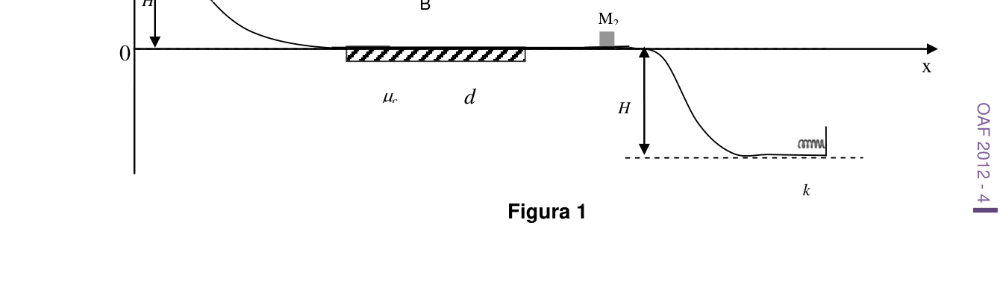
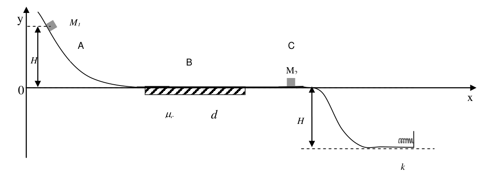
Topic: Conservation of Energy, Conservation of Momentum Metodi: Energy Conservation Method, Conservation of Momentum, Hooke’s Law Competenze: Physical Reasoning, Mathematical Modeling Objects: Block, Spring, Inclined Plane Fonte: Testo (PDF) — p.3
Problema uno.
Un corpo di massa M1, che si trova inizialmente a riposo ad un’altezza H, si scende per la superficie curva mostrata in Figura 1 e continua muovendosi sulla superficie orizzontale e colpisce un altro corpo di massa M2, che è a riposo al punto C.
Considera che:
i) Tutti i movimenti sono effettuati in un piano verticale descritto dal piano xy (della foglia) nella Figura 1. ii) solo si verifica un’iscrizione tra M1 e pista nella zona segnata di lunghezza d (simile per M2); (iii) le masse sono puntuali; iv) tutti gli scatti sono elastica; v) M1 = M2.
Studiare la diminuzione della massa M1 prima di raggiungere il punto C:
a) Sviluppa il diagramma delle forze del corpo isolato corrispondente al istante in cui M1 è nel punto A e il momento corrispondente che si trova al punto B.
b) Il vettore di accelerazione totale quando M1 passa attraverso il punto A è uguale a
- Zero? Se la sua risposta è negativa, disegna un vettore.
- Potenzialmente.
c) Il vettore di accelerazione totale quando M1 passa attraverso il punto B è uguale a
- Zero? Se la sua risposta è negativa, calcola il vettore Accelerazione totale.
d) Calcolare il lavoro svolto su M1 per forza di rottura, prima di arrivare al punto C.
(e) Quanto vale l’energia cinetica di M1 immediatamente prima di
- Un colpo?
f) Calcola il vettore di velocità di M1 appena prima di arrivare al punto C e colpire con M2.
Studiare il colpo tra massa M1 e massa M2 e i risultati:
g) Quanto vale l’energia cinetica di M1 immediatamente dopo tale
- Un colpo?
h) Descriva il movimento di M1 dopo l’impatto.
i) Qual è l’energia totale della massa M2 immediatamente prima dell’impatto contro la primavera?
j) Qual è l’energia cinetica della massa M2 immediatamente prima di Colpire la primavera?
k) Quanto compressa la massa M2 alla primavera?
OAF 2012 - 4 H M2 c H M1 d A B C k x y 0
L) Quanto si fa a M2 dopo aver aperto la primavera?
Studiare il secondo colpo tra massa M1 e massa M2 e i risultati:
m) Descriva il movimento di M2 dopo l’impatto.
n) Descrive il movimento di M1 dopo l’impatto. Quanto arriva l’M1?
o) Calcolare il lavoro totale effettuato su M1 per forza di rottura.
Altre domande:
(p) Al di sotto di quale valore massimo del coefficiente di rottura c la la massa M1 raggiungerebbe la massa M2 per la prima volta?
q) Se si cambia il valore della costante elastica della risorsa k per un valore Qualsiasi altra K ‘quando raggiungerà la massa M1 dopo il secondo
- Un colpo?
Aiuti:
L’energia storata da una sorgente che subisce una compressione x è dato da Er = (1/2) k(x) 2
La forza di rottura dinamica è data da Fd = cN dove N è la forza di reazione normale alla superficie di movimento, applicata sul corpo.
In un colpo elastico l’impulso lineare e l’energia cinetica del sistema di i corpi si conservano.
Datati:
M1 = M2 = 1 kg H = 5 m c = 0,1 (coefficiente di rasatura dinamica) d = 30 m g = 9,8 m/s2 (accelerazione gravitatoria) k = 784 N/m (constante elastica della sorgente)
Figura 1
OAF 2012 - 5 Pagina di risposta
a)
b)
c)
H M2 c H M1 d A B C k x y 0 H M2 c H M1 d A B C k x y 0
OAF 2012 - 6 d)
e)
f)
g)
h)
i)
j)
k)
l)
OAF 2012 - 7
m)
n)
o)
p)
q)
OAF 2012 - 8
Topic: Conservation of Energy, Conservation of Momentum Metodi: Energy Conservation Method, Conservation of Momentum, Hooke’s Law Competenze: Physical Reasoning, Mathematical Modeling Objects: Block, Spring, Inclined Plane Fonte: Testo (PDF) — p.3
Problem number one.
A mass body M1, initially resting at a height of H, descends down the curved surface as shown in Figure 1 and continues moving over the horizontal surface and colliding with another mass body M2, It’s resting at point C.
Consider that:
i) All movements are made in a vertical plane described by the xy plane (of the sheet) in Figure 1. ii) only friction occurs between M1 and the track in the marked area of length d (the same for M2); (iii) the masses are pointed; iv) All impacts are elastic; v) M1 = M2.
Study the decline of mass M1 before reaching point C:
(a) Draw the chart of the individual body forces corresponding to the instant where M1 is in point A and the instant corresponding to it where it is at point B.
(b) Is the total acceleration vector when M1 passes through point A equal to What is it? If your answer is negative, draw a vector. the acceleration possible.
c) Is the total acceleration vector when M1 passes through point B equal to What is it? If your answer is negative, calculate the vector Full acceleration.
(d) Calculate the work done on M1 by the friction force, before reaching point C.
(e) What is the kinetic energy of M1 immediately before What’s the deal?
f) Calculate the velocity vector of M1 just before you reach the point C and Hit the M2.
Study the impact between mass M1 and mass M2 and its results:
(g) What is the kinetic energy of M1 immediately after that? What’s the deal?
(h) Describe the movement of M1 after impact.
(i) What is the total energy of the mass M2 immediately before impact? against the spring?
(j) What is the kinetic energy of mass M2 immediately before crash into the spring?
k) How much does M2 mass compress at spring?
The following is the list of the Member States’ financial statements: H M2 c H M1 d A B C k x y 0
(l) How far does M2 go after separating from the spring?
Study the second collision between mass M1 and mass M2 and its results:
(m) Describe the movement of M2 after impact.
(n) Describe the movement of M1 after impact. How far does M1 go?
(o) Calculate the total work done on M1 by the friction force.
More questions:
(p) Below what maximum value of the coefficient of friction c the M1 mass would reach to hit M2 mass for the first time?
q) If the value of the spring elastic constant k is changed by a value Any other k’ how far will mass M1 go after the second? What’s the deal?
Aid:
The energy stored by a spring undergoing compression x is given by Er = (1/2) k(x) 2
The dynamic brake force is given by Fd = cN where N is the force of normal reaction to the movement surface, applied to the body.
In an elastic shock the linear momentum and kinetic energy of the system of bodies are preserved.
The data:
M1 = M2 = 1 kg H = 5 m c = 0.1 (dynamic friction coefficient) d = 30 m The following is the list of the following: The following conditions shall apply:
Figure 1
The following is the list of the Member States’ financial statements: Answering sheet
a)
b)
c)
H M2 c H M1 d A B C k x y 0 H M2 c H M1 d A B C k x y 0
The following is the list of the Member States’ financial statements: d)
e)
f)
g)
h)
i)
j)
k)
l)
The following is the list of the Member States’ financial statements:
m)
n)
o)
p)
q)
The following is the list of the Member States’ financial statements:
Topic: Conservation of Energy, Conservation of Momentum Metodi: Energy Conservation Method, Conservation of Momentum, Hooke’s Law Competenze: Physical Reasoning, Mathematical Modeling Objects: Block, Spring, Inclined Plane Fonte: Testo (PDF) — p.3
Horno electrico con control de temperatura
Problema 2: .
Horno eléctrico con control de temperatura. Se desea calentar un cuerpo de hierro de 1 kg de masa (M) a una temperatura de 500°C. Para ello se dispone de un horno eléctrico con control de temperatura, el cual consiste de una caja cerrada que no permite el intercambio de calor con el exterior. Dentro del horno, el cuerpo se coloca sobre un soporte de acero de 100 g de masa (m) como se muestra en la figura 1.
Figura 1. Horno eléctrico con control de temperatura.
Para calentar el horno se utilizan sendas resistencias calefactoras que están conectadas a una fuente, a una diferencia de potencial de 100 V, a través de dos (2) llaves. Una llave (Llave 1, Encendido/Apagado) es controlada por el usuario para encender y apagar el horno. La segunda llave (Llave 2) es controlada por un termómetro ubicado en el interior del horno. Ambas llaves no poseen resistencia eléctrica.
Parte 1 El circuito primario, del que forman parte las resistencias calefactoras, se muestra en la figura 2. Los valores de las resistencias utilizados son los siguientes,
OAF 2012 - 9
Figura 2. Circuito primario.
- ¿Cuál es la resistencia equivalente del circuito?
Para el caso en que ambas llaves están conectadas,
-
¿Qué corriente circula por la fuente?
-
¿Qué corriente circula por cada una de las resistencias?
-
¿Qué potencia disipan todas las resistencias en conjunto?
-
Suponga que al momento de encender el horno la temperatura inicial de todo el sistema (horno- soporte- cuerpo de hierro) es de 20°C, ¿Cuánto tiempo tarda el sistema en alcanzar la temperatura deseada de 500°C? Desprecie el calor absorbido por el aire, las resistencias y por el termómetro. El calor específico del hierro es y el del acero es .
Parte 2
El termómetro conectado a la llave 2 es un bimetálico formado por dos laminas
de metal unidas firmemente entre sí, mediante un pegamento aislante eléctrico,
como se muestra en la figura 3a. Unos de los extremos del bimetálico está fijo en
una posición dada, a una distancia h de un conector, el otro extremo se
encuentra libre.
Una lámina es de plata, cuyo coeficiente de dilatación lineal es
, y la otra es de invar cuyo coeficiente de dilatación lineal es
. A 20°C de temperatura, ambas láminas tienen una longitud
, un espesor y un ancho . Cuando la temperatura del
bimetálico cambia, las láminas se doblan debido a que tienen distintos
coeficientes de dilatación lineal y a que están firmemente unidas entre sí. Cada
lámina se dobla a lo largo de una circunferencia de radio R1 y R2,
respectivamente, como se muestra en la figura 3b. Suponga que las láminas no
experimentan cambio de espesor ni de ancho (su dilatación es despreciable) y
que la dilatación de la línea central de cada lámina cumple con:
(1)
OAF 2012 - 10
Figura 3. Bimetálico.
Cuando el horno ha alcanzado la temperatura deseada de 500°C:
-
¿Cuál es la longitud de cada lámina del bimetálico (línea central)?
-
¿Cuáles son los valores de los radios R1 y R2?
-
¿Qué valor toma el ángulo θ (Ángulo sustentado entre los extremos del bimetálico)?
-
¿A qué distancia (h) hay que ubicar el conector A para que haga contacto con el bimetálico?
Parte 3
Cuando el bimetálico toca el conector A, se activa el circuito de control que acciona la segunda llave que se esquematiza en la figura 4. El circuito está formado por una pila, con una diferencia de potencial , y una bobina de 100 vueltas, de radio y con una resistencia eléctrica . La bobina posee un núcleo de permitividad magnética siendo la permitividad magnética del vacío.
OAF 2012 - 11
Figura 4. Circuito de control.
-
Calcule la resistencia eléctrica que presenta el bimetálico entre sus extremos cuando está a una temperatura de 20°C (suponga que el contacto eléctrico se produce uniformemente sobre cada extremo del bimetálico).
-
Suponiendo que la resistencia eléctrica entre los extremos del bimetálico no cambia con la temperatura, calcule la corriente eléctrica que circula por el circuito de control.
-
Calcule el modulo del campo magnético B que se establece en el centro de la bobina
-
¿Cuál es la máxima temperatura a la que puede ser utilizado el horno sin que el sistema de control de temperatura tenga problemas?
Parte 4
En la figura 5 se muestra un esquema de la parte mecánica de la llave 2 (los bornes B1 y B2 están conectados al circuito de resistencias calefactoras).
El dispositivo está formado por un imán permanente sujeto al extremo de una
varilla de longitud , la cual puede rotar respecto de un punto fijo p, y por
un resorte de constante elástica , que conecta la varilla a una
estructura rígida. Dicho resorte está unido a la varilla a una distancia
del punto p. Tanto el imán como el resorte se mueven sin rozamiento dentro de
guías horizontales (paralelas al suelo) que no permiten que cambien sus
direcciones de movimiento.
Cuando no circula corriente por la bobina, el imán es atraído hacia el conector C mediante el resorte. En esta situación (calefactor encendido), la longitud del resorte es un 1% mayor que su longitud natural.
OAF 2012 - 12 Cuando circula corriente por la bobina, el campo magnético B producido por la bobina atrae al imán, venciendo la resistencia impuesta por el resorte. De esta manera el circuito de calefacción se abre (calefactor apagado). Cuando esto sucede, el resorte se estira 1 cm respecto de su longitud natural.
Figura 5. Esquema llave 2.
-
Determine la magnitud de la fuerza magnética entre el imán permanente y la bobina cuando el circuito calefactor está abierto. Realice un esquema de la situación.
-
Si se invierte la pila en el circuito, ¿sigue funcionando el control de temperatura?
Constantes.
Calor
específico
Cp [kJ kg-1 °C-
1]
Coef.
Dilatación
Lineal α [°C-1]
Temp. Fusión
Tf [°C]
Resistividad
[Ω cm]
Hierro
0.450
12.0 x 10-6
1539
9.7
Acero
0.447
12.0 x 10-6
1400
20
Plata
0.235
2.0 x 10-6
962
1.6
Invar
0.120
0.4 x 10-5
1427
80
Cobre
0.385
1.7 x 10-5
1084,62
1.7
OAF 2012 - 13 Hoja de Respuesta
Parte 1.
Parte 2.
Parte 3.
Parte 4.
OAF 2012 - 14
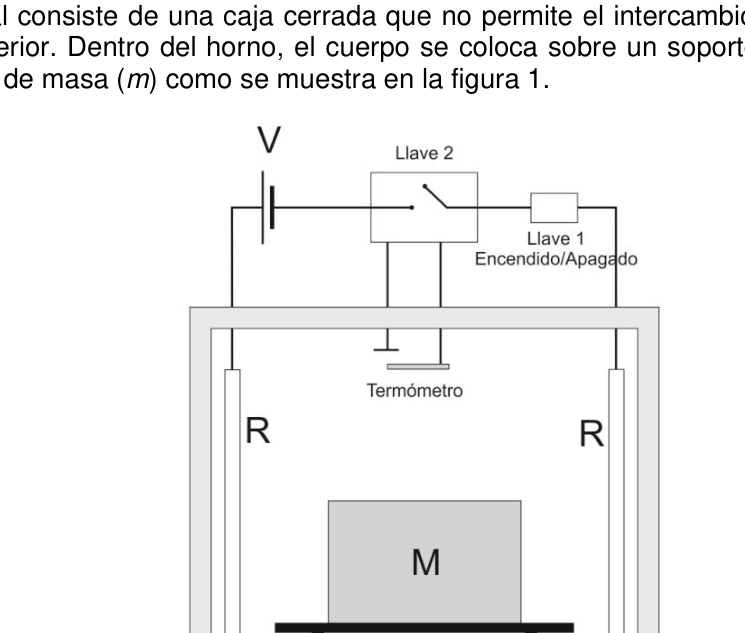
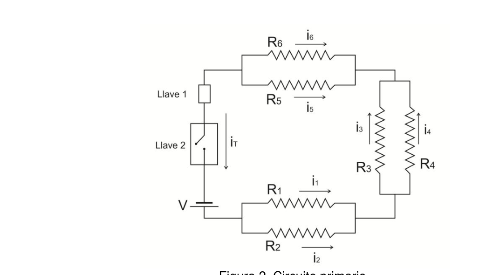
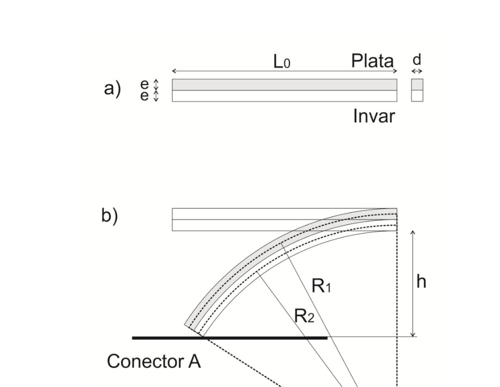
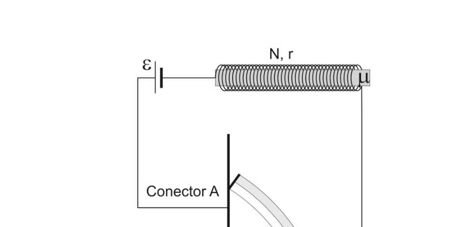
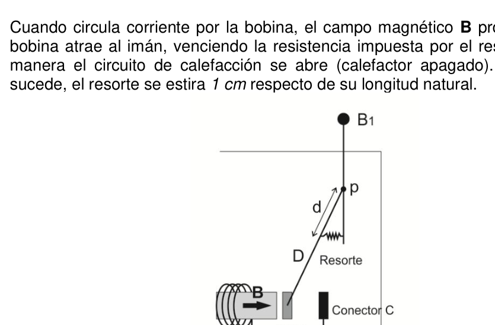
Topic: Circuits, Thermodynamics Metodi: Kirchhoff’s Laws, First Law of Thermodynamics, Biot-Savart Law Competenze: Physical Reasoning, Mathematical Modeling Objects: Resistor, Switch, Coil, Magnet, Battery Fonte: Testo (PDF) — p.3
Orario elettrico con controllo della temperatura
Problema due .
Forno elettrico con controllo della temperatura. Si desidera riscaldare un corpo di ferro di 1 kg di massa (M) a una temperatura de 500°C. Per questo è disponibile un forno elettrico con controllo della temperatura, che consiste in una cassa chiusa che non permette lo scambio di calore con l’esterno. All’interno del forno, il corpo viene posto su un supporto in acciaio di 100 g di massa (m) come mostrato in figura 1.
Figura 1. Forno elettrico con controllo della temperatura.
Per riscaldare il forno si utilizzano le resistenze di riscaldamento che sono presenti. collegate ad una fonte, ad una differenza di potenziale di 100 V, attraverso due (2) chiavi. Una chiave (Chiave 1, On/Off) è controllata dall’utente per accendere e spegnere il forno. La seconda chiave (Chiave 2) è controllata da un termometro all’interno del forno. Entrambe le chiavi non sono loro. resistenza elettrica.
Parte 1 Il circuito primario, di cui fanno parte le resistenze di riscaldamento, è mostra la figura 2. I valori delle resistenze utilizzati sono i seguenti,
OAF 2012 - 9
Figura 2 Circuito primario.
- Qual è la resistenza equivalente del circuito?
Per il caso in cui entrambe le chiavi siano collegate,
-
Che corrente circola attraverso la sorgente?
-
Che corrente circola per ciascuna delle resistenze?
-
Che potenza dissipa tutte le resistenze insieme?
-
Supponiamo che quando accendiamo il forno la temperatura iniziale di tutto il sistema (forno- supporto- corpo di ferro) è 20°C, il sistema raggiunge la temperatura desiderata di 500°C? Spregiate il caldo Assorbita dall’aria, dalle resistenze e dal termometro. Il calore specifico del Il ferro è , e quello dell’ acciaio è .
Parte 2
Il termometro connesso alla chiave 2 è un bimetalico formato da due lamine. di metallo, unito a forma di un’isolazione elettrica, come mostrato in figura 3a. Uno degli estremi del bimetallico è fisso in una posizione data, a una distanza h da un connettore, l’altra estremità è
-
E’ libero. Una lamina è di argento, il cui coefficiente di dilatazione lineare è , e l’altra è di invar il cui coefficiente di dilatazione lineare è . A 20°C di temperatura, entrambe le lamiere hanno una lunghezza
-
Un grosso e un largo . Quando la temperatura del bimetallico cambia, le lastre si piegano perché hanno diverse i coefficienti di dilatazione lineare e che sono strettamente legati tra loro. Ogni . La lamina si piega lungo una circonferenza di radio R1 e R2, rispettivamente, come illustrato in figura 3b. Supponiamo che le foglie non siano La loro spessura e larghezza non cambiano (la loro dilatazione è sconsiderata) e che la dilatation della linea centrale di ciascuna lamina soddisfi:
(1)
OAF 2012 - 10
Figura 3 Bimetalico.
Quando il forno ha raggiunto la temperatura desiderata di 500°C:
-
Qual è la lunghezza di ciascuna lamina del bimetallico (linea centrale)?
-
Quali sono i valori dei raggi R1 e R2?
-
Qual è il valore dell’angolo θ (angolo sospeso tra le estremità di bimetallico)?
-
A che distanza (h) deve essere posto il connettore A per contattarlo? il bimetallico?
Parte 3
Quando il bimetallico tocca il connettore A, viene attivato il circuito di controllo che si attiva la seconda chiave che viene schematizzata nella figura 4. Il circuito è in onda. formato da una pila, con una differenza di potenziale, e una bobina di 100 giri, radio e resistenza elettrica. La la bobina possiede un nucleo di magneticità di permissività essendo la la permisibilità magnetica del vuoto.
OAF 2012 - 11
Figura 4 Circuito di controllo.
-
Calcola la resistenza elettrica presente tra i suoi estremi. quando è a una temperatura di 20°C (supponiamo che il contatto elettrico sia (Gli effetti di questo prodotto sono uniformemente esposti su ogni estremità del bimetallo).
-
Supponendo che la resistenza elettrica tra le estremità del bimetallico non cambia con la temperatura, calcola il corrente elettrica che circola nel circuito di controllo.
-
Calcola il modulo del campo magnetico B che si trova al centro di la bobina
-
Qual è la temperatura massima a cui può essere usato il forno senza che Il sistema di controllo della temperatura ha problemi?
Parte 4
La figura 5 mostra un schema della parte meccanica della chiave 2 (le chiavi di comando) B1 e B2 sono collegati al circuito di resistenza al riscaldamento).
Il dispositivo è costituito da un magnete permanente soggetto all’estremità di una di lunghezza, che può ruotare rispetto a un punto fisso p, e per una stagione di costante elastica , che collega la bacchetta a una struttura rigida. La sorgente è legata alla verga a distanza. di cui al punto p. Sia l’immagine che la primavera si muovono senza rughe all’interno. Guide orizzontali (parallelamente al suolo) che non permettono di cambiare i loro direzioni di movimento.
Quando non circola corrente attraverso la bobina, il magnete è attratto verso il connettore C
- La primavera. In questa situazione (caldo acceso), la lunghezza del caldo è di la primavera è un 1% più grande della sua lunghezza naturale.
OAF 2012 - 12 Quando si circola corrente attraverso la bobina, il campo magnetico B prodotto dalla bobina la bobina attira l’immagine, superando la resistenza imposta dalla primavera. Di questa . modo in cui il circuito di riscaldamento si apre (caldazione spenta). Quando questo Se succede, la primavera si allunga di 1 cm rispetto alla sua lunghezza naturale.
Figura 5 Schema chiave 2.
-
Determina l’entità della forza magnetica tra il magnete permanente e la bobina quando il circuito di riscaldamento è aperto. Fate un schema della La situazione.
-
Se si inverte la pila nel circuito, il controllo di Temperatura?
Costante.
Calore specifico Cp [kJ kg-1 °C- 1]
- Coef. Dilatazione Lineare α [°C-1] Temp. Fusione Tf [°C] Resistenza [Ω cm] Ferro 0.450 12.0 x 10-6 1539 9.7 Acciaio 0.447 12.0 x 10-6 1400 20
- Silver
0.235
2.0 x 10-6
962
1.6
Invar
0.120
0.4 x 10-5
1427
80
Copro
0.385
1.7 x 10-5 1084,62 1.7
OAF 2012 - 13 Pagina di risposta
Parte 1.
Parte 2.
Parte 3.
Parte 4.
OAF 2012 - 14
Topic: Circuits, Thermodynamics Metodi: Kirchhoff’s Laws, First Law of Thermodynamics, Biot-Savart Law Competenze: Physical Reasoning, Mathematical Modeling Objects: Resistor, Switch, Coil, Magnet, Battery Fonte: Testo (PDF) — p.3
Electrical time with temperature control
Problem two .
Electric furnace with temperature control. A body of iron of 1 kg mass (M) is desired to be heated to a temperature de 500°C. An electric furnace with temperature control is provided for this purpose. which consists of a closed box which does not allow heat exchange with The outside. Inside the oven, the body is placed on a steel support of 100 g mass (m) as shown in Figure 1.
Figure 1 is shown. Electric furnace with temperature control.
The heating resistance tracks are used to heat the oven. connected to a source, to a potential difference of 100 V, through two (2) keys. A key (Key 1, On/Off) is controlled by the user To turn on and off the oven. The second key (Key 2) is controlled by a thermometer located inside the oven. Both keys are not theirs . electrical resistance.
Part 1 The primary circuit, which includes heating resistors, is The following is shown in Figure 2. The resistance values used are the following,
The following is the list of the Member States’ financial statements:
Figure two. Primary circuit.
- What is the equivalent resistance of the circuit?
For the case that both keys are connected,
-
What current is flowing through the source?
-
What current is flowing through each of the resistors?
-
What power dissipates all resistance together?
-
Suppose that when you turn on the oven the initial temperature of everything The system (iron furnace-support-body) is 20°C, how long does it take the system to reach the desired temperature of 500°C? Disdain the heat . absorbed by the air, the resistance and the thermometer. The specific heat of the Iron is , and steel is .
Part 2
The thermometer connected to key 2 is a bimetallic made of two laminates. Of a kind used for the manufacture of goods of heading 8102, not further worked than hot-rolled, hot-drawn or extruded, of a width of <= 600 mm, as shown in Figure 3a. One of the ends of the bimetallic is fixed at a given position, at a distance h from a connector, the other end is He’s free. A sheet is silver, whose coefficient of linear dilation is , and the other is to invert whose coefficient of linear dilation is . At 20°C of temperature, both sheets have a length , a thickness and a width . When the temperature of the The bimetallic changes, the sheets bend because they have different linear dilation coefficients and which are tightly bound to each other. Each one . The sheet is folded along a radius circumference of R1 and R2. respectively, as shown in Figure 3b. Suppose the sheets are not . They experience a change in thickness or width (their dilation is despicable) and that the central line dilation of each sheet meets:
(1)
The following is the list of the countries of the European Union:
Figure 3 is shown. It’s a two-dimensional.
When the oven has reached the desired temperature of 500°C:
-
What is the length of each sheet of bimetallic (centerline) material?
-
What are the values of radii R1 and R2?
-
What is the value of angle θ (angle sustained between the ends of Bimetallic)?
-
How far (h) must the connector A be located to make contact with The bimetallic?
Part 3
When the bimetallic touches connector A, the control circuit that is the second key is activated, as outlined in Figure 4. The circuit is on . formed by a stack, with a potential difference, and a coil of 100 laps, radio and with an electrical resistance. La The coil has a magnetic permittivity core being the magnetic permittivity of the vacuum.
The following is the list of the Member States’ financial statements:
Figure 4 is shown. Control circuit.
-
Calculate the electrical resistance of the bimetallic between its ends when at a temperature of 20°C (assume that the electrical contact is (i.e. the product is uniformly produced on each end of the bimetallic material).
-
Assuming that the electrical resistance between the ends of the bimetallic is not It changes with temperature, calculates the electric current circulating through the circuit. The Commission is not responsible for the control.
-
Calculate the magnetic field module B set at the center of the coil
-
What is the maximum temperature at which the oven can be used without The temperature control system is having problems?
Part 4
Figure 5 shows a diagram of the mechanical part of the key 2 (the B1 and B2 terminals are connected to the heating resistance circuit).
The device is made up of a permanent magnet attached to the end of a length rod, which can rotate with respect to a fixed point p, and by a spring of constant elasticity , which connects the rod to a rigid structure. The spring is attached to the rod at a distance. of point p. Both the magnet and spring move without friction inside. horizontal guides (parallel to the ground) that do not allow them to change their the direction of movement.
When no current is flowing through the coil, the magnet is pulled towards the C connector. by spring. In this situation (heating factor on), the length of the spring is 1% greater than its natural length.
The following is the list of the Member States’ financial statements: When current is flowing through the coil, the magnetic field B produced by the coil is The coil attracts the magnet, overcoming the resistance imposed by the spring. Of this one . the heating circuit is opened (heating factor off). When this is If the spring is stretched 1 cm from its natural length.
Figure 5 is shown. Key diagram two.
-
Determine the magnitude of the magnetic force between the permanent magnet and the magnetic field. coil when the heating circuit is open. Make a diagram of the The situation.
-
If the battery is reversed in the circuit, is the control of the The temperature?
It’s a constant.
Heat .
specific
Cp [kJ kg-1 °C-
1]
Coef, you know what?
Dilation
The following is the list of the following:
Temp. Merger
Tf [°C]
Resistivity
[Ω cm]
Iron .
0.450
12.0 x 10-6
1539
9.7
Steel
0.447
12.0 x 10-6
1400
20
Silver .
0.235
2.0 x 10-6
962
1.6
Invar
0.120
0.4 x 10-5
1427
80
Copper
0.385
1.7 x 10-5
1084,62
1.7
The following points shall be added: Answering sheet
Part one
Part two.
Part three.
Part four.
The following is the list of the Member States’ financial statements:
Topic: Circuits, Thermodynamics Metodi: Kirchhoff’s Laws, First Law of Thermodynamics, Biot-Savart Law Competenze: Physical Reasoning, Mathematical Modeling Objects: Resistor, Switch, Coil, Magnet, Battery Fonte: Testo (PDF) — p.3
El salto que fue un record
Problema 3: .
El salto que fue un record. Pocos días atrás, el austríaco Félix Baumgartner se propuso alcanzar la velocidad del sonido, sin ninguna asistencia mecánica, es decir sin el uso de ninguna nave o dispositivo mecánico que lo llevara a esa velocidad. Para ello una capsula colgada de un globo aerostático de helio, especialmente diseñada, lo ubicó a una gran altura por encima de la tierra, desde donde se arrojó (imagen).
Para el diseño de esta hazaña el Sr. Baumgartner contó con el asesoramiento
de varios especialistas, entre ellos una persona que sabe física, como Ud.
En este problema nos proponemos investigar algunos aspectos que se tuvieron
que tener en cuenta para el cumplimiento exitoso de esta aventura.
A lo largo de todo este problema asumiremos que la aceleración de la gravedad
es independiente de la altura, y su valor es 9.8 m/s2. También supondremos que
la velocidad del sonido es constante en toda la atmósfera e igual a 340m/s.
a) Suponiendo que la caída fuese libre, ¿cuánto tiempo le llevaría a Félix alcanzar la velocidad del sonido?
b) ¿Qué distancia recorrería en ese lapso de tiempo?
Sin embargo, sobre un objeto que cae en la atmósfera terrestre actúan tres
fuerzas:
i)
La fuerza de la gravedad, Fg.
ii)
la fuerza de flotación, Fe.
iii)
la fuerza de arrastre, Fd.
Las últimas dos fuerzas oponen resistencia a la caída libre del cuerpo.
La fuerza de flotación es igual en magnitud al peso del fluido – en este caso el
aire de la atmósfera- desalojado por el cuerpo (Principio de Arquímedes).
Por otro lado la fuerza de arrastre, que está en la misma dirección y es de
sentido contrario al movimiento del objeto, tiene una magnitud
en donde: Cd es un coeficiente dinámico que depende del cuerpo y de las condiciones del fluido en el que el cuerpo se mueve; ρa es la densidad de la atmósfera; v es la velocidad del cuerpo en movimiento; A es el área del cuerpo transversal a la dirección de movimiento. Denotaremos además por ρ a la densidad del cuerpo y por m a su masa.
c) Exprese la magnitud de la fuerza de flotación Fe, en términos de la densidad del aire y de la densidad y masa del cuerpo.
OAF 2012 - 15
d) Escriba la ecuación de movimiento de un cuerpo que cae en la
atmósfera.
Si se supone que la densidad de la atmósfera es constante, entonces por efecto
de la acción combinada de las tres fuerzas mencionadas arriba, y tras un cierto
tiempo de comenzar su caída, el cuerpo logra una velocidad final, conocida
como velocidad límite.
e) Encuentre una expresión para la velocidad límite, bajo la suposición de que la densidad de la atmósfera es constante. Con el propósito de poder responder a algunas de las preguntas planteadas por el aventurero Félix, haremos las siguientes suposiciones:
i) Félix, vistiendo su traje “espacial”, es geométricamente similar a un cilindro de radio r = 40 cm, y de altura l=1.85 m, y que su densidad es igual a la del agua: ρ = 1 g/cm3.
ii) El coeficiente dinámico de Félix es Cd = 1.5.
iii) La densidad de la atmósfera es constante a tramos, con los valores que se muestran en la siguiente tabla:
Rango de altura 0-10 (km) 10-20 (km) 20-30 (km) 30-40 (km) ρa (g/cm3) 0.0012 0.0006 0.0003 0.00002
iv)
La velocidad del sonido es constante en toda la atmósfera e igual
a 340m/s.
Teniendo en cuenta todas estas suposiciones y datos,
f) ¿Desde cuáles rangos de altura de los indicados en la tabla, no
debería arrojarse Félix si quiere lograr su objetivo, es decir superar
la velocidad del sonido? Justifique su respuesta.
La presión atmosférica decrece con la altura de acuerdo con la expresión
(1)
donde P0 =760 mmHg = 760 Torr, es la presión atmosférica a nivel del mar y H es una constante que se llama escala de altura y vale H=8.42km.
En la figura adjunta se representa la presión de vapor del agua en función de la temperatura. Recuerde que la presión de vapor es la presión a la que coexisten la fase líquida y la fase gaseosa de una sustancia.
OAF 2012 - 16
Presión de vapor del agua. 1 Torr equivale a 1mmHg
Suponga que la sangre de Félix es prácticamente agua y se encuentra a 36ºC. Sobre la base de la información suministrada y usando la figura, responda
g) ¿qué efecto sufriría la sangre de Félix, si no usara un traje adecuadamente presurizado al momento de lanzarse desde la cápsula?
OAF 2012 - 17 Hoja de Respuesta
a)
b)
c)
d)
e)
f)
OAF 2012 - 18 g)
OAF 2012 - 19
Instancia Nacional Prueba Experimental
OAF 2012 - 20 Introducción:
Determinación de la permitividad eléctrica del aire Introducción Un condensador es un dispositivo que almacena energía en un campo eléctrico. Este dispositivo está formado por dos superficies conductoras (Placas) separadas por un medio dieléctrico como se muestra en la Figura 1.
Figura 1. Condensador
Cuando se aplica una diferencia de potencial entre los “terminales” de un condensador, sus placas conductoras se cargan con carga Q y -Q respectivamente. La magnitud de la carga Q está dada por,
(1)
donde C es una constante denominada capacidad cuya unidad es el Faradio [F]. La capacidad depende de la forma geométrica y de las dimensiones del condensador, y de la permitividad eléctrica ε del medio que separa las placas.
Entre las formas de conectar condensadores se encuentran dos muy usadas:
-Conexión en serie
Figura 2a. Conexión en serie
La capacidad C de un sistema formado por dos condensadores de capacidad
y conectados en serie (Figura 2a) es tal que:
(2)
-Conexión en paralelo
Figura 2b. Conexión en paralelo.
OAF 2012 - 21
La capacidad C de un sistema formado por dos condensadores de capacidad
y conectados en paralelo (Figura 2b) es:
(3)
Condensador cilíndrico
En este tipo de condensador, las placas metálicas son cilindros ubicadas de manera coaxial como se muestra en la Figura 3.
Figura 3. Condensador cilíndrico.
La capacidad de un condensador cilíndrico de altura L y de radio interno y externo ( ), con un medio de permitividad eléctrica ε (ver Figura 3) está dada por:
(4)
Objetivos:
-
Determinar la permitividad eléctrica del aire utilizando un condensador cilíndrico de longitud variable.
-
Determinar el valor de inductancia LB de una bobina.
OAF 2012 - 22 Equipo:
Figura 4. Equipo experimental.
Parte 1: Calibración del transductor Capacidad-Frecuencia.
El transductor capacidad-frecuencia es un dispositivo mediante el cual se puede determinar la capacidad (C) de un condensador a través de la medición de la frecuencia de la señal de voltaje de salida (V0).
Figura 5. Esquema de conexión Transductor Capacidad -Frecuencia
El esquema del dispositivo de medición se muestra en la Figura 5. La frecuencia (f) que indica el frecuencímetro conectado en los bornes de la salida (bornes C- D) está relacionada con la capacidad (C) del condensador conectado en los bornes de entrada (bornes A-B) mediante la ecuación:
(5)
donde y son constantes que dependen de la construcción del transductor.
Elementos disponibles:
- Transductor Capacidad-Frecuencia.
OAF 2012 - 23
-
3 Condensadores de capacidad conocida con una incertidumbre relativa del 10%. Color Capacidad [pF] Verde 56 Naranja 82 Blanco 120
-
Conector
-
Frecuencímetro (Multímetro).
-
Hoja milimetrada.
Utilizando los elementos provistos determine las constantes y .
Procedimiento:
1.1. Conecte dispositivos de capacidad conocida a la entrada del transductor (bornes A -B) y determine la frecuencia de la señal de voltaje de salida (bornes C-D), utilizando el frecuencímetro. Vuelque los valores medidos en una tabla (Tabla 1). Para la conexión de los condensadores a la entrada del transductor, utilice el conector provisto.
Notas:
- Ver Anexo para conexión del frecuencímetro.
- El transductor posee un pulsador para su encendido y una luz de indicación de encendido.
- En caso en que el frecuencímetro se apague, vuelva a encenderlo utilizando el botón de encendido del mismo.
1.2. A partir de los datos medidos, elabore un gráfico 1/f vs C.
1.3. A partir del gráfico determine los valores de las constantes de la ecuación (5).
Parte 2: Determinación de la permitividad eléctrica del aire
Elementos disponibles:
-Condensador cilíndrico de longitud variable.
-Transductor Capacidad-Frecuencia.
-Frecuencímetro (Multímetro).
-Regla.
-Hoja milimetrada.
OAF 2012 - 24
Figura 6. Esquema conexión para el condensador variable.
Utilizando los elementos provistos determine el valor de .
Procedimiento:
2.1. Determine la frecuencia de la señal de voltaje de salida del transductor Capacidad-Frecuencia (bornes C-D) para distintas posiciones (x) del cilindro interno del condensador cilíndrico. Vuelque los valores medidos en una tabla (Tabla 2).
Notas:
- Ver Anexo para conexión del frecuencímetro.
- El transductor posee un pulsador para su encendido y una luz de indicación de encendido.
- En caso en que el frecuencímetro se apague, vuelva a encenderlo utilizando el botón de encendido del mismo.
2.2. Determine los valores de capacidad (C) correspondientes a los valores de frecuencia medidos en el punto anterior.
2.3. Elabore un gráfico de x vs C.
2.4. Ajuste los valores graficados mediante una recta y determine la pendiente (m) de la misma.
2.5. Mida los diámetros interno (a) y externo (b) de las placas del condensador cilíndrico.
2.6. A partir de la ecuación (4) y usando los valores de m, a y b, determine la permitividad eléctrica del aire .
Ayuda:
Parte 3: Determinación de la constante de inductancia (LB) de una bobina.
Una bobina es un elemento capaz de almacenar energía en un campo magnético. Cuando se conecta la bobina a una fuente de tensión alterna, esta se opone al cambio en la corriente. Esta oposición está caracterizada por un
OAF 2012 - 25 parámetro denominado inductancia (LB) que caracteriza a la bobina. La unidad de la inductancia es el Henrio (H).
Un circuito RLC (Figura 7) está formado una resistencia R, un condensador de capacidad C y una bobina de inductancia LB conectados en serie y alimentado por una fuente de tensión alterna V.
Figura 7. Circuito RLC serie.
Cuando la frecuencia de la fuente corresponde al valor de resonancia (f0), la corriente i que circula por el circuito tiene amplitud máxima. El valor de f0 está dado por,
(6)
Elementos disponibles:
-Fuente de tensión de frecuencia variable (Condensador de longitud variable + transductor Capacidad-Frecuencia).
-Resistencia
-Condensador
-Bobina de inductancia desconocida.
-Amperímetro (Multímetro)
Utilizando los elementos provistos determine el valor de la inductancia LB de la bobina.
Procedimiento:
3.1. Conectando el condensador cilíndrico (capacidad variable) en los bornes A- B del transductor Capacidad-Frecuencia, los bornes C-D del transductor funcionan como los de salida de una fuente de voltaje de corriente alterna. Implemente esta “fuente de voltaje de frecuencia variable” y conéctela al circuito RLC provisto.
OAF 2012 - 26 3.2. Conecte el amperímetro de modo de poder medir la corriente que circula por el circuito. Recuerde que el amperímetro se conecta en serie y que la corriente que se quiere medir es alterna.
Notas:
- Ver Anexo para conexión del amperímetro.
- El transductor posee un pulsador para su encendido y una luz de indicación de encendido.
- En caso en que el amperímetro se apague, vuelva a encenderlo utilizando el botón de encendido del mismo.
3.3. Varíe la frecuencia de la fuente de la fuente de tensión (variando la capacidad del capacitor cilíndrico). A partir de los valores de corrientes que circulan por el circuito, correspondientes a distintos valores de frecuencia, confeccione una tabla con los resultados de las mediciones y determine el valor de f0. Explicite los criterios utilizados en la determinación.
3.4. Determine el valor de LB.
OAF 2012 - 27 Anexo: Uso de Multímetro
Multímetro como Frecuencímetro.
Multímetro como Amperímetro en Alterna.
OAF 2012 - 28 Hoja de Respuesta Parte 1.
Tabla: Hoja aparte.
Grafico: Hoja aparte.
Parte 2.
Tabla: Hoja aparte.
Grafico: Hoja aparte
Parte 3.
Tabla: Hoja aparte.
OAF 2012 - 29
Primer Prueba Preparatoria Cinemática y Mecánica
OAF 2012 - 30 Problema Teórico 1
Las funciones de movimiento de dos autos A y B son, respectivamente:
1 ( / ) 2.5 2 (2 / ) 4 A B x m s t m x m s t m
a) Determinar la distancia que separa a ambos móviles en t = 2 s; en
t = 3.2 min y en t = 0.7 hs.
b) Determinar la posición del móvil B, cuando el móvil A se encuentra en x = 4.5 m.
c) ¿Para qué valor de t y en qué punto x se produce el encuentro de los autos?
Resolver los incisos b) y c) en forma gráfica y analítica.
Problema Teórico 2
En la Figura 1 se muestra la función de movimiento, ( ) x t , de un móvil, el cual se encuentra en x = 0 m para t = -1.3 s. Figura 1
a) Determinar la longitud total del camino recorrido en los siguientes intervalos de tiempo: [ -1.3; 3 ] s; [ 3; 10 ] s ; [ 10 ; 14 ] s ; [-1.3; 14 ] s
b) Determinar la velocidad media v en los mismos intervalos de tiempo del inciso anterior.
OAF 2012 - 31
c) Usando la velocidad media obtenida en el intervalo [-1.3; 14] s, determinar la longitud total del camino que recorrería el móvil en el mismo intervalo de tiempo, suponiendo que la posición es una función lineal del tiempo. Comparar este valor con el obtenido en a) para el intervalo [-1.3; 14] s. Explicar el resultado obtenido.
d) Calcular la velocidad media v en los intervalos de tiempo [0.6; 6] s;
[2; 4] s; [2.5; 3.5] s.
e) Determinar gráficamente la velocidad instantánea del móvil en los siguientes instantes: t = 0 s; t = 9 s; t = 14 s.
f) ¿Para qué valores de t el móvil se encuentra en x = 50 m?
g) ¿Para qué valores de t el móvil:
i- se está desplazando en la dirección de x positiva?
ii- se está desplazando en la dirección de x negativa?
iii- tiene velocidad nula?
Problema Teórico 3
Un cuerpo de masa M, que se encuentra inicialmente en reposo a una altura H, desciende por la superficie curva mostrada en la Figura 2. Todos los movimientos se realizan en el plano vertical. Considere que la pista está libre de rozamiento, salvo en la zona marcada de longitud d. Suponga que la masa M es puntual.
g) Haga el diagrama de cuerpo aislado al pasar por los puntos A y B.
h) En esos puntos el vector aceleración total es ¿igual o diferente de cero?
i) Dibuje un vector aceleración total posible cuando pasa por A.
j) Calcule el vector aceleración total en el punto B.
k) Suponga que la masa M llegó al punto C ¿Cuánto vale el trabajo realizado por la fuerza de rozamiento sobre la masa M?
l) Calcule el vector velocidad en el punto C.
m) ¿Cuánto comprime la masa M al resorte?
n) ¿Hasta donde llega la masa M luego de dejar el resorte?
Datos:
M = 1 kg
H = 5 m
c = 0,1 (coeficiente de rozamiento dinámico)
d = 30 m
g = 9,8 m/s2 (aceleración de la gravedad)
k = 784 N/m. (constante elástica del resorte)
OAF 2012 - 32
Figura 2
Problema Experimental
Para cada tarea realizar un informe breve que conste de lo siguientes puntos: a) Objetivo b) Descripción del método de medición (esquema). c) Valores medidos (tablas, gráficos, etc.). d) Resultado.
Tarea 1
- Determine el coeficiente de rozamiento estático entre una regla y una goma.
Tarea 2
- Determine la densidad de una hoja de papel (utilizar hojas de papel de masa por metro cuadrado conocida, por ejemplo 70 gr/m2).
OAF 2012 - 33
Segunda Prueba Preparatoria Termodinámica
OAF 2012 - 34 Problema Teórico 1
Una de las primeras estimaciones del número de Avogadro fue realizada por Lord Rayleigh en 1890. El observó que muy pequeñas cantidades de algunos aceites se esparcen en áreas muy amplias cuando se las deposita sobre la superficie de un estanque de agua. Bajo condiciones de reposo la “mancha de aceite” es aproximadamente circular, de forma que la superficie cubierta puede calcularse midiendo su diámetro. En particular, se observa que un miligramo de ácido oleico (aceite), cuya densidad es 0.9 g/cm3, cubre una superficie aproximada de 0.9 m2.
a) ¿Cuál es el espesor de la capa de aceite?
b) Asumiendo que el espesor de la capa de aceite se corresponde con el diámetro molecular, que las moléculas son esféricas a los fines de la estimación y que están en contacto entre sí en la película de aceite, ¿cuál es el volumen estimado para una molécula?
c) Estimar la constante de Avogadro (número de moléculas por mol de sustancia) a partir de los datos del experimento, considerando que un mol de ácido oleico tiene una masa de 282.5 g/mol.
Problema Teórico 2
Históricamente se ha definido de manera empírica la temperatura T a partir de una magnitud termométrica x experimentalmente accesible. El caso más conocido en la vida diaria, por ejemplo, es cuando x representa la altura de una columna de mercurio dentro de un capilar. Lo que conocemos como termómetro de mercurio. Una definición empírica (experimental) de la temperatura es:
i) Partimos de dos puntos fijos (x1 , x2), a los cuales se les asignan arbitrariamente determinados valores (T1 , T2) en la escala termométrica que se está definiendo. Luego, se establece “a priori” una relación lineal entre la magnitud termométrica medida y la temperatura (T = A (x –x1) + B), utilizando los puntos (x1 , T1) y (x2 , T2). Para más claridad, hacemos en la figura 1 una representación gráfica para el caso de las escalas termométricas Celsius y Fahrenheit
100 212 0 32 x x1 x2 T oF T oC cm
OAF 2012 - 35 a) Determinar los valores de las constantes A, B cuando la definición i) se aplica en la construcción de una escala termométrica cualquiera.
b) Utilizando la siguiente tabla, encontrar las expresiones que permitan convertir los grados Celsius a cada una de las otras escalas:
oC oF oRa K Temperatura de fusión del hielo 0 32 492 273 Temperatura de evaporación del agua 100 212 672 373
donde oC representa la escala de grados Celsius, oF la de grados Fahrenheit, oRa la de grados Rankine, K la de grados Kelvin.
Problema Teórico 3
Un recipiente, que puede considerarse adiabático (no intercambia calor con el medio ambiente), contiene 1 Kg de agua a temperatura ambiente. Un termómetro de mercurio, que se encuentra sumergido en el agua, indica que la temperatura del sistema es de 27oC. En el recipiente se vierte agua en estado de ebullición (100oC) y, cuando la temperatura del agua se estabiliza, el termómetro indica que la temperatura del sistema es de 50oC. La transferencia de calor al recipiente puede considerarse despreciable.
a) ¿Cuál es la masa de agua en estado de ebullición que se agregó al
recipiente? Tenga en cuenta que el calor específico del agua es
cagua = 1 cal/(oC g), y la masa de agua equivalente para el termómetro
de mercurio es meq=10 g.
b) Ahora se extraen de un congelador tres cubitos de hielo, de 20 g de masa cada uno y a una temperatura de -20oC, y se agregan al recipiente. Calcular la temperatura que indicará el termómetro cuando el sistema alcance el equilibrio.
Datos: Calor latente de fusión del hielo hielo = 80 cal/g, calor específico del hielo: chielo = 0.53 cal/(oC g),
Problema Experimental: Construcción de un termómetro de gas
Objetivo: construir un termómetro de gas utilizando elementos de fácil acceso.
Breve descripción Un termómetro de gas utiliza como sustancia termométrica un gas. El principio de funcionamiento radica en que si una determinada cantidad de gas encerrada en un recinto de volumen V1, a una presión P1 y a una temperatura T1, se pone en contacto con un cuerpo a una temperatura T2, con el cual alcanza el equilibrio térmico, experimenta un cambio de presión y volumen (P2 y V2). Ver figura.
OAF 2012 - 36
Suponiendo que se trata de un gas ideal, el cambio de presión, volumen y
temperatura cumplirá con la ecuación de estado de los gases ideales:
, donde P es la presión del gas, n el numero de moles de gas, V el
volumen que ocupa y T la temperatura a la que se encuentra.
Así, para un número de moles constante de gas ideal, se cumple la relación
entre las variables termodinámicas correspondientes al estado (1) y al
estado (2):
Para el caso de la figura se cumplirá que:
Donde Patm es la presión atmosférica (1,013 105 Pa), es la densidad del agua (1,0 g cm-3), g es la aceleración de la gravedad (9,80 m s-2), A es la sección transversal del tubito, h1 y h2 con los niveles de agua en cada estado.
Con las consideraciones anteriores, se puede arribar a la siguiente aproximación:
Consigna 1 Realizar la construcción de un dispositivo similar al de la figura. Es importante lograr que el sistema no tenga “pérdidas” (utilizando cera, plastilina, etc.); esto es, que no cambie la cantidad de gas encerrado en el recinto.
Elementos que pueden resultar de utilidad:
Un recipiente con tapa (frasco estéril para análisis)
Un sorbete o tubito fino
Plastilina (paquete chico)
Vela de cera (candela) y fósforos… ¡solo bajo supervisión del profesor!
Agua
Calentador de Agua… ¡solo bajo supervisión del profesor!
Agua con hielo
Termómetro áulico
Regla
Cinta adhesiva de papel (fina)
Lapicera (puede ser de tinta indeleble)
Consigna 2 Realizar la calibración del dispositivo para que funcione como termómetro entre 0°C y 40°C. Esta calibración se puede realizar con un punto fijo o con dos valores de temperatura conocidos.
OAF 2012 - 37 Consigna 3 Determinar la temperatura ambiente con el termómetro construido y compararla con el valor que indica el termómetro áulico.
Figura problema experimental
h2-h1 Patm V2 P1 P2 T1 T2 V1 h1 h2 Estado 1 Estado 2
OAF 2012 - 38
Tercer Prueba Preparatoria Electricidad y Magnetismo
OAF 2012 - 39 Problema Teórico 1
La Figura 1 muestra un circuito cuyos elementos tienen los siguientes valores: 1 = 2.1 V, 2 = 6.3 V, R1 =1.7 Ω, R2 = 3.5 Ω.
Encuentre las corrientes en las tres ramas del circuito.
Figura 1
Las flechas en las fuentes indican el sentido en que aumenta el potencial eléctrico.
Problema Teórico 2
Un alambre horizontal largo, soportado rígidamente, conduce una corriente ia, de 96 A. Directamente encima de él y paralelo a él hay un alambre delgado de peso por metro 0.73 N/m y que conduce una corriente ib de 23 A.
a) ¿En qué sentido deben circular las corrientes para que haya repulsión magnética entre los alambres?
b) ¿A qué altura sobre el alambre inferior habría que extender el segundo alambre si esperamos soportarlo mediante repulsión magnética?
Problema Teórico 3
En el modelo atómico de Bohr del átomo de hidrógeno, el electrón gira alrededor del núcleo en una trayectoria circular de 5.29 x 10-11 m de radio y a una frecuencia de 6.63 x 1015 Hz (o revoluciones/segundo).
a) ¿Qué valor de campo magnético B se genera en el centro de la órbita?
b) ¿Cuál es el momento dipolar magnético equivalente?
Prueba Experimental Objetivos:
- Construir un electroimán.
OAF 2012 - 40
- Construir una brújula.
- Verificar si el comportamiento del módulo del campo de inducción magnética producido por un dipolo magnético sobre el eje del mismo, responde a una ley del tipo 1/x3.
Breve descripción Un electroimán es un dispositivo mediante el cual se obtiene un campo de inducción magnéti-ca B. Una configuración usual consiste en un clavo de hierro (o algún otro material ferromagnético) sobre el cual se ha bobinado algún número de vueltas de alambre de cobre (ver figura 1). Cuando la bobina se conecta a una fuente de tensión, la corriente eléctrica que circula por ella produce un campo de inducción magnética. El campo B que se consigue mediante un electroimán depende de la configuración geométrica utilizada; en el caso del descripto arriba (clavo y bobina) es similar al de un dipolo magnético.
Figura 1
El módulo del campo de inducción magnética, B, producido por un dipolo magnético de módulo Pm a lo largo de la dirección de eje del dipolo y a una distancia x, está dado por:
La dirección del vector campo de inducción magnética en este caso es la del
eje x.
Una brújula es un instrumento mediante el cual se puede determinar la dirección norte-sur (N-S) sobre la superficie terrestre; en general, se puede usar para determinar la dirección, en un punto determinado, de un campo de inducción magnética cualquiera. Consiste de una aguja imantada que puede girar libremente, por lo que se orienta en la dirección del campo de inducción magnética.
Figura 2
Eje del electroimán
OAF 2012 - 41 Consigna 1
a) Realizar la construcción de un electroimán similar al de la figura 1, con una bobina de al menos 30 vueltas de alambre.
b) ¡Verificar su funcionamiento! Describir el procedimiento utilizado.
Elementos que pueden resultar de utilidad:
- Un clavo de unos 5cm de largo.
- Alambre fino de cobre (hilos de cables de electricidad, alambre esmaltado de bobinas, etc.), aproximadamente 1m.
- Cinta adhesiva de papel.
- Cables conductores para conexiones eléctricas.
- Pila de 1,5 V (en lo posible tipo A y nueva).
Nota: Es importante que las vueltas de alambre que se bobinan no se cortocircuiten entre sí ni con el clavo. Para esto, en caso de no usar alambre esmaltado, se recomienda cubrir el clavo con un aislante (cinta de papel o papel) y cuidar de que las vueltas de alambre estén y permanezcan separadas entre sí.
Consigna 2
a) Realizar la construcción de una brújula similar a la de la figura 2.
b) ¡Verificar su funcionamiento! Describir el procedimiento utilizado.
Elementos que pueden resultar de utilidad:
- Una tapa o recipiente de poca profundidad y no metálico (por ejemplo, tapa de frasco estéril para análisis).
- Un alfiler magnetizado.
- Un trocito de papel
- Agua.
Notas:
- Magnetice el alfiler utilizando el electroimán. Para esta tarea debe apoyar la cabeza del alfiler sobre la cabeza del clavo/núcleo del electroimán (con este último en funcionamiento).
- Es importante que la aguja pueda rotar libremente; para esto, utilice un trocito de papel para asentarla, el mismo flotará sobre una superficie de agua. Ni la aguja ni el barquito (papelito) deben tocar el borde de la cubeta.
Consigna 3
Verificar que el módulo del campo de inducción magnética B a lo largo del eje del electroimán varía con la distancia como el de un dipolo magnético, esto es:
Elementos que pueden resultar de utilidad:
- La brújula construida.
- El electroimán construido.
- Hojas en blanco.
- Papel milimetrado.
OAF 2012 - 42
- Regla.
- Lápiz.
Para realizar la verificación ubique el eje del electroimán perpendicular al campo magnético terrestre y sobre un plano paralelo a la superficie terrestre. De esta manera, la presencia del campo del electroimán sumado vectorialmente al terrestre producirá una desviación de la aguja respecto de la dirección norte-sur (N-S). La tangente trigonométrica del ángulo ( ) entre la aguja y la dirección norte-sur es proporcional al campo de inducción magnética producido por el electroimán. Determine la tangente de α para diferentes distancias x entre el electroimán y la aguja de la brújula.
Procedimiento sugerido
a) Apoye la “brújula” sobre un extremo de una hoja de papel de tal manera que el lado corto quede alineado con la dirección N-S. Pegue, con cinta adhesiva, la hoja a la mesa y marque sobre la hoja el contorno de la cubeta de la brújula.
b) Marque una recta que “contenga” a la aguja y una recta perpendicular que pase por el centro de la aguja y sea paralela al lado largo de la hoja (dirección E-O). El punto de intersección es el origen del sistema de coordenadas que se utilizará.
Figura 3
c) Apoye el electroimán sobre la línea E-O, a una distancia x del centro de la aguja y enciéndalo. Verifique que la aguja se reorienta y marque la posición del electroimán.
d) Trace una recta que “contenga” a la aguja. Para esto apoye la regla sobre la cubeta en la dirección de la aguja (no cometa errores de paralaje), desconecte el electroimán, marque la recta sobre el papel.
e) A partir de los catetos (h y h*) del triangulo determinado por la recta trazada en b) y por la trazada en d) y un borde de la hoja, determine la tangente del ángulo entre la dirección de la aguja en presencia del electroimán y la dirección N-S.
Hoja de papel
Brújula
Electroimán
E O
N
S X
OAF 2012 - 43 Figura 4
f) Consigne en una tabla los valores de tg α y de x correspondientes.
Repita el procedimiento de c), d), e) y f), para diferentes posiciones (x) del electroimán.
g) Haga un grafico (1/x3 vs tg α). Verifique si el comportamiento es lineal, en tal caso ajuste una recta.
Recomendaciones:
- Utilice en la brújula un nivel de agua del orden de 5 mm por sobre el nivel del la hoja de papel, para considerar que la aguja imantada y el eje del electroimán están en el mismo plano.
- Ni la aguja ni el barquillo (papelito) deben tocar el borde de la cubeta.
- Para determinar la dirección de la aguja utilice la regla como guía y trace la recta que “contiene” a la aguja sobre el papel base.
- Mida las distancias desde la cabeza del clavo hasta el centro del alfiler y déjelas asentadas en el papel base.
- Mantenga la pila alejada de la brújula durante todo el experimento.
- Utilice cables de conexión al electroimán suficientemente largos.
- Desconecte la pila luego de cada medición.
- Trabaje sobre una mesa que no tenga partes ferromagnéticas, o con el electroimán y la brújula suficientemente alejados de dichas partes.
- Luego de cada medición verifique que la aguja de la brújula esté ubicada en la posición original (con el centro en el origen de coordenadas).
Hoja de papel
Electroimán
E O
N
S x h h*
OAF 2012 - 44
Instancias Locales Problemas Teóricos
OAF 2012 - 45
Topic: Newtonian Mechanics, Fluid Mechanics Metodi: Free-Body Diagram, Differential Equations, Kinematic Equations Competenze: Physical Reasoning, Mathematical Modeling Objects: Projectile, Cylinder Fonte: Testo (PDF) — p.3
Il salto che è stato un record
Problema tre .
Il salto che è stato un record. Qualche giorno fa, l’austriaco Felix Baumgartner si è impegnato a raggiungere il velocità di cui al suono, senza Nessuna .
- il controllo delle macchine, cioè senza l’uso di nessuna nave o dispositivo meccanico che lo porti a questa velocità. Per questo. una capsula appesa a un pallone. aerostatico de di h?io, specialmente Il suo design lo ha messo a un’altezza di circa 40 metri. sopra la terra, da dove si è E’ stato lanciato (immagine).
Per il design di questo gesto, il signor Baumgartner ha avuto il suo consiglio. Diversi specialisti, tra cui una persona che sa la fisica, come te. In questo problema ci proponiamo di indagare su alcuni aspetti che si sono verificati. che si deve tenere in considerazione per il successo di questa avventura. Lungo tutto questo problema si presumerebbe che l’accelerazione della gravità è indipendente dall’altezza, e il suo valore è di 9,8 m/s2. Supponiamo anche che La velocità del suono è costante in tutta l’atmosfera e pari a 340m/s.
a) Supponendo che la caduta fosse libera, quanto tempo ci vorrebbe per Felix raggiungere la velocità del suono?
b) Che distanza avrebbe percorso in quel periodo di tempo? Tuttavia, su un oggetto che cade nell’atmosfera terrestre agiscono tre. Forze: i) La forza della gravità, Fg. ii) La forza di galleggiamento, Fede. (iii) la forza di trazione, Fd. Le ultime due forze si oppongono alla resistenza alla caduta libera del corpo. La forza di galleggiamento è uguale in magnitudo al peso del fluido in questo caso il L’aria dell’atmosfera - dislocata dal corpo (Principio di Archimede). Dall’altra parte la forza di trazione, che è nella stessa direzione ed è di In senso contrario al movimento dell’oggetto, ha una grandezza.
in cui: Cd è un coefficiente dinamico che dipende dal corpo e dalle condizioni del fluido in cui il corpo si muove; ρa è la densità dell’atmosfera; v è la velocità del corpo in movimento; A è l’area del corpo trasversale alla direzione del movimento. Indicheremo inoltre ρ alla densità del corpo e m alla sua massa.
(c) Indicare la grandezza della forza di fluttuazione F, in termini di densità dell’aria e densità e massa del corpo.
OAF 2012 - 15 d) Scrivi l’equazione di movimento di un corpo che cade in l’atmosfera. Se si suppone che la densità dell’atmosfera sia costante, allora per effetto La Commissione ha adottato una decisione che prevede che le misure di sicurezza e di sicurezza siano state adottate in base alle misure di sicurezza e di sicurezza. Quando il corpo inizia a cadere, raggiunge una velocità finale, nota. come velocità limite.
e) Trova un’espressione per la velocità limite, sotto l’ipotesi che la densità dell’atmosfera è costante. Per poter rispondere ad alcune delle domande poste da l’avventuriero Felix, faremo le seguenti ipotesi:
i) Felix, indossando il suo abito spaziale, è geometricamente simile a un cilindro di radio r = 40 cm, e di altezza l = 1,85 m, e che il suo la densità è pari a quella dell’acqua: ρ = 1 g/cm3.
ii) Il coefficiente dinamico di Felix è Cd = 1.5.
(iii) La densità dell’atmosfera è costante in tratti, con i Valori mostrati nella tabella seguente:
Rango di altezza 0-10 (km) 10-20 (km) 20-30 (km) 30-40 (km) ρa (g/cm3) 0.0012 0.0006 0.0003 0.00002
iv) La velocità del suono è costante in tutta l’atmosfera e uguale. a 340m/s.
Considerando tutte queste ipotesi e dati,
f) Da quali ranghi di altezza sono indicati nella tabella, no Felix dovrebbe lanciarsi se vuole raggiungere il suo obiettivo, cioè superare. la velocità del suono? giustifica la tua risposta. La pressione atmosferica diminuisce con l’altezza in base all’espressione
(1)
dove P0 = 760 mmHg = 760 Torr, è la pressione atmosferica a livello del mare e H è una costante che si chiama scala di altezza e vale H=8.42km.
La figura allegata rappresenta la pressione di vapore dell’acqua in funzione della temperatura. Ricorda che la pressione di vapore è la pressione alla quale coesistono. la fase liquida e la fase gassosa di una sostanza.
OAF 2012 - 16
Pressione di vapore dell’acqua. 1 Torr è pari a 1 mmHg
Supponiamo che il sangue di Felix sia praticamente acqua e si trovi a 36ºC. Basandosi sulle informazioni fornite e utilizzando la figura, Rispondi
(g) che effetto avrebbe avuto il sangue di Felix se non indossava un vestito. Presione adeguata al momento del lancio Capsula?
OAF 2012 - 17 Pagina di risposta
a)
b)
c)
d)
e)
f)
OAF 2012 - 18 g)
OAF 2012 - 19
Instanza nazionale Prova sperimentale
OAF 2012 - 20 Introduzione:
Determinazione della permissività elettrica dell’aria Introduzione Un condensatore è un dispositivo che immagazzina energia in un campo elettrico. Questo dispositivo è costituito da due superfici conduttrici (Platte) separati da un mezzo dielettrico come mostrato in figura 1.
Figura 1. Condensatore
Quando si applica una differenza di potenziale tra i terminal di un
-
il condensatore, le sue placche conduttrici sono caricate con carico Q e -Q rispettivamente. La grandezza della carica Q è data da,
(1)
dove C è una costante denominata capacità la cui unità è il Faradio [F]. La capacità dipende dalla forma geometrica e dalle dimensioni del Il condensatore, e la capacità elettrica ε del mezzo che separa le plache.
Tra i modi di connettere i condensatori ci sono due molto utilizzati:
-Connezione in serie.
Figura 2a. Connessione in serie
Capacità C di un sistema formato da due capacitori di capacità e collegati in serie (Figura 2a) è tale che:
(2)
-Connezione parallela.
Figura 2b. Connessione parallela.
OAF 2012 - 21 Capacità C di un sistema formato da due capacitori di capacità e collegati in parallelo (Figura 2b) è:
(3)
Condensatore cilindrico
In questo tipo di condensatore, le plache metalliche sono cilindri posizionati in modo coaxial come mostrato in Figura 3.
Figura 3 Condensatore cilindrico.
Capacità di un condensatore cilindrico di altezza L e di raggio interno e L’interfaccia di un’elettrica è un’elettrica di un’elettrica di un’elettrica di un’elettrica di un’elettrica di un’elettrica di un’elettrica di un’elettrica di un’elettrica di un’elettrica di un’elettrica di un’elettrica di un’elettrica di un’elettrica di un’elettrica di un’elettrica di un’elettrica di un’elettrica di un’elettrica di un’elettrica di un’elettrica di un’elettrica di un’elettrica di un’elettrica di un’elettrica di un’elettrica di un’elettrica di un’elettrica di un’elettrica di un’elettrica di un’elettrica di un’elettrica di un’elettrica di un’elettrica di un’elettrica di un’elettrica di un’elettrica di un’elettrica di un’elettrica di un’elettrica di un’elettrica di un’elettrica di un’elettrica di un’elettrica di un’elettrica di data da:
(4)
Obiettivi:
-
Determinazione della permissività elettrica dell’aria utilizzando un condensatore cilindrico di lunghezza variabile.
-
Determinare il valore di induzione LB di una bobina.
OAF 2012 - 22 Equipaggiamento:
Figura 4 Equipe sperimentale.
Parte 1: Calibrazione del trasduttore Capacità-Frequenza.
Il trasduttore capacità-frequenza è un dispositivo con il quale si può determinare la capacità (C) di un condensatore attraverso la misurazione della frequenza del segnale di tensione di uscita (V0).
Figura 5 Schema di connessione Trasduttore Capacità - Frequenza
Il diagramma del dispositivo di misurazione è mostrato in figura 5. Frequenza (f) che indica il frequentometro collegato ai bordi di uscita (borni C- D) è correlata alla capacità (C) del condensatore collegato nei I punti di ingresso (punti A-B) utilizzando l’equazione:
(5)
dove e sono costanti che dipendono dalla costruzione del trasduttore.
Elementi disponibili:
- Trasduttore Capacità-Frequenza.
OAF 2012 - 23
-
3 condensatori di capacità nota con un’incertezza relativa del 10%. Colore Capacità [pF] Verde 56
-
L’arancia . 82 Bianco . 120
-
Conector
-
Frequenza (Multimetro).
-
Folito di millimetro.
Usando gli elementi forniti , determina le costanti e .
Procedura:
1.1. Connettere dispositivi di capacità nota all’entrata del trasduttore (borne A - B) e determina la frequenza del segnale di tensione di uscita (borne C-D), utilizzando il frequentometro. Roldare i valori misurati in una tabella (Table 1). Per il collegamento dei condensatori all’entrata del trasduttore, Usa il connettore fornito.
Nota:
- Per la connessione del frequentometro, vedere allegato.
- Il trasduttore ha un pulsatore per l’accensione e una luce di indicazione di accesa.
- In caso di spegnimento del frequentometro, riattivalo usando il pulsante di accensione del medesimo.
1.2. Sulla base dei dati misurati, elabora un grafico 1/f vs C.
1.3. A partire dal grafico, determina i valori delle costanti dell’equazione (5).
Parte 2: Determinazione della capacità elettrica dell’aria
Elementi disponibili:
-Condensatore cilindrico di lunghezza variabile.
-
Trasduttore Capacità-Frequenza.
-
Frequenza (Multimetro).
-
Regola.
-
Figlia millimetrica.
OAF 2012 - 24
Figura 6. Schema di connessione per il condensatore variabile.
Usando gli elementi forniti , si determina il valore di .
Procedura:
2.1. Determina la frequenza del segnale di voltazione di uscita del trasduttore Capacità-Frequenza (borni C-D) per le diverse posizioni (x) del cilindro interno del condensatore cilindrico. Roldare i valori misurati in una tabella (Tabella 2).
Nota:
- Per la connessione del frequentometro, vedere allegato.
- Il trasduttore ha un pulsatore per l’accensione e una luce di indicazione di accesa.
- In caso di spegnimento del frequentometro, riattivalo usando il pulsante di accensione del medesimo.
2.2. Determina i valori di capacità (C) corrispondenti ai valori di frequenza misurata al punto precedente.
2.3. Elaborare un grafico di x vs C.
2.4. Aggiusta i valori graficati con una retta e determina la pendenza (m) della stessa.
2.5. Misura i diametri interni (a) e esterni (b) delle schede del condensatore cilindrico.
2.6. A partire dall’equazione (4) e utilizzando i valori di m, a e b, determinare la
- Permito elettrico dell ’ aria .
Aiuto:
Parte 3: Determinazione della costante di induzione (LB) di una bobina.
Una bobina è un elemento in grado di immagazzinare energia in un campo. Magnetico. Quando la bobina è collegata a una fonte di tensione alternativa, questa si Oppone al cambiamento del corrente. Questa opposizione è caratterizzata da un
OAF 2012 - 25 parametro denominato inductance (LB) che caratterizza la bobina. L’unità di induzione è il Henrio (H).
Un circuito RLC (Figura 7) è costituito da una resistenza R, un condensatore di Capacità C e una bobina di induzione LB collegata in serie e alimentata per una fonte di tensione alternativa V.
Figura 7. Circuito RLC serie.
Quando la frequenza della fonte corrisponde al valore di risonanza (f0), la corrente i che circola nel circuito ha l’ampiezza massima. Il valore di f0 è data da,
(6)
Elementi disponibili:
-Fonte di tensione a frequenza variabile (Condensatore a lunghezza variabile + Capacità-Frequenza).
-
Resistenza.
-
Condensatore.
-
Un’inducenza sconosciuta.
-Amperimetro (Multimetro)
L’induttanza LB della
- Il coil.
Procedura:
3.1. Connettere il condensatore cilindrico (capacità variabile) nei bordi A- B del trasduttore Capacità-Frequenza, i terminali C-D del trasduttore funzionano come quelle di uscita di una fonte di tensione di corrente alternativa. Implementa questa fonte di tensione a frequenza variabile e collegala al circuito RLC fornito.
OAF 2012 - 26 3.2. Collegare l’ampiecatore in modo da poter misurare il corrente che circola per il circuito. Ricorda che l’ampiecatore si collega in serie e che il corrente che si vuole misurare è alternativo.
Nota:
- Vedi allegato per la connessione dell’ampiezza.
- Il trasduttore ha un pulsatore per l’accensione e una luce di indicazione di accesa.
- In caso di spegnimento dell’ampiecatore, riattivalo usando il il pulsante di accensione del medesimo.
3.3. Varia la frequenza della fonte della fonte di tensione (variegando la capacità del condensatore cilindrico). A partire dai valori di corrente che circolano nel circuito, corrispondenti a valori di frequenza diversi, Configgere una tabella con i risultati delle misurazioni e determinare il valore de f0. Especifica i criteri utilizzati per la determinazione.
3.4. Determina il valore di LB.
OAF 2012 - 27 Anexo: Uso di multimetro
Multimetro come Frequencimetro.
Multimetro come Amperimetro in Alterna.
OAF 2012 - 28 Pagina di risposta Parte 1.
Tabella: foglio da parte.
Grafico: foglio da parte.
Parte 2.
Tabella: foglio da parte.
Grafico: foglio da parte
Parte 3.
Tabella: foglio da parte.
OAF 2012 - 29
Primo test preparativo Cinematica e Meccanica
OAF 2012 - 30 Problema teorico 1
Le funzioni di movimento di due auto A e B sono rispettivamente:
1 ( / ) 2.5 2 (2 / ) 4 A B x m s t m x m s t m
a) Determinare la distanza tra le due mobili in t = 2 s; in t = 3,2 minuti e t = 0,7 ore.
b) Determinare la posizione del mobile B, quando il mobile A si trova in x = 4.5 m.
c) Per quale valore di t e a quale punto x si verifica l’incontro dei
- Automobili?
Risolvere b) e c) in modo grafico e analitico.
Problema teorico 2
La funzione di movimento è mostrata in figura 1. x t , di un cellulare, che si trova in x = 0 m per t = -1.3 s. Figura 1
a) Determinare la lunghezza totale del percorso in: Intervalli di tempo: [ -1.3; 3 ] s; [ 3; 10 ] s; [ 10 ; 14 ] s; [-1.3; 14 ] s
b) Determinare la velocità media v negli stessi intervalli di tempo del precedente punto.
OAF 2012 - 31
c) Usando la velocità media ottenuta nell’intervallo [-1.3; 14] s, determinare la lunghezza totale del percorso percorso dal cellulare in lo stesso intervallo di tempo, supponendo che la posizione sia una funzione lineare del tempo. Compare questo valore con quello ottenuto in a) per il intervallo [-1.3; 14] s. Spiegare il risultato ottenuto.
d) Calcolare la velocità media v negli intervalli di tempo [0.6; 6] s; [2; 4] s; [2.5; 3.5] s.
e) Determinare graficamente la velocità istantanea del cellulare nei i seguenti istanti: t = 0 s; t = 9 s; t = 14 s.
f) Per quali valori di t il cellulare si trova a x = 50 m?
g) Per quali valori di t il mobile: i- sta spostando nella direzione di x positivo? ii- si sta spostando nella direzione di x negativo? iii- ha velocità zero?
Problema teorico 3
Un corpo di massa M, che si trova inizialmente a riposo ad un’altezza H, scende per la superficie curva mostrata in Figura 2. Tutti i i movimenti sono realizzati a piano verticale. Considera che la pista è libera da il taglio, eccetto nella zona segnata di lunghezza d. Supponiamo che la massa M sia puntuale.
g) Sviluppa il diagramma del corpo isolato passando per i punti A e B.
h) In quei punti il vettore di accelerazione totale è uguale o diverso da
- Zero?
i) Disegna un vettore di accelerazione totale possibile quando passa attraverso A.
j) Calcola il vettore di accelerazione totale al punto B.
k) Supponiamo che la massa M sia arrivata al punto C. effettuato dalla forza di ruggine sulla massa M?
l) Calcola il vettore di velocità al punto C.
m) Quanto compressa la massa M alla primavera?
n) Quanto raggiunge la massa M dopo aver lasciato la primavera?
Datati: M = 1 kg H = 5 m c = 0,1 (coefficiente di rasatura dinamica) d = 30 m g = 9,8 m/s2 (accelerazione da gravità) k = 784 N/m. (constante elastica della primavera)
OAF 2012 - 32
Figura 2
Problema sperimentale
Per ciascun compito si deve compiere un breve rapporto che contiene i seguenti punti: a) Obiettivo b) Descrizione del metodo di misurazione (schema). c) Valori misurati (tabelle, grafici, ecc.). d) Risultato.
Tese 1
-
Determina il coefficiente di rottura statica tra una regola e una gomma.
-
Tese 2
-
Determina la densità di un foglio di carta (utilizza fogli di carta di massa per metro quadrato conosciuto, ad esempio 70 gr/m2).
OAF 2012 - 33
Secondo test preparatorio Termodinamica
OAF 2012 - 34 Problema teorico 1
Una delle prime stime del numero di Avogadro fu fatta da Lord Rayleigh nel 1890. Ha osservato che quantitativi molto piccoli di alcuni Le oli si diffondono in aree molto ampie quando vengono depositate sulla superficie del superficie di un stagno d’acqua. In condizioni di riposo la macchia di l’olio” è circolare circa, in modo che la superficie coperta può si calcola misurando il diametro. In particolare, si osserva che un miligramma di acido oleico (olio), densità 0,9 g/cm3, copre una superficie circa 0,9 m2.
a) Qual è lo spessore dell’olio?
b) Supponendo che il spessore dell’olio corrisponda al diametro molecolare, che le molecole sono sferiche alla fine del stima e che sono in contatto tra loro nel film olio, Qual è il volume stimato per una molecola?
c) Estimare la costante di Avogadro (numero di molecole per mol di La sostanza) a partire dai dati dell’esperimento, considerando che un Mol di acido oleico ha una massa di 282,5 g/mol.
Problema teorico 2
Storicamente, la temperatura T è stata definita empiricamente a partire da una magnitudine termometrica x sperimentalmente accessibile. Il caso più nota nella vita quotidiana, per esempio, è quando x rappresenta l’altezza di una colonna di mercurio all’interno di un capillario. Quello che conosciamo come termometro. di mercurio. Una definizione empirica (esperimentare) della temperatura è:
i) Partiamo da due punti fissi (x1 , x2), ai quali vengono assegnati
- determinati arbitrariamente (T1 , T2) sulla scala termometrica che viene sta definendo. Poi si stabilisce una relazione lineare tra la Maggiorità termometrica misurata e temperatura (T = A (x x1) + B), utilizzando i punti (x1 , T1) e (x2 , T2). Per chiarezza, facciamo in figura 1 un Rappresentazione grafica per il caso di scala termometrica Celsius e Fahrenheit.
100 212 0 32 x x1 x2 T oF T oC cm
OAF 2012 - 35 a) Determinare i valori delle costanti A e B quando la definizione i) è applicabile alla costruzione di qualsiasi scala termometrica.
b) Usando la tabella seguente, trovare le espressioni che permettono Convertire i gradi Celsius a ciascuna delle altre scale:
oC oF O Ra K Temperatura di fusione del ghiaccio 0 32 492 273 Temperatura di evaporazione dell’acqua 100 212 672 373
dove oC rappresenta la scala di gradi Celsius o quella di gradi Fahrenheit, O la di gradi Rankine, K la di gradi Kelvin.
Problema teorico 3
Un recipiente, che può essere considerato adiabatico (non scambiano calore con il Il contenuto di 1 kg di acqua a temperatura ambiente. Un Il termometro di mercurio, immerso nell’acqua, indica che il La temperatura del sistema è di 27°C. Nel recipiente si versa acqua in stato di Boiling (100°C) e, quando la temperatura dell’acqua si stabilizza, il termometro indica che la temperatura del sistema è di 50°C. Il trasferimento di calore al il contenitore può essere considerato disprezzo.
a) Qual è la massa di acqua in stato di ebollizione che è stata aggiunta al contenitore? Si noti che il calore specifico dell’acqua è acqua = 1 cal/(oC g), e massa di acqua equivalente per il termometro di mercurio è meq=10 g.
b) Ora vengono estratti da un congelatore tre cubetti di ghiaccio, di 20 g di La massa di ciascuna è di -20 °C, e si aggiungono alla temperatura di -20 °C. contenitore. Calcolare la temperatura che il termometro indica quando il Il sistema raggiunge l’equilibrio.
Data: Calore latente di fusione del ghiaccio ghiaccio = 80 cal/g, calore specifico del ghiaccio: il calcio = 0,53 cal/(oC g),
Problema sperimentale: costruzione di un termometro a gas
Obiettivo: costruire un termometro a gas utilizzando elementi facilmente accessibili.
Breve descrizione Un termometro a gas usa come sostanza termometrica un gas. Il principio La funzione è che se una determinata quantità di gas è innescata in un recinto di volume V1, a una pressione P1 e a una temperatura T1, si pone in contatto con un corpo a una temperatura T2, con cui raggiunge il equilibrio termico, si verifica un cambiamento di pressione e di volume (P2 e V2). Vedi
- Figura.
OAF 2012 - 36 Supponendo che si tratti di un gas ideale, la pressione, il volume e il la temperatura soddisfa l’equazione di stato dei gas ideali: , dove P è la pressione del gas, n il numero di molli di gas, V il volume che occupa e T la temperatura a cui si trova.
Quindi, per un numero costante di molli di gas ideale, si ottengono i rapporti tra le variabili termodinamiche corrispondenti allo stato (1) e al stato (2):
Per il caso della figura si risponde che:
Dove Patm è la pressione atmosferica (1,013 105 Pa), è la densità dell’acqua (1,0 g cm-3), g è l’accelerazione della gravità (9,80 m s-2), A è la sezione il tubo, h1 e h2 con i livelli di acqua in ogni stato.
Con le considerazioni precedenti, si può arrivare alla seguente Approximamento:
Consigna 1 Realizzare la costruzione di un dispositivo simile a quello riportato nella figura. È importante che il sistema non abbia perdite (usando cera, La plastilina, ecc.); cioè non cambia la quantità di gas contenuto nel
- Il recinto.
Elementi che possono risultare utili: Un contenitore con copertura (frasco sterile per analisi) Una sorbetta o un tubo fino Plastilina (pacco piccolo) Candela di cera e mattassi… solo sotto la supervisione del professore! Acqua Scaldabagno … solo sotto la supervisione del professore! Acqua con ghiaccio termometro aulico Regola Fascia adesiva di carta (fina) Lapicera (può essere di inchiostro indelebile)
Consigna 2 Per effettuare il calibrazione del dispositivo per funzionare come termometro tra 0°C y 40°C. Questa calibrazione può essere effettuata con un punto fisso o con due punti. valori di temperatura noti.
OAF 2012 - 37 Consegna 3 Determinare la temperatura ambiente con il termometro costruito e confrontarla con il valore indicato dal termometro aulico.
Figura di problema sperimentale
h2-h1 Patm V2 P1 P2 T1 T2 V1 h1 h2 Stato 1 Stato 2
OAF 2012 - 38
Terzo test preparatorio L’elettricità e il magnetismo
OAF 2012 - 39 Problema teorico 1
La figura 1 mostra un circuito i cui elementi hanno i seguenti valori: 1 = 2.1 V, 2 = 6.3 V, R1 =1.7 Ω, R2 = 3.5 Ω.
Trova le correnti nei tre rami del circuito.
Figura 1
Le frecce nelle fonti indicano il senso in cui aumenta il potenziale elettrico.
Problema teorico 2
Un filo orizzontale lungo, sostenuto rigidamente, conduce un corrente di 96 A. Proprio sopra e parallelo a lui c’ è un filo sottile di peso. per metro 0,73 N/m e che conduce un corrente ib di 23 A.
a) In che senso devono circolare le correnti per avere ripulsione Magnetismo tra i fili?
b) A che altezza sul filo inferiore dovrebbe essere esteso il secondo? Se speriamo di sopportarlo con la repulsione magnetica?
Problema teorico 3
Nel modello atomico di Bohr dell’atomo di idrogeno, l’elettrone gira intorno. Il nucleo è in una traiettoria circolare di 5,29 x 10-11 m di raggio e a una Frequenza di 6,63 x 1015 Hz (o rivoluzioni/secondo).
a) Quale valore di campo magnetico B viene generato al centro dell’orbita?
b) Qual è il momento di dipolarità magnetica equivalente?
Prova sperimentale Obiettivi:
- Costruire un elettromagneto.
OAF 2012 - 40
- Costruire una compassa.
- Verificare il comportamento del modulo del campo di induzione Magnetico prodotto da un dipolo magnetico sull’asse di esso, risponde a una legge del tipo 1/x3.
Breve descrizione Un elettromagnetico è un dispositivo per ottenere un campo di Induzione magnetica B. Una configurazione comune consiste in un chiodo di ferro. (o qualsiasi altro materiale ferromagnetico) su cui è stato ripiegato un qualche numero di giri di filo di rame (vedere figura 1). Quando la bobina è collegata a una fonte di tensione, il corrente elettrica che circola attraverso di essa produce un campo di induzione magnetica. Il campo B che si
- Si ottiene con un elettromagneto dipende dalla configurazione geometrica. in cui è utilizzato; nel caso di quanto sopra descritto (chiodo e bobina) è simile a quello di un dipolo magnetico.
Figura 1
Il modulo del campo di induzione magnetica, B, prodotto da un dipolo Magnetico modulo Pm lungo la direzione dell’asse del dipolo e a una Distanza x, è data da:
La direzione del vettore di campo di induzione magnetica in questo caso è quella di L’asse x.
Una compassa è un strumento per determinare la direzione. Nord-sud (N-S) sulla superficie terrestre; in generale, può essere usato per determinare la direzione, a un determinato punto, di un campo di induzione Qualsiasi magnetico. Consiste in un ago magnetico che può girare. liberamente, quindi orientandosi nella direzione del campo di induzione Magnetico.
Figura 2
L’asse dell’elettromane
OAF 2012 - 41 Consigna 1
a) Costruire un elettromagneto simile a quello di cui alla figura 1, con una bobina di almeno 30 giri di filo.
b) Verificare il funzionamento! Descrivere la procedura utilizzata.
Elementi che possono risultare utili:
- Un chiodo lungo circa 5 centimetri.
- fine fili di rame (filamenti di fili elettrici, fili di fiocco) di coil smaltato, ecc.), circa 1 m.
- Fascia adesiva di carta.
- Cable conduttori per le connessioni elettriche.
- Batteria di 1,5 V (possibile tipo A e nuova).
Nota: è importante che le rotte di filo che si rotolano non si non si corteggiano tra loro né con il chiodo. Per questo, in caso di non usare il filo smaltato, si consiglia di coprire il chiodo con un isolante (cassetta di carta o carta) e assicurarsi che le rotte di filo siano e restino separate tra loro.
Consigna 2
a) Costruire una compassa simile a quella di cui alla figura 2.
b) Verificare il funzionamento! Descrivere la procedura utilizzata.
Elementi che possono risultare utili:
- Un coperchio o un recipiente di scarsa profondità non metallico (ad esempio: copertura di bottiglia sterile per analisi).
- Un pincino magnetizzato.
- Un pezzo di carta .
- L’acqua.
Nota:
- Magnetizza la pinna usando l’elettromagnetico. Per questo dovrà sostenere la testa del colpo sopra la testa del clavo/nucleo dell’elettromagnetico (con questo ultimo in funzione).
- È importante che la ago possa ruotare liberamente; per questo, utilizzare un piccolo pezzo La sua superficie è di acqua. Ni la Neppure il pesce (papillone) deve toccare il bordo del cubo.
Consegna 3
Verificare che il modulo del campo di induzione magnetica B lungo l’asse del L’elettromagnetismo varia a distanza come quello di un dipolo magnetico, cioè:
Elementi che possono risultare utili:
- La compassa costruita.
- L’elettromagneto costruito.
- Foglie bianche.
- Papero millimetrico.
OAF 2012 - 42
- Regola.
- Una penna.
Per verificare , localizza l’ asce dell’ elettromagnetico perpendicolare al campo . Magnetico terrestre e su un piano parallelo alla superficie terrestre. Di questa . la presenza del campo elettromagnetico, La terra terra produrrà una deviazione del ago rispetto alla direzione nord-sud. (N-S). La tangenza trigonometrica dell’angolo ( ) tra l’ago e la direzione Il campo di induzione magnetica prodotto dal
- Un elettromagnetico. Determina la tangenza di α per differenti distanze x tra il l’elettromagnetico e l’ago della compassa.
Procedura suggerita
a) appoggiare la scheda su un’estremità di una foglia di carta in questo modo il lato corto sia allineato all’indirizzo N-S. Collegare, con nastri. Appiccica la foglia al tavolo e segna sulla foglia il contorno della la cucchiaio della compassa.
b) Segna un retto che contiene la ago e un retto perpendicolare che passa attraverso il centro dell’ago e sia parallela al lato lungo della foglia (indirizzo E-O). Il punto di intersezione è l’origine del sistema di le coordinate da utilizzare.
Figura 3
c) appoggia l’elettromagnetico sulla linea E-O, a una distanza x dal centro di Il filo e accendilo. Verificare che l’ ago si sia reorientato e segnalare la posizione dell’elettromagnetico.
d) Tracciare una retta che contiene l’ago. Per questo supporta la regola. sulla cucina nella direzione dell’ ago (non commettere errori di Parallaggio), spegni l’elettromagnetico, segna la retta sulla carta.
e) A partire dai cateti (h e h*) del triangolo determinato dalla retta tracciato in b) e tracciato in d) e un bordo della foglia, determinare la tangente dell’angolo tra la direzione dell’ago in presenza del l’elettromagnetico e l’indirizzo N-S.
Lettera di carta
- Brugola
- Un elettromanico. E O N
S X
OAF 2012 - 43 Figura 4
f) Contiene in una tabella i valori di tg α e di x corrispondenti.
Ripetere la procedura di c), d), e) e f) per le diverse posizioni (x) del
- Un elettromagnetico.
g) Fate un grafico (1/x3 vs tg α). Verifica se il comportamento è lineare, In tal caso, aggiusta una retta.
Raccomandazioni:
- Utilizzare sul compasso un livello di acqua dell’ordine di 5 mm sopra il La superficie della foglia di carta è di circa un milione di metri. L’elettromagnetico è nello stesso piano.
- Neppure l’ago neppure il pesce (papillone) devono toccare il bordo del cubo.
- Per determinare la direzione della ago, usa la regola come guida e traccia la retta che contiene l’ago sulla base.
- Misura le distanze dalla testa del clavo al centro del pin e Lasciateli appoggiati sul foglio di base.
- Tieni la pila lontana dalla compassa per tutto l’esperimento.
- Usa cavi di connessione all’elettromagnetico abbastanza lunghi.
- Smettila di attaccare la pila dopo ogni misurazione.
- Lavoro su un tavolo che non ha parti ferromagnetiche, o con il l’elettromagnetico e la compassa abbastanza lontani da tali parti.
- Dopo ogni misura, controlla che il punto della compassa sia situato nella posizione originale (con il centro all’origine di coordinate).
Lettera di carta
- Un elettromanico. E O N
S x h h*
OAF 2012 - 44
I servizi locali Problemi teorici
OAF 2012 - 45
Topic: Newtonian Mechanics, Fluid Mechanics Metodi: Free-Body Diagram, Differential Equations, Kinematic Equations Competenze: Physical Reasoning, Mathematical Modeling Objects: Projectile, Cylinder Fonte: Testo (PDF) — p.3
The jump that was a record.
Problem three .
The jump that was a record. A few days ago, the Austrian Felix Baumgartner set itself the goal of achieving the speed of the sound, without No one . Mechanical assistance, i.e. without the use of any craft or mechanical device I’m not sure what’s going on. For that . A capsule hanging from a balloon . Air conditioning de Helium, Especially . Designed, it was placed at a great height by above the earth, from where it is He threw it (image).
For the design of this feat Mr. Baumgartner was advised. I’ve been asked by several specialists, including a person who knows physics, like you. In this problem we propose to investigate some aspects which have been to be taken into account for the successful completion of this adventure. Throughout this whole problem we’ll assume that gravitational acceleration is independent of height, and its value is 9.8 m/s2. We shall also assume that The speed of sound is constant throughout the atmosphere and equal to 340m/s.
(a) Assuming the fall was free, how long would it take you to Felix reach the speed of sound?
(b) What distance would he travel in that time span? However, on an object falling into the Earth’s atmosphere three things act. forces: i) The force of gravity, Fg. ii) The force of floating, Faith. (iii) The drag force, Fd. The last two forces oppose resistance to the free fall of the body. The force of floatation is equal in magnitude to the weight of the fluid in this case the Air from the atmosphere - displaced by the body (Archymedes Principle). On the other hand the drag force, which is in the same direction and is of It has a magnitude.
where: Cd is a dynamic coefficient that depends on the body and the body. fluid conditions in which the body moves; ρa is the density of the atmosphere; v is the speed of the moving body; A is the area of the body transversal to the direction of motion. We’ll also denote ρ to the density of the body and m to its mass.
(c) Express the magnitude of the F floating force in terms of the density of air and density and mass of body.
The following points shall be added: (d) Write the equation of motion of a body falling into the atmosphere. If the density of the atmosphere is assumed to be constant, then by effect The Commission has already taken a number of measures to ensure that the By the time it begins its fall, the body achieves a final, known velocity. as speed limit.
(e) Find an expression for the speed limit, under the assumption The density of the atmosphere is constant. In order to answer some of the questions raised by The adventurer Felix, we will make the following assumptions:
i) Felix, wearing his suit space, is geometrically similar to a cylinder of a radius of r = 40 cm, and a height of l = 1,85 m, and its density is equal to that of water: ρ = 1 g/cm3.
ii) The dynamic coefficient of Felix is Cd = 1.5.
(iii) The density of the atmosphere is constant over time, with the values shown in the following table:
Height range 0-10 (km) 10-20 (km) 20-30 (km) 30-40 (km) ρa (g/cm3) 0.0012 0.0006 0.0003 0.00002
iv) The speed of sound is constant throughout the atmosphere and equal. a 340m/s.
Given all these assumptions and data,
(f) From which height ranges of the ones shown in the table, no Felix should throw himself if he wants to achieve his goal, which is to overcome. the speed of sound? Justify your answer. The atmospheric pressure decreases with height according to the expression.
(1)
where P0 = 760 mmHg = 760 Torr, is the atmospheric pressure at sea level and H It’s a constant called the height scale and it’s H=8.42km.
The figure below shows the water vapour pressure as a function of the The temperature. Remember that the pressure of steam is the pressure at which they coexist. the liquid phase and the gaseous phase of a substance.
The following is the list of the countries of the European Union:
Water vapor pressure. 1 torr is equal to 1mmHg
Suppose Felix’s blood is practically water and is found at 36ºC. Based on the information provided and using the figure, Answer me .
(g) What effect would Felix’s blood have if he didn’t wear a suit? Properly pressurized at launch from the
- The capsule?
The following points shall be added: Answering sheet
a)
b)
c)
d)
e)
f)
The following is the list of the Member States’ financial statements: g)
The following is the list of the Member States’ financial statements:
The National Court Experimental test
The following is the list of the Member States’ financial statements: The Commission has also adopted a proposal for a directive on the protection of workers’ rights.
Determination of electrical permittivity of air The first is the introduction. A capacitor is a device that stores energy in an electric field. This device consists of two conductive surfaces (Plaques). The following table shows the number of units of the unit of measurement:
Figure 1 is shown. Condenser .
When a potential difference is applied between the terminals of a The capacitor, its conductive plates are charged with Q and -Q charges. the Commission. The magnitude of the charge Q is given by,
(1)
where C is a constant called capacity whose unit is the Faradio [F]. Capacity depends on the geometric shape and dimensions of the The electrical conductivity of the plate separating medium ε.
Among the ways of connecting capacitors are two widely used:
-Serial connection
Figure 2a. Serial connection
C capacity of a system consisting of two capacity capacitors and connected in series (Figure 2a) is such that:
(2)
- Parallel connection
Figure 2b. Parallel connection.
The following points shall be added: C capacity of a system consisting of two capacity capacitors and connected in parallel (Figure 2b) is:
(3)
The cylindrical capacitor
In this type of capacitor, metal plates are cylinders located in the Coaxial mode as shown in Figure 3.
Figure 3 is shown below. The cylindrical capacitor.
The capacity of an L-height cylindrical capacitor and internal radius and The external ( ), with an electrical permittivity medium ε (see Figure 3) is given by:
(4)
Objectives:
-
Determine the electrical permittivity of air using a condenser a cylinder of variable length.
-
Determine the LB inductance value of a coil.
The following is the list of the Member States’ financial statements: Team:
Figure 4 is shown. Experimental team.
Part 1: Calibration of the Transducer Capacity-Frequency.
The capacity-frequency transducer is a device by which you can Determine the capacity (C) of a capacitor by measuring the the frequency of the output voltage signal (V0).
Figure 5 is shown. Connection scheme Transducer Capacity - Frequency
The measuring device diagram is shown in Figure 5. The frequency (f) indicating the frequency meter connected at the output terminals (C-terminal terminals) D) is related to the capacitance (C) of the connected capacitor in the input boards (boards A-B) by the equation:
(5)
where and are constants that depend on the construction of the transducer.
Available items:
- Capacity-frequency transducer.
The following is the list of the Member States’ financial statements:
-
3 Condensers of known capacity with relative uncertainty of the 10%. Color Capacity [pF] Green . 56 Orange . 82 White . 120
-
Connector .
-
Frequency meter (multimeter)
-
It’s a millimeter sheet.
Using the elements provided , determine the constants and .
The procedure:
1.1. Connect known-capacity devices to the transducer input (bornes A - B) and determine the frequency of the output voltage signal (bornes C-D), using the frequency meter. Turn the measured values in a table (Table 1) is the most important factor. For connecting capacitors to the input of the transducer, Use the connector provided.
Notes:
- See Annex for connection of the frequency meter.
- The transducer has a pulser for switching on and a light indicating the It’s on.
- If the frequency meter is switched off, turn it on again using the the power button of the same.
1.2. From the measured data, draw a graph 1/f vs C.
1.3. From the graph, determine the values of the equation constants. (5).
Part 2: Determination of electrical permittivity of air
Available items:
-Cylindrical capacitor of variable length.
-
Capacity-frequency transducer.
-
Frequency meter.
-
It’s a rule.
-
It’s a millimeter of sheath.
The following is the list of the Member States’ financial statements:
Figure 6 is shown. Connection scheme for the variable capacitor.
Using the elements provided , determine the value of .
The procedure:
2.1. Determine the frequency of the output voltage signal of the transducer Capacity-Frequency (C-D bore) for different cylinder positions (x) The cylindrical capacitor is internal. Turn the measured values in a table The Commission shall adopt implementing acts in accordance with Article 21 of this Regulation.
Notes:
- See Annex for connection of the frequency meter.
- The transducer has a pulser for switching on and a light indicating the It’s on.
- If the frequency meter is switched off, turn it on again using the the power button of the same.
2.2. Determine the capacity values (C) for the values of frequency measured at the previous point.
2.3. Draw a graph of x vs. C.
2.4. Adjust the graphed values by a straight line and determine the slope (m) of the same.
2.5. Measure the internal (a) and external (b) diameters of the capacitor plates cylindrical.
2.6. From equation (4) and using the values of m, a and b, determine the electrical permittivity of the air .
Help:
Part 3: Determination of the inductance constant (LB) of a coil.
A coil is an element capable of storing energy in a field. magnetic. When the coil is connected to an alternating voltage source, this is It’s opposed to the change in the current. This opposition is characterised by a
The following is the list of the Member States’ financial statements: a parameter called inductance (LB) characterizing the coil. The unit The inductance is the Henrio (H).
An RLC circuit (Figure 7) is formed by a resistor R, a capacitor of C capacity and an LB inductance coil connected in series and powered by an alternating voltage source V.
Figure 7 is shown. RLC series circuit.
When the frequency of the source corresponds to the resonance value (f0), the Current i circulating through the circuit has maximum width. The value of f0 is given by,
(6)
Available items:
-Variable frequency voltage source (Variable length capacitor + The power-frequency transducer.
-
Resistance to the fire.
-
Condenser.
-
Unknown inductance coil.
-Amperimeter (Multimeter)
Using the elements provided, determine the LB inductance value of the The coil.
The procedure:
3.1. Connecting the cylindrical capacitor (variable capacity) to the A-boards Capacity-frequency, C-D terminals of the transducer They work like the output of an alternating current voltage source. Implement this variable frequency voltage source and connect it to the circuit RLC provided.
The following points shall be added: 3.2. Connect the ampere so you can measure the current flowing through it. the circuit. Remember that the amp is connected in series and that the current is What you want to measure is alternating.
Notes:
- See Annex for connection of the ampere.
- The transducer has a pulser for switching on and a light indicating the It’s on.
- If the amp is turned off, turn it on again using the the power button of the same.
3.3. Vary the frequency of the source from the voltage source (variing the voltage) The cylindrical capacitor capacity). From current values that They circulate in the circuit, corresponding to different frequency values, Make a table with the measurement results and determine the value de f0. Explain the criteria used in the determination.
3.4. Determine the value of LB.
The following is the list of the Member States’ financial statements: Annex: Use of the multimeter
Multi-meter as Frequency.
Multi-meter as Ampermeter in the alternator.
The following points shall be added: Answering sheet Part one
Table: Set aside the sheet.
Graph: Sheet aside.
Part two.
Table: Set aside the sheet.
Graph: Sheet aside
Part three.
Table: Set aside the sheet.
The following is the list of the Member States’ financial statements:
First Preparatory Test Film and Mechanics
The following points shall be added: Theoretical problem 1
The motion functions of two cars A and B are respectively:
1 ( / ) 2.5 2 (2 / ) 4 A B x m s t m x m s t m
(a) Determine the distance between the two mobiles at t = 2 s; t = 3.2 min and t = 0.7 hs.
(b) Determine the position of mobile B, when mobile A is in x = 4.5 m.
c) For what value of t and at what point of x is the encounter of the
- What?
Resolve subparagraphs (b) and (c) graphically and analytically.
Theoretical problem 2
Figure 1 shows the motion function, () x t , of a mobile phone, which is Finds at x = 0 m for t = -1.3 s. Figure 1
(a) Determine the total length of the route in the following steps: The following time intervals are given: [ -1.3; 3 ] s; [ 3; 10 ] s; [ 10 ; 14 ] s; [-1.3; 14 ] s
(b) Determine the mean velocity v at the same time intervals of the previous paragraph.
The following points shall be added:
c) Using the average speed obtained in the interval [-1.3; 14] s, determining the total length of the route the mobile would travel on the same time interval, assuming the position is a function linear of time. Comparison of this value with the value obtained in (a) for the The following table shows the following: Explain the result obtained.
(d) Calculate the mean speed v in the time intervals [0.6; 6] s; [2; 4] s; [2.5; 3.5] s.
(e) Graphically determine the instantaneous speed of the mobile phone in the The following instances: t = 0 s; t = 9 s; t = 14 s.
f) For what values of t is the mobile at x = 50 m?
(g) For what values of t the mobile: i- is it moving in the direction of x positive? ii- is it moving in the direction of x negative? iii- has zero speed?
Theoretical problem 3
An M-mass body, which is initially resting at a height of H, decreases by the curved surface shown in Figure 2. All of them . The movements are made in the vertical plane. Consider the trail free of grinding, except in the marked area of length d. Suppose mass M is I’m on time.
(g) Draw the isolated body diagram by passing through points A and B.
(h) At those points the total acceleration vector is equal to or different from What is it?
i) Draw a possible total acceleration vector when it passes through A.
j) Calculate the total acceleration vector at point B.
k) Suppose the mass M reached the point C. How much is the work worth? made by the force of friction on the mass M?
l) Calculate the velocity vector at point C.
(m) How much does mass M compress at the spring?
(n) How far does mass M reach after leaving the spring?
The data: M = 1 kg H = 5 m c = 0,1 (dynamic friction coefficient) d = 30 m The following shall be added to the list of the following: k = 784 N/m. (spring elastic constant)
The following is the list of the Member States’ financial statements:
Figure 2
Experimental problem .
For each task, prepare a brief report containing the following points: (a) Objective (b) Description of the measurement method (scheme). (c) Measured values (tables, charts, etc.). (d) Result
The Commission shall adopt the following:
- Determine the static friction coefficient between a rule and a It’s rubber.
The Commission shall adopt the following:
- Determine the density of a sheet of paper (use sheets of paper from known mass per square metre, e.g. 70 gr/m2).
The following is the list of the countries of the European Union:
Second Preparatory Test The thermodynamics
The following points shall be added: Theoretical problem 1
One of the first estimates of Avogadro’s number was made by Lord Rayleigh in 1890. He observed that very small amounts of some Oil is spread over very large areas when deposited over the surface of a water tank. Under resting conditions the stain of oil” is approximately circular, so that the covered surface can It is calculated by measuring its diameter. In particular, it is observed that a milligram of oleic acid (oil), density of 0.9 g/cm3, covers an area approximately 0.9 m2.
(a) What is the thickness of the oil layer?
(b) Assuming that the thickness of the oil layer corresponds to the molecular diameter, which molecules are spherical at the end of the estimate and that they’re in contact with each other in the oil film, What is the estimated volume for a molecule?
(c) Estimate the Avogadro constant (number of molecules per mol of The results of the experiment were based on the data from the experiment, considering that a mol oleic acid has a mass of 282,5 g/mol.
Theoretical problem 2
Historically, the temperature T has been defined empirically from a thermometric magnitude x that is experimentally accessible. The most important case . known in everyday life, for example, is when x represents the height of a Mercury column inside a capillary. What we know as a thermometer . of mercury. An empirical (experimental) definition of temperature is:
(i) We start from two fixed points (x1 , x2), which are assigned arbitrarily determined values (T1 , T2) on the thermometric scale that are He’s defining himself. Then a linear relationship between the The thermometric magnitude measured and the temperature (T = A (x x1) + B), using the points (x1 , T1) and (x2 , T2). For clarity, we do in Figure 1 a Graphical representation for the case The temperature of the temperature scale is Celsius. and Fahrenheit.
100 212 0 32 x x1 x2 T oF T oC cm
The following points shall be added: (a) Determine the values of constants A and B when the definition (i) is It applies to the construction of any thermometric scale.
(b) Using the following table, find the expressions that allow Convert the degrees Celsius to each of the other scales:
oC oF or K The melting temperature of the I ‘m not a big fan . 0 32 492 273 Temperature of Evaporation of water 100 212 672 373
where oC represents the scale of degrees Celsius, or the scale of degrees Fahrenheit, Or Rankine’s degree, K’s degree Kelvin.
Theoretical problem 3
A container, which may be considered adiabatic (does not exchange heat with the The water content is 1 kg at room temperature. Un Mercury thermometer, which is submerged in water, indicates that the The system temperature is 27°C. In the container, water is poured in the state of boiling (100°C) and, when the water temperature stabilizes, the thermometer indicates that the system temperature is 50°C. Heat transfer to the container may be considered despicable.
(a) What is the boiling water mass added to the container? Please note that the specific heat of the water is water = 1 cal/(oC g), and the equivalent water mass for the thermometer of mercury is meq=10 g.
(b) Three ice cubes, 20 g of Each mass and at a temperature of -20oC, and are added to the container. Calculate the temperature to be indicated by the thermometer when the temperature is The system reaches balance.
Data: Latent heat of ice melting ice = 80 cal/g, specific heat of ice: The following table shows the results of the calculations:
Experimental problem: building a gas thermometer
The objective is to build a gas thermometer using easily accessible elements.
Brief description A gas thermometer uses a gas as a thermometric substance. The beginning The functioning of the gas is determined by the fact that if a certain amount of gas is contained In a V1 volume enclosure, at a pressure of P1 and a temperature of T1, it is placed In contact with a body at a temperature of T2, at which it reaches the thermal equilibrium, changes in pressure and volume (P2 and V2). See It’s a figure.
The following is the list of the countries of the European Union: Assuming it is an ideal gas, the change in pressure, volume and temperature will meet the ideal gas state equation: , where P is the gas pressure, n the number of gas moles, V the volume and T temperature at which it is located.
Thus, for a constant number of ideal gas moles, the ratio is satisfied. between the thermodynamic variables corresponding to state (1) and State of the Union:
For the figure, it shall be complied with that:
Where Patm is the atmospheric pressure (1,013 105 Pa), is the density of water The acceleration of gravity is a function of the velocity of the object. transverse tube, h1 and h2 with water levels in each state.
With the above considerations, you can come to the following Approximation:
Consigna 1 To construct a device similar to that shown in the figure. It is important to ensure that the system has no losses (using wax, The amount of gas contained in the gas must not change. The enclosure.
Elements that may be useful: A container with a lid (sterile frosting for analysis) A sorbet or a fine tubing Plastiline (small package) • Wax candle and matches… under the supervision of the teacher only! Water Water heater… only under the supervision of the teacher! Water with ice Auline thermometer Rule Paper adhesive tape (fine) Lapicera (may be of indelible ink)
Consigna 2 Calibration of the device to function as a thermometer between 0°C y 40°C. This calibration can be performed with a fixed point or with two known temperature values.
The following points shall be added: Consigna 3 Determine the ambient temperature with the built-in thermometer and compare it with the value indicated by the aulic thermometer.
It’s an experimental problem.
h2-h1 Patm V2 P1 P2 T1 T2 V1 h1 h2 State 1 State 2
The following is the list of the Member States’ financial statements:
Third Preparatory Test Electricity and Magnetism
The following is the list of the Member States’ financial statements: Theoretical problem 1
Figure 1 shows a circuit whose elements have the following values: 1 = 2.1 V, 2 = 6.3 V, R1 =1.7 Ω, R2 = 3.5 Ω.
Find the currents on the three branches of the circuit.
Figure 1
The arrows in the sources indicate the direction in which the potential increases electrical.
Theoretical problem 2
A long, rigidly supported horizontal wire conducts a current of 96 A. Right above it and parallel to it is a thin weight wire . per metre 0,73 N/m and which leads a current ib of 23 A.
(a) In what direction should currents flow to give rise to repulsion? magnetic between the wires?
(b) How high above the lower wire should the second be extended? Wire if we hope to withstand it by magnetic repulsion?
Theoretical problem 3
In Bohr’s atomic model of the hydrogen atom, the electron spins around. The radius of the nucleus is 5.29 x 10-11 m and a The frequency is 6.63 x 1015 Hz (or revolutions/second).
(a) What value of magnetic field B is generated at the center of the orbit?
(b) What is the equivalent magnetic dipole moment?
Experimental test Objectives:
- Build an electromagnet.
The following is the list of the Member States’ financial statements:
- Build a compass.
- Check whether the induction field module behaves magnetic produced by a magnetic dipole on its axis, It’s a 1/x3 law.
Brief description An electromagnet is a device by which a field of Magnetic induction B. A typical configuration consists of an iron nail (or some other ferromagnetic material) over which some has been coiled number of copper wire turns (see Figure 1). When the coil is connected to a voltage source, the electric current that It’s a magnetic induction field. Field B is It ‘s a magnetic field . It depends on the geometric configuration . used; in the case of the above described (key and coil) it is similar to that of a magnetic dipole.
Figure 1
The module of the magnetic induction field, B, produced by a dipole magnetic module Pm along the axis direction of the dipole and to a distance x, is given by:
The direction of the magnetic induction field vector in this case is that of the x-axis.
A compass is an instrument by which the direction can be determined. North-South (N-S) over the land surface; in general, it can be used for determine the direction, at a given point, of an induction field Any magnetic. It consists of a magnetic needle that can rotate. freely, so it is oriented in the direction of the induction field magnetic.
Figure 2
The electromagnet ‘s axis .
The following is the list of the Member States’ financial statements: Consigna 1
(a) To construct an electromagnet similar to that in Figure 1, with a coil of at least 30 turns of wire.
(b) verify its operation! Describe the procedure used.
Elements that may be useful:
- A nail about five centimeters long.
- Copper fine wire (wire of electrical wires, wire) coil enamel, etc.), approximately 1 m.
- It’s a paper tape.
- Cable conductors for electrical connections.
- 1.5 V battery (if possible type A and new).
Note: It is important that the wires that are coiled are not worn. They’re not cutting each other with a nail. For this, in case you don’t use wire The application of the method of application of the test chemical is not recommended. and make sure the wire rope is and remains separate from each other.
Consigna 2
(a) To construct a compass similar to that in Figure 2.
(b) verify its operation! Describe the procedure used.
Elements that may be useful:
- A shallow, non-metallic lid or container (e.g. sterile bottle cap for analysis).
- A magnetized pin.
- A piece of paper .
- It’s water.
Notes:
- Magnetise the pin using the electromagnet. For this task you must support the Head of the pin above the head of the electromagnet’s nail/core (with this The last operating system.
- It is important that the needle can rotate freely; for this, use a small piece paper to settle it, it will float on a water surface. Ni la Neither needle nor the boat (papillot) should touch the edge of the bucket.
Consigna 3
Verify that the magnetic induction field module B along the axis of the The electromagnet varies with distance like that of a magnetic dipole, that is:
Elements that may be useful:
- The compass built.
- The built-in electromagnet.
- It’s blank.
- It’s a millimeter piece of paper.
The following is the list of the Member States’ financial statements:
- It’s a rule.
- A pencil.
To verify the position of the electromagnet perpendicular to the field. The magnetic field is the magnetic field of the Earth and is on a plane parallel to the Earth’s surface. Of this one . Thus, the presence of the electromagnetic field vectorally added to the Earth will cause a deviation of the needle from the north-south direction. (N-S). The trigonometric tangent of the angle ( ) between the needle and the direction North-South is proportional to the magnetic induction field produced by the The electromagnetic field. Determine the tangent of α for different distances x between the electromagnet and the needle of the compass.
Suggested procedure
(a) Hold the brush over one end of a sheet of paper in such a way the short side is aligned with the N-S address. Sticky, with tape. adhesive, the sheet to the table and mark the outline of the sheet on the table. The cube of the compass.
(b) Mark a straight line containing the needle and a perpendicular straight line It passes through the center of the needle and is parallel to the long side of the leaf. (E-O address). The intersection point is the origin of the system of coordinates to be used.
Figure 3
(c) Supports the electromagnet over the E-O line, at a distance x from the centre of the the needle and light it. Check that the needle is re-directed and mark the position of the electromagnet.
(d) Draw a straight line containing the needle. For this he supports the rule on the bucket in the direction of the needle (do not make mistakes of Parallax), disconnect the electromagnet, mark the straight on the paper.
(e) From the cathetes (h and h*) of the triangle determined by the straight The number of pages in the sheet is given by the number of pages in the sheet. tangent of the angle between the direction of the needle in the presence of the electromagnet and N-S address.
Paper sheet Broujula . The electromagnetic field E O N
S X
The following is the list of the Member States’ financial statements: Figure 4
(f) Contain in a table the corresponding tg α and x values.
Repeat the procedure in (c), (d), (e) and (f) for different positions (x) of the table The electromagnetic field.
g) Draw a graph (1/x3 vs tg α). Check if the behavior is linear, In that case, adjust a straight line.
Recommendations for the following:
- Use a water level of the order of 5 mm above the compass. The paper sheet level, to consider that the magnetic needle and the shaft The electromagnet is on the same plane.
- Neither the needle nor the bark (papillot) should touch the edge of the bucket.
- To determine the direction of the needle use the rule as a guide and Draw the straight line that holds the needle on the base paper.
- Measure the distances from the nail head to the centre of the pin and Leave them on the base paper.
- Keep the stack away from the compass for the entire experiment.
- Use electromagnetic connecting cables long enough.
- Disconnect the battery after each measurement.
- Work on a table that has no ferromagnetic parts, or with the The electromagnet and compass are sufficiently distant from these parts.
- After each measurement check that the compass needle is located in the original position (with the centre at the origin of coordinates).
Paper sheet The electromagnetic field E O N
S x h h*
The following points shall be added:
Local authorities Theoretical problems
The following is the list of the Member States’ financial statements:
Topic: Newtonian Mechanics, Fluid Mechanics Metodi: Free-Body Diagram, Differential Equations, Kinematic Equations Competenze: Physical Reasoning, Mathematical Modeling Objects: Projectile, Cylinder Fonte: Testo (PDF) — p.3
PT1. Instituto Eduardo L. Holmberg Quilmes, Buenos Aires.
a . Un objeto de 2 g de masa está comprimiendo a un resorte como lo indica la figura (Gráfico 1). Calcular el valor de su constante si cuando se deja evolucionar el sistema, el objeto recorre la superficie sin rozamiento que se conecta con la rampa de 50 cm de longitud, para caer finalmente en el punto B. b. Se desea colocar una valla de 2 m de altura entre los puntos A y B. ¿En qué sector puede colocarse la valla de modo que el objeto no impacte en ella? c. ¿Dónde debe colocarse la valla para que el objeto la supere de la forma más holgada posible? ¿Cuál es esta holgura?
Topic: Conservation of Energy, Newtonian Mechanics Metodi: Energy Conservation Method, Kinematic Equations, Hooke’s Law Competenze: Physical Reasoning, Mathematical Modeling Objects: Spring, Projectile Fonte: Testo (PDF) — p.3
PT1. Istituto Eduardo L. Holmberg Quilmes, Buenos Aires.
a . Un oggetto di 2 g di massa sta comprimendo una sorgente come il indica la figura (grafico 1). Calcolare il valore della sua costante se quando se si lascia evolvere il sistema, l’oggetto attraversa la superficie senza un’acciaio che si collega alla rampa di 50 cm di lunghezza, per cadere finalmente al punto B. b. Si desidera posizionare una barriera di 2 m di altezza tra i punti A e B. ¿En quale settore può essere posto il recinto in modo che l’oggetto non colpisca
- In quella? c. Dove deve essere posto il recinto per che l’oggetto lo superino in forma più libero possibile? Che cosa è questa sciocchezza?
Topic: Conservation of Energy, Newtonian Mechanics Metodi: Energy Conservation Method, Kinematic Equations, Hooke’s Law Competenze: Physical Reasoning, Mathematical Modeling Objects: Spring, Projectile Fonte: Testo (PDF) — p.3
PT1. The Institute Eduardo L. Holmberg Quilmes, Buenos Aires is where I am.
a . A 2 g object is compressing a spring like this . The following table shows the figure (Graph 1). Calculate the value of its constant if and when The system is allowed to evolve, the object travels the surface without a friction which is connected to the 50 cm long ramp, for finally falling to point B. b. A 2 m high fence between points A and B is desired. ¿En which sector the fence can be placed so that the object does not impact in it? c. Where must the fence be placed so that the object overcomes it in the form as loose as possible? What’s this loose?
Topic: Conservation of Energy, Newtonian Mechanics Metodi: Energy Conservation Method, Kinematic Equations, Hooke’s Law Competenze: Physical Reasoning, Mathematical Modeling Objects: Spring, Projectile Fonte: Testo (PDF) — p.3
PT2. Instituto Eduardo L. Holmberg Quilmes, Buenos Aires.
Sobre un puente de 200 kg de masa –distribución homogénea- de 6 metros de largo reposa una carga de 50 kg de masa ubicada a
de la longitud total, tal
como lo indica el diagrama (Gráfico 2).
a. Determinar la tensión sobre el cable y las fuerzas aplicadas sobre el
puente en el extremo opuesto al que está fijado el cable.
b. En ese momento la tensión sobre el cable era la máxima que podía
soportar. Por lo tanto, al desplazar la carga hacia el extremo del puente
(donde está el anclaje del cable) se decide cambiar el ángulo que forma
el cable con respecto a la horizontal para soportar la carga en esa
nueva situación. Entonces, ¿cuál será el mínimo ángulo a adoptar si el
cuerpo de 50 kg de masa se desplaza hasta 0,5 m del extremo del
puente?
OAF 2012 - 46
Topic: Rigid Body Statics Metodi: Torque & Angular Momentum Analysis, Free-Body Diagram Competenze: Physical Reasoning, Mathematical Modeling Objects: Beam, String Fonte: Testo (PDF) — p.3
PT2. Istituto Eduardo L. Holmberg Quilmes, Buenos Aires.
Su un ponte di 200 kg di massa distribuzione omogenea- di 6 metri di Lungo riposa un carico di 50 kg di massa situato a
di lunghezza totale, tal Come indicato dal diagramma (grafico 2). a. Determinare la tensione sul cavo e le forze applicate sul cavo. ponte all’estremità opposta al quale è fissato il cavo. b. A quel punto la tensione sul cavo era la massima che poteva. sopportare. Quindi, spostando la carica verso l’estremità del ponte (dove è l’ancorazione del cavo) si decide di cambiare l’angolo che forma il cavo rispetto alla orizzontale per sostenere il carico in quella nuova situazione. Quindi, qual è l’angolo minimo da adottare se il il corpo di 50 kg di massa si sposta fino a 0,5 m dall’estremità del
- Il ponte?
OAF 2012 - 46
Topic: Rigid Body Statics Metodi: Torque & Angular Momentum Analysis, Free-Body Diagram Competenze: Physical Reasoning, Mathematical Modeling Objects: Beam, String Fonte: Testo (PDF) — p.3
PT2. The Institute Eduardo L. Holmberg Quilmes, Buenos Aires is where I am.
On a 200 kg mass bridge homogeneous distribution- of 6 metres of Long rests a load of 50 kg of mass located at
of the total length, such The Commission will also be able to take the necessary measures to ensure that the Commission is able to take the necessary measures to ensure that the measures are implemented in a timely manner. a. Determine the voltage on the wire and the forces applied on the wire. bridge at the opposite end to which the cable is fixed. b. At that point the tension on the cable was the highest it could . I’m going to take it. Therefore, when moving the load towards the end of the bridge (where the anchor of the cable is) you decide to change the angle that it forms The cable with respect to the horizontal to support the load on that The new situation. So what is the minimum angle to take if the 50 kg body mass moves up to 0.5 m from the end of the body. The bridge?
The following points shall be added:
Topic: Rigid Body Statics Metodi: Torque & Angular Momentum Analysis, Free-Body Diagram Competenze: Physical Reasoning, Mathematical Modeling Objects: Beam, String Fonte: Testo (PDF) — p.3
PT3. Instituto Eduardo L. Holmberg Quilmes, Buenos Aires.
En un laboratorio de investigación de materiales, se trabaja con muestras de un
polímero conservadas a -18 °C. Para realizar las experiencias con tal material,
se necesita que el mismo se encuentre a 50 °C. Para ello, se toman muestras de
35 g de masa que se encuentran almacenadas en recipientes de aluminio de
60 g y se suministra vapor de agua hasta lograr la temperatura óptima para
realizar la experiencia. El laboratorio cuenta con un suministro de vapor de agua
a 120 °C de 25 cm3/s (ρ = 0,0545 Kg/m3).
Si el vapor de agua ingresa al recipiente de aluminio donde se almacena la
muestra y no hay fugas, determinar durante qué tiempo debe suministrarse el
vapor para lograr, finalmente, que la temperatura de la muestra sea la deseada
para la experimentación.
Datos: Ce H20(l) = 4186 J/Kg. K Ce H20 (vap)= 2030 J/Kg. K
Ce Aluminio = 880 J/Kg. K Ce polímero =1930 J/Kg. K
∆Hvap H20 = 2257 KJ/Kg
Topic: Thermodynamics Metodi: First Law of Thermodynamics, Ideal Gas Law Competenze: Physical Reasoning, Mathematical Modeling Objects: Calorimeter, Gas Fonte: Testo (PDF) — p.3
PT3. Istituto Eduardo L. Holmberg Quilmes, Buenos Aires.
In un laboratorio di ricerca dei materiali, si lavora con campioni di un
polymero conservato a -18 °C. Per fare le esperienze con questo materiale,
è necessario che esso sia 50 °C. Per questo, vengono prelevati campioni di
35 g di massa in contenitori di alluminio di
60 g e si fornisce vapore d’ acqua fino a raggiungere la temperatura ottimale per il
realizzare l’esperienza. Il laboratorio ha un’alimentazione di vapore d’acqua.
a 120 °C de 25 cm3/s (ρ = 0,0545 Kg/m3).
Se il vapore d’acqua entra nel contenitore di alluminio dove viene immagazzinato l’acqua
muestra y no hay fugas, determinar durante qué tiempo debe suministrarse el
la temperatura del campione è la desiderata.
per l’esperimento.
Data: Ce H20(l) = 4186 J/Kg. K Ce H20 (vapore) = 2030 J/Kg. K
Ce Aluminio = 880 J/kg. K Ce polimero =1930 J/Kg. K
∆Hvap H20 = 2257 KJ/Kg
Topic: Thermodynamics Metodi: First Law of Thermodynamics, Ideal Gas Law Competenze: Physical Reasoning, Mathematical Modeling Objects: Calorimeter, Gas Fonte: Testo (PDF) — p.3
PT3. The Institute Eduardo L. Holmberg Quilmes, Buenos Aires is where I am.
In a materials research laboratory, samples from a
Polymer preserved at -18 °C. To conduct experiments with such material,
the same must be 50 °C. For this purpose, samples are taken from
35 g mass which are stored in aluminium containers of
60 g and water vapour is supplied until the optimal temperature is reached for
to carry out the experiment. The laboratory has a water vapour supply.
a 120 °C de 25 cm3/s (ρ = 0,0545 Kg/m3).
If the water vapor enters the aluminium container where the water is stored
The sample and no leakage, determining how long the supply should be
steam to finally get the temperature of the sample to be the desired temperature
for experimentation.
The data are: Ce H20(l) = 4186 J/Kg. The following is the list of the products concerned: K
The value of the product is not less than EUR 1 million. K Ce polymer =1930 J/Kg. K
The following table shows the results of the calculations:
Topic: Thermodynamics Metodi: First Law of Thermodynamics, Ideal Gas Law Competenze: Physical Reasoning, Mathematical Modeling Objects: Calorimeter, Gas Fonte: Testo (PDF) — p.3
PT4. Instituto Primo Capraro San Carlos de Bariloche, Río Negro.
El hijo del viento.
Como es sabido, la final de los 100 m llanos varones en la última olimpíada
realizada en Londres tuvo como ganador absoluto a la figura actual del atletismo
internacional, el jamaiquino Usaín Bolt. Si tratamos de hacer un análisis
superficial de su carrera en esa competencia podríamos decir que para recorrer
los 100 m tardó 9.63 s, que su tiempo de reacción desde el momento del disparo
hasta que realmente empieza a correr fue de 0.13 s y que los últimos 4 s de su
carrera la desarrolló con velocidad constante.
Con esta información aproximada te pedimos que nos ayudes a analizar de la
manera más completa posible la carrera de Bolt, determinando:
a) La rapidez promedio desarrollada por Bolt durante la carrera, expresada
en km/h
b) La aceleración (que se supone constante) desde que empieza a correr
hasta que logra alcanzar su mayor velocidad.
c) La distancia que recorre mientras acelera.
d) Representar en escala los gráficos cartesianos de la aceleración,
velocidad y posición en función del tiempo para el recorrido de
los 100 m.
Un análisis un poco más preciso nos muestra que su aceleración sufre
variaciones durante la carrera de acuerdo a lo que muestra el siguiente gráfico:
OAF 2012 - 47 Observando el gráfico anterior se te pide: e) Representar en forma aproximada la velocidad en función del tiempo y la posición en función del tiempo. f) Realiza un diagrama de cuerpo libre donde se observe claramente la relación entre las fuerzas actuantes (si una fuerza es mayor que otra los vectores que las representan deben guardar esa relación). Los diagramas que se piden corresponden a los instantes tA y tB.
Topic: Newtonian Mechanics Metodi: Kinematic Equations, Free-Body Diagram Competenze: Physical Reasoning, Mathematical Modeling Objects: — Fonte: Testo (PDF) — p.3
PT4. Istituto Primo Capraro San Carlo di Bariloche, Rio Negro.
Il figlio del vento. Come si sa, la finale dei 100 metri maschili in fila nell’ultima olimpica La vittoria assoluta è stata quella dell’atletismo attuale. Internazionale, il giamaicano Usain Bolt. Se cerchiamo di fare un’analisi superficiale della sua carriera in quella competizione potremmo dire che per percorre I 100 m hanno impiegato 9,63 secondi, il tempo di reazione dal momento del tiro. fino a quando non ha davvero iniziato a correre è stato di 0,13 secondi e che gli ultimi 4 secondi di sua La corsa si sviluppò a velocità costante. Con queste informazioni approssimative ti chiediamo di aiutarci ad analizzare il La carriera di Bolt è stata più completa possibile, determinando: a) Rapidità media sviluppata da Bolt durante la gara, espressa en km/h b) L’accelerazione (presumibilmente costante) da quando inizia a correre finché non raggiunge la velocità massima. c) La distanza percorsa mentre accelera. d) Rappresentare a scala i grafici cartesiani dell’accelerazione, velocità e posizione in funzione del tempo per il percorso di i 100 metri. Un’analisi un po ’ più precisa ci mostra che la sua accelerazione soffre. variazioni durante la gara, come mostrato dal seguente grafico:
OAF 2012 - 47 Guardando il grafico precedente, ti viene chiesto: (e) Rappresentare in modo approssimativo la velocità in funzione del tempo e La posizione in base al tempo. f) realizza un diagramma di corpo libero in cui si osserva chiaramente la Relazione tra le forze attive (se una forza è maggiore di un’altra) I vettori che li rappresentano devono mantenere tale rapporto). I i diagrammi richiesti corrispondono agli istanti tA e tB.
Topic: Newtonian Mechanics Metodi: Kinematic Equations, Free-Body Diagram Competenze: Physical Reasoning, Mathematical Modeling Objects: — Fonte: Testo (PDF) — p.3
PT4. The first is the Capraro Institute. St. Charles of Bariloche, Rio Negro.
The son of the wind. As you know, the final of the men’s 100m flat at the last Olympics The London event was won by the current figure in athletics . The international, the Jamaican Usain Bolt. If we try to do an analysis Surface of his career in that competition we could say that to travel The 100m took 9.63s, which is its reaction time from the moment of shooting. Until he really starts running it was 0.13 s and that last 4 s of his The race developed at a steady pace. With this approximate information we ask you to help us analyse the as complete as possible of Bolt’s career, determining: (a) The average speed developed by Bolt during the race, expressed en km/h (b) Acceleration (assumed to be constant) since start of running until it reaches its maximum speed. (c) The distance travelled as it accelerates. (d) To represent the Cartesian acceleration graphs at scale, speed and position depending on the time for the journey The 100 m. A slightly more accurate analysis shows that its acceleration is suffering. variations during the race as shown in the following graph:
The following is the list of the Member States’ financial statements: Looking at the above graph, you’re asked: (e) Approximate representation of speed in terms of time and The position according to the time. (f) Draw a free-body diagram where the body is clearly visible. The relationship between the forces acting (if one force is greater than another) vectors representing them must keep that relationship). The The diagrams requested correspond to the tA and tB instances.
Topic: Newtonian Mechanics Metodi: Kinematic Equations, Free-Body Diagram Competenze: Physical Reasoning, Mathematical Modeling Objects: — Fonte: Testo (PDF) — p.3
PT5. Instituto Primo Capraro San Carlos de Bariloche, Río Negro.
De ollas y cacerolas. Para calentar agua se dispone de una olla gruesa de cobre de 2.0 kg de masa (incluída su tapa) y que se encuentra a una temperatura de 150°C. Sabiendo que la densidad del cobre a una temperatura de 25°C es de 8.9·103 kg/m3 se te pide determinar: a) El volumen expresado en cm3, que ocupa el cobre de la olla cuando se encuentra a 25 °C. b) El mismo volumen pero a 150°C. Aprovechando la temperatura de la olla se vierte en ella 100 cm3 de agua a 25°C y rápidamente se tapa la olla para que no se pueda escapar el vapor. Suponiendo que no se transfiere calor al entorno, se pide: c) Calcular la temperatura final de la olla y de su contenido indicando la fase (líquido o gas) del agua. En el caso de coexistir ambas fases, calcular la cantidad de agua en estado líquido (expresada en gramos) que queda en el interior de la olla. d) Si nos proponemos obtener el mismo resultado final pero a partir de tener tanto la olla como el agua a una temperatura inicial de 25°C y calentando al conjunto con un calentador eléctrico ideal de 2200 w, que transfiere toda su energía sin pérdidas al entorno, calcula en cuánto tiempo lo logrará y a qué costo en pesos. Los siguientes datos te pueden ser de utilidad: Coeficiente de dilatación volumétrica del cobre: β = 5.1·10-5 1/°C. Calor específico promedio del agua líquida: Ce agua = 4186 J/kg·K Calor específico promedio del cobre: Ce cobre = 390 J/kg·K Calor de vaporización del agua: 2253·103 J/kg 1 cal = 4,186 J Costo de 1 kw·h de energía eléctrica = $ 0.18
Topic: Thermodynamics, Elasticity & Materials Metodi: First Law of Thermodynamics Competenze: Physical Reasoning, Mathematical Modeling Objects: Container Fonte: Testo (PDF) — p.3
PT5. Istituto Primo Capraro San Carlo di Bariloche, Rio Negro.
- Cose e vasse. Per riscaldare l’acqua si dispone di un gratto di rame di 2,0 kg di massa. (inclusi il suo cappotto) e che si trova a una temperatura di 150°C. Sapendo che la densità del rame a una temperatura 25°C è di 8,9·103 kg/m3 si chiede di determinare: a) Il volume espresso in cm3 che occupa il rame del pot si trova a 25 °C. b) Lo stesso volume ma a 150°C. Sfruttando la temperatura del pot è versato 100 cm3 di acqua a 25°C e si copre rapidamente il vaso per non far scappare il vapore. Supponendo che non si trasferi calore all’ambiente, si chiede: (c) Calcolare la temperatura finale del vaso e del suo contenuto indicando la temperatura di fase (liquido o gas) dell’acqua. Nel caso in cui entrambe le fasi coesistano, Calcolare la quantità di acqua in stato liquido (espressa in gramme) che rimane dentro il vaso. d) Se si propone di ottenere lo stesso risultato finale ma a partire da avere sia il vaso che l’acqua ad una temperatura iniziale di 25°C e il calore dell’insieme con un calorificatore elettrico ideale di 2200 w, che trasferisce tutta la sua energia senza perdite all’ambiente, calcola quanto Il tempo lo farà e a che costo in peso. I seguenti dati possono essere utili: Coefficiente di dilatazione volumetrica del rame: β = 5,1·10-5 1/°C. Calore specifico medio dell’acqua liquida: Ce acqua = 4186 J/kg·K Calore specifico medio del rame: Ce rame = 390 J/kg·K Calore di vaporizzazione dell’acqua: 2253·103 J/kg 1 cal = 4.186 J Cost di 1 kw·h di energia elettrica = $ 0,18
Topic: Thermodynamics, Elasticity & Materials Metodi: First Law of Thermodynamics Competenze: Physical Reasoning, Mathematical Modeling Objects: Container Fonte: Testo (PDF) — p.3
PT5. The first is the Capraro Institute. St. Charles of Bariloche, Rio Negro.
Of pots and pans. A thick copper pot of 2.0 kg mass is used to heat water. (including its cap) and is at a temperature of 150°C. Knowing The copper density at 25°C is 8.9·103 kg/m3 It asks to determine: (a) The volume in cm3 of the pot copper occupied when Find 25 °C. (b) The same volume but at 150°C. Using the temperature of the pot, pour 100 cm3 of water into it at 25°C. and quickly cover the pot so that the steam cannot escape. Assuming no heat is transferred to the environment, it is asked: (c) Calculate the final temperature of the pot and its contents by indicating the phase (liquid or gas) of water. In the case of coexistence of both phases, calculate the amount of water in liquid state (in grams) It’s in the inside of the pot. (d) If we aim to obtain the same end result but from have both the pot and the water at an initial temperature of 25°C and Heating the assembly with an ideal electric heater of 2200 w, which It transfers all its energy without loss to the environment, calculates how much. Time will do it and at what cost in pesos. The following information may be useful: The copper volume dilation coefficient: β = 5.1·10-5 1/°C. Average specific heat of liquid water: Ce water = 4186 J/kg·K Average specific heat of copper: Copper C = 390 J/kg·K Heat of water vaporization: 2253·103 J/kg 1 cal = 4,186 J Cost of 1 kw·h of electricity = $0.18
Topic: Thermodynamics, Elasticity & Materials Metodi: First Law of Thermodynamics Competenze: Physical Reasoning, Mathematical Modeling Objects: Container Fonte: Testo (PDF) — p.3
PT6. Instituto Primo Capraro San Carlos de Bariloche, Río Negro.
¿Una boya sumergida? ¿Para que servirá? Un trozo de espuma de poliuretano (más conocido como telgopor) tiene una densidad de 180 kg/m3, y se mantiene completamente sumergido en agua (cuya densidad es de 1000 kg/m3) como se aprecia en la figura. Para poder sostenerlo en equilibrio en esa posición se colocó una cuerda de masa y dimensiones despreciables que une el trozo de telgopor y el fondo del recipiente.
OAF 2012 - 48 Realice un diagrama de cuerpo libre para el trozo de telgopor. a) Calcule el empuje o fuerza de flotación que el agua ejerce sobre el telgopor. b) Calcule la tensión en la cuerda utilizando el principio de Arquímedes. c) Realice un diagrama donde se observe como varía la presión que actúa sobre cada una de las caras inclinadas y la base del prisma de telgopor d) Calcule la fuerza ejercida por la presión del agua sobre cada una de las caras inclinadas y la base del prisma. e) Demuestre con los resultados obtenidos, que la suma vectorial de dichas fuerzas es igual al empuje o fuerza de flotación calculada en el ítem b)
Topic: Fluid Mechanics Metodi: Hydrostatic Equilibrium, Free-Body Diagram Competenze: Physical Reasoning, Mathematical Modeling Objects: String, Container Fonte: Testo (PDF) — p.3
PT6. Istituto Primo Capraro San Carlo di Bariloche, Rio Negro.
Una buca immersa? A cosa serve? Un pezzo di polyurethane foam (più noto come telgopor) ha una La densità di acqua è di 180 kg/m3, e viene mantenuta completamente immersa in acqua (il cui La densità è di 1000 kg/m3, come si vede nella figura. Per poterlo sostenere. In equilibrio in quella posizione è stata posta una corda di massa e dimensioni. I pezzi di telgopor sono scarsa importanza.
OAF 2012 - 48 Fate un diagramma di corpo libero per il pezzo di telgopor. a) Calcolare la forza di spinta o di galleggiamento che l’acqua esercita sul telgopor. b) Calcola la tensione della corda usando il principio di Archimede. c) Realizzare un diagramma che mostra come la pressione che agisce varia. su ciascuna delle facce inclinate e sulla base del prisma di telgopor d) Calcolare la forza esercitata dalla pressione dell’acqua su ciascuna delle Facce inclinate e base del prisma. e) Dimostra con i risultati ottenuti che la somma vettoriale di le forze di forza sono pari alla forza di spinta o di fluttuazione calcolata nel punto b)
Topic: Fluid Mechanics Metodi: Hydrostatic Equilibrium, Free-Body Diagram Competenze: Physical Reasoning, Mathematical Modeling Objects: String, Container Fonte: Testo (PDF) — p.3
PT6. The first is the Capraro Institute. St. Charles of Bariloche, Rio Negro.
A buoy submerged? What’s it gonna do? A piece of polyurethane foam (more commonly known as telgopor) has a The maximum density of the product is 180 kg/m3, and it is kept completely submerged in water (whose water content is The density is 1000 kg/m3 as shown in Figure 1. So I can hold him . In balance in that position a string of mass and dimensions was placed. The scraps of telgopor and the bottom of the container are scorned.
The following is the list of the Member States’ financial statements: Make a free-body diagram for the telgopor piece. (a) Calculate the thrust or floating force exerted by water on the water. The telgopor. (b) Calculate the tension on the rope using the Archimedes principle. (c) Draw a diagram showing how the pressure acting on it varies. on each of the sloped faces and the base of the telgopor prism. (d) Calculate the force exerted by the water pressure on each of the The faces are tilted and the base of the prism. (e) Show with the results obtained that the vector sum of The force of the force of the force of the force of the force of the force of the force of the force of the force of the force of the force of the force of the force of the force of the force of the force of the force of the force of the force of the force of the force of the force of the force of the force of the force of the force of the force of the force of the force of the force of the force of the force of the force of the force of the force of the force of the force of the force of the force of the force of the force of the force of the force of the force of the force of the force of the force of the force of the force of the force of the force of the force of the force of the force of the force of the force of the force of the force of the force of the force of the force of the force of the force of the force of the force of the force of the force of the force of the force of the force of the force of the force of the force of the force of the force of the force of the force of the force of the force of the force of the force of the force of the force of the force of the force of the force of the force of the force of the force of the force of the force of the force of the force of the force of the force of the force of the force of the force of the force of the force of the force of the force of the force of the force of the force of the force of the force of the force of the force of the force of the force of the force of the force of the force of the force of the force of the force of the force of the force of the force of the force of the force of the force of the force of the force of the force of the force of the force of the force of the force of the force of the force of the force of the force of the force of the force of the force of the force of the force of the force of the force of the force of the force of the force of the force of the force of the force of the force of the force of the force of the force of the force of the force of the force of the force of the force of the force of the force of the force of the force of the force of the force of the force of the force of the force of the force of the force of the force of the force of the force of the (b) the following points are added:
Topic: Fluid Mechanics Metodi: Hydrostatic Equilibrium, Free-Body Diagram Competenze: Physical Reasoning, Mathematical Modeling Objects: String, Container Fonte: Testo (PDF) — p.3
PT7. Escuela Nicolás Avellaneda Aguilares, Tucumán.
En la destilería del Ingenio Santa Bárbara, ubicado al Sur de la ciudad de
Aguilares, en ocasiones se utiliza “glicerina”, durante el desarrollo del proceso
industrial. En cierta ocasión se transportan 200 litros del líquido mencionado en
un tacho de acero cilíndrico de 0,500m de diámetro por 1,100m de altura
(medidas interiores). Las magnitudes del recipiente y fluido fueron tomadas una
fría mañana a 5°C.
El coeficiente de expansión lineal del acero es = 11 . 10-6 °C-1 y el coeficiente
de expansión volumétrica de la glicerina es = 4,85 . 10-4 °C-1.
Parámetros típicos de la ciudad: Densidad del aire: 1,18 Kg./m3. Presión atmosférica: 96000 Pa. Aceleración de la gravedad: 9,785 m/s2.
Si el recipiente con el líquido se cierra herméticamente a la presión atmosférica:
a) ¿Cuál es el peso del aire contenido en el recipiente?
Como el recipiente se deposita, herméticamente cerrado, al aire libre y la amplitud térmica del día es importante, llegando en horas de la tarde a 30°C, considerando el volumen del aire encerrado en el tacho:
b) ¿Cuál es la presión que tendrá el aire a la tarde?
Si se cuenta con un manómetro calibrado en la ciudad, a la presión atmosférica típica:
OAF 2012 - 49 c) ¿Cuánto será la presión manométrica del aire en horas de la tarde?
Luego de utilizarse la glicerina, el recipiente de acero queda vacío, tiene una masa de 30kg, se coloca en una cinta transportadora, en cuyo trayecto pasa por una compactadota y en cercanías de una zona de calderas por lo que la temperatura asciende hasta los 50°C, arrojándose desde allí a zonas refrigeradas, dentro de un tanque con 100 litros de agua a 0°C, de las cuales 3 litros están en estado sólido; considerando las constantes físicas:
Calor especifico del agua: ce = 1 cal . g-1 . °C-1. Calor especifico del acero: ce = 0,11 cal . g-1 . °C-1. Calor latente de fusión del agua: cf = 80 cal . g-1 .
d) ¿Cuáles serán las condiciones finales de la mezcla?
Topic: Thermodynamics, Fluid Mechanics Metodi: Ideal Gas Law, First Law of Thermodynamics Competenze: Physical Reasoning, Mathematical Modeling Objects: Container, Manometer Fonte: Testo (PDF) — p.3
PT7. Scuola Nicola Avellaneda Aguilar, Tucumán.
Nella distilleria dell’Ingenio Santa Bárbara, situata a sud della città di Aguilar, occasionalmente viene usata la glycerina durante lo sviluppo del processo La Commissione ha adottato una decisione. In un certo caso vengono trasportati 200 litri di liquido di cui al un taglio di acciaio cilindrico di 0,500 m di diametro per 1,100 m di altezza (misure interne). Le dimensioni del recipiente e del fluido sono state prese una Frigorosa domani a 5°C. Il coefficiente di espansione lineare dell’ acciaio è = 11 . 10-6 °C-1 e il coefficiente La densità di dilatamento di glicerina è di = 4,85 . 10-4 °C-1.
Parametri tipici della città: Densità dell’aria: 1,18 Kg/m3. Pressione atmosferica: 96000 Pa. Accelerazione della gravità: 9,785 m/s2.
Se il recipiente con il liquido si chiude a pressione:
a) Qual è il peso dell’aria contenuta nel recipiente?
Come il contenitore si deposita, fermo, all’aria aperta e il amplitudine termico della giornata è importante, raggiungendo in ore del pomeriggio 30°C, considerando il volume dell’aria contenuta nel tappo:
b) Qual è la pressione dell’aria nel pomeriggio?
Se hai un manometro calibrato in città, alla pressione atmosferica tipica:
OAF 2012 - 49 c) Qual è la pressione aeromagnetica nelle ore del pomeriggio?
Dopo l’uso della glicerina, il recipiente di acciaio viene vuoto, ha un 30 kg, si colloca su una cinta trasportatrice, in cui passa attraverso La struttura è stata costruita in un’area di caldaie e si trovava vicino a una zona di caldaie. La temperatura sale fino a 50°C, e da lì si lancia in zone refrigerate, in un serbatoio contenente 100 litri di acqua 0°C, di cui 3 i litri sono in solido stato; considerando le costanti fisiche:
Calore specifico dell ’ acqua: ce = 1 cal. g-1 . °C-1. Calore specifico dell’ acciaio: ce = 0,11 cal . g-1 . °C-1. Calore latente di fusione dell ’ acqua: cf = 80 cal. g-1 .
d) Quali saranno le condizioni finali della miscela?
Topic: Thermodynamics, Fluid Mechanics Metodi: Ideal Gas Law, First Law of Thermodynamics Competenze: Physical Reasoning, Mathematical Modeling Objects: Container, Manometer Fonte: Testo (PDF) — p.3
PT7. School of Nicholas Avellaneda The Eagles, Tucumán.
In the Ingenio Santa Bárbara distillery, located south of the city of Aguilares, sometimes glycerin is used during the development of the process The Commission has already adopted a proposal for a regulation on the On one occasion 200 litres of the liquid mentioned in the a cylindrical steel beam of 0,500m in diameter by 1,100m in height (internal measurements) The volume of the container and fluid were taken at a It’s cold tomorrow at 5°C. The coefficient of linear expansion of the steel is = 11 . 10-6 °C-1 and the coefficient The volume expansion of glycerin is = 4.85 . 10-4 °C-1.
Typical city parameters: Air density: 1,18 Kg/m3. Air pressure: 96000 Pa. The acceleration of gravity is 9,785 m/s2.
If the container with the liquid is closed tightly to atmospheric pressure:
(a) What is the weight of the air contained in the container?
As the container is deposited, tightly closed, outdoors and the The temperature range of the day is important, reaching 30°C in the afternoon, Considering the volume of air contained in the roof:
(b) What pressure will the air have in the afternoon?
If you have a calibrated manometer in the city, to the air pressure Typical:
The following is the list of the Member States’ financial statements: (c) What is the manometric pressure of the air in the afternoon?
After glycerin is used, the steel container is empty, it has a 30 kg mass, placed on a conveyor belt, on which it passes through The main reason for this is that the water is not used for drinking water. temperature rises to 50°C, and from there is thrown into areas refrigerated, in a tank with 100 litres of water at 0°C, of which 3 litres are in solid state; taking into account the physical constants:
Specific water temperature: ce = 1 cal . g-1 . °C-1. Specific heat of steel: ce = 0.11 cal . g-1 . °C-1. Latent heat of water melt: cf = 80 cal . g-1 .
(d) What will be the final conditions for the mixture?
Topic: Thermodynamics, Fluid Mechanics Metodi: Ideal Gas Law, First Law of Thermodynamics Competenze: Physical Reasoning, Mathematical Modeling Objects: Container, Manometer Fonte: Testo (PDF) — p.3
PT8. Escuela Nicolás Avellaneda Aguilares, Tucumán.
Un fusil mecánico, tiene la forma tradicional, pero en su interior un resorte para
lanzar los proyectiles. Cuando el resorte está sin comprimir tiene una cierta
longitud x0 y el cañón desde el extremo del mismo hasta el final (boca de salida
de la bala) tienen una longitud de 0,60m (o sea una bala desde que es
despedida por resorte hasta que sale del interior del cañón tiene un recorrido
libre 0,60m). Un proyectil de 0,020kg de masa sale con una velocidad de
vs = 40m/s; para lograr esto se debe comprimir el resorte 0,10m. Si desprecia la
fricción que pudiera existir entre el resorte y la bala con el interior del cañón; más
que el retroceso del rifle (al momento del disparo) también es despreciable:
X0 l =0,60 m
a) ¿Cuánto vale la constante de elasticidad del resorte?
b) ¿Qué tan grande debe ser la fuerza ejercida para comprimir el resorte?
Tenga en cuenta que para lanzar la bala, el resorte debe comprimirse
(x = 0,10m) y estar en contacto con el proyectil; al disparar es expulsada del
resorte y recién recorrerá los 0,60m libres, dentro del cañón:
c) ¿Cuál es aceleración media que adquiere la bala?
d) ¿Cuánto tiempo permanece la bala dentro del cañón?
Una vez que la bala deja el fusil recorre 10m antes de incrustarse en un bloque de madera de 6kg. Si la dirección de salida es horizontal,
OAF 2012 - 50 e) ¿A qué altura por debajo de la horizontal, se incrusta la bala?
Si el choque es totalmente inelástico y el bloque de madera está sobre un superficie cuyo coeficiente de fricción es = 0,10; si además desprecia la componente vertical py:
f) ¿Qué distancia recorre el bloque antes de detenerse?
Topic: Conservation of Energy, Conservation of Momentum Metodi: Energy Conservation Method, Conservation of Momentum, Kinematic Equations Competenze: Physical Reasoning, Mathematical Modeling Objects: Spring, Projectile, Block Fonte: Testo (PDF) — p.3
PT8. Scuola Nicola Avellaneda Aguilar, Tucumán.
Un fucile meccanico, ha la forma tradizionale, ma dentro un’uscita per… lanciare i proiettili. Quando la primavera è non compressa ha un certo lunghezza x0 e il cannone dall’estremità fino alla fine (bocca di uscita di pallottola) hanno una lunghezza di 0,60m (o una pallottola da quando è
-
E ’ un’altra volta. - E ’ un’altra volta. 0,60 m di altezza. Un proiettile di massa di 0,020 kg usce a velocità di vs = 40 m/s; per conseguire questo è necessario comprimere la sorgente 0,10 m. Se disprezza la la frizione che potrebbe esistere tra la sprint e la pallottola con l’interno del cannone; più che il retrocesso della pistola (al momento del fuoco) è anche sconsiderato:
X0 l =0,60 m
a) Qual è la costante di elasticità della primavera?
b) Quanto grande deve essere la forza esercitata per comprimere la resorsa?
Si noti che per lanciare la pallottola, la molla deve essere compressa. (x = 0,10m) e essere in contatto con il proiettile; quando si lancia viene espulsa dal Primavera e appena percorrerà i 0,60m liberi, all’interno del canyon:
c) Qual è l’accelerazione media che acquista la pallottola?
d) Quanto tempo rimane la pallottola dentro il cannone?
Una volta che la pallottola lascia il fucile, si muove 10 metri prima di incastrarsi in un blocco. di legno di 6 kg. Se la direzione di uscita è orizzontale,
OAF 2012 - 50 e) A che altezza sotto l’orizzonte si incrusta la pallottola?
Se la collisione è totalmente inelastica e il blocco di legno è su un superficie il cui coefficiente di attrito è = 0,10; se inoltre disprezza la componente verticale py:
f) Che distanza percorre il blocco prima di fermarsi?
Topic: Conservation of Energy, Conservation of Momentum Metodi: Energy Conservation Method, Conservation of Momentum, Kinematic Equations Competenze: Physical Reasoning, Mathematical Modeling Objects: Spring, Projectile, Block Fonte: Testo (PDF) — p.3
PT8. School of Nicholas Avellaneda The Eagles, Tucumán.
A mechanical rifle, it has the traditional shape, but inside it a spring for launch the shells. When the spring is uncompressed it has a certain length x0 and the cannon from the end of it to the end (outlet mouth The bullet is about 0.60m long (or a bullet since it is Dismissed for spring until he leaves the inside of the canyon he has a tour free 0,60m). A 0.020kg projectile is coming out at a speed of vs = 40m/s; to achieve this the spring must be compressed 0,10m. If you despise her friction that may exist between the spring and the bullet with the inside of the cannon; more That the recoil of the rifle (at the time of shooting) is also despicable:
X0 l =0,60 m
(a) What is the spring elasticity constant worth?
(b) How large should the force exerted to compress the spring be?
Please note that to launch the bullet, the spring must be compressed. (x = 0.10m) and be in contact with the projectile; when firing it is ejected from the spring and will just run the 0.60m free, inside the canyon:
(c) What is the average acceleration the bullet acquires?
(d) How long does the bullet remain inside the cannon?
Once the bullet leaves the rifle , it travels 10 meters before embedding itself in a block . of wood of 6 kg If the output direction is horizontal,
The following points shall be added: (e) At what height below the horizontal is the bullet embedded?
If the impact is totally inelastic and the wooden block is on a surface whose coefficient of friction is = 0,10; if it also ignores the vertical component py:
(f) How far does the block travel before stopping?
Topic: Conservation of Energy, Conservation of Momentum Metodi: Energy Conservation Method, Conservation of Momentum, Kinematic Equations Competenze: Physical Reasoning, Mathematical Modeling Objects: Spring, Projectile, Block Fonte: Testo (PDF) — p.3
PT9. Escuela Nicolás Avellaneda Aguilares, Tucumán.
Se dispone de una barra horizontal con carga uniforme positiva de longitud L, cuya densidad de carga lineal es = 4 . 10 -4 C/m. A una distancia x del extremo derecho se ubica el punto P; donde se abandona en reposo un átomo metálico de Be (berilio) doblemente ionizado por haber perdido sus 2 electrones de la órbita externa. A una distancia d=0,20m más a la derecha se encuentran dos placas paralelas simétricas respecto del eje que contiene la barra, momentáneamente sin cargas.
a) Calcule la carga total de la barra. Para una barra cargada como se describe en la figura, el campo resultante en un punto P a cierta distancia x, se calcula con: .
E = ke . Q . (1)
x (L + x)
b) Calcule el campo eléctrico en P.
c) Calcule la fuerza que ejerce se ejerce sobre el átomo en el punto P y
dibuje el vector.
d) Grafique el campo eléctrico E que produce la barra en función de
x: E→f(x); y en la misma gráfica pero ahora considerando que toda la
carga Q es puntual concentrada en el centro geométrico de la barra,
represente E→f(x).
e) ¿Qué conclusiones obtiene de las gráficas en relación con la expresión
(1)?.
Al interactuar la fuerza, el átomo se desplaza y en el instante que llega al
extremo izquierdo del centro de las placas, se considerará que éstas se
conectan a una fuente de tensión, apareciendo carga negativa en la placa
superior y positiva en la inferior; por otro lado no se tendrá en cuenta los efectos
gravitatorios en el modelo elegido cuando el átomo se mueve. En esas
condiciones
f) ¿con qué velocidad ingresa el átomo en las placas?
g) Dibuje la trayectoria que seguirá el átomo a partir de ese momento y
represente las líneas de campo eléctrico entre las placas.
Datos y constantes: = 4 . 10 -4 C/m X = 0,30m; d = 0,20m L = 0,50m Ke= 9 . 10 9 Nm2/C2
P x d L
OAF 2012 - 51 Datos del Berilio: Z= 4 ; A=9 Carga elemental: electrón -1,6 x 10-19;
: protón + 1,6 x 10-19;
Masa Protón y neutrón: 1,67 . 10-27 kg Masa Electrón: 9,11 . 10-31 kg (se sugiere despreciar la masa electrón, donde corresponda).
Topic: Electrostatics Metodi: Coulomb’s Law, Electric Potential Method, Kinematic Equations Competenze: Physical Reasoning, Mathematical Modeling Objects: Point Charge, Capacitor Fonte: Testo (PDF) — p.3
PT9. Scuola Nicola Avellaneda Aguilar, Tucumán.
Dispone di una barra orizzontale con carico uniforme positivo di lunghezza L, la cui densità di carico lineare è = 4 . 10 -4 C/m. A una distanza x dall’estremità a destra si trova il punto P; dove si lascia a riposo un atomo metallico di Be (berillio) doppiamente ionizzato per aver perso i suoi 2 elettroni della orbita esterna. A distanza di d=0.20m più a destra ci sono due schede parallele simmetriche rispetto all’asse contenuto nella barra, temporaneamente senza cariche.
a) Calcolare il carico totale della barra. Per una barra carica come descritto nella figura, il campo risultante è un punto P a una certa distanza x, calcolato con: .
E = ke . Q . (1)
x (L + x)
b) Calcolare il campo elettrico in P. c) Calcolare la forza esercitata sull’atomo al punto P e disegna il vettore. d) Graficare il campo elettrico E che produce la barra in base a x: E→f(x); e nello stesso grafico ma ora considerando che l’intera La carica Q è puntalmente concentrata nel centro geometrico della barra, E→f(x). e) Che conclusioni ottiene dalle grafiche in relazione all’espressione (1)?. Quando interagisce la forza, l’atomo si muove e all’istante che arriva al L’estremità sinistra del centro delle placche, si considererà che si collegano a una fonte di tensione, che porta un carico negativo sulla scheda. I risultati della ricerca sono stati evidenziati in una serie di casi. gravità nel modello scelto quando l’atomo si muove. In quelle . Condizioni f) a che velocità l’atomo entra nelle placche? g) Disegna il percorso che l’atomo seguirà a partire da quel momento e rappresenta le linee di campo elettrico tra le plache.
Datati e costanti: = 4 . 10 -4 C/m X = 0,30m; d = 0,20m L = 0,50m Ke= 9 . 10 9 Nm2/C2
P x d L
OAF 2012 - 51 Datati del Berillio: Z= 4 ; A=9 Carga elementare: elettrone -1,6 x 10-19;
: protone + 1,6 x 10-19; Massa protone e neutrone: 1,67 . 10-27 kg Massa elettronica: 9,11 . 10-31 kg (si suggerisce di disprezzare la massa elettronica, dove corrispondente).
Topic: Electrostatics Metodi: Coulomb’s Law, Electric Potential Method, Kinematic Equations Competenze: Physical Reasoning, Mathematical Modeling Objects: Point Charge, Capacitor Fonte: Testo (PDF) — p.3
PT9. School of Nicholas Avellaneda The Eagles, Tucumán.
A horizontal bar with a positive uniform load of length L is provided, whose linear load density is = 4 . 10 -4 C/m. At a distance x from the end Right is the point P; where a metal atom is left at rest The be (beryllium) is doubly ionized because it has lost its 2 electrons from the the outer orbit. At a distance d=0.20m further to the right are two parallel plates symmetrical to the axis containing the bar, temporarily unloaded.
(a) Calculate the total load of the bar. For a loaded bar as described in the figure, the resulting field is a point P at a certain distance x, calculated by: .
E = ke . Q . (1)
x (L + x)
(b) Calculate the electric field in P. (c) Calculate the force exerted on the atom at point P and Draw the vector. (d) Graph the electric field E produced by the bar according to x: E→f(x); and on the same graph but now considering that all the Q charge is pointed concentrated in the geometric center of the bar, The following is the list of the following: (e) What conclusions can you draw from the graphs regarding the expression (1)?. When the force interacts, the atom moves and the moment it reaches the The left end of the centre of the plates shall be considered as being They connect to a voltage source, showing negative charge on the plate. The effects of the new system are not taken into account. gravitational forces in the chosen model when the atom moves. In those . conditions (f) how fast does the atom enter the plates? (g) Draw the path the atom will follow from that moment onwards and represents the electric field lines between the plates.
Data and constants: = 4 . 10 -4 C/m X = 0,30m; d = 0,20m L = 0,50m Ke= 9 . 10 9 Nm2/C2
P x d L
The following is the list of the countries of the European Union: Data from the Beryllium: Z= 4 ; A=9 Elementary charge: electron -1,6 x 10-19;
: proton + 1.6 x 10-19; Proton and neutron mass: 1.67 . 10-27 kg Electron mass is 9.11 . 10-31 kg (it is suggested to disregard the electron mass, where (including the
Topic: Electrostatics Metodi: Coulomb’s Law, Electric Potential Method, Kinematic Equations Competenze: Physical Reasoning, Mathematical Modeling Objects: Point Charge, Capacitor Fonte: Testo (PDF) — p.3
PT10. Escuela Técnica ORT Nro. 2 Ciudad de Buenos Aires.
Se tiene un bloque de 0,6 kg sobre una superficie inclinada en forma de cuña de 1,2 kg de masa. La inclinación de la cuña es de 30º con respecto al suelo como puede observarse en la siguiente figura:
El bloque se encuentra a 50 cm del vértice inferior de la cuña. El coeficiente de rozamiento entre el bloque y la cuña es μe = 0,4 y μd = 0,3 La cuña se desliza sobre el piso sin ningún tipo de rozamiento. Se realiza una fuerza F horizontal sobre la cuña hacia la derecha.
a) Determinar el valor mínimo y máximo de F para que el bloque no se deslice.
Tomando como origen del sistema de referencia el punto del piso que coincide inicialmente con el vértice inferior izquierdo de la cuña y considerando que la fuerza es de 10 N
b) ¿Con que velocidad llega el bloque al extremo superior derecho de la cuña?
c) ¿Qué distancia separa al bloque de la cuña una vez que el bloque llega al suelo?
d) Calcular la posición del bloque luego de transcurridos 0.5 seg de aplicada la fuerza F.
e) Se elimina la fuerza F y el rozamiento entre el bloque y la cuña. Se suelta el bloque que se encuentra a 50 cm de vértice inferior de la cuña. Determinar la distancia recorrida por la cuña una vez que el bloque llego al suelo.
F
OAF 2012 - 52
Topic: Newtonian Mechanics Metodi: Free-Body Diagram, Kinematic Equations Competenze: Physical Reasoning, Mathematical Modeling Objects: Block, Wedge, Inclined Plane Fonte: Testo (PDF) — p.3
PT10. Scuola tecnica ORT Nro. 2 Città di Buenos Aires.
Si ha un blocco di 0,6 kg su una superficie inclinata a forma di cucchiaio di 1, 2 kg di massa. L’inclinazione della cucina è di 30° rispetto al suolo come può essere osservata nella figura seguente:
Il blocco si trova a 50 cm dalla vertica inferiore della cucina. Il coefficiente di rottura tra il blocco e la cucina è μe = 0,4 e μd = 0,3 La cucina scivola sul pavimento senza alcun tipo di ruggine. Si effettua una forza F orizzontale sulla cucina verso destra.
a) Determinare il valore minimo e massimo di F per evitare che il blocco si Scaldate.
Prendendo come origine il sistema di riferimento il punto di terra che corrisponde Inizialmente con la vertica inferiore sinistra della cucina e considerando che La forza è di 10 N
b) Con quale velocità il blocco arriva all’estremità superiore destra della
- Una cucina?
c) Che distanza separa il blocco dalla cucina una volta che il blocco arriva
- Al pavimento?
d) Calcolare la posizione del blocco dopo 0,5 secondi di applicata la forza F.
e) Elimina la forza F e il fratturazione tra il blocco e la cucina. Se si rilascia il blocco che si trova a 50 cm dalla vertica inferiore della cucina. Determinare la distanza percorsa dalla cucina una volta che il blocco è arrivato
- Al pavimento.
F
OAF 2012 - 52
Topic: Newtonian Mechanics Metodi: Free-Body Diagram, Kinematic Equations Competenze: Physical Reasoning, Mathematical Modeling Objects: Block, Wedge, Inclined Plane Fonte: Testo (PDF) — p.3
PT10. The technical school ORT Nro. 2 City of Buenos Aires.
A block of 0.6 kg is placed on a sloping wedge-shaped surface of 1.2 kg of mass. The slope of the wedge is 30° with respect to the ground as can be seen in the following figure:
The block is located 50 cm from the lower tip of the wedge. The coefficient of friction between the block and the wedge is μe = 0,4 and μd = 0,3 The wedge slides over the floor without any kind of scratching. A horizontal F force is applied over the wedge to the right.
(a) Determine the minimum and maximum value of F so that the block does not break Slide off.
Taking as a source the reference system the corresponding floor point Initially with the lower left corner of the wedge and considering that the force is 10 N.
(b) How fast does the block reach the upper right end of the
- What?
(c) What distance separates the wedge block once the block reaches On the ground?
(d) Calculate the position of the block after 0.5 seconds of force F applied.
(e) The F-force and friction between the block and the wedge are removed. Se release the block 50 cm from the lower tip of the wedge. Determine the distance traveled by the wedge once the block has arrived Get on the ground.
F
The following is the list of the Member States’ financial statements:
Topic: Newtonian Mechanics Metodi: Free-Body Diagram, Kinematic Equations Competenze: Physical Reasoning, Mathematical Modeling Objects: Block, Wedge, Inclined Plane Fonte: Testo (PDF) — p.3
PT11. Escuela Técnica ORT Nro. 2 Ciudad de Buenos Aires.
Se colocan en un calorímetro 400 cm3 de agua pura (=1gr/cm3) a 12°C y luego se introduce un cuerpo de aluminio de 225 gramos extraído de otro recipiente con agua en ebullición en condiciones normales; si supone que no hay intercambio de calor con el ambiente en ningún momento, que el calor específico para el agua es de 4181,3 J/(Kg.K) y para el aluminio de 900 J/(Kg.K), respectivamente: a) ¿Cuál es la temperatura final de la mezcla? La pieza de aluminio es un alambre de sección circular de 2mm de diámetro, enrollado en forma de bobina, cuya densidad a 20°C es = 2,6984 gr/cm3 b) ¿Cuál es el largo total del alambre? Teniendo en cuenta la variación de temperatura que experimentó el aluminio y que el coeficiente de expansión lineal es: = 2,4x10-5 °C-1 c) ¿Qué variación de longitud experimentó? Suponiendo que en el calorímetro del enunciado se colcoaran además, en esas mismas condiciones, 100 gramos de hielo a 5°C (calor específico: 0,5 cal/g°C; calor latente de fusión: 80 cal/g) e) ¿Cuáles son las condiciones finales de la mezcla?
Topic: Thermodynamics Metodi: First Law of Thermodynamics Competenze: Physical Reasoning, Mathematical Modeling Objects: Calorimeter Fonte: Testo (PDF) — p.3
PT11. Scuola tecnica ORT Nro. 2 Città di Buenos Aires.
Si mettono in calorilitro 400 cm3 di acqua pura (=1gr/cm3) a 12°C e poi viene introdotto un corpo di alluminio di 225 grammi estratto da un altro contenitore con acqua in ebollizione in condizioni normali; se si suppone che non vi sia scambi di calore con l’ambiente in nessun momento, che il calore specifico per l’acqua è di 4181,3 J/(Kg.K) e per l’alluminio di 900 J/(Kg.K), rispettivamente: a) Qual è la temperatura finale del miscelato? Il pezzo di alluminio è un filo di sezione circolare di 2 mm di diametro, in forma di coil, la cui densità a 20°C è = 2,6984 gr/cm3 b) Qual è la lunghezza totale del filo? Considerando la variazione di temperatura che l’alluminio ha sperimentato e che il coefficiente di espansione lineare è: = 2,4x10-5 °C-1 c) Quali variazioni di lunghezza ha sperimentato? Supponiamo che nel calorilitro della frase si appiccichino anche, in quelle condizioni di conservazione, 100 grammi di ghiaccio a 5°C (calore specifico: 0,5 cal/g°C; Calore latente della fusione: 80 cal/g) e) Quali sono le condizioni finali della miscela?
Topic: Thermodynamics Metodi: First Law of Thermodynamics Competenze: Physical Reasoning, Mathematical Modeling Objects: Calorimeter Fonte: Testo (PDF) — p.3
PT11. The technical school ORT Nro. 2 City of Buenos Aires.
They are placed in a 400 cm3 heat meter of pure water (=1gr/cm3) at 12°C and then A 225 g aluminium body is inserted from another container. with boiling water under normal conditions; if it is not heat exchange with the environment at any time, that specific heat for water is 4181,3 J/(Kg.K) and for aluminium 900 J/(Kg.K), respectively: (a) What is the final temperature of the mixture? The aluminium piece is a circular section wire of 2mm diameter, Wrapped in coil form, density at 20°C = 2,6984 gr/cm3 (b) What is the total length of the wire? Taking into account the temperature variation experienced by aluminium and where the linear expansion coefficient is: = 2,4x10-5 °C-1 (c) What variation in length did you experience? Suppose that the statement calorimeter is also hung on those the same conditions, 100 grams of ice at 5°C (specific heat: 0,5 cal/g°C; The heat of the fusion latent: 80 cal/g) (e) What are the final conditions of the mixture?
Topic: Thermodynamics Metodi: First Law of Thermodynamics Competenze: Physical Reasoning, Mathematical Modeling Objects: Calorimeter Fonte: Testo (PDF) — p.3
PT12. Escuela Técnica ORT Nro. 2 Ciudad de Buenos Aires.
Parte a. En un ciclotrón se aceleran núcleos de helio de 6,68 x 10-27 kg de masa
y carga 2e. El período de la órbita es 10-7 s. a) ¿Cuánto vale el campo
magnético? b) Si el radio de la órbita máxima es 2 m, ¿cuánto valdrá la velocidad
de eyección de los núcleos? c) ¿cuál es la energía de los núcleos eyectados?
Parte b. En un espectrómetro de masas los iones de carbono (12 uma)
describen una circunferencia de radio de 9 centímetros y los de oxígeno
describen una de radio de 10,4 centímetros. Si el campo magnético en el que
ingresan y la diferencia de potencial con la que se los hace ingresar son los
mismos para ambos iones, ¿cuál es la masa de los iones de oxígeno?
Parte c. Un electrón (me=9,11x10-31 kg; qe=1,67 x 10-19 C) que se mueve a una
velocidad de 4,5.10-6 m/s entra a 90º de un campo magnético uniforme de 0.15
mT.
i. ¿Cuál es el radio de la trayectoria descripta por el electrón?
ii. ¿Qué ocurre con la trayectoria descripta por el electrón si se aumenta el
campo magnético?
Topic: Magnetism Metodi: Lorentz Force Analysis Competenze: Physical Reasoning, Mathematical Modeling Objects: Particle Beam, Magnet Fonte: Testo (PDF) — p.3
PT12. Scuola tecnica ORT Nro. 2 Città di Buenos Aires.
Parte A. In un ciclotrone si accelano nuclei di elio di 6,68 x 10-27 kg di massa e carica 2e. Il periodo di orbita è di 10-7 s. a) Quanto vale il campo Magnetico? b) Se il raggio di massima orbita è di 2 m, quanto vale la velocità di ejecting dei nuclei? c) qual è l’energia dei nuclei ejetati? Parte b. In uno spettrometro di massa gli ioni di carbonio (12 una) descrivono un radio di 9 centimetri e quelli di ossigeno. descrivono una radius di 10,4 centimetri. Se il campo magnetico in cui che entrano e la differenza di potenziale con cui vengono introdotti sono i per entrambi gli ioni, qual è la massa degli ioni di ossigeno? Parte c. Un elettrone (me=9,11x10-31 kg; qe=1,67x10-19 C) che si muove a una velocità di 4,5.10-6 m/s entra a 90° di un campo magnetico uniforme di 0,15 mT. i. Qual è il raggio di percorso descritto dall’elettrone? ii. Che cosa succede alla traccia descritta dall’elettrone se si aumenta il Il campo magnetico?
Topic: Magnetism Metodi: Lorentz Force Analysis Competenze: Physical Reasoning, Mathematical Modeling Objects: Particle Beam, Magnet Fonte: Testo (PDF) — p.3
PT12. The technical school ORT Nro. 2 City of Buenos Aires.
Part one. In a cyclotron, helium nuclei of 6.68 x 10-27 kg mass are accelerated. and charge 2e. The period of orbit is 10-7 s. (a) How much is the field worth? magnetic? (b) If the radius of the maximum orbit is 2 m, what is the speed value of ejection of the nuclei? (c) what is the energy of the ejected nuclei? Part B. In a mass spectrometer the carbon ions (12 um) They describe a radius of 9 centimeters and oxygen radius. They describe one with a radius of 10.4 centimeters. If the magnetic field in which They are entering and the potential difference that they are being entered with is the So for both ions, what is the mass of the oxygen ions? Part c. An electron (me=9.11x10-31 kg; qe=1.67 x 10-19 C) that moves to a speed of 4,5.10-6 m/s enters 90° of a uniform magnetic field of 0.15 mT. i. What is the radius of the path described by the electron? ii. What happens to the path described by the electron if you increase the The magnetic field?
Topic: Magnetism Metodi: Lorentz Force Analysis Competenze: Physical Reasoning, Mathematical Modeling Objects: Particle Beam, Magnet Fonte: Testo (PDF) — p.3
PT13. Colegio Nro. 1 Teodoro Sánchez de Bustamante San Salvador de Jujuy.
Desde lo alto de un acantilado se deja caer una piedra, 2 seg después desde el mismo lugar se lanza otra piedra con una velocidad de 30 m/seg. Si ambas golpean el piso simultáneamente, calcular la altura del acantilado.
Topic: Newtonian Mechanics Metodi: Kinematic Equations Competenze: Physical Reasoning, Mathematical Modeling Objects: — Fonte: Testo (PDF) — p.3
PT13. - Scuola Nero. 1 Teodoro Sánchez di Bustamante San Salvatore di Jujuy.
Da un’alta scogliera si lascia cadere una pietra, 2 secondi dopo dal In questo stesso luogo, viene lanciato un’altra pietra a una velocità di 30 m/sec. Se entrambi Colpiscono il pavimento contemporaneamente, calcolano l’altezza del crinale.
Topic: Newtonian Mechanics Metodi: Kinematic Equations Competenze: Physical Reasoning, Mathematical Modeling Objects: — Fonte: Testo (PDF) — p.3
PT13. School No. 1 Teodoro Sánchez de Bustamante is the first San Salvador de Jujuy. He is a saint.
From the top of a cliff a stone is dropped, 2 seconds later from the In the same place another stone is thrown at a speed of 30 m/s. If both They hit the floor simultaneously, calculating the height of the cliff.
Topic: Newtonian Mechanics Metodi: Kinematic Equations Competenze: Physical Reasoning, Mathematical Modeling Objects: — Fonte: Testo (PDF) — p.3
PT14. Colegio Nro. 1 Teodoro Sánchez de Bustamante San Salvador de Jujuy.
Un corcho unido a una piedra, flota en el seno de un líquido, como se indica en la figura. Se pide:
OAF 2012 - 53 a) Calcular el volumen del corcho. b) Explicar cómo se comportaría el conjunto corcho-piedra si se lo colocara en un recipiente sólo con aceite. c) Ídem al anterior, sólo con agua.
Topic: Fluid Mechanics Metodi: Hydrostatic Equilibrium Competenze: Physical Reasoning Objects: Container Fonte: Testo (PDF) — p.3
PT14. - Scuola Nero. 1 Teodoro Sánchez di Bustamante San Salvatore di Jujuy.
Un cork attaccato a una pietra, galleggia nel seno di un liquido, come indicato in la figura. Si chiede:
OAF 2012 - 53 a) Calcolare il volume della cork. b) spiegare come si comporterebbe l’insieme cork-stone se fosse stato inserito in un recipiente solo con olio. c) Vai alla precedente, con solo acqua.
Topic: Fluid Mechanics Metodi: Hydrostatic Equilibrium Competenze: Physical Reasoning Objects: Container Fonte: Testo (PDF) — p.3
PT14. School No. 1 Teodoro Sánchez de Bustamante is the first San Salvador de Jujuy. He is a saint.
A cork attached to a stone floats in the breast of a liquid, as indicated in The figure. It asks:
The following is the list of the Member States’ financial statements: (a) Calculate the cork volume. (b) Explain how the cork-stone set would behave if it were placed in a container with only oil. (c) Go to the previous one, only with water.
Topic: Fluid Mechanics Metodi: Hydrostatic Equilibrium Competenze: Physical Reasoning Objects: Container Fonte: Testo (PDF) — p.3
PT15. Colegio Nro. 1 Teodoro Sánchez de Bustamante San Salvador de Jujuy.
Dos bloques de 200 kg y 75 kg descansan sobre dos planos inclinados y están conectados mediante una polea tal y como indica la figura. Calcula: a) La aceleración del sistema. b) La tensión de la cuerda. c) La aceleración y la tensión si el coeficiente de rozamiento entre los bloques y el plano vale 0,2.
Topic: Newtonian Mechanics Metodi: Free-Body Diagram, Kinematic Equations Competenze: Physical Reasoning, Mathematical Modeling Objects: Block, Pulley, Inclined Plane Fonte: Testo (PDF) — p.3
PT15. - Scuola Nero. 1 Teodoro Sánchez di Bustamante San Salvatore di Jujuy.
Due blocchi di 200 kg e 75 kg si riposano su due piani inclinati e sono collegati da un polea, come indicato nella figura. Calcola: a) L’accelerazione del sistema. b) La tensione della corda. c) Accelerazione e tensione se il coefficiente di rotturazione tra i blocchi e il piano vale 0,2.
Topic: Newtonian Mechanics Metodi: Free-Body Diagram, Kinematic Equations Competenze: Physical Reasoning, Mathematical Modeling Objects: Block, Pulley, Inclined Plane Fonte: Testo (PDF) — p.3
PT15. School No. 1 Teodoro Sánchez de Bustamante is the first San Salvador de Jujuy. He is a saint.
Two blocks of 200 kg and 75 kg rest on two sloped planes and are connected by a pulley as shown in the figure. Calculate: (a) Acceleration of the system. (b) The tension of the rope. (c) Acceleration and voltage if the friction coefficient between the two blocks and the plane is 0.2.
Topic: Newtonian Mechanics Metodi: Free-Body Diagram, Kinematic Equations Competenze: Physical Reasoning, Mathematical Modeling Objects: Block, Pulley, Inclined Plane Fonte: Testo (PDF) — p.3
PT16. Colegio San Jorge Quilmes, Buenos Aires.
A. a. Una partícula de masa 4u y carga +2e es acelerada en el vacío desde el reposo a través de una diferencia de potencial de 2.4 kV. Encuentre la velocidad final de la partícula . Datos: Unidad de masa atómica: u= 1.661×10−27 kg Masa del electrón: me-=9.110×10−31 kg = 0.000549 u Carga del electrón: e= 1.60×10−19 C b. La partícula se desplaza en una dirección paralela y a medio camino entre dos placas metálicas paralelas.
OAF 2012 - 54 Las placas metálicas tienen una longitud de 2.4 cm y una separación de 0.80 cm. La diferencia de potencial entre las placas es de 600 V. El campo eléctrico es uniforme en la región entre las placas y es nulo fuera de esta región. i. Calcule el módulo del campo eléctrico entre las placas. ii. Calcule el módulo de la aceleración de la partícula debida al campo eléctrico. c. i. Calcule el tiempo que necesita una partícula para desplazarse una distancia horizontal de 2.4 cm en paralelo a las placas. ii. Utilice sus respuestas en b. ii. y c. i. para deducir si, cuando la partícula pasa entre las placas, golpeará una de las placas.
B. a. Un resistor de resistencia 1.5 es construido a partir de hilo de cobre de
radio 0.18 mm. La resistividad del cobre es de 1.7 ×10– 8 m. Determine la
longitud del hilo de cobre utilizado para construir el resistor.
b. El fabricante del resistor de a. garantiza que la resistencia estará dentro de un
10 % de 1.5 , siempre y cuando la disipación de potencia en el resistor no
exceda 1.0 W.
i. Sugiera por qué la resistencia del resistor podría ser mayor de 1.65 si
la disipación de potencia en el resistor fuera mayor de 1.0 W.
ii. Demuestre que, para una disipación de potencia de 1.0 W, la corriente
en un resistor de resistencia 1.5 es de 0.82 A.
iii. El resistor de 1.5 se conecta en serie con un resistor variable y una
batería con f.e.m. de 6.0 V y resistencia interna de 1.8 .
Estime la resistencia R del resistor variable necesaria para limitar la corriente a 0.82 A.
Topic: Electrostatics, Circuits Metodi: Electric Potential Method, Kirchhoff’s Laws Competenze: Physical Reasoning, Mathematical Modeling Objects: Capacitor, Resistor, Battery Fonte: Testo (PDF) — p.3
PT16. - Scuola San Giorgio. Quilmes, Buenos Aires.
A. a. Una particella di massa 4u e carico +2e è accelerata nel vuoto dal riposare attraverso una differenza di potenziale di 2,4 kV. Trova la velocità fine della particella . Datati: Unità di massa atomica: u= 1.661×10−27 kg Massa dell’elettrone: me-=9.110×10−31 kg = 0,000549 u Carga dell’elettrone: e= 1.60×10−19 C b. La particella si muove in direzione parallela e a metà strada tra due placche metalliche parallele.
OAF 2012 - 54 Le lastre metalliche hanno una lunghezza di 2,4 cm e una separazione di 0,80 cm. La differenza di potenziale tra le plache è di 600 V. Il campo elettrico è Uniforme nella regione tra le placche e nulo fuori di questa regione. i. Calcola il modulo del campo elettrico tra le plache. ii. Calcola il modulo di accelerazione della particella dovuta al campo elettrico. c. i. Calcola il tempo necessario per spostare una particella Distanza orizzontale di 2,4 cm in parallelo alle lastre. ii. Usa le tue risposte in b. ii. y c. i. per dedurre se, quando la particella passa tra le targhe, colpisce una delle targhe.
B. a. Un resistore a resistenza 1.5 è costruito con filo di rame di radius di 0,18 mm. La resistenza del rame è di 1.7 ×10 8 m. Determina la lunghezza del filo di rame utilizzato per costruire la resistenza. b. Il produttore della resistenza a. Garantisce che la resistenza sarà all’interno di un 10 per cento di 1,5 , purché la potenza dissipata nel resistore non sia di più di 1,0 W. i. Suggerisce perché la resistenza della resistenza potrebbe essere superiore a 1.65 se la disattivazione della potenza nella resistenza è superiore a 1,0 W. ii. Dimostra che, per una dissipazione di 1,0 W, il corrente In una resistenza di 1,5 è di 0,82 A. iii. La resistenza di 1.5 si connette in serie con una resistenza variabile e una resistenza di 1.5. batteria con f.e.m. di 6,0 V e resistenza interna di 1,8 .
Calcola la resistenza R della resistenza variabile necessaria per limitare il corrente a 0.82 A.
Topic: Electrostatics, Circuits Metodi: Electric Potential Method, Kirchhoff’s Laws Competenze: Physical Reasoning, Mathematical Modeling Objects: Capacitor, Resistor, Battery Fonte: Testo (PDF) — p.3
PT16. St. George’s School Quilmes, Buenos Aires is where I am.
A. a. A particle of mass 4u and charge +2e is accelerated in the vacuum from the rest through a potential difference of 2.4 kV. Find the speed . end of the particle . The data: The following is the maximum mass of the product: The mass of the electron: me-=9.110×10−31 kg = 0.000549 u Electron charge: e= 1.60×10−19 C b. The particle moves in a parallel direction and halfway between two parallel metal plates.
The following is the list of the Member States’ financial statements: The metal plates have a length of 2.4 cm and a separation of 0.80 cm. The potential difference between the plates is 600 V. The electric field is is uniform in the region between plates and is zero outside this region. i. Calculate the electric field module between the plates. ii. Calculate the particle acceleration module due to the field electrical. c. i. Calculate the time it takes a particle to move around a particle. horizontal distance of 2.4 cm parallel to the plates. ii. Use your answers in b. ii. y c. i. To deduce if, when the particle He’ll go through the plates, hit one of the plates.
B. a. A resistor of 1.5 resistance is constructed from copper wire of radius of 0.18 mm. The resistivity of copper is 1.7 ×10 8 m. Determine the length of the copper thread used to build the resistor. b. The manufacturer of the resistor of a. It guarantees that the resistance will be within a 10 per cent of 1.5 , provided that the power dissipation in the resistor is not a power of not more than 10 W; i. Suggest why the resistor strength could be greater than 1.65 if the power dissipation in the resistor was greater than 1.0 W. ii. Prove that for a power dissipation of 1.0 W, the current In a resistor, the resistance of 1.5 is 0.82 A. (iii) the following: The 1.5 resistor is connected in series with a variable resistor and a battery with f.e.m. 6.0 V and internal resistance 1.8 .
Estimate the resistance R of the variable resistor needed to limit the current to 0.82 A.
Topic: Electrostatics, Circuits Metodi: Electric Potential Method, Kirchhoff’s Laws Competenze: Physical Reasoning, Mathematical Modeling Objects: Capacitor, Resistor, Battery Fonte: Testo (PDF) — p.3
PT17. Colegio San Jorge Quilmes, Buenos Aires.
A. a. Un satélite, de masa m, se encuentra en órbita en torno a la Tierra a una distancia r del centro de la Tierra. Deduzca que la energía cinética EK del satélite es igual a la mitad de la magnitud de la energía potencial EP del satélite. b. La gráfica muestra la variación con la distancia r del potencial gravitatorio V de la Tierra. No se muestran los valores de V para r < R, donde R es el radio de la Tierra. (G=6.67×10−11 Nm2 kg−2)
OAF 2012 - 55
El satélite de a. tiene una masa de 8.2 ×102 kg y se encuentra en órbita a una
distancia de 1.0 ×107 m del centro de la Tierra. Utilizando datos de la gráfica y su
respuesta a a., calcule para el satélite
i. su energía total.
ii. su rapidez orbital.
iii. la energía que ha de adquirir para pasar a una órbita a una distancia de
2.0 ×107 m del centro de la Tierra.
B. Un autobús se mueve con rapidez constante de 6.2 m s–1 a lo largo de un tramo de carretera que está inclinado un ángulo de 6.00 respecto a la horizontal. (g=9.81 m s-2)
a.
i. El punto negro que aparece a continuación representa al autobús. Dibuje
un esquema con rótulo para representar las fuerzas que actúan sobre el
autobús.
ii. Indique el valor del ritmo de variación del momento lineal del autobús. b. La potencia total de salida del motor del autobús es de 70 kW y el rendimiento del motor es del 35 %. Calcule la potencia de entrada del motor. c. La masa del autobús es de 8.5 ×103 kg. Determine el ritmo de incremento de la energía potencial gravitatoria del autobús. d. Utilizando su respuesta de c. y los datos de b., estime el módulo de las fuerzas de resistencia que actúan sobre el autobús.
Topic: Gravitation, Newtonian Mechanics Metodi: Newton’s Law of Gravitation, Energy Conservation Method Competenze: Physical Reasoning, Mathematical Modeling Objects: Satellite, Planet Fonte: Testo (PDF) — p.3
PT17. - Scuola San Giorgio. Quilmes, Buenos Aires.
A. a. Un satellite, di massa m, è in orbita attorno alla Terra a una Distanza r dal centro della Terra. Dottura che l’energia cinetica EK del satellite è pari a metà della potenza EP del satellite. b. Il grafico mostra la variazione con la distanza r del potenziale gravitazionale V di la Terra. Non vengono mostrati i valori di V per r < R, dove R è il raggio di Terra. (G=6.67×10−11 Nm2 kg−2)
OAF 2012 - 55
Il satellite di a. ha una massa di 8.2 ×102 kg e è in orbita a una Distanza 1.0 ×107 m dal centro della Terra. Usando i dati del grafico e il suo Risposta a. Calcola per il satellite. i. la sua energia totale. ii. la sua velocità orbitale. iii. l’energia che deve acquisire per passare in un’orbita a una distanza di 2.0 ×107 m dal centro della Terra.
B. Un autobus si muove a velocità costante di 6,2 m s1 lungo un’orbita di circa 20 km. Strada di strada che è inclinata a un angolo di 6,00 rispetto al orizzontale. (g=9.81 m s-2)
a. i. Il punto nero che segue rappresenta l’autobus. Disegna Un schema con un’etichetta per rappresentare le forze che agiscono sul Autobus.
ii. Indicare il valore del ritmo di variazione del momento lineare del bus. b. La potenza totale di uscita del motore del bus è di 70 kW e la prestazione Il motore è del 35%. Calcola la potenza di ingresso del motore. c. Il peso del bus è 8.5 ×103 kg. Determina il ritmo di crescita di l’energia gravitazionale potenziale del bus. d. Usando la sua risposta di c. e i dati di b., stima il modulo di Forze di resistenza che agiscono sull’autobus.
Topic: Gravitation, Newtonian Mechanics Metodi: Newton’s Law of Gravitation, Energy Conservation Method Competenze: Physical Reasoning, Mathematical Modeling Objects: Satellite, Planet Fonte: Testo (PDF) — p.3
PT17. St. George’s School Quilmes, Buenos Aires is where I am.
A. a. A satellite, m in mass, is orbiting the Earth at a distance r from the center of the Earth. It deduces that the kinetic energy EK of the satellite is equal to half the magnitude of the potential energy EP of the satellite. b. The graph shows the variation with the distance r of the gravitational potential V of the Earth. V values for r < R are not shown, where R is the radius of the Earth. (G=6.67×10−11 Nm2 kg−2)
The following is the list of the Member States’ financial statements:
The satellite of a. It has a mass of 8.2 ×102 kg and is in orbit at a distance 1.0 ×107 m from the center of the Earth. Using graph data and its Answer to a., calculate for the satellite i. its full energy. ii. its orbital velocity. (iii) the following: The energy it must acquire to pass into orbit at a distance of 2.0 ×107 m from the Earth’s center.
B. A bus moves at a constant speed of 6.2 m/s1 along a a section of road that is tilted at an angle of 6.00 with respect to the horizontal. (g=9.81 m s-2)
a. i. The black dot below represents the bus. Draw it . a label scheme to represent the forces acting on the The bus.
ii. Indicate the value of the linear momentum of the bus. b. The total output power of the bus engine is 70 kW and the performance The engine is 35 percent. Calculate the engine input power. c. The mass of the bus is 8.5 ×103 kg. Determine the rate of increase of the potential gravitational energy of the bus. d. Using your answer to c. and data from b., estimate the module of the Resistance forces operating on the bus.
Topic: Gravitation, Newtonian Mechanics Metodi: Newton’s Law of Gravitation, Energy Conservation Method Competenze: Physical Reasoning, Mathematical Modeling Objects: Satellite, Planet Fonte: Testo (PDF) — p.3
PT18. Colegio San Jorge Quilmes, Buenos Aires.
A. El diagrama muestra cómo varía la presión p en función del volumen V de un gas ideal que sufre un cambio de estado cíclico.
OAF 2012 - 56
AB y CD son cambios de estado adiabáticos. La presión en el punto B es de 1.8 ×105 Pa y la variación del volumen del gas entre B y C es de 4.8 ×10– 4 m3. a. Indique qué se entiende por un cambio de estado adiabático. b. El cambio de volumen del gas entre B y C dura 0.020 s. Determine la potencia desarrollada durante este cambio de estado. c. Indique durante qué parte del ciclo se transfiere energía térmica del gas al entorno.
B. Una cierta cantidad de hielo triturado se saca de un congelador y se introduce en un calorímetro. El hielo recibe energía térmica a un ritmo constante. Para garantizar que todo el hielo está a la misma temperatura, éste se remueve de manera continua. La temperatura del contenido del calorímetro se mide cada 15 segundos. El gráfico siguiente muestra la variación con el tiempo t de la temperatura del contenido del calorímetro. (No se muestran las incertidumbres en las cantidades medidas.)
a. En el gráfico anterior, marque con una X el punto del gráfico en el cual se ha
derretido justamente todo el hielo.
b. La masa del hielo es de 0.25 kg y el calor específico del agua es de 4200J
kg−1K−1.
Utilice estos datos y los datos del gráfico para
i. deducir que la energía se suministra al hielo al ritmo de alrededor de 530
W.
ii. determinar el calor específico del hielo.
iii. determinar el calor latente de fusión del hielo.
OAF 2012 - 57
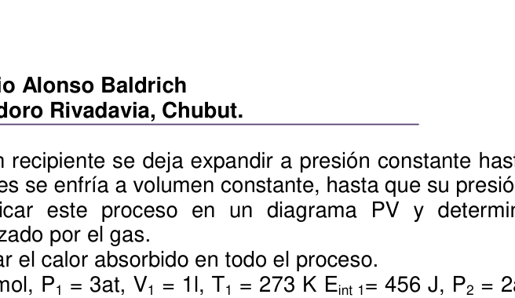
Topic: Thermodynamics Metodi: First Law of Thermodynamics, Experimental Data Analysis Competenze: Physical Reasoning, Experimental Data Analysis Objects: Gas, Calorimeter Fonte: Testo (PDF) — p.3
PT18. - Scuola San Giorgio. Quilmes, Buenos Aires.
A. Il diagramma mostra come la pressione p varia a seconda del volume V di un gas ideale che subisce un cambiamento di stato ciclico.
OAF 2012 - 56
AB e CD sono cambiamenti di stato adiabatici. La pressione al punto B è di 1,8 ×105 Pa e la variazione del volume del gas tra B e C è di 4.8 ×10 4 m3. a. Indicare cosa si intende per un cambiamento di stato adiabatico. b. Il cambiamento di volume del gas tra B e C dura 0,020 s. Determina la potenza Il problema è stato sviluppato durante questo cambiamento di stato. c. Indicare durante quale parte del ciclo viene trasferita l’energia termica del gas al ambiente.
B. Una certa quantità di ghiaccio frantumato viene estratta da un congelatore e inserita
- In un calometro. Il ghiaccio riceve energia termica a un ritmo costante. Per assicurarsi che tutto il ghiaccio sia alla stessa temperatura, questo viene rimosso da in modo continuo. La temperatura del contenuto del calometro viene misurata ogni 15
- Segondi. Il grafico seguente mostra la variazione nel tempo t della temperatura del contenuto del calometro. (Non sono state mostrate incertezze quantitative misure.)
a. Nel grafico precedente, segna con un X il punto del grafico in cui si è Fuso proprio tutto il ghiaccio. b. La massa del ghiaccio è di 0,25 kg e il calore specifico dell’acqua è di 4200 J. kg−1K−1. Utilizzare questi dati e i dati del grafico per i. dedurre che l’energia viene fornita all’ice al ritmo di circa 530 W. ii. determinare il calore specifico del ghiaccio. iii. determinare il calore latente della fusione del ghiaccio.
OAF 2012 - 57
Topic: Thermodynamics Metodi: First Law of Thermodynamics, Experimental Data Analysis Competenze: Physical Reasoning, Experimental Data Analysis Objects: Gas, Calorimeter Fonte: Testo (PDF) — p.3
PT18. St. George’s School Quilmes, Buenos Aires is where I am.
A. The diagram shows how the pressure p varies with the volume V of a The ideal gas undergoes a cyclic state change.
The following is the list of the Member States’ financial statements:
AB and CD are adiabatic state changes. The pressure at point B is 1.8 ×105 Pa and the change in gas volume between B and C is 4.8 ×10 4 m3. a. Indicate what is meant by an adiabatic change of state. b. The change in gas volume between B and C lasts 0.020 s. Determine the power The Commission has already taken a number of steps to ensure that the Commission is able to take the necessary measures to ensure that the Community’s financial situation is adequately addressed. c. Indicate during which part of the cycle thermal energy is transferred from the gas to the The environment.
B. A certain amount of crushed ice is taken out of a freezer and introduced. In a thermometer. Ice receives thermal energy at a constant rate. For To ensure that all the ice is at the same temperature, it is removed from the ice. continuous way. The temperature of the calorimeter content is measured every 15 minutes. Seconds. The following graph shows the time t variation of the temperature of the content of the thermometer. (No uncertainties in the quantities are shown. The Commission has already adopted a number of measures.
a. In the graph above, mark with an X the point on the graph where you have melted just about all the ice. b. The mass of the ice is 0.25 kg and the specific heat of the water is 4200 J. kg−1K−1. Use this data and the graph data to i. The energy supply to the ice is at a rate of about 530 . W. ii. determine the specific heat of the ice. (iii) the following: determine the latent heat of ice melting.
The following points shall be added:
Topic: Thermodynamics Metodi: First Law of Thermodynamics, Experimental Data Analysis Competenze: Physical Reasoning, Experimental Data Analysis Objects: Gas, Calorimeter Fonte: Testo (PDF) — p.3
PT19. Colegio Alonso Baldrich Comodoro Rivadavia, Chubut.
Un gas en un recipiente se deja expandir a presión constante hasta un volumen
de 3l, entonces se enfría a volumen constante, hasta que su presión es de 2 at.
a) Graficar este proceso en un diagrama PV y determinar el trabajo
realizado por el gas.
b) Hallar el calor absorbido en todo el proceso.
Datos: n= 1 mol, P1 = 3at, V1 = 1l, T1 = 273 K Eint 1= 456 J, P2 = 2at, V2 = 3l, T2=
300K
Eint2 = 912 J
Topic: Thermodynamics Metodi: First Law of Thermodynamics, Ideal Gas Law Competenze: Physical Reasoning, Mathematical Modeling Objects: Gas Fonte: Testo (PDF) — p.3
PT19. Alfonso Baldrich Comodoro Rivadavia, Chubut.
Un gas in un recipiente si lascia espandere a pressione costante fino a un volume.
di 3 litri, quindi si raffredda a volume costante, fino a quando la pressione è di 2 at.
a) Graficare questo processo in un diagramma PV e determinare il lavoro
La produzione di gas.
b) Trovare il calore assorbito durante l’intero processo.
Data: n=1 mol, P1 = 3at, V1 = 1l, T1 = 273 K Eint 1= 456 J, P2 = 2at, V2 = 3l, T2=
300K
Eint2 = 912 J
Topic: Thermodynamics Metodi: First Law of Thermodynamics, Ideal Gas Law Competenze: Physical Reasoning, Mathematical Modeling Objects: Gas Fonte: Testo (PDF) — p.3
PT19. Alonso Baldrich College Commodore Rivadavia, Chubut.
A gas in a container is allowed to expand at constant pressure to a volume.
3l, then it cools to a constant volume, until its pressure is 2 at.
(a) Graph this process in a PV diagram and determine the work
The gas is produced.
(b) Find the heat absorbed throughout the process.
Data: n = 1 mol, P1 = 3at, V1 = 1l, T1 = 273 K Eint 1 = 456 J, P2 = 2at, V2 = 3l, T2 =
300K
Eint2 = 912 J
Topic: Thermodynamics Metodi: First Law of Thermodynamics, Ideal Gas Law Competenze: Physical Reasoning, Mathematical Modeling Objects: Gas Fonte: Testo (PDF) — p.3
PT20. Colegio Alonso Baldrich Comodoro Rivadavia, Chubut.
La vagoneta de una montaña rusa de masa 1500 kg parte del reposo desde un
punto situado a una altura de 5m sobre la parte más baja de un rizo de 2.5 m de
diámetro.
Si el rozamiento es despreciable, determinar:
a) La velocidad de entrada en el
rizo.
b) La fuerza hacia abajo de los
carriles
sobre
la
vagoneta
cuando
están
los
viajeros
cabeza abajo en lo alto del rizo.
c) La velocidad de la vagoneta en
la parte más alta del rizo.
Topic: Conservation of Energy, Newtonian Mechanics Metodi: Energy Conservation Method, Free-Body Diagram Competenze: Physical Reasoning, Mathematical Modeling Objects: Cart Fonte: Testo (PDF) — p.3
PT20. Alfonso Baldrich Comodoro Rivadavia, Chubut.
La vagone di una montagna russa di massa 1500 kg parte dal riposo da un punto situato ad un’altezza di 5 m sulla parte inferiore di un risotto di 2,5 m di diametro. Se il ruggine è sconsiderato, determinare: a) La velocità di ingresso nel risate. b) La forza verso il basso dei Carriere su la
- La macchina è stata un’auto . Quando Sono qui . Le viaggiatori testa in basso, in cima al riso. c) La velocità del vagone in la parte più alta del riso.
Topic: Conservation of Energy, Newtonian Mechanics Metodi: Energy Conservation Method, Free-Body Diagram Competenze: Physical Reasoning, Mathematical Modeling Objects: Cart Fonte: Testo (PDF) — p.3
PT20. Alonso Baldrich College Commodore Rivadavia, Chubut.
The wagon of a 1500 kg mass roller coaster is taking a break from a point situated at a height of 5m above the lowest part of a 2.5m ridge of diameter. If the rub is despicable, determine: (a) The input speed in the I’m laughing. (b) The downward force of the The railway lines on la
- The carriage . When They ‘re here . The Travellers Head down on top of the rice. (c) The speed of the carriage in the top of the rice.
Topic: Conservation of Energy, Newtonian Mechanics Metodi: Energy Conservation Method, Free-Body Diagram Competenze: Physical Reasoning, Mathematical Modeling Objects: Cart Fonte: Testo (PDF) — p.3
PT21. Colegio Alonso Baldrich Comodoro Rivadavia, Chubut.
Millikan preparó un aparato en el cual una gotita de
aceite cargada colocada en un campo eléctrico E
podía “equilibrarse” ajustando E hasta que la fuerza
eléctrica sobre la gotita de aceite fuera igual y
opuesta a su peso. Si se prueba con tres gotas de
distinto radio y E en condiciones de equilibrio es de
1,92x105 N/C, calcular:
a) Las cargas de las distintas gotas para los
siguientes radios: R1 = 1,64x10-4 cm
R2 = 0,82x10-4 cm ;
R3 = 0,41x10-4 cm
densidad del aceite= 0.92 g/cm3
b) ¿Qué relación existe entre las cargas obtenidas y la unidad fundamental
de carga?
c) Calcular el volumen de la gota para obtener la unidad de carga de un
electrón.
OAF 2012 - 58
Topic: Electrostatics Metodi: Coulomb’s Law, Free-Body Diagram Competenze: Physical Reasoning, Mathematical Modeling Objects: Droplet, Point Charge Fonte: Testo (PDF) — p.3
PT21. Alfonso Baldrich Comodoro Rivadavia, Chubut.
Millikan ha preparato un apparecchio in cui una goccia di
olio carico posto in un campo elettrico E
Potrebbe essere equilibrato, regolare E, fino a quando la forza non si allontana.
l’elettricità sul goccio di olio è uguale e
Opposito al suo peso. Se si prova con tre gocce di
diverso radio e E in condizioni di equilibrio è di
1,92x105 N/C, calcolare:
a) Le cariche delle diverse gocce per i
i seguenti raggi: R1 = 1,64x10-4 cm
R2 = 0,82x10-4 cm ;
R3 = 0,41x10-4 cm
densità dell’olio= 0,92 g/cm3
b) Qual è il rapporto tra le cariche ottenute e l’unità fondamentale
di carico?
c) Calcolare il volume della goccia per ottenere l’unità di carico di un
l’elettrone.
OAF 2012 - 58
Topic: Electrostatics Metodi: Coulomb’s Law, Free-Body Diagram Competenze: Physical Reasoning, Mathematical Modeling Objects: Droplet, Point Charge Fonte: Testo (PDF) — p.3
PT21. Alonso Baldrich College Commodore Rivadavia, Chubut.
Millikan prepared a device in which a drop of
Charged oil placed in an electric field E
could balance by adjusting E until the force
The electrical pressure on the oil drop was equal to and
It’s the opposite of weight. If you test it with three drops of
different radius and E in equilibrium conditions is of
1,92x105 N/C, calculated as follows:
(a) The loads of the different drops for the
The following radii: R1 = 1,64x10-4 cm
R2 = 0,82x10-4 cm ;
R3 = 0,41x10-4 cm
The oil density is 0.92 g/cm3
(b) What is the relationship between the loads obtained and the basic unit?
of cargo?
(c) Calculate the volume of the drop to obtain the unit of load of a
electron.
The following is the list of the Member States’ financial statements:
Topic: Electrostatics Metodi: Coulomb’s Law, Free-Body Diagram Competenze: Physical Reasoning, Mathematical Modeling Objects: Droplet, Point Charge Fonte: Testo (PDF) — p.3
PT22. Colegio
Ciudad de Santiago del Estero.
Una bola de 200 g está sujeta débilmente a una cuerda de 1,8 m de longitud que pende de un mástil de 40 m de altura. La bola gira con velocidad constante en un plano horizontal alrededor del mástil, mientras que la cuerda forma con él un ángulo de 30°. Un chico, situado en un edificio cercano al mástil (distancia edificio – mástil = 15 m) y a la misma altura del plano de giro de la bola, dispara contra ésta un balín de 20 g con un arma de aire comprimido, impactándola directamente de frente e incrustando el balín en la misma. La velocidad del proyectil al momento del impacto era de 175 m/s y su trayectoria rectilínea y horizontal. Con el impacto, la bola se suelta de la cuerda y cae. a) Representa las fuerzas que actúan sobre la bola mientras está girando sujeta a la cuerda y luego realiza la misma tarea para la bola mientras se encuentra cayendo. b) Calcula la velocidad de la bola antes del impacto del proyectil y después del mismo. c) Ubica el punto de impacto de la bola una vez que se desprende de la cuerda, tomando en cuenta que la trayectoria del proyectil era perpendicular al plano formado por la bola, la cuerda y el mástil.
Topic: Conservation of Momentum, Newtonian Mechanics Metodi: Conservation of Momentum, Free-Body Diagram, Kinematic Equations Competenze: Physical Reasoning, Mathematical Modeling Objects: Ball, String, Projectile Fonte: Testo (PDF) — p.3
PT22. La scuola Città di Santiago del Estero.
Una palla di 200 g è debilitamente attaccata a una corda di 1,8 m di lunghezza che appeso a un mastello alto 40 metri. La palla gira a velocità costante in un piano orizzontale intorno al mastello, mentre la corda forma con esso un angolo di 30°. Un ragazzo, situato in un edificio vicino al masticello (distanza edificio masticello = 15 m) e, a la stessa altezza del piano di rotazione della palla, lancia contro di essa una balena 20 g con un’arma a aria compressa, colpendo direttamente di fronte e incastrando il baleno in esso. La velocità del proiettile al momento del lancio. L’impatto era di 175 m/s e il suo percorso era rettilineo e orizzontale. Con l’impatto, la La palla si scivola dalla corda e cade. a) Rappresenta le forze che agiscono sulla palla mentre si gira si attacca alla corda e poi esegue lo stesso compito per la palla mentre si trova a cadere. b) Calcola la velocità della palla prima dell’impatto del proiettile e dopo di quello stesso. (c) Localizza il punto di impatto della palla una volta che si è allontanata dalla palla.
- La corda, considerando che il tragitto del proiettile era perpendicolare al piano formato dalla palla, dalla corda e dal mastello.
Topic: Conservation of Momentum, Newtonian Mechanics Metodi: Conservation of Momentum, Free-Body Diagram, Kinematic Equations Competenze: Physical Reasoning, Mathematical Modeling Objects: Ball, String, Projectile Fonte: Testo (PDF) — p.3
PT22. School The city of Santiago del Estero.
A 200 g ball is weakly attached to a 1.8 m long rope that hanging from a 40-meter high mast. The ball spins at a constant speed at A horizontal plane around the mast, while the rope forms with it a The following is the mean value of the product: A boy, located in a building near the mast (building distance mast = 15 m) and at the same height as the ball’s plane of rotation, a ball is fired at it. 20 g with a compressed air gun, impacting it directly in front and Embedding the whale in it. The velocity of the projectile at the time of the launch. The impact was 175 m/s and its trajectory was straight and horizontal. With the impact, the The ball loosens from the rope and falls. (a) Represents the forces acting on the ball as it is spinning He holds the rope and then performs the same task for the ball while It’s falling. (b) Calculates the speed of the ball before the impact of the projectile and afterwards of the same. (c) Locate the point of impact of the ball once it is off the ball. string, considering the trajectory of the projectile was perpendicular to the plane formed by the ball, rope and mast.
Topic: Conservation of Momentum, Newtonian Mechanics Metodi: Conservation of Momentum, Free-Body Diagram, Kinematic Equations Competenze: Physical Reasoning, Mathematical Modeling Objects: Ball, String, Projectile Fonte: Testo (PDF) — p.3
PT23. Colegio
Ciudad de Santiago del Estero.
Un detective de 80 kg persigue corriendo a un espía de 65 kg, el cual mantiene
constante su distancia respecto de su perseguidor (3 m). Ambos se desplazan
en línea recta a 18 km/h, hasta que llegan a un sector donde existe un plano
inclinado 40° respecto de la horizontal y carente de rozamiento: el espía se
arroja al suelo y se desliza por el plano inclinado, siendo imitado en esta acción
por el detective.
a) Calcula la rapidez de ambos al llegar a la base del plano, situada 10 m
más abajo.
b) Calcula el trabajo del peso de cada persona mientras corren
horizontalmente y luego mientras se deslizan por el plano inclinado
hasta llegar a su base.
c) Suponiendo que al llegar a la base del plano cada uno sigue corriendo
en línea recta con la rapidez que tenían al alcanzar la base del mismo,
indica si el detective alcanza al espía o no, justificando tu respuesta.
Topic: Conservation of Energy, Newtonian Mechanics Metodi: Energy Conservation Method, Kinematic Equations Competenze: Physical Reasoning, Mathematical Modeling Objects: Inclined Plane Fonte: Testo (PDF) — p.3
PT23. La scuola Città di Santiago del Estero.
Un detective di 80 kg persegue correndo un spia di 65 kg, che lo tiene costante distanza dal perseguitore (3 m). Entrambi si muovono. in linea retta a 18 km/h, fino a raggiungere un settore dove esiste un piano inclinato 40° rispetto alla orizzontale e senza rasatura: lancia a terra e scivola per il piano inclinato, essendo imitato in questa azione
- Per il detective. a) Calcola la velocità di entrambi quando si raggiunge la base del piano, situata a 10 m.
- Più in basso. b) Calcola il peso di ogni persona mentre corre. orizzontale e poi mentre si scivolano per il piano inclinato fino a raggiungere la sua base. c) Supponendo che alla base del piano ognuno continua a correre. in linea retta con la velocità che avevano raggiunto la base di esso, indica se il detective raggiunge o meno lo spia, giustificando la tua risposta.
Topic: Conservation of Energy, Newtonian Mechanics Metodi: Energy Conservation Method, Kinematic Equations Competenze: Physical Reasoning, Mathematical Modeling Objects: Inclined Plane Fonte: Testo (PDF) — p.3
PT23. School The city of Santiago del Estero.
An 80-pound detective chases a 65-pound spy, who keeps him constant distance from their pursuer (3 m). Both move . in a straight line at 18 km/h, until they reach a sector where there is a plane slanted 40° towards the horizontal and without a scratch: the spy is It throws to the ground and slides along the sloping plane, being imitated in this action. by the detective. (a) Calculate the speed of both at the base of the plane, located 10 m. Down there. (b) Calculate the work of each person ‘s weight while running horizontally and then as they slide along the slope. until we reach their base. (c) Assuming that when you reach the base of the plane everyone keeps running. In a straight line with the speed they had when they reached the base of it, It indicates whether the detective reaches the spy or not, justifying your answer.
Topic: Conservation of Energy, Newtonian Mechanics Metodi: Energy Conservation Method, Kinematic Equations Competenze: Physical Reasoning, Mathematical Modeling Objects: Inclined Plane Fonte: Testo (PDF) — p.3
PT24. Colegio
Ciudad de Santiago del Estero.
En un experimento de biología, un técnico de laboratorio debe mantener constante en 77°F la temperatura de 500 cm3 de agua destilada contenida en un recipiente abierto. Por un descuido, uno de sus compañeros deja caer un pequeño disco metálico dentro del recipiente, salpicando fuera del mismo un volumen de agua destilada igual al 75% del volumen del disco. a) Si las dimensiones del disco son: diámetro = 3 cm, espesor = 2 mm, su calor específico es de 0,4 cal/g.°C, y su densidad de 5 g/cm3, calcular la temperatura del disco (en °C) si la temperatura del equilibrio fue
OAF 2012 - 59
25,9°C. La densidad del agua destilada es 1 g/cm3 y su calor específico
1 cal/g.°C.
b) Una vez extraído rápidamente el disco del recipiente (sin provocar
cambios en la temperatura del agua) y suponiendo pérdidas nulas de
volumen en este proceso, ¿a qué temperatura debería estar el agua que
agregaría el técnico si quisiera reponer el volumen perdido cuando cayó
el disco y volver la temperatura del sistema a su valor inicial de 77°F ?
Topic: Thermodynamics Metodi: First Law of Thermodynamics Competenze: Physical Reasoning, Mathematical Modeling Objects: Disk, Container Fonte: Testo (PDF) — p.3
PT24. La scuola Città di Santiago del Estero.
In un esperimento di biologia, un tecnico di laboratorio deve mantenere costante in 77°F la temperatura di 500 cm3 di acqua distillata contenuta in un contenitore aperto. Per un’incoscienza, uno dei suoi compagni ha fatto cadere un piccolo disco metallico. all’interno del recipiente, spruzzando fuori di esso un volume di acqua distillata pari al 75% del volume del disco. a) Se le dimensioni del disco sono: diametro = 3 cm, spessore = 2 mm, il suo calore specifico è di 0,4 cal/g.°C, e la densità di 5 g/cm3, calcolare la temperatura del disco (in °C) se la temperatura di equilibrio è stata
OAF 2012 - 59 25,9°C. La densità dell’acqua distillata è di 1 g/cm3 e il suo calore specifico 1 cal/g.°C. b) Una volta che il disco è stato rapidamente estratto dal recipiente (senza provocare La temperatura dell’acqua varia in modo significativo (in termini di variazioni di temperatura dell’acqua) e si assume una perdita di zero di Il volume in questo processo, a che temperatura dovrebbe essere l’acqua che Il tecnico aggiungerebbe se vuole riempire il volume perso quando è caduto. il disco e riportare la temperatura del sistema al suo valore iniziale di 77°F ?
Topic: Thermodynamics Metodi: First Law of Thermodynamics Competenze: Physical Reasoning, Mathematical Modeling Objects: Disk, Container Fonte: Testo (PDF) — p.3
PT24. School The city of Santiago del Estero.
In a biology experiment, a lab technician must maintain The temperature of 500 cm3 of distilled water contained in a the container is open. By a careless act, one of his colleagues dropped a small metal disc. inside the container, sprinkling a volume of distilled water outside the container. equal to 75% of the volume of the disc. (a) If the dimensions of the disc are: diameter = 3 cm, thickness = 2 mm, its The specific heat is 0.4 cal/g.°C, and its density is 5 g/cm3, calculate the temperature of the disc (in °C) if the equilibrium temperature was
The following is the list of the Member States’ financial statements: 25,9°C. The density of distilled water is 1 g/cm3 and its specific heat 1 cal/g.°C. (b) Once the disc is quickly removed from the container (without causing (i) changes in water temperature) and assuming zero losses of volume in this process, what temperature should the water be at? I ‘d add the technician if he wanted to replace the volume he lost when he fell . the disk and return the system temperature to its initial value of 77°F ?
Topic: Thermodynamics Metodi: First Law of Thermodynamics Competenze: Physical Reasoning, Mathematical Modeling Objects: Disk, Container Fonte: Testo (PDF) — p.3
PT25. Escuela de Agricultura
General Alvear, Mendoza.
¡Juego Olímpico!
Un amigo suyo ha decidido poner un juego en un parque de diversiones y lo
invita a participar del negocio. El juego consiste en acertarle a un objeto de 10
gramos y 2 cm de diámetro disparándole con un rifle. El rifle se afirma a un metro
de de altura y se permite variar el ángulo de disparo en cualquier dirección, y el
blanco se deja caer desde una altura de 7 metros al mismo tiempo que se
dispara la bala. Las especificaciones del rifle dicen que la velocidad de salida de
la bala es de 400 m/s. Para probar el juego usted decide:
a) Calcular el tiempo que tarda el objeto en llegar al suelo en caída libre.
b) Calcular la energía cinética del cuerpo al llegar al suelo.
c) Calcular el ángulo de disparo, es decir donde debe apuntar, de manera
de acertarle al blanco justo en el centro, en el momento en que es
soltado. El blanco se encuentra a una distancia horizontal de 18 metros
del rifle.
d) Calcular el ángulo si el disparo es efectuado 0,2 segundos después que
se deja caer el blanco.
e) Calcular que altura debería darle al rifle para que la posición del mismo
sea horizontal, si el objeto lleva 0,2 segundos de caída.
f) Calcular el alcance horizontal y la altura máxima para ángulos de 14° y
de 20°.
Topic: Newtonian Mechanics Metodi: Kinematic Equations, Vector Decomposition Competenze: Physical Reasoning, Mathematical Modeling Objects: Projectile Fonte: Testo (PDF) — p.3
PT25. La scuola di agricoltura Generale Alvear, Mendoza.
Giochi olimpici! Un suo amico ha deciso di mettere un gioco in un parco di divertimento e lo ha fatto. invita a partecipare al business. Il gioco consiste nel colpire un oggetto di 10
- Gramo e 2 centimetri di diametro, sparo con un fucile. Il fucile si afferma a un metro di distanza. di altezza e si può variare l’angolo di lancio in qualsiasi direzione, e il Il bianco si fa cadere da una altezza di 7 metri allo stesso tempo che si fa cadere. spara la pallottola. Le specifiche del fucile dicono che la velocità di uscita di La pallottola è a 400 m/s. Per provare il gioco si decide: a) Calcolare il tempo necessario per raggiungere il suolo in caduta libera. b) Calcolare l’energia cinetica del corpo quando raggiunge il suolo. (c) Calcolare l’angolo di tiro, cioè dove deve puntare, in modo che di colpire il bersaglio proprio in mezzo, al momento in cui è
- E’ stato rilasciato. Il bersaglio si trova a una distanza orizzontale di 18 metri.
- Il fucile. d) Calcolare l’angolo se il tiro è effettuato 0,2 secondi dopo che si lascia cadere il bersaglio. e) Calcolare la altezza che dovrebbe dare al fucile per che la sua posizione sia orizzontale, se l’oggetto è in caduta 0,2 secondi. f) Calcolare la portata orizzontale e l’altezza massima per angoli 14° e de 20°.
Topic: Newtonian Mechanics Metodi: Kinematic Equations, Vector Decomposition Competenze: Physical Reasoning, Mathematical Modeling Objects: Projectile Fonte: Testo (PDF) — p.3
PT25. School of Agriculture General Alvear, Mendoza, please.
The Olympics! A friend of yours decided to put a game in an amusement park and he ‘s … He invites you to join the business. The game is to hit an object of 10 . Grams and 2 cm in diameter shooting him with a rifle. The rifle is said to be within a metre . The angle of shooting in any direction is allowed to vary and the White is dropped from a height of 7 meters at the same time as it is. Shoot the bullet. The rifle specifications say the exit speed of The bullet is 400 m/s. To try the game you decide: (a) Calculate the time it takes the object to reach the ground in free fall. (b) Calculate the kinetic energy of the body upon reaching the ground. (c) Calculate the angle of shooting, i.e. where you should aim, so that hit the target right in the middle, the moment it’s released. The target is at a horizontal distance of 18 meters . The rifle. (d) Calculate the angle if the shot is fired 0.2 seconds after the You drop the target. (e) Calculate the height you should give the rifle so that the position of the rifle is be horizontal if the object is 0,2 seconds down. (f) Calculate the horizontal range and maximum height for angles 14° and de 20°.
Topic: Newtonian Mechanics Metodi: Kinematic Equations, Vector Decomposition Competenze: Physical Reasoning, Mathematical Modeling Objects: Projectile Fonte: Testo (PDF) — p.3
PT26. Escuela de Agricultura
General Alvear, Mendoza.
¡Gotas Flotadoras! En una práctica de simulación usted trata de mantener en equilibrio una gota de petróleo que tiene un radio de 2.10-4 metros y una densidad de 883kg/m3 bajo la influencia de su peso y de un campo eléctrico uniforme de 1,5.106 N/C a) Calcular la magnitud y signo de la carga en ella. b) Obtener el número de partículas elementales necesaria para obtener la carga calculada en a.
OAF 2012 - 60 c) Calcular la aceleración de la gota si es bombardeada con electrones de manera que la misma capture 1.10 6 de estos.(despreciar la masa). d) Calcular cuál es el valor del campo eléctrico a 15 cm de la gota. e) Calcular cuál es el valor del potencial eléctrico a 15 cm de la gota. f) Calcular el tiempo que tarda en impactar con la placa inferior si la distancia es de 5 mm?
Topic: Electrostatics Metodi: Coulomb’s Law, Free-Body Diagram Competenze: Physical Reasoning, Mathematical Modeling Objects: Droplet, Point Charge Fonte: Testo (PDF) — p.3
PT26. La scuola di agricoltura Generale Alvear, Mendoza.
Gattole galleggianti! In una pratica di simulazione si cerca di mantenere in equilibrio una goccia di petrolio che ha un raggio di 2,10-4 metri e una densità di 883 kg/m3 sotto il influenza del suo peso e di un campo elettrico uniforme di 1,5.106 N/C a) Calcolare la grandezza e il segno del carico in esso. b) Ottenere il numero di particelle elementari necessario per ottenere la carico calcolato a.
OAF 2012 - 60 c) Calcolare l’accelerazione della goccia se bombardata con elettroni di La stessa cattura 1.10 6 di questi. d) Calcolare il valore del campo elettrico a 15 cm dalla goccia. e) Calcolare il valore del potenziale elettrico a 15 cm della goccia. f) Calcolare il tempo necessario per colpire la scheda inferiore se la scheda inferiore è La distanza è di 5 mm?
Topic: Electrostatics Metodi: Coulomb’s Law, Free-Body Diagram Competenze: Physical Reasoning, Mathematical Modeling Objects: Droplet, Point Charge Fonte: Testo (PDF) — p.3
PT26. School of Agriculture General Alvear, Mendoza, please.
Floating drops! In a simulation practice you try to keep a drop of oil with a radius of 2.10-4 meters and a density of 883 kg/m3 below the influence of its weight and a uniform electric field of 1,5.106 N/C (a) Calculate the magnitude and sign of the load on it. (b) Obtain the number of elementary particles necessary to obtain the load calculated in a.
The following points shall be added: (c) Calculate the acceleration of the drop if it is bombarded with electrons of So the same capture 1.10 6 of these. (d) Calculate the value of the electric field at 15 cm from the drop. (e) Calculate the value of the electric potential at 15 cm from the drop. (f) Calculate the time it takes to impact the lower plate if the distance is 5 mm?
Topic: Electrostatics Metodi: Coulomb’s Law, Free-Body Diagram Competenze: Physical Reasoning, Mathematical Modeling Objects: Droplet, Point Charge Fonte: Testo (PDF) — p.3
PT27. Escuela de Agricultura
General Alvear, Mendoza.
Vaporizador casero.
Usted trata de generar vapor utilizando un recipiente de acero de 4 kg, de forma
cilíndrica y con un volumen de 2,00 dm3, el cual se calienta sobre la llama de
una hornalla a 170° C, usted vierte 0,2 kg de agua a 40°C. Luego de tapar la
olla:
a) Calcular la temperatura final del contenido de la olla. Suponga que no
hay pérdidas de calor al medio.
b) Calcular la presión dentro de la olla una vez que se llega al equilibrio
térmico.
c) La masa de la válvula que permite la pérdida de vapor cuando la
presión interna supera el valor calculado en b, si la aguja tiene un área
de 2 mm2.
Datos
Ce del acero 0,400 kcal/kg °C
Lv del agua 540.103 kcal/kg
Ce del agua 1,00 kcal/kg. °C
Ce del vapor de agua: 0,48 kcal/g°C
Topic: Thermodynamics Metodi: First Law of Thermodynamics, Ideal Gas Law Competenze: Physical Reasoning, Mathematical Modeling Objects: Container, Gas Fonte: Testo (PDF) — p.3
PT27. La scuola di agricoltura Generale Alvear, Mendoza.
Vaporizatore casero. Si cerca di generare vapore utilizzando un recipiente di acciaio di 4 kg, in modo cilindrica e di un volume di 2,00 dm3, che si riscaldano sulla fiamma di Se si mette un forno a 170° C, si versano 0,2 kg di acqua a 40° C. Dopo aver copro la Pottina: a) Calcolare la temperatura finale del contenuto del pot. Supponiamo che non lo sia . ci sono perdite di calore in mezzo. b) Calcolare la pressione all’interno del pot dopo che il pot è stato raggiunto.
- Termica. c) La massa della valvola che permette la perdita di vapore quando la la pressione interna supera il valore calcolato in b, se l’ago ha un’area de 2 mm2.
Datos C di acciaio 0,400 kcal/kg ° C Lv di acqua 540.103 kcal/kg C dell’acqua 1,00 kcal/kg. °C C del vapore d’acqua: 0,48 kcal/g°C
Topic: Thermodynamics Metodi: First Law of Thermodynamics, Ideal Gas Law Competenze: Physical Reasoning, Mathematical Modeling Objects: Container, Gas Fonte: Testo (PDF) — p.3
PT27. School of Agriculture General Alvear, Mendoza, please.
It’s a homemade vaporizer. You try to generate steam using a 4 kg steel container, so cylindrical and with a volume of 2,00 dm3, heated on the flame of If you put a kiln at 170° C, you pour 0.2 kg of water at 40° C. After you cover the Pot: (a) Calculate the final temperature of the pot content. Suppose you didn ‘t . There’s heat loss in the middle. (b) Calculate the pressure inside the pot once it is balanced heat. (c) The mass of the valve which allows the loss of steam when the valve is internal pressure exceeds the value calculated in b if the needle has an area de 2 mm2.
Data from the report The value of the product shall be the same as the value of the product. Lv of water 540.103 kcal/kg The water content is 1,00 kcal/kg. °C Ce of water vapour: 0,48 kcal/g°C
Topic: Thermodynamics Metodi: First Law of Thermodynamics, Ideal Gas Law Competenze: Physical Reasoning, Mathematical Modeling Objects: Container, Gas Fonte: Testo (PDF) — p.3
PT28. Colegio Nacional de Buenos Aires
Ciudad de Buenos Aires.
Un bloque de masa m=2kg se suelta del reposo a una altura h=0.5m de la superficie de una mesa, en la parte superior de una pendiente con un ángulo de 30º como se muestra en la figura 1. La pendiente está fija sobre una mesa de altura H=2m y no presenta fricción. a) Determine la aceleración del bloque cuando se desliza hacia abajo por la pendiente b) ¿Cuál es la velocidad del bloque cuando deja la pendiente? c) ¿A qué distancia de la mesa, el bloque golpeará el suelo?
OAF 2012 - 61 d) ¿Cuánto tiempo ha transcurrido entre el momento en que se suelta el bloque y cuando golpea el suelo? e) Repita el punto c), considerando que entre el bloque y la pendiente hay un coeficiente de rozamiento μ=0.8 Datos: g=9.8m/s2
Topic: Conservation of Energy, Newtonian Mechanics Metodi: Energy Conservation Method, Kinematic Equations, Free-Body Diagram Competenze: Physical Reasoning, Mathematical Modeling Objects: Block, Inclined Plane Fonte: Testo (PDF) — p.3
PT28. Collegio Nazionale di Buenos Aires Città di Buenos Aires.
Un blocco di massa m=2kg si scatta dal riposo ad un’altezza h=0.5m della superficie di un tavolo, sulla parte superiore di una pendenza con un angolo di 30° come mostrato nella figura 1. L’inclinazione è fissa su un tavolo di altezza H=2 m e non presenta attrito. a) Determina l’accelerazione del blocco quando si scivola verso il basso per la pendenza b) Qual è la velocità del blocco quando lascia la pendenza? c) A che distanza dal tavolo il blocco colpirà il pavimento?
OAF 2012 - 61 d) Quanto tempo è passato dal momento in cui viene rilasciato il documento blocco e quando colpisce il pavimento? e) Ripete il punto (c), considerando che tra il blocco e la pendenza c’ è un coefficiente di rottura μ=0,8 Data: g=9,8m/s2
Topic: Conservation of Energy, Newtonian Mechanics Metodi: Energy Conservation Method, Kinematic Equations, Free-Body Diagram Competenze: Physical Reasoning, Mathematical Modeling Objects: Block, Inclined Plane Fonte: Testo (PDF) — p.3
PT28. National College of Buenos Aires City of Buenos Aires.
A block of mass m=2kg is released from rest at a height h=0.5m from the surface of a table, on the top of a slope with an angle of 30° as shown in Figure 1. The slope is fixed on a table of H=2m height and has no friction. (a) Determine the acceleration of the block as it slides downwards by The slope (b) What is the speed of the block when it leaves the slope? (c) How far from the table will the block hit the ground?
The following is the list of the Member States’ financial statements: (d) How long has elapsed between the time when the release of the block and when it hits the ground? (e) Repeat point (c) whereas between the block and the slope there is a coefficient of friction μ=0.8 Data: g is equal to 9.8m/s2
Topic: Conservation of Energy, Newtonian Mechanics Metodi: Energy Conservation Method, Kinematic Equations, Free-Body Diagram Competenze: Physical Reasoning, Mathematical Modeling Objects: Block, Inclined Plane Fonte: Testo (PDF) — p.3
PT29. Colegio Nacional de Buenos Aires
Ciudad de Buenos Aires.
El cilindro de la figura (de 200 cm2 de base y 70 cm de largo) se encuentra dividido en dos partes por un émbolo que se desplaza libremente. La parte izquierda del cilindro se llena con 0.1 mol de gas. Se une el émbolo a la cara lateral derecha del cilindro mediante un resorte duro de constante elástica k=2000N/m. Inicialmente el émbolo se encuentra a 50 cm de la cara izquierda del cilindro (20 cm de la cara derecha) y la temperatura del gas es de 0ºC. a) Calcular la presión del gas. b) Calcular la longitud inicial del resorte (L0 del resorte). Se calienta el gas, aumentando su temperatura, y el émbolo se desplaza 5 cm hacia la derecha. c) Calcular la presión y el volumen que ocupa el gas d) Calcular la nueva temperatura del gas Se sigue calentando el gas hasta llevarlo a una temperatura de 250ºC. e) Calcular el desplazamiento del émbolo y la presión dentro del gas Datos: 1atm=1013hPa; R=0.082 l.atm/mol.K
H
h
30º
Figura 1
70 cm
200 cm2
OAF 2012 - 62
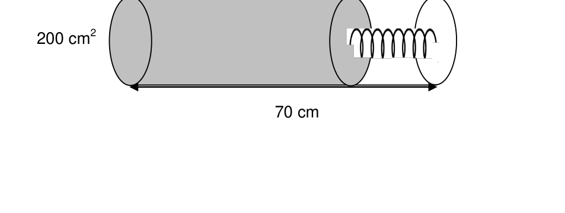
Topic: Thermodynamics, Elasticity & Materials Metodi: Ideal Gas Law, Hooke’s Law Competenze: Physical Reasoning, Mathematical Modeling Objects: Piston, Spring, Gas Fonte: Testo (PDF) — p.3
PT29. Collegio Nazionale di Buenos Aires Città di Buenos Aires.
Il cilindro della figura (di 200 cm2 di base e 70 cm di lunghezza) si trova Diviso in due parti da un emblema che si muove liberamente. La parte la sinistra del cilindro si riempie di 0,1 mol di gas. Il colpo si unisce al viso lato destro del cilindro mediante una dura resorte di costante elastica k=2000N/m. Inizialmente l’embolo si trova a 50 cm dalla parte sinistra del cilindro (20 Il gas è di 0 °C. a) Calcolare la pressione del gas. b) Calcolare la lunghezza iniziale della primavera (L0 della primavera). Il gas viene riscaldato, aumentando la sua temperatura, e l’imbolo si sposta 5 cm
- A destra. c) Calcolare la pressione e il volume del gas d) Calcolare la nuova temperatura del gas Il gas viene continuamente riscaldato fino a raggiungere una temperatura di 250°C. e) Calcolare il spostamento del debolo e la pressione dentro il gas Dati: 1atm=1013hPa; R=0.082 l.atm/mol.K
H h 30º Figura 1 70 cm 200 cm2
OAF 2012 - 62
Topic: Thermodynamics, Elasticity & Materials Metodi: Ideal Gas Law, Hooke’s Law Competenze: Physical Reasoning, Mathematical Modeling Objects: Piston, Spring, Gas Fonte: Testo (PDF) — p.3
PT29. National College of Buenos Aires City of Buenos Aires.
The cylinder of the figure (of 200 cm2 base and 70 cm long) is located divided in two by a freely moving embolus. The part The cylinder is filled with 0.1 mol of gas. It ‘s attached to the face . the right side of the cylinder by a hard spring of constant elasticity k=2000N/m. Initially the embolus is 50 cm from the left side of the cylinder (20 The temperature of the gas is 0°C. (a) Calculate the gas pressure. (b) Calculate the initial length of the spring (L0 of the spring). The gas is heated, increasing its temperature, and the plume moves 5 cm. Right. (c) Calculate the pressure and volume of the gas. (d) Calculate the new gas temperature The gas is kept heated until it reaches 250°C. (e) Calculate the displacement of the plume and pressure within the gas. The data are: 1atm=1013hPa; R=0.082 l.atm/mol.K
H h 30º Figure 1 70 cm 200 cm2
The following is the list of the countries of the European Union:
Topic: Thermodynamics, Elasticity & Materials Metodi: Ideal Gas Law, Hooke’s Law Competenze: Physical Reasoning, Mathematical Modeling Objects: Piston, Spring, Gas Fonte: Testo (PDF) — p.3
PT30. Colegio Nacional de Buenos Aires
Ciudad de Buenos Aires.
Un motor eléctrico mueve una bomba hidráulica que toma agua del río y la eleva
a un depósito cilíndrico de 6 m2 de base y 2 m de altura. Desde el río hasta el
borde superior del depósito hay un desnivel de 15m y el depósito se llena en una
hora.
Se pide:
a) Volumen del depósito en litros, caudal en la tubería, expresado en l/s y
velocidad del agua en la tubería, cuya sección es de 0,6 dm2.
b) Trabajo teórico necesario para elevar el agua hasta llenar el depósito.
El motor funciona con una diferencia de potencial de 220V y una intensidad de
5ª.
c) ¿Qué potencia toma este motor de la red eléctrica?
d) ¿Qué parte de la potencia se transforma en calor en el motor mismo,
cuya resistencia interna es de 4 ohm?
e) ¿Cuánto trabajo mecánico proporciona el motor a la bomba?
f) Comparando este trabajo con el calculado en la segunda parte de este
problema, calcular el rendimiento de la bomba hidráulica.
Topic: Fluid Mechanics, Circuits Metodi: Continuity Equation, Kirchhoff’s Laws Competenze: Physical Reasoning, Mathematical Modeling Objects: Tube, Container, Battery Fonte: Testo (PDF) — p.3
PT30. Collegio Nazionale di Buenos Aires Città di Buenos Aires.
Un motore elettrico spinge una pompa idraulica che prende l’acqua dal fiume e la solleva. a un deposito cilindrico di 6 m2 di base e 2 m di altezza. Dal fiume al Il bordo superiore del deposito ha un’aria svanita di 15m e il deposito si riempie in un Ora, ora. Si chiede: a) Volume di deposito in litri, flussi nel tubo, espresso in l/s e velocità dell’acqua nel tubo, la cui sezione è di 0,6 dm2. b) Lavoro teorico necessario per elevare l’acqua fino a riempire il deposito. Il motore funziona con una differenza di potenza di 220 V e un’intensità di 5ª. c) Che potenza prende questo motore della rete elettrica? d) Quale parte della potenza viene trasformata in calore nel motore stesso, la cui resistenza interna è di 4 ohm? e) Quanto lavoro meccanico fornisce il motore alla pompa? f) Confrontando questo lavoro con quello calcolato nella seconda parte di questo documento problema, calcolare il rendimento della pompa idraulica.
Topic: Fluid Mechanics, Circuits Metodi: Continuity Equation, Kirchhoff’s Laws Competenze: Physical Reasoning, Mathematical Modeling Objects: Tube, Container, Battery Fonte: Testo (PDF) — p.3
PT30. National College of Buenos Aires City of Buenos Aires.
An electric motor moves a hydraulic pump that takes water from the river and raises it. to a cylindrical tank of 6 m2 of base and 2 m of height. From the river to the The upper edge of the tank is a 15m gap and the tank is filled in a It’s about time. It asks: (a) Volume of the tank in litres, flow rate in the pipe, expressed in l/s and water speed in the pipe, the section of which is 0,6 dm2. (b) Theoretical work necessary to raise the water to fill the reservoir. The engine operates with a potential difference of 220V and an intensity of 5ª. (c) What power does this motor take from the electricity grid? (d) What part of the power is converted to heat in the engine itself, whose internal resistance is 4 ohms? (e) How much mechanical work does the engine provide to the pump? (f) Comparing this work with the work calculated in the second part of this paper problem, calculate the performance of the hydraulic pump.
Topic: Fluid Mechanics, Circuits Metodi: Continuity Equation, Kirchhoff’s Laws Competenze: Physical Reasoning, Mathematical Modeling Objects: Tube, Container, Battery Fonte: Testo (PDF) — p.3
PT31. Colegio Pablo Apóstol
Yerba Buena, Tucumán.
AB = EF = 40 cm
º 30
h = 15 cm
En la figura, se comprime un resorte de m N K 160 con una fuerza N F 16 . Al soltarlo empuja un cuerpo de masa g m 150 a lo largo del camino ABC de coeficiente de rozamiento 15 ,0 c hasta llegar al punto C. Calcula: a- La distancia x que se comprime el resorte. b- La velocidad con la que llega al punto C. c- La distancia máxima entre las rampas, para poder sortearlas. Al superar las rampas, recorre el camino DEF de coeficiente de rozamiento 25 ,0 c hasta comprimir el segundo resorte una longitud cm x 6 2 . Regresando luego hacia atrás. Calcula: d- La constante elástica 2 K del segundo resorte. e- Graficar v=f(t) para el tramo de AF. f- La altura alcanzada por el cuerpo en su camino de vuelta. Supongamos ahora que al pasar por E , el cuerpo choca con otro cuerpo idéntico( que se encuentra en reposo) en dicho punto. g) Si el choque tiene un coeficiente de restitución de 0,8, con que velocidad saldrán despedidos ambos cuerpos, (indicar módulo, dirección y sentido). h) Calcular el porcentaje de energía que se disipó en forma de calor.
OAF 2012 - 63
Topic: Conservation of Energy, Newtonian Mechanics Metodi: Energy Conservation Method, Hooke’s Law, Conservation of Momentum Competenze: Physical Reasoning, Mathematical Modeling Objects: Spring, Block Fonte: Testo (PDF) — p.3
PT31. Colegio Paolo l’apostolo
- Buona erba, Tucumán.
AB = EF = 40 cm
º 30
h = 15 cm
Nella figura, si compila una risorsa di m N K 160 Con forza. N F 16 . Al Se lo lasci andare, spinge un corpo di massa. g m 150 Lungo la strada ABC di Coefficiente di rottura 15 ,0 c fino al punto C. Calcola: a- La distanza x che si comprime la primavera. b- La velocità con cui arriva al punto C. c- La distanza massima tra le rampe, per poterle aggirare. Passando le rampine, percorre il percorso DEF di coefficiente di rottura 25 ,0 c fino a comprimere la seconda sorgente una lunghezza cm x 6 2 . E poi ritorno indietro. Calcola: d- Costante elastica 2 K della seconda primavera. e- Grafica v=f(t) per il tratto AF. f- L’altezza raggiunta dal corpo nel suo ritorno. Supponiamo che , passando per E , il corpo si schianti con un altro corpo . identica (s) che si trova a riposo (s) in quel punto. g) Se il colpo ha un coefficiente di restituzione di 0,8, con cui La velocità di uscita di entrambi i corpi, (indicare modulo, direzione e senso). h) Calcolare la percentuale di energia che è stata dissipata in forma di calore.
OAF 2012 - 63
Topic: Conservation of Energy, Newtonian Mechanics Metodi: Energy Conservation Method, Hooke’s Law, Conservation of Momentum Competenze: Physical Reasoning, Mathematical Modeling Objects: Spring, Block Fonte: Testo (PDF) — p.3
PT31. Paul the Apostle College It’s good grass, Tucumán.
AB = EF = 40 cm
º 30
h = 15 cm
In the figure, a spring of is compressed. m N K 160 With a force . N F 16 . Al Release it pushes a body of mass g m 150 along the ABC road from The coefficient of friction 15 ,0 c until point C. Calculate: a- The distance x is compressed to the spring. b- The speed at which it reaches point C. c- The maximum distance between ramps, so that they can be bypassed. By passing the ramps, it travels the DEF path of friction coefficient 25 ,0 c until the second spring compresses a length cm x 6 2 . Then back to the back. Calculate: d- The elastic constant 2 K from the second spring. e- Graph v=f(t) for the AF section. f- The height reached by the body on its way back. Now suppose that when passing through E , the body collides with another body . identical (that is, resting) at that point. (g) If the impact has a return coefficient of 0,8, with The speed will be dismissed both bodies, (indicate module, direction and direction). (h) Calculate the percentage of energy that has been dissipated as heat.
The following is the list of the Member States’ financial statements:
Topic: Conservation of Energy, Newtonian Mechanics Metodi: Energy Conservation Method, Hooke’s Law, Conservation of Momentum Competenze: Physical Reasoning, Mathematical Modeling Objects: Spring, Block Fonte: Testo (PDF) — p.3
PT32. Colegio Pablo Apóstol
Yerba Buena, Tucumán.
Tenemos en el laboratorio un dispositivo como en el de la figura 1, consta de un cilindro hueco de vidrio “pirex”, que tiene en su interior, fijo a la tapa superior un resorte de masa despreciable que tiene por extremo un embolo móvil. La constante del resorte es K=600N/m. En la base del cilindro hay una válvula de entrada de gas. La temperatura del laboratorio es de 16 grados centígrados. Se conecta al dispositivo un tanque de gas desconocido, se abre la válvula, y al cerrarla queda atrapada una masa de gas dentro del cilindro (figura 2).
A I Determine el volumen de gas
II Calcule la presión a la que se encuentra atrapado el gas
III Calcule el trabajo realizado por el gas
B
Al medir en una balanza de precisión, la diferencia entre la masa del
dispositivo con n moles de gas desconocido y, vacío, es de (0,231+ 0,001)
gramos. Determine con que gas estamos trabajando.
Helio Oxigeno Gramos/Mol (aprox.) 4 32
Se introduce el cilindro en un piletón con una mezcla agua y vapor en equilibrio térmico, al cabo de varios minutos la longitud del cilindro es 1,0002688 Lo.
C I Determine el coeficiente de expansión lineal del vidrio pirex II Si el coeficiente del vidrio común es 9 * 10-6, explique porque este no se utiliza comúnmente en el laboratorio.
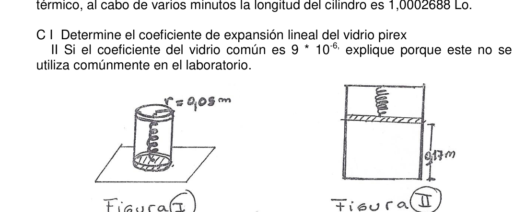
Topic: Thermodynamics, Elasticity & Materials Metodi: Ideal Gas Law, Hooke’s Law Competenze: Physical Reasoning, Mathematical Modeling Objects: Spring, Piston, Gas Fonte: Testo (PDF) — p.3
PT32. Colegio Paolo l’apostolo
- Buona erba, Tucumán.
Abbiamo in laboratorio un dispositivo come quello di figura 1, che consiste in un cilindro vuoto di vetro pirex, che ha all’interno, fissato al coperchio superiore un una scarsa massa che ha un’embolo mobile all’estremità. La La costante di scarico è K=600N/m. Alla base del cilindro c’è una valvola di
- Entrata di gas. La temperatura del laboratorio è di 16 gradi centigradi. Un serbatoio di gas sconosciuto viene collegato al dispositivo, la valvola viene aperta e il Se si chiude, si trova intrappolata una massa di gas all’interno del cilindro (Figura 2).
A I Determina il volume del gas
Calcolare la pressione a cui il gas è intrappolato
III Calcolare il lavoro svolto dal gas
B
Quando si misura su una bilancia di precisione, la differenza tra la massa di
dispositivo con n molli di gas sconosciuti e, vuoto, è di (0,231+ 0,001)
- I grammo. Determina con quale gas stiamo lavorando.
Helio Oggene Grammi/Mol (circa.) 4 32
Il cilindro viene inserito in un pilastro con un miscela di acqua e vapore in equilibrio. termico, dopo diversi minuti la lunghezza del cilindro è di 1.0002688 Lo.
C I Determina il coefficiente di espansione lineare del vetro pirex II Se il coefficiente di vetro comune è 9 * 10-6, spiegare perché non è stato è comunemente usato in laboratorio.
Topic: Thermodynamics, Elasticity & Materials Metodi: Ideal Gas Law, Hooke’s Law Competenze: Physical Reasoning, Mathematical Modeling Objects: Spring, Piston, Gas Fonte: Testo (PDF) — p.3
PT32. Paul the Apostle College It’s good grass, Tucumán.
We have in the lab a device like the one in Figure 1, consisting of a hollow glass cylinder pirex, which has inside, fixed to the top lid a a despicable mass spring with a moving embolus at its end. La The spring constant is K=600N/m. At the base of the cylinder is a valve of gas input. The lab temperature is 16 degrees Celsius. An unknown gas tank is connected to the device, the valve is opened, and the If the cylinder is closed, a mass of gas is trapped inside the cylinder (Figure 2).
A I Determine the volume of gas
Calculate the pressure at which the gas is trapped
III Calculate the work done by gas
B
When measuring on a precision scale, the difference between the mass of the
device with n unknown gas moles and empty is (0,231+ 0,001)
- I’m not going to. Determine what gas we’re working with.
Helium . Oxygen . The following table shows the total weight of the product: 4 32
The cylinder is inserted into a pile with a water and steam mixture in balance. The length of the cylinder is 1,0002688 Lo.
C I Determine the linear expansion coefficient of the pirex glass If the coefficient of common glass is 9 * 10 to 6, explain why this is not the case. commonly used in the laboratory.
Topic: Thermodynamics, Elasticity & Materials Metodi: Ideal Gas Law, Hooke’s Law Competenze: Physical Reasoning, Mathematical Modeling Objects: Spring, Piston, Gas Fonte: Testo (PDF) — p.3
PT33. Colegio Pablo Apóstol
Yerba Buena, Tucumán.
Se sabe que la rapidez de arrastre, se dá en conductores donde los portadores de carga son electrones libres. Si el conductor está aislado, estos electrones se desplazan al azar como moléculas de un gas. Estos se mueven en zigzag debido a las colisiones y con solo una pequeña velocidad media de arrastre a lo largo del alambre. La carga móvil ∆Q se puede calcular como :
∆Q = Número de portadores . carga por portador = (n. A. ∆x) . q
Donde q es la carga del portador, A es el área transversal,
OAF 2012 - 64 ∆x es la longitud del alambre por lo tanto podemos sacar la rapidez de arrastre, como v = ∆x/∆t .
Un alambre de cobre cuya área transversal es de 3. 10-6 m2 transporta una
corriente de 10 A.
a) Suponiendo que cada átomo de cobre contribuye con un electrón libre al
metal, encuentre la rapidez de arrastre de los e de este alambre
sabiendo que la densidad del cobre es 8.25g/cm3.
b) Mediante el empleo del gas ideal compare la rapidez de arrastre con la
rapidez cuadrática media que tendrá un e al azar a 20°C.
c) Calcule la resistencia por unidad de longitud del alambre de cobre , si la
resistividad e de 1,7.10-8ῼm.
d) Si una diferencia de potencial de 10V se mantiene a través del alambre
de cobre de 1m de longitud. Calcular la corriente que pasa por el
alambre y la capacidad de disipación de potencia.
e) Un termómetro de resistencias están hecho de cobre con una R= 50ῼ a
20 °C. Este dispositivo se sumerge en un recipiente de Indio fundido y
entonces su resistencia aumenta a 76,8ῼ. A partir de esta información
encuentre el punto de fusión del Indio.
Coeficiente de temperatura de resistividad ἀ=3,9.10-3 1/°C
f) Qué cantidad de calor entregó el indio al alambre de cobre al ser
sumergido? Ce= 0.092cal/g °C
g) Calcule la masa de indio fundido en el recipiente
h) Calcule la dilatación del alambre de cobre.
Coeficiente de dilatación = 1,7.10-5 1/°C
Punto de fusión del cobre: 1083°C
Datos: Masa de un mol de cobre: 65,2g n = número de electrones/volumen q= 1,6 .10-19 C
Topic: Circuits Metodi: Statistical Averaging, Kinetic Theory of Gases, First Law of Thermodynamics Competenze: Physical Reasoning, Mathematical Modeling Objects: Wire, Resistor Fonte: Testo (PDF) — p.3
PT33. Colegio Paolo l’apostolo
- Buona erba, Tucumán.
Si sa che la velocità di trascinamento, si dà in conducenti dove i portatori di carica sono elettroni liberi. Se il conduttore è isolato, questi elettroni sono si spostano a caso come molecole di gas. Questi si muovono in zigzag a causa delle collisioni e con solo una piccola velocità media di trascinamento lungo il filo. La carica mobile ∆Q può calcolare come:
∆Q = Numero di portatori . carico per portatore = (n. A. ∆x) . q
Dove q è il carico del portatore, A è l’area trasversale,
OAF 2012 - 64 ∆x è la lunghezza del filo Quindi possiamo ottenere la velocità di trascinamento, come v = ∆x/∆t.
Un filo di rame con un’area trasversale di 3. 10-6 m2 trasportano una corrente di 10 A. a) Supponendo che ogni atomo di rame contribuisca con un elettrone libero al metallo, ritrovate la velocità di trascinamento di questo filo. sapendo che la densità del rame è di 8,25 g/cm3. b) L’uso del gas ideale permette di confrontare la velocità di trascinamento con la velocità di trascinamento. velocità quadrata media che avrà un e a caso a 20°C. c) Calcolare la resistenza per unità di lunghezza del filo di rame , se il resistenza e di 1,7.10-8m. d) Se una differenza di potenziale di 10V è mantenuta attraverso il filo di cui al punto 1. Calcolare il corrente che passa attraverso il il filo e la capacità di dissipazione della potenza. e) Un termometro di resistenza è fatto di rame con un R= 50 a 20 °C. Questo dispositivo viene immerso in un recipiente di India fuso e la resistenza aumenta a 76,8. Dalle informazioni Trova il punto di fusione dell’indio. Coefficiente di temperatura di resistività ἀ=3,9.10-3 1/°C f) Quanti calori l’indio ha consegnato al filo di rame all’essere
- Suttomergito? C = 0,092 cal/g °C g) Calcolare la massa di indio fonduto nel recipiente h) Calcolare la dilatazione del filo di rame. Coefficiente di dilatazione = 1,7.10-5 1/°C Punto di fusione del rame: 1083°C
Dati: Massa di un mol di rame: 65,2 g N = numero di elettroni/volume q= 1,6 .10-19 C
Topic: Circuits Metodi: Statistical Averaging, Kinetic Theory of Gases, First Law of Thermodynamics Competenze: Physical Reasoning, Mathematical Modeling Objects: Wire, Resistor Fonte: Testo (PDF) — p.3
PT33. Paul the Apostle College It’s good grass, Tucumán.
It is known that drag speed, is given in drivers where the carriers The charge is free electrons. If the conductor is isolated, these electrons are They move randomly like molecules of a gas. These move in zigzag due to collisions and with only a small one. average drag speed along the wire. The mobile charge ∆Q can be Calculate as follows:
∆Q = number of carriers . The following shall be added to the list of the following: A. ∆x) . q
Where q is the carrier load, A is the cross-sectional area,
The following is the list of the Member States’ financial statements: ∆x is the length of the wire So we can get the drag speed, like v = ∆x/∆t.
A copper wire with a cross-sectional area of 3. 10-6 m2 carries a current of 10 A. (a) Assuming that each copper atom contributes one free electron to the metal, find the drag speed of the e of this wire Knowing that the density of copper is 8.25 g/cm3. (b) By using the ideal gas, compare the drag speed with the average quadratic speed that will have a random e to 20°C. (c) Calculate the resistance per unit length of the copper wire if the Resistivity and of 1,7.10-8m. (d) If a 10V potential difference is maintained across the wire of copper of 1 m in length. Calculate the current passing through the Wire and power dissipation capability. e) A resistance thermometer is made of copper with an R= 50 to 20 °C. This device is immersed in a molten Indian container and Then its resistance increases to 76.8. From this information Find the Indian’s melting point. The temperature coefficient of resistance ἀ=3,9.10-3 1/°C (f) How much heat did the Indian deliver to the copper wire when he was
- Submerged? The following table shows the results of the calculation of the CO2 emissions from the Union industry: (g) Calculate the mass of melted indium in the container (h) Calculate the dilatation of the copper wire. The maximum value of the product shall be the product of the product concerned. Copper melting point: 1083°C
Data: Mass of one mol copper: 65,2 g N = number of electrons/volume q= 1,6 .10-19 C
Topic: Circuits Metodi: Statistical Averaging, Kinetic Theory of Gases, First Law of Thermodynamics Competenze: Physical Reasoning, Mathematical Modeling Objects: Wire, Resistor Fonte: Testo (PDF) — p.3
PT34. Colegio del Carmen y San José(1)
Escuela Secundaria Nº 1 Clara J. Amstrong(1)
Escuela Preuniversitaria Fray Mamerto Esquiú(1)
EPET N° 6: Mtro Pieri(1)
Escuela Secundaria Nº 21 República de Venezuela(2)
San Fernando del Valle(1) - Andalgalá(2), Catamarca.
Tres aviadores amateurs se aventuran en una avioneta hacia el Pacífico. Luego de un tiempo de vuelo, la avioneta presenta un desperfecto y se ven forzados a aterrizar en la isla más cercana, que ubican a simple vista. Tras varios días de inspección del lugar, los náufragos advierten que la isla está deshabitada y que no tienen forma de reparar la avioneta ni comunicarse con ningún radio. Es así que deciden construir una balsa para salir de ella. Para ello, encuentran en el interior de la isla troncos de madera de 4 m de longitud y 30 cm de diámetro, cuya masa estiman en 160 kg. Antes de construir la balsa hacen un inventario de lo que debe soportar: Masa de los tres náufragos: 240 kg Comida para dos meses: 180 kg Agua potable para el viaje: 180 litros Material diverso: 40 kg Los náufragos tienen en cuenta los conocimientos en hidrostática adquiridos durante el curso de aviación y además recuerdan que la densidad del agua salada tiene un valor de 1030kg/m3 y la del agua dulce es de 1000kg/m3.
OAF 2012 - 65 Con los datos con que cuentan los aviadores, conteste las siguientes preguntas: a) ¿Cuál es la densidad del tronco? b) ¿Cuánto peso debe soportar la balsa? c) ¿Cuántos troncos, como mínimo, deben utilizar para construir la balsa? En este punto, los náufragos toman en cuenta que al cargar todo el peso sobre la balsa, a lo sumo permiten que la superficie de la balsa quede rasante con la superficie del agua (supuesta quieta, en calma), pero sin mojar la carga. Esquematice la situación. d) ¿Qué presión ejerce la balsa sin la carga sobre la superficie del agua?
Topic: Fluid Mechanics Metodi: Hydrostatic Equilibrium Competenze: Physical Reasoning, Mathematical Modeling Objects: Cylinder Fonte: Testo (PDF) — p.3
PT34. Colegio del Carmen e San José (CC) 1)
La scuola secondaria n. 1 Clara J. Amstrong) 1)
Scuola Preuniversitaria Fray Mamerto Esquiú(1)
EPET N° 6: Mtro Pieri(1)
Scuola secondaria n. 21 Repubblica del Venezuela(2)
San Fernando del Valle (1) - Andalgalá (2), Catamarca.
Tre aviatori amatoriali si avventurano su un piccolo aereo verso il Pacifico. Poi Dopo un tempo di volo, il velivolo presenta un guasto e vengono costretti a L’isola più vicina, che si trova a vista. Dopo diversi giorni di In ispezione del luogo, i naufragi avvertono che l’isola è disoccupata e che Non hanno modo di riparare il velivolo o di comunicare con nessuna radio. È così che decidono di costruire una barca per uscire da essa. Per questo, trovate il interno dell’isola tronchi di legno di 4 m di lunghezza e 30 cm di diametro, di peso stimato in 160 kg. Prima di costruire la barca fanno un inventario di che cosa deve sopportare: Massa dei tre naufragi: 240 kg Cibo per due mesi: 180 kg Acqua potabile per il viaggio: 180 litri Materiale diverso: 40 kg I naufragi hanno in considerazione le conoscenze acquise in idrostatica. durante il corso di volo e inoltre ricordare che la densità dell’acqua il sale ha un valore di 1030 kg/m3 e quello dell’acqua dolce è di 1000 kg/m3.
OAF 2012 - 65 Con i dati che gli aviatori hanno, rispondi alle seguenti domande: a) Qual è la densità del tronco? b) Quanto peso deve sopportare la barca? c) Quanti tronchi devono essere utilizzati per costruire la barca? A questo punto, i naufragi si accorgono che caricando tutto il peso sulla barca, al massimo consentono la superficie della barca rimanere rasante con la superficie dell’acqua (supposizione quieta, calma), ma senza bagnare il carico. Scalda la situazione. d) Che pressione esercita la barca senza carico sulla superficie dell’acqua?
Topic: Fluid Mechanics Metodi: Hydrostatic Equilibrium Competenze: Physical Reasoning, Mathematical Modeling Objects: Cylinder Fonte: Testo (PDF) — p.3
PT34. College of Carmen and San José (s)
High School No. 1 Clara J. The Commission has decided to adopt a new proposal.
Pre-university school Fray Mamerto Esquiú (Fray Mamerto Esquiú)
The following table shows the results of the evaluation:
Secondary School No 21 Republic of Venezuela(2)
The following is a list of the regions of Spain and Portugal.
Three amateur airmen venture into a jetliner heading for the Pacific. Then . After a flight time, the aircraft is damaged and forced to fly. land on the nearest island, which you can see with the naked eye. After several days of Inspection of the site, the shipwrecked warn that the island is uninhabited and that They have no way to repair the plane or communicate with any radio. That ‘s right . They decide to build a raft to get out of it. For this, they find in the Inland wood logs of 4 m in length and 30 cm in diameter, whose mass is estimated at 160 kg. Before building the raft they make an inventory of What you must endure: Mass of the three shipwrecks: 240 kg Food for two months: 180 kg Drinking water for the journey: 180 litres Other materials: 40 kg Shipwrecks take into account their knowledge of hydrostatics . During the flight course and also remember that the density of water salt has a value of 1030kg/m3 and freshwater is 1000kg/m3.
The following is the list of the countries of the European Union: With the data available to airmen, answer the following questions: (a) What is the density of the trunk? (b) How much weight should the raft bear? (c) How many logs should the raft be built with at least? At this point, the shipwrecks take into account that when loading the whole thing weight on the raft, at most allow the surface of the raft remain flat with the water surface (suggested calm, calm), But without getting the load wet. Squeeze the situation. (d) What pressure does the raft exert without the load on the water surface?
Topic: Fluid Mechanics Metodi: Hydrostatic Equilibrium Competenze: Physical Reasoning, Mathematical Modeling Objects: Cylinder Fonte: Testo (PDF) — p.3
PT35. Colegio del Carmen y San José(1)
Escuela Secundaria Nº 1 Clara J. Amstrong(1)
Escuela Preuniversitaria Fray Mamerto Esquiú(1)
EPET N° 6: Mtro Pieri(1)
Escuela Secundaria Nº 21 República de Venezuela(2)
San Fernando del Valle(1) - Andalgalá(2), Catamarca.
Un hombre que vive en la localidad de “El Rodeo” viaja en su automóvil hacia su lugar de trabajo en la Ciudad Capital, por la ruta que conecta ambas ciudades (recuerde que la ciudad de “El Rodeo” tiene mayor altitud que la Ciudad Capital). En un tramo rectilíneo de la misma, el conductor aprieta súbita y fuertemente el pedal del freno para evitar colisionar con una gran roca que se desprendió de la lomada y quedó depositada en medio del camino. Las ruedas se bloquean, dejando una huella bien marcada sobre el pavimento, hasta que el auto se detiene completamente justo frente a la roca. Por suerte el conductor llevaba el cinturón puesto y no sufrió ningún daño, pero igual no pudo evitar que algunos fragmentos que siguen desprendiéndose de la montaña cayeran sobre el auto, provocando abolladuras sobre la parte delantera del mismo. Es así, que decide recurrir al agente del seguro de su automotor para obtener el pago total del arreglo. Sin embargo, el agente del seguro, debe realizar una investigación para determinar si las abolladuras fueron accidentales o provocadas por la imprudencia del conductor. Determine Ud. los diagramas y las respuestas a las preguntas que se hizo este agente: a) El agente mide con uno de sus aparatos la pendiente de la ruta y obtiene 30°. Realizar el diagrama de cuerpo libre de las fuerzas que actúan sobre el auto. b) El agente encuentra en su registro que la masa de este automóvil en particular es de 1000 Kg. ¿Cuánto vale la reacción normal del plano? c) El agente mide la distancia de frenado, tomando la longitud de la huella que dejaron las ruedas sobre el pavimento y obtiene 30m. Observa el velocímetro del auto y ve que este marca 20 m/s como velocidad inicial. Obtenga la aceleración del auto. d) Calcule el tiempo que tarda el automóvil en detenerse. e) Determine la fuerza de fricción. f) Calcule el coeficiente de fricción entre el pavimento y las ruedas del automóvil.
OAF 2012 - 66
Topic: Newtonian Mechanics Metodi: Free-Body Diagram, Kinematic Equations Competenze: Physical Reasoning, Mathematical Modeling Objects: Inclined Plane Fonte: Testo (PDF) — p.3
PT35. Colegio del Carmen e San José (CC) 1)
La scuola secondaria n. 1 Clara J. Amstrong) 1)
Scuola Preuniversitaria Fray Mamerto Esquiú(1)
EPET N° 6: Mtro Pieri(1)
Scuola secondaria n. 21 Repubblica del Venezuela(2)
San Fernando del Valle (1) - Andalgalá (2), Catamarca.
Un uomo che vive nel villaggio del Rodeo viaggia in macchina verso la sua casa. lavoro nella Città Capitale, per la strada che collega le due città (Ricorda che la città di El Rodeo ha un’altitudine superiore alla Città Capitale). In un tratto rettilineo della stessa, il conducente si appicca improvvisamente e forte Pedale del freno per evitare di colpire una grande roccia che si è sbrancata dalla e fu messa in mezzo alla strada. Le ruote si bloccano, Lasciando un’impronta ben segnata sul pavimento, finché la macchina non si è spinta. Si ferma completamente di fronte alla roccia. Per fortuna il conducente aveva il cintura indossa e non ha subito alcun danno, ma non ha potuto evitare che alcuni Fragmenti che continuano a sganciare dalla montagna cadono sulla macchina. causando abbattimenti sulla parte anteriore. E’ così che deciderà. ricorrere all’assicurazione auto per ottenere il pagamento totale del
- No, no, no, no, no, no, no, no, no, no, no, no, no, no, no, no, no, no, no, no, no, no, no, no, no, no, no, no, no, no, no, no, no, no, no, no, no, no, no, no, no, no, no, no, no, no, no, no, no, no, no, no, no, no, no, no, no, no, no, no, no, no, no, no, no, no, no, no, no, no, no, no, no, no, no, no, no, no, no, no, no, no, no, no, no, no, no, no, no, no, no, no, no, no, no, no, no, no, no, no, no, no, no, no, no, no, no, no, no, no, no, no, no, no, no, no, no, no, no, no, no, no, no, no, no, no, no, no, no, no, no, no, no, no, no, no, no, no, no, no, no, no, no, no, no, no, no, no, no, no, no, no, no, no, no, no, no, no, no, no, no, no, no, no, no, no, no, no, no, no, no, no, no, no, no, no, no, no, no, no, no, no, no, no, no, no, no, no, no, no, no, no, no, no, no, no, no, no, no, no, no, no, no, no, no, no, no, no, no, no, no, no, no, no, no, no, no, no, no, no, no, no, no, no, no, no, no, no, no, no, no, no, no, no, no, no, no, no, no, no, no, no, no, no, no, no, no, no, no, no, no, no, no, no, no, Tuttavia, l’agente assicurativo deve fare un’indagine per determinare se le abbatte sono state accidentali o causate dalla imprudenza del conducente. Determina tu. I diagrammi e le risposte alle domande domande che si è fatto questo agente: a) L’agente misura con uno dei suoi apparecchi la pendenza del percorso e si ottiene 30°. Realizzare il diagramma di corpo libero delle forze che Agiscono sulla macchina. b) L’agente trova nel suo registro che la massa di questa auto è in Il peso di un particolare è di 1000 Kg. Quanto vale la reazione normale del piano? c) L’agente misura la distanza di frenata, prendendo la lunghezza della traccia che hanno lasciato le ruote sul pavimento e otteni 30 metri. Guarda il la velocità della macchina e vedi che questo segna 20 m/s come velocità iniziale. Ottieni l’accelerazione della macchina. d) Calcolare il tempo necessario per fermare l’auto. e) Determina la forza di attrito. f) Calcolare il coefficiente di attrito tra il pavimento e le ruote del auto.
OAF 2012 - 66
Topic: Newtonian Mechanics Metodi: Free-Body Diagram, Kinematic Equations Competenze: Physical Reasoning, Mathematical Modeling Objects: Inclined Plane Fonte: Testo (PDF) — p.3
PT35. College of Carmen and San José (s)
High School No. 1 Clara J. The Commission has decided to adopt a new proposal.
Pre-university school Fray Mamerto Esquiú (Fray Mamerto Esquiú)
The following table shows the results of the evaluation:
Secondary School No 21 Republic of Venezuela(2)
The following is a list of the regions of Spain and Portugal.
A man who lives in the village of El Rodeo travels in his car to his home town Workplace in the Capital City, by the route that connects the two cities (remember that the city of El Rodeo is higher than the Capital City). In a straight line of the same, the driver suddenly squeezes and tightly squeezes the Brake pedal to avoid colliding with a large rock that broke off the It was crumbled and laid in the middle of the road. The wheels are locking, Leaving a well-marked footprint on the pavement, until the car is gone. It stops completely right in front of the rock. Luckily the driver was wearing the belt on and she didn’t get any damage, but she still couldn’t stop some of it. fragments still falling off the mountain would fall on the car, causing a lump on the front of the body. That’s how it is, you decide. You can use your car insurance agent to get the full payment of your car insurance. I’ll get it. However, the insurance agent must conduct an investigation to determine whether the abrasion was accidental or caused by the the driver’s recklessness. You determine. The diagrams and the answers to the questions Questions this agent asked himself: (a) The agent shall measure the slope of the route with one of his devices and The resulting value is 30°. To make the body diagram free of forces that They act on the car. (b) The agent finds in his record that the mass of this car in particular is 1000 kg. How much is the normal reaction of the plane? (c) The agent measures the braking distance by taking the length of the footprint They left the wheels on the pavement and you get 30m. Look at the the car’s speedometer and see that this marks 20 m/s as the starting speed. Get the car’s acceleration. (d) Calculate the time it takes the car to stop. (e) Determine the friction force. (f) Calculate the friction coefficient between the pavement and the wheels of the vehicle. car.
The following points shall be added:
Topic: Newtonian Mechanics Metodi: Free-Body Diagram, Kinematic Equations Competenze: Physical Reasoning, Mathematical Modeling Objects: Inclined Plane Fonte: Testo (PDF) — p.3
PT36. Colegio del Carmen y San José(1)
Escuela Secundaria Nº 1 Clara J. Amstrong(1)
Escuela Preuniversitaria Fray Mamerto Esquiú(1)
EPET N° 6: Mtro Pieri(1)
Escuela Secundaria Nº 21 República de Venezuela(2)
San Fernando del Valle(1) - Andalgalá(2), Catamarca.
Los alumnos de Física se encuentran en el laboratorio para construir un dispositivo láser que utilizarán en un diseño experimental con el fin de verificar la Ley de Snell, de óptica geométrica. Este diseño experimental tiene la estructura que muestra la Fig.1. Del dispositivo láser emana un haz de luz que alcanza la superficie de un prisma transparente, a partir de la cual se refracta y sigue camino hacia una pantalla ubicada detrás del mismo, donde se apreciará el punto de impacto final del rayo.
El dispositivo láser puede moverse
con total libertad, de un lado a otro,
para variar el ángulo de incidencia
sobre el prisma, como se muestra en
la Fig.2. Los alumnos decidieron que
el punto de incidencia del haz de luz
siempre será el punto medio de la
superficie del prisma.
Para la construcción del dispositivo láser, los alumnos cuentan con una fuente de voltaje de 9V, dos resistencias de R1=1KΩ y R2=1,8 KΩ y un diodo. Un diodo láser puede obtenerse de un lector de CD en desuso, por ejemplo y es un dispositivo muy peligroso para manipular, puede quemar fácilmente la retina de los ojos, aun con su reflejo invisible y dañarla permanentemente; es mejor no experimentar con ellos sin la protección adecuada. Aquí se utiliza un diodo láser de baja potencia, como los que lleva un puntero láser. El circuito de alimentación del diodo es el mostrado en la Fig.3.
Como se aprecia en el esquema del circuito será necesario comprar una tercera resistencia, denominada R. Para determinar el valor nominal de la misma, responda las siguientes preguntas:
OAF 2012 - 67 a) El diodo necesita Vd = 4,5 V para funcionar correctamente. Si la fuente de voltaje del circuito es de V=9V, ¿cuánto consume el juego de resistencias? b) Es necesario que por el circuito pase una corriente de I=1mA. ¿Cuál es el valor necesario de R para que así ocurra? (Recuerde que según lo que calculó anteriormente las resistencias consumen sólo una fracción de los 9V) c) Los fabricantes de componentes electrónicos elaboran resistencias para ciertos valores estándares y por lo tanto, los alumnos no conseguirán una con el valor exacto calculado. En el mercado electrónico se encuentran dos resistencias con valores nominales de RA=3300Ω y RB=3900Ω. Si no queremos sobrepasar la corriente de diseño de 1mA (para no dañar el diodo) ¿cuál es la elección correcta? Justifique su respuesta.
Una vez construido el dispositivo láser, los alumnos proceden con la experiencia de óptica. El docente a cargo de la clase les plantea las siguientes preguntas: d) Suponga que el haz de luz que emana del dispositivo láser llega a la superficie del prisma rectangular con un ángulo de 40° medido desde la normal. El prisma tiene 10cm de ancho, 20 cm de largo e índice de refracción n=1,3. ¿A qué ángulo queda refractado el haz dentro del prisma? ¿A qué distancia impacta el rayo sobre la pantalla, si se mide desde la mitad de la misma? Esquematice el recorrido de los haces incidente y refractado, marcando la normal y los ángulos correspondientes. e) ¿A qué ángulo debe orientarse el haz incidente de manera que el haz refractado impacte sobre la pantalla a 3 cm, medidos nuevamente, desde la mitad de la misma?
Topic: Geometric Optics, Circuits Metodi: Snell’s Law, Kirchhoff’s Laws Competenze: Physical Reasoning, Mathematical Modeling Objects: Prism, Resistor, Screen Fonte: Testo (PDF) — p.3
PT36. Colegio del Carmen e San José (CC) 1)
La scuola secondaria n. 1 Clara J. Amstrong) 1)
Scuola Preuniversitaria Fray Mamerto Esquiú(1)
EPET N° 6: Mtro Pieri(1)
Scuola secondaria n. 21 Repubblica del Venezuela(2)
San Fernando del Valle (1) - Andalgalá (2), Catamarca.
Gli studenti di fisica si trovano In laboratorio per costruire un dispositivo laser che utilizzeranno in un Il progetto sperimentale è stato progettato per Verificare la legge di Snell, di ottica geometrica. Questo design sperimentale ha la struttura che mostra la Fig. 1. Dal dispositivo laser emette un Fa luce che raggiunge la superficie . di un prisma trasparente, a partire da che si rifracca e si muove. verso uno schermo situato dietro il
- il punto di vista di cui si tratta. di impatto finale del raggio.
Il laser può muoversi. Con totale libertà, da un lato all’altro, per variare l’angolo di incidenza sul prisma, come mostrato in la figura 2. Gli studenti hanno deciso che il punto di incidenza del fascio di luce Sarà sempre il punto di riferimento della superficie del prisma.
Per la costruzione del dispositivo Laser, gli studenti hanno una fonte de Voltaggio de 9V, Due . resistenza di R1=1KΩ e R2=1,8 KΩ e un diodo. Un diodo laser può essere ottenuto da un lettore di CD disuso, per E’ un dispositivo molto pericoloso da manipolare, può bruciare. facilmente la retina degli occhi, anche con il suo riflesso invisibile e danneggiarla È meglio non sperimentare senza protezione.
- Proprio così. Qui viene utilizzato un diodo laser a bassa potenza, come quelli che porta un puntatore laser. Il circuito di alimentazione del diodo è quello mostrato in Fig.3.
Come si vede nel schema del circuito sarà necessario acquistare un terzo resistenza denominata R. Per determinare il valore nominale, risponde alle seguenti domande:
OAF 2012 - 67 a) Il diodo ha bisogno di Vd = 4,5 V per funzionare correttamente. Se la fonte volta di circuito è di V=9V, quanto consuma il gioco di resistenza? b) È necessario che il circuito attraversino un corrente di I=1mA. Che cos’è? il valore di R necessario per farlo? (Ricorda che secondo il che ha calcolato in precedenza le resistenze consumano solo una frazione di 9V) c) I produttori di componenti elettronici elaborano resistenze per I risultati sono stati ottenuti con un’elevata valutazione dei valori standard e quindi gli studenti non potranno ottenere uno con il valore calcolato esatto. Nel mercato elettronico si i risultati sono risultati con un’ampia resistenza di 0,3 mm e di 0,3 mm. RB=3900Ω. Se non vogliamo superare il flusso di progettazione di 1 mA (per non danneggiare il diodo) qual è la scelta giusta? Giustifica il suo
- Risposta.
Una volta costruito il dispositivo laser, gli studenti procedono con l’esperienza di ottica. Il docente a capo della classe le fa le seguenti domande: d) Supponiamo che il fascio di luce emesso dal dispositivo laser raggiunga la superficie del prisma rettangolare ad un angolo di 40° misurato dal
- Normalmente. Il prisma ha 10 cm di larghezza, 20 cm di lunghezza e un indice di rifrazione n = 1,3. A che angolo si rifracta il fascio all’interno del
- Prisma? A che distanza colpisce il raggio sullo schermo, se misurato?
- dalla metà della stessa? Squamatizzare il percorso dei fasci Incidente y rifractato, segnando la Normalmente . y Le angolazioni corrispondenti. e) A quale angolo deve essere orientato il fascio incidente in modo da farlo rifractato impatto sullo schermo a 3 cm, ri-misurati,
- dalla metà della stessa?
Topic: Geometric Optics, Circuits Metodi: Snell’s Law, Kirchhoff’s Laws Competenze: Physical Reasoning, Mathematical Modeling Objects: Prism, Resistor, Screen Fonte: Testo (PDF) — p.3
PT36. College of Carmen and San José (s)
High School No. 1 Clara J. The Commission has decided to adopt a new proposal.
Pre-university school Fray Mamerto Esquiú(1)
The following table shows the results of the evaluation:
Secondary School No 21 Republic of Venezuela(2)
The following is a list of the regions of Spain and Portugal.
Physics students are In the lab to build a The laser device they’re going to use in a experimental design with the aim of Check Snell’s law, of optics It’s geometrical. This experimental design . It has the structure that shows the Figure 1. The laser device emits a Make light reach the surface. of a transparent prism, from which is reversed and continues its course. To a screen located behind the The point will be appreciated. of the final impact of the lightning.
The laser device can move. With complete freedom, from one side to the other, to vary the angle of incidence over the prism, as shown in the Figure 2. The students decided that the point of impact of the beam of light It will always be the middle ground of the the surface of the prism.
For the construction of the device The students have a laser. Source de voltage de 9V, Two . The following conditions shall apply: and a diode. A laser diode can be obtained from a discontinued CD reader, by It’s a very dangerous device to manipulate, it can burn. easily the retina of the eyes, even with its invisible reflection and damage it It is best not to experiment with them without protection. It’s a good one. Here a low-power laser diode is used, like those that carry a The laser pointer. The diode’s power supply circuit is as shown in Figure 3.
As you can see in the circuit diagram , you ‘ll need to buy a third . resistance, called R. In order to determine the nominal value of the same, Answer the following questions:
The following points shall be added: a) The diode needs Vd = 4,5 V to function properly. If the source The voltage of the circuit is V=9V, how much does the game consume? resistance? (b) A current of I=1mA must pass through the circuit. What is it? The value of R needed to make this happen? (Remember that according to the The resistance you calculated earlier consumes only a fraction . of 9V) (c) Manufacturers of electronic components develop resistance to The aim is to ensure that the students are able to achieve certain standards and therefore will not be able to One with the exact calculated value. In the electronic market, They find two resistors with rated values of RA=3300Ω and RB=3900Ω. If we don’t want to exceed the design current of 1mA (so as not to damage the diode) what is the right choice? Justify your . The answer.
Once the laser device is built, students proceed with the experience Optical power. The teacher in charge of the class asks them the following questions: (d) Suppose that the beam of light emitted from the laser device reaches the surface of the rectangular prism at an angle of 40° measured from the It’s normal. The prism is 10 cm wide, 20 cm long and has an index of refraction n = 1,3. At what angle is the beam within the beam refracted? Prism? How far does lightning strike the screen, if measured? Since the middle of it? Schematic the path of the beams The incident . y refractory, marking la
- It ‘s normal . y The angles the corresponding ones. (e) What angle should the incident beam be oriented at so that it is oriented at? refractory impact on the screen at 3 cm, measured again, Since the middle of it?
Topic: Geometric Optics, Circuits Metodi: Snell’s Law, Kirchhoff’s Laws Competenze: Physical Reasoning, Mathematical Modeling Objects: Prism, Resistor, Screen Fonte: Testo (PDF) — p.3
PT37. Instituto Privado Lucio V. Mansilla Caleufú, La Pampa.
Dado el siguiente gráfico representativo de los cambios producidos en una barra de estaño de 100 g por acción del calor
a) Usando las tablas de coeficientes (Anexo 1) completa las temperaturas que faltan en el gráfico b) Hallar el calor necesario para llevar la barra hasta la temperatura de fusión.
OAF 2012 - 68 c) Hallar el calor necesario para fundir la barra d) Hallar el calor que se necesita para llevar el material desde los 1000ºC a los 2500ºC e) Halla la cantidad de calor necesario para que el material se encuentre en los puntos: A, B, C, D y E f) Responde cuáles de las siguientes afirmaciones son verdaderas falsas I) El valor C es la cantidad de calor para evaporar la barra inicial II) El valor D es la cantidad de calor para evaporar el estaño líquido a 2270ºC III) La diferencia B-Aes el calor latente de fusión IV) Si se entrega a la barra inicial una cantidad de calor entre C y D habrá una parte de los 100g de estaño en estado líquido y la otra parte en estado gaseoso.
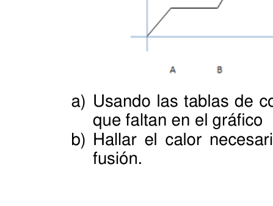
Topic: Thermodynamics Metodi: First Law of Thermodynamics, Experimental Data Analysis Competenze: Physical Reasoning, Experimental Data Analysis Objects: Rod Fonte: Testo (PDF) — p.3
PT37. Istituto privato Lucio V. Maniglia Callufo, La Pampa.
Dato il seguente grafico rappresenta i cambiamenti effettuati su una barra di 100 g di stufa per azione di calore
a) Con l’utilizzo dei tabelli dei coefficienti (Annexo 1) completa le temperature che mancano sul grafico. b) Trovare il calore necessario per portare la barra a temperatura di Fusione.
OAF 2012 - 68 c) Trovare il calore necessario per fondere la barra d) Trovare il calore necessario per trasportare il materiale a partire da 1000°C a 2500 °C e) Scopri la quantità di calore necessaria per trovare il materiale nei punti A, B, C, D e E f) Risponde quale delle seguenti affermazioni sia vera e falsa I) Il valore C è la quantità di calore per evaporare la barra iniziale II) Il valore D è la quantità di calore per evaporare la stagno liquida a 2270ºC III) La differenza B-A è il calore latente della fusione IV) Se viene consegnato alla barra iniziale una quantità di calore tra C e D Ci sarà una parte di 100g di scatola in stato liquido e l’altra parte. parte in stato gassoso.
Topic: Thermodynamics Metodi: First Law of Thermodynamics, Experimental Data Analysis Competenze: Physical Reasoning, Experimental Data Analysis Objects: Rod Fonte: Testo (PDF) — p.3
PT37. Private institute Lucius V. Handkerchief It’s the heat, the pumpkin.
Given the following representative graph of changes made in a bar 100 g of tin per heat action
(a) Using the coefficient tables (Annex 1) complete the temperatures Missing in the chart. (b) Find the heat required to bring the bar to a temperature of The merger.
The following is the list of the Member States’ financial statements: (c) Find the heat required to melt the bar. (d) Find the heat required to carry the material from 1000oC at 2500 °C (e) Find the amount of heat required for the material to be located in points A, B, C, D and E (f) Answer which of the following statements are true and false. I) C is the amount of heat to evaporate the starting bar (ii) The value D is the amount of heat to evaporate the liquid tin to 2270ºC (iii) Difference B-A is the latent heat of fusion (iv) If a heat quantity between C and D is delivered to the starting bar There will be one part of the 100g of tin in liquid state and the other part part in a gaseous state.
Topic: Thermodynamics Metodi: First Law of Thermodynamics, Experimental Data Analysis Competenze: Physical Reasoning, Experimental Data Analysis Objects: Rod Fonte: Testo (PDF) — p.3
PT38. Instituto Privado Lucio V. Mansilla Caleufú, La Pampa.
En el gráfico de la figura, se debe de tener en cuenta que h=20 m. Y la esfera tiene una masa de 45 kg. El largo del plano horizontal es de 50 m. El plano inclinado con ángulo de 30º mide 10 m. Con estos datos, determinar: a- La velocidad de la esfera al llegar al pie de la primera pendiente. b- El tiempo que tardó en recorrer el plano horizontal a velocidad constante. c- El tiempo que tardó en bajar el primer plano inclinado. d- Hasta que altura del segundo plano inclinado logró subir.
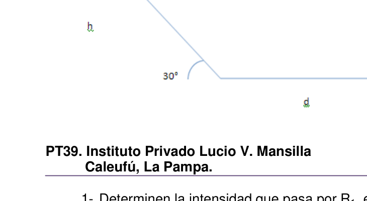
Topic: Conservation of Energy, Newtonian Mechanics Metodi: Energy Conservation Method, Kinematic Equations Competenze: Physical Reasoning, Mathematical Modeling Objects: Sphere, Inclined Plane Fonte: Testo (PDF) — p.3
PT38. Istituto privato Lucio V. Maniglia Callufo, La Pampa.
Nel grafico della figura, si deve tenere presente che h=20 m. E la sfera. ha una massa di 45 kg. La lunghezza del piano orizzontale è di 50 m. Il piano inclinato ad angolo di 30° misura 10 m. Con questi dati, si può determinare: a- La velocità della sfera al piede della prima pendenza. b- Il tempo impiegato per percorrere il piano orizzontale a velocità costante. c- Il tempo impiegato per scendere il primo piano inclinato. d- Fino a che altezza del secondo piano inclinato è riuscito a salire.
Topic: Conservation of Energy, Newtonian Mechanics Metodi: Energy Conservation Method, Kinematic Equations Competenze: Physical Reasoning, Mathematical Modeling Objects: Sphere, Inclined Plane Fonte: Testo (PDF) — p.3
PT38. Private institute Lucius V. Handkerchief It’s the heat, the pumpkin.
In the graph in the figure, it should be borne in mind that h=20 m. And the sphere . It weighs 45 kg. The length of the horizontal plane is 50 m. The plane . inclined at an angle of 30°, measuring 10 m. Using this data, determine: a- The speed of the sphere as it reaches the foot of the first slope. b- The time it took to travel the horizontal plane at speed It’s constant. c- The time it took to lower the sloping foreground. d- Until the height of the inclined second plane managed to climb.
Topic: Conservation of Energy, Newtonian Mechanics Metodi: Energy Conservation Method, Kinematic Equations Competenze: Physical Reasoning, Mathematical Modeling Objects: Sphere, Inclined Plane Fonte: Testo (PDF) — p.3
PT39. Instituto Privado Lucio V. Mansilla Caleufú, La Pampa.
1- Determinen la intensidad que pasa por R1, en el siguiente circuito:
OAF 2012 - 69
Datos: R1: 15 Ω R2: 10 Ω R3: 20 Ω R4: 18 Ω R5: 10 Ω e1: 3 V e2: 12 V
e3: 18 V
2- ¿De qué manera varia la intensidad que pasa por esa rama si se duplica el valor de R1?
Topic: Circuits Metodi: Kirchhoff’s Laws, Equivalent Circuit Reduction Competenze: Physical Reasoning, Mathematical Modeling Objects: Resistor, Battery Fonte: Testo (PDF) — p.3
PT39. Istituto privato Lucio V. Maniglia Calluffo, La Pampa.
1- Determina l’intensità che passa attraverso R1, nel circuito seguente:
OAF 2012 - 69 Data: R1: 15 Ω R2: 10 Ω R3: 20 Ω R4: 18 Ω R5: 10 Ω e1: 3 V e2: 12 V e3: 18 V
2- In che modo l’intensità che passa attraverso quel ramo varia se si raddoppiare il valore di R1?
Topic: Circuits Metodi: Kirchhoff’s Laws, Equivalent Circuit Reduction Competenze: Physical Reasoning, Mathematical Modeling Objects: Resistor, Battery Fonte: Testo (PDF) — p.3
PT39. Private institute Lucius V. Handkerchief It’s the heat, the pumpkin.
1- Determine the intensity passing through R1, in the following circuit:
The following points shall be added: The data are provided in accordance with the following table: e3: 18 V
2- How does the intensity passing through that branch vary if Does it double the value of R1?
Topic: Circuits Metodi: Kirchhoff’s Laws, Equivalent Circuit Reduction Competenze: Physical Reasoning, Mathematical Modeling Objects: Resistor, Battery Fonte: Testo (PDF) — p.3
PT39. Instituto María Auxiliadora Comodoro Rivadavia, Chubut.
Una pelota de béisbol es golpeada por un bate, y 3s más tarde es recogida a 30m de distancia. a) Si la pelota estaba a 1m por encima del terreno cuando fue golpeada y cuando fue recogida, ¿Cual fue la altura máxima que alcanzo en su trayectoria, medida sobre el terreno? b)¿Cuáles fueron los componentes horizontal y vertical de su velocidad cuando fue golpeada? c)¿ Cual era su velocidad en el instante en que fue recogida? d)¿Bajo qué ángulo sobre la horizontal salió despedida por el bate? (Despreciar la resistencia del aire)
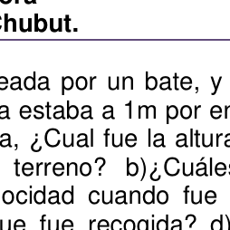
Topic: Newtonian Mechanics Metodi: Kinematic Equations, Vector Decomposition Competenze: Physical Reasoning, Mathematical Modeling Objects: Projectile Fonte: Testo (PDF) — p.3
PT39. Istituto Maria Assilliadora Comodoro Rivadavia, Chubut.
Una palla di baseball viene colpita da un pugno, e 3 secondi dopo viene raccolta a 30 metri di distanza. a) Se il pallone era a 1 m sopra il terreno quando è stato Quando è stata presa, qual è stata la massima altezza raggiunta nel suo tracciato, misurato sul terreno? b) Quali sono stati i componenti
- Horizontale e verticale della sua velocità quando è stata colpita? c) Qual era il suo velocità nell’istante in cui è stata raccolta? d) Da quale angolo sulla
- E’ stata licenziata per il colpo? (Spregiare la resistenza dell’aria)
Topic: Newtonian Mechanics Metodi: Kinematic Equations, Vector Decomposition Competenze: Physical Reasoning, Mathematical Modeling Objects: Projectile Fonte: Testo (PDF) — p.3
PT39. The Institute of Maria Auxiliadora Commodore Rivadavia, Chubut.
A baseball is hit by a bat, and 3s later it’s picked up. 30 meters away. (a) If the ball was 1 m above the ground when it was When she was hit and picked up, what was the maximum height she reached on her? trajectory, measurement on the ground? (b) What were the components? horizontal and vertical of its speed when it was hit? (c) What was your name ? speed at the instant it was picked up? (d) Under what angle on the horizontal was fired for the bat? (Despite the air resistance)
Topic: Newtonian Mechanics Metodi: Kinematic Equations, Vector Decomposition Competenze: Physical Reasoning, Mathematical Modeling Objects: Projectile Fonte: Testo (PDF) — p.3
PT40. Instituto María Auxiliadora Comodoro Rivadavia, Chubut.
Un cilindro con un pistón contiene 0.4moles de Nitrógeno 1.97atm y 300k, el gas puede tratarse como un gas ideal. Primero el gas se comprime a presión constante hasta la mitad de su volumen original, luego se expande adiabáticamente de vuelta hasta alcanzar su volumen original y por último se calienta a un volumen constante hasta su presión original a) Indique la serie de procesos en un diagrama P-V b) Calcular las temperaturas al principio y al final de la expansión adiabática. c) Calcule la presión mínima.
Topic: Thermodynamics Metodi: First Law of Thermodynamics, Ideal Gas Law, Thermodynamic Cycle Analysis Competenze: Physical Reasoning, Mathematical Modeling Objects: Piston, Gas Fonte: Testo (PDF) — p.3
PT40. Istituto Maria Assilliadora Comodoro Rivadavia, Chubut.
Un cilindro con un pistone contiene 0,4 moles di azoto, 1,97 atm e 300k, il gas. può essere considerato come un gas ideale. Prima il gas viene compresso a pressione. costante fino alla metà del volume originale, poi si espandono Adiabatamente di nuovo fino a raggiungere il volume originale e finalmente si (a) Indicare la serie di (b) Calcolare le temperature all’inizio e alla fine dell’espansione adiabatica. c) Calcolare la pressione minima.
Topic: Thermodynamics Metodi: First Law of Thermodynamics, Ideal Gas Law, Thermodynamic Cycle Analysis Competenze: Physical Reasoning, Mathematical Modeling Objects: Piston, Gas Fonte: Testo (PDF) — p.3
PT40. The Institute of Maria Auxiliadora Commodore Rivadavia, Chubut.
A cylinder with a piston contains 0.4 moles of nitrogen 1.97atm and 300k, the gas It can be treated as an ideal gas. First the gas is compressed under pressure. It’s constant to half its original volume, then expands. Adiabatically back to its original volume and finally it is (a) Indicate the series of (b) Calculate the temperatures at the beginning and end The adiabatic expansion. (c) Calculate the minimum pressure.
Topic: Thermodynamics Metodi: First Law of Thermodynamics, Ideal Gas Law, Thermodynamic Cycle Analysis Competenze: Physical Reasoning, Mathematical Modeling Objects: Piston, Gas Fonte: Testo (PDF) — p.3
PT41. Instituto María Auxiliadora Comodoro Rivadavia, Chubut.
Calcule el costo de iluminación de una casa de cuatro ambientes con lámparas de 1000 horas, 100W por ambiente, 6 horas por día, si estas lámparas fueran reemplazadas totalmente por velas de parafina.
PT42-43-44. Colegio Nro. 3 Mariano Moreno Ciudad de Buenos Aires.
Víctor Jáguaiann, un zapatero común en su zapatería ordinaria. Su clientela lo
aprecia por lo resistente de sus arreglos de media suela… Pero nadie en la
ciudad conoce el fabuloso secreto que se esconde en su cemento de contacto.
En un laboratorio secreto, oculto bajo su inocente local, descubrió las Nanojotas;
increíbles nanopartículas cuyas propiedades fractales Víctor aprendió a
manipular.
Pero una noche, mientras trabajaba en el desarrollo de una superchancleta, por
un error de cálculo perdió el control del acelerador de nanojotas. La excesiva
concentración de nanojotas de alta energía sobrecargó el núcleo ojotónico
provocando una cegadora explosión. Pero lejos de morir en el accidente, la
violenta exposición a la radiación de ojotones convirtió a Víctor Jáguaiann en…
¡¡Chancleta Verde!!, capaz de lanzar ojotas con los pies a velocidades
OAF 2012 - 70 supersónicas, y de recular en chancletas con la rapidez de un bólido (es decir con bolidez). Por eso, desde esa noche, cuando el mal aceche, la libertad esté en peligro, los villanos atenten contra la verdad y la justicia, siempre surcará el cielo una ojota lanzada por… ¡¡Chancleta Verde!!
- El día que la realidad fue otra. Las tardes de domingo son apacibles hasta que dejan de serlo. Salía Víctor Jáguaiann del cine y mientras paseaba por plaza Congreso encendió su chancletófono (lo había apagado durante la película). Este comenzó a sonar insistentemente y decenas de mensajes entraban uno tras otro: -¡¡¡Una tribu de Zulúes nos ataca para robarnos los celulares !!!¡¡¡Nos atropella una estampida de vacas que viene del puerto mugiendo en portugués!!!¡¡¡Un escuadrón de la SS nazi se lleva los chicos del jardín de infantes!!!¡¡¡Nos vamos a moriiiiiiir!!!- -¡¡¡Chancleta verdeeee!!! ¡¡¿Dónde estaaaaas?!!¡¡¿¿No ves la Ojotoseñal??!! “Mmmmmm, esto es obra del malvado Mágnettix”- intuyó Jáguaiann. Levantó la vista y divisó el brillo esmeralda de las bengalargatas sobre la Plaza de Mayo, en el otro extremo de la avenida. Entonces, calzado con sus termojotas, comenzó a recular como bólido hacia la plaza mientras se transformaba en…Chancletaaaa Verdeee!!!! La imagen en sus anteojos retrovisores le mostraba una plaza tranquila, pero al cruzar la avenida 9 de julio comenzó a sentirse raro, confundido. Veía cómo los edificios se derrumbaban y caían dentro de las grietas que se abrían a lo largo de las calles. En su apocalíptica visión vio a la gente correr desesperada, desorientada, mientras un extraño gorila gigante y con corbata anunciaba el inexorable fin del mundo. No cabía duda: se trataba de Mágnettix soplando su poderoso Clarinete Confusor. Descubrió a Mágnettix sobre la pirámide de mayo. En ese instante se recordó a sí mismo paseando en ojotas con su abuelo y remojando los pies en las fuentes de la plaza. El cálido recuerdo lo sacó un momento de la confusión y, en una milifracción de segundo, frenando contra el asfalto, activó los nanoacumuladores ojotónicos de sus termojotas, cargándolos con la energía de recule. Casi detenido, lanzó de chilena su termojota izquierda ya incandescente, giró en el aire y cayó parado en su termojota derecha dentro de la fuente de la plaza. El termojotazo dio en el blanco Pza. Congreso Pza. De Mayo Fuente Pirámide
OAF 2012 - 71 fundiendo al nefasto Clarinete, mientras el agua de la fuente perdió un centímetro de nivel y quedó casi ebullendo. Las imágenes del caos se esfumaron y la plaza volvió a su apacible normalidad. -¡Maldito ojotontoo! ¡Volveremos a vernooooos!- Gritó Mágnettix. Chancleta verde pensó: “Gracias abuelo…”.
A partir de las imágenes de satélite calcule: ◦ La temperatura que alcanza una termojota. ◦ El tiempo que tardó en llegar Chancleta verde a la Plaza de Mayo. Analice los resultados y haga los comentarios que considere, pero tenga en cuenta que tratándose de Chancleta verde todo es posible.
Nota: El calor específico de la fibra nanojótica es 5 veces el del agua. La masa de Chancleta verde (después de los ravioles del domingo) es cercana a los 100 kg, la de una termojota, 500 g. El nivel del agua de las fuentes de plaza de mayo es de unos 5 cm.
- Todo sea por la copa…
“Si, es cierto…”- se decía a sí mismo Víctor Jáguaiann. - “Uno es un superhéroe
y sus superpoderes son para defender la libertad, la verdad, la justicia, y esas
cosas…Pero también uno es hincha de corazón, es socio,.es humano… Encima
ese Molinari está siempre ahí , esperando el cabezazo…”
Faltaban dos minutos. Ganaban 1 a 0 y habían empatado 1 a 1 el partido de ida. Les hacían un gol e iban a penales. ¡Y en los penales perdieron siempre!… Los tenían en un arco, y Víctor estaba desesperado en la platea alta de socios, 20m atrás del arco local y, aunque un superhéroe eso no lo hace, se había calzado las superchancletas invisibles…¡qué vergüenza! Córner para ellos (¡¡Nooooo!!). Viene el centro, rechaza de cabeza Salmerón, pero la pelota sale verticalmente hacia arriba… y en el punto del penal estaba Molinari… Fue más fuerte que él. Cuando la pelota estuvo casi quieta a la altura de sus pies (20 m sobre el campo de juego), le apuntó directamente y lanzó la superchancleta invisible a una velocidad que sólo un superhéroe puede intuir. Molinari saltó, tiró el frentazo para impactar al balón a dos metros y medio del suelo y…
Sí, Molinari marró el cabezazo… La pelota inexplicablemente se desvió. Cayó cerca de la medialuna y…pasaron a la ronda siguiente. Así que calcule la velocidad con que Jáguaiann lanzó su Superchancleta invisible desde la platea (Recuerde que el punto penal está a 11m de la línea de meta y…por favor, sea discreto, esto nadie lo sabe…) Ya que está, demuestre que la decisión de Víctor de apuntar directamente a la pelota como si hubiera estado quieta y lanzar la chancleta horizontalmente, fue correcta.
- El reencuentro. Cuando Mágnettix amenazó :“¡volveremos a vernos ojotonto!”, no se imaginó que el reencuentro se produciría tan pronto. Chancleta verde al fin descubrió su guarida. Y estaba a punto de entrar, cuando sus sensores detectaron la presencia de un intensísimo campo eléctrico que protegía la entrada. Sacó de su ojotomochila sus electrosjotas, se las calzó, las frotó para que adquieran carga eléctrica y se introdujo en el campo. Suspendido en el aire a un metro del piso voló hasta la llave donde pudo desactivar el campo.
OAF 2012 - 72
Sabiendo que la carga que adquieren las electrosjotas es negativa, haga un esquema del campo eléctrico uniforme que mantendría suspendido a Chancleta verde en el aire. Suponiendo a la carga del piso como puntual e igual a la de las electrosjotas, calcule cuántos electrones debería (¿quitar o agregar?) chancleta verde a éstas para flotar en el aire como lo hizo…
Nota: La masa de Chancleta verde ya la conoce.
Topic: Order-of-Magnitude Estimation, Circuits Metodi: Order-of-Magnitude Estimation Competenze: Physical Reasoning Objects: — Fonte: Testo (PDF) — p.3
PT41. Istituto Maria Assilliadora Comodoro Rivadavia, Chubut.
Calcola il costo dell’illuminazione di una casa a quattro ambienti con lampade 1000 ore, 100W per ambiente, 6 ore al giorno, se queste lampade fossero sostituite completamente da candele di parafina.
PT42-43-44. - Scuola Nero. 3 Mariano Moreno Città di Buenos Aires.
Victor Jáguaiann, un calzatore comune nella sua normale officina. I suoi clienti lo fanno. Apprezza la resistenza dei suoi arrangiamenti a mezza suola. Ma nessuno in La città conosce il favoloso segreto che si nasconde nel suo cemento di contatto. In un laboratorio segreto, nascosto sotto il suo innocente locale, scoprì le Nanotite. Incredibilmente grandi nanoparticelle le cui proprietà fractali Victor ha imparato a manipolare. Ma una notte, mentre lavoravo allo sviluppo di un super-cancillo, un errore di calcolo ha perso il controllo dell’acceleratore nanotato. L’eccessivo. La concentrazione di nanotate ad alta energia ha sovraccaricato il nucleo ogotonico. provocando un’esplosione impenetrabile. Ma lontano dal morire nell’incidente, la L’esposizione violenta alle radiazioni di cimici ha trasformato Victor Jaguuaiann in… Chancellor Verde, capace di lanciare gli occhiali con i piedi a velocità
OAF 2012 - 70 supersonico, e di ritirarsi in calci con la velocità di un bolido (cioè con la calligrafia). Quindi, da quella notte, quando il male si sta facendo, la libertà è in pericolo, i I criminali si concentrano sulla verità e sulla giustizia, e il cielo sarà sempre un’uova. Lanciata da… Chancellor Verde!
- Il giorno in cui la realtà era diversa. I pomeriggi di domenica sono tranquilli finché non ce ne sono più. Victor usciva . Jaguuaiann del cinema e mentre camminava per la piazza del Congresso accendeva il suo il telefono (l’avevo spento durante il film). Questo ha iniziato a suonare. insistentemente e decine di messaggi arrivano uno dopo l’altro:
- Una tribù Zulu ci attacca per rubarci i cellulari! una stampo di mucche che arriva dal porto muovendo in portoghese!!!Un Squadra di SS naziste porta i bambini dal nursery!!!
- Ma che succede? -Cancella verdeeee!!! Dove sei? Non vedi l’ocotosegnale? “Mmmmmm, questo è il lavoro del maligno Magnettix”, intuì Jáguaiann. Ha sollevato la ha visto e visto il brillo smaragdato delle bengalargatte sulla Piazza di Mayo, in L’altra parte dell’avvenita. Allora, con le sue calzature, ha iniziato a Ritornava come un bolidino verso la piazza mentre si trasformava in… Verdeee!!!! L’immagine nei suoi occhiali retrovisori gli mostrava una piazza tranquilla, ma al Attraversare l’Avenue 9 luglio ha iniziato a sentirsi strano, confuso. Li vedevo come li vedevano. Gli edifici si abbattevano e cadevano dentro le crepe che si aprevano lungo tutto.
- Le strade. Nella sua visione apocaliptica ha visto la gente correre disperatamente. confusa, mentre un strano gorilla gigante e con la cravatta annunciava il l’inexorcabile fine del mondo. Non c’era dubbio: era Magnettix che soffiva il suo potente Confusor Clarinete. Ha scoperto Magnettix sulla piramide di maggio. In quel momento si ricordò di Se stesso che si muoveva in giro con il nonno e che si bagnava i piedi nelle fonti
- La piazza. Il caldo mi ricorda ha tirato fuori un momento della confusione e, in una milifrasi di secondo, frenando contro l’asfalto, ha attivato i nanoaccumulators ogotonici dei loro Termocotte, Carriandoli. con la energia di ritiro. Quasi fermo, lanciò de chilena su termojota Sinistra già incandescente, girato in l’aria e caduto fermo nel suo termojota Right inside the source di la Piazza. Il termojotazo ha dato al bersaglio.
- Piantala. Congresso
- Piantala. Di maggio Fonte: Piramide
OAF 2012 - 71 fondendo il nefasta clarinete, mentre l’acqua della sorgente ha perso un Un centimetro di livello e quasi si ebbe. Le immagini del caos sono svanite e la piazza tornò alla sua calma normalità.
- Maledetto idiota! Torneremo a verno! - Gridò Magnettix. - Cancelare. verde pensò: “Grazie nonno…
Calcolare dalle immagini satellitari: ◦ La temperatura raggiunta da una termojota. ◦ Il tempo che ci è voluto per arrivare a Piazza di Mayo. analizzare i risultati e fare i commenti che consideri, ma Si noti che se si tratta di Chancela verde, tutto è possibile.
Nota: il calore specifico della fibra nanoiotica è 5 volte quello dell’acqua. La massa di Chancleta verde (dopo i fiocchi di domenica) è vicino a 100 kg, quella di una termojota, 500 g. Il livello dell’acqua delle fonti di Piazza di Maggio è di circa 5 cm.
- Tutto per il bicchiere… Si, è vero… si chiamava Victor Jaguayann. - Uno è un supereroe. e i suoi superpoteri sono per difendere la libertà, la verità, la giustizia, e tutto il resto. Ma anche tu sei un uomo di cuore, un socio, un uomo… - Al di sopra . Quel Molinari è sempre lì, aspettando il capoccio… Ci sono altri due minuti. Avevano vinto 1 a 0 e avevano messo a parità il partito di partenza 1 a 1. Li hanno fatto un gol e li hanno penalizzati. E nei penalti hanno sempre perso! Li avevano in un arco, e Victor era disperato nel panorama alto dei soci, 20 metri dietro l’arco locale e, anche se un supereroe non lo fa, c’è Le scarpe super-invisibili… che vergogna! Corno per loro (Nooooo!!). Viene il centro, rifiuta di testa Salmerone, Ma la palla sale verticalmente verso l’alto… E al punto del crimine era Molinari… Era più forte di lui. Quando la palla era quasi ferma al livello Da un piede (20 m sopra il campo di gioco), lo ha puntato direttamente e ha lanciato il Super-cancellone invisibile a una velocità che solo un supereroe può intuire. Molinari ha saltato, ha tirato il frantume per colpire la palla a due metri e mezzo dal
-
E’ il mio…
-
Sì, Molinari ha bruciato la testa… La palla si è inexplicabilmente allontanata. E’ caduto vicino alla mezzaluna e… sono passati al round successivo. Quindi… Calcola la velocità con cui Jaguuaiann lanciò la sua Superbike Invisibile dal palco (Ricorda che il punto penale è a 11m dalla Linea di meta e…per favore, sii discreto, nessuno lo sa…) Dato che è, dimostra che la decisione di Victor di puntare diretto al pallone come se fosse stato quieto e lanciare la
-
La canchetta orizzontale, era corretto.
- Il ritrovamento. Quando Magnettix ha minacciato di rivedere il suo uomo, non si è mai immaginato. che il rientro sarebbe avvenuto così presto. La Canceletta Verde ha finalmente scoperto il suo
- La cova. E stava per entrare, quando i suoi sensori hanno rilevato la la presenza di un campo elettrico molto intenso che proteggeva l’ingresso. Ha tirato fuori le sue scatole elettriche dalla sua borsa, le ha calzatte, le ha strofinate per farlo. si accumula la carica elettrica e viene introdotto nel campo. Sospeso in aria a un Il metro dal pavimento è volato fino alla chiave dove ha potuto disattivare il campo.
OAF 2012 - 72
sapendo che il carico che gli elettrostati acquisiscono è negativo, Fa’ un schema del campo elettrico uniforme che ti manterrebbe Sospento a Chanquilla verde in aria. Supponendo che il carico del pavimento sia puntuale ed uguale a quello delle
- E’ un’elettro-spinta, calcola quanti elettroni dovrebbe (quitterare o aggiungere?) Le candele verdi a queste per galleggiare in aria come ha fatto…
Nota: la massa di Chanquetella verde la conosce già.
Topic: Order-of-Magnitude Estimation, Circuits Metodi: Order-of-Magnitude Estimation Competenze: Physical Reasoning Objects: — Fonte: Testo (PDF) — p.3
PT41. The Institute of Maria Auxiliadora Commodore Rivadavia, Chubut.
Calculate the cost of lighting a four-room house with lamps. 1000 hours, 100W per room, 6 hours per day, if these lamps were. fully replaced by paraffin candles.
PT42-43-44. School No. 3 Mariano Moreno City of Buenos Aires.
Victor Jáguaiann, a common shoemaker in his ordinary shoe shop. Your customers are so . He appreciates the strength of his half-soil arrangements. But nobody in the City knows the fabulous secret that’s hidden in its contact cement. In a secret laboratory, hidden under his local innocent, he discovered the Nanotites. incredible nanoparticles whose fractal properties Victor learned to manipulate. But one night, while working on the development of a super-cancil, A calculation error lost control of the nanotub accelerator. The over-the-top . High energy nanotubes overloaded the ozone core . It caused a blinding explosion. But far from dying in the accident, the Violent exposure to the radiation from squirrels turned Victor Jaguuaiann into… Green Chancellor!!, capable of throwing shovels with his feet at speeds
The following is the list of the Member States’ financial statements: The speed of the sound is very high, and the speed of the sound is very high. with a bolt). So from that night, when evil lurks, freedom is in danger, the The villains are against truth and justice, and a storm will always blow up the sky. launched by… Green Chancellor!
- The day the reality was different. Sunday afternoons are quiet until they’re not. Victor was coming out . Jaguuaiann from the cinema and while walking through the Congress Square lit his I turned off the phone during the movie. This one started ringing. Insistent and dozens of messages came in one after another: -A Zulu tribe attacks us to steal our cell phones! A cowprint coming from the harbor moving in Portuguese!!! Nazi SS squadron takes the kids from kindergarten! I’m going to die!
- Green wheel! Where are you?!!Don’t you see the Ojotoseignal??!! “Mmmmmm, this is the work of the evil Magnettix”, Jaguuaiann intuited. He raised the door . He saw and spotted the emerald glow of the flamingos over the Plaza de Mayo, in The other end of the avenue. So, shoes with his thermocouples, he started to Back to the square as he turned into… Chancletaaaa I mean, green! The image in his rear-view mirror showed him a quiet square, but at the Crossing 9th Avenue started to feel weird, confused. I saw how they were . Buildings collapsed and fell into the cracks that opened up along the way. From the streets. In his apocalyptic vision he saw people running desperately. disoriented, while a strange gorilla with a tie announced the The end of the world is inexorable. There was no doubt: it was Magnettix blowing his The powerful Clarinet Confusor. He discovered Magnettix on the May Pyramid. In that instant he remembered He was walking around with his grandfather and soaking his feet in the fountains. From the square. The warm I remember it He pulled a moment out of the confusion and, In a millisecond, Braking against the tarmac, it activated the Nano-accumulators of their own heat pumps, Loading them . with la energy of recoil. Almost stopped, He threw . de Chilean su
- The term ‘s- Left already glowing, turned in. The air and fell standing on his thermojet. Right inside the source of the square. The thermojotazo gave in the target.
- I’m going to get it. Congress
- I’m going to get it. May Sources are: Pyramid
The following is the list of the Member States’ financial statements: melting the nefarious Clarinet, while the water from the fountain lost a It was almost boiling. The images of chaos have faded . And the square returned to its peaceful normal.
- You fucking asshole! We’ll be back in the summer! Chancellor Green thought, “Thank you, grandpa…
Calculate from satellite images: ◦ The temperature at which a thermojet is reached. ◦ The time it took to get Green Chanquet to Plaza de Mayo. Analyze the results and make any comments you consider, but Please note that anything is possible with Green Chancellor.
Note: The specific heat of nano-noetic fiber is 5 times that of water. The mass of green Chancleta (after Sunday raviols) is close to 100 kg, the one of a thermojote, 500 g. The water level of the May Square fountains is about 5 cm.
- It’s all about the cup… “Yes, it’s true”… he called himself Victor Jaguuaiann. - One is a superhero. And their superpowers are to defend freedom, truth, justice, and all that. But you’re also a bloated heart, a partner, a human being. Upstairs . That Molinari is always there, waiting for the head kick… Two minutes left. They were 1-0 down and had tied the game 1-1. They were getting a goal and they were going to penalties. And in the penalties they always lost! They had them in a bow, and Victor was desperate in the high pitch of partners, 20m behind the local arch and, although a superhero doesn’t do that, there was. I’m wearing the invisible super-slippers… what a shame! Horn for them (Nooooo!!). The center comes, he turns his head away from Salmon, But the ball goes up vertically… And at the point of the penalty was The mill… He was stronger than he was. When the ball was almost still at the height From his feet (20 m above the playing field), he pointed directly at him and threw the An invisible super-channel at a speed only a superhero can sense. Molinari jumped, threw his head to hit the ball two and a half meters from the ground. I’m on the ground and…
Yes, Molinari has a bruised head… The ball inexplicably went off. It fell near the crescent and they moved on to the next round. So , what ? Calculate the speed at which Jaguuaiann launched his Superbike. invisible from the screen (Remember that the crime scene is 11m from the The goal line and… please be discreet, no one knows this…) As you are, prove that Victor’s decision to aim Straight to the ball as if he had been still and throwing the ball . Chancellor horizontally, that was correct.
- The reunion. When Magnettix threatened, “We’ll see you again, you little asshole”, he never imagined. I thought the reunion would happen so soon. Green Chancellor finally discovered his The lair. And he was about to enter, when his sensors detected the The presence of a very intense electric field protecting the entrance. He pulled his electroshoots out of his bag, put them on, rubbed them so that they… They’re getting electrical charges and getting into the field. Suspended in the air at a The subway from the floor flew to the key where he was able to disable the field.
The following points shall be added:
Knowing that the charge that electroshoots acquire is negative, Make a uniform electric field diagram that would keep Suspended green Chanquet in the air. Assuming the floor load as punctual and equal to that of the electroshoots, calculate how many electrons should (take or add?) Green Chanel to these to float in the air as he did…
Note: The green Chanquet mass already knows you.
Topic: Order-of-Magnitude Estimation, Circuits Metodi: Order-of-Magnitude Estimation Competenze: Physical Reasoning Objects: — Fonte: Testo (PDF) — p.3
PT45. Instituto Privado Luis A. Huergo Ciudad de Buenos Aires.
Se dispone del dispositivo representado en la figura 1, formado por un tubo en “U” de sección constante S = 1dm2 en ambas ramas, relleno con mercurio líquido. En el extremo de la rama izquierda se encuentra anexado un bulbo indeformable que contiene un mol de un gas ideal monoatómico (Cv = 3/2R, Cp= 5/2R). En el otro extremo el tubo está abierto, siendo la presión externa de una atmósfera. Todo el sistema está en equilibrio térmico con el ambiente, a una temperatura T0 = 273 K
a) Sabiendo que la diferencia de alturas inicial (h0) es de 30 cm, hallar la presión (P0) y el volumen (V0) del gas.
Luego, se coloca en la rama derecha una pesa de masa “m” desconocida (de espesor despreciable) que encastra perfectamente con el tubo y se desliza sin rozamientos, evitando la posibilidad de un escape de mercurio.
Inmediatamente se obtiene la situación de la figura 2.
Como el proceso ocurre rápidamente, consideremos que es adiabático.
Sabiendo que la diferencia h1 es de 50 cm, calcular:
b) la masa “m”
c) la temperatura que adquiere el gas en este proceso (T1)
Después de un tiempo, se observa que el sistema alcanza nuevamente el equilibrio térmico con el ambiente, volviendo a la temperatura inicial (T0). Quedando la situación de la figura 3.
Figura 1 Figura 2
OAF 2012 - 73 Calcular:
d) la diferencia h2
e) la variación de energía interna del gas al pasar de la situación de la figura 2 a la 3.
Para todos los cálculos asumir que:
- La longitud de las ramas es lo suficientemente alta como para que el mercurio nunca ingrese al bulbo.
- El intercambio de calor entre el gas y el mercurio es despreciable.
- También es despreciable la cantidad de vapor de mercurio dentro del bulbo.
Datos:
g = 9,8 m/s2 R = 0,082 atm.l/mol.K = 8,314 J/mol.K
1atm = 101300 Pa Densidad del mercurio = 13500 Kg/m3
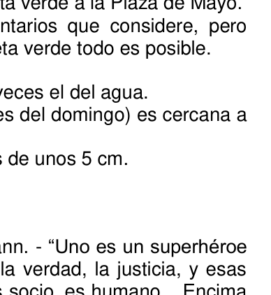
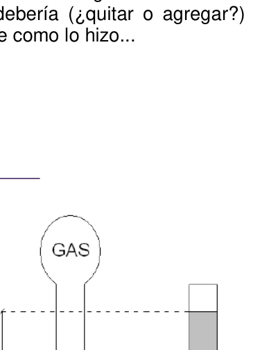
Topic: Thermodynamics, Fluid Mechanics Metodi: First Law of Thermodynamics, Hydrostatic Equilibrium, Ideal Gas Law Competenze: Physical Reasoning, Mathematical Modeling Objects: Gas, Tube, Manometer, Piston Fonte: Testo (PDF) — p.3
PT45. Istituto privato Luis A. - Hoorgo Città di Buenos Aires.
Dispone del dispositivo rappresentato nella figura 1, costituito da un tubo in U sezione costante S = 1dm2 su entrambi i rami, riempimento con mercurio liquido. Al termine del ramo sinistro si trova allegato un bulbo indeformabile che contiene un mol di gas ideale monoatomo. (Cv = 3/2R, Cp= 5/2R). L’altra estremità è il Il tubo è aperto, essendo la pressione esterna di un’atmosfera. L’intero sistema è in equilibrio termico con ambiente, a una temperatura T0 = 273 K
a) Sapendo che la differenza di altezza iniziale (h0) è di 30 cm, trovare la la pressione (P0) e il volume (V0) del gas.
Poi, si colloca sulla branca destra un peso di massa m sconosciuta (di spessore che si incastrano perfettamente. con il tubo e scivola senza raschi, evitando la possibilità di una fuga di Mercurio.
In questo modo si ottiene immediatamente la situazione della Figura 2.
Come el processo si verifica Rapidamente, consideriamo adiabaticamente.
Sapendo che la differenza h1 è di 50 cm, calcoli:
b) la massa m
c) la temperatura che il gas acquista in questo processo (T1)
Dopo un po’ si osserva che il sistema raggiunge di nuovo il equilibrio termico con l’ambiente, tornando alla temperatura iniziale (T0). Rimane la situazione di cui alla figura 3.
Figura 1 Figura 2
OAF 2012 - 73 Calcolare:
d) la differenza h2
e) variazione dell’energia interna del gas passando dalla situazione di figura 2 a la 3.
Per tutti i calcoli, supponiamo che:
- La lunghezza dei rami è la sufficientemente alta da permettere al Mercurio non entra mai nel bulbo. Il gas e il mercurio scambiano calore in modo dispregiato. La quantità di vapore di mercurio all’interno del
- Il bulbo.
Datati: G = 9,8 m/s2 R = 0,082 atm.l/mol.K = 8,314 J/mol.K 1atm = 101300 Pa Densità del mercurio = 13500 Kg/m3
Topic: Thermodynamics, Fluid Mechanics Metodi: First Law of Thermodynamics, Hydrostatic Equilibrium, Ideal Gas Law Competenze: Physical Reasoning, Mathematical Modeling Objects: Gas, Tube, Manometer, Piston Fonte: Testo (PDF) — p.3
PT45. Louis A. Private Institute I ‘m not . City of Buenos Aires.
The device represented in the Figure 1, formed by a tube in U section S constant = 1dm2 on both branches, filling with liquid mercury. At the end of the left branch is Finds attached an indeformable bulb that It contains one mole of an ideal monoatomic gas. (Cv = 3/2R, Cp= 5/2R). At the other end of the line The tube is open, the external pressure being It’s an atmosphere. The whole system is in thermal equilibrium with the environment, at a temperature T0 = 273 K
(a) Knowing that the initial height difference (h0) is 30 cm, find the pressure (P0) and volume (V0) of the gas.
Then, it is placed on the right branch a weight of unknown mass (thickness) It ‘s a perfectly fitting . with the tube and slides without rubbing, avoiding the possibility of an escape of The mercury.
The situation of the The following table shows the following:
Like el process It happens . quickly, Let’s consider it adiabatic.
Knowing that the h1 difference is 50 cm, calculate:
(b) the mass m
(c) the temperature acquired by the gas in this process (T1)
After a while, it is observed that the system reaches again the thermal balance with the environment, returning to the starting temperature (T0). The situation in Figure 3 remains.
Figure 1 Figure 2
The following is the list of the Member States’ financial statements: Calculation:
(d) the difference h2
(e) the change in the internal energy of the gas the change from the situation in Figure 2 to la 3.
For all calculations assume that:
- The length of the branches is the High enough for the Mercury never gets into the bulb. The heat exchange between gas and mercury is despicable.
- The amount of mercury vapor within the I’m going to tell you.
The data: The following conditions shall apply: 1atm = 101300 Pa Mercury density = 13500 Kg/m3
Topic: Thermodynamics, Fluid Mechanics Metodi: First Law of Thermodynamics, Hydrostatic Equilibrium, Ideal Gas Law Competenze: Physical Reasoning, Mathematical Modeling Objects: Gas, Tube, Manometer, Piston Fonte: Testo (PDF) — p.3
PT46. Instituto Privado Luis A. Huergo Ciudad de Buenos Aires.
Un cubo de arista l = 50 cm y masa m = 10 kg se encuentra en un tanque con
agua.
a) ¿Qué profundidad alcanza la cara inferior del cubo en el equilibrio?
Luego se suelta desde el reposo una pesa de masa M = 50 kg sobre la cara
superior del cubo.
b) ¿Cuál será la profundidad en la cual se alcanza el punto de equilibrio de
fuerzas?
c) Hallar la profundidad máxima que alcanza el cubo.
d) Hallar el valor de frecuencia angular (ω) con el que oscilará el cubo.
e) Plantear la ecuación horaria de un punto situado en la base del cubo,
tomando como tiempo inicial el instante en el que se alcanza el
equilibrio de fuerzas por primera vez y, como cero de posición, el punto
de equilibrio.
Recuerde que en este caso existe una energía potencial asociada al empuje
dada por la expresión
E = ρagua. l2. d2/2
Donde ρagua es el peso específico del agua, l la longitud del cubo y d la
profundidad a la que se encuentra sumergido el mismo.
Datos: g = 9,8 m/s2 Densidad del agua = 1000 kg/m3
Topic: Fluid Mechanics, Oscillations & Waves Metodi: Hydrostatic Equilibrium, Simple Harmonic Motion Analysis, Free-Body Diagram Competenze: Physical Reasoning, Mathematical Modeling Objects: Block, Container Fonte: Testo (PDF) — p.3
PT46. Istituto privato Luis A. - Hoorgo Città di Buenos Aires.
Un cubo di bordo l = 50 cm e massa m = 10 kg si trova in un serbatoio con acqua. a) A che profondità si raggiunge la parte inferiore del cubo in equilibrio?
Poi si rilascia dal riposo un peso di massa M = 50 kg sul viso superiore al cubo. b) Qual è la profondità in cui si raggiunge il punto di equilibrio di Forze? c) Indicare la profondità massima raggiunta dal cubo. d) Determinare il valore di frequenza angolare (ω) con cui il cubo oscillerà. e) Sulla base del cubo si può presentare l’equazione oraria di un punto, Prendendo come tempo iniziale l’istante in cui si raggiunge il equilibrio di forze per la prima volta e, come zero di posizione, il punto di equilibrio.
Ricorda che in questo caso c’ è un’ energia potenziale associata al push. data dall’espressione E = ρacqua. l2. d2/2 L’acqua è il peso specifico dell’acqua, l’altezza del cubo e l’altezza del cubo. profondità in cui si trova immerso.
Dati: g = 9,8 m/s2 Densità dell’acqua = 1000 kg/m3
Topic: Fluid Mechanics, Oscillations & Waves Metodi: Hydrostatic Equilibrium, Simple Harmonic Motion Analysis, Free-Body Diagram Competenze: Physical Reasoning, Mathematical Modeling Objects: Block, Container Fonte: Testo (PDF) — p.3
PT46. Louis A. Private Institute I ‘m not . City of Buenos Aires.
A cube of edge l = 50 cm and mass m = 10 kg is in a tank with
- What? (a) How deep does the bottom face of the cube reach in equilibrium?
Then a mass of M = 50 kg is released from the rest on the face. above the cube. (b) What is the depth at which the equilibrium point of forces? (c) Find the maximum depth to which the cube reaches. (d) Find the angular frequency value (ω) at which the cube will oscillate. (e) To present the time equation of a point at the base of the cube, The time taken as initial time is the moment when the force balance for the first time and, as position zero, the point The balance.
Remember that in this case there is a potential energy associated with the push. given by the expression E = water. l2. d2/2 Where ρwater is the specific weight of the water, l the length of the cube and d the depth to which it is immersed.
Data: g = 9,8 m/s2 Density of water = 1000 kg/m3
Topic: Fluid Mechanics, Oscillations & Waves Metodi: Hydrostatic Equilibrium, Simple Harmonic Motion Analysis, Free-Body Diagram Competenze: Physical Reasoning, Mathematical Modeling Objects: Block, Container Fonte: Testo (PDF) — p.3
PT47. Instituto Privado Luis A. Huergo Ciudad de Buenos Aires.
Sobre el fin del mundo.
Consideremos el sistema formado por la luna orbitando alrededor de la tierra.
Para simplificar los cálculos supongamos que la trayectoria descripta por la luna
es perfectamente circular, tardando 27 días en dar una vuelta completa.
Figura 3
OAF 2012 - 74
Calcular:
a) La distancia entre la tierra y la luna.
b) La velocidad tangencial de la luna.
Un asteroide de masa M = 5.1020 kg y velocidad V = 5000 m/s colisiona
frontalmente con la luna de forma totalmente plástica.
Calcular:
c) El periodo de rotación de la luna luego del choque
d) Cual será el radio de la nueva órbita.
e) La energía disipada en el choque
Datos:
Masa de la tierra = 5,97.1024 kg
Constante de gravitación universal G = 6,67.10-11 Nm2/kg2
Masa de la luna = 7,349.1022 kg
Topic: Gravitation, Conservation of Momentum Metodi: Newton’s Law of Gravitation, Conservation of Momentum, Kepler’s Laws Competenze: Physical Reasoning, Mathematical Modeling Objects: Planet, Satellite Fonte: Testo (PDF) — p.3
PT47. Istituto privato Luis A. - Hoorgo Città di Buenos Aires.
- Sul fine del mondo. Consideriamo il sistema formato dalla luna che orbita intorno alla Terra. Per semplificare i calcoli supponiamo che la traiettoria descritta dalla luna È perfettamente circolare, richiede 27 giorni per girare completamente. Figura 3
OAF 2012 - 74 Calcolare: a) La distanza tra la Terra e la Luna. b) La velocità tangenziale della luna.
Un asteroide di massa M = 5.1020 kg e velocità V = 5000 m/s colpisce La luna è completamente plastica. Calcolare: (c) Il periodo di rotazione della luna dopo l’urto d) Qual è il radiale della nuova orbita. e) L’energia dissipata in shock
Datati: Massa della terra = 5,97,1024 kg Costante di gravità universale G = 6,67.10-11 Nm2/kg2 Massa della luna = 7.349.1022 kg
Topic: Gravitation, Conservation of Momentum Metodi: Newton’s Law of Gravitation, Conservation of Momentum, Kepler’s Laws Competenze: Physical Reasoning, Mathematical Modeling Objects: Planet, Satellite Fonte: Testo (PDF) — p.3
PT47. Louis A. Private Institute I ‘m not . City of Buenos Aires.
About the end of the world. Consider the system formed by the moon orbiting the earth. To simplify the calculations let ‘s assume the path described by the moon . It’s perfectly circular, taking 27 days to complete a full circle. Figure 3
The following is the list of the Member States’ financial statements: Calculation: (a) The distance between the earth and the moon. (b) The tangential velocity of the moon.
An asteroid with a mass of M = 5,1020 kg and a velocity of V = 5000 m/s collides And the moon is completely plastic. Calculation: (c) The period of rotation of the moon after the impact. (d) What will be the radius of the new orbit? e) Energy dissipated in the shock
The data: The mass of the land is 5,97,1024 kg The following shall be added to the list of the following: The mass of the moon is 7,349,1022 kg.
Topic: Gravitation, Conservation of Momentum Metodi: Newton’s Law of Gravitation, Conservation of Momentum, Kepler’s Laws Competenze: Physical Reasoning, Mathematical Modeling Objects: Planet, Satellite Fonte: Testo (PDF) — p.3
PT48. Escuela de Educación Técnica Nro. 1 General Savio Navarro, Buenos Aires.
Un cuerpo de 5kg está apoyado en un plano inclinado 37° y esta sostenido en un resorte como indica la figura. Sabiendo que el resorte esta estirado 4 cm (consideren despreciable el rozamiento) a- Confeccionar el diagrama de cuerpo libre para el cuerpo apoyado en el plano. b- Calcular la intensidad de la componente en el plano de la fuerza peso y la intensidad de la normal. c- Calcular la intensidad de la fuerza elástica y la constante del resorte.
Topic: Newtonian Mechanics Metodi: Free-Body Diagram, Hooke’s Law, Vector Decomposition Competenze: Physical Reasoning Objects: Spring, Inclined Plane, Block Fonte: Testo (PDF) — p.3
PT48. Scuola di istruzione tecnica n.o. 1 Generale Savio Navarro, Buenos Aires.
Un corpo di 5 kg è appoggiato su un piano inclinato 37° e è sostenuto su un la primavera come indicato nella figura. Sapendo che la primavera è estesa 4 cm (considerano scortese la ruggine) a- Confezionare il diagramma di corpo libero per il corpo appoggiato al piano. b- Calcolare l’intensità del componente sul piano della forza di peso e l’intensità della normalità. c- Calcolare l’intensità della forza e la costante della resorsa.
Topic: Newtonian Mechanics Metodi: Free-Body Diagram, Hooke’s Law, Vector Decomposition Competenze: Physical Reasoning Objects: Spring, Inclined Plane, Block Fonte: Testo (PDF) — p.3
PT48. School of Technical Education No. 1 General Savio I’m from Navarro, Buenos Aires.
A 5 kg body is supported on an inclined plane 37° and is held on a spring as shown in the figure. Knowing the spring is stretched 4 cm (They consider it contemptible to rub) a- Make the free body diagram for the body supported on the It’s flat. b- Calculate the component intensity in the plane of the force weight and The intensity of the normal. (c) Calculate the strength of the elastic force and the spring constant.
Topic: Newtonian Mechanics Metodi: Free-Body Diagram, Hooke’s Law, Vector Decomposition Competenze: Physical Reasoning Objects: Spring, Inclined Plane, Block Fonte: Testo (PDF) — p.3
PT49. Escuela de Educación Técnica Nro. 1 General Savio Navarro, Buenos Aires.
a- Calcular hasta que volumen se dilato un gas ideal que realizo un trabajo de 5000 J a presión constante de 2 atm, si su volumen inicial era de 3 litros. b- Hallar la E teniendo en cuenta que el sistema absorbe 300 cal.
Topic: Thermodynamics Metodi: First Law of Thermodynamics, Ideal Gas Law Competenze: Physical Reasoning Objects: Gas Fonte: Testo (PDF) — p.3
PT49. Scuola di istruzione tecnica n.o. 1 Generale Savio Navarro, Buenos Aires.
a- Calcolare fino a che volume si dila un gas ideale che svolge un lavoro di 5000 J a pressione costante di 2 atm, se il suo volume iniziale era di 3 litri. b- Trovare l’E considerando che il sistema assorbe 300 cal.
Topic: Thermodynamics Metodi: First Law of Thermodynamics, Ideal Gas Law Competenze: Physical Reasoning Objects: Gas Fonte: Testo (PDF) — p.3
PT49. School of Technical Education No. 1 General Savio I’m from Navarro, Buenos Aires.
a- Calculate until volume is delayed an ideal gas performing a task 5000 J at constant pressure of 2 atm, if its initial volume was 3 liters. b- Find the E taking into account that the system absorbs 300 cal.
Topic: Thermodynamics Metodi: First Law of Thermodynamics, Ideal Gas Law Competenze: Physical Reasoning Objects: Gas Fonte: Testo (PDF) — p.3
PT50. Escuela de Educación Técnica Nro. 1 General Savio Navarro, Buenos Aires.
Un objeto de masa 0,01kg se desplaza con un campo de 0,1T a 100 m/s
formando un ángulo de 17°. Si la carga es de 0,001 C,
a- Hallar el módulo de la fuerza magnética.
b- Hallar la aceleración que el cuerpo experimenta.
Topic: Magnetism Metodi: Lorentz Force Analysis Competenze: Physical Reasoning Objects: Particle Beam Fonte: Testo (PDF) — p.3
PT50. Scuola di istruzione tecnica n.o. 1 Generale Savio Navarro, Buenos Aires.
Un oggetto di massa di 0,01 kg si sposta con un campo di 0,1T a 100 m/s formando un angolo di 17°. Se la carica è di 0,001 C, a- Trovare il modulo della forza magnetica. b- Trovare l’accelerazione che il corpo prova.
Topic: Magnetism Metodi: Lorentz Force Analysis Competenze: Physical Reasoning Objects: Particle Beam Fonte: Testo (PDF) — p.3
PT50. School of Technical Education No. 1 General Savio I’m from Navarro, Buenos Aires.
An object of mass of 0,01kg moves with a field of 0,1T at 100 m/s a height of 17°. If the load is 0,001 C, a- Find the magnetic force module. b- Find the acceleration the body is experiencing.
Topic: Magnetism Metodi: Lorentz Force Analysis Competenze: Physical Reasoning Objects: Particle Beam Fonte: Testo (PDF) — p.3
PT51. Instituto Jesús María Ciudad de Córdoba.
En un recipiente se colocan 200 g de agua a temperatura ambiente, que es de 15 ºC . Luego se colocan 80 g de hielo a 0 ºC y se tapa el recipiente. La temperatura de equilibrio luego de cierto tiempo es de 10 ºC. a) Calcule el equivalente agua del recipiente.
OAF 2012 - 75
b) Determine el volumen final de toda el agua a la temperatura de
equilibrio.
c) Si luego se deja la mezcla un tiempo mucho mayor, con el recipiente
destapado. ¿ Cuál será el nuevo volumen?
Ce del agua = 1 cal/g.ºC Calor de Fusión del hielo = 80 cal/g
Coef dilatación del agua = 0,001 1/ºC
Topic: Thermodynamics Metodi: Conservation of Energy Competenze: Physical Reasoning Objects: Calorimeter Fonte: Testo (PDF) — p.3
PT51. Istituto Gesù Maria Città di Córdoba.
In un recipiente si mettono 200 g di acqua a temperatura ambiente, che è di 15 ºC . Poi si inseriscono 80 g di ghiaccio a 0 oC e si copre il recipiente. La temperatura di equilibrio dopo un certo periodo è di 10 oC. a) Calcolare l’equivalente di acqua del recipiente.
OAF 2012 - 75 b) Determina il volume finale di tutta l’acqua a temperatura di equilibrio. c) Se poi si lascia la miscela per un tempo molto più lungo, con il recipiente
- Scoppiato. Qual sarà il nuovo volume? C dell’acqua = 1 cal/g.oC Calore di fusione del ghiaccio = 80 cal/g Coef dilatazione dell’acqua = 0,001 1/oC
Topic: Thermodynamics Metodi: Conservation of Energy Competenze: Physical Reasoning Objects: Calorimeter Fonte: Testo (PDF) — p.3
PT51. Jesus Mary Institute The city of Cordoba.
In a container 200 g of water is placed at room temperature, which is 15 ºC . Then 80 g of ice at 0 oC is placed and the container is sealed. The equilibrium temperature after a certain time is 10 oC. (a) Calculate the water equivalent of the container.
The following points shall be added: (b) Determine the final volume of all water at the temperature of The balance. (c) If the mixture is then left for a much longer time, with the container It’s uncovered. What’s the new volume? The water content of the ice is equal to 1 cal/g.oC. Coefficient of water dilation = 0,001 1/oC
Topic: Thermodynamics Metodi: Conservation of Energy Competenze: Physical Reasoning Objects: Calorimeter Fonte: Testo (PDF) — p.3
PT52. Instituto Jesús María Ciudad de Córdoba.
Tres cargas eléctricas se encuentran a lo largo de un eje horizontal. La carga positiva q1= 6 uC se encuentra en el extremo izquierdo, y la carga positiva q2 = 15 uC se encuentra en el extremo derecho, a 2,00 m de q1. Se desea ubicar una carga q3 sobre el mismo eje, de manera que la fuerza resultante sobre ella sea cero. a) Determine la distancia a que deberá ubicarse q3 con respecto a q1. b) Responda : ¿ qué signo debería tener q3? Justifique.
Topic: Electrostatics Metodi: Coulomb’s Law, Superposition Principle Competenze: Physical Reasoning Objects: Point Charge Fonte: Testo (PDF) — p.3
PT52. Istituto Gesù Maria Città di Córdoba.
Tre cariche elettriche si trovano lungo un asse orizzontale. La carica positiva q1=6 uC è all’estremo sinistro, e la carica Q2 positivo = 15 uC è all’estremità destra, a 2,00 m da q1. Si desidera posizionare una carica q3 sullo stesso asse, in modo che la forza risultante su di essa è zero. a) Determina la distanza da cui si deve trovare q3 rispetto a q1. b) Risposta: che segno dovrebbe avere q3? giustifica.
Topic: Electrostatics Metodi: Coulomb’s Law, Superposition Principle Competenze: Physical Reasoning Objects: Point Charge Fonte: Testo (PDF) — p.3
PT52. Jesus Mary Institute The city of Cordoba.
Three electrical charges are located along a horizontal axis. The positive charge q1=6 uC is at the left end, and the charge positive q2 = 15 uC is at the far right, 2,00 m from q1. You want to place a q3 charge on the same axis, so that the force resulting on it is zero. (a) Determine the distance q3 must be located from q1. (b) Answer: What should q3 have? You justify it.
Topic: Electrostatics Metodi: Coulomb’s Law, Superposition Principle Competenze: Physical Reasoning Objects: Point Charge Fonte: Testo (PDF) — p.3
PT53. Instituto Jesús María Ciudad de Córdoba.
Una esfera rígida, cuyo volumen es 100 cm3 y está confeccionada con un material cuya densidad es 0,70 g/cm3, se encuentra sumergida completamente en un tanque de agua a 8,00 m de profundidad, atada al fondo. Se la suelta. Desprecie las fuerzas de fricción. a) Realice el diagrama de cuerpo libre antes y después de soltarla. b) Determine el valor del empuje ascendente del agua sobre la esfera. c) Determine el valor del peso de la esfera. d) Determine el valor de la fuerza resultante sobre la esfera después que es soltada. e) ¿ Cuál es la dirección, sentido y magnitud de la aceleración que la esfera adquiere? Dicha aceleración, ¿ irá variando a medida que la esfera asciende? Justifique. f) ¿Cuánto tiempo demorará en llegar a la superficie? g) Determine el valor de la energía cinética de la esfera al llegar a la superficie. h) Despreciando otras consideraciones, ¿ qué altura máxima alcanzaría el centro de la esfera con respecto a la superficie?
Topic: Fluid Mechanics, Newtonian Mechanics Metodi: Hydrostatic Equilibrium, Free-Body Diagram, Kinematic Equations Competenze: Physical Reasoning, Mathematical Modeling Objects: Sphere, Container Fonte: Testo (PDF) — p.3
PT53. Istituto Gesù Maria Città di Córdoba.
Una sfera rigida, di 100 cm3 di volume, confezionata con un materiale di densità di 0,70 g/cm3, completamente immerso in un serbatoio di acqua a 8,00 metri di profondità, legato al fondo. La lascia andare. Sprezzate le forze di attrito. a) Realizzare il diagramma del corpo libero prima e dopo il rilascio. b) Determina il valore della spinta ascendente dell’acqua sulla sfera. c) Determina il valore del peso della sfera. d) Determina il valore della forza risultante sulla sfera dopo che È rilasciata. (e) Qual è la direzione, il senso e la grandezza dell’accelerazione che la
- l’esfera acquista? L’accelerazione sarà variabile a seconda che il La sfera si alza? giustifica. f) Quanto tempo ci vorrà per arrivare alla superficie? g) Determina il valore dell’energia cinetica della sfera al raggiungimento della superficie. h) A dispetto di altre considerazioni, quale sarebbe la massima altezza raggiunta dal Il centro della sfera rispetto alla superficie?
Topic: Fluid Mechanics, Newtonian Mechanics Metodi: Hydrostatic Equilibrium, Free-Body Diagram, Kinematic Equations Competenze: Physical Reasoning, Mathematical Modeling Objects: Sphere, Container Fonte: Testo (PDF) — p.3
PT53. Jesus Mary Institute The city of Cordoba.
A rigid sphere, 100 cm3 in volume and made of a material with a density of 0,70 g/cm3, is completely submerged in a water tank at a depth of 8,00 m, tied to the bottom. She’s letting go. You despise the forces of friction. (a) Draw the free body diagram before and after release. (b) Determine the value of the upward push of water over the sphere. (c) Determine the value of the weight of the sphere. (d) Determine the value of the resulting force on the sphere after It’s released. (e) What is the direction, direction and magnitude of the acceleration that the The sphere you’re buying? This acceleration will vary as the The sphere rises? You justify it. (f) How long will it take to reach the surface? (g) Determine the value of the kinetic energy of the sphere at the time of arrival at the surface. (h) Other considerations aside, what would be the maximum height for the The center of the sphere with respect to the surface?
Topic: Fluid Mechanics, Newtonian Mechanics Metodi: Hydrostatic Equilibrium, Free-Body Diagram, Kinematic Equations Competenze: Physical Reasoning, Mathematical Modeling Objects: Sphere, Container Fonte: Testo (PDF) — p.3
PT54. Colegio Santísimo Rosario Monteros, Tucumán.
Un cuerpo sólido, de gran densidad, está quieto en el punto A.
En un instante dado comienza a actuar la fuerza constante F = 20 N que le
otorga una aceleración a = 1,25 m/s2 hasta el punto B, recorriendo una distancia
e ab = 2,5 m, sin roce, μ1= 0. A continuación, el cuerpo recorre el plano
descendente BC, de altura hbc = 2,5 m, en el que μ2= 0,2 (no tener en cuenta el
efecto de los codos B y C, suponiendo que el codo B es recorrido sin que el
cuerpo “vuele”.
El tramo horizontal CD de longitud e cd es tal que permite que por rozamiento
(μ3= 0,25) la velocidad en D sea el 90% de la velocidad en C.
OAF 2012 - 76 El cuerpo impacta finalmente contra el resorte comprimiéndolo 0,5 m, hasta la posición E, siendo para este tramo, μ4= 0,3. Calcular:
- La masa del cuerpo.
- Velocidad en B
- Energía mecánica en B
- Trabajo de rozamiento en el tramo BC
- Velocidad en C
- Espacio e cd
- Trabajo de rozamiento en el tramo DE
- Constante elástica del resorte K Por la elasticidad del resorte, el cuerpo es empujado hacia atrás, para este efecto, Calcular:
- e cd Velocidad con que pasa el cuerpo de nuevo por el punto D.
Topic: Conservation of Energy, Newtonian Mechanics Metodi: Energy Conservation Method, Free-Body Diagram, Hooke’s Law Competenze: Physical Reasoning, Mathematical Modeling Objects: Spring, Inclined Plane, Block Fonte: Testo (PDF) — p.3
PT54. “Santa Rosario” Monteros, Tucumán.
Un corpo solido, di grande densità, è fermo al punto A. In un istante dato inizia a agire la forza costante F = 20 N che le accelerazione a = 1,25 m/s2 fino al punto B, percorrendo una distanza e ab = 2,5 m, senza rottura, μ1 = 0. Poi il corpo percorre il piano. descendente BC, di altezza hbc = 2,5 m, in cui μ2 = 0,2 (non tenere conto della L’effetto degli angoli B e C, supponendo che l’angolo B sia percorso senza che il Il corpo è volente. Il tratto orizzontale CD di lunghezza e cd è tale da consentire per macchia (μ3=0.25) la velocità in D è il 90% della velocità in C.
OAF 2012 - 76 Il corpo impatta infine contro la resorgenza compresendola a 0,5 m, fino alla posizione E, essendo per questo tratto, μ4 = 0,3. Calcolare:
- La massa del corpo.
- Velocità in B
- Energia meccanica in B
- Lavoro di rasatura nel tratto BC
- Velocità in C
- Spazio e cd
- Lavoro di rasatura nel tratto DE
- Costante elastica della sorgente K Per l’elasticità della primavera, il corpo viene spinto indietro, per questo. effetto, Calcolare:
- e cd Velocità con cui il corpo passa di nuovo attraverso il punto D.
Topic: Conservation of Energy, Newtonian Mechanics Metodi: Energy Conservation Method, Free-Body Diagram, Hooke’s Law Competenze: Physical Reasoning, Mathematical Modeling Objects: Spring, Inclined Plane, Block Fonte: Testo (PDF) — p.3
PT54. Holy Rosary College . Monteros, Tucumán. What is it?
A solid body, of high density, is still at point A. At a given instant the constant force F = 20 N starts to act. gives an acceleration of a = 1,25 m/s2 to point B, travelling a distance and ab = 2,5 m, without brushing, μ1 = 0. Then the body goes through the plane. descending BC, hbc = 2,5 m, where μ2 = 0,2 (not taking into account the The effect of elbows B and C, assuming that elbow B is passed without the I want to see you. The horizontal CD length and cd section is such that by rubbing it (μ3=0.25) the velocity in D is 90% of the velocity in C.
The following is the list of the Member States’ financial statements: The body finally impacts the spring by compressing it 0.5 m, until the spring is position E, being for this section μ4 = 0,3. Calculation:
- Body mass.
- Speed in B
- Mechanical energy in B
- Rubbing work on the BC section
- Speed in C
- Space and cd
- Rubbing work in the DE section
- The spring elastic constant K Because of the elasticity of the spring, the body is pushed backwards, for this. effect, Calculation:
- and cd Speed at which the body passes back through point D.
Topic: Conservation of Energy, Newtonian Mechanics Metodi: Energy Conservation Method, Free-Body Diagram, Hooke’s Law Competenze: Physical Reasoning, Mathematical Modeling Objects: Spring, Inclined Plane, Block Fonte: Testo (PDF) — p.3
PT55. Colegio Santísimo Rosario Monteros, Tucumán.
Se tiene un recipiente cilíndrico de acero que contiene un gas que puede considerarse ideal cuya masa molar es M = 22 g / mol. El cilindro tiene radios internos y externos cuyos valores son: ri = 15 cm y re = 17 cm respectivamente. La base además, tiene espesor 3 cm y el cilindro tiene una altura H = 50 cm. El cilindro está sellado con un pistón móvil que ajusta perfectamente y todo el sistema se mantiene a la temperatura de 20ºC y a la presión de 1 atm.
- Determine el número de moles del gas dentro del recipiente si el pistón permanece en reposo.
Sobre el pistón se colocan cargas de masa m= 50 kg lentamente, de modo que la temperatura permanece constante. 2) Calcule la variación de volumen del gas en el recipiente, por cada masa que se coloca.
Luego que se colocan 10 cargas, el sistema queda en equilibrio. En tal caso se
conecta una resistencia interna del cilindro a 220 V. La resistencia es de 10 y
entrega en forma de calor el 75 % de la potencia.
3) Determine que altura sube el pistón si se mantiene conectada la
resistencia.
Después de esto, se quitan las cargas, se espera un rato y el cilindro vuelve a su estado inicial. Con el pistón hacia abajo, se sumerge el cilindro en agua aplicando una fuerza constante.
OAF 2012 - 77 4) Si el pistón ha descendido 20 m respecto al nivel de la superficie y si el proceso se hace lentamente, determine el volumen del gas dentro del cilindro.
Cuando se deja de aplicar la fuerza, se observa que el cilindro asciende rápidamente. Puede considerarse que en el gas se produce un proceso de expansión adiabática. En este caso se verifica, en el estado inicial y final, que: p = cte. donde = 1,660. 5) Determinar la temperatura final del gas al llegar a la superficie.
Topic: Thermodynamics, Fluid Mechanics Metodi: Ideal Gas Law, First Law of Thermodynamics, Hydrostatic Equilibrium Competenze: Physical Reasoning, Mathematical Modeling Objects: Gas, Cylinder, Piston Fonte: Testo (PDF) — p.3
PT55. “Santa Rosario” Monteros, Tucumán.
Si ha un recipiente cilindrico di acciaio che contiene un gas che può considerarsi ideale il cui massa molare è M = 22 g / mol. Il cilindro ha i raggi. interni e esterni i cui valori sono: ri = 15 cm e re = 17 cm, rispettivamente. La base ha inoltre 3 cm di spessore e il cilindro ha un’altezza H = 50 cm. Il cilindro è sigillato con un pistone mobile che si adatta perfettamente e tutto il sistema è mantenuto a una temperatura di 20 °C e a una pressione di 1 atm.
- Determina il numero di molli di gas all’interno del recipiente se il pistone rimane in riposo.
Su questo pistone si applicano carichi di massa m= 50 kg lentamente, in modo che la temperatura rimane costante. 2) Calcolare la variazione del volume del gas nel recipiente, per ogni massa che si mette.
Dopo aver posto 10 cariche, il sistema è in equilibrio. In tal caso si connesse una resistenza interna del cilindro a 220 V. La resistenza è di 10 e Il 75% della potenza viene fornito in forma di calore. 3) Determina l’altezza di sale del pistone se il pistone è tenuto connesso. resistenza.
Dopo di che, si toglie i carichi, si aspetta un po’ e il cilindro torna al suo stato iniziale. Con il pistone verso il basso, il cilindro viene immerso in acqua. applicando una forza costante.
OAF 2012 - 77 4) Se il pistone è sceso 20 m rispetto al livello della superficie e se il Il processo si svolge lentamente, determinando il volume del gas all’interno del cilindro.
Quando si smette di applicare la forza, si osserva che il cilindro sale.
- In fretta. Si può considerare che il gas produce un processo di
- Espansione adiabatica. In questo caso, si verifica, in fase iniziale e finale, che: P = cte. dove = 1.660.
- Determinare la temperatura finale del gas quando raggiunge la superficie.
Topic: Thermodynamics, Fluid Mechanics Metodi: Ideal Gas Law, First Law of Thermodynamics, Hydrostatic Equilibrium Competenze: Physical Reasoning, Mathematical Modeling Objects: Gas, Cylinder, Piston Fonte: Testo (PDF) — p.3
PT55. Holy Rosary College . Monteros, Tucumán. What is it?
You have a steel cylindrical container that contains a gas that can be considered ideal with a molar mass of M = 22 g/mol. The cylinder has radii. internal and external values of ri = 15 cm and re = 17 cm respectively. The base is also 3 cm thick and the cylinder is H = 50 cm high. The cylinder is sealed with a moving piston that fits perfectly and all the The system is maintained at a temperature of 20oC and a pressure of 1 atm.
- Determine the number of moles of gas inside the container if the piston He remains at rest.
The piston shall be loaded with mass m= 50 kg slowly so that The temperature remains constant. 2) Calculate the volume change of the gas in the container, per mass It’s a place to put.
After 10 charges are placed, the system is in balance. In this case, connects an internal cylinder resistance to 220 V. The resistance is 10 and It delivers 75% of the power in the form of heat. 3) Determine the height of the piston if the piston is kept connected. resistance.
After this, the loads are removed, you wait a while and the cylinder goes back to its The initial state. With the piston down, the cylinder is submerged in water. applying a constant force.
The following is the list of the countries of the European Union: 4) If the piston has fallen 20 m from the surface level and if the piston is The process is done slowly, determining the volume of gas within the The cylinder.
When the force is stopped, the cylinder is seen to rise.
- I’m going to go quickly. It can be considered that a process of Adiabatic expansion. In this case, it is verified, in the initial and final state, that: p = cte. where is equal to 1,660.
- Determine the final temperature of the gas upon reaching the surface.
Topic: Thermodynamics, Fluid Mechanics Metodi: Ideal Gas Law, First Law of Thermodynamics, Hydrostatic Equilibrium Competenze: Physical Reasoning, Mathematical Modeling Objects: Gas, Cylinder, Piston Fonte: Testo (PDF) — p.3
PT56. Colegio Santísimo Rosario Monteros, Tucumán.
Con el objeto de determinar el calor específico de un metal, se introduce una pieza de 120 g de éste, en un calorímetro de latón que contiene 250 g de agua a 20º C. La temperatura de la muestra en el momento de ser introducida en el agua era de 100º C, y la temperatura de equilibrio que alcanza la mezcla es 27,5º C. a) Calcular el calor específico del metal de la muestra. ¿Qué suposiciones hizo?
Si la masa del recipiente es de 200 g y el calor específico del latón igual a 0,09
cal / g º C,
b) Determine el calor específico de la muestra teniendo en cuenta el calor
absorbido por el recipiente.
c) De acuerdo a la tabla al final del problema, cuál es el metal?
A continuación, sin que el sistema “pierda calor”, se introduce balines de plomo,
cada uno de 2 g, inicialmente a una temperatura de 200 º C, hasta que la
temperatura de equilibrio sea de 35 º C (no se considera el calor absorbido por el
calorímetro).
d) ¿Cuántos balines fue necesario introducir para lograr dicha temperatura
de equilibrio?
Si con la cantidad de calor entregada por dichos balines se utilizara para calentar barras de igual masa y longitud, pero de materiales distintos y cuyas constantes se dan en la tabla: e) ¿Cuál de ellos adquiere mayor temperatura? f) ¿cuál se dilata más?
Material
Calor
específico
Cal/ g º C
Coef. De dilatación
térmica lineal ( ºC –
1)
Calor de Fusión
( cal / g )
Punto
de
Fusión (º C)
Aluminio
0,22
24 x 10 –6
77
659
Plata
0,056
17 x 10 –6
21
961
Oro
0,031
13 x 10 –6
16
1063
Platino
0,032
9 x 10 –6
27
1775
Plomo
0,031
29 x 10 –6
5,8
327
OAF 2012 - 78
Topic: Thermodynamics Metodi: Conservation of Energy Competenze: Physical Reasoning Objects: Calorimeter Fonte: Testo (PDF) — p.3
PT56. “Santa Rosario” Monteros, Tucumán.
Per determinare la temperatura specifica di un metallo, si introduce una 120 g di questo, in un calometro di rame contenente 250 g di acqua a 20º C. La temperatura del campione al momento di essere introdotta nel l’acqua era di 100°C, e la temperatura di equilibrio che raggiunge la miscela è 27,5º C. a) Calcolare la calore specifica del metallo del campione. Che supposizioni
- Ha fatto?
Se la massa del recipiente è di 200 g e il calore specifico del latone è di 0,09 cal / g o C, b) Determina la temperatura specifica del campione tenendo conto della temperatura assorbita dal recipiente. c) Secondo la tabella alla fine del problema, qual è il metallo?
Quindi, senza perdere calore, viene introdotta una balena di piombo. 2 g, inizialmente a una temperatura di 200 o C, fino a che la La temperatura di equilibrio è di 35 °C (non è considerato il calore assorbito dal caloriometro). (d) Quanti baleni sono stati introdotti per raggiungere tale temperatura? di equilibrio?
Se con la quantità di calore fornita da tali balene fosse usata per riscaldare barrette di massa e di lunghezza uguali, ma di materiali diversi e con costanti sono riportati nella tabella: e) Quale di esse acquista la temperatura più alta? f) quale si dilatano di più?
Materiale Calore specifico Cal/ g o C
- Coef. Di dilatazione Calore di calore (C0 )
Calore di fusione (cal / g) Punto de Fusione (o C) Alumini 0,22 24 x 10 –6 77 659
- Silver
0,056
17 x 10 –6
21
961
Oro .
0,031
13 x 10 –6
16
1063
Platino
0,032
9 x 10 –6 27 1775 Pilo 0,031 29 x 10 –6 5,8 327
OAF 2012 - 78
Topic: Thermodynamics Metodi: Conservation of Energy Competenze: Physical Reasoning Objects: Calorimeter Fonte: Testo (PDF) — p.3
PT56. Holy Rosary College . Monteros, Tucumán. What is it?
For the purpose of determining the specific heat of a metal, a 120 g of this, in a brass heat meter containing 250 g of water a 20º C. The temperature of the sample at the time of introduction into the The water was 100 degrees C, and the equilibrium temperature that the mixture reaches is 27,5º C. (a) Calculate the specific heat of the sample metal. What assumptions? Did you?
If the mass of the container is 200 g and the specific heat of the brass is 0.09 cal / g or C, (b) Determine the specific heat of the sample taking into account the heat absorbed by the vessel. (c) According to the table at the end of the problem, what is the metal?
Then, without the system losing heat, lead whale is introduced. Each 2 g, initially at a temperature of 200 or C, until the The temperature of equilibrium is 35 °C (not considered as the heat absorbed by the The heat meter. (d) How many whales were introduced to achieve this temperature? What about balance?
If the amount of heat delivered by these whales were used to heat bars of equal mass and length, but of different materials and having a constant are given in the table: (e) Which of them gets the highest temperature? (f) which one dilates more?
Material
Heat .
specific
Cal/ g or C
Coef, you know what? With dilation
Linear heat ( oC )
1)
Heat of Fusion
(cal / g)
Point
de
Merger (or C)
Aluminium
0,22
24 x 10 –6
77
659
Silver .
0,056
17 x 10 –6
21
961
Gold .
0,031
13 x 10 –6
16
1063
Platinum .
0,032
9 x 10 –6
27
1775
Lead
0,031
29 x 10 –6
5,8
327
The following points shall be added:
Topic: Thermodynamics Metodi: Conservation of Energy Competenze: Physical Reasoning Objects: Calorimeter Fonte: Testo (PDF) — p.3
PT57. Escuela San Andrés Olivos, Buenos Aires.
Mecánica.
- El siguiente gráfico muestra la variación en el tiempo t de la rapidez v de una bola de masa 0.50 kg, arrojada en caída libre desde una altura sobre la superficie de la Tierra.
Fig 1.1
La fuerza de rozamiento del aire no es despreciable. Asuma que la aceleración debido a la gravedad es g = 9.81 m s-2.
a) Diga, sin hacer cuentas, cómo se puede utilizar el gráfico para determinar la distancia caída.
b) (i) En el espacio debajo, dibuje y etiquette flechas para representar las fuerzas en la bola a los 2.0 s.
(ii) Use el gráfico para mostrar que la aceleración a los 2.0 s es aproximadamente 4 m s-2. (iii) Calcule la magnitude de la fuerza de rozamiento del aire sobre la bola a los 2.0 s. (iv) Diga y explique si la fuerza de rozamiento del aire en t = 5.0 s es menor, igual o mayor que la fuerza de rozamiento del aire en t = 2.0 s.
c) Después de 10 s la bola ha caído 190 m. (i) Muestre que la suma de las energías potenciales y cinéticas ha disminuído por 780 J.
-
El calor específico de la bola es 480 J kg-1 K-1. Estime el aumento de temperatura de la bola.
-
Esta pregunta es sobre movimiento circular. Una bola de masa 0.25 kg está agarrada a un hilo y se la hace rotar con rapidez
OAF 2012 - 79 constant v en un círculo horizontal de radio r = 0.33 m. El hilo está agarrado al cielorraso y hace un ángulo de 30° con la vertical.
Fig 2.1
a) Determine la rapidez de rotación de la bola.
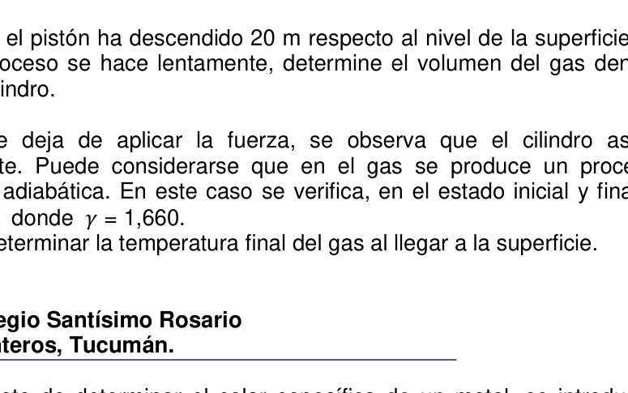
Topic: Newtonian Mechanics, Conservation of Energy Metodi: Kinematic Equations, Free-Body Diagram, Energy Conservation Method Competenze: Physical Reasoning, Experimental Data Analysis Objects: Ball Fonte: Testo (PDF) — p.3
PT57. Scuola San Andrés Olivos, Buenos Aires.
- Meccanica.
- Il grafico seguente mostra la variazione nel tempo t della velocità v di una palla di massa di 0,50 kg, lanciata in caduta libera da una altezza superiore alla la superficie terrestre.
Fig. 1.1
La forza di ruggine dell’aria non è disprezzabile. Supponi che l’accelerazione a causa della gravità è g = 9,81 m s-2.
a) Indicare, senza contare, come si può utilizzare il grafico per determinare la distanza da cui è caduta.
b) (i) Nel spazio sotto, disegna e etichettare le frecce per rappresentare le Forze sulla palla a 2.0 s.
(ii) Utilizzare il grafico per mostrare che l’accelerazione a 2.0 s è circa 4 m s-2. (iii) Calcolare la magnitudine della forza di rottura dell’aria su
- La palla a 2,0 secondi. (iv) Dici e spiega se la forza di ruggine dell’aria a t = 5.0 s è inferiore o uguale o superiore alla forza di ruggine dell’aria a t = 2,0 s.
c) Dopo 10 secondi la palla è caduta 190 m. (i) Indicare che la somma delle energie potenziali e cinetiche ha diminuito di 780 J.
-
Il calore specifico della palla è di 480 J kg-1 K-1. Calcola l’aumento di temperatura della palla.
-
Questa domanda riguarda il movimento circolare. Una palla di massa di 0,25 kg è attaccata a un filo e viene fatta girare rapidamente.
OAF 2012 - 79 V costante in un cerchio orizzontale di radio r = 0,33 m. Il filo è attaccato al Il punto di riferimento è il punto di riferimento di cui al punto 1.
Fig. 2.1
a) Determina la velocità di rotazione della palla.
Topic: Newtonian Mechanics, Conservation of Energy Metodi: Kinematic Equations, Free-Body Diagram, Energy Conservation Method Competenze: Physical Reasoning, Experimental Data Analysis Objects: Ball Fonte: Testo (PDF) — p.3
PT57. St. Andrew ‘s School Olive trees, from Buenos Aires.
I’m a mechanic.
- The following graph shows the time variation t of the velocity v of a ball of mass 0.50 kg, thrown in free fall from a height above the surface of the Earth.
Figure 1.1
The force of the air’s friction is not despicable. Assume that the acceleration Because of gravity, g is equal to 9.81 m s-2.
(a) Tell us, without taking into account the figures, how the chart can be used for Determine the distance to the fall.
(b) (i) In the space below, draw and label arrows to represent the Force on the ball at 2.0 s.
(ii) Use the graph to show that the acceleration at 2.0 s is approximately 4 m s-2. (iii) Calculate the magnitude of the friction force of the air over the ball at 2.0 s. (iv) Say and explain whether the force of friction of air at t = 5.0 s is less, equal to or greater than the force of air friction at t = 2.0 s.
c) After 10 seconds the ball has fallen 190 m. (i) Show that the sum of the potential and kinetic energies has decreased by 780 J.
-
The specific heat of the ball is 480 J kg-1 K-1. Estimate the increase in The temperature of the ball.
-
This question is about circular motion. A ball weighing 0.25 kg is held to a thread and quickly rotated.
The following is the list of the Member States’ financial statements: constant v in a horizontal circle of radius r = 0,33 m. The thread is stuck to the The angle of the lens is 30° with the vertical.
Figure 2.1
(a) Determine the speed of rotation of the ball.
Topic: Newtonian Mechanics, Conservation of Energy Metodi: Kinematic Equations, Free-Body Diagram, Energy Conservation Method Competenze: Physical Reasoning, Experimental Data Analysis Objects: Ball Fonte: Testo (PDF) — p.3
PT58. Escuela San Andrés Olivos, Buenos Aires.
Electromagnetismo.
1.
a) La resistencia A, hecha de un óxido de
metal, tiene una resistencia de 1.5 . LA
Resistencia tiene forma de cilindro de largo
2.2 × 10-2 m y radio 1.2 × 10-3 m. Calcule la
resistividad del óxido de metal.
b) El fabricante de la resistencia en (a)
garantiza su Resistencia dentro del ±10 %
de 1.5 , sólo si la disipación de calor no
excede 1.0W. Calcule la máximo corriente
en la resistencia para la cual la disipación de
calor sea igual a 1.0 W.
d) La resistencia de cada una de las resistencias en
el circuito debajo es de 1.5 con una precisión
de ±10 %.
La pila tiene una fem de 2.0 V y una resistencia interna despreciable. (ii) Determine la mínima y máxima potencia que puede ser disipada en el circuito.
a) Una partícula cargada de masa m y carga +q viaja con velocidad v en el vacío. Ingresa en una región de campo magnético uniforme con densidad de flujo B, como se muestra en Fig. 2.1.
región de campo magnético
camino de la partícula cargada
Fig. 2.1 Fig 1.1
OAF 2012 - 80
El campo magnético es normal a la dirección de movimiento de la partícula. El
camino de la partícula en el campo es un arco de radio r.
(i) Explique por qué el camino de la particular en el campo es el arco de
un círculo.
(ii) Muestre que el radio r está dado por la expresión:
r =mv/Bq
b) Se coloca una fina placa de metal en el campo magnético de (a).
Una segunda carga ingresa en la región del campo magnético. Pierde energía
cinética cuando pasa por la placa. La partícula sigue el camino mostrado en
Fig. 2.2.
región de
campo
magnético
uniforme
Fig. 2.2
(i) En Fig. 2.2, marque con una flecha la dirección de movimiento de la
partícula.
(ii) El camino de la partícula tiene radios diferentes en cada lado de la
placa, de 7.4 cm y 5.7 cm.
Determine el cociente:
Cantidad movimiento final de la partícula / Cantidad de movimiento
inicial de la partícula
Para la partícula cuando pasa por la placa.
Cociente = ……
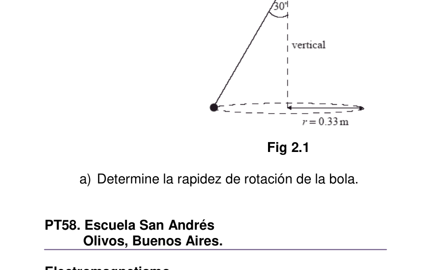
Topic: Circuits, Magnetism Metodi: Kirchhoff’s Laws, Lorentz Force Analysis, Error Propagation Competenze: Physical Reasoning, Mathematical Modeling Objects: Resistor, Battery, Particle Beam Fonte: Testo (PDF) — p.3
PT58. Scuola San Andrés Olivos, Buenos Aires.
L’elettromagnetismo. 1. a) Resistenza A, fatta di un ossido di metallo, ha una resistenza di 1,5 . LA La resistenza ha una forma di cilindro lungo. 2.2 × 10-2 m e radio 1.2 × 10-3 m. Calcola il resistenza dell’ossido di metallo. b) Il fabbricante della resistenza in (a) Garantisce la resistenza entro ±10 % di 1,5 , solo se la dissipazione del calore non di cui al punto 1.6.1. Calcola il massimo corrente la resistenza per la quale la dissipazione di calore è pari a 1.0 W. d) resistenza di ciascuna resistenza in Il circuito sotto è di 1,5 con precisione. de ±10 %.
La pila ha un fem di 2,0 V e una resistenza interna disprezzabile. (ii) Determina la potenza minima e massima che può essere dissipata nel circuito.
a) Una particella carica di massa m e carica +q viaggia a velocità v nel
- Vazio. Entrare in una regione di campo magnetico uniforme con densità di flusso B, come mostrato in Figura 1. 2.1.
Regione di campo magnetico
Il cammino della particella carica
Fig. 2.1 Fig. 1.1
OAF 2012 - 80 Il campo magnetico è normale nella direzione del movimento della particella. El Il percorso della particella nel campo è un arco di radio r. (i) Spiegare perché il percorso del privato nel campo è l’arco di un cerchio. (ii) Mostra che il radio r è dato dalla espressione: r =mv/Bq
b) Si inserisce una fine placca di metallo nel campo magnetico di (a). Una seconda carica entra nella regione del campo magnetico. Perdono energia. Cinetica quando passa attraverso la targa. La particella segue il percorso indicato in Fig. 2.2.
Regione di campo Magnetico Uniforme
Fig. 2.2
(i) In Fig. 2.2, segna con un’arcia la direzione di movimento della particella. (ii) Il percorso della particella ha radii diversi su ogni lato della placca, di 7,4 cm e 5,7 cm.
Determina il coefficiente: Quantità di movimento finale della particella / Quantità di movimento iniziale della particella Per la particella quando passa attraverso la targa. Il tasso di cambio è pari a:
Topic: Circuits, Magnetism Metodi: Kirchhoff’s Laws, Lorentz Force Analysis, Error Propagation Competenze: Physical Reasoning, Mathematical Modeling Objects: Resistor, Battery, Particle Beam Fonte: Testo (PDF) — p.3
PT58. St. Andrew ‘s School Olive trees, from Buenos Aires.
It’s electromagnetism. 1. (a) Resistance A, made from an oxide of metal, has a resistance of 1.5 . LA The resistance is cylindrical in length. 2.2 × 10-2 m and radius 1.2 × 10-3 m. Calculate the Resistivity of metal oxide. (b) The manufacturer of the resistance in (a) It guarantees its resistance within ± 10% 1.5 , only if the heat dissipation does not exceeds 1.0W. Calculate the maximum current in the resistance for which the dissipation of heat is equal to 1.0 W. (d) The resistance of each resistance in The circuit below is 1.5 with precision. de ±10 %.
The battery has a 2.0 V fem and a despicable internal resistance. (ii) Determine the minimum and maximum power that can be dissipated in the circuit.
(a) A charged particle of mass m and charge +q travels at speed v in the It’s empty. Enter a uniform magnetic field region with The flow density B, as shown in Fig. 2.1.
magnetic field region
The way to the Charged particle
Fig. 2.1 Figure 1.1
The following points shall be added: The magnetic field is normal to the direction of the particle’s motion. El The path of the particle in the field is a r-ray arc. (i) Explain why the particular’s path in the field is the arc of a circle. (ii) Show that the radius r is given by the expression: r =mv/Bq
(b) A thin metal plate is placed in the magnetic field of (a). A second charge enters the magnetic field region. It ‘s losing energy . kinetic when it passes through the plate. The particle follows the path shown in Fig. 2.2.
region of field Magnetic Uniforms
Fig. 2.2
(i) In Fig. 2.2, mark with an arrow the direction of movement of the The particle. (ii) The particle path has different radii on each side of the Plates, of a width of 7,4 cm and 5,7 cm
Determine the coefficient: Final particle motion quantity / Movement quantity The initial particle For the particle when it passes through the plate. The amount of the aid shall be calculated on the basis of the following:
Topic: Circuits, Magnetism Metodi: Kirchhoff’s Laws, Lorentz Force Analysis, Error Propagation Competenze: Physical Reasoning, Mathematical Modeling Objects: Resistor, Battery, Particle Beam Fonte: Testo (PDF) — p.3
PT59. Escuela San Andrés Olivos, Buenos Aires.
Termodinámica.
- Esta pregunta es sobre el calentamiento de un líquido.
a) Sugiera por qué, en términos de un modelo molecular, la energía
asociada al derretimiento es menor que la asociada a la ebullición.
b) Se caliente leche usando vapor de agua en un vaso hasta que hierve.
Mientras se enfría, algo de la leche se evapora.
(i) Distinga entre evaporación y ebullición.
(ii) El vaso contiene 0.30 kg de leche a una temperatura inicial de 18 °C.
Estime la mínima masa de vapor necesaria para calentar la lecha a
80 °C. Calor latente de vaporización del agua= 2.3 × 106 J kg-1
OAF 2012 - 81 Calor específico del agua = 4200 J kg-1 K-1 Calor específico de la leche = 3800 J kg-1 K-1
- Esta pregunta es sobre termodinámica. El diagrama P–V muestra la expansion de una masa fija de un gas ideal, desde el estado A al estado B.
Fig 2.1
La temperatura del gas en el estado A es 400 K.
a) Calcule la temperatura del gas en el estado B.
b) (i) Calcule el trabajo hecho por el gas en expandirse del estado A al
estado B.
(ii) Determine la cantidad de energía térmica transferida durante la
expansión del estado A al estado B.
c) El gas es comprimido isotérmicamente desde el estado B de vuelta al
estado A.
(i) Usando el diagrama P–V de arriba, dibuje la variación de presión en
función del volumen para compresión isotérmica.
(ii) Diga y explique si la magnitud de la energía transferida en este caso
sería menor, igual o mayor a la energía transferida en (b)(ii).
- Esta pregunta es sobre paneles solares.
a) Un pueblo consiste en 120 casas. Se propone la utilización de paneles
solares para proveer de agua caliente a cada casa.
Los siguientes datos están disponibles.
Potencia promedio necesaria por casa para calentar agua = 3.0 kW Intensidad solar promedio por superficie = 650 W m-2 Eficiencia de la conversión de energía del panel solar = 18 % Calcule la superficie mínima de los paneles solares para proveer de toda la potencia necesaria para calentar agua.
Topic: Thermodynamics Metodi: First Law of Thermodynamics, Ideal Gas Law, Thermodynamic Cycle Analysis Competenze: Physical Reasoning, Mathematical Modeling Objects: Gas Fonte: Testo (PDF) — p.3
PT59. Scuola San Andrés Olivos, Buenos Aires.
Termodinamica.
- Questa domanda riguarda il riscaldamento di un liquido. a) Suggerisce perché, in termini di modello molecolare, l’energia la fonte è inferiore a quella dell’ebollizione. b) Il latte viene riscaldato con vapore d’acqua in un bicchiere fino a che non si ferve. Mentre si raffredda, parte del latte evapora. (i) Distingue tra evaporazione e ebollizione. (ii) Il bicchiere contiene 0,30 kg di latte ad una temperatura iniziale di 18 °C. Calcola la massa minima di vapore necessaria per riscaldare il latte a 80 °C. Calore latente di vaporizzazione dell’acqua= 2.3 × 106 J kg-1
OAF 2012 - 81 Calore specifico dell’acqua = 4200 J kg-1 K-1 Calore specifico del latte = 3800 J kg-1 K-1
- Questa domanda è sulla termodinamica. Il diagramma PV mostra l’espansione di una massa fissa di un gas ideale, da lo stato A allo stato B.
Fig. 2.1
La temperatura del gas nello stato A è di 400 K. a) Calcolare la temperatura del gas nello stato B. b) (i) Calcolare il lavoro fatto dal gas in espansione dallo stato A al stato B. (ii) Determina la quantità di energia termica trasferita durante l’esercizio. espansione dallo stato A allo stato B. c) Il gas viene compresso isotermicamente dallo stato B al ritorno al stato A. (i) Usando il diagramma PV sopra, disegna la variazione di pressione in funzione del volume per compressione isotermica. (ii) Indicare e spiegare se la quantità di energia trasferita in questo caso sarebbe inferiore, pari o superiore all’energia trasferita in (b) (ii).
- Questa domanda riguarda i pannelli solari. a) Un villaggio è composto da 120 case. Si propone l’utilizzo di pannelli e di energia solare per fornire acqua calda a ogni casa. I seguenti dati sono disponibili. Potenza media necessaria per casa per riscaldare l’acqua = 3.0 kW Intensità solare media per superficie = 650 W m-2 Eficienza di conversione dell’energia del pannello solare = 18 % Calcolare la superficie minima dei pannelli solari per fornire l’intera la potenza necessaria per riscaldare l’acqua.
Topic: Thermodynamics Metodi: First Law of Thermodynamics, Ideal Gas Law, Thermodynamic Cycle Analysis Competenze: Physical Reasoning, Mathematical Modeling Objects: Gas Fonte: Testo (PDF) — p.3
PT59. St. Andrew ‘s School Olive trees, from Buenos Aires.
It’s thermodynamic.
- This question is about the heating of a liquid. (a) Suggest why, in terms of a molecular model, energy is associated with melting is less than associated with boiling. (b) Heat milk using water vapor in a glass until it boils. As it cools, some of the milk evaporates. (i) Distinguish between evaporation and boiling. (ii) The glass contains 0.30 kg of milk at an initial temperature of 18 °C. Estimate the minimum vapor mass needed to heat the milk to 80 °C. The water vaporization latent heat = 2.3 × 106 J kg-1
The following is the list of the countries of the European Union: The specific heat of the water = 4200 J kg-1 K-1 The specific heat of milk = 3800 J kg-1 K-1
- This question is about thermodynamics. The PV diagram shows the expansion of a fixed mass of an ideal gas, from state A to state B.
Figure 2.1
The gas temperature in state A is 400 K. (a) Calculate the gas temperature in state B. (b) (i) Calculate the work done by the gas expanding from state A to state state B. (ii) Determine the amount of heat energy transferred during the period of the Expansion from state A to state B. (c) The gas is isothermally compressed from state B back to the State A. (i) Using the PV diagram above, draw the pressure variation in The value of the product shall be the sum of the values of the values of the product. (ii) Tell and explain whether the magnitude of the energy transferred in this case would be less, equal to or greater than the energy transferred in (b) ((ii).
- This question is about solar panels. (a) A village consists of 120 houses. The use of panels is proposed solar panels to supply hot water to every home. The following data are available. Average power required per household for water heating = 3.0 kW Average solar intensity per surface area = 650 W m-2 Energy conversion efficiency of the solar panel = 18 % Calculate the minimum surface area of the solar panels to provide the whole The energy required to heat water.
Topic: Thermodynamics Metodi: First Law of Thermodynamics, Ideal Gas Law, Thermodynamic Cycle Analysis Competenze: Physical Reasoning, Mathematical Modeling Objects: Gas Fonte: Testo (PDF) — p.3
PT60. Liceo Militar General Espejo
Colegio Universitario Central Gral. José de San Martín Ciudad de Mendoza.
Una caja de 4 kg se desliza por un
rampa como la de la figura 1 partiendo
desde el reposo en el punto A. El tramo
desde A hasta B no tiene rozamiento
(ideal) mientras que a partir del punto B
existe fricción (no ideal).
a) Calcule la velocidad de la caja
cuando llega al punto B.
OAF 2012 - 82
b) Suponga que a partir del punto B el coeficiente de rozamiento no es
constante: inicia en 0.10 en B, y aumenta linealmente alcanzando un
valor máximo de 0.60 en 12.5m más allá de B. Use el teorema de
trabajo y energía para obtener la distancia que la caja se desliza hasta
detenerse.
c) ¿Qué distancia se habría deslizado la caja si el coeficiente de
rozamiento, en lugar de aumentar, se hubiera mantenido constante en
0.10
Topic: Conservation of Energy, Newtonian Mechanics Metodi: Energy Conservation Method, Free-Body Diagram Competenze: Physical Reasoning, Mathematical Modeling Objects: Block, Inclined Plane Fonte: Testo (PDF) — p.3
PT60. Liceo Militare Generale Specchio
Gral Central University. José de San Martín Città di Mendoza.
Una scatola da 4 kg si scivola per un rampa come quella di figura 1 partendo dal riposo al punto A. Il tratto Da A a B non ha rottura. (ideale) mentre dal punto B c’è un’arricchimento (non ideale). a) Calcolare la velocità della scatola quando arriva al punto B.
OAF 2012 - 82 b) Supponi che a partire dal punto B il coefficiente di rasatura non sia costante: inizia a 0.10 in B, e aumenta linealmente fino a un valore massimo di 0,60 a 12,5 m oltre B. Usate il teorema di lavoro e energia per ottenere la distanza che la scatola si scivola fino
- Fermarsi. (c) Che distanza avrebbe percorso la cassa se il coefficiente di La rottura, invece di aumentare, sarebbe stata mantenuta costante in 0.10
Topic: Conservation of Energy, Newtonian Mechanics Metodi: Energy Conservation Method, Free-Body Diagram Competenze: Physical Reasoning, Mathematical Modeling Objects: Block, Inclined Plane Fonte: Testo (PDF) — p.3
PT60. General Military High School Mirror
Gral Central High School. Joseph of San Martin The city of Mendoza.
A 4 kg box slides through a ramp as shown in Figure 1 starting from the rest at point A. The stretch From A to B it has no rust. (ideal) while starting from point B There is friction (not ideal). (a) Calculate the speed of the box When you get to point B.
The following is the list of the countries of the European Union: (b) Assume that from point B the coefficient of friction is not constant: starts at 0.10 in B, and increases linearly to a maximum value of 0.60 at 12.5m beyond B. Use the theorem of Work and energy to get the distance the box slides up to Stop it. (c) What distance would the box have slipped if the coefficient of The rate of the increase in the rate of the increase in the 0.10
Topic: Conservation of Energy, Newtonian Mechanics Metodi: Energy Conservation Method, Free-Body Diagram Competenze: Physical Reasoning, Mathematical Modeling Objects: Block, Inclined Plane Fonte: Testo (PDF) — p.3
PT61. Liceo Militar General Espejo
Colegio Universitario Central Gral. José de San Martín Ciudad de Mendoza.
En un recipiente adiabático se mezclan, una masa en M1 de hielo a -10°C, con
una masa M2 de agua a 40 °C .Calcular la relación para cada una de los casos
posibles en que se pueda obtener el equilibrio térmico:
a. Todo hielo a -5 °C
b. Todo hielo a 0 °C
c. Todo liquido a 0 °C
d. Todo liquido a 5 °C
Calor latente de fusión Lf =
Calor especifico del hielo Ch=
°
Topic: Thermodynamics Metodi: Conservation of Energy Competenze: Physical Reasoning Objects: Calorimeter Fonte: Testo (PDF) — p.3
PT61. Liceo Militare Generale Specchio
Gral Central University. José de San Martín Città di Mendoza.
In un recipiente adiabatico si mescolano, una massa in M1 di ghiaccio a -10°C, con una massa M2 di acqua a 40 °C. Calcolare il rapporto per ogni caso possibili per ottenere il calore equilibrato: a. Tutto il ghiaccio a -5 °C b. Tutto il ghiaccio a 0 °C c. Tutto liquido a 0 °C d. Tutto liquido a 5 °C
Calore latente di fusione Lf =
Calore specifico del ghiaccio Ch=
°
Topic: Thermodynamics Metodi: Conservation of Energy Competenze: Physical Reasoning Objects: Calorimeter Fonte: Testo (PDF) — p.3
PT61. General Military High School Mirror
Gral Central High School. Joseph of San Martin The city of Mendoza.
In an adiabatic container they are mixed, a mass in M1 ice to -10°C, with a water mass M2 to 40 °C. Calculate the ratio for each case possible thermal equilibrium is achieved: a. All ice to -5 °C b. All ice to 0 °C c. All liquid at 0 °C d. All liquid at 5 °C
Latent heat of fusion Lf =
Specific heat of ice Ch=
°
Topic: Thermodynamics Metodi: Conservation of Energy Competenze: Physical Reasoning Objects: Calorimeter Fonte: Testo (PDF) — p.3
PT62. Liceo Militar General Espejo
Colegio Universitario Central Gral. José de San Martín Ciudad de Mendoza.
Halle las tres corrientes indicadas en el diagrama del circuito figura 2. Para ello utilice los siguientes datos:
Topic: Circuits Metodi: Kirchhoff’s Laws Competenze: Physical Reasoning Objects: Battery, Resistor Fonte: Testo (PDF) — p.3
PT62. Liceo Militare Generale Specchio
Gral Central University. José de San Martín Città di Mendoza.
Trova i tre correnti indicati nel diagramma del circuito figura 2. Per questo. utilizzare i seguenti dati:
Topic: Circuits Metodi: Kirchhoff’s Laws Competenze: Physical Reasoning Objects: Battery, Resistor Fonte: Testo (PDF) — p.3
PT62. General Military High School Mirror
Gral Central High School. Joseph of San Martin The city of Mendoza.
Find the three currents indicated in the circuit diagram in Figure 2. For that . use the following data:
Topic: Circuits Metodi: Kirchhoff’s Laws Competenze: Physical Reasoning Objects: Battery, Resistor Fonte: Testo (PDF) — p.3
PT63. Escuela Nacional Ernesto Sábato
Colegio Sagrada Familia Tandil, Buenos Aires.
Un automovilista al sobrepasar a un motociclista se da cuenta que se trata de un amigo e instantáneamente (se desprecia el tiempo de reacción) aplica los frenos. La información necesaria está contenida en el gráfico de v (en función del t), en el que se ha prendido el cronómetro en el instante en el que el auto sobrepasa a la moto.
OAF 2012 - 83
a) Cuatro segundos después de que el coche pasa a la moto, ¿quién va
adelante?, ¿o van juntos?
b) ¿Cuándo y dónde vuelven a encontrarse?
c) ¿Cuáles son las velocidades del auto y del motociclista en ese
momento?
d) Realiza un gráfico de la posición en función del tiempo para ambos
móviles.
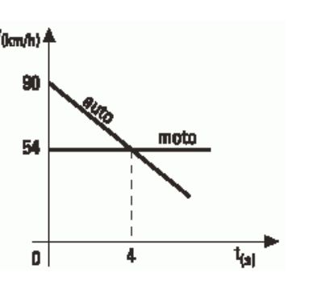
Topic: Newtonian Mechanics Metodi: Kinematic Equations, Graph Linearization Competenze: Physical Reasoning, Experimental Data Analysis Objects: Cart Fonte: Testo (PDF) — p.3
PT63. Scuola nazionale Ernesto sabato
Scuola Sagrada Familia Tandil, Buenos Aires.
Un Autista al superare a un Il motociclista si rende conto che si tratta di un amica e istantaneamente (si disprezza il tempo di reazione) applica i freni. La Le informazioni necessarie sono contenute nel grafico di v (a seconda di t), in cui si è Ho acceso il cronometro all’ istante in cui la macchina supera la moto.
OAF 2012 - 83 a) Quattro secondi dopo che la macchina passa alla moto, chi va?
- O andate insieme? b) Quando e dove si riuniscono? (c) Quali sono le velocità della macchina e del motociclista in quella
- Un momento? d) Realizza un grafico della posizione in base al tempo per entrambi
- I telefoni cellulari.
Topic: Newtonian Mechanics Metodi: Kinematic Equations, Graph Linearization Competenze: Physical Reasoning, Experimental Data Analysis Objects: Cart Fonte: Testo (PDF) — p.3
PT63. Ernesto National School Saturday
Holy Family College . I’m going to Tandil, Buenos Aires.
Un
- I ‘m a motorist . al to overcome a un The motorcyclist realizes that it ‘s a . Friend and instantly (you despise the The brakes are applied. La The necessary information is contained in the graph of v (depending on t), in which there is I turned on the timer the moment I The car overtakes the bike.
The following is the list of the Member States’ financial statements: (a) Four seconds after the car passes the motorcycle, who goes? Go ahead, or are you going together? (b) When and where do they meet again? (c) What are the speeds of the car and the motorcyclist in that
- What? (d) Draw a time-based position graph for both mobile devices.
Topic: Newtonian Mechanics Metodi: Kinematic Equations, Graph Linearization Competenze: Physical Reasoning, Experimental Data Analysis Objects: Cart Fonte: Testo (PDF) — p.3
PT64. Escuela Nacional Ernesto Sábato
Colegio Sagrada Familia Tandil, Buenos Aires.
Una taza de cobre de 180 g contiene 125 g de aceite de oliva con calores
específico igual a 0.471 kcal/kg.K a temperatura ambiental que justamente es de
20 °C. En el aceite se introduce un bloque de vidrio de 90 g a 572 °F.
a) Determinar la temperatura final del sistema formado por la taza, el
aceite y el vidrio.
b) ¿Cuántas calorías transfiere el bloque de vidrio al sistema?
Datos adicionales,
QCobre= 0.39 kJ/kg.K = 0.093 kcal/kg.K
QVidrio= 0.84 kJ/kg.K = 0.20 kcal/kg.K
Topic: Thermodynamics Metodi: Conservation of Energy Competenze: Physical Reasoning Objects: Calorimeter Fonte: Testo (PDF) — p.3
PT64. Scuola nazionale Ernesto sabato
Scuola Sagrada Familia Tandil, Buenos Aires.
Una tazza di rame di 180 g contiene 125 g di olio d’ oliva caldo. specifico pari a 0,471 kcal/kg.K a temperatura ambiente che è proprio di 20 °C. L’olio è infuso con un blocco di vetro di 90 g a 572 °F. (a) Determinare la temperatura finale del sistema formato dalla tazza, olio e vetro. b) Quante calorie il blocco di vetro trasmette al sistema? Informazioni aggiuntive QCobre= 0,39 kJ/kg.K = 0,093 kcal/kg.K QVidrio = 0,84 kJ/kg.K = 0,20 kcal/kg.K
Topic: Thermodynamics Metodi: Conservation of Energy Competenze: Physical Reasoning Objects: Calorimeter Fonte: Testo (PDF) — p.3
PT64. Ernesto National School Saturday
Holy Family College . I’m going to Tandil, Buenos Aires.
A 180 g copper cup contains 125 g of olive oil with heat. specific equal to 0.471 kcal/kg.K at ambient temperature which is just 20 °C. A glass block of 90 g at 572 °F is added to the oil. (a) Determine the final temperature of the system formed by the cup, the oil and glass. (b) How many calories does the glass block transfer to the system? Additional data, The amount of the aid is calculated as follows: The following table shows the results of the calculation of the weighted average weight of the product:
Topic: Thermodynamics Metodi: Conservation of Energy Competenze: Physical Reasoning Objects: Calorimeter Fonte: Testo (PDF) — p.3
PT65. Escuela Nacional Ernesto Sábato
Colegio Sagrada Familia Tandil, Buenos Aires.
En una casa cuya instalación eléctrica es de 220 V, se encienden en forma
simultánea los siguientes aparatos: 5 lámparas de 60 W cada una, un lavarropas
de 2100 W, un televisor de 50 W, una estufa de 900 W y un equipo de música de
800 W.
a) ¿Qué intensidad de corriente circula por cada artefacto?
b) ¿Cuál es la intensidad de corriente total que entra en la casa para
mantener a todos estos aparatos encendidos?
c) Calcular los kWh consumidos si se mantienen encendidos durante 3
horas.
d) El amperaje del interruptor automático que protege la instalación
eléctrica de la casa es de 30 A; es decir, “salta” (se abre)cuando circula
una corriente superior a los 30 A ¿es posible encender junto con todos
los artefactos un secador de pelo profesional de 2500 W?
e) ¿El fusible se quema se la resistencia equivalente del circuito es menor
a 7 Ω?
f) ¿El fusible se quema se la resistencia equivalente del circuito es menor
a 8 Ω?
Topic: Circuits Metodi: Kirchhoff’s Laws, Equivalent Circuit Reduction Competenze: Physical Reasoning Objects: Resistor, Battery Fonte: Testo (PDF) — p.3
PT65. Scuola nazionale Ernesto sabato
Scuola Sagrada Familia Tandil, Buenos Aires.
In una casa con un impianto elettrico di 220 V, si accendono in forma contemporaneamente i seguenti apparecchi: 5 lampade di 60 W ciascuna, una lavanderia 2100 W, un televisore da 50 W, un stufa da 900 W e un’equipaggiatura musicale da 800 W. a) Qual è l’intensità di corrente che circola per ogni artefatto? b) Qual è l’intensità totale di corrente che entra nella casa per mantenere tutti questi apparecchi a fuoco? (c) Calcolare i kWh consumati se sono tenuti a fuoco per 3
- Le ore. d) L’amperaggio del interruttore automatico che protegge l’impianto L’elettricità della casa è di 30 A, cioè salta quando si apre. Un corrente superiore a 30 A è possibile accendere insieme a tutti Le artigianati un secatore a peli professionale di 2500 W? e) Il fusibile si brucia se la resistenza equivalente del circuito è inferiore a 7 Ω? f) Il fusibile si brucia se la resistenza equivalente del circuito è inferiore a 8 Ω?
Topic: Circuits Metodi: Kirchhoff’s Laws, Equivalent Circuit Reduction Competenze: Physical Reasoning Objects: Resistor, Battery Fonte: Testo (PDF) — p.3
PT65. Ernesto National School Saturday
Holy Family College . I’m going to Tandil, Buenos Aires.
In a house with 220 V electrical power, they are lit in the form of simultaneously the following appliances: 5 lamps of 60 W each, one laundry room 2100 W, a 50 W TV, a 900 W stove and a musical equipment. 800 W. (a) What current intensity is circulating through each device? (b) What is the total current intensity entering the house for Keep all these devices on? (c) Calculate the kWh consumed if kept on for 3 hours. (d) The ampere of the automatic switch protecting the installation The electrical power of the house is 30 A; that is, it jumps (opens) when it circulates A current greater than 30 A. Is it possible to turn it on together with all of them? The artifacts a professional 2500 W hair dryer? (e) Does the fuse burn if the equivalent resistance of the circuit is less? a 7 Ω? (f) Is the fuse burned if the equivalent resistance of the circuit is less? a 8 Ω?
Topic: Circuits Metodi: Kirchhoff’s Laws, Equivalent Circuit Reduction Competenze: Physical Reasoning Objects: Resistor, Battery Fonte: Testo (PDF) — p.3
PT66. Escuela Técnica Philips Argentina Ciudad de Buenos Aires.
Objetos levitando. En la Figura 1se muestra un sistema físico que permite hacer levitar objetos metálicos. Este sistema, consiste en un electroimán alimentado mediante una fuente de tensión. Al hacer variar la tensión en el circuito, el solenoide finito genera un campo magnético variable con el tiempo y con la posición. Dicho
OAF 2012 - 84 campo magnético produce una fuerza sobre la bola metálica haciendo que esta levite.
Figura 1: Imagen representativa del sistema
Donde es la tensión de alimentación, es la corriente que circula por el
circuito, es la resistencia del solenoide, es la inductancia del solenoide,
es la distancia de equilibrio de la bola, es la masa de la bola metálica,
es
la fuerza magnética sobre la bola metálica, es el peso de la bola metálica
debido a la gravedad y es la gravedad.
Alimentación equilibrio
Posición equilibrio
a) Obtener la expresión del campo magnético dentro de un solenoide (en puntos alejados de los extremos del mismo). Suponer que las espiras son equidistantes, que la cantidad de espiras es , que la longitud del solenoide es y que la permeabilidad relativa del material es .
b) Suponer que dispone del sistema de la Figura 1 y que el mismo tiene un peso . Si se pone a levitar un cuerpo de peso y el conjunto sistema-cuerpo se introduce en una balanza. ¿Qué peso indica la balanza?
c) Se puede aproximar a la fuerza magnética sobre la bola en función de la corriente del circuito según:
Donde es la distancia entre el centro de la bola y el final del electroimán (ver sentido de la corriente y eje de referencia en la Figura 1). Sabiendo que en el punto de equilibrio de la bola metálica, la tensión de alimentación es y la posición de bola respecto al final del electroimán es , obtener la expresión de
OAF 2012 - 85 la constante en función de , , , y . Utilizando los datos del problema calcular .
d) Al alimentar al sistema con una tensión distinta a la del punto de equilibrio ( ) la bola metálica comienza a acelerar. Obtener la aceleración de la bola metálica en función de la corriente y en función de la posición (utilizando el sistema de referencia y el origen indicado en la Figura 1 del problema). El resultado debe ser en función de: , , , , .
e) El sistema de levitación presentado en este problema, es una plataforma experimental muy utilizada para estudiar algoritmos de control automáticos. Dichos algoritmos buscan estabilizar al sistema alrededor de un punto de trabajo. En otras palabras, se busca que para pequeños desplazamientos de la bola metálica respecto de una posición de trabajo , la misma retorne automáticamente a su posición de trabajo. Si tomamos como posición de trabajo , observamos que la ecuación obtenida en (4) depende cuadráticamente de la corriente . Para implementar un algoritmo de control automático simple se requiere que la aceleración de la bola metálica dependa linealmente de . Utilizando el gráfico presentado en la Figura 2, obtener un modelo numérico lineal para la aceleración de la bola en función de la corriente en el punto de trabajo correspondiente a .
f) Suponer que el sistema se encuentra en su posición de equilibrio con . En inicia un escalón de 0.5V, es decir, . Obtener la expresión de la aceleración de la bola en función del tiempo utilizando el resultado del punto (5).
Figura 2: Aceleración de la bola en función de la corriente (para )
OAF 2012 - 86
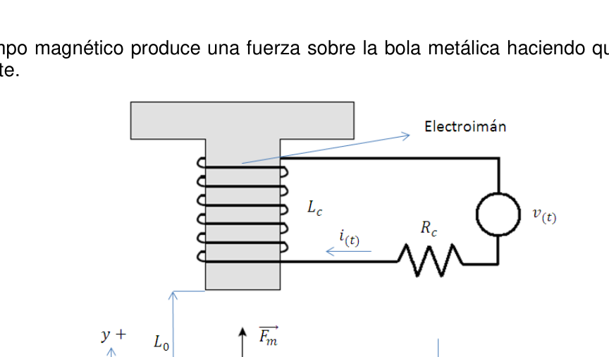
Topic: Electromagnetism, Magnetism Metodi: Ampère’s Law, Free-Body Diagram, Differential Equations Competenze: Physical Reasoning, Mathematical Modeling Objects: Solenoid, Ball, Magnet Fonte: Testo (PDF) — p.3
PT66. Philips Technical School Argentina Città di Buenos Aires.
Oggetti che levitano. La figura 1 mostra un sistema fisico che permette di far levitare oggetti. metalliche. Questo sistema consiste in un elettromane alimentato da un fonte di tensione. Variando la tensione nel circuito, il solenoide finito genera un campo magnetico che varia con il tempo e la posizione. - Si ’ , si ’ .
OAF 2012 - 84 Il campo magnetico produce una forza sulla palla metallica facendo sì che questa
- Non lo so.
Figura 1: Immagine rappresentativa del sistema
Dove è la tensione di alimentazione, è il corrente che circola attraverso il Il circuito, è la resistenza del solenoide, è l’induzione del solenoide. è la distanza di equilibrio della palla, è la massa della palla metallica, es La forza magnetica sulla palla metallica è il peso della palla metallica a causa della gravità, e’ la gravità.
Balance alimentare
Posizione di equilibrio
a) Ottenere l’espressione del campo magnetico all’interno di un solenoide (in punti lontani dagli estremità). Supponiamo che tu spiri . sono equidistanti, che la quantità di spirale è , che la lunghezza di Solenoide è e la permeabilità relativa del materiale è .
b) Supponiamo che dispongano del sistema di Figura 1 e che esso dispongano di
- Un peso . Se si mette a levitazione un corpo di peso e l’insieme sistema-corpo viene inserito in una bilancia. Che peso indica la
- Sbalzo?
c) Si può avvicinare la forza magnetica sulla palla in funzione della corrente del circuito secondo:
Dove è la distanza tra il centro della palla e l’estremità dell’elettromagnetico (vedi Il valore di riferimento di un’unità di riferimento è il valore di riferimento di un’unità di riferimento di un’unità di riferimento di riferimento. Sapendo che in punto di equilibrio della palla metallica, la tensione di alimentazione è e la La posizione della palla rispetto all’ estremità dell’ elettromagnetico è , ottenere l’ espressione di
OAF 2012 - 85 la costante in funzione di , , e . Usando i dati di
- Difficoltà di calcolo .
d) Quando il sistema viene alimentato con una tensione diversa da quella del punto di equilibrio () la sfera metallica inizia ad accelerare. Ottenere la Accelerazione della palla metallica a seconda del corrente e in funzione della posizione (utilizzo del sistema di riferimento e dell’origine (Sito di riferimento) Il risultato deve essere funzionale de: , , , , .
e) Il sistema di levitazione presentato in questo problema è un piattaforma sperimentale molto utilizzata per studiare algoritmi di controllo automatico. Questi algoritmi cercano di stabilizzare il sistema. intorno a un punto di lavoro. In altre parole, si cerca di far sì che piccole spostamenti della palla metallica rispetto a una posizione La stessa volta di lavoro viene automaticamente riportata alla sua posizione di lavoro .
- lavoro. Se prendiamo come posizione di lavoro , osserviamo che la L’equazione ottenuta in (4) dipende quadraticamente dal corrente . Per implementare un semplice algoritmo di controllo automatico si è richiede che l’accelerazione della palla metallica dipenda linealmente . Usando il grafico presentato in Figura 2, ottenere un modello numerico lineare per l’accelerazione della palla in funzione del corrente al punto di lavoro corrispondente a .
f) Suppone che il sistema sia in posizione di equilibrio con . Innesca una scala di 0,5 V, cioè . Ottenere l’espressione dell’accelerazione della palla in funzione del tempo utilizzando il risultato del punto (5).
Figura 2: Accelerazione della palla in funzione del corrente (para)
OAF 2012 - 86
Topic: Electromagnetism, Magnetism Metodi: Ampère’s Law, Free-Body Diagram, Differential Equations Competenze: Physical Reasoning, Mathematical Modeling Objects: Solenoid, Ball, Magnet Fonte: Testo (PDF) — p.3
PT66. Philips Technical School Argentina City of Buenos Aires.
Objects are levitating. Figure 1 shows a physical system that allows objects to levitate. metallic. This system consists of an electromagnet powered by a The voltage source. By varying the voltage in the circuit, the finite solenoid It generates a magnetic field that changes with time and position. That said .
The following is the list of the countries of the European Union: The magnetic field produces a force on the metal ball making it Let go.
Figure 1: Representative image of the system
Where the power voltage is, it’s the current flowing through the circuit, is the resistance of the solenoid, is the inductance of the solenoid, It’s the balance distance of the ball, it’s the mass of the metal ball, es The magnetic force on the metal ball, is the weight of the metal ball. Because of gravity, and it’s gravity.
Balanced feeding
Balance position
(a) Obtain the expression of the magnetic field within a solenoid (in points away from the ends of the same). Suppose you ‘re breathing . are equidistant, that the number of spires is, that the length of the So is the solenoid and the relative permeability of the material is .
(b) Suppose that it has the system in Figure 1 and that it has A weight . If you levitate a body weight and the whole thing system-body is introduced into a scale. What weight indicates the
- What’s the scale?
(c) The magnetic force on the ball can be approximated by the current of the circuit according to:
Where is the distance between the center of the ball and the end of the electromagnet (see direction of current and axis of reference in Figure 1). Knowing that in the The balance point of the metal ball, the power voltage is and the The position of the ball with respect to the end of the electromagnet is , get the expression of
The following points shall be added: the constant in terms of , , and . Using data from the It ‘s hard to calculate .
(d) When the system is powered by a voltage other than that of the The metal ball begins to accelerate. Get the The acceleration of the metal ball as a function of current and in position function (using the reference system and the origin The problem is shown in Figure 1. The result should be in function de: , , , , .
(e) The levitation system presented in this problem is a The experimental platform widely used to study algorithms of automatic controls. These algorithms seek to stabilize the system . around a workplace. In other words, it seeks to stop Small displacements of the metal ball relative to a position The same automatically returns to its position of I’m working. If we take it as a working position , we observe that the The equation obtained in (4) is quadratically dependent on the current . To implement a simple automated control algorithm is It requires that the acceleration of the metal ball depends on linearly of . Using the graph presented in Figure 2, Get a linear numerical model for the acceleration of the ball in current function at the working point corresponding to .
(f) Suppose that the system is in its equilibrium position with . In it starts a 0.5V scale, that is, . Get the expression of the acceleration of the ball as a function of time using the result of point (5).
Figure 2: Acceleration of the ball by current (for)
The following is the list of the Member States’ financial statements:
Topic: Electromagnetism, Magnetism Metodi: Ampère’s Law, Free-Body Diagram, Differential Equations Competenze: Physical Reasoning, Mathematical Modeling Objects: Solenoid, Ball, Magnet Fonte: Testo (PDF) — p.3
PT67. Escuela Técnica Philips Argentina Ciudad de Buenos Aires.
Una aventura del Capitán Jack Sparrow. El Capitán Jack Sparrow fue abandonado (otra vez) en una isla desierta en medio del Caribe. Buscando elementos que le permitan salir de allí, se topa con un ataúd sin tapa. Tras pedirle amablemente al esqueleto que contenía que se lo preste, bajo amenaza de muerte, ya tiene la primera pieza para armar su bote. El cajón está hecho de madera de 25 mm de espesor y 400 kg/m³ de densidad, su sección transversal es cuadrada, de 60 cm de lado, y su longitud es de 2 m.
En lo que sigue utilice la siguiente denominación de los ejes:
- x: horizontal, positivo hacia la derecha, con origen en el plano de simetría;
- y: vertical, positivo hacia arriba, con origen en el fondo del bote;
- z: longitudinal, positivo hacia atrás, con origen en el plano de simetría.
a) Calcule la masa (m) y la posición del centro de masa del cajón (xcm, ycm, zcm).
b) Calcule a qué profundidad se sumergirá en agua de mar.
Cuando el cajón se inclina, el empuje y el peso ya no están alineados, por lo que se produce un torque.
c) Encuentre una expresión para la posición del centro de empuje en función de la altura sumergida (h), el ancho del bote (a) y el ángulo de inclinación ( ), respecto del sistema de coordenadas del bote.
d) Encuentre una expresión para el torque producido en función de
h, a, , m y la altura del centro de masa ycm.
e) De la expresión anterior deduzca qué relación deben cumplir h, a e ycm para que el bote sea estable. Decida si el cajón solo es estable y si lo es con Jack parado en el centro del bote.
Para propulsar el bote, encuentra lo que pudo haber sido una hamaca
paraguaya, ideal para construir una vela. La vela construida es triangular y mide
50 cm de base y 2,7 m de altura.
Jack recuerda que en las condiciones típicas de navegación, la fuerza (F) sobre un objeto que se desplaza en un fluído sólo depende de de la velocidad relativa (v), el área (A), la densidad del fluído () y de un coeficiente adimensional (sin unidades) que contempla la forma del objeto y su orientación respecto de la dirección de movimiento (C) .
f) Complete la expresión general para una fuerza F = ½ C …
La fuerza sobre la vela tiene dos componentes: la fuerza de arrastre, paralela a la dirección del viento, y la de sustentación, perpendicular al viento. Los coeficientes para cada componente se muestran en el diagrama adjunto, para distintas orientaciones de la vela respecto del viento.
Para probar la vela, Jack se sube al bote y lo orienta en dirección norte, mientras el viento sopla del oeste a 35 km/h, y fija la vela en un ángulo de 30º respecto del viento.
OAF 2012 - 87 g) ¿Cuál es la aceleración inicial del bote? Suponga que éste sólo puede avanzar, es decir, NO puede deslizar de costado.
El bote alcanza una velocidad final de 2,6 m/s en dirección norte. La velocidad del viento no varió y la vela se mantuvo en la posición original respecto del bote.
h) Determine el coeficiente de arrastre entre el bote y el agua, tomando como área la sección transversal sumergida.
Datos:
Densidad del agua de mar: 1025 kg/m³
Densidad del aire: 1,225 kg/m³
Masa de Jack: 80 kg
Altura de Jack: 1,78 m El centro de masa de un hombre se encuentra al 56% de su altura. El centroide de un triángulo rectángulo se ubica adonde muestra la siguiente figura
Diagrama de los coeficientes de sustentación y arrastre
OAF 2012 - 88
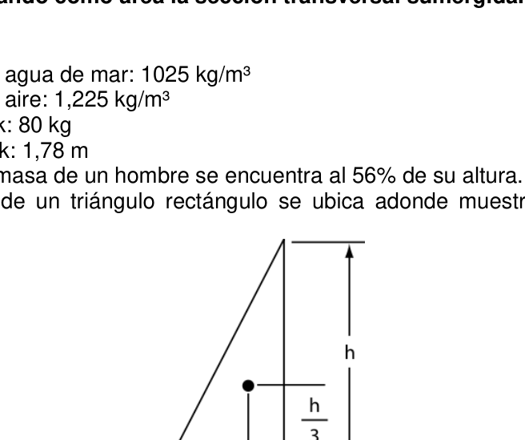
Topic: Fluid Mechanics, Rigid Body Statics Metodi: Hydrostatic Equilibrium, Torque & Angular Momentum Analysis, Free-Body Diagram Competenze: Physical Reasoning, Mathematical Modeling Objects: Container, Beam Fonte: Testo (PDF) — p.3
PT67. Philips Technical School Argentina Città di Buenos Aires.
Un’avventura del Capitano Jack Sparrow. Il capitano Jack Sparrow fu abbandonato (ancora) su un’isola deserta nel Medio del Caraibe. Cercando elementi che gli permettano di uscire da lì, si incontra con Un’arco senza copertura. Dopo aver gentilmente chiesto al scheletro che lo conteneva di darglielo. Presto, sotto minaccia di morte, ha già il primo pezzo per armare la sua barca. El la cassetta è fatta di legno di 25 mm di spessore e di 400 kg/m3 di densità, la sezione trasversale è quadrata, di 60 cm laterale, e la sua lunghezza è di 2 m.
In seguito, utilizzare la seguente denominazione degli assi:
- x: orizzontale, positiva verso destra, originaria del piano di simmetria;
- e: verticale, positiva verso l’alto, originaria dal fondo del bote;
- z: longitudinale, positivo verso l’indietro, originario del piano di simmetria.
a) Calcolare la massa (m) e la posizione del centro di massa del cassetto (xcm, ycm, zcm).
b) Calcolare la profondità di immersione in acqua di mare.
Quando il cassetto si inclina, la spinta e il peso non sono più allineati, quindi si produce una torsione.
c) Trova un’espressione per la posizione del centro di spinta in funzione di altitudine immersa (h), larghezza del bote (a) e angolo di inclinamento ( ), rispetto al sistema di coordinate del bote.
d) Trova un’espressione per la torsione prodotta in funzione di h, a, , m e altezza del centro di massa ycm.
e) Dall’espressione precedente si deduce quale rapporto devono rispettare h, a e e cm per mantenere la barca stabile. Decidi se il cassetto è solo stabile E se è così con Jack al centro della barca.
Per farla muovere, trova quello che potrebbe essere stato un hammock. Paraguai, ideale per costruire una vela. La vela costruita è triangolare e misura 50 cm di base e 2,7 m di altezza.
Jack ricorda che nelle condizioni di navigazione tipiche, la forza (F) su Un oggetto che si muove in un fluido dipende solo dalla velocità relativa (v), area (A), densità del fluido () e coefficiente dimensionale (senza Unita’ di un’unità) che contempla la forma dell’oggetto e la sua orientamento rispetto alla direzione di movimento (C).
f) Completa l’espressione generale per una forza F = 1⁄2 C …
La forza sulla vela ha due componenti: la forza di trazione, parallela a la direzione del vento e la direzione del supporto, perpendicolare al vento. I I coefficienti per ciascun componente sono riportati nel diagramma allegato, per le diverse orientamenti della vela rispetto al vento.
Per provare la vela, Jack sale sulla barca e la dirige verso nord, mentre il vento si fa da ovest a 35 km/h, e fissa la vela a un angolo di 30° rispetto a del vento.
OAF 2012 - 87 g) Qual è l’accelerazione iniziale del bote? Supponiamo che questo solo può andare avanti, cioè non può scivolare lateralmente.
La barca raggiunge una velocità finale di 2,6 m/s in direzione nord. La velocità il vento non cambiò e la vela rimase nella posizione originale rispetto alla barca.
h) Determina il coefficiente di trascinamento tra il peschereccio e l’acqua, Prendendo come area la sezione trasversale immersa.
Datati: Densità dell’acqua di mare: 1025 kg/m3 Densità dell’aria: 1,225 kg/m3 Massa di Jack: 80 kg
Altura di Jack: 1,78 m Il centro di massa di un uomo si trova al 56% della sua altezza. Il centroide di un triangolo rettangolo si trova dove mostra la seguente figura
Diagramma dei coefficienti di sostenimento e trascinamento
OAF 2012 - 88
Topic: Fluid Mechanics, Rigid Body Statics Metodi: Hydrostatic Equilibrium, Torque & Angular Momentum Analysis, Free-Body Diagram Competenze: Physical Reasoning, Mathematical Modeling Objects: Container, Beam Fonte: Testo (PDF) — p.3
PT67. Philips Technical School Argentina City of Buenos Aires.
It’s an adventure of Captain Jack Sparrow. Captain Jack Sparrow was abandoned (again) on a desert island in The middle of the Caribbean. Looking for elements to get him out of there, he stumbles upon A coffin without a lid. After kindly asking the skeleton that contained it to give it to him Soon, under threat of death, he has already got the first piece to arm his boat. El The tray is made of wood of 25 mm thickness and 400 kg/m3 density, its The cross section is square, 60 cm on the side, and its length is 2 m.
In the following use the following axle name:
- x: horizontal, positive to the right, originating in the plane of symmetry;
- and: vertical, upward positive, originating at the bottom of the boat;
- z: longitudinal, positive backward, originating in the plane of symmetry.
(a) Calculate the mass (m) and the position of the centre of mass of the drawer (xcm, ycm, zcm)
(b) Calculate the depth of immersion in seawater.
When the drawer is tilted, the thrust and weight are no longer aligned, so a torque is produced.
(c) Find an expression for the position of the centre of thrust in the function of submerged height (h), the width of the boat (a) and the angle inclination ( ), with respect to the boat’s coordinate system.
(d) Find an expression for the torque produced by h, a, , m and the height of the centre of mass ycm.
(e) From the above expression it is deduced which relationship h, a and e must satisfy. and cm to keep the boat stable. Decide if the drawer alone is stable . And if it’s with Jack standing in the middle of the boat.
To propel the boat, find what may have been a hammock. Paraguay, ideal for building a candle. The candle built is triangular and measures 50 cm base and 2.7 m height.
Jack recalls that under typical navigation conditions, the force (F) over An object moving in a fluid depends only on the relative velocity (v), area (A), fluid density () and a dimension coefficient (without The object is designed to be a single unit (s) with the shape of the object and its orientation to the object. direction of movement (C).
(f) Complete the general expression for a force F = 1⁄2 C …
The force on the sail has two components: the drag force, parallel to the the direction of the wind, and the sustained direction perpendicular to the wind. The The coefficients for each component are shown in the attached diagram, for different orientations of the sail with respect to wind.
To test the candle, Jack climbs onto the boat and points it north, while The wind is blowing from the west at 35 km/h, and the candle is set at an angle of 30° with respect to the wind. The wind.
The following is the list of the Member States’ financial statements: (g) What is the initial acceleration of the boat? Suppose this one only It can move forward, that is, it cannot slide sideways.
The boat reaches a final speed of 2.6 m/s in the north direction. The speed The wind was unchanged and the sail remained in its original position with respect to the boat.
(h) Determine the drag coefficient between the boat and the water, taking as an area the submerged cross section.
The data: Sea water density: 1025 kg/m3 Air density: 1,225 kg/m3 Jack weight: 80 kg
Jack’s height: 1.78 m The center of mass of a man is 56 percent of his height. The center of a right triangle is where it shows the following Figure
Diagram of the support and drag coefficients
The following points shall be added:
Topic: Fluid Mechanics, Rigid Body Statics Metodi: Hydrostatic Equilibrium, Torque & Angular Momentum Analysis, Free-Body Diagram Competenze: Physical Reasoning, Mathematical Modeling Objects: Container, Beam Fonte: Testo (PDF) — p.3
PT68. Escuela Técnica Philips Argentina Ciudad de Buenos Aires.
OK . En alguna parte de Rusia se encuentra el Observatorio Kalinka (OK) cuya misión es estudiar el Cosmos. El centro cuenta, entre otras cosas, con el telescopio astronómico GLASO, que orbita la Tierra. Al igual que el Hubble, se trata básicamente de un telescopio de reflexión del tipo Cassegrain pero el GLASO utiliza dos espejos esféricos en lugar de hiperbólicos. El primario es cóncavo y se utiliza como objetivo. El secundario es convexo y sirve para redirigir la luz hacia una placa de fotodiodos conocida como CCD (charge coupled device) en donde se generan y registran digitalmente las imágenes. La placa CCD se encuentra colocada en un orificio en el centro del espejo primario.
La figura 1 muestra esquemáticamente el sistema óptico del telescopio. El radio de curvatura del espejo primario es y la separación entre espejos es . El sistema es tal que el espejo secundario se encuentra ubicado entre el espejo primario y el foco de éste. Si el foco efectivo del sistema se encuentra una distancia detrás de la placa CCD,
a) determine el radio de curvatura del espejo secundario
La placa CCD es cuadrada con un lado de y posee un total de
megapixels. Una de las fotografías tomadas por el telescopio corresponde a una
luna cuyo diámetro es de 25 . Esta luna resultó estar repleta de cráteres
como resultado del impacto de objetos cósmicos. Si el telescopio se enfocó de
modo tal que la imagen de la luna encajara justo en las dimensiones de la placa
CCD,
b) ¿cuál fue la menor distancia entre cráteres que se pudo resolver en la imagen?
De acuerdo al enfoque cuántico de la luz, la energía radiante se propaga
mediante partículas llamadas fotones. Cada fotón transporta una energía
donde es la constante de Planck y es la
frecuencia de la onda asociada.
Cuando los fotones alcanzan los fotodiodos que forman los pixels de la CCD,
transfieren energía y se genera en los pixels una diferencia de potencial como
consecuencia de la liberación de electrones en el material cuyo comportamiento
es el de un capacitor. El valor de la d.d.p depende de la energía del fotón y de la
frecuencia de los “impactos”. Pero no todos los fotones que inciden en un pixel
resultan en la liberación de un electrón. Algunos fotones son reflejados y otros
simplemente atraviesan el pixel. Para cuantificar este efecto se define la
eficiencia cuántica de un pixel como la razón entre el número de electrones
liberados y el número de fotones incidentes. La ventaja de una placa CCD es
que tiene una eficiencia de entre 70 y 80% mientras que un film fotográfico
común ronda en un 4%.
Una de las imágenes que se han tomado con el GLASO corresponde a una estrella cuya luz alcanza el telescopio con una intensidad de 6 . La luz recibida en la CCD tiene una longitud de onda .
c) Determine la cantidad de fotones que alcanzan un pixel de la placa en un período de
OAF 2012 - 89 Si un pixel de la CCD del GLASO tiene una eficiencia cuántica del 76% y una capacidad de ,
d) determine la d.d.p a través de un pixel para las condiciones de intensidad luminosa, longitud de onda y período de tiempo del ítem anterior.
Otra de las tareas que se desarrollan en el OK consiste en el análisis de señales
cósmicas las cuales se captan mediante radiotelescopios. Todas las señales
recibidas se guardan en discos rígidos y para ello, se utiliza un convertidor
analógico-digital (CAD) para procesar la señal. Dicho de forma simple, el CAD
transforma una señal analógica continua en una señal escalonada en niveles de
voltaje. Cada nivel de voltaje se representa mediante un número en código
binario siendo cada cifra de dicho número lo que se conoce como “bit”. Así, por
ejemplo, un sistema que trabaje con puede manejar
niveles de voltaje
Una tarde, un estudiante ingresa una señal analógica en el CAD y obtiene una
señal digital a la salida. Ambas se observan en la figura 2.
La señal analógica está compuesta por dos señales senoidales: una
fundamental y un armónico.
e) Determine la frecuencia fundamental de la señal analógica y estime la frecuencia del armónico
f) Determine la frecuencia de muestro (sampling) a la cual operó el CAD la señal
g) Determine el número de bits empleado por el CAD para procesar la señal
El científico a cargo del proceso alerta al estudiante que la señal es de audio y que se debe guardar con una calidad no inferior a . Le indica entonces que la señal digital debe emplear niveles de voltaje en lugar de los 8 que utilizó. Para estas nuevas condiciones finales,
h) ¿Cuál debe ser la frecuencia de muestreo?
Toda la información digital que se maneja dentro de las instalaciones del OK se
transfiere mediante redes de fibra óptica. Una fibra óptica consiste en un núcleo
de material transparente de alto índice de refracción rodeado de una
envoltura hecha con un material cuyo índice de refracción es ligeramente
menor que el del material del núcleo. La fibra permite la transmisión de un haz
de luz mediante el fenómeno de reflexión interna total. La figura 3 muestra
esquemáticamente una sección de una fibra óptica.
Para la fibra óptica que se utiliza en el OK, los índices de refracción de los
materiales del núcleo y de la envoltura son y
respectivamente. Suponiendo que el medio externo es aire ( ) ,
i) determine el mínimo valor que puede tomar el ángulo para que se produzca la reflexión total interna de cualquier rayo de luz que ingrese en la fibra.
Como consecuencia de la propagación a través de un medio material, la señal que se transmite a través de la fibra pierde potencia a medida que avanza. Este
OAF 2012 - 90 efecto se llama atenuación de la señal. La pérdida de potencia, medida en decibeles ( ), responde a la siguiente expresión:
Se trata de una cantidad que depende, para un material dado, de la longitud de onda de la señal.
Para la fibra que se utiliza en el OK, el fabricante brindó en las especificaciones la información de las características de atenuación de la fibra (ver figura 4).
En lo que sigue, suponga que los índices de refracción que se dieron para el núcleo y la envoltura son constantes para todas las frecuencias, es decir, que no ocurre dispersión dentro de la fibra.
Una señal de y se transmite entre dos edificios separados dentro del OK.
j) ¿Qué potencia tiene la señal que se recibe?
Figura 1
Figura 2
OAF 2012 - 91
Figura 3
Figura 4
Topic: Geometric Optics, Modern-Quantum Physics Metodi: Thin Lens & Mirror Equation, Photon Energy Relation, Snell’s Law Competenze: Physical Reasoning, Mathematical Modeling Objects: Mirror, Photon, Lens Fonte: Testo (PDF) — p.3
PT68. Philips Technical School Argentina Città di Buenos Aires.
OK . In qualche parte della Russia si trova l’Osservatorio Kalinka (OK) la cui missione è è studiare il cosmo. Il centro conta, tra le altre cose, con il telescopio GLASO, che orbita la Terra. Come Hubble, si tratta di basicamente di un telescopio riflesso Cassegrain, ma il GLASO utilizza due specchi sferici invece di quelli iperbolici. Il primario è Conosco e lo utilizzo come obiettivo. Il secondo è convexo e serve per Ridirigere la luce verso una scheda di fotodiodiodi nota come CCD (charge
- un dispositivo combinato) in cui vengono generate e registrate digitalmente le immagini. La la scheda CCD è collocata in un orizzonte al centro dello specchio primario.
La figura 1 mostra schematicamente il sistema ottico del telescopio. La radio La curvatura del specchio primario è e la separazione tra gli specchi è . Il sistema è tale che lo specchio secondario si trova tra il lo specchio primario e il foco di questo. Se il foco effettivo del sistema si trova una distanza dietro la scheda CCD,
a) determinare il raggio di curvatura dello specchio secondario
La scheda CCD è quadrata con un lato e possiede un totale di megapixel. Una delle fotografie scattate dal telescopio corrisponde a una Luna di 25 diametri . Questa luna è stata piena di crateri Come risultato dell’impatto di oggetti cosmici. Se il telescopio si è focalizzato su Così l’immagine della luna si inserisce nelle dimensioni della targa. CCD,
b) qual è stata la distanza più breve tra crateri che si sia potuto risolvere in l’immagine?
Secondo l’approccio quantistico della luce, l’energia radiante si diffonde. attraverso particelle chiamate fotoni. Ogni fotone porta un’energia. dove è la costante di Planck ed è la frequenza dell’onda associata. Quando i fotoni raggiungono i fotodiodiodi che formano i pixel del CCD, trasferiscono energia e si genera in pixel una differenza di potenziale come conseguenza della liberazione di elettroni nel materiale il cui comportamento è quello di un capacitore. Il valore del DDP dipende dall’energia del fotone e dalla Frequenza degli impatti. Ma non tutti i fotoni che incidono su un pixel che si traduce nel rilascio di un elettrone. Alcuni fotoni sono riflessi e altri fotoni sono riflessi. semplicemente attraversano il pixel. Per quantificare questo effetto si definisce la efficienza quantistica di un pixel come rapporto tra il numero di elettroni i fotoni liberati e il numero di fotoni incidenti. Il vantaggio di una scheda CCD è che ha un’efficienza tra il 70 e l’80% mentre un film fotografico Il tasso di cambio è del 4%.
Una delle immagini che sono state scattate con il GLASO corrisponde a una Una stella la cui luce raggiunge il telescopio con un’ intensità di 6 . La luce ricevuta dal CCD ha una lunghezza d’ onda .
c) Determina il numero di fotoni che raggiungono un pixel della scheda in un periodo di
OAF 2012 - 89 Se un pixel del CCD di GLASO ha un’efficienza quantistica del 76% e un capacità di ,
d) determinare la D.d.p. attraverso un pixel per le condizioni di intensità luminosa, lunghezza d’onda e periodo di tempo dell’oggetto precedente.
Un altro compito che si svolge nell’ OK è l’analisi dei segnali cosmiche che vengono catturate con radiotelescopi. Tutti i segnali. Le informazioni ricevute vengono salvate su dischi rigidi e per questo viene utilizzato un convertitore analogo-digitale (CAD) per elaborare il segnale. Il CAD è il sistema di controllo dei dati. Il segnale analogo continua è trasformato in segnale graduale a livelli di voltazione. Ogni livello di tensione è rappresentato da un numero in codice binario essendo ogni cifra di tale numero ciò che è noto come bit. Così, per Per esempio, un sistema con cui lavora può gestire livelli di tensione Un pomeriggio, uno studente entra un segnale analogo nel CAD e ottiene un Segnale digitale all’uscita. Entrambe sono state illustrate in figura 2. Il segnale analogo è composto da due segnali senoidali: fondamentale e armonica.
e) Determina la frequenza fondamentale del segnale analogo e
- Stima la frequenza dell’armonico.
f) Determina la frequenza di campionamento a cui è stata operata l’operatore. CAD il segnale
g) Determina il numero di bit utilizzato dal CAD per elaborare la data. Segnale
Lo scienziato responsabile del processo avverte lo studente che il segnale è audio e che deve essere conservato con una qualità non inferiore a . Allora indica. che il segnale digitale deve utilizzare livelli di tensione invece degli 8 che
- l’ha usata. Per queste nuove condizioni finali,
h) Qual è la frequenza di campionamento?
Tutte le informazioni digitali che vengono gestite all’interno delle strutture dell’O.K. sono trasmette attraverso reti di fibra ottica. Una fibra ottica è costituita da un nucleo. di materiale trasparente ad alto indice di refraczione circondato da una avvolto con un materiale il cui indice di refraczione è leggermente inferiore a quello del materiale del nucleo. La fibra permette la trasmissione di un raggio. di luce attraverso il fenomeno di riflessione interna totale. La figura 3 mostra schematicamente una sezione di una fibra ottica. Per la fibra ottica utilizzata nell’O.C. gli indici di refrazione dei i materiali del nucleo e dell’impalcatura sono e rispettivamente. Supponendo che l’ ambiente esterno sia aria (),
i) determina il minimo valore che l’ angolo può prendere per si produce la riflessione totale interna di qualsiasi raggio di luce che
- Entrate nella fibra.
Come conseguenza della diffusione attraverso un mezzo materiale, il segnale che si trasmette attraverso la fibra perde potenza con il progresso. Questo .
OAF 2012 - 90 L’effetto è chiamato attenuazione del segnale. Per la perdita di potenza, misurata in decibel ( ), risponde alla seguente espressione:
Si tratta di una quantità che dipende, per un dato materiale, dalla lunghezza di l’onda del segnale.
Per la fibra utilizzata nell’O.C. il fabbricante ha fornito le specifiche informazioni sulle caratteristiche di attenuazione della fibra (vedere figura 4).
In quanto segue, supponiamo che gli indici di refraczione dati per il Il nucleo e l’impalcatura sono costanti per tutte le frequenze, cioè non si verifica dispersione all’interno della fibra.
Un segnale di e viene trasmesso tra due edifici separati all’interno dell’OK.
j) Qual è la potenza del segnale ricevuto?
Figura 1
Figura 2
OAF 2012 - 91
Figura 3
Figura 4
Topic: Geometric Optics, Modern-Quantum Physics Metodi: Thin Lens & Mirror Equation, Photon Energy Relation, Snell’s Law Competenze: Physical Reasoning, Mathematical Modeling Objects: Mirror, Photon, Lens Fonte: Testo (PDF) — p.3
PT68. Philips Technical School Argentina City of Buenos Aires.
OK . Somewhere in Russia is the Kalinka Observatory (OK) whose mission is It’s about studying the cosmos. The centre is equipped with, among other things, a telescope. astronomical GLASO, which orbits the Earth. Like Hubble, it’s about Basically a Cassegrain type reflection telescope but the GLASO It uses two spherical mirrors instead of hyperbolic ones. The primary is It’s a concave object and it’s used as a target. The secondary is convex and serves to redirect light to a photodiode plate known as a CCD (charge) coupled device) where images are generated and digitally recorded. La The CCD plate is placed in a hole in the center of the primary mirror.
Figure 1 shows the optical system of the telescope in a schematic manner. The radio . The curvature of the primary mirror is and the separation between mirrors is . The system is such that the secondary mirror is located between the The primary mirror and the focus of the mirror. If the effective focus of the system is located a distance behind the CCD plate,
(a) determine the radius of curvature of the secondary mirror
The CCD plate is square with one side of and has a total of The data is measured in megapixels. One of the photographs taken by the telescope corresponds to a A moon with a diameter of 25 . This moon turned out to be full of craters . As a result of the impact of cosmic objects. If the telescope was focused from So that the image of the moon fits right into the dimensions of the plate. The Commission shall adopt delegated acts in accordance with Article 21 of this Regulation.
(b) What was the shortest crater distance that could be solved in The picture?
According to the quantum approach of light, radiant energy spreads. by particles called photons. Each photon carries an energy . where is Planck’s constant and is the the frequency of the associated wave. When the photons reach the photodiodes that form the pixels of the CCD, They transfer energy and generate in the pixels a potential difference like The result of the release of electrons in the material whose behavior It’s the capacitor. The value of the d.d.p. depends on the photon energy and the The frequency of the impacts. But not all photons that hit a pixel They result in the release of an electron. Some photons are reflected and others are reflected. They just go through the pixel. To quantify this effect, the quantum efficiency of a pixel as the ratio between the number of electrons The number of photons released and the number of incident photons. The advantage of a CCD plate is It has an efficiency of 70 to 80 percent while a photographic film Common round at 4%.
One of the images taken with the GLASO corresponds to a A star whose light reaches the telescope with an intensity of 6 . The light received on the CCD has a wavelength .
(c) Determine the number of photons reaching one pixel of the plate In a period of
The following is the list of the Member States’ financial statements: If a pixel of the GLASO CCD has a quantum efficiency of 76% and a capacity of ,
(d) determine the d.d.p. through a pixel for the conditions of light intensity, wavelength and time period of the item previously.
Another task that is developed in the OK is to analyse signals. Cosmic objects that are captured by radio telescopes. All the signals . The receipts are stored on hard drives and a converter is used. Analog-digital (CAD) to process the signal. In simple terms, the CAD transforms a continuous analog signal into a stepwise signal at levels of
- The voltage. Each voltage level is represented by a code number binary being every digit of that number what’s known as bit. So, by For example, a system that you work with can handle voltage levels One afternoon, a student enters an analog signal into the CAD and gets a Digital signal to the exit. Both are shown in Figure 2. The analog signal is composed of two sine signals: one It’s a fundamental and a harmonious one.
(e) Determine the fundamental frequency of the analogue signal and estimate the frequency of the harmonic.
(f) Determine the sampling frequency at which the operator operated. CAD the signal
(g) Determine the number of bits used by the CAD to process the data. Signal
The scientist in charge of the process alerts the student that the signal is audio and which must be kept with a quality not less than . Then point him out. The digital signal should use voltage levels instead of the 8 that He used it. For these new final conditions,
(h) What should be the sampling frequency?
All digital information that is handled within the OK facility is transmits through fibre optic networks. An optical fiber consists of a core. High refractive index transparent material surrounded by a wrap made of a material with a slightly more refractive index smaller than that of the core material. The fiber allows a beam to be transmitted. The light is reflected by the phenomenon of total internal reflection. Figure 3 shows Schematically a section of an optical fiber. For the optical fibre used in the OK, the refractive indices of the The core and wrap materials are and the Commission. Assuming the external medium is air ,
(i) determine the minimum value that the angle can take to make The total internal reflection of any beam of light that Get in the fiber.
As a consequence of propagation through a material medium, the signal It’s transmitted through the fiber and it loses power as it moves. This one .
The following points shall be added: The effect is called signal attenuation. The loss of power, measured in decibels ( ), is the expression:
It is a quantity that depends, for a given material, on the length of the wave of the signal.
For the fibre used in the OK, the manufacturer provided in the specifications information on the thinning characteristics of the fibre (see figure 4).
In the following, assume that the refractive indices given for the The core and the envelope are constant for all frequencies, i.e. they are not dispersion occurs within the fiber.
A signal from and is transmitted between two separate buildings within the OK.
(j) What power is the received signal?
Figure 1
Figure 2
The following is the list of the countries of the European Union:
Figure 3
Figure 4
Topic: Geometric Optics, Modern-Quantum Physics Metodi: Thin Lens & Mirror Equation, Photon Energy Relation, Snell’s Law Competenze: Physical Reasoning, Mathematical Modeling Objects: Mirror, Photon, Lens Fonte: Testo (PDF) — p.3
PT69. Escuela Superior de Comercio Carlos Pellegrini Ciudad de Buenos Aires.
Barriletes.
Una cometa plana ideal es una superficie plana, rígida, rectangular mucho más
ancha que alta. Una cometa plana mide 40 cm × 100 cm y su masa total es de
1,3 kg.
Cuando el viento incide sobre una cometa plana con un ángulo , la diferencia
de velocidades que se genera entre la parte superior e inferior del barrilete
produce
una fuerza
L,
perpendicular
a
la
corriente
y
de
módulo
2
2,
180
L
Av
llamada sustentación, donde v es la velocidad relativa entre el
aire y la cometa, es el ángulo entre el viento y la cometa, es la densidad del
aire y A es el área de la cometa.
Como el aire no es un fluido ideal, el efecto de viscosidad hace que exista una
fuerza D paralela a la corriente llamada resistencia, de módulo
2
3
5
.
D
Av
Además el barrilete se mantiene en equilibrio gracias a la
tensión de la soga.
a) Dibujar el diagrama de cuerpo libre para la cometa plana en vuelo en un ángulo y sujeta por el hilo.
Para hacerlo volar, Benjamín y Franco sostienen el barrilete a 15 respecto de la horizontal como muestra la figura. La velocidad del viento en la superficie es v = 10 km/h.
b) ¿A qué velocidad necesitan correr (en contra del viento) para lograr que la cometa remonte vuelo?
OAF 2012 - 92
c) Si la aceleración con la que corren es de 1,2 m/s², ¿qué distancia
necesitarán para alcanzar esa velocidad?
d) Una vez arriba, la velocidad del viento es de 25 km/h. Calcular la
tensión (recordar que es un vector, y por lo tanto tiene módulo y
dirección), si se logra que vuele con una inclinación de 50.
e) Si el hilo mide 25 m, ¿cuál será la altura que alcanzará la cometa?
f) En pleno vuelo se corta el hilo; la cometa pierde sus cualidades
aerodinámicas, y por lo tanto entra en caída libre. ¿Cuánto tardará en
caer? ¿Qué tan lejos caerá?
Las fuerzas sobre la cometa no están aplicadas sobre el mismo punto. La fuerza Peso está aplicada en el centro de gravedad (Cg), que, como está construida de forma homogénea, se encontrará en el centro geométrico. Las fuerzas aerodinámicas se aplicarán en el centro de presiones (Cp), cuya ubicación depende de la inclinación de la cometa y viene dada por el gráfico siguiente.
g) El punto donde se aplica la tensión depende del armado de la cometa. Si se quiere que la cometa vuele con una inclinación de 50, ¿dónde debe construirse el punto donde se aplicará la tensión?
Datos = 1,18 kg/m³ g = 9,8 m/s²
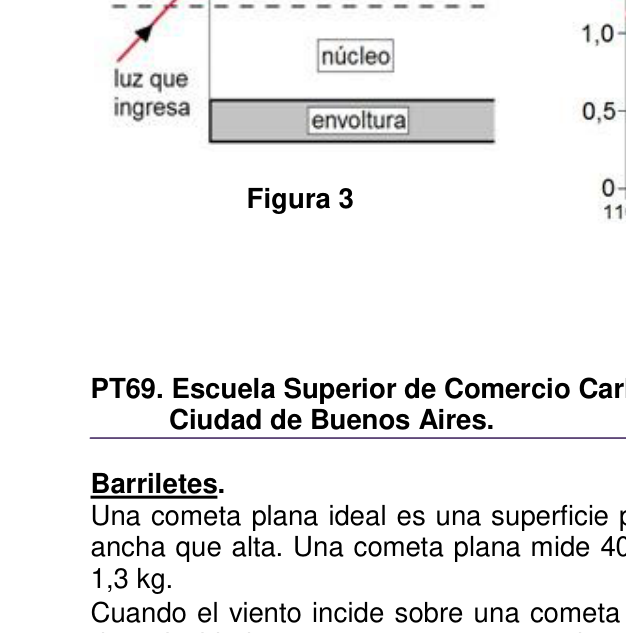
Topic: Fluid Mechanics, Newtonian Mechanics Metodi: Hydrostatic Equilibrium, Free-Body Diagram, Kinematic Equations Competenze: Physical Reasoning, Mathematical Modeling Objects: Container, Projectile Fonte: Testo (PDF) — p.3
PT69. Scuola superiore di commercio Carlos Pellegrini Città di Buenos Aires.
Barrel.
Una cometa piatta ideale è una superficie piatta, rigida, rettangolare molto più.
Largo che alto. Una cometa piana misura 40 cm × 100 cm e la sua massa totale è di
1,3 kg.
Quando il vento incide su una cometa piana con un angolo , la differenza
di velocità generate tra la parte superiore e la parte inferiore del barile
Produce
Una forza
L,
perpendicolare
a
la
corrente
y
de
modulo
2
2,
180
L
Av
chiamata sostensione, dove v è la velocità relativa tra il
aria e la cometa, è l’angolo tra il vento e la cometa, è la densità del
aria e A è l’area della cometa.
Poiché l’aria non è un fluido ideale, l’effetto di viscosità fa esistere una
La forza D parallela al corrente chiamata resistenza, modulo
2
3
5
.
D
Av
Inoltre il baratto è mantenuto in equilibrio grazie alla
tensione della corda.
a) Disegnare il diagramma di corpo libero per la Cometa piana in volo in un angolo e soggetto per il filo.
Per fargli volare, Benjamin e Franco sostengono il barilletto a 15° rispetto alla come mostrato nella figura. La velocità del vento sulla superficie è v = 10 km/h.
b) A che velocità devono correre (contro il vento) per ottenere che La cometa volerà indietro?
OAF 2012 - 92 c) Se la velocità con cui correre è di 1,2 m/s2, quale distanza Ne avranno bisogno per raggiungere quella velocità? d) Una volta alti, la velocità del vento è di 25 km/h. Calcolare la tensione (ricordate che è un vettore, e quindi ha modulo e direzione), se riesce a volare con un’inclinazione di 50. e) Se il filo è di 25 m, quale sarà l’altezza che raggiungerà la cometa? f) In pieno volo il filo viene tagliato; la cometa perde le sue qualità Aero-odinamica, e quindi entra in caduta libera. Quanto tempo ci vorrà? cadere? Quanto lontano cadrà?
Le forze sulla cometa non sono applicate sullo stesso punto. La forza Il peso è applicato al centro di gravità (Cg), che, come è costruito da forma omogenea, si trova al centro geometrico. Le forze i sistemi aerodinamici saranno applicati al centro di pressione (Cp), la cui posizione dipende dall’inclinazione della cometa e viene data dal grafico seguente.
g) Il punto di applicazione della tensione dipende dall’armatura della cometa. Se si vuole che la cometa vola con un’inclinazione di 50, dove? si deve costruire il punto di applicazione della tensione?
Dati = 1,18 kg/m3 g = 9,8 m/s²
Topic: Fluid Mechanics, Newtonian Mechanics Metodi: Hydrostatic Equilibrium, Free-Body Diagram, Kinematic Equations Competenze: Physical Reasoning, Mathematical Modeling Objects: Container, Projectile Fonte: Testo (PDF) — p.3
PT69. The Carlos Pellegrini School of Commerce City of Buenos Aires.
Barrel, please.
An ideal flat comet is a flat, rigid, rectangular surface much more.
wide to high. A flat comet is 40 cm × 100 cm and its total mass is
1,3 kg.
When the wind strikes a flat comet with an angle , the difference
of speeds generated between the top and bottom of the barrel
It produces
A force .
L,
Perpendicular to the
a
la
current
y
de
Module
2
2,
180
L
Av
called sustainance, where v is the relative velocity between the
air and the comet, is the angle between the wind and the comet, is the density of the
air and A is the area of the comet.
Since air is not an ideal fluid, the viscosity effect causes a
D force parallel to the current called resistance, module
2
3
5
.
D
Av
The barrel is also kept in balance by the
the tension of the rope.
(a) Draw the free body diagram for the flat comet flying at an angle and subject through the thread.
To make it fly, Benjamin and Franco hold the barrel at 15 relative to the horizontal as shown in the figure. The wind speed on the surface is v = 10 km/h.
(b) How fast do they need to run (against the wind) to achieve that? The comet is flying backwards?
The following is the list of the countries of the European Union: (c) If the acceleration at which they run is 1.2 m/s2, what distance Will they need to reach that speed? d) Once up, the wind speed is 25 km/h. Calculate the voltage (remember that it is a vector, and therefore has modulus and direction), if it is achieved by flying at an inclination of 50. (e) If the thread is 25 m high, what will the comet’s height be? f) In mid-flight the thread is cut; the comet loses its qualities It’s aerodynamic, and therefore goes into free fall. How long will it take for fall? How far will it fall?
The forces on the comet are not applied over the same point. The force Weight is applied at the center of gravity (Cg), which, as constructed from It’s a homogeneous shape, it’ll be in the geometric center. The forces . The aerodynamic controls shall be applied at the pressure centre (Cp), located It depends on the inclination of the comet and is given by the following graph.
(g) The point where the voltage is applied depends on the armament of the comet. If you want the comet to fly at a 50 inclination, where should the point where the voltage is applied be constructed?
Data = 1,18 kg/m3 g = 9,8 m/s²
Topic: Fluid Mechanics, Newtonian Mechanics Metodi: Hydrostatic Equilibrium, Free-Body Diagram, Kinematic Equations Competenze: Physical Reasoning, Mathematical Modeling Objects: Container, Projectile Fonte: Testo (PDF) — p.3
PT70. Escuela Superior de Comercio Carlos Pellegrini Ciudad de Buenos Aires.
La ducha de Bernoulli. Una ducha artesanal consiste en una manguera metida en el pico de una botella. En el fondo de la botella se practican pequeños agujeros. Supondremos la botella como un cilindro de 5 cm de radio y 30 cm de altura, sin tapa superior.
a) Si el caudal con la que el agua sale de la manguera es de 100 cm³/s, ¿cuánto tardaría en llenarse esa botella, si no tuviera agujeros? b) Si la superficie total de los agujeros es de 0,45 cm², la botella empieza vacía y la velocidad con la que sale el agua es 1,5 m/s, ¿cuál sería la altura de la columna de agua en la botella, en función del tiempo? ¿Se llenará? ¿Cuánto tardará?
OAF 2012 - 93
Pero la velocidad con la que sale el agua de los agujeros está relacionada con la
altura que tiene la columna de agua y con la presión a la que se encuentra.
Para encontrar esta relación vamos a usar la ecuación de Bernoulli, que
establece que en un fluido ideal, a lo largo de una línea de corriente en dos
secciones distintas (tomando, por ejemplo, la superficie libre de la columna de
agua (1), y la sección inferior con los agujeros (2)), se cumple:
2 2 1 1 1 1 1 2 2 2 2 2 , P v gh P v gh
donde
v: es la velocidad del fluido. Por la ecuación de continuidad
1
1
2
2
.
.
S v
S v
con
1S y
2
S las superficies de las secciones. Como
1
2
S
S
y
2
1
2
1
.
S
v
v
S
podemos
suponer
1
0.
v
P: es la presión del fluido en cada lugar. Como ambas puntas están abiertas, 1 2 P P presión atmosférica. : es la densidad del fluido. h: es la altura de la sección.
c) Deducir la velocidad a la que sale el agua, en función de la altura de la columna de agua. d) Calcular la velocidad que tardaría en caer una pelotita en el vacío, desde la línea de agua de la botella hasta la parte de abajo. Compararla con la velocidad calculada en el item c).
Hemos concluido que el volumen de agua que sale de la botella a cada momento depende del volumen de agua que ya hay. Si en algún momento la cantidad de agua que entra y la que sale son las mismas, se llega a un estado de equilibrio.
e) ¿Se llegará a un equilibrio o se llenará la botella? Si hay un equilibrio, ¿a que altura se producirá?
Un equilibrio se llama estable si, cuando el sistema sufre un pequeño alejamiento de su estado de equilibrio (debido a alguna perturbación), tiende a volver al mismo. (Si, en cambio, el sistema tiende a seguir alejándose, es inestable).
f) Si hubiera un equilibrio, ¿sería un equilibrio estable? g) El agua sale de la manguera a una temperatura de 80 C. En esas condiciones, la botella pierde 2400 cal/s. ¿Cuál es el flujo al que conviene abrir la canilla, para que el agua salga a 50 C y no queme?
Datos Calor específico del agua: 2 H O cal 1g. C C
Densidad del agua: 1 g/cm³
OAF 2012 - 94
Topic: Fluid Mechanics Metodi: Bernoulli’s Equation, Continuity Equation, Conservation of Energy Competenze: Physical Reasoning, Mathematical Modeling Objects: Container, Tube Fonte: Testo (PDF) — p.3
PT70. Scuola superiore di commercio Carlos Pellegrini Città di Buenos Aires.
La doccia di Bernoulli. Un doccia artigianale consiste in un tubo inserito nel picco di una bottiglia. Al fondo della bottiglia si praticano piccoli
- I buchi. Supponiamo che la bottiglia sia un cilindro di 5 cm di diametro. radios e 30 cm di altezza, senza copertura superiore.
a) Se il flusso di acqua che esce dal tubo è di 100 cm3/s, quanto tempo ci vorrebbe per riempire quella bottiglia, se Non aveva buchi? b) Se la superficie totale dei buchi è di 0,45 cm2, La bottiglia inizia vuota e la velocità con cui usce la bottiglia inizia a vuota l’acqua è 1,5 m/s, che sarebbe la altezza della colonna di acqua in bottiglia, a seconda del tempo? Si riempirà? Quanto ci vorrà?
OAF 2012 - 93 Ma la velocità con cui l’acqua esce dai buchi è correlata alla velocità con cui l’acqua esce dal buco. l’altezza della colonna d’acqua e la pressione a cui si trova. Per trovare questa relazione, useremo l’equazione di Bernoulli, che stabilisce che in un fluido ideale, lungo una linea di corrente in due Sezione di un’altra colonna (per esempio, la superficie libera della colonna di acqua (1), e sezione inferiore con buche (2)), si compie:
2 2 1 1 1 1 1 2 2 2 2 2 , P v gh P v gh
dove v: è la velocità del fluido. Per l’equazione di continuità 1 1 2 2 . . S v S v con 1S y 2 S le superfici delle sezioni. Come 1 2 S S y 2 1 2 1 . S v v S Possiamo Supponiamo 1 0. v
P: è la pressione del fluido in ogni luogo. Poiché le estremità sono aperte, 1 2 P P pressione atmosferica. : è la densità del fluido. h: è la altezza della sezione.
c) Detrazione della velocità di uscita dell’acqua, a seconda dell’altezza della colonna d’acqua. d) Calcolare la velocità con cui una palla cadrebbe nel vuoto, dalla linea di acqua della bottiglia fino al fondo. - Confronta . con la velocità calcolata al punto c).
Abbiamo concluso che il volume di acqua che esce dalla bottiglia a ogni Il tempo dipende dal volume di acqua che c’è già. Se un giorno la La quantità di acqua che entra e quella che esce sono le stesse, si arriva a uno stato. di equilibrio.
e) Si raggiungerà un equilibrio o si riempirà la bottiglia? Se c’è un equilibrio, a che altezza si produrrà?
Un equilibrio si chiama stabile se, quando il sistema soffre un piccolo La sua posizione di equilibrio (a causa di un disturbo) tende a Torna alla stessa. (Se invece il sistema tende a restare lontano, è non stabile).
f) Se ci fosse un equilibrio, sarebbe un equilibrio stabile? g) L’acqua esce dal tubo a una temperatura di 80 C. In quelle . condizioni, la bottiglia perde 2400 cal/s. Qual è il flusso al quale E’ meglio aprire la canna, così l’acqua salta a 50 °C e non brucia?
Dati calorifici specifici dell’acqua: 2 H O cal 1g. C C
Densità dell’acqua: 1 g/cm3
OAF 2012 - 94
Topic: Fluid Mechanics Metodi: Bernoulli’s Equation, Continuity Equation, Conservation of Energy Competenze: Physical Reasoning, Mathematical Modeling Objects: Container, Tube Fonte: Testo (PDF) — p.3
PT70. The Carlos Pellegrini School of Commerce City of Buenos Aires.
The shower of Bernoulli. A handmade shower consists of a hose placed in the top. from a bottle. At the bottom of the bottle they practice small . The hole. Let’s say the bottle is a 5 cm cylinder of radius and 30 cm high, without top cover.
(a) If the flow rate at which water exits the hose is 100 cm3/s, how long would it take to fill that bottle, if Didn’t he have any holes? (b) If the total area of the holes is 0.45 cm2, the The bottle starts empty and the speed at which it leaves the bottle is the speed at which it leaves the bottle. Water is 1.5 m/s, what would be the height of the column of Water in the bottle, depending on the weather? Will it fill up? How long will it take?
The following is the list of the Member States’ financial statements: But the speed at which water comes out of the holes is related to the the height of the water column and the pressure at which it is located. To find this relationship we’re going to use the Bernoulli equation, which It states that in an ideal fluid, along a two-line current line The following sections are included: water (1), and the bottom section with holes (2)), is fulfilled:
2 2 1 1 1 1 1 2 2 2 2 2 , P v gh P v gh
Where v: is the velocity of the fluid. By the continuity equation 1 1 2 2 . . S v S v with 1S y 2 S the surfaces of the sections. Like 1 2 S S y 2 1 2 1 . S v v S We can . I suppose . 1 0. v
Q: It’s the pressure of the fluid in each place. Since both ends are open, 1 2 P P atmospheric pressure. : is the density of the fluid. h: is the height of the section.
(c) To deduct the rate at which water is drawn out, depending on the height of the water. the water column. (d) Calculate the speed at which a ball would fall into the void, From the water line of the bottle to the bottom. Compare it . with the speed calculated in point (c).
We have concluded that the volume of water coming out of the bottle at each The time depends on the volume of water that is already there. If at any time The amount of water that goes in and the amount that goes out are the same, you get to a state. The balance.
(e) Will the balance be reached or will the bottle be filled? If there is a balance, How high will it occur?
A balance is called stable if, when the system suffers a small The tendency of the body to move away from its equilibrium state (due to some disturbance) tends to back to the same. (If, on the other hand, the system tends to keep moving away, it is (in the case of the unstable).
(f) If there were a balance, would it be a stable balance? (g) Water exits the hose at a temperature of 80 C. In those . conditions, the bottle loses 2400 cal/s. What is the flow to which You better open the can, so the water goes out to 50 degrees and doesn’t burn?
Water specific heat data: 2 H O Cal 1g. C C
Density of water: 1 g/cm3
The following is the list of the countries of the European Union:
Topic: Fluid Mechanics Metodi: Bernoulli’s Equation, Continuity Equation, Conservation of Energy Competenze: Physical Reasoning, Mathematical Modeling Objects: Container, Tube Fonte: Testo (PDF) — p.3
PT71. Escuela Superior de Comercio Carlos Pellegrini Ciudad de Buenos Aires.
Tren Maglev. Maglev (por magnetic levitation, levitación magnética en inglés) es un sistema de transporte masivo de alta tecnología, implementada de forma experimental en algunas ciudades del mundo, que usa la levitación magnética como forma de propulsión y guía de trenes. Su idea se basa en elevar al tren mediante fuerzas electromagnéticas de manera que no toque el riel, y así evitar la fuerza de rozamiento, para lograr mayores velocidades y menor gasto de energía.
Por ejemplo, un sistema Maglev consiste en trenes de 10 vagones de 9 toneladas y 50 metros cada uno. Supongamos que estos viajan por sobre un riel que posee un cable largo, aproximadamente rectilíneo, con una corriente eléctrica I como se observa en la figura. Recuerde que una corriente de esta manera genera a su alrededor un campo magnético de módulo 0 . , 2 I B R donde R es la distancia al cable.
a) Calcular la corriente que debe atravesar el cable, si se desea que la intensidad del campo magnético a una altura de h = 3 mm tenga módulo 0,1 T. ¿Qué dirección y sentido tendrá el campo magnético?
A su vez cada vagón tiene un circuito que
hace pasar por el piso del vagón una
corriente de I = 400 A como muestra el
dibujo.
Al
haber
un
conductor
con
corriente dentro de un campo magnético,
se
produce
una
fuerza
de
módulo
…
F
I L B
b) Calcular la fuerza que debe hacer el campo magnético levitador para
sostener el tren.
c) Calcular a qué distancia del riel puede el tren “levitar”.
Además el tren tiene otro sistema que le permite propulsarse y acelerarse.
d) Para acelerar el tren desde el reposo hasta una velocidad de 450 km/h
¿cuánta energía será necesaria?
e) Si se desea lograrlo en 1 min, ¿cuál será la fuerza de propulsión
necesaria?
Si se tuviese un tren tradicional, habría rozamiento en el funcionamiento interno
de las ruedas. Para simplificar supondremos una masa puntual que tiene un
coeficiente de rozamiento de
0,2
con el piso.
f) Para lograr lo mismo que en los puntos c) y d), Con la misma energía y
la misma aceleración. ¿A qué velocidad se llegaría?
Supongamos que un tren funciona de esta manera. Un pasajero sube al tren,
con una carga de —
2
10 C
(que pueden ser generados por electroestática). Si el
hombre mide 1,6 metros.
g) ¿Qué pasará con él cuando el tren alcance los 450 km/h?
OAF 2012 - 95
Además la organización mundial de la salud, no recomienda la exposición
humana a campos magnéticos superiores a los 100 µT.
h) ¿A qué distancia habría que mantenerse de los rieles, para no
exponerse a un riesgo?
7
0
4 .10
Tm
A
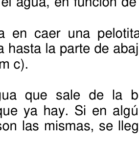
Topic: Magnetism, Electromagnetism Metodi: Biot-Savart Law, Lorentz Force Analysis, Conservation of Energy Competenze: Physical Reasoning, Mathematical Modeling Objects: Wire, Magnet Fonte: Testo (PDF) — p.3
PT71. Scuola superiore di commercio Carlos Pellegrini Città di Buenos Aires.
Treno Maglev. Maglev (per magnetic levitation, levitazione magnetica in inglese) è un sistema La Commissione ha adottato una proposta di direttiva che prevede l’applicazione di misure di sicurezza per la trasmissione di veicoli aerei aerei a bordo. alcune città del mondo, che usa la levitazione magnetica come forma di Propulsione e guida dei treni. La sua idea è basata sull’elevazione del treno con la forza. La forza di un’altra parte è di circa un milione di metri. Raggiustare il sistema di rotazione, per ottenere velocità più elevate e meno consumo di energia.
Per esempio, un sistema Maglev è costituito da treni da 10 vagoni di 9 tonnellate e 50 metri ciascuno. Supponiamo che questi viaggiino su un binario che possiede un cavo lungo, approssimativamente lineare, con un corrente elettrica come se osserva la figura. Ricorda che una corrente in questo modo genera il suo intorno a un campo magnetico modulo 0 . , 2 I B R dove R è la distanza dal cavo.
a) Calcolare il corrente che deve attraversare il cavo, se si desidera che il intensità del campo magnetico ad un’altezza di h = 3 mm, avere modulo 0,1 T. Che direzione e senso avrà il campo magnetico?
Ogni vagone ha un circuito che Fa passare il pavimento del vagone una corrente di I = 400 A come mostrato
- lo disegno. Al
- Che cosa?
un
Conduzione
con
corrente all’interno di un campo magnetico,
se
Produce
Una .
forza
de
modulo
…
F
I L B
b) Calcolare la forza che il campo magnetico levitatore deve fare per sostenere il treno. c) Calcolare la distanza dal binario da cui il treno può prendere il passaggio.
Inoltre il treno ha un altro sistema che gli permette di propulsarsi e accelerare. d) Per accelerare il treno dal ritardo fino a 450 km/h Quanta energia sarà necessaria? e) Se si desidera raggiungere questo obiettivo in 1 minuto, quale sarà la forza di propulsione necessaria?
Se avessimo un treno tradizionale, ci sarebbe un’arruzione nel funzionamento interno.
- Le ruote. Per semplificare supponiamo una massa puntuale che ha un coefficiente di rottura di 0,2 con il pavimento. f) Per ottenere lo stesso che si trova nei punti c) e d), con la stessa energia e la stessa accelerazione. A che velocità sarebbe arrivato?
Supponiamo che un treno funzioni in questo modo. Un passeggero salire sul treno, con un carico di 2 10 C (che possono essere generate elettroestaticamente). Si el uomo è di 1,6 metri. g) Cosa succederà quando il treno raggiungerà le 450 km/h?
OAF 2012 - 95 Inoltre l’Organizzazione Mondiale della Sanità non raccomanda l’esposizione. Magnetico di massa superiore a 100 μT h) A che distanza dovrebbero essere tenuti i binari, per non
- Esporsi a un rischio? 7 0 4 .10 Tm A
Topic: Magnetism, Electromagnetism Metodi: Biot-Savart Law, Lorentz Force Analysis, Conservation of Energy Competenze: Physical Reasoning, Mathematical Modeling Objects: Wire, Magnet Fonte: Testo (PDF) — p.3
PT71. The Carlos Pellegrini School of Commerce City of Buenos Aires.
Maglev train. Maglev (for magnetic levitation, magnetic levitation in English) is a system The new technology is being developed in the field of high-technology mass transport, which was implemented experimentally in Some cities around the world, which uses magnetic levitation as a form of train propulsion and guidance. His idea is to lift the train by force . electromagnetic so that it does not touch the rail, and thus avoid the force of The use of the same means of transportation is not limited to the use of the same means of transportation.
For example, a Maglev system consists of 10 wagon trains of 9 tons and 50 meters each. Suppose these travel over a railroad. which has a long cable, approximately straight line, with an electric current I as You see in the figure. Remember that one Current in this way generates its around a module magnetic field 0 . , 2 I B R where R is the distance to the wire.
(a) Calculate the current to be passed through the cable if the current is to be magnetic field intensity at a height of h = 3 mm have module 0,1 T. What direction and direction will the magnetic field take?
In turn each carriage has a circuit that
It ‘s passing through the floor of the car .
current of I = 400 A as shown in the
I draw.
Al
There are
un
driver
with
current within a magnetic field,
se
It produces
One .
Force
de
Module
…
F
I L B
(b) Calculate the force that the levitating magnetic field must make to
Hold the train.
(c) Calculate the distance from the railway to which the train can take off.
In addition, the train has another system that allows it to propel itself and accelerate. (d) To accelerate the train from rest to a speed of 450 km/h How much energy will it take? (e) If you want to achieve this in 1 min, what will be the propulsion force
- What?
If you had a traditional train, there would be a roughing in the internal operation. The wheels. To simplify, let’s assume a point mass that has a The coefficient of friction of 0,2 with the floor. (f) To achieve the same as in points (c) and (d), with the same energy and The same acceleration. How fast would it go?
Let’s say a train works this way. A passenger gets on the train, with a load of 2 10 C (which can be generated by electrostatic means). Si el Man is six feet tall. (g) What will happen to it when the train reaches 450 km/h?
The following is the list of the countries of the European Union: In addition, the World Health Organization does not recommend exposure. human to magnetic fields greater than 100 μT. (h) How far should the railway be kept from the rails, in order not to to take a risk? 7 0 4 .10 Tm A
Topic: Magnetism, Electromagnetism Metodi: Biot-Savart Law, Lorentz Force Analysis, Conservation of Energy Competenze: Physical Reasoning, Mathematical Modeling Objects: Wire, Magnet Fonte: Testo (PDF) — p.3
PT72. Colegio Nacional Dr. Arturo U. Illia
Colegio Mar del Plata de las Colinas
Instituto Albert Einstein Mar del Plata, Buenos Aires.
El choque de todos los días. Un automóvil, de masa 1.800 kg, parte desde un determinado punto y recorre por una calle x, 22 m acelerando durante 4,75 segundos, manteniendo luego la velocidad constante 8 segundos hasta llegar a un cruce. Otro auto de la misma marca y modelo mantiene su rapidez constante a lo largo de una curva, sin peralte, de 20 metros de radio. Ninguno de los conductores reaccionó ante la presencia del otro vehículo chocando violentamente en el cruce. Los automóviles se pegan luego del choque, dejando marcas paralelas de arrastre con un ángulo de 60°, respecto a la calle x, como se ve en la figura. El límite de velocidad para la calle y la curva es de 40 km/h.
a) Calcule la aceleración del automóvil que avanzaba por la calle x.
b) Grafique la posición del primer auto, en función del tiempo, hasta el
cruce de rutas.
c) ¿Cuántos metros recorre el primer auto hasta llegar al cruce?
d) ¿Qué velocidad máxima alcanzó el primer auto?
e) El segundo conductor decía que no había excedido la velocidad
máxima. ¿Es ésto verdad?
f) ¿Cuánto vale la fuerza de roce entre el pavimento de la curva y las
ruedas del segundo automóvil?
g) Determine la pérdida de energía cinética en el choque.
Topic: Newtonian Mechanics, Conservation of Momentum Metodi: Kinematic Equations, Conservation of Momentum, Vector Decomposition Competenze: Physical Reasoning, Mathematical Modeling Objects: Cart Fonte: Testo (PDF) — p.3
PT72. Il Dr. Arturo U. Illia
La scuola Mar del Plata de las Colinas
L’Istituto Albert Einstein Mar del Plata, Buenos Aires.
Il colpo di tutti i giorni. Una macchina, di 1.800 kg, partendo da un determinato punto e percorre una strada x, 22 m accelerando per 4,75 secondi, mantenendo poi la velocità costante 8 secondi fino a raggiungere un incrocio. Un’altra macchina di La stessa marca e il modello mantengono la loro velocità. costante lungo una curva, senza perlate, di 20 metri di radio. Nessuno di loro. I conducenti hanno reagito alla presenza del Un altro veicolo si è schiantato violentemente sulla strada .
- Si, si. Le auto si colpiscono dopo l’impatto, lasciando segni paralleli di trascinare con un angolo 60° rispetto alla strada x, come si vede nella figura. El limite di velocità per strada e curva è di 40 km/h.
a) Calcolare l’accelerazione dell’auto che stava andando sulla strada x. b) Graficare la posizione della prima auto, in base al tempo, fino al
- Un’altra strada. c) Quanti metri percorre la prima auto fino al punto di attraversamento? d) Qual è stata la velocità massima raggiunta dalla prima auto? e) Il secondo conducente diceva di non aver superato la velocità. massimo. È vero? f) Qual è la forza di rottura tra il pavimento della curva e le ruote della seconda auto? g) Determina la perdita di energia cinetica in collisione.
Topic: Newtonian Mechanics, Conservation of Momentum Metodi: Kinematic Equations, Conservation of Momentum, Vector Decomposition Competenze: Physical Reasoning, Mathematical Modeling Objects: Cart Fonte: Testo (PDF) — p.3
PT72. National College Dr. - Arthur U. Illia
College Mar del Plata of the Hills
The Albert Einstein Institute The city of Mar del Plata, Buenos Aires.
The shock of every day. A car, weighing 1,800 kg, starting from A certain point and it goes down a street x, 22 m accelerating for 4.75 seconds, then maintaining the constant speed 8 seconds to reach a crossroads. Another car from The same brand and model keeps its speed. constant along a curve, without pearls, 20 meters in radius. None of them . Drivers reacted to the presence of the Another vehicle crashed violently into the . cross. Cars collide after the crash, leaving parallel marks of drag at an angle of 60°, with respect to street x, as shown in Figure 1. El speed limit for the street and curve is 40 km/h.
(a) Calculate the acceleration of the car moving along x street. (b) Graph the position of the first car, depending on the time, up to the crossroads. (c) How many metres does the first car travel to the crossing? (d) What was the maximum speed achieved by the first car? (e) The second driver said he hadn ‘t exceeded the speed . Maximum. Is this true? (f) What is the frictional force between the curve pavement and the curve? The wheels of the second car? (g) Determine the loss of kinetic energy in the impact.
Topic: Newtonian Mechanics, Conservation of Momentum Metodi: Kinematic Equations, Conservation of Momentum, Vector Decomposition Competenze: Physical Reasoning, Mathematical Modeling Objects: Cart Fonte: Testo (PDF) — p.3
PT73. Colegio Nacional Dr. Arturo U. Illia
Colegio Mar del Plata de las Colinas
Instituto Albert Einstein Mar del Plata, Buenos Aires.
Un circuito con opciones. Se construye un circuito con una fuente de alimentación de V = 4,5 V (con una resistencia interna r de 7,5 Ω) , se colocan cinco resistencias R de 2 Ω como se indica en la figura. En el circuito se colocan tres interruptores L1, L2 y L3 como indica la figura. Calcule: a) La corriente que suministra la fuente si solamente L1 está cerrada. b) La potencia que entrega la fuente si solamente L2 está cerrada
y x 60°
OAF 2012 - 96
c) La corriente que circula por AB cuando los tres interruptores están
cerrados.
d) Encuentre la configuración de llaves que lleva a la máxima disipación de
potencia.
e) Para la condición anterior encuentre la energía desarrollada en calor,
luego de 2 minutos, en el interior de la batería.
f) La diferencia de potencial entre C y D cuando las tres llaves están
cerradas.
g) Como cambia la respuesta del inciso anterior si se conecta el punto D a
tierra?
Topic: Circuits Metodi: Kirchhoff’s Laws, Equivalent Circuit Reduction Competenze: Physical Reasoning Objects: Resistor, Battery, Switch Fonte: Testo (PDF) — p.3
PT73. Il Dr. Arturo U. Illia
La scuola Mar del Plata de las Colinas
L’Istituto Albert Einstein Mar del Plata, Buenos Aires.
Un circuito con opzioni. Si costruisce un circuito con una fonte di alimentazione di V = 4,5 V (con una R resistenza interna r di 7,5 Ω) , si inseriscono cinque resistenze R di 2 Ω come se indica la figura. Il circuito è dotato di tre interruttori L1, L2 e L3 come indica la figura. Calcola: a) Il corrente fornito dalla fonte se solo L1 è chiuso. b) Potenza fornita dalla fonte se solo L2 è chiuso
y x 60°
OAF 2012 - 96 c) Il corrente che circola per AB quando i tre interruttori sono in funzione chiusi. d) Trova la configurazione di chiavi che porta alla massima dissipazione di Potenza. e) Per la condizione precedente, trova l’energia sviluppata in calore, Dopo due minuti, all’interno della batteria. f) La differenza di potenziale tra C e D quando i tre chiavi sono chiusi. g) Come cambia la risposta del punto precedente se il punto D è collegato a terra?
Topic: Circuits Metodi: Kirchhoff’s Laws, Equivalent Circuit Reduction Competenze: Physical Reasoning Objects: Resistor, Battery, Switch Fonte: Testo (PDF) — p.3
PT73. National College Dr. - Arthur U. Illia
College Mar del Plata of the Hills
The Albert Einstein Institute The city of Mar del Plata, Buenos Aires.
A circuit with options. A circuit is constructed with a power supply of V = 4,5 V (with a The internal resistance r of 7.5 Ω) is given by placing five resistances R of 2 Ω as follows: The figure shows. In the circuit three switches L1, L2 and L3 are placed as indicates the figure. Calculate: (a) The current supplied by the source if only L1 is closed. (b) Power delivered by the source if only L2 is closed
y x 60°
The following is the list of the Member States’ financial statements: (c) Current flowing through AB when all three switches are in operation
- It’s closed. (d) Find the key configuration leading to maximum dissipation of power. (e) For the above condition find the energy developed in heat, After 2 minutes, inside the battery. (f) The potential difference between C and D when the three keys are It’s closed. (g) How does the answer to the previous paragraph change if point D is connected to the earth?
Topic: Circuits Metodi: Kirchhoff’s Laws, Equivalent Circuit Reduction Competenze: Physical Reasoning Objects: Resistor, Battery, Switch Fonte: Testo (PDF) — p.3
PT74. Colegio Nacional Dr. Arturo U. Illia
Colegio Mar del Plata de las Colinas
Instituto Albert Einstein Mar del Plata, Buenos Aires.
Construyendo un calefactor.
Se quiere construir un calefactor a partir de un alambre de tungsteno (wolframio)
de 20,00 m de longitud y 0,50 mm de diámetro. El sistema consiste en el
alambre enrollado cubierto por una vaina cerámica. El calefactor se introduce
directamente en el recipiente con el líquido a calentar y se conecta a una fuente
de 220 V.
a) Calcule la masa del cable.
b) Por el alambre circula una corriente que calentará el elemento. Calcule
la resistencia eléctrica a temperatura ambiente.
c) Se diseña el dispositivo para que trabaje a 1500 K calcule la resistencia
eléctrica a esta nueva temperatura.
d) Calcule la potencia que disipa el calefactor cuando se encuentra a la
temperatura de operación
e) El calefactor se utiliza para calentar un vaso de 200 cm3 de agua de
12ºC hasta 80ºC, calcule cuanto tiempo tardará en completar este
proceso.
f) El costo del proceso e) si el valor del kWh es de 5 centavos.
g) Como el calefactor se encuentra embutido dentro de una cápsula de
cerámica y ésta se sumerge en agua. Explique los procesos de
transmisión de calor que se producen desde el alambre hasta el agua.
h) ¿Cuánto tiempo tardará el dispositivo en llegar hasta la temperatura de
trabajo suponiendo que se lo conecta a 220 V y que no hay pérdidas en
el sistema.
Datos:
W = 19.250 kg/m3 ; W = 5,25 x 10-8 .m;W = 4,5 x 10-3 1/K ;
CeW =130 J/(K·kg) ; CeH2O = 4.180 J/(K·kg);
A
A
R
R
R
R
r
C
V
L1
L2
L3
B
D
OAF 2012 - 97
Topic: Circuits, Thermodynamics Metodi: Kirchhoff’s Laws, Conservation of Energy Competenze: Physical Reasoning, Mathematical Modeling Objects: Resistor, Wire Fonte: Testo (PDF) — p.3
PT74. Il Dr. Arturo U. Illia
La scuola Mar del Plata de las Colinas
L’Istituto Albert Einstein Mar del Plata, Buenos Aires.
Costruendo un riscaldatore. Si vuole costruire un riscaldatore a partire da un filo di tungsteno (wolframio). di 20,00 m di lunghezza e di 0,50 mm di diametro. Il sistema consiste nel filo rotolato coperto da una valigia ceramica. Il riscaldatore viene inserito. direttamente nel recipiente con il liquido da riscaldare e viene collegato a una fonte de 220 V. a) Calcolare la massa del cavo. b) Il filo è circolato da un corrente che scalda l’elemento. Calcola la resistenza elettrica a temperatura ambiente. c) Il dispositivo è progettato per funzionare a 1500 K calcolare la resistenza elettrica a questa nuova temperatura. d) Calcolare la potenza che il riscaldatore si dissipa quando si trova alla temperatura di funzionamento e) Il riscaldatore è utilizzato per riscaldare un bicchiere di 200 cm3 di acqua di 12°C a 80°C, calcola quanto tempo ci vorrà per completare questo processo. (f) Il costo del processo e) se il valore del kWh è di 5 centesimi. g) Come il riscaldatore è inserito in una capsula di ceramica e questa si immerge nell’acqua. Spiegate i processi di trasmissione di calore che si produce dal filo all’acqua. h) Quanto tempo ci vorrà per raggiungere la temperatura di La mia funzione è che si colleghi a 220 V e non ci siano perdite in il sistema.
Datati:
W = 19.250 kg/m3 ; W = 5,25 x 10-8 .m;W = 4,5 x 10-3 1/K ;
CeW = 130 J/(K·kg); CeH2O = 4,180 J/(K·kg);
A
A
R
R
R
R
r
C
V
L1
L2
L3
B
D
OAF 2012 - 97
Topic: Circuits, Thermodynamics Metodi: Kirchhoff’s Laws, Conservation of Energy Competenze: Physical Reasoning, Mathematical Modeling Objects: Resistor, Wire Fonte: Testo (PDF) — p.3
PT74. National College Dr. - Arthur U. Illia
College Mar del Plata of the Hills
The Albert Einstein Institute The city of Mar del Plata, Buenos Aires.
Building a heater. You want to build a heater from tungsten wire (wolframium). a length of 20,00 m and a diameter of 0,50 mm. The system consists of the wire coated with a ceramic case. The heater is inserted directly into the container with the liquid to be heated and connected to a source de 220 V. (a) Calculate the mass of the cable. (b) A current will flow through the wire to heat the element. Calculate the electrical resistance at room temperature. (c) The device is designed to work at 1500 K to calculate resistance electricity at this new temperature. (d) Calculate the heating power when the heater is at the operating temperature (e) The heater is used to heat a 200 cm3 glass of water from 12°C to 80°C, calculate how long it will take to complete this process. (f) The cost of the process; (e) if the value of kWh is 5 cents. (g) As the heater is embedded inside a capsule of ceramic and this one is submerged in water. Explain the processes of heat transfer from the wire to the water. (h) How long will it take the device to reach the temperature of I work on the assumption that you plug it in to 220 V and there are no losses in the system.
The data:
W = 19.250 kg/m3 ; W = 5,25 x 10-8 .m;W = 4,5 x 10-3 1/K ;
The following table shows the results of the calculation of the weight of the product:
A
A
R
R
R
R
r
C
V
L1
L2
L3
B
D
The following points shall be added:
Topic: Circuits, Thermodynamics Metodi: Kirchhoff’s Laws, Conservation of Energy Competenze: Physical Reasoning, Mathematical Modeling Objects: Resistor, Wire Fonte: Testo (PDF) — p.3
PT75. Instituto de Educación Media Dr. Arturo Oñativia
Colegio Belgrano
Instituto Santa Rosa de Viterbo
Instituto Padre Gabriel Tommasini
Instituto de Educación Integral
Instituto Modelo
Colegio del Cerro Ciudad de Salta.
UnexperimentofundamentaldelaFísicadePrincipiosdelsiglo XX. A principio del siglo XX Milikan y Fletcher diseñaron y construyeron un equipo experimental que les permitió medir la carga del electrón como así tambien su masa. Una representación esquematica del sistema se muestra en la figura, en el se observa una camara en el que se introduce gotitas de un aceite especial gracias a un pulverizador de Spray , estas gotas caen por la interacción gravitatoria, la densidad de estas gotas es . Sabemos que estas gotas al caer, sufen un rozamiento con el aire oponiendose al movimiento de manera tal que retarda la caída .Esta fuerza retardadora está es proporcional a la velocidad y esta descripta por la ley de Stockes siendo su valor:
Siendo la viscocidad del aire, el radio de la gota y la velocidad de caída. Estas gotas se cargan al capturar iones presentes en el aire o bien por fricción en la boquilla del pulverizador. Con este experimento se comprobó que la carga adquirida es un multiplo de la carga del electrón. 1- Dibujar las fuerzas que actuan sobre la gota de aceite cuando esta cae. 2- Escribir la ecuación de movimiento para la gota.
Luego de caer cierto tiempo, la fuerza de fricción aumenta hasta que llega un momento en que la misma deja de hacerlo al no evidenciarse cambios en la velocidad. 3- Indique como cambia la ecuación de movimiento obtenida en 2-y obtenga la maxima velocidad alcanzada , que llamaremos velocidad limite . en función del radio de la gota, la gravedad, la viscosidad del aire y la densidad del aceite. 4- Dibuja cualitativamente la velocidad en función del tiempo suponiendo que la gota partió del reposo.
La velocidad limite se puede medir por observación directa mediante un
microscopio que tiene una escala graduada. Sin embargo no es fácil medir el
radio y las masas de las gotas.
En una experiencia de laboratorio , se observa que en ausencia de campo
eléctrico esto es , una determinada gota que cae con velocidad límite
,y sabiendo además que la viscocidad del aire es
, y la densidad del aceite es .
5- Determinar el valor de la masa del electron y calcular su valor.
6- Si cerramos el interruptor que observamos en el esquema, se estable
entre las placas un campo eléctrico que se lo puede regular variando al
voltaje, por lo que se puede hacer que la gota sé quede quieta, es decir
mantenerla en reposo.
7- Si el campo que mantiene a la gota quieta es ,
calcular el valor d ela carga q.
OAF 2012 - 98
Topic: Modern-Quantum Physics, Electrostatics Metodi: Free-Body Diagram, Hydrostatic Equilibrium, Differential Equations Competenze: Physical Reasoning, Mathematical Modeling Objects: Droplet, Capacitor Fonte: Testo (PDF) — p.3
PT75. Istituto di media educazione Dr. Arturo Oñativia
Collegio Belgrano
Istituto Santa Rosa di Viterbo
Instituto Padre Gabriel Tommasini
Istituto di istruzione integrale
Istituto Modello
Collegi del Cerro Città di Salta.
Un’esperienza fondamentale della fisica e dei principi del XX secolo. All’inizio del XX secolo Milikan e Fletcher progettarono e costruirono un team. L’esperimento che ha permesso loro di misurare la carica dell’elettrone e anche il suo massa. Una rappresentazione schematica del sistema è mostrata nella figura, in se osserva una camera in cui si inseriscono gocce di olio speciale grazie A un spray, queste gocce cadono per l’interazione gravitazionale, la La densità di queste gocce è . Sappiamo che queste gocce, cadendo, soffrono un ruggine con l’aria opposta. Il movimento in modo tale da rallentare il cadere . Questa forza rallentatrice è E ’ proporzionale alla velocità e questa è descritta dalla legge di Stockes essendo il suo Valore:
Essendo la viscosità dell’aria, il raggio della goccia e la velocità di caduta. Queste gocce si caricano catturando gli ioni presenti nell’aria o per attrito. nella bocca del pulverizzatore. Con questo esperimento è stato dimostrato che il carico acquisito è un multiplo della carica dell’elettrone. 1- Disegnare le forze che agiscono sulla goccia di olio quando cade. 2- Scrivere l’equazione di movimento per la goccia.
Dopo un certo tempo di caduta, la forza di attrito aumenta fino a quando arriva un La situazione è così: velocità. 3- Indicare come cambia l’equazione di movimento ottenuta in 2-y Ottieni la velocità massima raggiunta , che chiameremo velocità .
- Limitazione . in funzione del raggio della goccia, della gravità, della viscosità del l’aria e la densità dell’olio. 4- Disegna qualitativamente la velocità in funzione del tempo supponendo che la goccia è partita dal riposo.
La velocità limite può essere misurata da osservazione diretta mediante un un microscopio che ha una scala graduata. Tuttavia non è facile misurare il radio e le masse delle gocce. In un esperimento di laboratorio , si osserva che in assenza di campo elettrico , cioè , una certa goccia che cade a velocità limite . , e sapendo inoltre che la viscosità dell’aria è , e la densità dell ’ olio è . 5- Determinare il valore della massa dell’elettrone e calcolare il suo valore. 6- Se chiudiamo il interruttore che vediamo nello schema, stabiliremo tra le schede un campo elettrico che può essere regolato variando voltage, in modo da poter far sì che la goccia sia ferma, cioè
- La tengo a riposo. 7- Se il campo che mantiene la goccia ferma è , Calcolare il valore d della carica q.
OAF 2012 - 98
Topic: Modern-Quantum Physics, Electrostatics Metodi: Free-Body Diagram, Hydrostatic Equilibrium, Differential Equations Competenze: Physical Reasoning, Mathematical Modeling Objects: Droplet, Capacitor Fonte: Testo (PDF) — p.3
PT75. The Institute of Middle Education Dr. Arturo Oñativia is a great writer.
Belgrano College
The Santa Rosa Institute of Viterbo
Father Gabriel Tommasini Institute is located in the city of
Institute of Comprehensive Education
Model Institute
College of the Hill . Salt City.
A fundamental experiment of the Physics of the 20th century. In the early 20th century , Milikan and Fletcher designed and built a team . This experimental experiment allowed them to measure the charge of the electron as well as its Mass. A schematic representation of the system is shown in the figure, in the following table. You see a camera where you put drops of special oil in . To a spray sprayer, these droplets fall by gravitational interaction, the density of these droplets is . We know that these droplets falling, they suffer a scratch with the air opposing them. The force is the same as the force of the fall . It is proportional to velocity and it is described by Stockes’ law being its value:
Being the viscosity of the air, the radius of the drop and the velocity of fall. These droplets are charged by capturing ions in the air or by friction. in the sprayer nozzle. This experiment showed that the load acquired is a multiple of the electron charge. 1- Draw the forces acting on the oil drop when it falls. 2- Write the equation of motion for the drop.
After falling for a while, the friction force increases until a The Commission has already taken a number of measures to ensure that the Community’s financial situation is adequately monitored. speed. 3- Indicate how the equation of motion obtained in 2-y changes. Get the maximum speed reached , which we ‘ll call speed . The limit . The test results are based on the radius of the drop, gravity, viscosity of the drop. air and oil density. 4- Qualitatively draw the speed based on time by assuming That the drop started from rest.
The speed limit can be measured by direct observation using a A microscope that has a graduated scale. However, it is not easy to measure the radio and the mass of the droplets. In a laboratory experiment , it is observed that in the absence of a field This is a certain drop falling at a speed limit . , and knowing furthermore that the viscosity of the air is , and the density of the oil is . 5- Determine the mass value of the electron and calculate its value. 6- If we close the switch we see in the diagram, it stays stable. between the plates an electric field which can be regulated by varying the voltage, so you can make the dropper know to stay still, that is Keep her at rest. 7- If the field that keeps the drop still is , calculate the value of d of the charge q.
The following is the list of the Member States’ financial statements:
Topic: Modern-Quantum Physics, Electrostatics Metodi: Free-Body Diagram, Hydrostatic Equilibrium, Differential Equations Competenze: Physical Reasoning, Mathematical Modeling Objects: Droplet, Capacitor Fonte: Testo (PDF) — p.3
PT76. Instituto de Educación Media Dr. Arturo Oñativia
Colegio Belgrano
Instituto Santa Rosa de Viterbo
Instituto Padre Gabriel Tommasini
Instituto de Educación Integral
Instituto Modelo
Colegio del Cerro Ciudad de Salta.
El innombrable.
Un cilindro homogéneo de aluminio,
de altura y radio , se encuentra
suspendido por un hilo inextensible
del extremo de una barra de masa .
La barra está apoyada en el borde de
un recipiente que contiene agua,
donde
el
cilindro
se
encuentra
sumergido una profundidad (ver
Figura 2). En estas condiciones el
sistema se encuentra en equilibrio.
La densidad del agua es y la del aluminio es .
a) Realizar un diagrama de la situación dibujando todas las fuerzas que
actúan sobre el cilindro y la barra. Especifique el punto de aplicación de
cada fuerza.
b) Determinar la fuerza de tensión del hilo.
c) Calcular la relación
necesaria para que el sistema esté en
equilibrio.
Considere ahora la situación
esquematizada en la Figura 3.
Se
suspende
un
segundo
cilindro, idéntico al primero, en
el otro extremo de la barra. Éste
también
se
encuentra
sumergido en agua. Si el primer
cilindro se encuentra sumergido
una altura y el segundo a una
altura :
d) Obtener el nuevo valor de la relación
necesaria para que el sistema
esté en equilibrio.
e) Si la altura a la que está sumergido el segundo cilindro aumenta en
¿a que altura
debe estar sumergido el primer cilindro
OAF 2012 - 99
para que el sistema permanezca en equilibrio con el mismo valor de la
relación
encontrada en el inciso anterior?
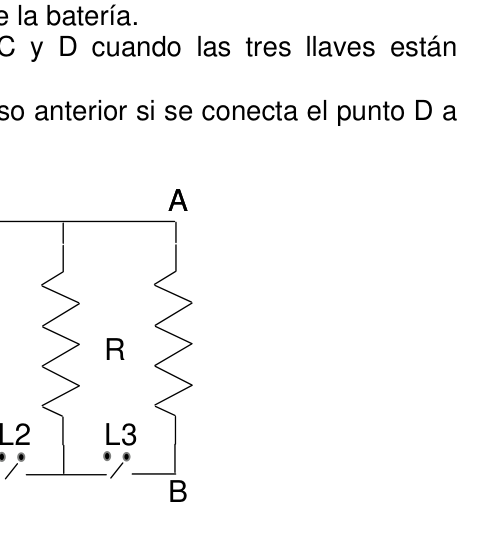
Topic: Fluid Mechanics, Rigid Body Statics Metodi: Hydrostatic Equilibrium, Torque & Angular Momentum Analysis, Free-Body Diagram Competenze: Physical Reasoning, Mathematical Modeling Objects: Cylinder, Rod, Container Fonte: Testo (PDF) — p.3
PT76. Istituto di media educazione Dr. Arturo Oñativia
Collegio Belgrano
Istituto Santa Rosa di Viterbo
Instituto Padre Gabriel Tommasini
Istituto di istruzione integrale
Istituto Modello
Collegi del Cerro Città di Salta.
L’innominato. Un cilindro omogeneo di alluminio, di altezza e di raggio , si trova Sospeso da un filo inestensibile dall’ estremità di una barra di massa . La barra è appoggiata al bordo di un contenitore contenente acqua, dove el cilindro se Trova La sua profonda immersione (vedi Figura 2). In queste condizioni il Il sistema è in equilibrio. La densità dell ’ acqua è e quella dell ’ alluminio è . a) realizzare un diagramma della situazione disegnando tutte le forze che agiscono sul cilindro e sulla barra. Indicare il punto di applicazione di ogni forza. b) Determinare la forza di tensione del filo. c) Calcolare il rapporto La sicurezza è una delle condizioni necessarie per il sistema. equilibrio.
Ora considera la situazione. Scosto di cui alla figura 3. Se
-
Sospende un Secondo cilindro, identico al primo, in l’altra estremità della barra. Questo. Anche io se Trova immerso in acqua. Se il primo Il cilindro è immerso. Una altezza e la seconda a una. Altezza: d) Ottenere il nuovo valore della relazione La necessità di un sistema di controllo sta in equilibrio. e) Se l’altezza di immersione del secondo cilindro aumenta di
-
A che altezza? Il primo cilindro deve essere immerso.
OAF 2012 - 99 Per mantenere il sistema in equilibrio con lo stesso valore di Relazione che è stata trovata nel precedente punto?
Topic: Fluid Mechanics, Rigid Body Statics Metodi: Hydrostatic Equilibrium, Torque & Angular Momentum Analysis, Free-Body Diagram Competenze: Physical Reasoning, Mathematical Modeling Objects: Cylinder, Rod, Container Fonte: Testo (PDF) — p.3
PT76. The Institute of Middle Education Dr. Arturo Oñativia is the first
Belgrano College
The Santa Rosa Institute of Viterbo
Father Gabriel Tommasini Institute is located in the city of
Institute of Comprehensive Education
Model Institute
College of the Hill . Salt City.
The nameless. A homogeneous aluminium cylinder, Height and radius , it ‘s located Suspended by an unextended thread from the end of a mass bar . The bar is supported on the edge of the a container containing water, Where el cylinder se Find him . The water is deeply submerged (see The following table shows the results of the study: In these conditions the The system is in balance. The density of the water is and the density of the aluminum is . (a) Draw a diagram of the situation drawing all the forces that are They act on the cylinder and the bar. Specify the point of application of every force. (b) Determine the tensile strength of the wire. (c) Calculate the ratio necessary for the system to be in The balance.
Consider the situation now. This is outlined in Figure 3. Se suspended un Second . cylinder, identical to the first one, in The other end of the bar. This one . I ‘m also . se Find him . I’m in the water. If the first The cylinder is submerged. One height and the second one . Height: (d) Getting the new value of the ratio The system is not yet fully developed. It’s in balance. (e) If the height at which the second cylinder is submerged increases by
What height? The first cylinder must be submerged.
The following is the list of the countries of the European Union: The system is balanced with the same value as the Relationship the one found in the previous paragraph?
Topic: Fluid Mechanics, Rigid Body Statics Metodi: Hydrostatic Equilibrium, Torque & Angular Momentum Analysis, Free-Body Diagram Competenze: Physical Reasoning, Mathematical Modeling Objects: Cylinder, Rod, Container Fonte: Testo (PDF) — p.3
PT77. Instituto de Educación Media Dr. Arturo Oñativia
Colegio Belgrano
Instituto Santa Rosa de Viterbo
Instituto Padre Gabriel Tommasini
Instituto de Educación Integral
Instituto Modelo
Colegio del Cerro Ciudad de Salta.
Medición aparatosa sólo para olimpíadas.
A un famoso físico experimental BrayanComplexOtosIttusZinalaSontiBldvz ,
conocido por sus enredados métodos para realizar experiencias simples (qué
podemos esperar con semejante nombre) se le encomendó diseñar un
dispositivo para medir temperatura.
Al muy candoroso científico se le ocurrió empotrar una barra rígida de cobre de
masa M longitud conocida en una pared y colocarle en su extremo izquierdo
una resistencia R a la cual una fuente de tensión V le entrega potencia eléctrica.
En su extremo derecho, apoyó un espejo plano a 45º con respecto a la barra,
este espejo puede pivotear alrededor de A. Un laser dirigido perpendicularmente
a la línea de la barra, incide sobre el espejo y se refleja en la misma dirección de
ésta.
A una distancia D > l0 se encuentra un goniómetro y un medidor de altura (Ver
Fig 1.).
D= 6m-Distancia entre la pared y el goniómetro
Lo= 2m
La barra tiene una longitud inicial L0 y la temperatura ambiente es T0 =30o suponiendo además que la barra se encuentra aislada.
- Identifique y explique los fenómenos físicos involucrados en la experiencia.
- Exprese la longitud de la barra en términos de la variación de la temperatura. Esquema del experimento. 1. Pared. 2. Barra de cobre 3. Espejo plano 4. Laser
- Regla 6. Goniómetro 7. Fuente de tensión 8. Resistencia
1 2 4 3 5 6 8 7
OAF 2012 - 100
3) Encuentre la relación funcional que vincule la temperatura con la
desviación angular y la altura donde llega la luz laser reflejada.
4) Exprese ahora la relación encontrada en el inciso 3 en términos de la
potencia entregada de la desviación angular y de la altura donde llega la
luz laser reflejada.
Particularice la expresión anterior si R = 2 , V =50 Voltios
Topic: Geometric Optics, Thermodynamics Metodi: Ray Tracing, Small-Angle Approximation, Physical Modeling Competenze: Physical Reasoning, Mathematical Modeling Objects: Mirror, Rod Fonte: Testo (PDF) — p.3
PT77. Istituto di media educazione Dr. Arturo Oñativia
Collegio Belgrano
Istituto Santa Rosa di Viterbo
Instituto Padre Gabriel Tommasini
Istituto di istruzione integrale
Istituto Modello
Collegi del Cerro Città di Salta.
Misurazione apparecchiatura solo per le Olimpiadi. A un famoso fisico sperimentale BrayanComplexOtosIttusZinalaSontiBldvz , Conosciuti per i loro metodi complicati di fare semplici esperimenti (che (Sono stato incaricato di progettare un’edizione) dispositivo per misurare la temperatura. Il scienziato molto coraggioso ha pensato di inserire una barra rigida di rame di M massa conosciuta lunghezza su un muro e metterlo sul suo estremo sinistro una resistenza R alla quale una fonte di tensione V fornisce potenza elettrica. All’estremo destro, appoggiò uno specchio piatto a 45° rispetto alla barra. Questo specchio può girare intorno a A. Un laser diretto perpendicolare La linea della barra, incide sul specchio e si riflette nella stessa direzione di
- Questo. A distanza D > l0 si trovano un goniometro e un altimetro (vedi Fig. 1.) D= 6m-Distanza tra il muro e il goniometro Lo= 2m
La barra ha una lunghezza iniziale L0 e la temperatura ambiente è T0 = 30o supponendo inoltre che la barra sia isolata.
- Identificare e spiegare i fenomeni fisici coinvolti nella esperienza.
- Esprimere la lunghezza della barra in termini di variazione della temperatura. Schema dell’esperimento. 1. Il muro. 2. Barretta di rame 3. Specchio piatto 4. Laser
- Regola 6. Goniometro 7. Fonte di tensione 8. Resistenza
1 2 4 3 5 6 8 7
OAF 2012 - 100 3) Trova il rapporto funzionale che collega la temperatura con la temperatura. la deviazione angolare e l’altezza a cui arriva la luce laser riflessa. 4) Ora esprime la relazione che si trova nel punto 3 in termini di Potenza consegnata dalla deviazione angolare e dall’altezza a cui arriva la luce laser riflessa.
Particulare l’espressione precedente se R = 2 , V = 50 Volti
Topic: Geometric Optics, Thermodynamics Metodi: Ray Tracing, Small-Angle Approximation, Physical Modeling Competenze: Physical Reasoning, Mathematical Modeling Objects: Mirror, Rod Fonte: Testo (PDF) — p.3
PT77. The Institute of Middle Education Dr. Arturo Oñativia is a great writer.
Belgrano College
The Santa Rosa Institute of Viterbo
Father Gabriel Tommasini Institute is located in the city of
Institute of Comprehensive Education
Model Institute
College of the Hill . Salt City.
Apparatus only for the Olympics. To a famous experimental physicist BrayanComplexOtosIttusZinalaSontiBldvz , He is known for his intricate methods of performing simple experiments (what We can expect with such a name) he was commissioned to design a temperature measuring device. The very sincere scientist came up with a hard copper bar of Mass M known length on a wall and place it on its left end a resistance R to which a voltage source V delivers electrical power. At its right end, it held a flat mirror 45 degrees with respect to the bar, This mirror can pivot around A. A laser directed perpendicularly The line of the bar, it hits the mirror and reflects in the same direction as This one. A goniometer and a height gauge are located at a distance D > l0 (see Figure 1.) D=6m-Distance between the wall and the goniometer Lo= 2m
The bar has an initial length L0 and the ambient temperature is T0 = 30o assuming further that the bar is isolated.
- Identify and explain the physical phenomena involved in the experience.
- Express the length of the bar in terms of the variation of the The temperature. Sketch of the experiment. 1. The wall. 2. Copper bar three. Flat mirror 4. Laser .
- Rule number six. Goniometer seven. The voltage source 8. Resistance
1 2 4 3 5 6 8 7
The following is the list of the countries of the European Union: 3) Find the functional relationship linking temperature to the temperature. angular deviation and the height at which the reflected laser light reaches. 4) Now state the relationship found in paragraph 3 in terms of the The power delivered from the angular deviation and the height at which the laser light reflected.
Particulate the above expression if R = 2 , V = 50 Volts
Topic: Geometric Optics, Thermodynamics Metodi: Ray Tracing, Small-Angle Approximation, Physical Modeling Competenze: Physical Reasoning, Mathematical Modeling Objects: Mirror, Rod Fonte: Testo (PDF) — p.3
PT78. EPET Nro. 4 Juan Agustín Larrús General Acha, La Pampa.
Nos encontramos con este circuito en una plaqueta de esta forma
E1= 6V
E3= 6V
E5=12V
r1= 3 Ohm
r3= 4 Ohm
E2= 3V
E4= 3V
r2= 6 Ohm
r4= 6 Ohm
r5= 3 Ohm r6= 8 Ohm r7= 1Ohm r8= 2 Ohm
r9= 4 ohm
Determinar
a) Debemos determinar los valores de la intensidad en cada unas de la
mallas (I1, I2 y I3) para saber si el circuito esta en buenas condiciones
b) Y que ocurre con las intensidades cuando el se abre el interruptor (Int.)
c) calcular el VABCDE
Topic: Circuits Metodi: Kirchhoff’s Laws, Equivalent Circuit Reduction Competenze: Physical Reasoning Objects: Battery, Resistor, Switch Fonte: Testo (PDF) — p.3
PT78. Il numero di EPET. 4 Juan Agustín Larrús Generale Acha, La Pampa.
Si trova questo circuito su una targa così.
E1= 6V E3= 6V E5=12V R1 = 3 Ohm R3 = 4 Ohm E2= 3V E4= 3V
R2 = 6 Ohm R4 = 6 Ohm R5=3 Ohm r6=8 Ohm r7=1Ohm r8=2 Ohm R9 = 4 ohm
Determinare a) Dobbiamo determinare i valori di intensità in ciascuna delle I1 e I3 per verificare se il circuito è in buona condizione b) E che si verifica con le intensità quando si apre il interruttore (Int.) c) calcolare il VABCDE
Topic: Circuits Metodi: Kirchhoff’s Laws, Equivalent Circuit Reduction Competenze: Physical Reasoning Objects: Battery, Resistor, Switch Fonte: Testo (PDF) — p.3
PT78. The following information shall be provided: 4 Juan Agustín Larrús General Acha, the Pampa.
We find this circuit on a plate like this.
E1= 6V E3= 6V E5=12V R1 = 3 Ohm R3 = 4 Ohm E2= 3V E4= 3V
R2 = 6 Ohm R4 = 6 Ohm R5 = 3 Ohm r6 = 8 Ohm r7 = 1Ohm r8 = 2 Ohm R9 = 4 ohms
Determine (a) We must determine the intensity values in each of the The following information shall be provided: (b) And that happens with the intensities when the switch is turned on (Int.) (c) calculate the VABCDE
Topic: Circuits Metodi: Kirchhoff’s Laws, Equivalent Circuit Reduction Competenze: Physical Reasoning Objects: Battery, Resistor, Switch Fonte: Testo (PDF) — p.3
PT79. EPET Nro. 4 Juan Agustín Larrús General Acha, La Pampa.
Se juntan 3 amigos los cuales tenia un caballo de carreras, una moto y un auto antiguo y deciden hacer un carrera entre los 3. El auto demora para llegar una velocidad maxima de 140 km /h, 25 segungos y con el peso del mismo demora 5 segundos en salir. El caballo demora 8 segundos en llegar a su velocidad maxima de 75 km/h. La moto demora 15 segundo en llegar a su velocidad maxima de 110 km/h, demorando en salir 1 segundo. a) Quien ganara la carrera
OAF 2012 - 101
b) En que momento se sobre pasan
c) La distancia a recorrer es de 400 metros
Topic: Newtonian Mechanics Metodi: Kinematic Equations Competenze: Physical Reasoning Objects: Cart Fonte: Testo (PDF) — p.3
PT79. Il numero di EPET. 4 Juan Agustín Larrús Generale Acha, La Pampa.
Si riuniscono tre amici che avevano un cavallo da corsa, una moto e una macchina. e decidono di fare una corsa tra i tre. L’auto tarda a raggiungere una velocità massima di 140 km/h, 25 secondi e con il peso dello stesso, ci vogliono 5 secondi per uscire. Il cavallo ha bisogno di 8 secondi per raggiungere la velocità massima di 75 km/h. La moto dura 15 secondi per raggiungere la velocità massima di 110 km/h,
- Si’, ci sono due. a) Chi vincerà la gara
OAF 2012 - 101 b) In che momento si superano c) La distanza da percorrere è di 400 metri
Topic: Newtonian Mechanics Metodi: Kinematic Equations Competenze: Physical Reasoning Objects: Cart Fonte: Testo (PDF) — p.3
PT79. The following information shall be provided: 4 Juan Agustín Larrús General Acha, the Pampa.
They get together three friends who had a racehorse, a motorcycle and a car. They’re old and they decide to run a race among the three. The car takes a long time to reach a top speed of 140 km/h, 25 seconds and With the same weight, it takes 5 seconds to get out. The horse takes 8 seconds to reach its maximum speed of 75 km/h. The motorcycle takes 15 seconds to reach its top speed of 110 km/h, Taking a second to get out. (a) Who wins the race
The following points shall be added: (b) At what moment are they overtaking (c) The distance to be covered is 400 metres
Topic: Newtonian Mechanics Metodi: Kinematic Equations Competenze: Physical Reasoning Objects: Cart Fonte: Testo (PDF) — p.3
PT80. EPET Nro. 4 Juan Agustín Larrús General Acha, La Pampa.
Un bloque de plata de 70 g es retirado de un horno e inmediatamente colocado en un calorímetro de aluminio de masa igual 120g y que contiene 340 g de agua.
- Calcular la Temp. del horno, sabiendo que la temp. Inicial del agua era 15 °C y que subió a 16 °C cuando se alcanzo el equilibrio térmico.
- Si en lugar de colocar plata hubiéramos colocado hierro con la misma temp. Cuanto hubiera sido la temperatura de equilibrio
- De cuanto tendría que haber sido la masa de hierro para que la temp. Se mantuviera
Topic: Thermodynamics Metodi: Conservation of Energy Competenze: Physical Reasoning Objects: Calorimeter Fonte: Testo (PDF) — p.3
PT80. Il numero di EPET. 4 Juan Agustín Larrús Generale Acha, La Pampa.
Un blocco d’ argento di 70 g viene estratto da un forno e immediatamente posto. in calorilitro di alluminio di massa pari a 120 g contenente 340 g di acqua.
- Calcolare il tempo. - Il forno, sapendo che il tempo. Inizialmente l’acqua era 15 °C e che è salito a 16 °C quando si è raggiunto l’equilibrio termico.
- Se invece di mettere l’argento avessimo messo l’ ferro con la stessa Temp. Quanto sarebbe stata la temperatura di equilibrio ?
- Quanto avrebbe dovuto essere la massa di ferro per aver temp. Si sarebbe mantenuto
Topic: Thermodynamics Metodi: Conservation of Energy Competenze: Physical Reasoning Objects: Calorimeter Fonte: Testo (PDF) — p.3
PT80. The following information shall be provided: 4 Juan Agustín Larrús General Acha, the Pampa.
A 70 g silver block is removed from an oven and immediately placed. in an aluminium heat meter of 120 g mass and containing 340 g water.
- Calculate the Temp. The oven, knowing that the temp. Initial water was 15 °C and which rose to 16 °C when the thermal equilibrium was reached.
- If instead of putting silver we had put iron with it Temp. How much would the equilibrium temperature have been ?
- Of how much iron mass it would have had to be for that temp. He would stay.
Topic: Thermodynamics Metodi: Conservation of Energy Competenze: Physical Reasoning Objects: Calorimeter Fonte: Testo (PDF) — p.3
PT81. Instituto Politécnico Superior General San Martín Rosario, Santa Fe.
La Prolongación. Un profe del Poli se queda sin servicio eléctrico en su casa de Funes. Un ex alumno vecino le ofrece “tirar una línea” desde su casa para disponer del servicio. La distancia, de 200 m, la cubre con dos cables de cobre de 2mm2 de sección.
El profe quiere usar la línea para alimentar una bomba de agua y una heladera con freezer, cuyos valores de chapa indican una potencia nominal de 1100W y 440W respectivamente, operando a 220V. Además dicha placa indica que ambos dispositivos pueden funcionar correctamente con una tensión mínima de 200V. También hay algunas lámparas de bajo consumo que suman 50W entre todas.
El profe hace un cálculo rápido, estima que deberá pasar la bomba a operación manual y desconectar la heladera si activa la bomba (pudiendo dejar todas las luminarias encendidas).
- ¿Está en lo cierto? ¿Por qué?
El ex alumno, luego de tirar la línea de alimentación, busca sus viejos apuntes, y hace algunos cálculos para determinar la sección mínima del cable para que la pérdida de tensión sea menor al 5% cuando el profe conecta todos sus artefactos al mismo tiempo.
- ¿Qué sección mínima debería tener la línea? ¿Qué sección comercial disponible sería la apropiada?
Mientras funciona solo uno de los equipos, el profe enciende una lámpara de mesa que se encuentra en un extremo de la misma. En el otro extremo de la mesa, a unos 2m, están sus anteojos desplegados que se componen de una lente neutra y otra con cierto aumento. Observa con curiosidad que al encender la lámpara, una imagen invertida de ésta se proyecta sobre la pared a 6 m de distancia de la misma.
OAF 2012 - 102 3. ¿Cuál es la potencia de la lente no neutra? ¿Qué tamaño tiene la imagen?
Observación: Considerando que los elementos operan con factores de potencia cercano a la unidad, puede considerar que las corrientes de línea (alterna) se comportan de igual manera que en corriente continua a efectos de cálculos.
Datos que pueden resultar útiles: Resistividad del cobre: (1/57) Ω.mm2/m Secciones comerciales de cables de cobre: 1-2-3-4-6-10 mm2
Topic: Circuits, Geometric Optics Metodi: Kirchhoff’s Laws, Thin Lens & Mirror Equation Competenze: Physical Reasoning, Mathematical Modeling Objects: Wire, Lens Fonte: Testo (PDF) — p.3
PT81. Istituto Politetnico Superiore Generale San Martín Rosario, Santa Fe.
L’Estrasurgenza. Un professore del Poli si è messo a corto di energia elettrica nella sua casa di Funes. Un ex Un vicino allievo ti offre di tirare una linea da casa tua per avere il tuo Servizio. La distanza, di 200 m, è coperta da due cavi di rame di 2 mm2 di sezione.
Il professore vuole usare la linea per alimentare una pompa d’acqua e un frigorifero con congelatore, i cui valori di laminazione indicano una potenza nominale di 1100W e 440W rispettivamente, a 220V. Inoltre, la targa indica che Entrambi i dispositivi possono funzionare correttamente con una tensione minima di 200V. Ci sono anche alcune lampade a basso consumo che hanno un totale di 50W tra
- Tutti.
Il professore fa un calcolo veloce, stima che dovrà mettere in funzione la bomba. Disattivare il frigorifero se si attiva la pompa (potete lasciare tutte le luci accese).
-
- Ha ragione? - Perché?
L’ex studente, dopo aver tirato fuori la linea di alimentazione, cerca i suoi vecchi appunti, e fa qualche calcolo per determinare la sezione minima del cavo per che la La perdita di tensione è inferiore al 5% quando il professore collega tutti i suoi artefatti contemporaneamente.
- Che sezione minima dovrebbe avere la linea? Che sezione commerciale disponibile sarebbe l’adeguata?
Mentre funziona solo uno dei dispositivi, il professore accende una lampada di un tavolo che si trova all’estremità di esso. L’altra estremità della La tua tabella, a circa 2 metri, sono gli occhiali che sono composti da una Lente neutrale e un’altra con un certo aumento. Guardate con curiosità che quando accendete La lampada, un’immagine invertita di questa viene proiettata sul muro a 6 m di distanza. distanza da essa.
OAF 2012 - 102 3. Qual è la potenza della lente non neutrale? Qual è la dimensione della immagine?
Nota: considerando che gli elementi operano con fattori di potenza L’unità di linea è un’unità di linea di linea di linea di linea. La capacità di calcolo di un’area di energia elettrica è di circa un milione di unità.
Dati che possono essere utili: Resistenza del rame: (1/57) Ω.mm2/m Sezioni commerciali di cavi di rame: 1-2-3-4-6-10 mm2
Topic: Circuits, Geometric Optics Metodi: Kirchhoff’s Laws, Thin Lens & Mirror Equation Competenze: Physical Reasoning, Mathematical Modeling Objects: Wire, Lens Fonte: Testo (PDF) — p.3
PT81. The French authorities have already confirmed that the Commission is not interested in the use of the information provided by the Commission. Rosario, Santa Fe.
The extension. A professor at the Poly is left without power at his Funes home. Un ex A neighboring student offers to draw a line from his home to get the money. The service. The distance, 200 m, is covered by two copper wires of 2 mm2 of section.
The professor wants to use the line to power a water pump and a refrigerator. with freezer, the sheet values of which indicate a rated power of 1100W and 440W respectively, operating at 220V. In addition, the plate indicates that Both devices can operate properly with a minimum voltage of 200V. There are also some low-power lamps that add 50W between All of them.
The professor makes a quick calculation, estimates that he will have to put the bomb into operation. manually and disconnect the refrigerator if the pump is activated (you can leave all the (for example, the following:
- Is he right? - Why? - I don’t know.
The former student, after throwing the food line, searches for his old notes, and It does some calculations to determine the minimum section of the cable so that the The stress loss is less than 5% when the professor connects all of his artifacts at the same time.
- What minimum section should the line have? What business section available would be the appropriate one?
While only one of the equipment is running, the professor lights a lamp. table that is at one end of it. At the other end of the line table, about 2m away, are his glasses unfolded which are made up of a Neutral lens and another with a certain magnification. Observe with curiosity that when you light it The lamp, an inverted image of it is projected onto the wall at 6 m from the distance from it.
The following points shall be added: 3. What’s the power of the non-neutral lens? What size is the What’s the picture?
Note: Whereas the elements operate with power factors near the unit, you can consider that the line currents (alternating) are They behave in the same way as in direct current for calculation purposes.
Data that may be useful: The copper resistance: (1/57) Ω.mm2/m Commercial sections of copper wire: 1-2-3-4-6-10 mm2
Topic: Circuits, Geometric Optics Metodi: Kirchhoff’s Laws, Thin Lens & Mirror Equation Competenze: Physical Reasoning, Mathematical Modeling Objects: Wire, Lens Fonte: Testo (PDF) — p.3
PT82. Instituto Politécnico Superior General San Martín Rosario, Santa Fe.
El Nuevo Ludión. Un pistón tal como el que se muestra en la figura contiene en su interior 5 moles de oxígeno, 100 gramos de agua y una esfera de caucho que posee una masa de 49.5 gramos. Inicialmente el sistema se encuentra en equilibro térmico a 10C. Por seguridad el pistón posee una válvula que proporciona a su interior una presión manométrica constante de 16343.1Pa.
Primera parte: el relevamiento En la situación inicial tal como se plantea en el problema hay que relevar:
- El volumen de oxígeno que hay dentro del pistón
- La fracción sumergida de la esfera de caucho en el agua
Segunda parte: la transformación Durante una transformación isobárica, el pistón se expande hasta que el volumen de oxígeno final alcanza los 0.22m3 y la temperatura del mismo ronda los 371C. En un instante inmediatamente después (es decir, antes de que el agua y la esfera interactúen con el oxígeno): 3. ¿Cuál la variación de energía interna que sufre el gas? 4. ¿Cuánta energía en forma de trabajo entrega el pistón durante la expansión? 5. ¿Cuánta energía en forma de calor se deberá entregarle al pistón para llegar hasta la temperatura final deseada?
Tercera parte: el intercambio de energía a través de calor
Luego de la transformación termodinámica que sufre el gas, el mismo comienza
a interactuar con el agua y la esfera que se encuentra dentro del pistón.
6. ¿Cuál será la temperatura final en el equilibrio térmico de la mezcla?
Cuarta parte: la pregunta del millón Una vez que se alcanza el equilibrio térmico en el sistema 7. ¿La esfera de caucho seguirá flotando?
Datos que pueden ser útiles: Densidad del agua a 10C: 1000kgm-3 Densidad del caucho a 10C: 990kgm-3 Coeficiente de dilatación del agua: 25x10-5C-1
O2
Agua
OAF 2012 - 103 Coeficiente de dilatación lineal del caucho: 8x10-6C-1 Calor específico del caucho: 2010 J kg-1C-1 Calor específico del agua: 4180 J kg-1C-1 Calor específico molar del oxígeno a presión constante: 29.40 J mol-1C-1 Calor específico molar del oxígeno a volumen constante: 21.10 J mol-1C-1 Constante Universal de los Gases: 8.314 J.mol-1.K-1
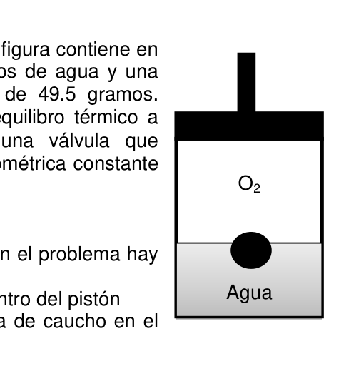
Topic: Thermodynamics, Fluid Mechanics Metodi: Ideal Gas Law, Hydrostatic Equilibrium, First Law of Thermodynamics Competenze: Physical Reasoning, Mathematical Modeling Objects: Gas, Piston, Sphere Fonte: Testo (PDF) — p.3
PT82. Istituto Politetnico Superiore Generale San Martín Rosario, Santa Fe.
Il Nuovo Ludione. Un pistone come quello mostrato nella figura contiene in All’interno sono 5 mol di ossigeno, 100 grammi di acqua e una. sfera di gomma che ha una massa di 49,5 grammi. Inizialmente il sistema si trova in equilibrio termico a 10C. Per sicurezza il pistone ha una valvola che Il suo interno è sottoposto a una pressione manometrica costante. de 16343.1Pa.
Parte 1: il rilievo Nella situazione iniziale come illustrato nel problema ci sono che rilevano:
- Il volume di ossigeno che c’è all’interno del pistone
- La frazione immersa della sfera di gomma nel acqua
Parte 2: la trasformazione Durante una trasformazione isobarica, il pistone si espandono fino a che il Il volume di ossigeno finale raggiunge 0,22 m3 e la temperatura del ciclo stesso 371°C. In un istante immediatamente dopo (cioè prima che il l’acqua e la sfera interagiscono con l’ossigeno): 3. Qual è la variazione di energia interna che il gas subisce? 4. Quanta energia in forma di lavoro il pistone fornisce durante il
- Espansione?
- Quanto energia in forma di calore deve essere consegnata al pistone per raggiungere la temperatura finale desiderata?
Parte III: lo scambio di energia attraverso il calore Dopo la trasformazione termodinamica che il gas subisce, comincia il suo stesso processo. interagire con l’acqua e la sfera che si trova all’interno del pistone. 6. Qual è la temperatura finale nell’equilibrio termico della miscela?
Quarta parte: la domanda del milione Una volta raggiunto l’equilibrio termico del sistema 7. La sfera di gomma continuerà a galleggiare?
Datos que pueden ser útiles: Densità dell’acqua a 10C: 1000kgm-3 Densità della gomma a 10C: 990 kgm-3 Coefficiente di dilatazione dell’acqua: 25x10-5C-1
O2
Acqua
OAF 2012 - 103 Coefficiente di dilatazione lineare della gomma: 8x10-6C-1 Calore specifico della gomma: 2010 J kg-1C-1 Calore specifico dell’acqua: 4180 J kg-1C-1 Calore specifico molare dell’ossigeno a pressione costante: 29,40 J mol-1C-1 Calore specifico molare dell’ossigeno a volume costante: 21,10 J mol-1C-1 Costante universale dei gas: 8.314 J.mol-1.K-1
Topic: Thermodynamics, Fluid Mechanics Metodi: Ideal Gas Law, Hydrostatic Equilibrium, First Law of Thermodynamics Competenze: Physical Reasoning, Mathematical Modeling Objects: Gas, Piston, Sphere Fonte: Testo (PDF) — p.3
PT82. The French authorities have already confirmed that the Commission is not interested in the use of the information provided by the Commission. Rosario, Santa Fe.
The New Ludion. A piston such as the one shown in the figure contains Inside it is 5 moles of oxygen, 100 grams of water and one. Rubber sphere with a mass of 49.5 grams. Initially the system is in thermal equilibrium at 10C. For safety reasons the piston has a valve which It provides a constant pressure inside the cylinder. de 16343.1Pa.
Part one: the report In the initial situation as set out in the problem there is a to be noted:
- The volume of oxygen inside the piston .
- The submerged fraction of the rubber sphere in the Water
Part two: transformation During an isobaric transformation, the piston expands until the piston is The final oxygen volume reaches 0.22m3 and the temperature of the same round The 371C. In an instant immediately after (i.e. before the Water and the sphere interact with oxygen): 3. What is the variation in internal energy that the gas suffers? 4. How much energy in the form of work is delivered by the piston during the Expansion? 5. How much heat energy must be delivered to the piston to reach the desired final temperature?
Part three: energy exchange through heat After the thermodynamic transformation that the gas undergoes, the same begins. to interact with water and the sphere inside the piston. 6. What will be the final temperature in the thermal equilibrium of the mixture?
Part four: the million question Once the thermal balance in the system is reached 7. Will the rubber ball still float?
Data that may be useful: Water density at 10C: 1000kgm-3 The maximum thickness of the rubber at 10C: 990kgm-3 The water dilation coefficient is 25x10-5C-1
O2
Water
The following is the list of the countries of the European Union: The coefficient of linear rubber dilation is 8x10-6C-1 The specific heat of the rubber: 2010 J kg-1C-1 The specific heat of the water: 4180 J kg-1C-1 Molar specific oxygen heat at constant pressure: 29.40 J mol-1C-1 Molar specific oxygen heat at constant volume: 21.10 J mol-1C-1 The gas constant is 8,314 J.mol-1.K-1
Topic: Thermodynamics, Fluid Mechanics Metodi: Ideal Gas Law, Hydrostatic Equilibrium, First Law of Thermodynamics Competenze: Physical Reasoning, Mathematical Modeling Objects: Gas, Piston, Sphere Fonte: Testo (PDF) — p.3
PT83. Instituto Politécnico Superior General San Martín Rosario, Santa Fe.
El drive-test. Pedro, un empresario exitoso que por su sedentario trabajo alcanzó recientemente los 100 kg de masa, decidió cambiar el auto. Después de mucho análisis, optó por una coupé roja con llantas de 15 pulgadas cromadas y que pesa 1400 kg. Para estrenarlo, decide emprender un viaje hacia el sur por la Ruta Nacional 3. Mientras disfruta del suave comportamiento del vehículo a 150 km/h, un caballo de 570kg se aparece en el camino 100m por delante, por lo que presiona el freno instantáneamente.
- ¿Cuál es la aceleración angular media en las ruedas si el auto se detiene justo antes de chocarlo suponiendo que rotan sin deslizar?
- ¿Cuánto tiempo demora el auto en detenerse?
El vehículo posee freno a disco. Estos consisten en un disco en cada rueda, todos iguales y de menor diámetro que la rueda. Los discos son fabricados de diferentes aleaciones, y en este caso son de acero, con una masa de 3kg cada uno. Estos discos giran solidarios a la rueda (es decir, unidos a la rueda) y al presionar el freno, unos pistones presionan a los discos, lo que genera el frenado (tanto en el disco, como en la rueda) por efecto del roce. Si, durante el frenado, el 90% de la energía se transforma en energía térmica, suponiendo que esta energía se reparte en partes iguales en cada freno y despreciando los efectos disipativos con el aire: 3. ¿Cuánto aumenta la temperatura de cada disco de freno?
- ¿Cuál es la potencia media disipada hacia cada freno durante la frenada?
Resulta que Pedro es un aficionado a la física por lo que decide averiguar lo útil que les fueron las funciones de seguridad que tenía activada. Para eso, piensa en que hubiera pasado si hubiera estado desactivado el ABS, que impide que las ruedas se bloqueen. Sin esta función, lo que sucedería es que la ruedas se queden quietas (por eso se habla de bloqueo), pero como el vehículo se traslada, deslizarían sobre el pavimento. 5. ¿Cuál debería ser el coeficiente de roce entre la rueda y el suelo para detenerse justo antes de chocar? 6. Dado que la ruta estaba mojada, el coeficiente que utiliza en los cálculos es 0,3 (tabulado en manuales de accidentología vial). ¿Qué distancia recorrerá el vehículo antes de detenerse si el caballo se queda enganchado al vehículo?
Datos que pueden resultar útiles: Calor específico del acero: 0,450 J/(g*K) 1 pulgada equivale a 2,54 cm Campo gravitatorio terrestre: 9.8 m.s-2
OAF 2012 - 104
Topic: Rotational Dynamics, Thermodynamics Metodi: Torque & Angular Momentum Analysis, Conservation of Energy, Kinematic Equations Competenze: Physical Reasoning, Mathematical Modeling Objects: Wheel, Disk Fonte: Testo (PDF) — p.3
PT83. Istituto Politetnico Superiore Generale San Martín Rosario, Santa Fe.
Il test di guida. Pedro, un imprenditore di successo che per il suo lavoro sedentario ha raggiunto Recentemente, dopo aver perso 100 kg, ha deciso di cambiare auto. Dopo tanto tempo L’analisi, ha optato per un coupé rosso con le ruote di 15 pollici cromati e che pesa 1400 kg. Per la sua prima edizione, decide di intraprendere un viaggio verso sud attraverso il Strada Nazionale 3. Mentre si gode del buon comportamento del veicolo a 150 A 100 metri di distanza, un cavallo di 570 kg si presenta sulla strada, quindi premere il freno istantaneamente.
- Qual è l’accelerazione angolare media sulle ruote se la macchina si Si ferma appena prima di colpirlo, supponendo che si ruotino senza scivolare?
- Quanto tempo ci vuole per fermare la macchina?
Il veicolo ha un freno a disco. Questi sono costituiti da un disco su ogni ruota, tutti uguali e di diametro inferiore a quello della ruota. I dischi sono fatti di Le diverse alleanze, e in questo caso sono di acciaio, con una massa di 3 kg ciascuna Uno. Questi dischi girano solidali alla ruota (cioè attaccati alla ruota) e all’alto. Presione del freno, pistoni che premono i dischi, che genera il frenata (sia sul disco che sulla ruota) per effetto del frattura. Se, durante il frenaggio, il 90% dell’energia viene trasformata in energia termica, Supponendo che questa energia sia distribuita in parti uguali su ogni freno e Scommetendo gli effetti dissipatori con l’aria: 3. Quanto aumenta la temperatura di ogni disco di frenata?
- Qual è la potenza media dissipata verso ogni freno durante la frenata?
A quanto pare , Peter è un appassionato di fisica , quindi decide di scoprire cosa serve . che le funzioni di sicurezza che avevo erano attivate. Per questo, pensa. che sarebbe accaduto se l’ABS fosse stato disattivato, che impedisce alle le ruote si bloccano. Senza questa funzione, ciò che accadrebbe è che le ruote si restare fermi (per questo si parla di blocco), ma come il veicolo si Se fosse stato spostato, gli si sarebbe scivolato sul pavimento. 5. Qual è il coefficiente di rottura tra ruota e suolo per Fermarsi appena prima di colpire? 6. Poiché la strada era bagnata, il coefficiente che utilizzava in Calcoli di accidenti stradali sono 0,3 (tabellato nei manuali di accidentologia stradale). Cosa? Distanza che il veicolo percorrerà prima di fermarsi se il cavallo rimane collegato al veicolo?
Dati che possono essere utili: Calore specifico dell’acciaio: 0,450 J/(g*K) 1 pollice è pari a 2,54 centimetri. Campo di gravità terrestre: 9,8 m.s-2
OAF 2012 - 104
Topic: Rotational Dynamics, Thermodynamics Metodi: Torque & Angular Momentum Analysis, Conservation of Energy, Kinematic Equations Competenze: Physical Reasoning, Mathematical Modeling Objects: Wheel, Disk Fonte: Testo (PDF) — p.3
PT83. The French authorities have already confirmed that the Commission is not interested in the use of the information provided by the Commission. Rosario, Santa Fe.
The drive-test. Pedro, a successful businessman who by his sedentary work achieved recently weighed 100 kg, decided to change cars. After a long time . analysis, he opted for a red coupe with 15-inch chrome tires and that Weighs 1,400 kg. To premiere, he decides to take a trip south through the National route three. While enjoying the smooth behavior of the vehicle at 150 km/h, a 570kg horse shows up on the road 100m ahead, so Press the brake instantly.
- What is the average angular acceleration on the wheels if the car is stops just before hitting it assuming they rotate without slipping?
- How long does it take the car to stop?
The vehicle has a disc brake. These consist of one disc on each wheel, All the same and smaller than the wheel. The discs are made of different alloys, and in this case they are steel, with a mass of 3kg each One of them. These discs rotate solid-state to the wheel (i.e. attached to the wheel) and to the wheel. Press the brake, some pistons press the discs, which generates the braking (both on the disc and on the wheel) by friction. If, during braking, 90% of the energy is converted into thermal energy, Supposing that this energy is distributed equally in each brake and Despite the air-dissipant effects: 3. How much does the temperature of each brake disc increase?
- What is the mean power dissipated to each brake during the Broken?
Turns out Peter ‘s a physics fan , so he decides to find out what ‘s useful . They were given the security features that I had activated. For that, think. The Commission has not yet taken any further action on the basis of the information provided by the Commission. wheels are locking. Without this function, what would happen is that the wheels are They stay still (that’s why they call it a lock), but as the vehicle is If you move, they’ll slide over the pavement. 5. What should be the friction coefficient between the wheel and the ground for Stop right before the crash? 6. Since the route was wet, the coefficient used in the The estimate is 0.3 (table in road accident manuals). What? distance the vehicle will travel before stopping if the horse stays
- Hooked to the vehicle?
Data that may be useful: The specific heat of the steel: 0,450 J/(g*K) 1 inch is 2.54 cm. Earth’s gravitational field: 9.8 m.s.-2
The following table shows the results of the evaluation:
Topic: Rotational Dynamics, Thermodynamics Metodi: Torque & Angular Momentum Analysis, Conservation of Energy, Kinematic Equations Competenze: Physical Reasoning, Mathematical Modeling Objects: Wheel, Disk Fonte: Testo (PDF) — p.3
PT84. Escuela Industrial Superior Ciudad de Santa Fe.
a) Se tiene una plancha de poliestireno expandido (telgopor) cuyas medidas son: base= 60 [cm] x 30 [cm] y espesor= 5 [cm]. El fabricante indica que la densidad es de 18 [kg/m3]. Demostrar mediante cálculo que la plancha flota en agua.
b) Calcular que altura de la plancha sobresale del agua.
c) Calcular el peso que soporta la plancha para que ésta se sumerja en agua 4 [cm].
Se sugiere realizar un diagrama de fuerzas teniendo en cuenta la figura.
d) Un empresario le encomienda a usted diseñar un salvavidas que mantenga a una persona de 140 [kg] flotando con la cabeza fuera del agua. Elija por conveniencia telgopor como material para el salvavidas y tenga en cuenta que la densidad media del ser humano adulto es 950 [Kg/m3] y la cabeza representa aproximadamente el 20 % del volumen total. Calcule el volumen del salvavidas suponiendo que éste flota la mitad de su volumen total. Importante: desprecie el peso del salvavidas.
e) Calcular la masa del salvavidas.
f) Suponiendo que la forma del salvavidas es toroidal su volumen está dado por:
V = 2 2 r2 R (ver figura).
Calcular las dimensiones r y R, teniendo en cuenta que el torso de un adulto medio tiene un ancho aproximado de 45 [cm].
Topic: Fluid Mechanics Metodi: Hydrostatic Equilibrium, Free-Body Diagram Competenze: Physical Reasoning, Mathematical Modeling Objects: Block, Container Fonte: Testo (PDF) — p.3
PT84. Scuola superiore industriale Città di Santa Fe.
a) Si dispone di una lavagna di poliesterone espandita (telgopor) misure sono: base = 60 [cm] x 30 [cm] e spessore = 5 [cm]. Il fabbricante indica che la densità è di 18 [kg/m3]. Dimostrare calcolare che la piastra fluttuerà in acqua.
b) Calcolare la quota della lavagna che si estende dal acqua.
(c) Calcolare il peso della lavagna per consentire il quale si immerge in acqua 4 [cm].
Si suggerisce di realizzare un diagramma delle forze tenendo conto della figura.
d) Un imprenditore ti consiglia di disegnare un salvataggio che Tenere una persona di 140 kg galleggiando la testa fuori dal corpo acqua. Scegli per convenienza il telgopor come materiale per il salvataggio e tenga in La densità media dell’uomo adulto è di 950 kg/m3, e la testa rappresenta circa il 20% del volume totale. Calcola il volume del salvataggio, supponendo che il salvataggio fluttuasse metà del suo volume. volume totale. Importante: disprezza il peso della salvavita.
e) Calcolare la massa del salvataggio.
f) Supponendo che la forma del salvatore sia toroidale il suo volume è dato da:
V = 2 2 r2 R (vedi figura).
Calcolare le dimensioni r e R, tenendo conto che il torso di un adulto il mezzo ha una larghezza di circa 45 [cm].
Topic: Fluid Mechanics Metodi: Hydrostatic Equilibrium, Free-Body Diagram Competenze: Physical Reasoning, Mathematical Modeling Objects: Block, Container Fonte: Testo (PDF) — p.3
PT84. Higher Industrial School City of Santa Fe.
(a) An expanded polystyrene board (telgopor) whose measures are: The base is 60 [cm] x 30 [cm] and the thickness is 5 [cm]. The manufacturer indicates that the density is 18 [kg/m3]. Proving by calculating that the board floats in water.
(b) Calculate the height of the board rising from the
- What?
(c) Calculate the weight of the board so that This one is submerged in water 4 [cm].
It is suggested to draw a force diagram taking into account the figure.
(d) An employer may ask you to design a life-saving device which Keep a 140-pound person floating with their head out of the water.
- What? Choose telgopor as a life support material and keep it in your pocket. It tells us that the average density of an adult human being is 950 [Kg/m3] and the head It represents approximately 20% of the total volume. Calculate the volume of the lifeboat assuming it floats half its Total volume of the vehicle Important: disregard the weight of the lifeboat.
(e) Calculate the mass of the life-support.
(f) Assuming that the life-saving device is toroidal its volume is given by:
V = 2 2 r2 R (see figure).
Calculate the dimensions r and R, taking into account that the torso of an adult The average width is approximately 45 cm.
Topic: Fluid Mechanics Metodi: Hydrostatic Equilibrium, Free-Body Diagram Competenze: Physical Reasoning, Mathematical Modeling Objects: Block, Container Fonte: Testo (PDF) — p.3
PT85. Escuela Industrial Superior Ciudad de Santa Fe.
a) Dada la siguiente figura se sabe que m1 es una persona de 70 [kg]
sujetada a una cuerda unida a m2 a través de una polea y los
coeficientes de fricción entre la persona y el plano inclinado son:
µs = 0.35 (coef. estático)
µk = 0.40 (coef. cinemático)
Suponemos además que m2=0 [kg] y
Ɵ= 40º.
Realizar un diagrama de cuerpo libre con
todas las fuerzas que actúan sobre la
persona.
Se desprecia el peso de la cuerda y el
rozamiento entre ésta y la polea.
OAF 2012 - 105
b) Calcular y demostrar numéricamente si la persona se desliza por el
plano teniendo en cuenta todos los datos del inciso anterior.
c) Si m2 > 0 y el sistema se mueve con aceleración a realice un nuevo
diagrama de cuerpo libre para cada una de las masas.
d) Calcular el valor de m2 para que la persona ascienda por el plano
inclinado con una aceleración de 1.5 [m/s2].
e) Con las condiciones del inciso anterior calcular el tiempo que tarda la m2
para recorrer 120 [cm] desde el reposo.
f) Demostrar en forma teórica (sin utilizar datos numéricos), y suponiendo
que m1 está a punto de deslizarse hacia arriba, que el coeficiente de
fricción estático del caso de la figura es:
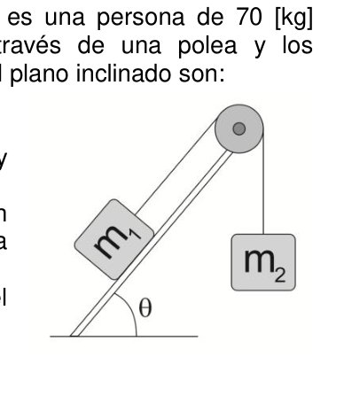
Topic: Newtonian Mechanics Metodi: Free-Body Diagram, Kinematic Equations Competenze: Physical Reasoning, Mathematical Modeling Objects: Inclined Plane, Pulley, Block Fonte: Testo (PDF) — p.3
PT85. Scuola superiore industriale Città di Santa Fe.
a) Dato il seguente dato, si sa che m1 è una persona di 70 [kg] Sulla corda unita a m2 attraverso un polea e i i coefficienti di attrito tra la persona e il piano inclinato sono:
- 0,35 (coef. statico) La capacità di produzione è di 0,40 (coef. (Signature cinematografiche) Supponiamo inoltre che m2 = 0 [kg] e Ɵ= 40º. Realizzare un diagramma di corpo libero con Le forze che agiscono sulla persona. Si disprezza il peso della corda e il un’arrestazione tra questa e la pollea.
OAF 2012 - 105 b) Calcolare e dimostrare numericamente se la persona si scivola per il La Commissione ha adottato una decisione che prevede che il regime di controllo dei dati sia stato applicato in base a un piano di valutazione. c) Se m2 > 0 e il sistema si muove con l’accelerazione, effettuare un nuovo Diagramma di corpo libero per ciascuna delle masse. d) Calcolare il valore di m2 per la persona che sale per il piano inclinato ad un’accelerazione di 1,5 [m/s2]. e) Con le condizioni del punto precedente calcolare il tempo di tempo per m2 per percorrere 120 [cm] dal riposo. f) dimostrare in modo teorico (senza utilizzare dati numerici), e supponendo che m1 è sul punto di scivolare verso l’alto, che il coefficiente di la friczione statica del caso della figura è:
Topic: Newtonian Mechanics Metodi: Free-Body Diagram, Kinematic Equations Competenze: Physical Reasoning, Mathematical Modeling Objects: Inclined Plane, Pulley, Block Fonte: Testo (PDF) — p.3
PT85. Higher Industrial School City of Santa Fe.
(a) Given the following figure, it is known that m1 is a person of 70 [kg] attached to a rope attached to m2 through a pulley and the The coefficients of friction between the person and the sloping plane are: The value of the underlying assets shall be the sum of the following: (Static) The value of the product shall be the value of the product concerned. (including film) Let’s also assume that m2 is equal to 0 [kg] and Ɵ= 40º. Make a free-body diagram with All forces acting on the person. He despises the weight of the rope and the weight of the rope. friction between this one and the pulley.
The following points shall be added: (b) Calculate and numerically demonstrate whether the person slips through the The Commission shall adopt implementing acts in accordance with Article 21 of the Treaty. (c) If m2 > 0 and the system moves at acceleration, perform a new one. free body diagram for each of the masses. (d) Calculate the value of m2 for the person to climb the plane inclined at an acceleration of 1.5 [m/s2]. (e) Under the conditions of the preceding paragraph, calculate the time taken for m2 to travel 120 [cm] from the rest. (f) Demonstrate theoretically (without using numerical data), and assuming That m1 is about to slide upwards, that the coefficient of The static friction of the case of the figure is:
Topic: Newtonian Mechanics Metodi: Free-Body Diagram, Kinematic Equations Competenze: Physical Reasoning, Mathematical Modeling Objects: Inclined Plane, Pulley, Block Fonte: Testo (PDF) — p.3
PT86. Escuela Industrial Superior Ciudad de Santa Fe.
Si se entrega calor a cierta masa de hielo cuya temperatura es menor a 0 [ºC] a
la presión atmosférica (1[atm]), permanecerá en estado sólido hasta que su
temperatura llegue a 0[º C]. En este punto el hielo permanece a temperatura
constante y comienza a fundirse. Esta transición ocurre cuando el calor “rompe”
algunas de las ligaduras químicas de las moléculas permitiendo así que éstas se
muevan más libremente. La temperatura de fusión del hielo es 0[º C] a 1 [atm].
El calor latente de fusión del agua necesita 333000 [J] para convertir 1 [kg] de
hielo a 0[º C] en 1 [kg] de agua a la misma temperatura. Esta misma cantidad
de calor es suficiente para elevar la temperatura de 1 [kg] de agua líquida en
80 [ºC].
El calor latente de vaporización del agua es sorprendentemente alto debido a
que sus moléculas son difíciles de separar. Se necesitan alrededor de 2300000
[J] de calor para convertir 1 [kg] de agua a 100 [ºC] para convertirlo en 1 [kg] de
vapor de agua a 100 [ºC]. Esta misma cantidad de calor elevaría la temperatura
de 1 [kg] de agua en más de 500 [ºC].
Aún más cantidad de calor se necesita para convertir hielo en vapor de agua.
Por otro lado es importante recordar que Joule demostró experimentalmente que
para obtener 1000 calorías se necesitan 4180 [J].
Resolver: Un calorímetro ideal contiene 830 [g] de agua a 20[ºC]. Se introducen 100 [g] de vapor de agua a 100 [ºC]. a) Hallar la temperatura final de la mezcla. b) Realizar una gráfica T = f (Q) donde se vea el proceso completo (agua y vapor) dentro del calorímetro. c) Suponiendo que el calorímetro no es ideal (porque el proceso no es adiabático ni instantáneo), y tiene un equivalente en agua π = 45 [g], ¿Cuál será entonces la temperatura de equilibrio? d) Realiza la gráfica T = f (Q) para este segundo caso. e) Realice una gráfica T = f (Q) solamente del agua en ambos casos a y c y demuestre gráficamente que el equivalente en agua tiene el valor dado.
OAF 2012 - 106
Topic: Thermodynamics Metodi: Conservation of Energy, Graph Linearization Competenze: Physical Reasoning, Experimental Data Analysis Objects: Calorimeter Fonte: Testo (PDF) — p.3
PT86. Scuola superiore industriale Città di Santa Fe.
Se viene fornito calore a una certa massa di ghiaccio la cui temperatura è inferiore a 0 [oC] a la pressione atmosferica (1[atm]), rimarrà in stato solido fino a quando il suo temperatura raggiunge 0 [o C]. A questo punto il ghiaccio rimane a temperatura e inizia a fondere. Questo passaggio avviene quando il calore si rompe Alcune delle legami chimiche delle molecole permettendo così che queste si Si muovono più liberamente. La temperatura di fusione del ghiaccio è 0 [o C] a 1 [atm]. Il calore latente della fusione dell’acqua ha bisogno di 333000 [J] per convertire 1 [kg] di ghiaccio a 0 [o C] in 1 [kg] di acqua alla stessa temperatura. Questa stessa quantità . di calore è sufficiente a far salire la temperatura di 1 [kg] di acqua liquida in 80 [ºC]. Il calore latente di vaporizzazione dell’acqua è sorprendentemente elevato a causa di che le loro molecole sono difficili da separare. Ci vogliono circa 2300000 [J] di calore per convertire 1 [kg] di acqua a 100 [oC] per convertire 1 [kg] di vapore d’acqua a 100 [oC]. Questa stessa quantità di calore aumenterebbe la temperatura. di 1 [kg] di acqua a più di 500 [oC]. Ancora più calore è necessario per trasformare il ghiaccio in vapore d’acqua. D’altra parte, è importante ricordare che Joule ha dimostrato sperimentalmente che per ottenere 1000 calorie ci vogliono 4180 [J].
Risolvere: Un calometro ideale contiene 830 [g] di acqua a 20 [oC]. Introdurre 100 [g] di vapore d’acqua a 100 [oC]. a) Indicare la temperatura finale della miscela. b) realizzare un grafico T = f (Q) che visualizza l’intero processo (acqua e (Vapore) all’interno del calometro. c) Supponendo che il caloriometro non sia ideale (perché il processo non è adiabatic o istantaneo), e ha un equivalente in acqua π = 45 [g], Qual sarà la temperatura di equilibrio? d) Rendi il grafico T = f (Q) per questo secondo caso. e) Rendi un grafico T = f (Q) solo dell’acqua in entrambi i casi a e c e dimostrate graficamente che l’equivalente in acqua ha il valore dato.
OAF 2012 - 106
Topic: Thermodynamics Metodi: Conservation of Energy, Graph Linearization Competenze: Physical Reasoning, Experimental Data Analysis Objects: Calorimeter Fonte: Testo (PDF) — p.3
PT86. Higher Industrial School City of Santa Fe.
If heat is delivered to a certain ice mass whose temperature is less than 0 [oC] to the atmospheric pressure (1[atm]), will remain in a solid state until its the temperature reaches 0 [or C]. At this point the ice stays at temperature. It’s constant and it starts to melt. This transition occurs when heat breaks. Some of the chemical bonds in the molecules allowing these to be Move more freely. The melting temperature of ice is 0 [o C] to 1 [atm]. The latent heat of water melting needs 333000 [J] to convert 1 [kg] of ice at 0 [or C] in 1 [kg] of water at the same temperature. This same amount. heat is sufficient to raise the temperature of 1 [kg] of liquid water in 80 [ºC]. The latent heat of water vaporization is surprisingly high due to that their molecules are hard to separate. They need about 2300000 [J] heat to convert 1 [kg] of water to 100 [oC] to convert 1 [kg] of water vapour at 100 [oC]. This same amount of heat would raise the temperature. 1 [kg] of water at more than 500 [oC]. Even more heat is needed to turn ice into water vapor. On the other hand, it is important to remember that Joule experimentally demonstrated that To get 1000 calories, you need 4180 [J].
Solve: An ideal calorimeter contains 830 [g] of water at 20 [oC]. 100 [g] of are inserted. water vapour at 100 [oC]. (a) Determine the final temperature of the mixture. (b) To produce a graph T = f (Q) where the whole process (water and water) is shown. The heat meter is the heat meter. (c) Assuming that the calorimeter is not ideal (because the process is not adiabatic or instantaneous), and has a water equivalent of π = 45 [g], What will the equilibrium temperature be then? (d) Perform the graph T = f (Q) for this second case. (e) Draw a graph T = f (Q) of water only in both cases a and c And graphically prove that the water equivalent has the value. I’m not sure.
The following points shall be added:
Topic: Thermodynamics Metodi: Conservation of Energy, Graph Linearization Competenze: Physical Reasoning, Experimental Data Analysis Objects: Calorimeter Fonte: Testo (PDF) — p.3
PT87. Colegio del Sol San Miguel de Tucumán.
BC = 1,2 m º 40
H = 22 cm
d = 1, 53 m
En la figura, se deja caer un cuerpo de masa
kg
m
1
desde el punto A, ubicado
a cierta altura “h, por el plano inclinado hasta alcanzar el punto D. Luego entra
en el bucle de radio
cm
r
20
, hace un giro alrededor del mismo, llegando a D
nuevamente, para salir despedido de él con un ángulo
º
30
,
El único tramo con fricción es el segmento BC, de coeficiente de rozamiento
15
,0
c
. Calcula:
a) Velocidad con la que sale del rulo( punto D)
b) El trabajo de la fuerza de roce en el segmento BC.
c) La altura en el punto A.
d) La velocidad en el punto E.
e) Calcular el valor de la normal al pasar por el punto E.
f) Encuentre la relación matemática que permita observar de que depende
la aceleración mientras el cuerpo se desplaza en el plano inclinado AD
g) Indique entre que valores debe encontrarse el ángulo ἀ para que el
cuerpo caiga bajo las condiciones iniciales. ¿Podría el cuerpo bajar a
velocidad constante? Explique
El cuerpo al llegar al piso cae dentro de un tanque con líquido, primero se hunde
y luego emerge, quedando una altura h del total de la altura del cilindro dentro
del agua. Se pide:
h) encontrar la relación matemática entre las dos alturas y explicar.
i) Calcular la altura que se encuentra debajo del agua sabiendo que la
densidad del cuerpo es 0,62g/cm3 y el radio del cilindro es de 5 cm.
Topic: Conservation of Energy, Fluid Mechanics Metodi: Energy Conservation Method, Free-Body Diagram, Hydrostatic Equilibrium Competenze: Physical Reasoning, Mathematical Modeling Objects: Inclined Plane, Cylinder, Container Fonte: Testo (PDF) — p.3
PT87. La scuola del sole San Michele di Tucumán.
BC = 1,2 m º 40
H = 22 cm
d = 1, 53 m
Nella figura, si lascia cadere un corpo di massa kg m 1 dal punto A, situato a una certa altezza h, per il piano inclinato fino al punto D. Poi entra . nel loop radio cm r 20 , fa un giro intorno a esso, arrivando a D Ancora una volta, per uscire da lui con un angolo º 30 , L’unico tratto con friczione è il segmento BC, con coefficiente di rottura. 15 ,0 c . Calcola: a) Velocità di uscita dal rolo (punto D) b) La forza di rottura del segmento BC. c) L’altezza del punto A. d) La velocità al punto E. e) Calcolare il valore della normalità passando per il punto E. f) Trova la relazione matematica che permetta di osservare che dipende l’accelerazione mentre il corpo si muove sul piano inclinato AD g) Indicare tra quali valori si deve trovare l’angolo ἀ per che il corpo cadono nelle condizioni iniziali. Potrebbe il corpo scendere a velocità costante? Spiegate. Il corpo, arrivati al pavimento, cade in un serbatoio di liquido, prima affonda. e poi emerge, lasciando un’altezza h della altezza totale del cilindro dentro dell’acqua. Si chiede: h) trovare la relazione matematica tra le due altezze e spiegare. i) Calcolare l’altezza che si trova sotto l’acqua sapendo che la la densità del corpo è di 0,62 g/cm3 e il raggio del cilindro è di 5 cm.
Topic: Conservation of Energy, Fluid Mechanics Metodi: Energy Conservation Method, Free-Body Diagram, Hydrostatic Equilibrium Competenze: Physical Reasoning, Mathematical Modeling Objects: Inclined Plane, Cylinder, Container Fonte: Testo (PDF) — p.3
PT87. College of the Sun St. Michael of Tucumán.
BC = 1,2 m º 40
H = 22 cm
d = 1, 53 m
In the figure, a mass body is dropped. kg m 1 from point A, located at a certain height h, by the inclined plane to the point D. Then he comes in . In the radio loop . cm r 20 , it turns around, reaching D Again, to get fired from him at an angle. º 30 , The only stretch with friction is the BC segment, with a coefficient of friction. 15 ,0 c . Calculate: (a) Speed of exit from roll (D) (b) The brushing force work in the BC segment. (c) The height at point A. (d) The speed at point E. (e) Calculate the value of the normal when passing through point E. f) Find the mathematical relation that allows you to observe that it depends on acceleration as the body moves in the slope plane AD g) Indicate between which values the angle ἀ must be found so that body falls under the initial conditions. Could the body come down to
- The constant speed? Explain . The body, on reaching the floor, falls into a tank of liquid, first sinks. And then it comes out, leaving a height h of the total height of the cylinder inside. of water. It asks: (h) find the mathematical relationship between the two heights and explain. (i) Calculate the altitude below water knowing that the water is below the water level. The body density is 0.62 g/cm3 and the cylinder radius is 5 cm.
Topic: Conservation of Energy, Fluid Mechanics Metodi: Energy Conservation Method, Free-Body Diagram, Hydrostatic Equilibrium Competenze: Physical Reasoning, Mathematical Modeling Objects: Inclined Plane, Cylinder, Container Fonte: Testo (PDF) — p.3
PT88. Colegio del Sol San Miguel de Tucumán.
Titania. El planeta Urano posee 27 lunas. La mayor de ellas se llama Titania, un astro que fue hallado en 1787 por Sir William Herschel, descubridor del planeta y de otro de sus satélites naturales, Oberón. Su nombre se debe a uno de los personajes de la comedia romántica “Sueño de una noche de verano” de Shakespeare. Su tamaño es mediano, tiene de diámetro la mitad del radio de la Tierra, ocupando el octavo lugar dentro de las lunas del Sistema Solar.
Datos Básicos Distancia media a Urano 436.000 km Diámetro 1.578 km Período orbital alrededor de Urano 8,7 días Período de rotación alrededor de su eje 8,7 días
OAF 2012 - 107
Masa
3,527 x 1021 Kg
Excentricidad
0,0011
Gravedad
0,38 m/s2
Masa de Urano
8,68 x 1025 kg
Constante de gravitación universal
6,69 x 10-11 m3/(kg.s2)
Para este satélite calcular:
a) Densidad media del astro
b) Suponiendo que su órbita es perfectamente circular (usar distancia
media), velocidad angular
c) Velocidad tangencial
d) Aceleración centrípeta
e) Si estoy parado en Titania, ¿cuánto valdría la aceleración centrífuga y
cuál sería su dirección? Hacer un esquema
f) Teniendo en cuenta la rotación propia de Titania alrededor de su eje,
calcular la velocidad angular y la velocidad tangencial de un punto sobre
el ecuador del satélite.
g) La velocidad de escape en un satélite es aquella velocidad mínima que
le permite a un objeto superar los efectos gravitatorios de ese satélite y
poder salir del mismo. Es cuando la energía cinética del cuerpo iguala a
la energía potencial gravitatoria a nivel de la superficie del satélite.
¿Cuánto vale la velocidad de escape para Titania?
h) Urano tarda 84 años en dar una vuelta al Sol, en ese tiempo ¿Cuántas
vueltas da Titania alrededor de Urano en un ciclo completo de Urano
alrededor del Sol?
i) La tercera ley de Kepler plantea una relación entre el período orbital y el
semieje mayor de la órbita. La relación está dada por
3
2
2
4
a
GM
T
donde G es la constante de gravitación universal y M es la masa del cuerpo central, en este caso sería la masa de Urano. Obtener a, el semieje mayor. j) Un poco de geometría: la órbita de Titania no es una circunferencia, es una elipse donde Urano se encuentra en uno de los focos (F). La excentricidad de la órbita elíptica nos da una idea acerca de la forma, es un valor que varía entre 0 y 1, cuánto más cerca es el valor a 0, la órbita es más circular, en cambio, si el valor se acerca a 1, la elipse es más pronunciada y achatada. Para calcular la excentricidad podemos usar 2 1 a b e Determinar el valor de c y comparar con el radio de Urano (25.559 km) ¿qué puede concluir? Comparar a y b para tener una idea de la forma de la órbita.
OAF 2012 - 108
Topic: Gravitation, Astrophysics Metodi: Newton’s Law of Gravitation, Kepler’s Laws, Conservation of Energy Competenze: Physical Reasoning, Mathematical Modeling Objects: Planet, Satellite Fonte: Testo (PDF) — p.3
PT88. La scuola del sole San Michele di Tucumán.
Titanica. Il pianeta Urano possiede 27 lune. La più grande di queste si chiama Titania, una stella. che fu scoperto nel 1787 da Sir William Herschel, scopritore del pianeta e di Un altro dei suoi satelliti naturali, Oberon. Il suo nome deriva da uno dei I personaggi della commedia romantica sonno di una notte estiva Shakespeare. È un vero e proprio Shakespeare. Il suo taglio è medio, ha il diametro della metà del raggio della Terra, occupando l’ottava posizione all’interno delle lune del Sistema Solare.
Datos di base Distanza media da Urano 436.000 km Diametro 1.578 km Periodo orbitale attorno ad Urano 8,7 giorni Periodo di rotazione attorno all’asse 8,7 giorni
OAF 2012 - 107 Massa 3,527 x 1021 Kg Eccentricità 0,0011 Gravità 0,38 m/s2 Massa di Urano 8,68 x 1025 kg Costante di gravitazione universale 6,69 x 10-11 m3/(kg.s2)
Per questo satellite calcolare: a) Densità media dell’ astro b) Supponendo che la sua orbita sia perfettamente circolare (usare distanza media), velocità angolare (c) velocità tangenziale d) Accelerazione centripeta e) Se sto in Titania, quanto vale l’accelerazione centrifugata e Qual è il suo indirizzo? - Facciamo un schema. f) Considerando la rotazione di Titania intorno al suo asse, Calcolare la velocità angolare e la velocità tangenziale di un punto su l’equatore del satellite. g) La velocità di fuga in un satellite è quella velocità minima che permette ad un oggetto di superare gli effetti gravitazionali di quel satellite e per uscire da questo. E ’ quando l’ energia cinetica del corpo è uguale a l’energia potenziale gravitazionale a livello della superficie del satellite. Quanto vale la velocità di fuga per Titania? h) Uranus richiede 84 anni per girare intorno al Sole, in quel tempo Titania gira attorno ad Urano in un ciclo completo di Urano intorno al Sole? i) La terza legge di Kepler propone una relazione tra il periodo orbitale e il periodo orbitale. semie grande dell’orbita. La relazione è data da 3 2 2 4 a GM T
dove G è la costante di gravitazione universale e M è la massa di Il corpo centrale, in questo caso sarebbe la massa di Urano. Prendere, il semie maggiore. J) Un po’ di geometria: l’orbita di Titanio non è una circonferenza, è un’ellipse dove Urano si trova in uno dei foci (F). La L’eccentricità dell’orbita elliptica ci dà un’idea del modo in cui, è un valore che varia da 0 a 1, più vicino è il valore a 0, l’orbita E’ più circolare, invece, se il valore si avvicina a 1, l’ellipse è più pronunciata e piatta. Per calcolare l’eccentricità possiamo usare 2 1 a b e Determinare il valore di c e confrontare con il raggio di Urania (25.559 km) cosa può concludere? Confrontare a e b per avere una idea della forma dell’orbita.
OAF 2012 - 108
Topic: Gravitation, Astrophysics Metodi: Newton’s Law of Gravitation, Kepler’s Laws, Conservation of Energy Competenze: Physical Reasoning, Mathematical Modeling Objects: Planet, Satellite Fonte: Testo (PDF) — p.3
PT88. College of the Sun St. Michael of Tucumán.
It’s called Titania. The planet Uranus has 27 moons. The largest of these is called Titania, a star. It was discovered in 1787 by Sir William Herschel, discoverer of the planet and of the Another of its natural satellites, Oberon. His name is after one of the Romantic comedy characters Summer night’s dream Shakespeare. He was a man. Its size is medium, it has a diameter of half the radius of the Earth, occupying the eighth place within the moons of the Solar System.
Basic data Average distance to Uranus 436.000 km Diameters 1.578 km Orbital period around Uranus 8.7 days Period of rotation around its axis 8.7 days
The following is the list of the countries of the European Union: Mass 3,527 x 1021 Kg Excentricity . 0,0011 Gravity 0,38 m/s2 The mass of Uranus 8,68 x 1025 kg Universal gravity constant is 6,69 x 10-11 m3/(kg.s2)
For this satellite calculate: (a) Average star density (b) Assuming its orbit is perfectly circular (use distance Average), angular velocity (c) Tangential speed (d) Centripetal acceleration e) If I’m standing on Titania, how much would the centrifugal acceleration be worth and What would be your address? Making a scheme (f) Taking into account Titania’s own rotation around its axis, Calculate the angular velocity and the tangential velocity of a point over the satellite’s equator. (g) The escape velocity of a satellite is that minimum velocity which It allows an object to overcome the gravitational effects of that satellite and I can get out of it. It ‘s when the kinetic energy of the body equals to the gravitational potential energy at the surface level of the satellite. How much is the escape velocity for Titania? (h) Uranus takes 84 years to orbit the Sun, in that time Titania rotates around Uranus in a full cycle of Uranus. around the sun? (i) Kepler’s third law poses a relationship between the orbital period and the The half-large of the orbit. The relationship is given by 3 2 2 4 a GM T
where G is the universal gravitational constant and M is the mass of central body, in this case it would be the mass of Uranus. Get to, the I’m a senior half. j) A little geometry: Titania’s orbit is not a circumference, it is an ellipse where Uranus is at one of the focuses (F). La The eccentricity of the elliptical orbit gives us an idea about the shape, is a value that varies between 0 and 1, the closer the value is to 0, the orbit It’s more circular, but if the value is closer to 1, the ellipse is more. Pronounced and flattened. To calculate eccentricity we can use 2 1 a b e Determine the value of c and compare it to the radius of Uranus (25,559 km) what can you conclude? Compare a and b to have a idea of the shape of the orbit.
The following points shall be added:
Topic: Gravitation, Astrophysics Metodi: Newton’s Law of Gravitation, Kepler’s Laws, Conservation of Energy Competenze: Physical Reasoning, Mathematical Modeling Objects: Planet, Satellite Fonte: Testo (PDF) — p.3
PT89. Colegio del Sol San Miguel de Tucumán.
Se sabe que la rapidez de arrastre, se dá en conductores donde los portadores de carga son electrones libres. Si el conductor está aislado, estos electrones se desplazan al azar como moléculas de un gas. Estos se mueven en zigzag debido a las colisiones y con solo una pequeña velocidad media de arrastre a lo largo del alambre. La carga móvil ∆Q se puede calcular como:
∆Q = Número de portadores . carga por portador = (n. A. ∆x) . q
Donde q es la carga del portador,
A es el área transversal,
∆x es la longitud del alambre
por lo tanto podemos sacar la rapidez de arrastre, como v = ∆x/∆t .
Un alambre de cobre cuya área transversal es de 3. 10-6 m2 transporta una
corriente de 10 A.
a) Suponiendo que cada átomo de cobre contribuye con un electrón libre al
metal, encuentre la rapidez de arrastre de los e de este alambre
sabiendo que la densidad del cobre es 8.25g/cm3.
b) Mediante el empleo del gas ideal compare la rapidez de arrastre con la
rapidez cuadrática media que tendrá un e al azar a 20°C.
c) Calcule la resistencia por unidad de longitud del alambre de cobre , si la
resistividad e de 1,7.10-8ῼm.
d) Si una diferencia de potencial de 10V se mantiene a través del alambre
de cobre de 1m de longitud. Calcular la corriente que pasa por el
alambre y la capacidad de disipación de potencia.
e) Un termómetro de resistencias están hecho de cobre con una R= 50ῼ a
20 °C. Este dispositivo se sumerge en un recipiente de Indio fundido y
entonces su resistencia aumenta a 76,8ῼ. A partir de esta información
encuentre el punto de fusión del Indio.
Coeficiente de temperatura de resistividad ἀ=3,9.10-3 1/°C
f) Qué cantidad de calor entregó el indio al alambre de cobre al ser
sumergido? Ce= 0.092cal/g °C
g) Calcule la masa de indio fundido en el recipiente
h) Calcule la dilatación del alambre de cobre.
Coeficiente de dilatación = 1,7.10-5 1/°C
Punto de fusión del cobre: 1083°C
Datos: Masa de un mol de cobre: 65,2g n = número de electrones/volumen q= 1,6 .10-19 C
Topic: Circuits, Kinetic Theory Metodi: Kinetic Theory of Gases, Statistical Averaging, Conservation of Energy Competenze: Physical Reasoning, Mathematical Modeling Objects: Wire, Resistor Fonte: Testo (PDF) — p.3
PT89. La scuola del sole San Michele di Tucumán.
Si sa che la velocità di trascinamento, si dà in conducenti dove i portatori di carica sono elettroni liberi. Se il conduttore è isolato, questi elettroni sono si spostano a caso come molecole di gas. Questi si muovono in zigzag a causa delle collisioni e con solo una piccola velocità media di trascinamento lungo il filo. La carica mobile ∆Q può calcolare come:
∆Q = Numero di portatori . carico per portatore = (n. A. ∆x) . q
Dove q è il carico del portatore, A è l’area trasversale, ∆x è la lunghezza del filo Quindi possiamo ottenere la velocità di trascinamento, come v = ∆x/∆t.
Un filo di rame con un’area trasversale di 3. 10-6 m2 trasportano una corrente di 10 A. a) Supponendo che ogni atomo di rame contribuisca con un elettrone libero al metallo, ritrovate la velocità di trascinamento di questo filo. sapendo che la densità del rame è di 8,25 g/cm3. b) L’uso del gas ideale permette di confrontare la velocità di trascinamento con la velocità di trascinamento. velocità quadrata media che avrà un e a caso a 20°C. c) Calcolare la resistenza per unità di lunghezza del filo di rame , se il resistenza e di 1,7.10-8m. d) Se una differenza di potenziale di 10V è mantenuta attraverso il filo di cui al punto 1. Calcolare il corrente che passa attraverso il il filo e la capacità di dissipazione della potenza. e) Un termometro di resistenza è fatto di rame con un R= 50 a 20 °C. Questo dispositivo viene immerso in un recipiente di India fuso e la resistenza aumenta a 76,8. Dalle informazioni Trova il punto di fusione dell’indio. Coefficiente di temperatura di resistività ἀ=3,9.10-3 1/°C f) Quanti calori l’indio ha consegnato al filo di rame all’essere
- Suttomergito? C = 0,092 cal/g °C g) Calcolare la massa di indio fonduto nel recipiente h) Calcolare la dilatazione del filo di rame. Coefficiente di dilatazione = 1,7.10-5 1/°C Punto di fusione del rame: 1083°C
Dati: Massa di un mol di rame: 65,2 g N = numero di elettroni/volume q= 1,6 .10-19 C
Topic: Circuits, Kinetic Theory Metodi: Kinetic Theory of Gases, Statistical Averaging, Conservation of Energy Competenze: Physical Reasoning, Mathematical Modeling Objects: Wire, Resistor Fonte: Testo (PDF) — p.3
PT89. College of the Sun St. Michael of Tucumán.
It is known that drag speed, is given in drivers where the carriers The charge is free electrons. If the conductor is isolated, these electrons are They move randomly like molecules of a gas. These move in zigzag due to collisions and with only a small one. average drag speed along the wire. The mobile charge ∆Q can be calculate as follows:
∆Q = number of carriers . The following shall be added to the list of the following: A. ∆x) . q
Where q is the carrier load, A is the cross-sectional area, ∆x is the length of the wire So we can get the drag speed, like v = ∆x/∆t.
A copper wire with a cross-sectional area of 3. 10-6 m2 carries a current of 10 A. (a) Assuming that each copper atom contributes one free electron to the metal, find the drag speed of the e of this wire Knowing that the density of copper is 8.25 g/cm3. (b) By using the ideal gas, compare the drag speed with the average quadratic speed that will have a random e to 20°C. (c) Calculate the resistance per unit length of the copper wire if the Resistivity and of 1,7.10-8m. (d) If a 10V potential difference is maintained across the wire of copper of 1 m in length. Calculate the current passing through the Wire and power dissipation capability. e) A resistance thermometer is made of copper with an R= 50 to 20 °C. This device is immersed in a molten Indian container and Then its resistance increases to 76.8. From this information Find the Indian’s melting point. The temperature coefficient of resistance ἀ=3,9.10-3 1/°C (f) How much heat did the Indian deliver to the copper wire when he was
- Submerged? The following table shows the results of the calculation of the CO2 emissions from the Union industry: (g) Calculate the mass of melted indium in the container (h) Calculate the dilatation of the copper wire. The maximum value of the product shall be the product of the product concerned. Copper melting point: 1083°C
Data: Mass of one mol copper: 65,2 g N = number of electrons/volume q= 1,6 .10-19 C
Topic: Circuits, Kinetic Theory Metodi: Kinetic Theory of Gases, Statistical Averaging, Conservation of Energy Competenze: Physical Reasoning, Mathematical Modeling Objects: Wire, Resistor Fonte: Testo (PDF) — p.3
PT90. Colegio Gobernador Juan José Silva Ciudad de Formosa.
Dos corredores A y B parten del mismo lugar. A partió 30 segundos antes que B con una velocidad constante de 5 m/s. B sigue la misma trayectoria con una velocidad constante de 6 m/s. ¿A qué distancia del punto de partida el corredor B alcanzará a A?
OAF 2012 - 109
Topic: Newtonian Mechanics Metodi: Kinematic Equations Competenze: Physical Reasoning Objects: Cart Fonte: Testo (PDF) — p.3
PT90. Colegio Governatore Juan José Silva Città di Formosa.
Due corridoi A e B partono dallo stesso posto. A è partito 30 secondi prima di B. con una velocità costante di 5 m/s. B segue la stessa traccia con una velocità costante di 6 m/s. A che distanza dal punto di partenza si trova il corridore B?
- raggiungerà A?
OAF 2012 - 109
Topic: Newtonian Mechanics Metodi: Kinematic Equations Competenze: Physical Reasoning Objects: Cart Fonte: Testo (PDF) — p.3
PT90. College Governor Juan José Silva The city of Formosa.
Two corridors A and B start from the same place. A broke 30 seconds before B. with a constant speed of 5 m/s. B follows the same path with a a constant speed of 6 m/s. How far from the starting point is runner B? Will it reach A?
The following points shall be added:
Topic: Newtonian Mechanics Metodi: Kinematic Equations Competenze: Physical Reasoning Objects: Cart Fonte: Testo (PDF) — p.3
PT91. Colegio Gobernador Juan José Silva Ciudad de Formosa.
Sea el circuito de la siguiente figura:
Datos
V = 10 V
R1= 5 Ω
R2 = 15 Ω
a) Calcula la resistencia equivalente del circuito.
b) Calcula la intensidad I de la corriente que atraviesa el circuito.
c) Calcula la diferencia de potencial en los extremos del generador.
d) Calcula la diferencia de potencial en extremos de cada una de las
resistencias y el valor de la intensidad que las atraviesa.
Topic: Circuits Metodi: Equivalent Circuit Reduction, Kirchhoff’s Laws Competenze: Physical Reasoning Objects: Resistor, Battery Fonte: Testo (PDF) — p.3
PT91. Colegio Governatore Juan José Silva Città di Formosa.
Il circuito deve essere il seguente:
Datos V = 10 V R1= 5 Ω R2 = 15 Ω
a) Calcola la resistenza equivalente del circuito. b) Calcola l’intensità I del corrente che attraversa il circuito. c) Calcola la differenza di potenziale nelle estremità del generatore. d) Calcola la differenza di potenziale a fine di ciascuna delle le resistenze e il valore dell’intensità che le attraversa.
Topic: Circuits Metodi: Equivalent Circuit Reduction, Kirchhoff’s Laws Competenze: Physical Reasoning Objects: Resistor, Battery Fonte: Testo (PDF) — p.3
PT91. College Governor Juan José Silva The city of Formosa.
The circuit shall be the following figure:
Data from the report V = 10 V R1= 5 Ω R2 = 15 Ω
(a) Calculate the equivalent resistance of the circuit. (b) Calculate the intensity I of the current running through the circuit. (c) Calculate the potential difference at the end of the generator. (d) Calculate the potential difference at each end of the resistance and the value of the intensity that passes through them.
Topic: Circuits Metodi: Equivalent Circuit Reduction, Kirchhoff’s Laws Competenze: Physical Reasoning Objects: Resistor, Battery Fonte: Testo (PDF) — p.3
PT92. Colegio Gobernador Juan José Silva Ciudad de Formosa.
Indica las características de la imagen formada en cada caso, construyendo los gráficos correspondientes: a) el objeto está entre el centro y el foco de un espejo cóncavo. b) un espejo esférico convexo. c) una lente divergente. d) en una lente convergente el objeto esta a una distancia de la lente mayor que el doble de la distancia focal.
Topic: Geometric Optics Metodi: Ray Tracing, Thin Lens & Mirror Equation Competenze: Physical Reasoning Objects: Mirror, Lens Fonte: Testo (PDF) — p.3
PT92. Colegio Governatore Juan José Silva Città di Formosa.
Indica le caratteristiche dell’immagine formata in ogni caso, costruendo i i grafici corrispondenti: a) l’oggetto è tra il centro e il foco di uno specchio concave. b) uno specchio sferico convexo. c) un’ottica divergente. d) in un obiettivo convergente l’oggetto è distante dal lente più grande del doppio della distanza focale.
Topic: Geometric Optics Metodi: Ray Tracing, Thin Lens & Mirror Equation Competenze: Physical Reasoning Objects: Mirror, Lens Fonte: Testo (PDF) — p.3
PT92. College Governor Juan José Silva The city of Formosa.
Indicates the characteristics of the image formed in each case, constructing the corresponding charts: (a) the object is between the centre and the focus of a concave mirror. (b) a convex spherical mirror. (c) a divergent lens. (d) in a convergent lens the object is at a distance from the lens greater than twice the focal length.
Topic: Geometric Optics Metodi: Ray Tracing, Thin Lens & Mirror Equation Competenze: Physical Reasoning Objects: Mirror, Lens Fonte: Testo (PDF) — p.3
PT93. Escuela Normal Superior Juan Bautista Alberdi San Miguel de Tucumán.
Un baúl de 80 kg es transportado por un camión volcador, para bajarlo el
camionero inclina la caja del volcador hasta que observa que el baúl comienza a
deslizarse. Los coeficientes de rozamiento ente el baúl y el piso del camión
μ= 0,75 y μ= 0,25. El baúl abandona la caja con una velocidad de 4m/s por el
extremo de la caja del camión que se encuentra a 1 m de altura del piso.
a) ¿Cuál es el valor del ángulo ente el acoplado y la horizontal que permite
que el baúl comience a deslizarse?
b) ¿Qué distancia recorre el baúl sobre la caja inclinada hasta abandonar
el camión?
c) ¿A que distancia del camión, medida horizontalmente, el baúl toca la
calle? ¿Con que velocidad lo hace?
Topic: Newtonian Mechanics Metodi: Free-Body Diagram, Kinematic Equations, Vector Decomposition Competenze: Physical Reasoning, Mathematical Modeling Objects: Block, Inclined Plane, Projectile Fonte: Testo (PDF) — p.3
PT93. Scuola Normale Superiore Juan Bautista Alberdi San Michele di Tucumán.
Un bagagliaio di 80 kg viene trasportato da un camion volante, per scaricarlo il Il camionista inclina la cassa del volante finché non vede che il baule inizia a scivolare. Coefficienti di rottura tra la scatola e il pavimento del camion μ= 0,75 y μ= 0,25. Il coffetto lascia la scatola a una velocità di 4m/s per il l’estremità della cassa del camion che si trova a 1 m di altezza dal pavimento. a) Qual è il valore dell’angolo tra il collegamento e l’orizzontale consentito che il baule comincerà a scivolare? b) Quanta distanza percorre il coffetto sulla scatola inclinata fino all’ abbandono Il camion? (c) A che distanza dal camion, misurata orizzontalmente, il cofano tocca la Strada? A che velocità lo fa?
Topic: Newtonian Mechanics Metodi: Free-Body Diagram, Kinematic Equations, Vector Decomposition Competenze: Physical Reasoning, Mathematical Modeling Objects: Block, Inclined Plane, Projectile Fonte: Testo (PDF) — p.3
PT93. The secondary school is the Juan Bautista Alberdi. St. Michael of Tucumán.
A 80 kg trunk is carried by a rolling truck to lower it. The truck driver tilts the bumper case until he notices the trunk starts to I’m going to slip. The friction coefficients between the trunk and the truck floor μ= 0,75 y μ= 0,25. The trunk leaves the box at a speed of 4m/s by the end of the truck case located 1 m above the floor. (a) What is the value of the angle between the coupling and the horizontal that allows That the trunk starts to slip? (b) How far does the trunk travel over the tilted box until it leaves? The truck? (c) At what distance from the truck, measured horizontally, the trunk touches the truck? street? How fast does he do it?
Topic: Newtonian Mechanics Metodi: Free-Body Diagram, Kinematic Equations, Vector Decomposition Competenze: Physical Reasoning, Mathematical Modeling Objects: Block, Inclined Plane, Projectile Fonte: Testo (PDF) — p.3
PT94. Escuela Normal Superior Juan Bautista Alberdi San Miguel de Tucumán.
El conductor de un automóvil de 1600 kg de masa y que va por una ruta a una velocidad de 30 m/s ve un perro que cruza unos metros delante de su auto. Aplica los frenos y se detiene bruscamente en 5s. a) ¿Cuál es la potencia de los frenos? b) ¿Qué cantidad de calor se genera por enfrenado?
OAF 2012 - 110 c) Si ese calor se utilizara para calentar barras de igual masa y longitud pero de diferentes materiales y cuyas constantes se dan en la tabla siguiente:
- ¿Cuales de ellas se calienta más? (adquiere mayor temperatura)
- ¿Cual se dilata más?
Material Calor Especifico (cal/gºC) Coef de dilatación lineal (1/ºC) Calor de fusion (cal/g) Punto de fusion (ºC) Aluminio 0,22 2,4x 10-5 77 659 Plata 0,0056 1,7 x 19-5 21 961 Oro 0,031 1,3 x 10-5 16 1063 Platino 0,032 9x10-5 27 1775 Plomo 0,031 2,9x 10-5 5,8 327
Topic: Newtonian Mechanics, Thermodynamics Metodi: Conservation of Energy, Impulse-Momentum Theorem Competenze: Physical Reasoning, Mathematical Modeling Objects: Cart Fonte: Testo (PDF) — p.3
PT94. Scuola Normale Superiore Juan Bautista Alberdi San Michele di Tucumán.
Il conducente di una macchina di 1600 kg di massa e che va per una strada a una velocità di 30 m/s vede un cane che attraversa alcuni metri davanti alla sua auto. Applica i freni e si ferma bruscamente in 5 secondi. a) Qual è la potenza dei freni? b) Quanto calore si genera per affrontare?
OAF 2012 - 110 c) Se tale calore fosse usato per riscaldare barre di massa e lunghezza uguali ma di materiali diversi e le cui costanti sono indicate nella tabella di seguito:
- Quale di queste si scalda di più? (acquista più temperatura)
- Quale si dilata di più?
Materiale Calore Specifico (cal/goC) Coef de dilatazione lineare (1/oC) Calore de Fusione (cal/g) Punto de fusione (oC) Alumini 0,22 2,4x 10-5 77 659
- Silver 0,0056 1,7 x 19-5 21 961 Oro . 0,031 1,3 x 10-5 16 1063 Platino 0,032 9x10-5 27 1775 Pilo 0,031 2,9x 10-5 5,8 327
Topic: Newtonian Mechanics, Thermodynamics Metodi: Conservation of Energy, Impulse-Momentum Theorem Competenze: Physical Reasoning, Mathematical Modeling Objects: Cart Fonte: Testo (PDF) — p.3
PT94. The secondary school is the Juan Bautista Alberdi. St. Michael of Tucumán.
The driver of a car weighing 1600 kg and going one route to one speed of 30 m/s sees a dog crossing a few meters in front of his car. It applies the brakes and stops abruptly in 5s. (a) What is the brake power? (b) How much heat is generated per face?
The following is the list of the countries of the European Union: (c) If that heat were used to heat bars of equal mass and length But of different materials and whose constants are given in the table The following:
- Which one gets warmer? (acquires higher temperature)
- Which one dilates more?
Material Heat . Specific (cal/goC) Coef de Dilation Linear (1/oC) Heat . de Fusion (cal/g) Point de Fusion (oC) Aluminium 0,22 2,4x 10-5 77 659 Silver . 0,0056 1,7 x 19-5 21 961 Gold . 0,031 1,3 x 10-5 16 1063 Platinum . 0,032 9x10-5 27 1775 Lead 0,031 2,9x 10-5 5,8 327
Topic: Newtonian Mechanics, Thermodynamics Metodi: Conservation of Energy, Impulse-Momentum Theorem Competenze: Physical Reasoning, Mathematical Modeling Objects: Cart Fonte: Testo (PDF) — p.3
PT95. Escuela Normal Superior Juan Bautista Alberdi San Miguel de Tucumán.
Un circuito eléctrico esta formado por los siguientes
aparatos conectados en serie: Una resistencia
formada por un hilo metálico de 2 m de longitud y 0,4
mm de diámetro, esta resistencia esta sumergida en
un calorímetro de cobre que pesa 167 g y contiene
600 g de agua. Un voltámetro con electrodos de
plata que contiene una disolución de AgNO3 y un
voltámetro con electrodos de platino que contiene
agua acidulada por H2SO4, provisto de una bureta
para recoger juntos los gases desprendidos en
ambos electrodos. Se hace pasar por el circuito una
corriente continua y constante durante 30 min. Al
cabo de este tiempo en el voltámetro de palta se han
depositado 1,37 g de Ag y la temperatura del
calorímetro ha aumentado 6,2 ºC.
a) Calcular el volumen del gas recogido, medido en CN (Condiciones
Normales)
b) Calcular la resistencia sumergida
c) Calcular la resistividad del material
Topic: Circuits, Chemistry Metodi: Kirchhoff’s Laws, Conservation of Energy Competenze: Physical Reasoning, Mathematical Modeling Objects: Resistor, Wire, Calorimeter Fonte: Testo (PDF) — p.3
PT95. Scuola Normale Superiore Juan Bautista Alberdi San Michele di Tucumán.
Un circuito elettrico è costituito dai seguenti elementi: Apparecchi collegati in serie: una resistenza costituito da un filo metallico di 2 m di lunghezza e 0,4 mm di diametro, questa resistenza è immersa in un calometro di rame che pesa 167 g e contiene 600 grammi di acqua. Un voltometro con elettrodi di argento contenente una soluzione di AgNO3 e un Voltometro con elettrodi di platino contenente Acido H2SO4 di acqua, fornito da un burro per raccogliere insieme i gas scaricati in entrambi gli elettrodi. Si fa passare per il circuito uno corrente continua e costante per 30 minuti. Al Dopo questo tempo il voltometro di palla si sono 1,37 g di Ag e temperatura del Il caloriometro è aumentato di 6,2 oC. a) Calcolare il volume del gas raccolto, misurato in CN (Condizioni Normali) b) Calcolare la resistenza immersa c) Calcolare la resistività del materiale
Topic: Circuits, Chemistry Metodi: Kirchhoff’s Laws, Conservation of Energy Competenze: Physical Reasoning, Mathematical Modeling Objects: Resistor, Wire, Calorimeter Fonte: Testo (PDF) — p.3
PT95. The secondary school is the Juan Bautista Alberdi. St. Michael of Tucumán.
An electrical circuit is made up of the following: Series connected devices: One resistance consisting of a metal thread of 2 m in length and 0,4 mm diameter, this resistance is submerged in a copper calorimeter weighing 167 g and containing 600 g of water. A voltage with electrodes of silver containing a dissolved AgNO3 and a Platinum electrode voltmeter containing water acidified by H2SO4, provided by a bubble to collect together the gases released in both electrodes. It ‘s passing through circuit one . continuous and constant current for 30 minutes. Al After this time in the coat voltmeter they have been deposited 1,37 g of Ag and temperature of the The temperature meter has increased by 6.2 oC. (a) Calculate the volume of gas collected, measured in CN (Conditions Normal) (b) Calculate the submerged resistance (c) Calculation of the resistivity of the material
Topic: Circuits, Chemistry Metodi: Kirchhoff’s Laws, Conservation of Energy Competenze: Physical Reasoning, Mathematical Modeling Objects: Resistor, Wire, Calorimeter Fonte: Testo (PDF) — p.3
PT96. Escuela Hipólito Yrigoyen Ciudad de Buenos Aires.
Está muy pesado. Un tanque que pesa 80 kgf contiene 700 litros de agua. Sus dimensiones son: radio =50 cm y altura = 1 m. Está colocado en una cavidad, ejerciendo una presión sobre las paredes de la misma de 2000 Pa. Se lo quiere mover con la ayuda de un plano inclinado, = 30°. Considerando para todas las superficies (cavidad y plano inclinado): μ estático = 0,5 µ dinámico= 0,25 y la aceleración de la gravedad g = 9,8 m/s2 Calcular: a) La fuerza que ejerce el tanque sobre las paredes de la cavidad.
OAF 2012 - 111 b) Los valores que debe tener la fuerza T (máximo y mínimo) para que el tanque no se mueva. c) Si se lo vincula a una masa “m”, colocada sobre el plano, ¿cuál será el valor de esa masa si el conjunto se desplaza hacia la base del plano con aceleración = 0,5 m/s2.
Topic: Fluid Mechanics, Rigid Body Statics Metodi: Hydrostatic Equilibrium, Free-Body Diagram, Torque & Angular Momentum Analysis Competenze: Physical Reasoning, Mathematical Modeling Objects: Container, Inclined Plane Fonte: Testo (PDF) — p.3
PT96. Scuola Hippollito Yrigoyen Città di Buenos Aires.
È pesante. Un serbatoio che pesa 80 kgf contiene 700 litri d’acqua. Le sue dimensioni sono: radius = 50 cm e altezza = 1 m. È collocato in una cavità, esercitando una La pressione sulle pareti della stessa di 2000 Pa. Vuole spostarlo con la ausiliare a un piano inclinato, = 30°. Considerando per tutte le superfici (cavità e piano inclinato): μ statico = 0,5 μ dinamico = 0,25 e l’accelerazione della gravità g = 9,8 m/s2 Calcolare: a) La forza esercitata dal serbatoio sulle pareti della cavità.
OAF 2012 - 111 b) I valori che devono avere la forza T (massimo e minimo) per Non si muova. c) Se lo si collega a una massa m, posta sul piano, quale sarà il valore di quella massa se l’insieme si sposta verso la base del piano con accelerazione = 0,5 m/s2.
Topic: Fluid Mechanics, Rigid Body Statics Metodi: Hydrostatic Equilibrium, Free-Body Diagram, Torque & Angular Momentum Analysis Competenze: Physical Reasoning, Mathematical Modeling Objects: Container, Inclined Plane Fonte: Testo (PDF) — p.3
PT96. Hippolytus Yrigoyen School City of Buenos Aires.
It’s too heavy. A tank weighing 80 kgf contains 700 liters of water. Its dimensions are: radius = 50 cm and height = 1 m. It’s placed in a cavity, exercising a pressure on the walls of the same 2000 Pa. He wants to move it with the The following table shows the following: Considering for all surfaces (cavity and sloping plane): The following is the list of the following: The following table shows the following: and the acceleration of gravity g = 9,8 m/s2 Calculation: (a) The force exerted by the tank on the walls of the cavity.
The following points shall be added: (b) The values that must be T (maximum and minimum) to be used for the The tank is not moving. (c) If you tie it to a mass m, placed on the plane, what will be the m? value of that mass if the set moves towards the base of the plane with acceleration = 0,5 m/s2.
Topic: Fluid Mechanics, Rigid Body Statics Metodi: Hydrostatic Equilibrium, Free-Body Diagram, Torque & Angular Momentum Analysis Competenze: Physical Reasoning, Mathematical Modeling Objects: Container, Inclined Plane Fonte: Testo (PDF) — p.3
PT97. Escuela Hipólito Yrigoyen Ciudad de Buenos Aires.
Rápidas corrientes. Se dispone de un motor de corriente contínua que entrega una potencia de 370 watt a 220 V, y tiene un rendimiento del 80%. Se conecta en paralelo con 5 lámparas de 20W/220V, las que trabajan a esa tensión (tensión nominal). La tensión es suministrada por un generador de V = 250V y resistencia interna ri. a) Representar el circuito. Determinar: b) La potencia absorbida por el motor c) La corriente que circula por el circuito y la carga que circuló en 1,5 horas. d) La corriente que circula por cada lámpara. e) La energía entregada por el motor en 1,5 horas. f) La resistencia interna ri del generador.
Topic: Circuits Metodi: Kirchhoff’s Laws, Equivalent Circuit Reduction Competenze: Physical Reasoning Objects: Battery, Resistor, Wire Fonte: Testo (PDF) — p.3
PT97. Scuola Hippollito Yrigoyen Città di Buenos Aires.
Correnti veloci. Dispone di un motore a corrente continua che fornisce una potenza di 370 220 V, e ha un rendimento dell’80%. Si connette in parallelo con 5 lampe da 20W/220V, che funzionano a tale tensione (tensione nominale). La La tensione viene fornita da un generatore di V = 250V e resistenza interna. a) rappresentare il circuito. Determinare: b) Potenza assorbita dal motore c) Il corrente che circola nel circuito e la carica che circola in 1,5
- Le ore. d) Il corrente che circola attraverso ogni lampada. e) L’energia fornita dal motore in 1,5 ore. f) resistenza interna del generatore.
Topic: Circuits Metodi: Kirchhoff’s Laws, Equivalent Circuit Reduction Competenze: Physical Reasoning Objects: Battery, Resistor, Wire Fonte: Testo (PDF) — p.3
PT97. Hippolytus Yrigoyen School City of Buenos Aires.
Fast currents. It has a DC motor delivering 370 hp. 220 V, and it’s 80 percent efficient. It connects in parallel with 5 20W/220V lamps, operating at that voltage (nominal voltage). La The voltage is supplied by a V = 250V generator and internal resistance is increased. (a) represent the circuit. Determine: (b) The power absorbed by the engine (c) Current circulating in the circuit and load circulating in 1.5 hours. (d) The current flowing through each lamp. (e) Power delivered by the engine in 1.5 hours. (f) The internal resistance of the generator.
Topic: Circuits Metodi: Kirchhoff’s Laws, Equivalent Circuit Reduction Competenze: Physical Reasoning Objects: Battery, Resistor, Wire Fonte: Testo (PDF) — p.3
PT98. Escuela Hipólito Yrigoyen Ciudad de Buenos Aires.
Calentando y mezclando… a) Un recipiente adiabático contiene 1 kg de hielo a -5°C. Se le introduce un calentador eléctrico, que funciona a 220 V, con una resistencia eléctrica de 204 Ω, conectándolo durante ½ hora. ¿Qué temperatura final se alcanza? (Suponer que el calentador y los demás elementos del recipiente no absorben calor). b) Otro recipiente igual al anterior, contiene también 1kg de hielo a -5°C, y se le arroja 1 kg de agua a 50°C. ¿Cuál es la composición final del sistema?
Datos que pueden ser útiles: Calores específicos: c hielo = 0,5 cal/g°C
c agua = 1 cal/g°C
Calores latentes: l fusión = 80 cal/g
l solidificación= -80 cal/g Equivalente mecánico del calor = 0,24 cal/joule
Topic: Thermodynamics, Circuits Metodi: Conservation of Energy, Kirchhoff’s Laws Competenze: Physical Reasoning, Mathematical Modeling Objects: Calorimeter, Resistor Fonte: Testo (PDF) — p.3
PT98. Scuola Hippollito Yrigoyen Città di Buenos Aires.
Caldo e miscelazione… a) Un contenitore adiabatico contiene 1 kg di ghiaccio a -5°C. Si introduce. un riscaldatore elettrico, che funziona a 220 V, con una resistenza 204 Ω di energia elettrica, collegandolo per mezz’ora. Che temperatura.
- Finisce? (Suppone che il riscaldatore e gli altri elementi del contenitore non assorbono calore). b) Un altro contenitore simile al precedente contiene anche 1 kg di ghiaccio a -5°C, e 1 kg di acqua è versato a 50°C. Qual è la composizione finale del sistema?
Datos que pueden ser útiles: Calori specifici: c g = 0,5 cal/g°C
c acqua = 1 cal/g°C Calori latenti: l fusione = 80 cal/g
L solidificazione = -80 cal/g Calore meccanico equivalente = 0,24 cal/joule
Topic: Thermodynamics, Circuits Metodi: Conservation of Energy, Kirchhoff’s Laws Competenze: Physical Reasoning, Mathematical Modeling Objects: Calorimeter, Resistor Fonte: Testo (PDF) — p.3
PT98. Hippolytus Yrigoyen School City of Buenos Aires.
Heating and mixing… (a) An adiabatic container contains 1 kg of ice at -5°C. He ‘s introduced . an electric heater, running at 220 V, with a resistance electrical power of 204 Ω, connecting it for 1⁄2 hour. What temperature? The end is reached? (Suppose the heater and other elements of the heater are container does not absorb heat). (b) Another container similar to the one above, also contains 1 kg of ice to -5°C, and 1 kg of water is poured to 50°C. What is the final composition of the The system?
Data that may be useful: Specific heat: The following table shows the results of the calculation:
The following table shows the results of the calculation: Latent heat: melting = 80 cal/g
The maximum amount of the product is -80 cal/g. Mechanical equivalent of heat = 0,24 cal/joule
Topic: Thermodynamics, Circuits Metodi: Conservation of Energy, Kirchhoff’s Laws Competenze: Physical Reasoning, Mathematical Modeling Objects: Calorimeter, Resistor Fonte: Testo (PDF) — p.3
PT99. Escuela Técnica ORT – Sede Almagro Ciudad de Buenos Aires.
Un extraño medidor de densidad… En la figura 1 se muestra un prototipo de medidor de densidad. El prototipo es un recipiente con la forma mostrada lleno de un fluido de viscosidad despreciable y de densidad δL. En el lado izquierdo, a la mitad de la altura del recipiente hay un brazo con un mecanismo que permite insertar un cubo de volumen VObj en el recipiente. En el mismo brazo, hay un mecanismo que permite acelerar el cubo,
OAF 2012 - 112 sin importar su masa, hasta la misma velocidad Vi. Sobre la pared opuesta al brazo, de altura 2h, hay una regla graduada. Cuando el objeto impacta sobre la pared derecha tocará alguna parte de la escala, , los valores de esta escala se corresponden a la densidad del objeto colocado, δObj.
a. Haga dos diagramas de cuerpo libre, en el primero ubique todas las fuerzas actuantes, en el segundo solamente la resultante y de la expresión de la misma (elija un sentido arbitrario).
b. Calcule cuanto tiempo le lleva al dispositivo en medir las densidades. ¿Depende de la densidad del objeto colocado?
c. Calcule las densidades máxima y mínima que el dispositivo permite medir. Indique que valor de densidad debe ir indicado en la regla graduada a una altura h del suelo.
d. De la expresión genérica del punto de impacto. ¿Sirve esta ecuación para graduar la regla? En caso de que si, despeje la relación entre el punto de impacto (yim) y la densidad del objeto colocado (δObj).
e. Un objeto extremadamente denso se coloca en el dispositivo, su densidad es tal que el objeto no alcanza a impactar la regla, sino que queda sobre el suelo del dispositivo a una distancia d/2 del extremo inferior izquierdo. ¿Puede indicar su densidad sabiendo esto?
f. Al romperse el dispositivo que permite acelerar a todos los objetos a la misma velocidad se reemplaza al mismo por un resorte de constante K, que en cada lanzamiento se comprime Δx. ¿Es ahora la velocidad de salida Vi la misma para todos los objetos? De su expresión. Ajuste la expresión genérica del punto de impacto para que funcione con el nuevo mecanismo.
Topic: Fluid Mechanics, Newtonian Mechanics Metodi: Hydrostatic Equilibrium, Free-Body Diagram, Kinematic Equations Competenze: Physical Reasoning, Mathematical Modeling Objects: Block, Container Fonte: Testo (PDF) — p.3
PT99. Scuola tecnica ORT Sede Almagro Città di Buenos Aires.
Un’estranea misura di densità… La figura 1 mostra un prototipo di misurazione della densità. Il prototipo è un contenitore con la forma mostrata pieno di un fluido di viscosità scarsa e di densità δL. Sul lato sinistro, a metà dell’altezza del recipiente c’è un braccio con un meccanismo che consente di inserire un cubo di volume VObj nel contenitore. Sullo stesso braccio c’è un meccanismo che permette di accelerare il cubo.
OAF 2012 - 112 Non importa la massa, fino alla stessa velocità. Vi. Sul muro opposto all’armo, di altezza di 2 ore, c’è una regola graduale. Quando l’oggetto Colpisce il muro destro e tocca qualche cosa. La parte della scala, i valori di questa scala sono corrispondono alla densità dell’oggetto posto, D’Obi.
a. Fai due diagrammi di corpo libero, in Il primo localizza tutte le forze. La seconda è la sola La relazione è stata pubblicata nel corso del corso del corso di due anni. (elege un senso arbitrario).
b. Calcola quanto tempo il dispositivo deve impiegare per misurare le densità. Dipende dalla densità dell’oggetto posto?
c. Calcola le densità massime e minime consentite dal dispositivo
- Misurare. Indicare quale valore di densità deve essere indicato nella regola graduata ad un’altezza h del suolo.
d. L’espressione generica del punto di impatto. Serve questa equazione? per graduare la regola? In caso di esistenza di un problema, chiarite il rapporto tra il punto di impatto (yim) e densità dell’oggetto posto (δObj).
e. Un oggetto estremamente denso viene inserito nel dispositivo, il suo La densità è tale che l’oggetto non riesce a colpire la regola, ma che rimane sul suolo del dispositivo a una distanza d/2 dall’estremità inferiore sinistra. Puoi indicare la sua densità sapendo questo?
f. La rottura del dispositivo permette di accelerare tutti gli oggetti alla la stessa velocità viene sostituita con la stessa con una fonte di costante K, che ogni lancio viene compresso Δx. E’ ora la velocità di Ho visto la stessa uscita per tutti gli oggetti? Dalla sua espressione. Aggiusta la . expresión genérica del punto de impacto para que funcione con el nuovo meccanismo.
Topic: Fluid Mechanics, Newtonian Mechanics Metodi: Hydrostatic Equilibrium, Free-Body Diagram, Kinematic Equations Competenze: Physical Reasoning, Mathematical Modeling Objects: Block, Container Fonte: Testo (PDF) — p.3
PT99. ORT Technical School Headquarters Almagro City of Buenos Aires.
A strange density gauge… A prototype density meter is shown in Figure 1. The prototype is a container with the shown shape filled with a fluid of despicable viscosity and of a density of δL. On the left side, halfway up the container height is a arm with a mechanism to insert a volume cube VObj into the container. In the same arm, there’s a mechanism that allows you to accelerate the cube.
The following points shall be added: No matter what mass, to the same speed. Vi. On the wall opposite the arm, 2h high, There’s a gradual rule. When the object It hits the right wall and it ‘ll hit some . Part of the scale, the values of this scale are correspond to the density of the object placed, The Commission shall adopt implementing acts.
a. Make two free-body diagrams, in The first one will place all the forces. The second is the The resulting and the expression of the same (choose an arbitrary meaning).
b. Calculate how long it takes the device to measure densities. Does it depend on the density of the object placed?
c. Calculate the maximum and minimum densities allowed by the device measuring. Indicate the density value to be indicated in the rule Graduated at a height h from the ground.
d. The generic expression of the impact point. Does this equation serve? to graduate the rule? If so, clear the link between the The impact point (yim) and the density of the placed object (δObj).
e. An extremely dense object is placed on the device, its density is such that the object does not reach the impact rule, but rather It is located on the ground of the device at a distance of d/2 from the end lower left. Can you indicate its density knowing this?
f. Breaking the device allows you to accelerate all objects to the same velocity is replaced by a spring of constant K, that at each launch Δx is compressed. Is it now the speed of I saw the same outlet for all the objects? From his expression. Adjust the . Generic expression of the impact point so that it works with the The new mechanism.
Topic: Fluid Mechanics, Newtonian Mechanics Metodi: Hydrostatic Equilibrium, Free-Body Diagram, Kinematic Equations Competenze: Physical Reasoning, Mathematical Modeling Objects: Block, Container Fonte: Testo (PDF) — p.3
PT100. Escuela Técnica ORT – Sede Almagro Ciudad de Buenos Aires.
Otro invento extraño…
Figura 2 Un generador de funciones es un dispositivo electrónico que permite generar diversos tipos de funciones periódicas de tensión. En la figura hay un sencillo y muy poco ortodoxo generador de funciones. Las placas conductoras rectangulares de área A y masa despreciable, están separadas por una distancia Figura 1
OAF 2012 - 113 d, en el vacío. La placa superior está unida al techo de la habitación por un resorte de constante k y longitud natural x0. La base azul está puesta a tierra y la unión entre el resorte y la placa superior está conectada a una tensión V. Calcule:
a. La capacidad del capacitor (C).
b. La carga en cada placa.
c. La elongación del resorte (Δx), considerando que el campo producido por cada placa es la mitad de el campo total entre ellas.
d. La energía almacenada en el capacitor y en el resorte.
Se desconecta la fuente de tensión, dejando las placas cargadas. Se coloca una masa de 50 g sobre la placa superior, se desplaza la placa superior una distancia y hacia abajo y se deja oscilar al sistema, sin amortiguamiento. Calcule:
e. La capacidad del capacitor en función del tiempo.
f. La tensión entre placas en función del tiempo y grafique.
Se pone al sistema nuevamente en reposo, se reemplazan las placas por unas más masivas de masa m de modo tal que a todo momento la fuerza electrostática entre las placas es despreciable frente al peso. Entre la placa inferior y la espira más cercana al techo se pone una tensión variable Vi=2V.sen(1000t1/s). Las espiras del resorte no se tocan entre ellas de modo que la corriente deberá pasar por cada espira.
g. Calcule la corriente que circula con módulo y fase.
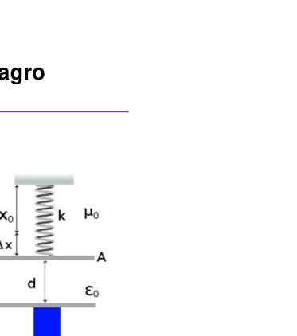
Topic: Electrostatics, Oscillations & Waves Metodi: Coulomb’s Law, Hooke’s Law, Simple Harmonic Motion Analysis Competenze: Physical Reasoning, Mathematical Modeling Objects: Capacitor, Spring Fonte: Testo (PDF) — p.3
PT100. Scuola tecnica ORT Sede Almagro Città di Buenos Aires.
Un’altra strana invenzione…
Figura 2 Un generatore di funzioni è un dispositivo elettronico che permette di generare diversi tipi di funzioni periodiche di tensione. Nella figura c’è un semplice e Un generatore di funzioni molto poco ortodosso. Le targhe di guida rectangolari di area A e massa scarsa, sono separati da una distanza Figura 1
OAF 2012 - 113 D, nel vuoto. La placca superiore è collegata al tetto della stanza da un la resorsione di costante k e la lunghezza naturale x0. La base blu è messa a terra e la La connessione tra la sorgente e la scheda superiore è collegata a una tensione V. Calcola:
a. Capacità del condensatore (C).
b. Il carico su ogni targa.
c. L’allungamento della sorgente (Δx), considerando che il campo prodotto per ogni placca è la metà del campo totale tra di loro.
d. L’energia immagazzinata nel condensatore e nella sorgente.
Si spegne la fonte di tensione, lasciando le schede cariche. Si inserisce una massa di 50 g sulla piastra superiore, si spostano la piastra superiore una distanza e verso il basso e si lascia oscillare al sistema, senza ammortizzazione. Calcola:
e. Capacità del capacitore in funzione del tempo.
f. Tensione tra le lastre in funzione del tempo e del grafico.
Si mette il sistema di nuovo a riposo, si sostituiscono le placche con altre. più massicci di massa m in modo tale che in ogni momento la forza L’elettrostatica tra le placche è scarsa rispetto al peso. Tra la targa La spirale più vicina al tetto è sotto tensione variabile. Vi=2V.sen(1000t1/s). Le spire della primavera non si toccano in modo tale da che il corrente deve passare attraverso ogni spirale.
g. Calcola il corrente che circola con modulo e fase.
Topic: Electrostatics, Oscillations & Waves Metodi: Coulomb’s Law, Hooke’s Law, Simple Harmonic Motion Analysis Competenze: Physical Reasoning, Mathematical Modeling Objects: Capacitor, Spring Fonte: Testo (PDF) — p.3
PT100. ORT Technical School Headquarters Almagro City of Buenos Aires.
Another strange invention…
Figure 2 A function generator is an electronic device that allows generating the number of voltage periodic functions. In the figure there is a simple and Very unorthodox function generator. The driving plates Areas A rectangles and scum mass, are separated by a distance. Figure 1
The following information is provided: d, in the vacuum. The upper plate is attached to the ceiling of the room by a spring of constant k and natural length x0. The blue base is grounded and the The connection between the spring and the top plate is connected to a V voltage. Calculate:
a. The capacitor capacity (C).
b. The load on each plate.
c. The elongation of the spring (Δx), considering that the field produced For each plate is half the total field between them.
d. The energy stored in the capacitor and in the spring.
The voltage source is disconnected, leaving the plates loaded. It ‘s a place . 50 g mass on the top plate, the top plate is moved one distance and down and it’s left to oscillate to the system, without cushioning. Calculate:
e. Capacity of the capacitor according to time.
f. The tension between plates depending on the time and graph.
The system is restored, the plates are replaced by a new one. m mass masses such that at all times the force electrostatic between the plates is despicable by weight. Between the plate . The lower and the nearest to the ceiling spindle is subject to a variable voltage. The following is the list of the main types of electricity generated by the electricity generated by the electricity generated by the electricity generated by the electricity generated by the electricity generated by the electricity generated by the electricity generated by the electricity generated by the electricity generated by the electricity generated by the electricity generated by the electricity generated by the electricity generated by the electricity generated by the electricity generated by the electricity generated by the electricity generated by the electricity generated by the electricity generated by the electricity generated by the electricity generated by the electricity generated by electricity generated by electricity generated by electricity. The spring spirals do not touch each other so that The current must pass through each spire.
g. Calculate the current circulating with module and phase.
Topic: Electrostatics, Oscillations & Waves Metodi: Coulomb’s Law, Hooke’s Law, Simple Harmonic Motion Analysis Competenze: Physical Reasoning, Mathematical Modeling Objects: Capacitor, Spring Fonte: Testo (PDF) — p.3
PT101. Escuela Técnica ORT – Sede Almagro Ciudad de Buenos Aires.
La garra de Arquímedes. El celebre matemático y físico griego arquimesas era de la ciudad de Siracusa. Una ciudad del sur de Italia a orillas del mar mediterráneo. Alrededor del 200 A.e.C. durante el asedio de los romanos a la ciudad , se diseño un dispositivo que permitía levantar por los aires a los barcos romanos que se acercaban a la muralla de la ciudad. El dispositivo consistía en un gancho que se adhería a un extremo del barco y que a través de un brazo palanca, elevaba el extremo del barco por fuera del agua. Al dejarlo caer el barco se hundía o se rompía quedando inoperable.
Figura 3
OAF 2012 - 114 Hasta el diseño definitivo Arquímedes realizo distintas pruebas. Sabia que los barcos romanos median 15m de largo y tenían una masa total de alrededor de 1500kg. Y también había logrado medir que cada buey con los que contaban para tirar de la soga podía mover una masa de 200kg. Inicialmente el sistema consistía en una sola polea en lo alto de la muralla. El gancho en un lado y en el otro extremo de la soga, formando esta un ángulo con el piso, un conjunto de bueyes que tiraban de la soga.
Figura 4
a. ¿qué fuerza era necesaria hacer para levantar el barco?
La altura de la muralla es de 15m y los animales se encuentran a 25m de la base de la misma.
b. ¿cuantos bueyes son necesarios para levantar un solo barco?
Al no contar con demasiados bueyes decidió modificar el sistema. Coloco un barra apoyada sobre un un soporte móvil (que le permitía rotar) en lo alto de la muralla. En un extremo de la barra estaba la soga con el gancho y del otro extremo una soga agarrada a los animales. (como la figura1 pero sin las poleas) Sabiendo que la barra mide 20 metros y que sobresale hacia fuera de la muralla 12 metros. Y que cuando la barra se encuentra horizontal, la soga de la que tiran los bueyes forma un ángulo de 30 grados con la horizontal.
c. ¿cuál es la fuerza inicial que deben hacer los bueyes para levantar el barco?
Si sólo se contaba con solo 3 bueyes por garra.
d. ¿cuántos metros de la barra deberían sobresalir de la muralla para poder levantar el barco?
Finalmente Arquímedes opta por el diseño que aparece en la figura. Si inicialmente las cuerdas forman con la barra un ángulo de 70 grados con respecto a la horizontal. Y si la barra sobresale 12 metros de la muralla.
e. Grafique la fuerza que deben hacer los bueyes en función del ángulo de inclinación de la barra con respecto al piso.
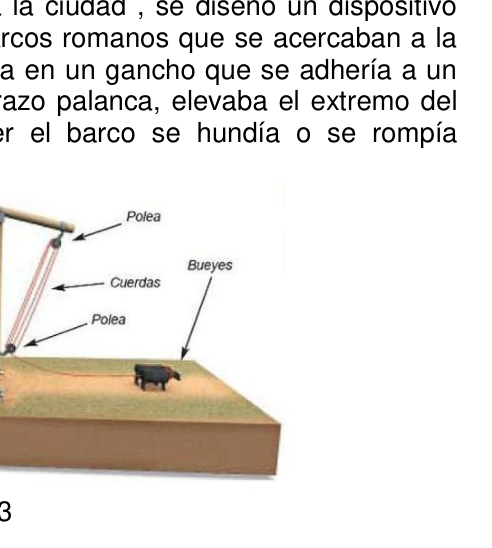
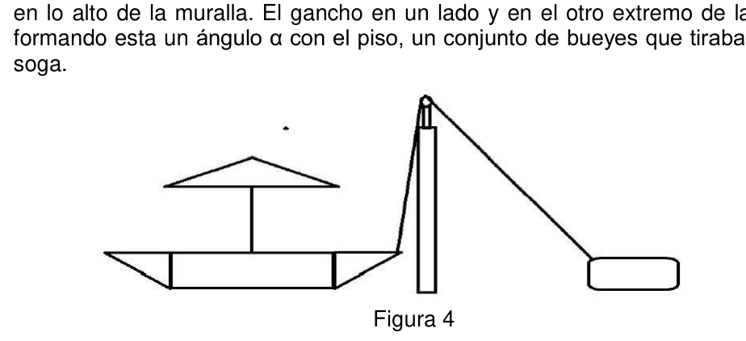
Topic: Rigid Body Statics, Newtonian Mechanics Metodi: Torque & Angular Momentum Analysis, Free-Body Diagram, Vector Decomposition Competenze: Physical Reasoning, Mathematical Modeling Objects: Lever, Pulley, String Fonte: Testo (PDF) — p.3
PT101. Scuola tecnica ORT Sede Almagro Città di Buenos Aires.
La grana di Archimede. Il famoso matematico e fisico greco Archimesiano era della città di Siracusa. Una città del sud d’Italia, sulle rive del Mediterraneo. Circa 200 anni. A.e.C. Durante l’ assedio dei Romani alla città , si progetta un dispositivo che permetteva di sollevare in aria le navi romane che si avvicinavano alla Murato della città. Il dispositivo consisteva in un gancio che si attaccava ad un L’estremità della nave e che attraverso un braccio leva, elevava l’estremità della nave. una nave fuori dall’acqua. Quando lo lasciavano cadere la nave si affondava o si spezzava
- Inoperabile.
Figura 3
OAF 2012 - 114 Fino al disegno definitivo Archimede esegue diversi test. Sapevo che li Le navi romane mediano 15 metri di lunghezza e avevano una massa totale di circa 1500kg. E aveva anche potuto misurare che ogni bue con cui contasse Per tirare la corda potevo spostare una massa di 200 kg. Inizialmente il sistema consisteva in un solo pole.
- Al di sopra del muro. Il gancio su un lato e l’altro lato della corda, formando questo angolo con il pavimento, un insieme di bue che tiravano dalla
- La corda.
Figura 4
a. Che forza era necessaria per sollevare la nave?
La parete è alta 15 metri e gli animali sono a 25 metri dalla base. di quella stessa.
b. Quanti buoi ci vogliono per sollevare una sola barca?
Non avendo troppi buoi, ha deciso di modificare il sistema. - Metto un’altra. Una barra appoggiata su un supporto mobile (che gli permetteva di ruotare) al di sopra della
- Il muro. In un’estremità della barra c’era la corda con il gancio e nell’altra. Un filo che si aggrappa agli animali. (come la figura1 ma senza polemiche) Sapendo che la barra è alta 20 metri e che si spalanca fuori dal muro
- 12 metri. E quando la barra è orizzontale, la corda che tirano fuori. Le buoi formano un angolo di 30 gradi con l’orizzontale.
c. Qual è la forza iniziale che devono fare i buoi per sollevare il
- Un’altra barca?
Se solo avessero tre buoi per garra.
d. Quanti metri della barra dovrebbero salire dal muro per Potete sollevare la nave?
Infine Archimede sceglie il disegno che appare nella figura. Si Inizialmente le corde formano con la barra un angolo di 70 gradi con per quanto riguarda l’orizzontale. E se la barra si estende a 12 metri dal muro.
e. Grafica la forza che devono fare i buoi in base all’angolo di inclinamento della barra rispetto al pavimento.
Topic: Rigid Body Statics, Newtonian Mechanics Metodi: Torque & Angular Momentum Analysis, Free-Body Diagram, Vector Decomposition Competenze: Physical Reasoning, Mathematical Modeling Objects: Lever, Pulley, String Fonte: Testo (PDF) — p.3
PT101. ORT Technical School Headquarters Almagro City of Buenos Aires.
The claw of Archimedes. The famous Greek mathematician and physicist Archimedes was from the city of Syracuse. A city in southern Italy on the shores of the Mediterranean Sea. About 200 . A.e.C. During the Roman siege of the city , a device is designed It allowed the Roman ships approaching the sea to fly through the air. The city wall. The device consisted of a hook that would attach to a The end of the ship and that through a lever arm, raised the end of the ship. ship out of the water. When he let it fall the ship sank or broke It’s getting inoperable.
Figure 3
The following points shall be added: Until the final design, Archimedes performed various tests. I knew they were . Roman ships averaged 15m long and had a total mass of about 1500kg. And I had also managed to measure that every ox they counted on I could pull the rope . move a 200kg mass. Initially the system consisted of a single pole . At the top of the wall. The hook on one side and the other end of the rope, forming this angle with the floor, a set of oxen pulling from the The rope.
Figure 4
a. What force was needed to lift the ship?
The wall is 15 meters high and the animals are 25 meters from the base. of the same.
b. How many oxen are needed to lift a single boat?
Not having too many oxen, he decided to modify the system. I ‘ll put one . The bar rested on a moving support (which allowed it to rotate) at the top of the wall. At one end of the bar was the rope with the hook and at the other. I’m going to end up with a rope that’s holding onto the animals. (as in figure 1 but without the pulleys) Knowing that the bar is 20 meters high and that it protrudes out of the wall . It’s 12 feet. And that when the bar is horizontal, the rope they pull from it. The oxen form a 30-degree angle with the horizontal.
c. What is the initial force that the oxen must do to lift the ship?
If only he had three oxen for each claw.
d. How many feet of the bar should it be out of the wall for? Can I lift the ship?
Finally Archimedes opts for the design that appears in the figure. Si Initially the strings form with the bar an angle of 70 degrees with the horizontal. And if the bar comes out 12 meters from the wall.
e. Graph the force that the oxen must make based on the angle of the slope of the bar relative to the floor.
Topic: Rigid Body Statics, Newtonian Mechanics Metodi: Torque & Angular Momentum Analysis, Free-Body Diagram, Vector Decomposition Competenze: Physical Reasoning, Mathematical Modeling Objects: Lever, Pulley, String Fonte: Testo (PDF) — p.3
PT102. Instituto Leonardo Sworn Ciudad de Buenos Aires.
Desde la parte superior (A) de un plano inclinado de 35° de pendiente se desliza un auto de juguete de 950g, desde una altura de 1,5m. Cuando llega al
OAF 2012 - 115 punto B recorre 2m de largo con una F roz constante de 5 N llegando así al punto C. Cuando sale del punto C sigue moviéndose impactando con un resorte en su posición de equilibrio de constante elástica k= 90 N/m. Calcular:
- La E mecánica en A
- La Energía mecánica en B
- La Energía cinética en B
- La velocidad en el punto B.
- El tiempo que tarda en llegar a B, si su velocidad inicial es cero.
- La Energía mecánica en C.
- La máxima variación en la posición del resorte(punto D)
- El valor da la velocidad en D.
Topic: Conservation of Energy, Newtonian Mechanics Metodi: Energy Conservation Method, Free-Body Diagram, Hooke’s Law Competenze: Physical Reasoning, Mathematical Modeling Objects: Inclined Plane, Spring, Cart Fonte: Testo (PDF) — p.3
PT102. Il Leonardo Sworn Institute Città di Buenos Aires.
Da un piano inclinato di 35° di pendenza si scivola una macchina da gioco da 950 grammi da un’altezza di 1,5 metri. Quando arriva al
OAF 2012 - 115 Il punto B è lungo 2 metri con una F roz costante di 5 N, arrivando così al punto C. Quando esce dal punto C continua a muoversi colpendo con una primavera nel suo posizione di equilibrio di costante elastica k= 90 N/m. Calcolare:
- La E meccanica in A
- La Meccanica in B
- L’energia cinetica in B
- La velocità al punto B.
- Il tempo necessario per raggiungere B, se la velocità iniziale è zero.
- L’energia meccanica in C.
- La massima variazione della posizione della stazione di resortimento (punto D)
- Il valore dà la velocità in D.
Topic: Conservation of Energy, Newtonian Mechanics Metodi: Energy Conservation Method, Free-Body Diagram, Hooke’s Law Competenze: Physical Reasoning, Mathematical Modeling Objects: Inclined Plane, Spring, Cart Fonte: Testo (PDF) — p.3
PT102. The Leonardo Sworn Institute City of Buenos Aires.
From the top (A) of an inclined plane of 35° slope se It slips a 950g toy car from a height of 1.5m. When he gets to the
The following points shall be added: Point B runs 2m long with a constant F roz of 5 N thus reaching the the following points are added: When it leaves the C-spot it continues to move and impact with a spring in its The following conditions shall apply: Calculation:
- The mechanical E in A
- Mechanical energy in B
- Kinetic energy in B
- Speed at point B.
- The time it takes to get to B, if your initial speed is zero.
- Mechanical energy in C.
- Maximum change in spring position (point D)
- The value gives the velocity in D.
Topic: Conservation of Energy, Newtonian Mechanics Metodi: Energy Conservation Method, Free-Body Diagram, Hooke’s Law Competenze: Physical Reasoning, Mathematical Modeling Objects: Inclined Plane, Spring, Cart Fonte: Testo (PDF) — p.3
PT103. Instituto Leonardo Sworn Ciudad de Buenos Aires.
Felipe debe preparar un trabajo de dilatación de sólidos. En el laboratorio,
encontró unas dos chapas con 6 orificios de 5,55 mm de diámetro. Pensó que
podía unirlas con remaches de aluminio.
Encontró remaches de 5,0 mm de diámetro a la temperatura del laboratorio de
21°C y pudo medirle a cada uno una masa de 1,5 g, pero quedaban flojos. Como
quiere ver qué pasa con los sólidos al variar la temperatura, decide calentar un
remache hasta 480°C.Luego lo introduce en un calorímetro totalmente adiabático
con 12g de agua destilada a 21°C.
- Calcular la temperatura de equilibrio entre el agua y el remache.
- ¿Podría ingresar el remache a 480°C? Justifica.
- Calcula la temperatura a la que deberían estar los remaches para introducirlos en los agujeros. Supone que el aluminio se dilata igual en todas las direcciones.
- Si en un vaso de precipitado hay 30 g de hielo a 0°C,¿que cantidad de remaches deberían usarse para fundir el hielo?
- Si se consiguieran remaches de hierro,¿ a qué temperatura deberían estar los remaches para que ajusten bien?
Datos:
Coeficiente de dilatación del aluminio: 2,38. 10 -5 / º C
Calor específico del hielo = 0,5 cal/g °C
Calor de fusión del hielo = 80 cal/g
Calor específico del agua = 1 cal/g °C
Calor específico del aluminio = 0,22 cal/g °C
Coeficiente de dilatación del hierro= 1,20. 10 -5 / º C
Nota: Considere que no hay intercambio de calor con el entorno
Topic: Thermodynamics, Elasticity & Materials Metodi: Conservation of Energy, Stress-Strain Analysis Competenze: Physical Reasoning, Mathematical Modeling Objects: Calorimeter, Rod Fonte: Testo (PDF) — p.3
PT103. Il Leonardo Sworn Institute Città di Buenos Aires.
Felipe deve preparare un lavoro di dilatazione dei solidi. In laboratorio, ha trovato circa due lastre con 6 fori di diametro di 5,55 mm. Pensava che… Potrei unirle con un’elaborazione di rivestimenti in alluminio. Ha trovato rivestimenti di 5,0 mm di diametro alla temperatura del laboratorio di E riuscì a misurare a ciascuno di loro una massa di 1,5 g, ma rimanevano fluttuanti. Come Vuole vedere cosa succede ai solidi quando la temperatura varia, decide di riscaldare un rimessa fino a 480°C. Poi inserisci in un calometro totalmente adiabatico con 12 g di acqua distillata a 21°C.
- Calcolare la temperatura di equilibrio tra l’acqua e il remache.
- Potrebbe inserire il rimache a 480°C? - Giustifica.
- Calcola la temperatura a cui dovrebbero essere i rimorchi per
- E’ il mio lavoro. Supponi che l’alluminio si dilatasse uguale a
- Tutti gli indirizzi.
- Se in un bicchiere di precipitazione ci sono 30 g di ghiaccio a 0°C, che quantità di ghiaccio Le remaches dovrebbero essere usate per fondere il ghiaccio?
- Se si ottengono rivestimenti di ferro, a che temperatura dovrebbero essere?
- Che cosa? - Che cosa?
Datati:
Coefficiente di dilatazione dell’alluminio: 2,38. 10 -5 / º C
Calore specifico del ghiaccio = 0,5 cal/g °C
Calore di fusione del ghiaccio = 80 cal/g
Calore specifico dell’acqua = 1 cal/g °C
Calore specifico dell’alluminio = 0,22 cal/g °C
Coefficiente di dilatazione del ferro = 1,20. 10 -5 / º C
Nota: Considera che non c’è scambi di calore con l’ambiente
Topic: Thermodynamics, Elasticity & Materials Metodi: Conservation of Energy, Stress-Strain Analysis Competenze: Physical Reasoning, Mathematical Modeling Objects: Calorimeter, Rod Fonte: Testo (PDF) — p.3
PT103. The Leonardo Sworn Institute City of Buenos Aires.
Philip must prepare a solid dilation work. In the lab, He found two plates with 6 holes of 5.55 mm in diameter. He thought that I could tie them together with aluminum straps. He found 5.0 mm diameter remaches at laboratory temperature in the MSK0/>C and he could measure each of them a mass of 1.5 g, but they were loose. Like He wants to see what happens to solids when the temperature changes, he decides to heat a Remove to 480°C. Then insert it into a fully adiabatic thermometer with 12 g of distilled water at 21°C.
- Calculate the equilibrium temperature between the water and the remache.
- Could you put the remache in MSK0/>C? It justifies it.
- Calculate the temperature at which the remaches should be for I’m gonna put them in the holes. Suppose the aluminum expands equally in All directions.
- If a glass of precipitation contains 30 g of ice at 0°C, what amount of ice is Should remaches be used to melt ice?
- If you get iron reels, what temperature should they be at? So you’re gonna have to make the remakes to fit right?
The data:
Aluminium dilation coefficient: 2.38. 10 -5 / º C
The specific heat of the ice = 0,5 cal/g °C
Heat of ice melting = 80 cal/g
The water specific heat = 1 cal/g °C
The specific heat of aluminium = 0,22 cal/g °C
The iron dilation coefficient is 1.20. 10 -5 / º C
Note: Consider that there is no heat exchange with the environment
Topic: Thermodynamics, Elasticity & Materials Metodi: Conservation of Energy, Stress-Strain Analysis Competenze: Physical Reasoning, Mathematical Modeling Objects: Calorimeter, Rod Fonte: Testo (PDF) — p.3
PT104. Instituto Leonardo Sworn Ciudad de Buenos Aires.
Agostina y Federico viven en un departamento en el 3° piso. Como hubo una pérdida de gas, Metrogas se vio obligado a dejar una semana sin gas al edificio, motivo por el cual decidieron comprar un calefón eléctrico y una estufa que conectaran en serie.
OAF 2012 - 116 La señora del 2°, que es jubilada, solo compro una estufa y el vecino del 1°piso compro también estufa y calefón, pero luego de consultar con un amigo, decidió que lo mejor era colocar el calefón y la estufa en paralelo.(Todos los calefones son iguales, lo mismo que las estufas). La nueva instalación eléctrica de los departamentos es la que muestra la fig 1. No considerar el valor de la resistencia interna de los cables y teniendo en cuenta que estufa y calefón funcionan simultáneamente, Calcular:
- La resistencia interna del calefón , sabiendo que la potencia del mismo es 1200W
- La resistencia interna de la estufa, si su potencia de fábrica es 1100W.
- La intensidad de corriente que lee A1 (amperímetro 1) cuando la llave S1 está cerrada.
- La caída de tensión que producen calefón y estufa en serie.
- La intensidad de corriente que lee A2 (amperímetro 2) cuando la llave S2 está cerrada.
- La intensidad de corriente que lee A3 (amperímetro 3) cuando la llave S3 está cerrada.
- Al cerrársela llave S3, la intensidad que lee A4.
- Al cerrarse todas las llaves, la intensidad que lee A5.
- La potencia que disipa cada calefón.
¿Qué clase de disyuntor (en función de la corriente máxima) deberá colocar cada vecino para estar adecuadamente protegido(es decir,en cada circuito)?
Topic: Circuits Metodi: Kirchhoff’s Laws, Equivalent Circuit Reduction Competenze: Physical Reasoning Objects: Resistor, Battery, Switch Fonte: Testo (PDF) — p.3
PT104. Il Leonardo Sworn Institute Città di Buenos Aires.
Agostina e Federico vivono in un appartamento al piano 3°. Come c’era una Per perdita di gas, Metrogas fu costretto a lasciare un settimana senza gas all’edificio. motivo per cui hanno deciso di comprare un caffone elettrico e un stufa che si collegano in serie.
OAF 2012 - 116 La signora del MSK0/, che è in pensione, compro solo un stufa e la vicina del MSK1/>piano Comprò anche stufa e caffè, ma dopo aver consultato un amico, ha deciso. che il meglio era mettere il caffone e la stufa in parallelo. Sono uguali, come le stufe. La nuova installazione elettrica dei dipartimenti è quella mostrata in figura 1. Non considerare il valore della resistenza interna dei cavi e avendo in conta che il stufa e il caffone funzionano contemporaneamente, Calcolare:
- La resistenza interna del caffone , sapendo che la potenza del suo es 1200W
- La resistenza interna del stufa, se la sua potenza di fabbrica è di 1100W.
- L’intensità di corrente che legge A1 (amperietro 1) quando la chiave S1
- È chiusa.
- La caduta di tensione che produce calcio e stufa in serie.
- L’intensità di corrente che legge A2 (amperietro 2) quando la chiave S2
- È chiusa.
- L’intensità di corrente che legge A3 (amperietro 3) quando la chiave S3
- È chiusa.
- Chiudendo la chiave S3, l’intensità che legge A4.
- Quando chiudiamo tutte le chiavi, l’intensità che legge A5.
- La potenza che dissipa ogni caffone.
Che tipo di disaggregatore (a seconda del massimo corrente) deve essere utilizzato?
- mettere ogni vicino in modo da essere adeguatamente protetto ogni circuito)?
Topic: Circuits Metodi: Kirchhoff’s Laws, Equivalent Circuit Reduction Competenze: Physical Reasoning Objects: Resistor, Battery, Switch Fonte: Testo (PDF) — p.3
PT104. The Leonardo Sworn Institute City of Buenos Aires.
Agostina and Federico live in an apartment on the 3° floor. How was there one? Metrogas was forced to leave the building a week without gas. Which is why they decided to buy an electric stove and a stove that They’ll connect in series.
The following is the list of the countries of the European Union: The MSK0/> lady, who is retired, I just buy a stove and the MSK1/>floor neighbor. I also buy a stove and a coffee shop, but after consulting with a friend, he decided. It was best to place the cafeteria and the stove in parallel. They’re the same, the same as the stoves. The new electrical installation in the departments is shown in Figure 1. Not considering the value of the internal resistance of the cables and having in The heater and the speaker are running simultaneously. Calculation:
- The inner strength of the calefone , knowing that the power of the calefone es 1200W
- The internal resistance of the stove, if its power output is 1100W.
- The current intensity reading A1 (ampere) when the key S1 It’s closed.
- The drop in voltage that produces the serial calefone and the stove.
- The current intensity reading A2 (amperimeter 2) when the S2 key It’s closed.
- The current intensity read A3 (amperature 3) when the S3 key It’s closed.
- When I lock the S3 key, the intensity reading A4.
- When you close all the keys, the intensity reading A5.
- The power that dissipates every phone.
What kind of disconnector (depending on the maximum current) should it be To place each neighbor to be properly protected, i.e. each circuit)?
Topic: Circuits Metodi: Kirchhoff’s Laws, Equivalent Circuit Reduction Competenze: Physical Reasoning Objects: Resistor, Battery, Switch Fonte: Testo (PDF) — p.3
PT105. Escuela Secundaria Superior Nro. 4 Villa Iris, Buenos Aires.
Un sistema físico se encuentra constituido por 500 g de agua y 100 g de hielo a la temperatura de equilibrio de 0º C . Se introducen en este sistema 200 g de vapor de agua a 100 ºC . Se quiere saber: a.- La temperatura final b.- La composición de la mezcla.
Topic: Thermodynamics Metodi: Conservation of Energy Competenze: Physical Reasoning Objects: Calorimeter Fonte: Testo (PDF) — p.3
PT105. La scuola superiore Nro. 4 Villa Iris, Buenos Aires.
Un sistema fisico è costituito da 500 g di acqua e 100 g di ghiaccio a la temperatura di equilibrio di 0 ° C . In questo sistema vengono introdotti 200 g di vapore d’ acqua a 100 oC . Si vuole sapere: a. La temperatura finale b. La composizione della miscela.
Topic: Thermodynamics Metodi: Conservation of Energy Competenze: Physical Reasoning Objects: Calorimeter Fonte: Testo (PDF) — p.3
PT105. High School No. 4 This is Villa Iris, Buenos Aires.
A physical system is made up of 500 g of water and 100 g of ice. The equilibrium temperature is 0 ° C . 200 g of water vapor at 100 oC . You want to know: a. The final temperature b. The composition of the mixture.
Topic: Thermodynamics Metodi: Conservation of Energy Competenze: Physical Reasoning Objects: Calorimeter Fonte: Testo (PDF) — p.3
PT106. Escuela Secundaria Superior Nro. 4 Villa Iris, Buenos Aires.
Desde la base de un edificio se arroja una piedra verticalmente hacia arriba con una velocidad de 10 m/s. Suponiendo que se desprecia la resistencia del aire: a) Obtenga las ecuaciones que determinan la variación de la posición y la velocidad con el tiempo tomando como referencia el punto de lanzamiento. b) Calcule el tiempo que tarda la piedra en alcanzar su altura máxima. c) Calcule la altura máxima que alcanza. d) Calcule la velocidad y la altura de la piedra 1.5 segundos después de de haber sido arrojada: ¿cómo interpreta los resultados?. e) Cuanto tarda la piedra en llegar al piso f) ¿Qué velocidad tenía en el instante previo a tocar el suelo?. g) Realice los gráficos que representan la velocidad y la posición en función del tiempo. h) Si el lanzamiento se realiza con la misma velocidad inicial desde un balcón situado a una altura de 7.5 m sobre el nivel del piso, ¿se modifican los resultados obtenidos?, justifique sus respuestas.
OAF 2012 - 117
i) En el instante que la piedra alcana su altura máxima: ¿Cuáles de las
siguientes afirmaciones son correctas:
1- Su velocidad y aceleración son nulas.
2- Su velocidad y aceleración son distintas de cero.
3- Su aceleración es nula pero su velocidad no.
4- Su velocidad es nula pero su aceleración no.
j) Se lanza una segunda piedra hacia arriba con el doble de velocidad
inicial , entonces la altura máxima alcanzada por la segunda será:
1- El doble de la alcanzada por la primera
2- El cuádruplo de la alcanzada por la primera
3- Tiene una relación con la alcanzada por la primera que de pende
la la velocidad inicial.
Topic: Newtonian Mechanics Metodi: Kinematic Equations Competenze: Physical Reasoning Objects: Projectile Fonte: Testo (PDF) — p.3
PT106. La scuola superiore Nro. 4 Villa Iris, Buenos Aires.
Dal fondamento di un edificio si lancia una pietra verticalmente verso l’alto con una velocità di 10 m/s. Supponiamo che si disprezzi la resistenza dell’aria: a) Ottieni le equazioni che determinano la variazione della posizione e la velocità nel tempo, prendendo come riferimento il punto di lancio. b) Calcolare il tempo che la pietra impiega per raggiungere la massima altezza. c) Calcolare la massima altezza raggiunta. d) Calcolare la velocità e l’altezza della pietra La Commissione ha inoltre adottato una decisione che prevede che il programma di ricerca e di sviluppo europeo sia stato pubblicato. e) Quanto tempo ci vuole per arrivare al pavimento? f) Qual era la velocità dell’istante precedente il tocco al suolo? g) Realizzare i grafici che rappresentano la velocità e la posizione in funzione del tempo. h) Se il lancio si effettua con la stessa velocità iniziale da un balcone situato ad un’altezza di 7,5 m sul piano, se Le risposte che si presentano sono state giustificate.
OAF 2012 - 117 (i) L’istante in cui la pietra raggiunge la sua altezza massima: le seguenti affermazioni sono corrette: 1- La sua velocità e accelerazione sono zero. 2- La sua velocità e accelerazione sono diverse da zero. 3- La sua accelerazione è zero ma la sua velocità no. 4- La sua velocità è zero, ma la sua accelerazione no. j) Un secondo pietra viene lanciata verso l’alto a doppia velocità iniziale , allora la massima altezza raggiunta dalla seconda sarà: 1- Il doppio di quello raggiunto dalla prima 2- Quadruple di quella raggiunta dalla prima 3- Ha un rapporto con la prima che si appende la velocità iniziale.
Topic: Newtonian Mechanics Metodi: Kinematic Equations Competenze: Physical Reasoning Objects: Projectile Fonte: Testo (PDF) — p.3
PT106. High School No. 4 This is Villa Iris, Buenos Aires.
From the base of a building a stone is thrown vertically up with a speed of 10 m/s. Assuming you despise the resistance of the air: (a) Obtain the equations that determine the variation in position and the speed over time taking as reference the point of launch. (b) Calculate the time it takes the stone to reach its maximum height. (c) Calculate the maximum height it reaches. (d) Calculate the stone’s speed and height 1.5 seconds after The Commission has already taken a number of measures to ensure that the results of the survey are not compromised. (e) How long does it take the stone to reach the floor ? (f) What speed was it at the moment before touching the ground? (g) Draw the graphs representing the speed and position in function of time. (h) If the launch is made at the same initial speed from a balcony at a height of 7.5 m above ground level, The Commission has also proposed that the Commission should be able to take the necessary measures to ensure that the results obtained are not altered.
The following points shall be added: (i) As soon as the stone reaches its maximum height: The following statements are correct: 1- Its speed and acceleration are zero. 2- Its speed and acceleration are different from zero. 3- Its acceleration is zero but its speed is not. 4- Its speed is zero but its acceleration is not. j) A second stone is thrown upwards at twice the speed initial , then the maximum height reached by the second will be: 1- Twice as much as the first one . 2- Four times the number reached by the first 3- It has a relation to the first one that hangs the initial speed.
Topic: Newtonian Mechanics Metodi: Kinematic Equations Competenze: Physical Reasoning Objects: Projectile Fonte: Testo (PDF) — p.3
PT107. Escuela Secundaria Superior Nro. 4 Villa Iris, Buenos Aires.
Una batería de 10 V de fem y 1 ohm de resistencia interna, se conecta a una
resistencia de carga R = 4 ohm: Calcular
a) La intensidad de corriente en el circuito.
b) La caída de tensión en la resistencia interna y en la carga .
c) La tensión en bornes de la batería.
d) La lectura que daría el voltímetro que se conectase entre los bornes de
la batería en circuito abierto.
Topic: Circuits Metodi: Kirchhoff’s Laws, Equivalent Circuit Reduction Competenze: Physical Reasoning Objects: Battery, Resistor Fonte: Testo (PDF) — p.3
PT107. La scuola superiore Nro. 4 Villa Iris, Buenos Aires.
Una batteria di 10 V di fem e 1 ohm di resistenza interna, si collega a una resistenza a carico R = 4 ohm: Calcolare a) L’intensità di corrente nel circuito. b) Il calo della tensione nella resistenza interna e nella carica . c) La tensione dei terminali della batteria. d) La lettura che darebbe il voltometro che si connette tra i bordi di la batteria in circuito aperto.
Topic: Circuits Metodi: Kirchhoff’s Laws, Equivalent Circuit Reduction Competenze: Physical Reasoning Objects: Battery, Resistor Fonte: Testo (PDF) — p.3
PT107. High School No. 4 This is Villa Iris, Buenos Aires.
A 10 V fem and 1 ohm internal resistance battery is connected to a The load resistance R = 4 ohm: Calculate (a) The current intensity in the circuit. (b) The drop in internal resistance and load voltage . (c) The voltage at the battery terminals. (d) The reading that would give the voltmeter to be connected between the terminals of the battery in open circuit.
Topic: Circuits Metodi: Kirchhoff’s Laws, Equivalent Circuit Reduction Competenze: Physical Reasoning Objects: Battery, Resistor Fonte: Testo (PDF) — p.3
PT108. Escuela Técnica Raggio Ciudad de Buenos Aires.
En el momento en que se enciende la luz verde de un semaforo, arrranca un automovil con una aceleracion constante de 3m/s.s . Justo en ese mismo instante, un camion que lleva una velocidad constante de 15m/s alcanza y rebasa al automovil .En dicho momento ambos vehiculos se encuentran en el mismo lugar . a) Plantee las ecuaciones horarias de cada movil. b) Cuanto tiempo tardara el automovil en alcanzar el camion ? c) ¿A que distancia del semaforo alcanzara el automovil al camion? d) ¿A que velocidad ira el automovil en el momento de alcanzar el camion? e) ¿ Deben ser iguales las velocidades de ambos vehiculos cuando se encuentran? f) Determine graficamente en forma cualitativa las soluciones de las preguntas b) y c), mediante la representacion de la posicion en funcion del tiempo de cada vehiculo.
Topic: Newtonian Mechanics Metodi: Kinematic Equations Competenze: Physical Reasoning Objects: Cart Fonte: Testo (PDF) — p.3
PT108. Scuola tecnica Raggio Città di Buenos Aires.
Quando accende la luce verde di un semaforo, strappate un’altra. auto con una velocità costante di 3 m/s. Proprio in quel posto. In un istante, un camion che porta una velocità costante di 15m/s raggiunge e Al momento, entrambi i veicoli sono in pista.
- Lo stesso posto . a) Sulla base delle equazioni orarie di ogni movile. b) Quanto tempo ci vorrà per raggiungere il camion ? c) A che distanza dal semaforo si raggiunge l’automobile dal camion? d) A che velocità si muoverà la vettura quando raggiungerà il camion? e) Le velocità di entrambi i veicoli devono essere uguali quando si
- Lo trovate? f) Determina qualitativamente in modo grafico le soluzioni di Le domande b) e c) presentano la posizione in funzione il tempo di ogni veicolo.
Topic: Newtonian Mechanics Metodi: Kinematic Equations Competenze: Physical Reasoning Objects: Cart Fonte: Testo (PDF) — p.3
PT108. Raggio Technical School City of Buenos Aires.
The moment the green light from a traffic light goes on, crack a light. vehicle with a constant acceleration of 3m/s. Right on that same. In an instant, a truck that is moving at a constant speed of 15m/s reaches and At this point both vehicles are in the car . Same place . (a) Submit the time equations for each mobile. (b) How long will it take the car to reach the truck ? (c) How far from the traffic light should the car reach the truck? (d) How fast will the car go when it reaches the truck? (e) Should the speeds of both vehicles be the same when Do you find it? (f) Graphically determine qualitative solutions for the Questions (b) and (c) by representing the position in action of the time of each vehicle.
Topic: Newtonian Mechanics Metodi: Kinematic Equations Competenze: Physical Reasoning Objects: Cart Fonte: Testo (PDF) — p.3
PT109. Escuela Técnica Raggio Ciudad de Buenos Aires.
- Para el circuito de la figura siguiente hallar el valor de la fuente V ,sabiendo que las llaves s1 y s2 estan cerradas y por R4 circula una corriente de 1amper hacia tierra.
- Calcular sabiendo el valor de la fuente y con las llaves cerradas todas las potencias disipadas en los resistores y la entregada por la fuente.
- Para todas las posibles combinaciones de S1 y S2 hallar la potencia entregada por la fuente .
OAF 2012 - 118
4) Si todas los resistores fueran iguales a un valor generico R calcular el
valor de resistencia que ve la fuente expresado en funcion de R
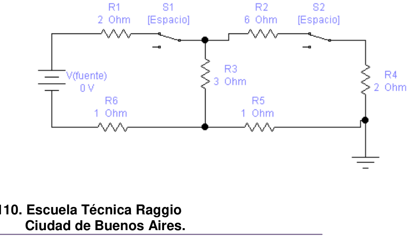
Topic: Circuits Metodi: Kirchhoff’s Laws, Equivalent Circuit Reduction Competenze: Physical Reasoning Objects: Resistor, Battery, Switch Fonte: Testo (PDF) — p.3
PT109. Scuola tecnica Raggio Città di Buenos Aires.
- Per il circuito della figura seguente, trovare il valore della fonte V , sapendo che le chiavi S1 e S2 sono chiuse e che per R4 circola una 1amper di corrente verso terra.
- Calcolare sapendo il valore della fonte e con le chiavi chiuse tutte le potenze dissipate nei resistori e le fornite dalla fonte.
- Per tutte le possibili combinazioni di S1 e S2 trovare la potenza
- Consegna da fonte .
OAF 2012 - 118
4) Se tutti i resistori fossero uguali a un valore generico R calcolare il
valore di resistenza che vede la fonte espressa in funzione di R
Topic: Circuits Metodi: Kirchhoff’s Laws, Equivalent Circuit Reduction Competenze: Physical Reasoning Objects: Resistor, Battery, Switch Fonte: Testo (PDF) — p.3
PT109. Raggio Technical School City of Buenos Aires.
- For the circuit in the following figure find the value of the source V , knowing that the s1 and s2 keys are locked and for R4 a circulation is 1amper current to land.
- Calculate knowing the value of the source and with all keys closed The power dissipated in the resistors and delivered by the source.
- For all possible combinations of S1 and S2 find the power delivered by the source .
The following points shall be added:
4) If all resistors were equal to a generic value R calculate the
resistance value that the source sees expressed as R
Topic: Circuits Metodi: Kirchhoff’s Laws, Equivalent Circuit Reduction Competenze: Physical Reasoning Objects: Resistor, Battery, Switch Fonte: Testo (PDF) — p.3
PT110. Escuela Técnica Raggio Ciudad de Buenos Aires.
Un trozo de alumninio (cp=24.0 J/mol.K ) de 10.00 g se sumerge en 28.0 g de agua. Este sistema se calienta eléctricamente , pasando la temperatura de 23.8 a 37.4 ºC .
- ¿Cuántos Joules de Energia son absorbidos por el AL?
- ¿ Cuántos Joules de Energia son absorbidos por el agua?
OAF 2012 - 119
Instancias Locales Problemas Experimentales
OAF 2012 - 120
Topic: Thermodynamics Metodi: Conservation of Energy Competenze: Physical Reasoning Objects: Calorimeter Fonte: Testo (PDF) — p.3
PT110. Scuola tecnica Raggio Città di Buenos Aires.
Un pezzo di alluminio (cp=24.0 J/mol.K) di 10,00 g viene immerso in 28,0 g di acqua. Questo sistema si riscalderà elettricamente , passando la temperatura di 23.8 . a 37.4 ºC .
- Quanti Joule di Energia vengono assorbiti dall’AL?
- Quanti Joule di Energia sono assorbiti dall’acqua?
OAF 2012 - 119
I servizi locali Problemi sperimentali
OAF 2012 - 120
Topic: Thermodynamics Metodi: Conservation of Energy Competenze: Physical Reasoning Objects: Calorimeter Fonte: Testo (PDF) — p.3
PT110. Raggio Technical School City of Buenos Aires.
A piece of aluminum (cp=24.0 J/mol.K) of 10.00 g is immersed in 28.0 g of
- What? This system is heated electrically , passing the temperature of 23.8 . a 37.4 ºC .
- How many Energy Joules are absorbed by the AL?
- How many Energy Joules are absorbed by water?
The following points shall be added:
Local authorities Experimental problems
The following points shall be added:
Topic: Thermodynamics Metodi: Conservation of Energy Competenze: Physical Reasoning Objects: Calorimeter Fonte: Testo (PDF) — p.3
PE1. Instituto Eduardo L. Holmberg Quilmes, Buenos Aires.
Tema: ley de Hooke. Objetivo: determinar la constante elástica de resortes. Introducción teórica: puede definirse como cuerpo elástico a todo cuerpo que recupera su forma y tamaño originales cuando deja de actuar sobre él la fuerza que lo deformaba. Los resortes son ejemplos comunes de cuerpos elásticos pero lo dicho es aplicable a una gran cantidad de otros cuerpos. Robert Hooke fue el primero en establecer que la deformación que adquiere un cuerpo elástico es directamente proporcional a la fuerza deformante. Según el diagrama de abajo, x es la deformación y Fd es la fuerza deformante. En el resorte aparece otra fuerza de igual valor pero sentido contrario a Fd que se llama fuerza recuperadora Fr (no dibujada abajo). Esta fuerza recuperadora es la que provoca que el resorte vuelva a tener su forma y tamaño originales cuando desaparece la fuerza deformante. La ley de Hooke puede expresarse matemáticamente de la siguiente manera:
Fr=-Kx
donde K es la constante de proporcionalidad entre la deformación y la fuerza recuperadora, llamada constante elástica del resorte. El valor de K será más grande para resortes más “duros” y será menor para resortes más “blandos”.
Para el presente trabajo, podría prescindirse del signo negativo de la ecuación anterior, ya que ambas fuerzas tienen efectivamente el mismo módulo.
Si se considera la fuerza Fd (positiva) en vez de Fr (negativa), la ley de Hooke puede representarse gráficamente de la siguiente manera:
donde la pendiente de la recta tiene el mismo valor que la constante elástica K del resorte.
Parte 1: En el presente trabajo se pretende que determine experimentalmente el valor de la constante elástica de dos resortes.
OAF 2012 - 121 Para lograrlo, deberá suspender un resorte de un soporte, colgarle una carga de peso conocido y medir el valor de la deformación. Ambos datos (F; x) deberán registrarse en una tabla. Luego deberá incrementar la carga y medir nuevamente la deformación. Este proceso deberá repetirse varias veces hasta obtener aproximadamente 8 valores de cada variable. Una vez completada la etapa de medición, deberá determinar el valor de la constante elástica K del resorte, ya sea por medio de un gráfico o por promedio de valores calculados. Luego se repite el proceso con el segundo resorte.
Parte 2:
El principal objetivo de este trabajo es que estudie experimentalmente cuál será
el valor de la constante elástica de un nuevo resorte formado por la asociación
de los dos resortes usados previamente.
En primer lugar, se asociarán los dos resortes en serie y luego en paralelo, tal
como se ve abajo.
Si llamamos K1 y K2 a las constantes de los dos resortes que se estudiaron anteriormente, determinar el valor de la constante KS para los resortes en serie y KP para los resortes en paralelo. Para lograrlo, se deberá seguir un procedimiento similar al aplicado anteriormente con los resortes individuales.
¿Qué relación tienen tanto KS como KP con K1 y K2?
Escriba su conclusión lo más detalladamente posible.
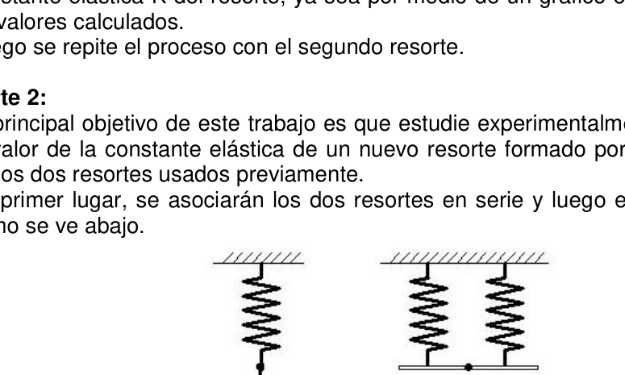
Topic: Elasticity & Materials, Oscillations & Waves Metodi: Hooke’s Law, Experimental Data Analysis, Graph Linearization Competenze: Physical Reasoning, Experimental Data Analysis Objects: Spring Fonte: Testo (PDF) — p.3
PE1. Istituto Eduardo L. Holmberg Quilmes, Buenos Aires.
Tema: Legge di Hooke. Obiettivo: determinare la costante elastica delle sorgenti. Introduzione teorica: può essere definito come corpo elastico a qualsiasi corpo che Ritorna alla forma e alla dimensione originali quando la forza smette di agire su di lui che lo distorsiva. Le sorgenti sono esempi comuni di corpi elastici, ma… La Commissione ha adottato una decisione che prevede che il Consiglio di Stato, in base alle sue proposte, non potrà accettare la decisione. Robert Hooke fu il primo a stabilire che la deformazione che acquista un il corpo elastico è direttamente proporzionale alla forza di deformazione. Secondo il diagramma di seguito, x è la deformazione e Fd è la forza diformazione. Nella primavera appare un’altra forza di valore uguale ma in senso contrario a Fd che si chiama forza recuperatrice Fr (non disegnata sotto). Questa forza di recupero È la causa che il resortimento riprende la sua forma e dimensione originali. quando la forza distortrice scompare. La legge di Hooke può essere espressa matematicamente come segue:
Fr=-Kx
dove K è la costante di proporzionalità tra la deformazione e la forza recuperatore, chiamato costante elastica della primavera. Il valore di K sarà più grande per le sorgenti più dure e sarà più piccolo per le sorgenti più morbide.
Per il presente lavoro, potrebbe essere dispensato il segno negativo dell’equazione La forza di un’azione è la stessa.
Se si considera la forza Fd (positiva) invece di Fr (negativa), la legge di Hooke può essere rappresentata graficamente come segue:
dove la pendenza della retta ha lo stesso valore della costante elastica K della primavera.
Parte 1: Il presente lavoro intende determinare sperimentalmente il valore di la costante elastica di due sorgenti.
OAF 2012 - 121 Per farlo, deve sospendere un’uscita di un supporto, appendere un carico di peso noto e misura il valore della deformazione. Entrambi i dati (F; x) devono registrarsi su una tabella. Poi deve aumentare il carico e misurare di nuovo la deformazione. Questo . Il processo deve essere ripetuto più volte fino a ottenere circa 8 valori di ogni variabile. Una volta completata la fase di misurazione, deve essere determinato il valore di La costante elastica K della primavera, sia tramite un grafico che in media di valori calcolati. Poi si ripete il processo con la seconda primavera.
Parte 2: L’obiettivo principale di questo lavoro è quello di studiare sperimentalmente quale sarà il valore della costante elastica di una nuova primavera formata dall’associazione di due fonti precedentemente utilizzate. In primo luogo, le due sorgenti saranno associate in serie e poi in parallelo, come come si vede sotto.
Se chiamiamo K1 e K2 alle costanti delle due fonti che sono state studiate Precedentemente, determinare il valore della costante KS per le sorgenti in serie e KP per le sorgenti parallele. Per questo, è necessario seguire una procedura simile a quella applicata. In precedenza, con le singole risorse.
Che relazione hanno KS e KP con K1 e K2?
Scrivi la tua conclusione nel più dettaglio possibile.
Topic: Elasticity & Materials, Oscillations & Waves Metodi: Hooke’s Law, Experimental Data Analysis, Graph Linearization Competenze: Physical Reasoning, Experimental Data Analysis Objects: Spring Fonte: Testo (PDF) — p.3
PE1. The Institute Eduardo L. Holmberg Quilmes, Buenos Aires is where I am.
Subject: Hooke’s law. Objective: to determine the elastic constant of springs. Theoretical introduction: it can be defined as an elastic body to any body that It regains its original shape and size when the force stops acting on it. It was a deformation. Springs are common examples of elastic bodies but The same applies to a large number of other bodies. Robert Hooke was the first to establish that the deformation that acquires a The elastic body is directly proportional to the deforming force. According to the diagram below, x is the deformation and Fd is the deforming force. In the spring there appears another force of equal value but opposite to Fd which It’s called the recovery force Fr (not shown below). This recovery force . It ‘s what causes the spring to return to its original shape and size . When the deforming force disappears. Hooke’s law can be expressed mathematically as follows:
Fr=-Kx
where K is the constant of proportionality between the deformation and the force The recovery machine, called the spring elastic constant. The value of K will be more It will be larger for harder springs and smaller for softer springs.
For this work, the negative sign of the equation could be omitted. The two forces have the same module.
If the force Fd (positive) is considered instead of Fr (negative), Hooke’s law can be represented graphically as follows:
where the slope of the straight line is the same as the elastic constant K of the spring.
Part 1: This paper aims to experimentally determine the value of The elastic constant of two springs.
The following is the list of the Member States’ financial statements: To achieve this, you must suspend a spring from a support, hang a load of known weight and measure the deformation value. Both data (F; x) must be to register on a table. Then you’ll have to increase the load and measure the deformation again. This one . The process must be repeated several times until approximately 8 values are obtained. of each variable. Once the measurement stage is completed, the value of the The spring elastic constant K, either by graph or by average of calculated values. Then repeat the process with the second spring.
Part two: The main objective of this work is to experimentally study what it will be. the value of the elastic constant of a new spring formed by the association of the two springs used previously. First, the two springs will be linked in series and then in parallel, such as as you can see below.
If we call K1 and K2 the constants of the two springs that were studied above, determine the value of the KS constant for serial springs and KP for the parallel springs. To achieve this, a procedure similar to the one applied must be followed The Commission has already taken a number of measures to address the problem of the use of the single market.
What relationship do KS and KP have to K1 and K2?
Write down your conclusion in as much detail as possible.
Topic: Elasticity & Materials, Oscillations & Waves Metodi: Hooke’s Law, Experimental Data Analysis, Graph Linearization Competenze: Physical Reasoning, Experimental Data Analysis Objects: Spring Fonte: Testo (PDF) — p.3
PE2. Instituto Primo Capraro San Carlos de Bariloche, Río Negro.
¡Que vayan a lavar los platos!
Consideraciones teóricas. El título de esta práctica hace referencia a una frase muy desafortunada del por el entonces ministro de economía Domingo Cavallo en respuesta a una crítica realizada por una investigadora en sociología sobre el curso que llevaba la política Nacional frente a la ciencia e investigación. Esto que ocurrió allá por 1994 y que fue desafortunado en su momento, hoy, en esta prueba experimental (donde haremos ciencia e investigación) nos viene como anillo al dedo porque vamos a trabajar con detergente. La viscosidad es una propiedad de los fluídos que involucra la idea de la fricción interna entre moléculas del fluído. La viscosidad hace que cueste trabajo palear
OAF 2012 - 122 una canoa en aguas tranquilas, pero también es lo que hace que funcione la pala. Los efectos viscosos son importantes en el flujo de fluídos en tuberías, el flujo de la sangre, la lubricación de las piezas de un motor y muchas otras situaciones. Un fluído viscoso tiende a adherirse a una superficie sólida en contacto con ella. Cuando se deja caer por gravedad un cuerpo sólido en un medio viscoso, a la variación inicial de la velocidad del cuerpo, le sigue un movimiento con velocidad constante llamado “velocidad terminal”. Ello ocurre cuando las fuerzas que actúan sobre el cuerpo están en equilibrio. Para el caso de una esfera cayendo en un fluído homogéneo infinito, las fuerzas que actúan sobre la esfera son (ver figura):
Peso de la esfera (P), Empuje o fuerza de flotación (E) y la fuerza de Resistencia Viscosa (S) Para determinar el peso de la esfera sabemos que el volumen de la misma es
Donde R es el radio de la esfera, y conociendo su densidad sabemos que:
Donde Pe es el peso específico de la esfera, σ es la densidad de la esfera y g la aceleración de la gravedad. Reemplazando nos queda:
En el caso del empuje que es igual al peso del fluído desalojado (que también es una esfera, pero de fluído), solo bastará con reemplazar en la expresión anterior la densidad correspondiente:
Donde ρ es la densidad del fluído. Por su parte la fuerza de resistencia viscosa viene dada según la Ley de Stokes por:
Donde η es el coeficiente de viscosidad del fluído y v es la velocidad terminal de la esfera. Planteando el equilibrio de fuerzas resulta que:
P E S V=cte
OAF 2012 - 123 Reemplazando y sacando factor común en el primer miembro:
De esta ecuación podemos simplificar y despejar el coeficiente de viscosidad.
Objetivo de la experiencia: Determinar el coeficiente de viscosidad del detergente industrial concentrado SP Deter 3, a la temperatura ambiente del laboratorio.
Elementos disponibles: Para realizar esta experiencia se dispone de: Bolitas de acero de 4 diámetros distintos (ya se conocen los mismos y su error asociado, como así también su densidad) Probeta graduada Botella de detergente SP Deter 3 (ya se conoce su densidad) Cronómetro Gancho de alambre Papel absorbente y trapos Regla graduada al milímetro Marcador
Procedimiento: Realizar 2 marcas en la probeta tratando de que las mismas se encuentren como mínimo a 5 cm del fondo y de la parte superior de la misma. Llenar la probeta graduada con el detergente evitando que se formen burbujas de aire y dejar descansar un tiempo prudencial. La densidad del detergente está indicada en el envase con su correspondiente error aparente. Con el juego de bolitas de acero (de las cuales se conocen previamente sus diámetros y su error aparente en la medición de los mismos) comenzar a determinar la velocidad terminal de las mismas al caer dentro del detergente. Soltar las bolillas desde la superficie del fluído. No cometer error de paralaje para la medición de los tiempos. Para ir recuperando las bolillas desde el fondo de la probeta, usar el gancho de alambre que se provee para tal fin. Es conveniente dejar caer todas las bolitas que se proveen y luego rescatar con el gancho las mismas para repetir las mediciones tantas veces como creas necesario. Mantener el espacio de trabajo limpio, seco y ordenado.
Requerimientos: Al finalizar la experiencia se deberá entregar un informe donde conste: Planteo del problema Método experimental utilizado Resultados obtenidos y evaluación del error asociado. Expresar el valor de la viscosidad en unidades del SI Discusión y comentarios
Datos necesarios: Densidad de las bolitas:
OAF 2012 - 124 Densidad del detergente SP Deter 3:
Diámetros de las bolitas:
Bolita 1 3.00 mm ± 0.01 mm Bolita 2 6.00 mm ± 0.01 mm Bolita 3 8.32 mm ± 0.01 mm Bolita 4 12.70 mm ± 0.01 mm
Aceleración de la gravedad:
Topic: Fluid Mechanics Metodi: Experimental Data Analysis, Hydrostatic Equilibrium, Error Propagation Competenze: Physical Reasoning, Experimental Data Analysis Objects: Sphere, Container Fonte: Testo (PDF) — p.3
PE2. Istituto Primo Capraro San Carlo di Bariloche, Rio Negro.
Vai a lavare i piatti!
Considerazioni teoriche. Il titolo di questa pratica fa riferimento a una frase molto sfortunata del l’allora ministro dell’economia Domingo Cavallo in risposta a una critica La ricerca è stata condotta da una ricercatrice in sociologia sul corso di ricerca della La politica nazionale contro la scienza e la ricerca. Questo che è successo laggiu ’ 1994 e che è stato sfortunato al suo tempo, oggi, in questo test sperimentale. (dove faremo scienza e ricerca) ci viene come un anello al dito perché
- Andiamo a lavorare con detergente. La viscosità è una proprietà dei fluidi che coinvolge l’idea di attrito. interna tra molecole di fluido. La viscosità rende difficile il lavoro di pale.
OAF 2012 - 122 Una canoa in acque tranquille, ma è anche ciò che fa funzionare la
- La palla. Gli effetti viscosissimi sono importanti nel flusso di fluidi in tubi, il flusso di sangue, lubrificazione di parti di un motore e molte altre situazioni. Un fluido viscoso tende ad aderire a una superficie solida in contatto con essa. Quando si fa cadere da gravità un corpo solido in un ambiente viscoso, la La velocità iniziale del corpo varia, e viene seguita da un movimento a velocità. costante chiamata velocità terminale. Questo succede quando le forze che Agiscono sul corpo, sono in equilibrio. Nel caso di una sfera cadendo in un fluido infinito, le forze che agiscono sulla sfera sono (vedi figura):
Peso della sfera (P), Push o forza di galleggiamento (E) e forza di resistenza Viscosa (S) Per determinare il peso della sfera sappiamo che il suo volume è
Dove R è il raggio della sfera, e conoscendo la sua densità sappiamo che:
Dove Pe è il peso specifico della sfera, σ è la densità della sfera e g la l’accelerazione della gravità. Rimane a sostituire:
Nel caso del spinto che è uguale al peso del fluido sfrattato (che è anche una sfera, ma fluida), basta solo sostituire nell’espressione precedente la densità corrispondente:
Dove ρ è la densità del fluido. La forza di resistenza viscosa , invece , viene data secondo la legge di Stokes . per:
Dove η è il coefficiente di viscosità del fluido e v è la velocità terminale di la sfera. Sulla base di questo equilibrio di forze si scopre che:
P E S V=te
OAF 2012 - 123 Sostituendo e togliendo il fattore comune nel primo membro:
Da questa equazione possiamo semplificare e chiarire il coefficiente di viscosità.
Obiettivo dell’esperienza: determinare il coefficiente di viscosità del Deterente industriale concentrato SP Deter 3, a temperatura ambiente di laboratorio.
Elementi disponibili: Per realizzare questa esperienza si dispone di: Bocce di acciaio di 4 diversi diametri (sempre conosciute e il loro errore associato, così come la loro densità) Provetta graduata Bottiglia di detergente SP Deter 3 (la densità è già nota) Cronometro Cuccio di filo carta assorbente e indumenti regola graduata al millimetro Marcatore
Procedura: Fare due segni sul campione cercando di farli trovare come a almeno 5 cm dal fondo e dalla parte superiore. Riempire il campione graduata con detergente evitando la formazione di bolle d’aria e lasciando
- Si, si, si, si, si, si, si, si, si, si, si, si, si, si, si, si, si, si, si, si, si, si, si, si, si, si, si, si, si, si, si, si, si, si, si, si, si, si, si, si, si, si, si, si, si, si, si, si, si, si, si, si, si, si, si, si, si, si, si, si, si, si, si, si, si, si, si, si, si, si, si, si, si, si, si, si, si, si, si, si, si, si, si, si, si, si, si, si, si, si, si, si, si, si, si, si, si, si, si, si, si, si, si, si, si, si, si, si, si, si, si, si, si, si, si, si, si, si, si, si, si, si, si, si, si, si, si, si, si, si, si, si, si, si, si, si, si, si, si, si, si, si, si, si, si, si, si, si, si, si, si, si, si, si, si, si, si, si, si, si, si, si, si, si, si, si, si, si, si, si, si, si, si, si, si, si, si, si, si, si, si, si, si, si, si, si, si, si, si, si, si, si, si, si, si, si, si, si, si, si, si, si, si, si, si, si, si, si, si, si, si, si, si, si, si, si, si, si, si, si, si, si, si, si, si, si, si, si, si, si, si, si, si, si, si, si, si, si, si, si, si, si, si, si, si, si, si, si, si, si, si, si, si, si, si, La densità del detergente è indicata in con il relativo errore apparente. Con il gioco di palline di acciaio (di cui sono precedentemente noti le loro I diametri e il loro errore apparente nel misurare i diametri) iniziare a determinare la velocità terminale di tali sostanze quando cadono nel detergente. Smettere le palline dalla superficie del fluido. Non commettere errori di parallaggio per La misurazione dei tempi. Per recuperare le palline dal fondo del campione, utilizzare il gancio di il filo fornito per tale scopo. È conveniente lasciare cadere tutte le palline che si forniscono e poi salvare con il gancio le stesse per ripetere le Misurazioni tutte le volte che riteni necessario. Mantenere il luogo di lavoro pulito, asciutto e ordinato.
Requisiti: alla fine dell’esperienza deve essere fornito un rapporto in cui Contiene: Sorgere del problema Metodo sperimentale utilizzato Risultati ottenuti e valutazione dell’errore associato. Esprimere il valore di viscosità in unità SI Discussione e commenti
Dati necessari: Densità delle palline:
OAF 2012 - 124 Densità del detergente SP Deter 3:
Diametri delle palline:
- La prima bolletta 3.00 mm ± 0.01 mm
- Bolla 2 6.00 mm ± 0.01 mm
- La pallina 3 . 8.32 mm ± 0.01 mm
- Bolla 4 12.70 mm ± 0.01 mm
Accelerazione della gravità:
Topic: Fluid Mechanics Metodi: Experimental Data Analysis, Hydrostatic Equilibrium, Error Propagation Competenze: Physical Reasoning, Experimental Data Analysis Objects: Sphere, Container Fonte: Testo (PDF) — p.3
PE2. The first is the Capraro Institute. St. Charles of Bariloche, Rio Negro.
Let’s go wash the dishes!
Theoretical considerations. The title of this practice refers to a very unfortunate phrase from the The then Minister of Economy Domingo Cavallo responded to a criticism. The study was conducted by a researcher in sociology on the course of the National policy in the face of science and research. This is what happened over there . 1994 and that was unfortunate at the time, today, in this experimental test. (Where we do science and research) it comes to us like a ring on our finger because Let’s work with detergent. Viscosity is a property of fluids that involves the idea of friction. The fluid is a fluid that is a fluid that is a fluid that is a fluid that is a fluid that is a fluid that is a fluid that is a fluid that is a fluid that is a fluid that is a fluid that is a fluid that is a fluid that is a fluid that is a fluid that is a fluid that is a fluid that is a fluid that is a fluid that is a fluid that is a fluid that is a fluid that is a fluid that is a fluid that is a fluid that is a fluid that is a fluid. Viscosity makes it hard work to pale .
The following points shall be added: A canoe in calm waters, but it’s also what makes the boat work. shovel. The viscous effects are important in fluid flow in pipes, the blood flow, lubrication of engine parts and many others. The situation. A viscous fluid tends to adhere to a solid surface in contact with it. When a solid body is gravitationally dropped into a viscous medium, the The initial variation in body speed, followed by a rapid motion. constant called terminal speed. This is what happens when the forces that They act on the body, they’re in balance. For the case of a sphere falling into an infinite homogeneous fluid, the forces The following are (see figure):
Weight of the sphere (P), Push or floating force (E) and Resistance force Viscosa (S) To determine the weight of the sphere we know that the volume of the sphere is
Where R is the radius of the sphere, and knowing its density we know that:
Where Pe is the specific weight of the sphere, σ is the density of the sphere and g is the density of the sphere. acceleration of gravity. Replacing the following:
In the case of the thrust that is equal to the weight of the displaced fluid (which is also a sphere, but fluid), just replace in the previous expression the corresponding density:
Where ρ is the density of the fluid. For its part , viscous resistance is given by Stokes ’ law . by:
Where η is the viscosity coefficient of the fluid and v is the terminal velocity of The sphere. The balance of forces is shown by:
P E S V = ct
The following points shall be added: By replacing and removing common factor in the first member:
From this equation we can simplify and clear up the viscosity coefficient.
The purpose of the experiment: to determine the viscosity coefficient of the Concentrated industrial detergent SP Deter 3, at room temperature of The lab.
Available items: To carry out this experience: 4 different diameter steel balls (the same are known and its associated error, as well as its density) Graduated test SP Deter 3 bottle (density already known) The timekeeper Wire hook absorbent paper and cloth Gradual rule to the millimeter Marker
The procedure: Make 2 marks on the sample trying to find the same as at least 5 cm from the bottom and top of the container. Fill the sample graduated with the detergent preventing air bubbles from forming and leaving Take a rest for a while. The density of the detergent is indicated in the Pack with its corresponding apparent error. With the game of steel balls (of which its previously known Diameters and their apparent error in measuring them) start at determine the terminal velocity of the products when they fall into the detergent. Release the balls from the surface of the fluid. Do not make a parallax error for The measurement of time. To go and retrieve the balls from the bottom of the sample, use the hook of wire provided for that purpose. It ‘s best to drop all the balls . They’re supplied and then rescued with the hook the same to repeat the You can take measurements as many times as you think is necessary. Keep the workspace clean, dry and tidy.
Requirements: At the end of the experience a report must be submitted where consists of: Problem setting Experimental method used • Results obtained and assessment of the associated error. Express the value of viscosity in SI units Discuss and comment
Data required: Density of the balls:
The following points shall be added: Density of detergent SP Deter 3:
Ball diameter:
- Ballot 1 3.00 mm ± 0.01 mm Ballot two . 6.00 mm ± 0.01 mm Ballot three . 8.32 mm ± 0.01 mm Ballot 4 . 12.70 mm ± 0.01 mm
Acceleration of gravity:
Topic: Fluid Mechanics Metodi: Experimental Data Analysis, Hydrostatic Equilibrium, Error Propagation Competenze: Physical Reasoning, Experimental Data Analysis Objects: Sphere, Container Fonte: Testo (PDF) — p.3
PE3. Escuela Nicolás Avellaneda Aguilares, Tucumán.
Se desea determinar la coeficiente de viscosidad “a la temperatura ambiente” de un liquido.
Para ello se le proveen los siguientes elementos:
Una probeta graduada.
Un frasco con líquido viscoso.
Esferas de vidrio.
Cronómetro.
Regla.
Balanza.
Calibre.
Papel milimetrado.
Marco Teórico La viscosidad es una propiedad de los fluidos. En los líquidos se debe a las fuerzas de cohesión intermoleculares y en los gases a las colisiones entre las moléculas de un gas. La viscosidad de un fluido se expresa cuantitativamente mediante el coeficiente de viscosidad , que es propio de cada fluido. Este coeficiente varía con el aumento de la temperatura, disminuyendo en los líquidos y aumentando en los gases. La ley de Stokes, establece que durante la caída de una esfera dentro de un fluido, esta interactúa con el campo gravitatorio terrestre, con las capas del fluido, de manera que las fuerzas que se ejercen sobre ella son el peso P, el empuje E y la fuerza viscosa F (véase figura). Este movimiento es inicialmente acelerado, hasta que las tres fuerzas se equilibran y la esfera continua cayendo con velocidad constante, llamada velocidad limite o de régimen. Cuando la esfera alcanza esta velocidad (si consideramos los módulos) se verifica:
P = F + E (1)
y la intensidad de la fuerza viscosa en el movimiento de una esfera dentro de un fluido viscoso, mientras no hay turbulencias, se puede calcular mediante la Ley de Stokes, cuya expresión es:
F = r v (2)
Donde es el coeficiente de viscosidad, r es el radio de la esfera y v el valor de la velocidad de régimen.
OAF 2012 - 125
Recuerda que:
EMPUJE: según el principio de Arquímedes es igual al “peso del líquido
desalojado”. Para calcularlo debes considerar el peso específico del
fluido y el volumen del cuerpo sumergido, siendo
E = V; donde es peso especifico
DENSIDAD: Cociente entre la masa y el volumen.
PESO ESPECIFICO: es cociente entre peso y volumen, su relación con
la densidad es:
= . G
y g es la aceleración de la gravedad.
ACELERACION DE LA GRAVEDAD en Aguilares
g = ( 9,79 + 0,01) m/s2.
VOLUMEN DE UNA ESFERA: V = 4/3 r3
Método sugerido
Para determinar la fuerza viscosa F, se le sugiere determinar:
a) el peso del cuerpo, para ello dispone de la balanza donde puede
obtener la masa de la esfera y luego calcular el peso con la conocida
P = m . g.
b) El empuje: Para ello necesitas calcular el volumen, previamente
mides el diámetro con el calibre. También necesitas la densidad del
liquido; en este punto se sugiere colocar en la probeta (cuya masa
mide previamente) un volumen V del liquido viscoso y determinar la
masa. El marco teórico le dice el resto.
Para determinar la velocidad de régimen: se sugiere: colocar una gran
cantidad de líquido en la probeta (por encima de la marca de graduación
superior de la probeta), luego dejar caer la esfera dentro del líquido y
cuando haya desplazado entre uno o dos centímetros (o lo que estime
necesario) ya estaría en velocidad de régimen. A partir de ese instante
medir distintos espacios recorridos con sus respectivos tiempos para
poder determinar la velocidad. Estos espacios pueden ser la misma
graduación de la probeta, que luego puedes relacionar con una escala
métrica con la regla.
A continuación graficar espacio en función del tiempo y obtener la mejor
recta; sabiendo que su pendiente es la velocidad de régimen.
Ahora sólo resta determinar el valor del coeficiente de viscosidad solicitado;
consignando el resultado en unidades del sistema MKS.
F E P En la figura la esfera se encuentra en velocidad de régimen dentro del líquido.
De la expresión (1) resulta F = P – E
De la expresión (2) resulta = . F .
6 r v
OAF 2012 - 126
Topic: Fluid Mechanics Metodi: Experimental Data Analysis, Graph Linearization Competenze: Physical Reasoning, Experimental Data Analysis Objects: Sphere, Container Fonte: Testo (PDF) — p.3
PE3. Scuola Nicola Avellaneda Aguilar, Tucumán.
Si desidera determinare il coefficiente di viscosità a temperatura ambiente di un liquido.
Per questo è fornito il seguente: • Una prova graduata. • Un flacone con liquido viscoso. • Sfere di vetro.
- Cronometro.
- Regola. • Sbalzo.
- Calibro. • Carta millimetrica.
Marco Teorico La viscosità è una proprietà dei fluidi. In liquidi è dovuto alle La forza di coesione intermolecolare e dei gas nelle collisioni tra le molecole di un gas. La viscosità di un fluido è espressa quantitativamente dal coefficiente di viscosità , che è caratteristica di ogni fluido. Questo coefficiente varia con il La temperatura aumenta, diminuisce nei liquidi e aumenta nei gas. La legge di Stokes, stabilisce che durante il cadere di una sfera all’interno di un Il fluido interagisce con il campo gravitazionale terrestre, con i strati del il peso P, il la forza viscosa F (vedi figura). Questo movimento è inizialmente Accelerato, fino a quando le tre forze si equilibrano e la sfera continua a cadere. con velocità costante, chiamata velocità limite o di regime. Quando la La velocità di una sfera raggiunge questa velocità (se consideriamo i moduli) si verifica:
P = F + E (1)
e l’intensità della forza viscosa nel movimento di una sfera all’interno di una Il fluido viscoso, finché non ci sono turbolenze, può essere calcolato con la Legge di Stokes, la cui espressione è:
F = r v (2)
Dove è il coefficiente di viscosità, r è il raggio della sfera e v il valore di la velocità di regime.
OAF 2012 - 125 Ricorda che: PUSSO: secondo il principio di Archimede è uguale al peso del liquido
- E’ stato dislocato. Per calcolare questo, si deve considerare il peso specifico di
il volume del corpo immerso, essendo
E = V; dove è peso specifico
• DENSITÀ: rapporto tra massa e volume.
Peso specifico: è il rapporto peso-volume, rapporto con
la densità es:
= . G
e g è l’accelerazione della gravità. Accelerazione del peso in aguilarini g = ( 9,79 + 0,01) m/s2. Volume di una sfera: V = 4/3 r3
Metodo suggerito
Per determinare la forza viscosissima F, si consiglia di determinare: a) il peso corporeo, per cui dispone di un bilanciatore Ottieni la massa della sfera e poi calcoli il peso con la nota P = m . g. b) Possessione: per questo è necessario calcolare il volume, in anticipo Misura il diametro con il calibro. Hai anche bisogno della densità del liquido; in questo punto si suggerisce di inserirlo nella prova (la cui massa è La quantità di liquido viscoso è determinata con un volume V. massa. Il quadro teorico dice il resto. Per determinare la velocità di regime: si consiglia di inserire un grande quantità di liquido nella prova (sopra il marchio di graduazione (Stocca la testa) e poi lasciare cadere la sfera nel liquido. quando si è spostati tra uno o due centimetri (o quanto si ritiene La Commissione ha già adottato una decisione che prevede che la Commissione non potrà procedere a tali misure. Da quel momento in poi Misurare spazi percorsi con i rispettivi tempi per per poter determinare la velocità. Questi spazi possono essere gli stessi. graduazione della prova, che poi si può correlare con una scala Metrica con la regola. Poi graficare lo spazio in base al tempo e ottenere il miglior La velocità di regime è la velocità di pendenza. Ora resta solo determinare il valore del coefficiente di viscosità richiesto; registrando il risultato in unità del sistema MKS.
F E P Nella figura la sfera si trova in velocità di regime all’interno del liquido.
L’espressione (1) dà F = P E
L’espressione (2) dà = . F . 6 r v
OAF 2012 - 126
Topic: Fluid Mechanics Metodi: Experimental Data Analysis, Graph Linearization Competenze: Physical Reasoning, Experimental Data Analysis Objects: Sphere, Container Fonte: Testo (PDF) — p.3
PE3. School of Nicholas Avellaneda The Eagles, Tucumán.
The viscosity coefficient at room temperature is to be determined. of a liquid.
The following elements are provided: • A graduated test tube. • A vial with viscous liquid. • Glass spheres. The time-lapse.
- Rule. • Balance.
- Calibration • Millimeter paper.
Theoretical Mark Viscosity is a property of fluids. In liquids it is due to the The two main factors are the intermolecular and gas-to-gas collisions. molecules of a gas. The viscosity of a fluid is expressed quantitatively by the coefficient The viscosity of the liquid is the viscosity of the liquid. This coefficient varies with the The temperature increases, the fluids decrease and the fluids increase. gases. Stokes’ law, states that during the fall of a sphere within a fluid, it interacts with the Earth’s gravitational field, with the layers of the Earth’s atmosphere. fluid, so the forces exerted on it are the P weight, the The pressure of the pressure pressure is measured in the direction of the pressure pressure pressure. This movement is initially accelerated, until the three forces balance and the sphere continues to fall. with constant speed, called limit speed or regime speed. When the If the sphere reaches this speed (if we consider the modules) it is verified:
P = F + E (1)
and the intensity of the viscous force in the movement of a sphere within a Viscous fluid, as long as there is no turbulence, can be calculated by the Law of Stokes, whose expression is:
F = r v (2)
Where is the viscosity coefficient, r is the radius of the sphere and v is the value of the speed of the regimen.
The following is the list of the countries of the European Union:
Remember:
PURPOSE: according to Archimedes’ principle is equal to the weight of the liquid
Displaced. To calculate this you must consider the specific weight of the
fluid and volume of the submerged body, being
E = V; where is the specific weight
• Density: ratio between mass and volume.
SPECIFIC WEIGHT: is the ratio of weight to volume, its relationship to
the density es:
= . G
And g is the acceleration of gravity.
Acceleration of the weight in the eyelids
g = ( 9,79 + 0,01) m/s2.
Volume of a sphere: V = 4/3 r3
Suggested method
To determine viscous force F, it is suggested that you determine: (a) body weight, and the balance where possible Get the mass of the sphere and then calculate the weight with the known P = m . g. b) Push: For this you need to calculate the volume, in advance Measure the diameter with the caliber. You also need the density of the liquid; at this point it is suggested to place on the sample (whose mass is The test results are then obtained by measuring a V volume of viscous liquid and determining the Mass. The theoretical framework tells you the rest. To determine the speed of regimen: it is suggested to place a large The amount of liquid in the sample (above the grade mark The test tube is then dropped into the liquid and the sphere is then dropped into the liquid. If you have moved between one or two centimetres (or what you think) The Commission will be able to take the necessary steps to ensure that the Commission is able to take the necessary measures. From that moment on measuring different spaces travelled with their respective times for I can determine the speed. These spaces can be the same. The test grading, which you can then relate to a scale Metric with the rule. Then chart space according to time and get the best The speed of the steering wheel is the steering wheel. Now it is only necessary to determine the value of the viscosity coefficient requested. recording the result in units of the MKS system.
F E P In the figure the sphere is in the speed of regimen within the liquid.
From the expression (1) it is F = P E
The expression (2) results in = . F . 6 r v
The following points shall be added:
Topic: Fluid Mechanics Metodi: Experimental Data Analysis, Graph Linearization Competenze: Physical Reasoning, Experimental Data Analysis Objects: Sphere, Container Fonte: Testo (PDF) — p.3
PE4. Escuela Técnica ORT Nro. 2 Ciudad de Buenos Aires.
Determinación de la constante elástica de un resorte y Ley de Hooke.
En el laboratorio poseemos una pesa de masa desconocida, pero sabemos que
es mayor a 200 g. La balanza que poseen para medir el peso de dicho cuerpo
tiene un límite de 200 g, por lo cual no es apropiada para realizar la medición.
Un instrumento que puede resultar apropiado para realizar la medición podría ser
un dinamómetro. Este instrumento se utiliza para pesar objetos o medir fuerzas,
basando su funcionamiento en la elongación de un resorte interno.
Sin embargo, en el laboratorio no contamos con ningún dinamómetro.
Pensá como se podría medir la masa de dicho objeto utilizando el principio del
dinamómetro, utilizando uno o más resortes, teniendo en cuenta que como se
desconoce la constante elástica de dichos resortes, previamente será necesario
hallarlas.
Objetivos Calcular experimentalmente la constante elástica K de un resorte por medio de dos métodos (método estático, método dinámico). Describir los errores de la medición y explicar sus causas. Hallar la masa de un cuerpo utilizando resortes. Determinar la masa de por medio de un resorte con una precisión aceptable, teniendo en cuenta que la masa supera el valor máximo admisible por la balanza digital.
Materiales Resorte, cuerpos de distintas masas, regla graduada, calibre, pie metálico, aro metálico, cronómetro, balanza.
Introducción El estiramiento de un resorte está determinado por la ley de Hooke, que establece que el desplazamiento que experimenta cualquier material elástico es proporcional a la fuerza aplicada.
Donde F es la fuerza aplicada, k es la constante elástica y x es el estiramiento del resorte. La constante k depende del material del resorte, de su forma geométrica y su construcción. Si la fuerza que se aplica sobre el resorte supera un cierto límite, el mismo quedará deformado permanentemente y la ley de Hooke ya no se cumpliría. Cuando a un resorte se le cuelga una pesa, se estira; si luego se lo libera, el mismo realiza un movimiento oscilatorio que puede caracterizarse como movimiento armónico simple (MAS). Se trata de un movimiento con aceleración variable producto de las fuerzas que se originan cuando el resorte es separado de su posición de equilibrio. La aceleración que experimentará la masa será:
OAF 2012 - 127
Teniendo en cuenta que es un movimiento armónico, se puede relacionar el período de oscilación (el tiempo que tarda el resorte en realizar una oscilación completa), la velocidad angular, la constante elástica y el estiramiento mediante las siguientes relaciones:
Procedimiento Método Estático
-
Colocar el resorte en posición vertical suspendido del soporte. Considerar la longitud inicial del resorte.
-
Colgar del mismo una pesa de masa conocida.
-
Medir el alargamiento que se produce al colocar la masa.
-
Repetir los pasos anteriores con distintas masas
-
Graficar la relación entre la fuerza que producen las distintas masas y el estiramiento (F vs. X).
-
Realizar una tabla donde se incluya la masa, la fuerza que produce dicha masa, el estiramiento y los errores absolutos correspondientes a cada medición.
-
Describir las fuentes de error cometidos e informarlos.
-
A partir del gráfico, hallar la constante elástica K e informarla junto con su error, teniendo en cuenta que la pendiente de la recta hallada responde a K:
-
Informar la constante elástica con su error correspondiente.
Método dinámico
- Colocar el resorte en posición vertical suspendido del soporte. Considerar la longitud inicial del resorte.
- Colgar del mismo una pesa de masa conocida y estirar el resorte.
- Soltar el resorte en su posición de estiramiento y tomar el tiempo que tarda en realizar 20 oscilaciones. Hallar el período de una oscilación.
- Repetir los pasos anteriores con distintas masas conocidas.
- Realizar una tabla donde se incluya la masa (m), la fuerza que produce dicha masa (F), el período (T), el período al cuadrado (T2).
- Graficar T2 vs. m. A partir de la relación entre período y masa, hallar la constante elástica del resorte a partir de la siguiente fórmula:
OAF 2012 - 128
La pendiente de la recta será:
- Informar la constante elástica con su error correspondiente.
Calculo de la masa de un cuerpo de masa desconocida: Calcular la masa de un cuerpo con su correspondiente error relativo y absoluto utilizando como herramientas: el resorte utilizado en los puntos anteriores, soporte metálico, cronómetro y regla graduada. Tener en cuenta que si al colgar la masa del resorte éste se estira demasiado y se deformará. Una vez deformado el resorte ya no será de utilidad. Por lo tanto, si este fuera el caso, puede utilizar dos resortes colocados en paralelo (uno al lado del otro) considerando que las constantes elásticas de cada uno, se suman para dar una constante elástica total mayor a la de cada resorte por separado.
Procesamiento de datos: Presentar un informe detallado con los pasos realizados en cada inciso para hallar lo pedido, informando y analizando las fuentes de errores y presentando las conclusiones de su resultado. Concluya si alguno de los métodos es preferible para hallar la constante elástica y la masa del cuerpo y explique su fundamento.
Topic: Elasticity & Materials, Oscillations & Waves Metodi: Hooke’s Law, Experimental Data Analysis, Simple Harmonic Motion Analysis Competenze: Physical Reasoning, Experimental Data Analysis Objects: Spring Fonte: Testo (PDF) — p.3
PE4. Scuola tecnica ORT Nro. 2 Città di Buenos Aires.
Determinazione della costante elastica di una primavera e legge di Hooke.
In laboratorio abbiamo un peso di massa sconosciuto, ma sappiamo che è superiore a 200 g. La bilancia che possiedono per misurare il peso di tale corpo ha un limite di 200 g, quindi non è appropriato per la misurazione. Un strumento che può risultare appropriato per effettuare la misurazione potrebbe essere un dinamometro. Questo strumento è usato per pesare oggetti o misurare forze, basandosi sullo allungamento di una sorgente interna. Tuttavia, nel laboratorio non abbiamo alcun dinamometro. Pensate a come si potrebbe misurare la massa di tale oggetto usando il principio di
- il dinamometro, utilizzando una o più sorgenti, tenendo conto che come si Non conosce la costante elastica di tali sorgenti, sarà necessario previamente trovarli.
Obiettivi Calcolare sperimentalmente la costante elastica K di una resorte per mezzo di due metodi (metodo statico, metodo dinamico). Descrivere gli errori di misurazione e spiegare le loro cause. • Trovare la massa di un corpo utilizzando le sorgenti. Determinare la massa di mediante un’accelerazione accettabile, conta che la massa supera il valore massimo ammissibile per il bilanciamento digitale.
Materiali Resorte, corpo di diverse masse, regola graduata, calibro, piede metallico, aro metallo, cronometro, bilancia.
Introduzione L’estensione di una primavera è determinata dalla legge di Hooke, che stabilisce che il spostamento che ogni materiale elastico prova è proporzionale alla forza applicata.
Dove F è la forza applicata, k è la costante elastica e x è lo stretching della primavera. La costante k dipende dal materiale della sorgente, dalla sua forma. la geometria e la sua costruzione. Se la forza applicata sulla primavera supera Un certo limite, il limite sarà distorto in modo permanente e la legge di Hooke non si sarebbe più rivelato. Quando un pesce viene appeso alla primavera, si allunga; se poi lo si libera, il pesce si allunga. La stessa si svolge un movimento oscillatorio che può essere caratterizzato come movimento armonico semplice (MAS). Si tratta di un movimento accelerato. variabile prodotto dalle forze che si originano quando la risorsa è separata della sua posizione di equilibrio. L’accelerazione che la massa sperimenterà sarà:
OAF 2012 - 127
Considerando che è un movimento armonico, si può correlare il periodo di oscillazione (il tempo necessario per effettuare un oscillazione durante la primavera La velocità angolare, la costante elastica e lo stretching le seguenti relazioni:
Procedura Metodo statico
-
Posizionare la molla in posizione verticale sospesa dal supporto. Considerare la lunghezza iniziale della primavera.
-
Appendere di esso un peso di massa nota.
-
Misurare l’allungamento che si verifica quando si colloca la massa.
-
Ripetere i passaggi precedenti con diverse masse
-
Graficare il rapporto tra la forza prodotta dalle diverse masse e il Tensione (F vs. X).
-
Fare una tabella che includa la massa, la forza che produce la massa, lo stretto e gli errori assoluti corrispondenti a ogni misurazione.
-
Descrivere le fonti di errore commesse e informarle.
-
Sulla grafica, trovare la costante elastica K e informarla insieme con il suo errore, considerando che la pendenza della retta trovata K:
-
Informare la costante elastica con il suo errore corrispondente.
Metodo dinamico
- Posizionare la molla in posizione verticale sospesa dal supporto. Considerare la lunghezza iniziale della primavera.
- Appendere di esso un peso di massa nota e allungare la molla.
- Lasciare la molla nella sua posizione di estensione e prendere il tempo che Ci vuole 20 oscillazioni. Trovare il periodo di una oscillazione.
- Ripetere i passaggi precedenti con diverse masse note.
- Realizzare una tabella che include la massa (m), la forza che produce la massa (F), il periodo (T), il periodo a quadrato (T2).
- Grafica T2 vs. m. Dal rapporto periodo-massa, trovare la la costante elastica della sorgente a partire dalla formula seguente:
OAF 2012 - 128
La pendenza della retta sarà:
- Informare la costante elastica con il suo errore corrispondente.
Calcolo della massa di un corpo di massa sconosciuta: Calcolare la massa di un corpo con il relativo e assoluto errore corrispondente utilizzando come strumenti: il resorso utilizzato nei punti precedenti, supporto metallico, cronometro e regola graduata. Si deve tenere presente che se appendendo la massa della primavera si estende troppo e si distorsione. Una volta distorta la primavera non sarà più utile. Quindi, Se questo fosse il caso, si possono utilizzare due sorgenti posizionate in parallelo (una al considerando che le costanti elastiche di ciascuna di esse, si sommano per dare una costante elastica totale maggiore di quella di ogni primavera separatamente.
Trattamento dei dati: Presentare un rapporto dettagliato dei passi compiuti in ciascun punto per trovare l’ordine, informare e analizzare le fonti di errori e presentare le conclusioni del loro risultato. Concludi se uno dei metodi è preferibilmente per trovare la costante elastica e la massa del corpo e spiegare il suo fondamento.
Topic: Elasticity & Materials, Oscillations & Waves Metodi: Hooke’s Law, Experimental Data Analysis, Simple Harmonic Motion Analysis Competenze: Physical Reasoning, Experimental Data Analysis Objects: Spring Fonte: Testo (PDF) — p.3
PE4. The technical school ORT Nro. 2 City of Buenos Aires.
Determination of the elastic constant of a spring and Hooke’s Law.
In the lab we have an unknown mass weighing, but we know that is greater than 200 g. The scale they have to measure the weight of that body It has a limit of 200 g, so it is not suitable for measurement. An instrument which may be appropriate for measurement could be A dynamometer. This instrument is used to weigh objects or measure forces, Based on the elongation of an internal spring. However, in the lab we don’t have any dynamometers. Think of how you could measure the mass of that object using the principle of The dynamometer, using one or more springs, taking into account how The first is that the water supply is not always elastic. I’m going to find them.
Objectives Experimentally calculate the elastic constant K of a spring by The method of calculation is based on the method of calculation of the total value of the input. • Describe measurement errors and explain their causes. • Find the mass of a body using springs. Determine the mass of by means of a spring with acceptable accuracy, having in The mass exceeds the maximum value allowed by the balance sheet digital.
Materials Resort, bodies of different masses, graduated rule, caliber, metal foot, ring metal, timekeeper, scale.
The first is the introduction. The stretch of a spring is determined by Hooke’s law, which It states that the displacement experienced by any elastic material is proportional to the force applied.
Where F is the applied force, k is the elastic constant and x is the stretch of the spring. The constant k depends on the material of the spring, its shape geometry and its construction. If the force applied on the spring exceeds A certain limit, it will be permanently distorted and the law of Hooke would never be fulfilled. When a spring is hanged by a weighing instrument, it stretches; if then it is released, the weighing instrument It also performs an oscillatory motion that can be characterized as The following is a list of the parameters used in the calculation of the harmonic mean: It ‘s an accelerated movement . variable product of forces that originate when the spring is separated of its equilibrium position. The acceleration the mass will experience will be:
The following points shall be added:
Given that it is a harmonic movement, you can relate the oscillation period (the time it takes the spring to oscillate) The total of the total of the test is approximately 0,05 kg. the following relationships:
The procedure Static method
-
Place the spring in a vertical position suspended from the support. Consider the initial length of the spring.
-
Hanging a known mass from it.
-
Measure the elongation that occurs when placing the mass.
-
Repeat the previous steps with different masses
-
Graph the relationship between the force produced by the different masses and the The following table shows the results of the calculations: X).
-
Make a table that includes mass, the force it produces The total mass, stretch and absolute errors corresponding to every measurement.
-
Describe the sources of error committed and report them.
-
From the graph, find the elastic constant K and report it along with his error, considering that the slope of the straight found He answers K:
-
Report the elastic constant with its corresponding error.
Dynamic method
- Place the spring in a vertical position suspended from the support. Consider the initial length of the spring.
- Hang a known mass from it and stretch the spring.
- Release the spring into its stretching position and take the time that It takes 20 oscillations. Find the period of a oscillation.
- Repeat the previous steps with different known masses.
- Make a table where the mass (m), the force it produces is included the mass (F), the period (T), the period squared (T2).
- Graph T2 vs. m. From the period-mass relationship, find the spring elastic constant from the following formula:
The following is the list of the Member States’ financial statements:
The slope of the straight line shall be:
- Report the elastic constant with its corresponding error.
Calculation of the mass of an unknown mass body: Calculate the mass of a body with its corresponding relative and absolute error using as tools: the spring used in the above points, metallic support, timekeeper and graduated rule. Note that if the spring mass is too stretched by hanging it and It’ll be distorted. Once the spring is warped, it will no longer be useful. Therefore, If this is the case, you can use two springs placed in parallel (one at the (i) the elastic constants of each are added together. to give a total constant elasticity greater than that of each spring separately.
Data processing: Provide a detailed report with the steps taken in each subsection for to find the request, reporting and analysing the sources of errors and submitting the conclusions of its outcome. Find out if any of the methods are Preferably to find the elastic constant and body mass and explain its The foundation.
Topic: Elasticity & Materials, Oscillations & Waves Metodi: Hooke’s Law, Experimental Data Analysis, Simple Harmonic Motion Analysis Competenze: Physical Reasoning, Experimental Data Analysis Objects: Spring Fonte: Testo (PDF) — p.3
PE5. Colegio Nro. 1 Teodoro Sánchez de Bustamante San Salvador de Jujuy.
Objetivo Determinar el peso específico de un cuerpo liviano (corcho).
Elementos a utilizar: Vaso Plástico Agua (peso específico 1 grf/cm3 ) Balanza electrónica Hilo Corcho Cuerpo metálico
Requerimiento
Presente los resultados en un informe que contenga:
1- La descripción del procedimiento efectuado.
2- Los valores experimentales obtenidos por mediciones directas
realizadas por Ud.
3- El cálculo del peso específico solicitado.
OAF 2012 - 129
Topic: Fluid Mechanics Metodi: Experimental Data Analysis, Hydrostatic Equilibrium Competenze: Physical Reasoning, Experimental Data Analysis Objects: Container Fonte: Testo (PDF) — p.3
PE5. - Scuola Nero. 1 Teodoro Sánchez di Bustamante San Salvatore di Jujuy.
Obiettivo Determinare il peso specifico di un corpo leggero (corchio).
Elementi da utilizzare: Vaso di plastica Acqua (pieso specifico 1 grf/cm3) Balance elettronica Il filo Cork Corpo metallico
Richiesta Presenta i risultati in un rapporto contenente: 1- Descrizione della procedura effettuata. 2- I valori sperimentali ottenuti da misurazioni dirette
- Le sue opere sono state fatte da te. 3- Calcolo del peso specifico richiesto.
OAF 2012 - 129
Topic: Fluid Mechanics Metodi: Experimental Data Analysis, Hydrostatic Equilibrium Competenze: Physical Reasoning, Experimental Data Analysis Objects: Container Fonte: Testo (PDF) — p.3
PE5. School No. 1 Teodoro Sánchez de Bustamante is the first San Salvador de Jujuy. He is a saint.
The objective Determine the specific weight of a light body (cork).
Elements to be used: Plastic glass Water (specific weight 1 grf/cm3) Electronic balance sheet I ‘m not . Cork . Metal body
Requirement Present the results in a report containing: 1- Description of the procedure carried out. 2- Experimental values obtained by direct measurements
- You did. 3- The calculation of the specific weight requested.
The following is the list of the countries of the European Union:
Topic: Fluid Mechanics Metodi: Experimental Data Analysis, Hydrostatic Equilibrium Competenze: Physical Reasoning, Experimental Data Analysis Objects: Container Fonte: Testo (PDF) — p.3
PE6. Colegio San Jorge Quilmes, Buenos Aires.
En este experimento se investigará cómo las características de un circuito varían con la resistencia. a. Conecte el circuito de la Figura 1.1.
Figura 1
b.
i. Cierre el circuito.
ii. Ajuste la resistencia variable hasta que la corriente del circuito sea
máxima.
iii. Mida y registre la lectura en el amperímetro Ι y la lectura en el voltímetro
V.
Ι = ………..
V = ……….
c. Ajuste la resistencia variable y repita b. iii. hasta tener un conjunto de valores
de I y V. Incluya los valores de 1/I y 1/V con sus respectivos errores en su tabla.
Abra el circuito cuando haya terminado de realizar las mediciones.
d.
i. Grafique 1/Ι vs. 1/V.
ii. Dibuje la línea de mejor ajuste.
e. La teoría sugiere que las cantidades Ι y V están relacionadas por la ecuación
k V R I 3 1
donde R y k son constantes. Determine los valores de R y k con sus respectivos errores. R = ……….. k = ………..
OAF 2012 - 130
Topic: Circuits Metodi: Experimental Data Analysis, Graph Linearization, Error Propagation Competenze: Physical Reasoning, Experimental Data Analysis Objects: Resistor, Battery Fonte: Testo (PDF) — p.3
PE6. - Scuola San Giorgio. Quilmes, Buenos Aires.
In questo esperimento si esaminerà come le caratteristiche di un circuito variano. con la resistenza. a. Collegare il circuito di figura 1.1.
Figura 1 b. i. Chiudi il circuito. ii. Aggiusta la resistenza variabile fino a che il corrente del circuito sia massimo. iii. Misura e registra la lettura all’ampielitro II e la lettura al voltometro V. Ι = ……….. V = ………. c. Aggiusta la resistenza variabile e ripeta b. iii. fino a avere un insieme di valori de I y V. Includi i valori di 1/I e 1/V con i loro rispettivi errori nella tabella. Apri il circuito quando hai finito di eseguire le misure. d. i. Grafico 1/I vs. 1/V. ii. Tracci la linea di miglior regolazione. e. La teoria suggerisce che le quantità Ι e V sono correlate dall’equazione
k V R I 3 1
dove R e k sono costanti. Determina i valori di R e k con i loro rispettivi errori. R = ……….. k = ………..
OAF 2012 - 130
Topic: Circuits Metodi: Experimental Data Analysis, Graph Linearization, Error Propagation Competenze: Physical Reasoning, Experimental Data Analysis Objects: Resistor, Battery Fonte: Testo (PDF) — p.3
PE6. St. George’s School Quilmes, Buenos Aires is where I am.
This experiment will investigate how the characteristics of a circuit vary. with the resistance. a. Connect the circuit in Figure 1.1.
Figure 1 b. i. Close the circuit. ii. Adjust the variable resistance until the circuit current is Maximum. (iii) the following: Measure and record the reading in the ampere I and the reading in the voltmeter V. Ι = ……….. V = ………. c. Adjust the variable resistance and repeat b. (iii) the following: Until you have a set of values de I y V. Include the values of 1/I and 1/V with their respective errors in your table. Open the circuit when you’re done with the measurements. d. i. Graph 1/I vs. 1/V. ii. Draw the line of best fit. e. The theory suggests that the quantities Ι and V are related by the equation
k V R I 3 1
where R and k are constants. Determine the values of R and k with their respective errors. R = ……….. k = ………..
The following is the list of the countries of the European Union:
Topic: Circuits Metodi: Experimental Data Analysis, Graph Linearization, Error Propagation Competenze: Physical Reasoning, Experimental Data Analysis Objects: Resistor, Battery Fonte: Testo (PDF) — p.3
PE7. Colegio Alonso Baldrich Comodoro Rivadavia, Chubut.
Cuando usamos bobinas se genera un campo electromagnético variable según la frecuencia de la corriente a la cual se conecta. Al estar dos bobinas en distintas formas de acoplamiento se producirán frecuencias de resonancia o de oposición. En el siguiente experimento se va a comprobar la distancia máxima a la cual un circuito tanque (LC) estando en resonancia puede transmitir energía desde la fuente de la señal hasta otro circuito tanque en sintonía. Siendo C1 = 1/ ω2.L1 C2= 1/ ω2.L2 capacidad de los capacitares K(x) = rT 2 + rR 2 . cos ( ) / √rT.rR.( √x2+rR 2)3 Donde: K(x) : factor de acoplamiento
rT: radio de la bobina transmisora L1 rR: radio de la bobina receptora L2
x: distancia entre las bobinas cos( ) : dirección de ubicación de las
bobinas
f = 1/ 2¶ √LC Procedimiento:
- Conectar la bobina Lc al transmisor.
- Medir la frecuencia en la bobina receptora para comprobar si esta en sintonía el circuito.
- El generador de frecuencia genera una onda cuadrada que debe sintonizar la frecuencia de 190 Kz aproximadamente.
- La bobina transmisora tiene 330mH y 11 vueltas con núcleo de aire de 30 cm de radio
- Se acerca la bobina receptora y a través del led se observa si se transmite energía a la carga.
- Colocar la bobina receptora en la posición paralela, perpendicular y a 45º y verificar si se transmite energía observando el led
- Verificar analíticamente con los cálculos correspondientes
OAF 2012 - 131
Topic: Electromagnetic Induction, Circuits Metodi: Experimental Data Analysis, Faraday’s Law of Induction Competenze: Physical Reasoning, Experimental Data Analysis Objects: Coil, Capacitor Fonte: Testo (PDF) — p.3
PE7. Alfonso Baldrich Comodoro Rivadavia, Chubut.
Quando usiamo bobine si genera un campo elettromagnetico variabile in base a la frequenza del corrente a cui si collega. - Due bobine in giro . Le frequenze di risonanza o di accoppiamento sono diverse. Opposizione. L’esperimento successivo è quello di verificare la distanza massima a cui un Il circuito di risonanza del serbatoio (LC) può trasmettere energia dalla la fonte del segnale fino ad un altro circuito in sintonia. Se C1 = 1/ ω2.L1 C2 = 1/ ω2.L2 capacità dei capacitori K(x) = rT 2 + rR 2 . cos ( ) / √rT.rR.( √x2+rR 2)3 Dove: K(x) : fattore di accoppiamento
rT: radio della bobina trasmettitore L1 rR: radio della bobina ricevitrice L2
x: distanza tra le bobine cos( ): indirizzo di posizione delle bobine
f = 1/ 2¶ √LC Procedura:
- Collegare la bobina Lc al trasmettitore.
- Misurare la frequenza nella bobina ricevitrice per verificare se è in
- E’ stato un’ottima sintonia.
- Il generatore di frequenza genera un’onda quadrata che deve sintonizzare la frequenza di circa 190 Kz.
- La bobina trasmettitore ha 330 mH e 11 giri con nucleo d’aria di 30 cm di raggio
- Si avvicina la bobina ricevitrice e si osserva se si trasmette energia alla carica.
- Posizionare la bobina ricevitrice in posizione parallela, perpendicolare e a 45° e verificare se si trasmette energia osservando l’ LED
- Verificare analiticamente con i relativi calcoli
OAF 2012 - 131
Topic: Electromagnetic Induction, Circuits Metodi: Experimental Data Analysis, Faraday’s Law of Induction Competenze: Physical Reasoning, Experimental Data Analysis Objects: Coil, Capacitor Fonte: Testo (PDF) — p.3
PE7. Alonso Baldrich College Commodore Rivadavia, Chubut.
When we use coils , we generate a variable electromagnetic field according to the frequency of the current to which it is connected. Being two coils in The different coupling forms will produce resonance frequencies or Opposition. In the next experiment we’re going to check the maximum distance at which a The tank circuit (LC) being in resonance can transmit energy from the The signal source to another tank circuit in tune. If C1 = 1/ ω2.L1 C2 = 1/ ω2.L2 capacity of the capacitors K(x) = rT 2 + rR 2 . The following table shows the results of the calculations: 2)3 Where: K(x) : coupling factor
RT: radius of the transmitting coil L1 rR: radius of the receiving coil L2
x: distance between coils cos() : location address of the coils Coils
f = 1/ 2¶ √LC The procedure:
- Connect the Lc coil to the transmitter.
- Measure the frequency in the receiving coil to check if it is in It was tuning the circuit.
- The frequency generator generates a square wave that must be To tune the frequency to approximately 190 Kz.
- The transmission coil has 330mH and 11 rotations with air core of 30 cm in radius
- The receiving coil is approached and the LED is seen to be transmits energy to the load.
- Place the receiving coil in the parallel, perpendicular position and 45o and check if power is transmitted by looking at the led
- Verify analytically with the corresponding calculations
The following points shall be added:
Topic: Electromagnetic Induction, Circuits Metodi: Experimental Data Analysis, Faraday’s Law of Induction Competenze: Physical Reasoning, Experimental Data Analysis Objects: Coil, Capacitor Fonte: Testo (PDF) — p.3
PE8. Colegio Alonso Baldrich Comodoro Rivadavia, Chubut.
Objetivo: Determinar la constante de elasticidad de un resorte y verificar la ley de Hooke.
Lista de Materiales: Resorte para estirar. Tuercas de masa conocida Soporte vertical con base Cinta de papel milimetrado Papel milimetrado Gancho “T” para colgar las tuercas del resorte Cinta adhesiva
Marco teórico: Si suspendemos un resorte verticalmente fijando uno de sus extremos y unimos un cuerpo de masa m al otro extremo, el resorte se estira por acción del peso del cuerpo y, como consecuencia, actúa sobre la masa una fuerza ejercida por este en sentido opuesto al desplazamiento sufrido por el cuerpo, fuerza que se denomina elástica. Las fuerzas elásticas responden a la ley de Hooke, quién observó que, si el alargamiento de un resorte no es suficientemente grande como para deformarlo permanentemente, la fuerza elástica F tiene un módulo directamente proporcional al alargamiento x : x F k
donde la constante k de proporcionalidad recibe el nombre de constante elástica del resorte.
Procedimiento:
- Preparar el soporte colocando sobre su cara frontal la cinta milimetrada provista, de manera tal que sea posible marcar sobre la misma los sucesivos alargamientos del resorte. Sujetar la cinta con cinta adhesiva en ambos extremos. Colocar el resorte en el gancho que tiene el soporte en su extremo y marcar en la cinta milimetrada la posición inicial del extremo libre del resorte.
- Colocar una tuerca en el gancho “T”, colgarlo del extremo libre del resorte, observar su alargamiento, marcarlo en la cinta milimetrada y volcar la medición en una tabla que contenga: Masa, Fuerza y Alargamiento. Repetir este proceso agregando de una en una las tuercas provistas hasta obtener al menos 5 mediciones. Corroborar en
OAF 2012 - 132 cada medición que el resorte haya vuelto a su posición inicial, es decir que no se haya deformado permanentemente. 3) Traza una gráfica de Fuerza en función del alargamiento en el papel milimetrado usando los datos volcados en la tabla. Aproxima los puntos graficados a una recta y calcula su pendiente para obtener la constante elástica del resorte k.
Requerimientos:
Entregar un informe escrito donde se detalle lo realizado en la experiencia.
1- Realizar el montaje de la experiencia en forma correcta, prolija y
ordenada minimizando las posibles causas de errores.
2- Efectuar la propagación de errores adecuadamente y analizar las
fuentes de error que tienen mayor incidencia en el resultado obtenido.
3- Seleccionar las unidades y escalas adecuadas para efectuar el gráfico y
los cálculos.
4- Determinar el valor de la constante de elasticidad del resorte con su
correspondiente error.
5- ¿Qué representa el área bajo la curva obtenida en la gráfica?
Topic: Elasticity & Materials Metodi: Hooke’s Law, Experimental Data Analysis, Error Propagation Competenze: Physical Reasoning, Experimental Data Analysis Objects: Spring Fonte: Testo (PDF) — p.3
PE8. Alfonso Baldrich Comodoro Rivadavia, Chubut.
Obiettivo: Determinare la costante di elasticità di una resorte e verificare la legge Hooke.
Lista dei materiali: • Resorte per estendere. Tossing di massa nota Supporto verticale con base Tinta di carta millimetrica Carta millimetrica Coltello T per appendere le noci della primavera Cintura adesiva
Marco teorico: Se sospendiamo una sorgente verticalmente fissando uno dei suoi estremi e unendo Un corpo di massa m all’altra estremità, la resorte si estende per azione del peso del Il corpo è un corpo e, di conseguenza, agisce sulla massa una forza esercitata da questo. In questo senso, il movimento del corpo è contrario al movimento del corpo. che si chiama elastica. Le forze elastiche rispondono alla legge di Hooke, che ha osservato che, se l’allungamento di una primavera non è sufficientemente grande Come per deformarlo in modo permanente, la forza elastica F ha un modulo direttamente proporzionale all’allungamento x: x F k
dove la costante k di proporzionalità viene chiamata costante l’elastico della primavera.
Procedura:
- Preparare il supporto mettendo sul suo volto frontale la cinta millimetrica La Commissione ha adottato una decisione che prevede che le misure di cui all’articolo 6 del regolamento (CEE) n. successive allungamenti della primavera. Collacciare la cinta con la cinta adesiva
- E’ un’altra cosa. Metti la molla sul gancio che ha il supporto alla sua estremità e segna sulla cinta millimetrica la posizione iniziale dall’estremità libera della primavera.
- Mettete un’orticella nel gancio T, appendetela dall’estremità libera del gancio T la primavera, osservare il suo allungamento, contrassegnarla sulla cinta millimetrica e Involgere la misura in una tabella contenente: massa, forza e
- L’allungamento. Ripetere questo processo aggiungendo le nutritivi fino a ottenere almeno 5 misure. Confirmare in
OAF 2012 - 132 ogni misurazione che la risorsa abbia ripreso alla sua posizione iniziale, cioè che non si sia distorta in modo permanente. 3) Traccia un grafico di Forza in base all’allungamento sul carta millimetro utilizzando i dati riportati nella tabella. Si avvicina ai punti. graficati a una retta e calcola la sua pendenza per ottenere la costante l’elastico della primavera k.
Requisiti: Invio di un rapporto scritto che descriva in dettaglio quanto si è svolto nell’esperienza. 1- realizzare l’assemblaggio dell’esperienza in modo corretto, prolifico e La Commissione ha adottato una decisione che prevede un’organizzazione di un sistema di controllo che riduca al minimo le possibili cause di errori. 2- Fare correttamente la diffusione degli errori e analizzare gli errori fonti di errore che hanno maggiore incidenza sul risultato ottenuto. 3- Selezionare le unità e le scale adatte per effettuare il grafico e i calcoli. 4- Determinare il valore della costante di elasticità della primavera con il suo corrispondente errore. 5- Cosa rappresenta l’area sotto la curva ottenuta nel grafico?
Topic: Elasticity & Materials Metodi: Hooke’s Law, Experimental Data Analysis, Error Propagation Competenze: Physical Reasoning, Experimental Data Analysis Objects: Spring Fonte: Testo (PDF) — p.3
PE8. Alonso Baldrich College Commodore Rivadavia, Chubut.
Objective: Determine the elasticity constant of a spring and verify the law from Hooke.
List of Materials: • Stretch spring. Known mass tufts Based vertical support Millimeter paper tape Millimeter paper Hook T to hang the spring nuts adhesive tape
Theoretical framework: If we suspend a spring vertically by fixing one of its ends and we join a body of m mass at the other end, the spring is stretched by the action of the weight of the The body and, consequently, acts on the mass a force exerted by this In contrast to the displacement of the body, force is It’s called elastic. The elastic forces respond to Hooke’s law, who He observed that if the elongation of a spring is not large enough As for permanently deforming it, the elastic force F has a module. directly proportional to the elongation x: x F k
where k of proportionality is called constant spring elastic.
The procedure:
- Prepare the support by placing the millimeter tape on its front face The Commission has also adopted a proposal for a directive on the protection of workers’ rights in the field of social security. successive lengthening of the spring. Hold the tape with adhesive tape on both ends. Put the spring on the hook that has the support at its end and mark the starting position on the millimeter tape from the free end of the spring.
- Place a nut on the hook T, hang it from the free end of the hook spring, observe its elongation, mark it on the millimeter tape and Turn the measurement over on a table containing: Mass, Strength and
- The extension. Repeat this process by adding one by one the nuts provided until at least 5 measurements are obtained. Confirmation in
The following points shall be added: Each measurement that the spring has returned to its initial position, i.e. that it has not been permanently deformed. 3) Draw a Force graph based on the elongation on the paper. millimetre using the data in the table. Approaching the points They are drawn in a straight line and then they calculate their slope to get the constant. spring k elastic.
Requirements: Provide a written report detailing the experience. 1- To assemble the experience correctly, prolifically and The Commission has also adopted a number of measures to ensure that the Commission is able to take account of the situation in the Member States. 2- To properly disseminate errors and analyse them. sources of error that have a greater impact on the result obtained. 3- Select the appropriate units and scales for the chart and The calculations. 4- Determine the value of the spring elasticity constant with its the corresponding error. 5- What is the area under the curve obtained in the graph?
Topic: Elasticity & Materials Metodi: Hooke’s Law, Experimental Data Analysis, Error Propagation Competenze: Physical Reasoning, Experimental Data Analysis Objects: Spring Fonte: Testo (PDF) — p.3
PE9. Escuela de Agricultura
General Alvear, Mendoza.
“Botella perforada”. Objetivo: Verificar la relación entre la presión y la profundidad en un fluido.
Ya sabemos que la presión atmosférica disminuye a medida que se asciende en
la atmósfera, esto se debe a que el peso de la capa de aire que ejerce la presión
atmosférica será menor cuanto mayor sea la altura sobre el nivel del mar.
Cuando uno se sumerge en el agua ocurre una situación parecida. A medida que
nos sumergimos tenemos una cambio de presión, ya que la capa de agua en un
punto será de mayor espesor cuanto más grande sea la profundidad de dicho
punto.
Un fluido ejerce presión sobre la superficie de cualquier objeto sumergido en él.
Esta presión, llamada presión hidrostática, provoca, en fluidos en reposo, una
fuerza perpendicular a las paredes del recipiente. Esta presión depende de la
densidad del líquido y de la altura a la que esté sumergido el cuerpo y se calcula
mediante la siguiente expresión:
P= Px + Po
Donde: Px = ρ.g.h es la presión ejercida por el fluido (su unidad es pascal [P]
Po= es la presión atmosférica. [P]
P =ρ.g.h + Po (1) [ P= (kg/m3).(m/s2).(m) + Pascales]
Donde: ρ= es la densidad del fluido, y se mide en kilogramos sobre metro cúbico[kg/m3]
g= es la aceleración de la gravedad (m/s2).
h= es la altura del fluido (m). La ecuación (1) suele ser denominada ecuación fundamental de la Hidrostática. Según esta ecuación se puede observar la relación entre la presión y la altura del fluido. P h
OAF 2012 - 133
Materiales:
Agua, Botella plástica, Base de madera, Regla de 30cm, Cinta
adhesiva, Marcador, Hoja milimetrada, Escuadra, Recipiente, Vaso de
precipitado de 500 mL.
Procedimiento
a) Verificar que la longitud alcanzada por el chorro de agua (x) aumenta al
aumentar la cantidad de agua en la botella. Realice una breve
descripción.
b) Graduar la botella.
Utilizando la cinta adhesiva realizar marcas sobre la botella (no menos
de 6, aproximadamente cada 2 cm desde el orificio hacia la parte
superior).
c) Anote los valores obtenidos en la medición de las distintas alturas con
su correspondiente error.
d) Llenar la botella de agua por encima de las marcas realizadas. Ubicar la
botella sobre la base de madera de manera tal que formen un ángulo de
90°.
e) Despegar la cinta que cubre el orificio. Medir cual es la longitud
horizontal alcanzada por el chorro de agua que sale por dicho orificio
cuando el nivel del agua se encuentra en cada uno de las alturas
medidas. Tenga en cuenta el error cometido.
f) Realice un bosquejo que describa lo realizado.
g) Realice una tabla con los valores de la longitud horizontal alcanzada por
el chorro de agua y la presión ejercida por el líquido.
h) Realice un gráfico longitud horizontal alcanzada por el chorro de agua
(x) vs la presión ejercida por el líquido (P).
i) Verifique si el comportamiento es lineal.
Topic: Fluid Mechanics Metodi: Experimental Data Analysis, Hydrostatic Equilibrium Competenze: Physical Reasoning, Experimental Data Analysis Objects: Container Fonte: Testo (PDF) — p.3
PE9. La scuola di agricoltura Generale Alvear, Mendoza.
Bottella perforata. Obiettivo: Verificare il rapporto tra pressione e profondità in un fluido.
Sappiamo già che la pressione atmosferica diminuisce man mano che si alza in l’atmosfera, questo è dovuto al peso della strata di aria che esercita la pressione L’atmosfera sarà minore più alta è l’altezza sul livello del mare. Quando si immerge nell’acqua si verifica una situazione simile. Come Quando ci immergiamo abbiamo un cambiamento di pressione, perché la superficie dell’acqua in un Il punto sarà più speso più grande sarà la profondità di detto punto. punto. Un fluido esercita pressione sulla superficie di qualsiasi oggetto immerso in esso. Questa pressione, chiamata pressione idrostatica, provoca, nei fluidi a riposo, un forza perpendicolare ai muri del recipiente. Questa pressione dipende dalla densità del liquido e dell’altezza a cui è immerso il corpo e viene calcolato con la seguente espressione: P= Px + Po
Dove: Px = ρ.g.h è la pressione esercitata dal fluido (la sua unità è pascal [P]
Po = pressione atmosferica. [P]
P =ρ.g.h + Po (1) [ P= (kg/m3).(m/s2).(m) + Pasquali]
Dove: ρ= è la densità del fluido, e si misura in chilogrammi su metro di cui al punto 1.6.1.
g= l’accelerazione della gravità (m/s2).
h= è l’altezza del fluido (m). L’equazione (1) è spesso chiamata equazione fondamentale dell’idrostatica. In base a questa equazione si può osservare il rapporto tra pressione e altezza del fluido. P h
OAF 2012 - 133 Materiali: Acqua, Bottiglia in plastica, Base in legno, Regola di 30 cm, Cintura Adesivo, marcatore, foglio di millimetro, scatola, ricevitore, vaso di precipitato di 500 ml.
Procedura a) Verificare che la lunghezza raggiunta dal jet d’acqua (x) aumenta al aumentare la quantità di acqua in bottiglia. Facciamo un breve . descrizione. b) Graduare la bottiglia. Utilizzando il fascio adesivo, fare le marcature sulla bottiglia (non meno di 6, circa ogni 2 cm dal foro verso la parte superiore). c) Notare i valori ottenuti nel misurare le diverse altezze con il suo errore corrispondente. d) Riempire la bottiglia con acqua sopra i marchi realizzati. Localizzazione bottiglia su una base in legno in modo tale da formare un angolo di 90°. e) Scavare la cinta che copre il foro. Misurare la lunghezza orizzontale raggiunta dal jet d’acqua che esce da tale buco quando il livello dell’acqua è a ciascuna altitudine misure. Ricorda l’errore commesso. f) Sviluppa un esemplare che descriva ciò che è stato fatto. g) Realizzare una tabella con i valori della lunghezza orizzontale raggiunta da il getto d’acqua e la pressione esercitata dal liquido. h) Sviluppa un grafico della lunghezza orizzontale raggiunta dal jet d’acqua (x) vs. pressione esercitata dal liquido (P). i) Verificare che il comportamento sia lineare.
Topic: Fluid Mechanics Metodi: Experimental Data Analysis, Hydrostatic Equilibrium Competenze: Physical Reasoning, Experimental Data Analysis Objects: Container Fonte: Testo (PDF) — p.3
PE9. School of Agriculture General Alvear, Mendoza, please.
Purged bottle. Objective: To verify the relationship between pressure and depth in a fluid.
We already know that atmospheric pressure decreases as it rises in the atmosphere. atmosphere, this is because the weight of the air layer that exerted the pressure atmospheric pressure will be lower the higher the height above sea level. When you dive into water, a similar situation occurs. As you We dive we have a change in pressure, since the water layer in a The thicker the point the greater the depth of the said point. I’m not going to lie. A fluid exertes pressure on the surface of any object submerged in it. This pressure, called hydrostatic pressure, causes, in resting fluids, a force perpendicular to the walls of the container. This pressure depends on the The density of the liquid and the height at which the body is submerged is calculated. by the following expression: P= Px + Po
Where: Px = ρ.g.h is the pressure exerted by the fluid (its unit is pascal [P]
Po = is the atmospheric pressure. [P]
The following table shows the number of days in which the number of days in which the number of days is to be filled.
Where: ρ= is the density of the fluid, and is measured in kilograms over metre The following table shows the following:
g = the acceleration of gravity (m/s2).
h= the height of the fluid (m). Equation (1) is usually called the fundamental equation of hydrostatics. The relationship between pressure and height can be observed by this equation. of the fluid. P h
The following points shall be added: Materials: Water, plastic bottle, wooden base, 30cm rule, tape The following are the main characteristics of the product: 500 ml of precipitated water.
The procedure (a) Verify that the length reached by the water jet (x) increases to increase the amount of water in the bottle. Do a short one . the description. (b) Grading the bottle. Using the adhesive tape make marks on the bottle (not less 6 inches, approximately every 2 cm from the hole to the part (b) the number of employees (c) Write down the values obtained in measuring the different heights with the corresponding error. (d) Fill the water bottle above the marks made. Locate the The bottle is placed on a wooden base so that it forms an angle of 90°. (e) Untie the ribbon covering the hole. Measure what the length is horizontal reached by the water jet exiting the hole When the water level is at each of the heights measures. Take into account the mistake you made. (f) Draw a sketch of what has been done. (g) Draw a table with the values of the horizontal length reached by the water jet and the pressure exerted by the liquid. (h) Draw a horizontal chart of the length reached by the water jet. (x) vs. pressure exerted by the liquid (P). (i) Check whether the behaviour is linear.
Topic: Fluid Mechanics Metodi: Experimental Data Analysis, Hydrostatic Equilibrium Competenze: Physical Reasoning, Experimental Data Analysis Objects: Container Fonte: Testo (PDF) — p.3
PE10. Colegio Nacional de Buenos Aires
Ciudad de Buenos Aires.
¿Qué clase de resorte eres? El resorte es un dispositivo fabricado con un material elástico, que experimenta una deformación significativa pero reversible cuando se le aplica una fuerza. Los resortes se utilizan para pesar objetos en las básculas de resorte o para almacenar energía mecánica, como en los relojes de cuerda. Los resortes también se emplean para absorber impactos y reducir vibraciones, como en las suspensiones de automóviles. La Ley de Hooke describe la relación entre la fuerza ejercida por un resorte y su estiramiento. Conforme el resorte está estirado (o comprimido) cada vez más, la fuerza de restauración del resorte se hace más grande. Se encuentra que la fuerza aplicada F es directamente proporcional al estiramiento o cambio de longitud del resorte. Esto se puede expresar en forma de una ecuación:
F = - k . ΔL
En condiciones de equilibrio, un resorte del cual pende
una masa, ejercerá una fuerza elástica igual en módulo,
al peso de la masa suspendida.
Los resortes reales se ajustan a la ley de Hooke, sólo en determinados rangos
de elongación y fuerzas.
FE = -k.ΔL
Peso
OAF 2012 - 134 Les proponemos realizar un estudio de las características elásticas de dos resortes de idéntico material y construcción, diferenciados en el número de espiras.
Materiales Soporte Resortes plásticos Baldecito Vaso de precipitados Probeta Agua Cinta métrica Hoja milimetrada
Procedimiento
- Cuelgue el resorte del soporte y mida su longitud natural
L0 = ( ± ) cm - Cuelgue del resorte el baldecito vacío y complete la tabla 1. Recuerde incluir el valor inicial (Cero fuerza, cuando no hay elongación)
- Agregue en el baldecito distintos volúmenes de agua (entre 20 a 120 ml aproximadamente), midiendo cada vez la elongación del resorte y completando la tabla 1
- Repita el procedimiento con el segundo resorte
- Grafique F (ΔL) de ambos resortes en el mismo gráfico, con sus correspondientes incertezas.
- Realice un informe con los datos hallados y el análisis de curvas obtenidas a. Los resortes, ¿cumplen la ley de Hooke? b. En caso de verificarse la ley de Hooke, indique el valor de la constante obtenida con su incerteza, por método gráfico o analítico. c. Compare los dos resortes. Describa como varia la elasticidad según el número de espiras d. Proponga un método para hallar una relación funcional entre la elasticidad y el número de espiras
L (cm) L0 (cm) ΔL (cm) L (cm) F (gf) ε F (gf) V (ml) ε V (ml)
Tabla 1 – Valores obtenidos con el resorte R1
L (cm) L0 (cm) ΔL (cm) L (cm) F (gf) ε F (gf) V (ml) ε V (ml)
Tabla 2 – Valores obtenidos con el resorte R2
OAF 2012 - 135 Consignas a) Complete las tablas 1 y 2 b) Determinación de incertezas de medición directa. Justifique. c) Determinación de incertezas de medición indirecta d) Realización de gráfico F(ΔL) e) Confección de un breve informe, conteniendo análisis y conclusiones
Topic: Elasticity & Materials Metodi: Hooke’s Law, Experimental Data Analysis, Graph Linearization Competenze: Physical Reasoning, Experimental Data Analysis Objects: Spring Fonte: Testo (PDF) — p.3
PE10. Collegio Nazionale di Buenos Aires Città di Buenos Aires.
Che tipo di primavera sei? La primavera è un dispositivo realizzato con un materiale elastico, che sperimenta una deformazione significativa ma reversibile quando viene applicata una forza. I Le sorgenti sono usate per pesare gli oggetti nelle scale di sorgente o per memorizzare energia meccanica, come negli orologi a corda. Le sorgenti Le vibrazioni sono utilizzate anche per assorbire gli impatti e ridurre le vibrazioni, come nelle Sospese auto. La legge di Hooke descrive il rapporto tra la forza esercitata da un resortimento e la sua forza. allungamento. Quando la risorsa si estende (o si compresse) di più in più, la La forza di ripristino della primavera si aumenta. Si trova che la forza applicata F è direttamente proporzionale al allungamento o cambiamento di lunghezza della molla. Questo è può essere espressa in forma di equazione:
F = - k . ΔL
In condizioni di equilibrio, una sorgente di cui dipende una massa, eserciterà una forza elastica uguale sul modulo, al peso della massa sospesa. Le sorgenti reali si adattano alla legge di Hooke, solo in determinati ranghi. di allungamento e di forza.
FE = -k.ΔL
Peso
OAF 2012 - 134 Proponiamo di studiare le caratteristiche elasticitarie di due Sorgenti di identica materia e costruzione, differenziati dal numero di
- Spirate.
Materiali Supporto Resort di plastica
- Baldecito Vaso di precipitati Provare Acqua Cintura metrica foglio di millimetro
Procedura
- Colpisce la resina del supporto e misura la sua naturale lunghezza L0 = ( ± ) cm
- Colpisce dal molle il vascello vuoto e completa la tabella 1. Ricordate. includere il valore iniziale (zero forza, quando non è allungato)
- Aggiungere nel bidone diversi volumi di acqua (tra 20 e 120 ml) approssimativamente), misurando ogni volta l’allungamento della primavera e completando il tabella 1
- Ripeti la procedura con la seconda vertente
- Grafico F (ΔL) di entrambe le sorgenti nello stesso grafico, con i loro La Commissione ha adottato una decisione che non prevede alcuna modifica.
- Rendere conto dei dati ottenuti e analizzare le curve ottenute a. Le fonti rispettano la legge di Hooke? b. Se si verifica la legge di Hooke, indicare il valore della costante La Commissione ha adottato una decisione che prevede che il regime di controllo dei dati di cui all’articolo 1 del regolamento (CE) n. c. Confronta le due fonti. Descrivi come varia l’elasticità in base al numero di spirale d. Propone un metodo per trovare una relazione funzionale tra l’ elasticità e numero di spirali
L (cm) L0 (cm) ΔL (cm) L (cm) F (gf) ε F (gf) V (ml) ε V (ml)
Tabella 1 Valori ottenuti con la risorsa R1
L (cm) L0 (cm) ΔL (cm) L (cm) F (gf) ε F (gf) V (ml) ε V (ml)
Tabella 2 Valori ottenuti con la risorsa R2
OAF 2012 - 135 Consigne a) Completa le tabelle 1 e 2 b) Determinazione delle incertezze di misurazione diretta. giustifica. (c) Determinazione delle incertezze di misurazione indiretta (d) realizzazione di grafico F(ΔL) e) elaborazione di un breve rapporto contenente analisi e conclusioni
Topic: Elasticity & Materials Metodi: Hooke’s Law, Experimental Data Analysis, Graph Linearization Competenze: Physical Reasoning, Experimental Data Analysis Objects: Spring Fonte: Testo (PDF) — p.3
PE10. National College of Buenos Aires City of Buenos Aires.
What kind of spring are you? The spring is a device made of an elastic material, which experiments with a significant but reversible deformation when force is applied. The springs are used to weigh objects on spring scales or to to store mechanical energy, like in rope clocks. The springs They are also used to absorb impacts and reduce vibrations, as in the car suspensions. Hooke’s Law describes the relationship between the force exerted by a spring and its The length of the stretch. As the spring is stretched (or compressed) more and more, the The spring restoration force is getting bigger. It is found that The force applied F is directly proportional to stretching or changing the length of the spring. This is it. can be expressed in the form of an equation:
F = - k . ΔL
Under equilibrium conditions, a spring from which it hangs a mass, will exert an equal elastic force on the module, the weight of the suspended mass. Royal springs conform to Hooke’s law, only in certain ranges. of elongation and strength.
FE = -k.ΔL
Weight
The following points shall be added: We propose that you study the elastic characteristics of two The same material and construction springs, differentiated by the number of You’re out of breath.
Materials Support Plastic resorts
- The Baldechit Glass of precipitate Try it Water Metric tape Millimeter sheet
The procedure
- Hang the spring of the support and measure its natural length L0 = ( ± ) cm
- Hang the empty bucket from the spring and complete Table 1. Remember that . include the initial value (zero force, where no elongation is required)
- Add different volumes of water (between 20 and 120 ml) to the bucket. The average length of the spring is approximately completing the table 1
- Repeat the procedure with the second spring
- Graphic F (ΔL) of both springs on the same graph, with their The Commission has not yet adopted a proposal for a regulation.
- Report the data and curve analysis obtained a. Do springs follow Hooke’s law? b. If Hooke’s law is verified, state the value of the constant The Commission has already adopted a number of proposals for the amendment. c. Compare the two springs. Describe how elasticity varies according to the number of spins d. Propose a method for finding a functional relationship between elasticity and number of spins
L (cm) L0 (cm) ΔL (cm) L (cm) F (gf) ε F (gf) V (ml) ε V (ml)
Table 1 Value obtained with spring R1
L (cm) L0 (cm) ΔL (cm) L (cm) F (gf) ε F (gf) V (ml) ε V (ml)
Table 2 Value obtained with spring R2
The following is the list of the countries of the European Union: Consigns (a) Complete tables 1 and 2 (b) Determination of direct measurement uncertainties. You justify it. (c) Determination of indirect measurement uncertainties (d) Graphing F(ΔL) (e) Compilation of a brief report containing analyses and conclusions
Topic: Elasticity & Materials Metodi: Hooke’s Law, Experimental Data Analysis, Graph Linearization Competenze: Physical Reasoning, Experimental Data Analysis Objects: Spring Fonte: Testo (PDF) — p.3
PE11. Colegio Pablo Apóstol Yerba Buena, Tucumán.
Objetivo:
- Construir una balanza y calibrar
- Medir el peso de diferentes cuerpos
Materiales:
- Un recipiente de vidrio grande
- Lastre
- Vaso cilíndrico de plástico
- Papel milimetrado
- Agua
- cuerpos
Procedimiento En el recipiente de vidrio, se llena de agua, colocamos el vaso con un poco de lastre para que quede flotando, encima del vaso se coloca una tapa en forma de platillo para poder poner lo que se desea pesar. Dentro del vaso el papel milimetrado que debe calibrarse. Podemos conocer el peso de un cuerpo midiendo cuanto se sumerge el vaso.
Se pide:
a) Encuentre la expresión que permita calcular el peso del cuerpo en
función de la altura que se hunde.
b) Use distintos cuerpos y encuentre el peso del mismo, con su error
correspondiente.
c) Grafique el peso en función de la altura.
d) Encuentre la ecuación de dicha recta.
e) Explique el significado físico de la pendiente de la recta y la ordenada al
origen de la misma.
f) Redacte un informe y sus conclusiones.
Topic: Fluid Mechanics Metodi: Experimental Data Analysis, Hydrostatic Equilibrium, Graph Linearization Competenze: Physical Reasoning, Experimental Data Analysis Objects: Container Fonte: Testo (PDF) — p.3
PE11. Colegio Paolo l’apostolo
- Buona erba, Tucumán.
Obiettivo:
- Costruire una bilancia e calibrare
- Misurare il peso di diversi corpi.
Materiali:
- Un vascello grande .
- Lastere .
- Vaso cilindrico di plastica
- Papero millimetrico .
- Acqua .
- Corpi .
Procedura Nel recipiente di vetro, si riempie di acqua, mettiamo il bicchiere con un po’ di ballast per farlo galleggiare, sopra il bicchiere si pone una copertura a forma di piatto per poter mettere quel che si desidera. All’interno del la carta millimetrica che deve essere calibrata. Possiamo conoscere il peso di un corpo misurando quando il bicchiere si immerge.
Si chiede: a) Trova l’espressione che permette di calcolare il peso corporeo in funzione dell’altezza che si affonda. b) Usa diversi corpi e trova il peso di un corpo, con il suo errore corrispondente. c) Graficare il peso in base all’altezza. d) Trova l’equazione di tale retta. e) Esprimi il significato fisico della pendenza della retta e dell’ordinata al La sua origine. f) Scrivi un rapporto e le sue conclusioni.
Topic: Fluid Mechanics Metodi: Experimental Data Analysis, Hydrostatic Equilibrium, Graph Linearization Competenze: Physical Reasoning, Experimental Data Analysis Objects: Container Fonte: Testo (PDF) — p.3
PE11. Paul the Apostle College It’s good grass, Tucumán.
The objective:
- Build a scale and calibrate it .
- Measuring the weight of different bodies
Materials:
- A large glass container .
- The last one .
- Plastic cylindrical glass
- Millimeter paper .
- Water .
- bodies .
The procedure In the glass container, it’s filled with water, we put it. the glass with a little ballast to keep it floating, A plate-shaped lid is placed above the glass. So that you can put on whatever you want to weigh. Inside the . I’ll take the millimeter paper that needs to be calibrated. We can know the weight of a body by measuring it . as soon as the glass is submerged.
It asks: (a) Find the expression that allows you to calculate body weight in The function of the height of the sinking. (b) Use different bodies and find the weight of the same, with its error the corresponding. (c) Draw the weight according to height. (d) Find the equation of this line. (e) Explain the physical meaning of the slope of the straight and the slope of the straight line. the origin of the same. (f) draw up a report and its conclusions.
Topic: Fluid Mechanics Metodi: Experimental Data Analysis, Hydrostatic Equilibrium, Graph Linearization Competenze: Physical Reasoning, Experimental Data Analysis Objects: Container Fonte: Testo (PDF) — p.3
PE12. Colegio del Carmen y San José(1)
Escuela Secundaria Nº 1 Clara J. Amstrong(1)
Escuela Preuniversitaria Fray Mamerto Esquiú(1)
EPET N° 6: Mtro Pieri(1)
Escuela Secundaria Nº 21 República de Venezuela(2)
San Fernando del Valle(1) - Andalgalá(2), Catamarca.
Curva de calentamiento del agua. Introducción: El calor es energía que se transfiere de una sustancia a otra en virtud de una diferencia de temperatura. Se puede determinar la cantidad de calor que se
OAF 2012 - 136
transfiere midiendo el cambio de temperatura de una masa de agua conocida
que absorbe calor.
Algunos líquidos se calientan con más facilidad que otros. Asimismo cuando más
cantidad del mismo, mayor es el tiempo empleado en el calentamiento.
Para observar esto, vamos a estudiar la rapidez de calentamiento de dos
cantidades distintas agua.
Objetivos:
- Comparar las curvas de calentamiento de dos masas distintas de agua.
- Encontrar una relación matemática entre las variables analizadas: masa, calor entregado o tiempo empleado en el calentamiento y variación de temperatura registrada.
Materiales utilizados: 1 Termocupla 2 Vasos de precipitado de 200 g, 500g 1 Varilla de vidrio 1 Pie de laboratorio 1 Nuez 1 Mechero 1 Trípode 1 Malla metálica
Procedimiento:
1- Disponga los materiales de acuerdo a la figura anterior
2- Coloque una masa de agua de 200 g a temperatura ambiente en un
vaso de precipitado y caliente la misma con el mechero.
3- Registre las temperaturas alcanzadas por el agua, con un termómetro,
cada 20 segundos, agite el líquido frecuentemente.
4- Vierta el agua caliente y enfríe el vaso.
5- Repita el procedimiento indicado en 2), con una cantidad de agua mayor
a la anterior, es decir con mayor masa (500 g).
Vuelque sus mediciones en la siguiente tabla de valores:
6- Con los datos anteriores construya el gráfico de temperatura en función
el tiempo para las dos masas en un mismo par de ejes cartesianos.
Tener en cuenta para la construcción del mismo que se cometen errores experimentales. Realice suposiciones acerca de los mismos y decida cómo volcarlos al gráfico.
agua (200 g) agua (500 g) (t) tiempo (T) temperatura (t) tiempo (T) temperatura (s) (°C) (s) (°C) 0 temp amb 0 temp amb
……………… ……….. …….. ………..
OAF 2012 - 137 t (seg) T (°C)
Nota: Construya la tabla en hoja aparte
Cálculos: Calcule las pendientes de las rectas en los dos casos: 1- (∆T/ ∆t) 200 g de agua 2- (∆T/ ∆t) 500 g de agua
Recomendaciones:
Utilizar masas entre 200 g y 500g.
Medir temperatura cada 20 seg.
Es recomendable no superar los 50 °C, para evitar quemaduras en caso de
derrames.
En las dos curvas el origen de los tiempos se toma en el momento de hacer la
primera lectura, que corresponderá a la temperatura ambiente.
Observaciones y conclusiones: Compare las pendientes de los casos 1 y 2 ¿cuál es mayor? ¿por qué? Reafirme su conclusión anterior tachando lo que no corresponda, en cada una de las siguientes afirmaciones:
A igual variación de temperatura se necesita (mayor /menor) tiempo o (mayor /menor) cantidad de calor para calentar (mayor/menor) masa de agua.
La cantidad de calor es (directamente/inversamente) proporcional a la masa ( a igual variación de temperatura e igual sustancia)
Se establece como unidad de calor la cantidad de calor necesaria para elevar un grado centígrado la temperatura de un gramo de agua pura. A esta unidad se la denomina “caloría”.
Requerimentos:
Al finalizar la experiencia deberá entregar un informe escrito con letra clara, que
conste de :
Planteo del problema
Valores obtenidos en las mediciones, tablas, gráficos.
Fuentes de error y análisis de como influyen en el resultado final.
Resultado experimental de lo solicitado.
Conclusiones:
Comentarios que desee realizar referidos dificultades relacionadas a la
realización de la experiencia.
OAF 2012 - 138
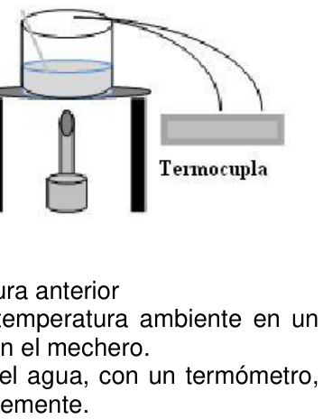
Topic: Thermodynamics Metodi: Experimental Data Analysis, Graph Linearization Competenze: Physical Reasoning, Experimental Data Analysis Objects: Calorimeter Fonte: Testo (PDF) — p.3
PE12. Colegio del Carmen e San José (CC) 1)
La scuola secondaria n. 1 Clara J. Amstrong) 1)
Scuola Preuniversitaria Fray Mamerto Esquiú(1)
EPET N° 6: Mtro Pieri(1)
Scuola secondaria n. 21 Repubblica del Venezuela(2)
San Fernando del Valle (1) - Andalgalá (2), Catamarca.
Curva di riscaldamento dell’acqua. Introduzione: Il calore è l’energia che viene trasferita da una sostanza all’altra in virtù di una sostanza. differenze di temperatura. Si può determinare la quantità di calore che viene
OAF 2012 - 136 trasferisce misurando il cambiamento di temperatura di una massa acqua nota che assorbe il calore. Alcuni liquidi si riscaldano più facilmente di altri. E quando più La quantità di calore è maggiore e il tempo impiegato nel riscaldamento è maggiore. Per osservare questo, studiamo la velocità di riscaldamento di due. quantità diverse di acqua.
Obiettivi:
- Confronta le curve di riscaldamento di due masse diverse di acqua.
- Trovare una relazione matematica tra le variabili analizzate: massa, calore fornito o tempo impiegato nel riscaldamento e variazione della temperatura registrata.
Materiali utilizzati: 1 Termocupa 2 Vaso di precipitazione di 200 g, 500 g 1 Vertice di vetro 1 metro di laboratorio 1 Nove 1 Mechero 1 Tripiede 1 Molla metallica
Procedura: 1- Disponibile i materiali secondo la figura precedente 2- Metti una massa di acqua di 200 g a temperatura ambiente in un un bicchiere di acqua precipitata e calda, lo stesso con il macchiatore. 3- Registra le temperature raggiunte dall’acqua con un termometro, ogni 20 secondi, agita il liquido frequentemente. 4- Versare l’acqua calda e raffreddare il bicchiere. 5- Ripeti la procedura indicata in 2), con una maggiore quantità di acqua a quella precedente, cioè con maggiore massa (500 g).
Roldate le vostre misure nella tabella di valori seguente:
6- Con i dati precedenti costruire il grafico di temperatura in funzione Il tempo per le due masse su una stessa coppia di assi cartesiani.
Tenere conto per la costruzione del stesso che si commette errori
- Esperienti. Fate delle ipotesi su di loro e decidete come. e poi li voltiamo al grafico.
acqua (200 g) acqua (500 g) (t) tempo (T) Temperatura (t) Tempo (T) Temperatura (s) (°C) (s) (°C) 0 Temp amb 0 Temp amb
……………… ……….. …….. ………..
OAF 2012 - 137 t (seg) T (°C)
Nota: costruire la tabella in foglio separato
Calcoli: Calcola le pendenti delle curve rette nei due casi: 1- (∆T/ ∆t) 200 g di acqua 2- (∆T/ ∆t) 500 g di acqua
Raccomandazioni: Utilizzare masse comprese tra 200 g e 500 g. Misurare la temperatura ogni 20 secondi. Si consiglia di non superare i 50 °C, per evitare bruciori in caso di
- Sprofondare. Le due curve hanno un’origine dei tempi che si prende nel momento di fare la prima lettura, corrispondente alla temperatura ambiente.
Le osservazioni e le conclusioni: Confronta le pendenti dei casi 1 e 2. Qual è il caso più grande? - Perché? Riferisco la sua conclusione precedente, tagliando ciò che non corrisponde, in ciascuna di queste affermazioni:
Una variazione di temperatura pari richiede (più / meno) tempo o (maggiore/minore) quantità di calore per riscaldare (maggiore/minore) massa di acqua.
L’ammontare di calore è (direttamente/inverso) proporzionale alla massa (a variazione di temperatura e sostanza uguale)
Si stabilisce come unità di calore la quantità di calore necessaria per aumentare di un grado centigrado la temperatura di un grammo di acqua pura. A Questa unità è chiamata caloria.
Requisiti: Al termine dell’esperienza dovrà presentare un rapporto scritto in chiaro, che Consiste di: Sorgere del problema Valori ottenuti in misurazioni, tabelle, grafici. Fonti di errore e analisi di come influenzano il risultato finale. Risultato sperimentale della richiesta. Conclusioni: Commenti che desiderino fare riguardo alle difficoltà di cui trattasi realizzazione dell’esperienza.
OAF 2012 - 138
Topic: Thermodynamics Metodi: Experimental Data Analysis, Graph Linearization Competenze: Physical Reasoning, Experimental Data Analysis Objects: Calorimeter Fonte: Testo (PDF) — p.3
PE12. College of Carmen and San José (s)
High School No. 1 Clara J. The Commission has decided to adopt a new proposal.
Pre-university school Fray Mamerto Esquiú (Fray Mamerto Esquiú)
The following table shows the results of the evaluation:
Secondary School No 21 Republic of Venezuela(2)
The following is a list of the regions of Spain and Portugal.
Heating curve of water. The Commission has also adopted a proposal for a directive on the protection of workers’ rights. Heat is energy transferred from one substance to another by virtue of a the temperature difference. The amount of heat that is used can be determined.
The following points shall be added: It transfers by measuring the temperature change of a known body of water. It absorbs heat. Some liquids heat up more easily than others. Also when more The more of it, the longer the heating time. To observe this, let’s study the heating speed of two. different amounts of water.
Objectives:
- Comparing the heating curves of two different masses of water.
- Find a mathematical relationship between the variables analyzed: mass, heat delivered or time spent on heating and recorded temperature variation.
Materials used: 1 Thermocouple 2 200 g, 500 g water-sprayed vessels 1 glass rod 1 foot lab 1 Nine 1 Mechero 1 Tripod 1 Metallic lid
The procedure: 1- Arrange the materials according to the figure above 2- Place a 200 g water mass at room temperature in a A hot, watered glass with the same as the lighter. 3- Record the water temperatures with a thermometer. every 20 seconds, stir the liquid frequently. 4- Pour hot water and cool the glass. Repeat the procedure indicated in 2), with a higher amount of water the previous one, i.e. with greater mass (500 g).
Turn your measurements in the following table:
6- Using the above data build the temperature graph as a function time for the two masses on the same pair of Cartesian axes.
To take into account for the construction of the same that mistakes are made The experimental ones. Make assumptions about them and decide how. Turn them into the graph.
water (200 g) water (500 g) (t) time (T) The temperature (t) Time . (T) The temperature (s) (°C) (s) (°C) 0 Temp with 0 Temp with
……………… ……….. …….. ………..
The following points shall be added: Other T (°C)
Note: Build the table in separate sheet
Calculations: Calculate the slope of the straights in both cases: 1- (∆T/ ∆t) 200 g of water 2- (∆T/ ∆t) 500 g of water
Recommendations for the following: Use masses between 200 g and 500 g. Temperature measurement every 20 seconds. It is recommended not to exceed 50 °C, to avoid burns in case of It’s a lot of blood. In both curves the origin of the times is taken at the time of making the The first reading, which will correspond to ambient temperature.
Observations and conclusions: Compare the earrings in cases 1 and 2. Which is bigger? Why? Why? I reaffirm my previous conclusion by cutting out what does not correspond, in each case. of the following statements:
Equal temperature variation requires (more/less) time or (greater/less) amount of heat to heat (greater/less) mass of
- What?
The amount of heat is (directly/inverse) proportional to the mass (equal temperature variation and equal substance)
The amount of heat required for raise the temperature of a gram of pure water by one degree Celsius. A This unit is called the calorie.
Requirements: At the end of the experience, you must submit a written report in clear writing, which consists of: Problem setting • Value obtained from measurements, tables, charts. Source of error and analysis of how they influence the final result. • Experimental result of the requested product. Conclusions: comments on the difficulties related to the The Commission will take the necessary steps to ensure that the results of the evaluation are achieved.
The following points shall be added:
Topic: Thermodynamics Metodi: Experimental Data Analysis, Graph Linearization Competenze: Physical Reasoning, Experimental Data Analysis Objects: Calorimeter Fonte: Testo (PDF) — p.3
PE13. Colegio del Carmen y San José(1)
Escuela Secundaria Nº 1 Clara J. Amstrong(1)
Escuela Preuniversitaria Fray Mamerto Esquiú(1)
EPET N° 6: Mtro Pieri(1)
Escuela Secundaria Nº 21 República de Venezuela(2)
San Fernando del Valle(1) - Andalgalá(2), Catamarca.
Medición de la energía potencial gravitatoria.
Objetivos:
Medir la energía potencial gravitatoria de un cuerpo suspendido
Lista de materiales: Soporte universal Nuez Dinamómetro Cuerpo Regla
Procedimiento:
1- Arme el dispositivo de acuerdo a la fig 1
2- Mida el peso del cuerpo mediante el
dinamómetro
3- Deslice el cuerpo una distancia vertical
3- Mida la distancia vertical recorrida por
el cuerpo
4- Calcule la energía potencial del cuerpo
5- Construya una tabla de valores con
diferentes distancias recorridas y sus
respectivas energías potenciales.
6- Elabore conclusiones
Requerimientos: Al finalizar la experiencia deberá entregar un informe escrito con letra clara, que conste de : Planteo del problema Valores obtenidos en las mediciones, tablas, gráficos. Fuentes de error y análisis de como influyen en el resultado final. Resultado experimental de lo solicitado. Conclusiones Comentarios que desee realizar referidos dificultades relacionadas a la realización de la experiencia.
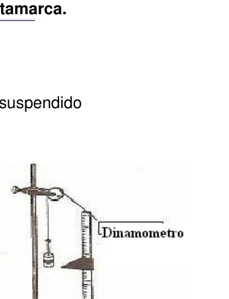
Topic: Conservation of Energy, Gravitation Metodi: Experimental Data Analysis, Energy Conservation Method Competenze: Physical Reasoning, Experimental Data Analysis Objects: — Fonte: Testo (PDF) — p.3
PE13. Colegio del Carmen e San José (CC) 1)
La scuola secondaria n. 1 Clara J. Amstrong) 1)
Scuola Preuniversitaria Fray Mamerto Esquiú(1)
EPET N° 6: Mtro Pieri(1)
Scuola secondaria n. 21 Repubblica del Venezuela(2)
San Fernando del Valle (1) - Andalgalá (2), Catamarca.
Misurazione dell’energia potenziale gravitazionale.
Obiettivi: Misurare l’energia gravitazionale potenziale di un corpo sospeso
Lista dei materiali: Supporto universale Nove . Dinamometro Corpo . Regola
Procedura: 1- Armati il dispositivo secondo la figura 1 2- Misurare il peso corporeo con dinamometro 3- Scivola il corpo a distanza verticale 3- Misurare la distanza verticale percorsa da Il corpo 4- Calcolare l’energia potenziale del corpo 5- Costruire una tabella di valori con Distanze diverse e loro le rispettive energie potenziali. 6- Esprimere conclusioni
Requisiti: Al termine dell’esperienza dovrà presentare un rapporto scritto in chiaro, che Consiste di: Sorgere del problema Valori ottenuti in misurazioni, tabelle, grafici. Fonti di errore e analisi di come influenzano il risultato finale. Risultato sperimentale della richiesta. Conclusioni Commenti che desiderino fare riguardo alle difficoltà di cui trattasi realizzazione dell’esperienza.
Topic: Conservation of Energy, Gravitation Metodi: Experimental Data Analysis, Energy Conservation Method Competenze: Physical Reasoning, Experimental Data Analysis Objects: — Fonte: Testo (PDF) — p.3
PE13. College of Carmen and San José (s)
High School No. 1 Clara J. The Commission has decided to adopt a new proposal.
Pre-university school Fray Mamerto Esquiú(1)
The following table shows the results of the evaluation:
Secondary School No 21 Republic of Venezuela(2)
The following is a list of the regions of Spain and Portugal.
Measurement of gravitational potential energy.
Objectives: Measure the gravitational potential energy of a suspended body
List of materials: Universal support Nine . Dynamometer . Body . Rule
The procedure: 1- Arming the device according to Figure 1 2- Measure body weight by using the The dynamometer 3- Slide the body a vertical distance 3- Measure the vertical distance travelled by The body . 4- Calculate the potential energy of the body 5- Build a value table with different distances travelled and their the respective potential energies. 6- Draw conclusions
Requirements: At the end of the experience, you must submit a written report in clear writing, which consists of: Problem setting • Value obtained from measurements, tables, charts. Source of error and analysis of how they influence the final result. • Experimental result of the requested product. Conclusions comments on the difficulties related to the The Commission will take the necessary steps to ensure that the results of the evaluation are achieved.
Topic: Conservation of Energy, Gravitation Metodi: Experimental Data Analysis, Energy Conservation Method Competenze: Physical Reasoning, Experimental Data Analysis Objects: — Fonte: Testo (PDF) — p.3
PE14. Colegio del Carmen y San José(1)
Escuela Secundaria Nº 1 Clara J. Amstrong(1)
Escuela Preuniversitaria Fray Mamerto Esquiú(1)
EPET N° 6: Mtro Pieri(1)
Escuela Secundaria Nº 21 República de Venezuela(2)
San Fernando del Valle(1) - Andalgalá(2), Catamarca.
Medición de la distancia focal de una lente convergente.
Consideraciones teóricas:
Para una lente delgada, la ecuación de los focos conjugados está dada por:
Fig. 1
OAF 2012 - 139
Donde: f es la distancia focal, d0 es la distancia entre el objeto y la lente, y di es la distancia entre la imagen y la lente. Vea la Figura 1
Objetivo:
Determinar la distancia focal de una lente delgada.
Lista de materiales:
Banco Óptico
Pantalla
Fuente de Luz blanca
Lente Convexa
Procedimiento:
- Coloque la lente entre la Fuente de Luz (usada como objeto) y la pantalla. Asegúrese que la fuente y la pantalla estén separadas una distancia mínima de 1 metro.
- Deslice la lente hasta que se forme una imagen del objeto (flecha) en la pantalla. Mida la distancia entre la lente y la imagen y la distancia entre la lente y el objeto. Anote sus mediciones en la Tabla 1.
- Mida el tamaño del objeto y el de la imagen para esta posición de la lente.
- Desplace la lente hasta obtener nuevamente foco en otra posición (no mueva la Fuente de Luz ni la Pantalla). Mida la distancia a la imagen y al objeto.
- También en este caso mida el tamaño de la imagen.
- Deslice la pantalla hacia el objeto (fuente de luz), aproximadamente 10cm, y repita los pasos 2 a 5, deslice nuevamente la pantalla otros 10cm (acercándola al objeto) y vuelva a repetir los pasos 2 a 5, repita esto hasta que no pueda observar imágenes enfocadas.
- Haga un gráfico de 1/d0 vs 1/di usando los puntos obtenidos. Esto le dará una línea recta, cuyos valores de abcisa y ordenada en las intersecciones con los ejes coordenados será igual a 1/f.
- Calcule la diferencia porcentual entre los dos valores de distancia focal encontrados mediante las intersecciones. Luego promedie los valores obtenidos, y calcule la diferencia entre este promedio y la distancia focal obtenida anteriormente.
OAF 2012 - 140 9. Para los dos primeros juegos de datos SOLAMENTE, use las distancias a la imagen y al objeto (normalmente llamadas distancia imagen y distancia objeto) y calcule la magnificación para cada posición de la lente:
Luego, use su medición de los tamaños de la imagen y el objeto para calcular la magnificación de forma directa: Encuentre la diferencia porcentual.
Tabla 1
Distancia al Objeto (do ) cm Distancia Imagen (di ) cm Tamaño de la Imagen (h`)(cm) 1/d0(1/cm) 1/di (1/cm) 1
2
3
4
5
6
Nota:Puede agregar mas filas a la tabla si fuera necesario Intersección con el eje X: Intersección con el eje Y: Distancia Focal Promedio: Diferencia Porcentual:
Preguntas:
- La imagen formada: ¿Está al derecho o invertida?
- ¿Es la imagen real o virtual? ¿Cómo se lo puede saber?
- Explicar por qué, para una distancia objeto-pantalla determinada, hay dos posiciones de la lente que producen una imagen enfocada.
- ¿Por qué es negativa la magnificación?
Requerimentos: Al finalizar la experiencia deberá entregar un informe escrito con letra clara, que conste de : Planteo del problema Valores obtenidos en las mediciones, tablas, gráficos. Fuentes de error y análisis de como influyen en el resultado final. Resultado experimental de lo solicitado. Conclusiones Comentarios que desee realizar referidos dificultades relacionadas a la realización de la experiencia.
Topic: Geometric Optics Metodi: Experimental Data Analysis, Thin Lens & Mirror Equation, Graph Linearization Competenze: Physical Reasoning, Experimental Data Analysis Objects: Lens, Screen Fonte: Testo (PDF) — p.3
PE14. Colegio del Carmen e San José (CC) 1)
La scuola secondaria n. 1 Clara J. Amstrong) 1)
Scuola Preuniversitaria Fray Mamerto Esquiú(1)
EPET N° 6: Mtro Pieri(1)
Scuola secondaria n. 21 Repubblica del Venezuela(2)
San Fernando del Valle (1) - Andalgalá (2), Catamarca.
Misura della distanza focale di una lente convergente. Considerazioni teoriche: Per un lente sottile, l’equazione dei foci congiunti è data da: Fig. 1
OAF 2012 - 139
Dove: f è la distanza focale, d0 è la distanza tra l’oggetto e la lente, e di è la distanza tra l’immagine e la lente. V. Figura 1
Obiettivo: Determinare la distanza focale di una lente sottile.
Lista dei materiali: Banca ottica Scattoli Fonte di luce bianca Lente convexa
Procedura:
- Metti la lente tra la Fonte di Luce (utilizzata come oggetto) e la schermo. Assicurati che la fonte e lo schermo siano separati un’altra volta. Distanza minima di 1 metro.
- Scorrere la lente fino a che non si forma un’immagine dell’oggetto (arcia) in lo schermo. Misura la distanza tra l’obiettivo e l’immagine e la distanza tra l’obiettivo e l’oggetto. Nota le tue misure in tabella 1.
- Misura la dimensione dell’oggetto e quella dell’immagine per questa posizione della L’obiettivo.
- Spostate la lente fino a ottenere di nuovo il fuoco in un’altra posizione (non muove la Fonte della Luce né lo schermo). Misura la distanza alla l’immagine e l’oggetto.
- Anche in questo caso misurate la dimensione dell’immagine.
- Scorrere lo schermo verso l’oggetto (fonte luminosa), circa 10 cm, e ripeta i passaggi 2 a 5, scivola di nuovo lo schermo altri 10 cm (avvicinando l’oggetto) e ripeti da 2 a 5 passi, ripeti Questo finché non riesci a osservare le immagini focalizzate.
- Fai un grafico di 1/d0 vs 1/di usando i punti ottenuti. Questo le
- il valore di un’archivio di un’archivio di un’archivio di un’archivio di un’archivio di un’archivio di un’archivio di un’archivio di un’archivio di un’archivio di un’archivio di un’archivio di un’archivio di un’archivio di un’archivio di un’archivio di un’archivio di un’archivio di un’archivio di un’archivio di un’archivio di un’archivio di un’archivio di un’archivio di un’archivio di un’archivio di un’archivio di un’archivio di un’archivio di un’archivio di un’archivio di un’archivio di un’archivio di un’archivio di un’archivio di un’archivio di un’archivio di un’archivio di un’archivio di un’archivio di un’archivio di un’archivio di un’archivio di un’archivio di un’archivio di un’archivio di un’archivio di un’archivio di un’archivio di un’archivio di un’archivio di un’archivio di un’archivio di un’archivio di Intersezioni con gli assi coordinati sarà uguale a 1/f.
- Calcolare la differenza percentuale tra i due valori di distanza focale trovate attraverso le intersezioni. Poi media i valori. La differenza tra questa media e la distanza focale ottenuto in precedenza.
OAF 2012 - 140 9. Per i primi due set di dati, usa solo le distanze. all’immagine e all’oggetto (normalmente chiamati distanza immagine e Distanza oggetto) e calcolare la magnificazione per ogni posizione della L’obiettivo:
Poi, usa la misurazione delle dimensioni dell’immagine e dell’oggetto. per calcolare la magnificazione direttamente: Trova la differenza percentuale.
Tabella 1
Distanza da Obbiettivo (do) cm Distanza Immagine (di) cm Dimensione della Immagine (h`)(cm) 1/d0(1/cm) 1/di (1/cm) 1
2
3
4
5
6
Nota:Puoi aggiungere altre righe alla tabella se necessario Intersezione con l’asse X: Intersezione con l’asse Y: Distanza focale media: Differenza percentuale:
Domande:
- L’immagine formata: è a destra o invertita?
- E’ l’immagine reale o virtuale? Come fa a saperlo?
- Spiegare perché, per una determinata distanza oggetto-screen, c’è due posizioni della lente che producono un’immagine focalizzata.
- Perché la magnificazione è negativa?
Requisiti: Al termine dell’esperienza dovrà presentare un rapporto scritto in chiaro, che Consiste di: Sorgere del problema Valori ottenuti in misurazioni, tabelle, grafici. Fonti di errore e analisi di come influenzano il risultato finale. • Risultato sperimentale della richiesta. Conclusioni Commenti che desiderino fare riguardo alle difficoltà di cui trattasi realizzazione dell’esperienza.
Topic: Geometric Optics Metodi: Experimental Data Analysis, Thin Lens & Mirror Equation, Graph Linearization Competenze: Physical Reasoning, Experimental Data Analysis Objects: Lens, Screen Fonte: Testo (PDF) — p.3
PE14. College of Carmen and San José (s)
High School No. 1 Clara J. The Commission has decided to adopt a new proposal.
Pre-university school Fray Mamerto Esquiú(1)
The following table shows the results of the evaluation:
Secondary School No 21 Republic of Venezuela(2)
The following is a list of the regions of Spain and Portugal.
Measurement of the focal length of a convergent lens. Theoretical considerations: For a thin lens, the conjugate focus equation is given by: Fig. 1
The following points shall be added:
Where: f is the focal length, d0 is the distance between the object and the lens, and di is the distance between the image and the lens. See Figure 1
The objective: Determine the focal length of a thin lens.
List of materials: Bank Optic Screen White light source Convex lens
The procedure:
- Place the lens between the Light Source (used as object) and the screen. Make sure the source and screen are separated one by one minimum distance of 1 metre.
- Slide the lens until an image of the object (arrow) is formed in the screen. Measure the distance between the lens and the image and the distance between the lens and the object. Write down your measurements in Table 1.
- Measure the size of the object and the image for this position of the The lens.
- Move the lens until you get another focus position again (Do not move the Light Source or the Screen). Measure the distance to the image and object.
- Again, measure the size of the image.
- Slide the screen towards the object (light source), approximately 10cm, and repeat steps 2 to 5, slide the screen again others 10cm (approaching the object) and repeat steps 2 to 5, repeat This is until I can see focused images.
- Make a graph of 1/d0 vs 1/di using the points obtained. This is him . The value of the data is the sum of the values of the data in the data set. Intersections with coordinate axes shall be equal to 1/f.
- Calculate the percentage difference between the two focal length values The Commission has already adopted a number of proposals. Then average the values. The average of the two measurements is the distance between the two measurements. previously obtained.
The following points shall be added: 9. For the first two sets of data, use the distances. to the image and object (usually called image distance and distance) and calculate the magnification for each position of the Lens:
Then use your measurement of the size of the image and object. To calculate the magnification directly: Find the difference percent.
Table 1
Distance to Items (of) cm Distance Image (di) cm Size of the Image from the front . (h`)(cm) 1/d0(1/cm) 1/di (1/cm) 1
2
3
4
5
6
Note:You can add more rows to the table if necessary Intersection with the X-axis: Intersection with the Y axis: Average focal length: Percentage difference:
Questions:
- The image formed: Is it to the right or the reverse?
- Is this the real picture or the virtual one? How can you know?
- Explain why, for a given object-screen distance, there is two positions of the lens that produce a focused image.
- Why is magnification negative?
Requirements: At the end of the experience, you must submit a written report in clear writing, which consists of: Problem setting • Value obtained from measurements, tables, charts. Source of error and analysis of how they influence the final result. • Experimental result of the requested product. Conclusions comments on the difficulties related to the The Commission will be consulted on the following points:
Topic: Geometric Optics Metodi: Experimental Data Analysis, Thin Lens & Mirror Equation, Graph Linearization Competenze: Physical Reasoning, Experimental Data Analysis Objects: Lens, Screen Fonte: Testo (PDF) — p.3
PE15. Instituto Privado Lucio V. Mansilla Caleufú, La Pampa.
Péndulo simple. El péndulo simple es un ente matemático sin representación física posible. No obstante, una aproximación aceptable consiste en una masa suspendida de un
OAF 2012 - 141 hilo inextensible y sin peso. Cuando la masa se deja en libertad desde cierto ángulo inicial con la vertical, comienza a oscilar a un lado y otro periódicamente. Cuando el ángulo de desviación máximo respecto de la vertical es pequeño (en la práctica menor que 10º) el péndulo oscila con movimiento armónico simple alrededor del punto de equilibrio. En esta situación el periodo depende únicamente de la longitud del péndulo y de la aceleración de la gravedad. La expresión matemática que rige dicha relación, es la siguiente:
T = 2. ∏. √ l/g
Objetivos: Construcción de un péndulo simple. Determinar el valor de la aceleración de la gravedad, usando el péndulo.
Materiales: 1m de hilo. Plomada. Soporte. Cronómetro(que mida hasta la décima de segundo) Cinta métrica. Papel milimetrado. Transportador de pizarra.
Procedimiento:
- Fija el péndulo al soporte, dándole la máxima longitud posible (l) y mide este valor
- Pon el péndulo a oscilar, apartándolo de la vertical en un ángulo ἁ < 10º y mide el tiempo que tarda en realizar 10 oscilaciones.
- Repite la medición 3 o 4 veces y promedia los valores, para disminuir los errores casuales de medición.
- Obtiene el valor del período (T), a partir del valor del tiempo registrado y promediado en los pasos anteriores.
- Repite lo realizado con cuatro longitudes diferentes del péndulo.
- En papel milimetrado, apaisado y con la máxima escala posible, grafica T2 en función de l. El gráfico debe ser una recta que pase por el origen y lo más cerca posible de la mayor cantidad de puntos graficados.
- Teniendo en cuenta las escalas utilizadas, determina la pendiente de la recta (m)
- Calcula el valor de la aceleración de la gravedad (g), a partir de la pendiente m
Topic: Oscillations & Waves, Gravitation Metodi: Experimental Data Analysis, Simple Harmonic Motion Analysis, Graph Linearization Competenze: Physical Reasoning, Experimental Data Analysis Objects: Pendulum Fonte: Testo (PDF) — p.3
PE15. Istituto privato Lucio V. Maniglia Calluffo, La Pampa.
Pendale semplice. Il pendolo semplice è un ente matematico senza possibile rappresentazione fisica. No Tuttavia, un approccio accettabile consiste in una massa sospesa di un
OAF 2012 - 141 filo estensibile e senza peso. Quando la massa viene lasciata libera da un certo angolo iniziale con la verticale, inizia a oscillare periodicamente da un lato all’altro. Quando l’angolo di deviazione massima rispetto alla verticale è piccolo (in La pratica è inferiore a 10°) il pendolo oscilla con un semplice movimento armonico intorno al punto di equilibrio. In questo caso il periodo dipende solo della lunghezza del pendolo e dell’accelerazione della gravità. La l’espressione matematica che governa tale relazione è la seguente:
T = 2. ∏. √ l/g
Obiettivi: Costruzione di un semplice pendolo. Determina il valore dell’accelerazione della gravità, utilizzando il pendolo.
Materiali: 1 metro di filo. - Si’, si’, si’. - Supporto. Cronometro che misura fino al decimo di secondo) Cintura metrica. Papero millimetrico. Trasportatore di tavole.
Procedura:
- Fissa il pendolo al supporto, dando la massima lunghezza possibile (l) e misura questo valore
- Metti il pendolo a oscillare, allontanandolo dal verticale ad un angolo < 10° e misura il tempo necessario per fare 10 oscillazioni.
- Ripetete la misurazione 3 o 4 volte e media i valori, per diminuire errori di misurazione casuali.
- Ottieni il valore del periodo (T), a partire dal valore del tempo registrato e
- E’ stato mediato nei passaggi precedenti.
- Ripeta quello che hai fatto con quattro lunghezze diverse del pendolo.
- In carta millimetrica, calda e con la massima scala possibile, grafica T2 in funzione di l. Il grafico deve essere un retto che passa per l’origine e il più vicino possibile al maggior numero di punti graficati.
- Considerando le scale utilizzate, determina la pendenza della (m)
- Calcola il valore dell’accelerazione della gravità (g), a partire da pendente m
Topic: Oscillations & Waves, Gravitation Metodi: Experimental Data Analysis, Simple Harmonic Motion Analysis, Graph Linearization Competenze: Physical Reasoning, Experimental Data Analysis Objects: Pendulum Fonte: Testo (PDF) — p.3
PE15. Private institute Lucius V. Handkerchief It’s the heat, the pumpkin.
It’s a simple pendulum. The simple pendulum is a mathematical entity with no possible physical representation. No However, an acceptable approximation consists of a suspended mass of one
The following points shall be added: The wire is unextended and weightless. When the mass is released from certain angle of origin with the vertical, begins to oscillate periodically to one side and to the other. When the maximum angle of deviation from the vertical is small (in The pendulum oscillates with simple harmonic movement. around the equilibrium point. In this situation the period depends on only the length of the pendulum and the acceleration of gravity. La The mathematical expression governing this relationship is as follows:
T = 2. ∏. √ l/g
Objectives: • Construction of a simple pendulum. Determine the value of the acceleration of gravity using the pendulum.
Materials: 1 meter of thread. - It’s a plow. - Hold it up. Chronometer which measures up to the tenth of (second) It’s a tape measure. It’s a millimeter piece of paper. The board carrier.
The procedure:
- Fix the pendulum to the support, giving it the maximum possible length (l) and measuring This value
- Place the pendulum to oscillate, moving it away from the vertical at an angle < 10° And it measures the time it takes to make 10 oscillations.
- Repeat the measurement 3 or 4 times and average the values, to decrease the accidental measurement errors.
- It derives the value of the period (T) from the value of the time recorded and The average in the previous steps.
- Repeat what you did with four different lengths of the pendulum.
- In millimetre paper, tempered and with the maximum possible scale, graphics T2 as a function of l. The graph must be a straight line passing through the source and as close as possible to the maximum number of points graphed.
- Taking into account the scales used, determine the slope of the straight (m)
- Calculate the value of the acceleration of gravity (g) from the slope m
Topic: Oscillations & Waves, Gravitation Metodi: Experimental Data Analysis, Simple Harmonic Motion Analysis, Graph Linearization Competenze: Physical Reasoning, Experimental Data Analysis Objects: Pendulum Fonte: Testo (PDF) — p.3
PE16. Instituto María Auxiliadora Comodoro Rivadavia, Chubut.
Objetivo: Estudio de la caída libre de los cuerpos con y sin afectación de los mismos por presencia de campos electromagnéticos.
Materiales:
Soporte graduado
2 bobinas con conexión a 220V
Cronómetro
Bola metálica
Marcador indeleble
Cinta de papel
OAF 2012 - 142 Procedimiento:
- Sobre el soporte graduado fije a 10 cm. de distancia entre ellos las 2 cajas con los bobinados.
- Marque el límite superior desde donde comenzara el recorrido la bola metálica.
- Enchufe las bobinas y chequee el funcionamiento adecuado.
- Desenchufe las bobinas.
- Realice el cronometrado de la caída libre de la bola desde el punto superior hasta la superficie inferior del soporte.
- Repita la práctica del punto 5 10 veces.
- Complete la planilla de datos adjunta a pie de pagina y con estos datos determine la aceleración de la gravedad (calcule el valor medio desechando lo valores un 20% mayores o menores a la media)
- Encienda ambas bobinas y realice la misma actividad que los puntos 6, 5 y 7.
- Realice una gráfica en la que se analice comparativamente los resultados de las trayectorias con y sin presencia de campos electromagnéticos.
Con Caída libre
1º prueba 2º prueba 3º prueba 4º prueba 5º prueba 6º prueba 7º prueba 8º prueba 9º prueba 10º prueba t
Con bobinas activas
1º prueba 2º prueba 3º prueba 4º prueba 5º prueba 6º prueba 7º prueba 8º prueba 9º prueba 10º prueba t
Con caída libre Valor medio de t= Ley de caída libre Medida de la altura h= Cálculo de g=
Con bobinas activas Valor medio de t= Ley de caída libre Medida de la altura h= Cálculo de g=
Responde: a) Compara el resultado obtenido en el cálculo de g por caída libre y por presencia de campos electromagnéticos en la trayectoria. b) Grafica ambas trayectorias.
Topic: Newtonian Mechanics, Electromagnetism Metodi: Experimental Data Analysis, Kinematic Equations Competenze: Physical Reasoning, Experimental Data Analysis Objects: Ball, Coil Fonte: Testo (PDF) — p.3
PE16. Istituto Maria Assilliadora Comodoro Rivadavia, Chubut.
Obiettivo: Studiare la caduta libera dei corpi con e senza loro impatto da presenza di campi elettromagnetici.
Materiali: Supporto graduato 2 bobine connesse a 220 V Cronometro Ballina metallica Marcatore indelebile Pinta di carta
OAF 2012 - 142 Procedura:
- Sull’appoggio graduato fissato a 10 cm. Distanza tra loro 2 casse con i coil.
- Marca il limite superiore da dove la palla inizierà il percorso metallica.
- Innesca le bobine e controlla il funzionamento.
- Sgancia le bobine.
- Calcola il tempo della caduta libera della palla dal punto. superiore fino alla superficie inferiore del supporto.
- Ripeti la pratica del punto 5 10 volte.
- Completa il modulo di dati allegato al calcolo e con questi dati determinare l’accelerazione della gravità (calcolare il valore medio (Gli importi sono di 20% più o meno della media)
- Accendi entrambi i bobini e eseguisci la stessa attività che si fa ai punti 6. 5 y 7.
- Realizza un grafico che analizzi comparativamente i risultati di percorsi con e senza campi
- E’ un’energia elettromagnetica.
Con caduta libera
1º Prova 2º Prova 3º Prova 4º Prova 5º Prova 6º Prova 7º Prova 8º Prova 9º Prova 10º Prova t
Con bobine attive
1º Prova 2º Prova 3º Prova 4º Prova 5º Prova 6º Prova 7º Prova 8º Prova 9º Prova 10º Prova t
Con caduta libera Valore medio di t= Legge di caduta libera Misura dell’altezza h= Calcolo di g=
Con bobine attive Valore medio di t= Legge di caduta libera Misura dell’altezza h= Calcolo di g=
Risponde: a) Compara il risultato ottenuto nel calcolo di g per caduta libera e per la presenza di campi elettromagnetici nel percorso. b) Grafica di entrambe le traiettorie.
Topic: Newtonian Mechanics, Electromagnetism Metodi: Experimental Data Analysis, Kinematic Equations Competenze: Physical Reasoning, Experimental Data Analysis Objects: Ball, Coil Fonte: Testo (PDF) — p.3
PE16. The Institute of Maria Auxiliadora Commodore Rivadavia, Chubut.
The objective: Study of free fall of bodies with and without affecting bodies by the presence of electromagnetic fields.
Materials: Graduated support 2 coils connected to 220V The timekeeper Metal ball indelible marker Tape of paper
The following is the list of the countries of the European Union: The procedure:
- On the graduated support fixed to 10 cm. distance between them the 2 boxes with the coils.
- Mark the upper limit from where the ball will start the course. It’s metallic.
- Plug the coils in and check for proper operation.
- Unplug the coils.
- Make the timing of the free fall of the ball from the point. upper to the lower surface of the support.
- Repeat the practice of point 5 10 times.
- Complete the data sheet attached at the bottom of the page and with these data Determine the acceleration of gravity (calculate the mean value (i) the value of the products is 20% higher or lower than the average value of the products)
- Turn on both coils and perform the same activity as points 6. 5 y 7.
- Make a graph comparing the results of trajectories with and without fields electromagnetic fields.
With free fall .
1º Test 2º Test 3º Test 4º Test 5º Test 6º Test 7º Test 8º Test 9º Test 10º Test t
With active coils
1º Test 2º Test 3º Test 4º Test 5º Test 6º Test 7º Test 8º Test 9º Test 10º Test t
With free fall . Average value of t= The free fall law . Measurement of height h= Calculation of g =
With active coils Average value of t= The free fall law . Measurement of height h= Calculation of g =
He says: (a) Compare the result obtained in the calculation of g per free fall and per the presence of electromagnetic fields in the trajectory. (b) Graph both trajectories.
Topic: Newtonian Mechanics, Electromagnetism Metodi: Experimental Data Analysis, Kinematic Equations Competenze: Physical Reasoning, Experimental Data Analysis Objects: Ball, Coil Fonte: Testo (PDF) — p.3
PE17. Colegio Nro. 3 Mariano Moreno Ciudad de Buenos Aires.
Víctor Jáguaiann, un zapatero común en su zapatería ordinaria. Su clientela lo aprecia por lo resistente de sus arreglos de media suela… Pero nadie en la ciudad conoce el fabuloso secreto que se esconde en su cemento de contacto. En un laboratorio secreto, oculto bajo su inocente local, descubrió las Nanojotas;
OAF 2012 - 143
increíbles nanopartículas cuyas propiedades fractales Víctor aprendió a
manipular.
Pero una noche, mientras trabajaba en el desarrollo de una superchancleta, por
un error de cálculo perdió el control del acelerador de nanojotas. La excesiva
concentración de nanojotas de alta energía sobrecargó el núcleo ojotónico
provocando una cegadora explosión. Pero lejos de morir en el accidente, la
violenta exposición a la radiación de ojotones convirtió a Víctor Jáguaiann en…
¡¡Chancleta Verde!!, capaz de lanzar ojotas con los pies a velocidades
supersónicas, y de recular en chancletas con la rapidez de un bólido (es decir
con bolidez).
Por eso, desde esa noche, cuando el mal aceche, la libertad esté en peligro, los
villanos atenten contra la verdad y la justicia, siempre surcará el cielo una ojota
lanzada por… ¡¡Chancleta Verde!!
La fibra nanojotúbica Una de las nanoestructuras desarrolladas por Jáguaiann en su laboratorio es el tubo nanojótico. Los nanojotubos conducen la carga eléctrica en la dirección de sus ejes longitudinales y son capaces de formar fibras conductoras que tienen la misma resistividad específica que el nicromo (una aleación de 80% níquel y 20% cromo). Por su alta resistividad y punto de fusión, Chancleta verde usa la fibra nanojotúbica en sus poderosas termojotas y sus bengalargatas de soga, con las que pone en el cielo su ojotoseñal.
Objetivo: Medir la resistividad específica de la fibra nanojotúbica.
Materiales: Hilo de fibra nanojotúbica de Ø 0,4 mm (De no contar con fibra nanojotúbica, utilice alambre de nicromo). Cable con terminal (2). Cocodrilo (2). Borne aislado (2). Vástago de 15 cm (2). Base circular (2). Cinta métrica. Multímetro.
Marco Teórico: La resistencia de un conductor depende tanto del material que lo compone como de sus características geométricas. Si como en el de la figura, la forma de la sección es la misma a lo largo de todo el conductor, su resistencia (R) aumenta proporcionalmente con su longitud (L) y disminuye proporcionalmente al aumentar el área de su sección (A), es decir:
R= ρ L A (1)
donde ρ , la constante de proporcionalidad, es la Resistividad específica y es característica del material que compone al conductor. Si la resistencia se mide en Ohm ( ), la longitud en metro (m) y el área en metro cuadrado (m²), la unidad de ρ es .m .
OAF 2012 - 144 La Resistividad específica aumenta con la temperatura, y esta a su vez aumenta con la intensidad de corriente que circula por el conductor. Este es un dato importante debido a que, por su alto punto de fusión, el nicromo es usado para filamentos incandescentes. A partir de la expresión (1) puede obtenerse la resistividad del material que compone un alambre de sección conocida midiendo con un óhmetro su resistencia para una longitud cualquiera. Al hacerlo, la resistencia interna del aparato (Ri) queda conectada en serie con el alambre, por lo que:
Rm= R+Ri (2)
donde Rm es la resistencia medida por el aparato. Claro que si la resistencia interna fuera pequeña, podría considerarse a la lectura del óhmetro efectivamente como la resistencia del alambre.
Procedimiento: i. Disponga el material de manera que el alambre quede suspendido sobre la mesa, aislado y convenientemente estirado. ii. Coloque los cocodrilos en los extremos de los cables del multímetro. iii. Confeccione una tabla de valores que contenga las columnas: Ø (diámetro), A , L y R. iv. Haga las mediciones necesarias y complete la tabla. v. Vuelque las mediciones en la hoja de cálculo presente en la computadora del laboratorio. Imprima la gráfica R vs. L en la que aparecerán los puntos que corresponden a sus mediciones. vi. Trace sobre la gráfica las curvas que considere conveniente. vii. Si lo cree necesario obtenga de la gráfica el valor de la resistencia interna del multímetro. viii. Obtenga a partir de la gráfica la resistividad específica del nicromo (y de la fibra nanojótica).
Datos: El valor tabulado de la resistividad específica a temperatura ambiente del nicromo (y de la fibra nanojótica) es:
ρ = 1,1 . 10 m
Las barras de indeterminación en la gráfica corresponden a la apreciación del multímetro.
Requerimientos: En el informe deberá constar: Breve descripción del procedimiento utilizado. Valores obtenidos en las mediciones realizadas. Resultados experimentales indicando los intervalos de indeterminación. De haber despreciado valores medidos, una explicación de los criterios en los que se basó. Descripción de las fuentes de error y un análisis de cómo influyen en el resultado final, indicando la forma de cálculo o estimación de los intervalos de indeterminación.
Comentarios que desee hacer.
OAF 2012 - 145
Topic: Circuits Metodi: Experimental Data Analysis, Graph Linearization, Error Propagation Competenze: Physical Reasoning, Experimental Data Analysis Objects: Wire, Resistor Fonte: Testo (PDF) — p.3
PE17. - Scuola Nero. 3 Mariano Moreno Città di Buenos Aires.
Victor Jáguaiann, un calzatore comune nella sua normale officina. I suoi clienti lo fanno. Apprezza la resistenza dei suoi arrangiamenti a mezza suola… Ma nessuno in La città conosce il favoloso segreto che si nasconde nel suo cemento di contatto. In un laboratorio segreto, nascosto sotto il suo innocente locale, ha scoperto le Nanotite.
OAF 2012 - 143 Incredibilmente grandi nanoparticelle le cui proprietà fractali Victor ha imparato a manipolare. Ma una notte, mentre lavoravo allo sviluppo di un supercancillo, per un errore di calcolo ha perso il controllo dell’acceleratore nanottico. L’eccessivo. La concentrazione di nanotate ad alta energia ha sovraccaricato il nucleo ogotonico provocando un’esplosione impenetrabile. Ma lontano dal morire nell’incidente, la L’esposizione violenta alla radiazione di cimici ha trasformato Victor Jaguuaiann in… Chancellor Verde, capace di lanciare gli occhiali con i piedi a velocità supersonico, e di ritirarsi in calci con la velocità di un bolido (cioè con la calligrafia). Quindi, da quella notte, quando il male si sta facendo, la libertà è in pericolo, i I criminali si concentrano sulla verità e sulla giustizia, e il cielo sarà sempre un’uova. Lanciata da… Chancellor Verde!
Fibra nanotubica Una delle nano-strutture sviluppate da Jaguuaiann nel suo laboratorio è la tubo nanoiotico. I nanotubi conducono la carica elettrica in direzione di i loro assi longitudinali e sono in grado di formare fibre conduttive che hanno la la stessa resistenza specifica del nichrome (un’alleazione di 80% nichel e 20% cromo). Per la sua alta resistività e punto di fusione, Chancleta verde usa la fibra. nano-tubica nelle sue potenti termojotte e le sue bengalargate di corda, con le che pone il suo sogno nel cielo.
Obiettivo: Misurare la resistenza specifica della fibra nanotubica.
Materiali: Filo di fibra nanotubica di Ø 0,4 mm (Non avendo fibra
- Non è un tubo di nitro. • Cable con terminale (2). Cocodrillo (2). • Borne isolato (2). • Vastaggio di 15 cm (2). • Base circolare (2). • Cintura metrica. • Multimetro.
Marco Teorico: La resistenza di un conduttore dipende sia dal materiale che lo compone che da Le caratteristiche geometriche. Se come in quella della figura, la forma della La sezione è la stessa lungo l’intero conducente, la sua resistenza. (R) aumenta proporzionalmente con la sua lunghezza (L) e diminuisce proporzionalmente all’aumento del area della sua sezione (A), cioè:
R= ρ L A (1)
dove ρ, la costante di proporzionalità, è la resistenza specifica e è caratteristica del materiale che compone il conducente. Se si misura la resistenza in Ohm ( ), lunghezza in metri (m) e superficie in metri quadrati (m2), unità de ρ es .m .
OAF 2012 - 144 La resistenza specifica aumenta con la temperatura, e questa aumenta a sua volta. con l’intensità del corrente che circola attraverso il conducente. Questo è un dato. È importante perché, per il suo alto punto di fusione, il nichromo è usato per filamenti incandescenti. La resistenza del materiale può essere ottenuta dall’espressione (1) compone un filo di sezione conosciuta misurando con un óhmetro il suo resistenza per qualsiasi lunghezza. In tal modo, la resistenza interna del il dispositivo (Ri) è collegato in serie al filo, quindi:
Rm= R+Ri (2)
dove Rm è la resistenza misurata dall’apparecchio. Certo che se la resistenza Se fosse piccolo, potrebbe essere considerato come una lettura dell’ohmetro. efficacemente come la resistenza del filo.
Procedura: i. Disponi il materiale in modo che il filo sia sospeso. sul tavolo, isolato e convenientemente esteso. ii. Metti i coccodrilli alle estremità dei cavi del multimetro. iii. Configgere una tabella di valori che contiene le colonne: Ø (diametro), A , L e R. iv. Fai le misure necessarie e completa la tabella. v. Roldate le misure nella scheda di calcolo presente in computer del laboratorio. Printa il grafico R vs. L in cui i punti corrispondenti alle loro misurazioni appariranno. vi. Traccia sulle grafiche le curve che ritiene convenienti. 7°. Se lo ritiene necessario, si può ottenere dal grafico il valore della resistenza. interno del multimetro.
- E’ il mio primo. Ottieni dalla grafica la specificità di resistività del nichrome (e di fibre nano-iotiche).
Datati: Il valore tabellato della resistenza specifica a temperatura ambiente di nichromo (e di fibre nanoiotiche) è:
ρ = 1,1 . 10 m
Le barre di indeterminare sul grafico corrispondono alla il multimetro.
Requisiti: Il rapporto deve indicare: Breve descrizione della procedura utilizzata. Valori ottenuti dalle misurazioni effettuate. Risultati sperimentali indicando gli intervalli di indeterminazione. Se hanno disprezzato i valori misurati, una spiegazione dei criteri su cui si basava. Descrizione delle fonti di errore e analisi di come influenzano il sistema di controllo risultato finale, indicando il modo di calcolare o stimare i intervalli di indeterminazione.
Commenti che vorrebbe fare.
OAF 2012 - 145
Topic: Circuits Metodi: Experimental Data Analysis, Graph Linearization, Error Propagation Competenze: Physical Reasoning, Experimental Data Analysis Objects: Wire, Resistor Fonte: Testo (PDF) — p.3
PE17. School No. 3 Mariano Moreno City of Buenos Aires.
Victor Jáguaiann, a common shoemaker in his ordinary shoe shop. Your customers are so . He appreciates the strength of his half-soil arrangements. But nobody in the City knows the fabulous secret that’s hidden in its contact cement. In a secret laboratory, hidden under his local innocent, he discovered the Nanotites.
The following information is provided: incredible nanoparticles whose fractal properties Victor learned to manipulate. But one night, while working on the development of a super-cancil, A calculation error lost control of the nanotub accelerator. The over-the-top . High energy nanotubes overloaded the ozone core . It caused a blinding explosion. But far from dying in the accident, the Violent exposure to the radiation from squirrels turned Victor Jaguuaiann into… Green Chancellor!!, capable of throwing shovels with his feet at speeds The speed of the sound is very high, and the speed of the sound is very high. with a bolt). So from that night, when evil lurks, freedom is in danger, the The villains are against truth and justice, and a storm will always blow up the sky. launched by… Green Chancellor!
The nanotube fiber One of the nano-structures developed by Jaguuaiann in his lab is the The nano-jumping tube. Nanotubes conduct electrical charge in the direction of They are able to form conductive fibres that have the The same specific resistivity as nickel (an alloy of 80% nickel and 20% nickel) (including chromium). Because of its high resistivity and melting point, Green Chancleta uses fiber. Nano-tube in its powerful thermosets and rope-flappers, with the who puts his nightmare in the sky.
The objective: Measure the specific resistivity of the nanotube fiber.
Materials: Nano-tube fibre yarn of Ø 0.4 mm (Not containing fibre Nano-tubular, use nickel wire). Cable with terminal (2). • Cockroach (2). • Insulated borne (2). • 15 cm of wax (2). • Circular base (2). • Metric tape. • Multi-meter
Theoretical framework: The resistance of a conductor depends both on the material of its composition and on the of its geometric characteristics. If as in the figure, the shape of the Section is the same throughout All the driver, his resistance. (R) increases proportionally with its length (L) and decreases The number of people who are affected by the area of its section (A), i.e.
R= ρ L A (1)
where ρ, the proportionality constant, is the specific resistance and is characteristic of the material composing the driver. If the resistance is measured In Ohm ( ), length in metres (m) and area in square metres (m2), the unit de ρ es .m .
The following is the list of the countries of the European Union: Specific resistance increases with temperature, and this in turn increases. with the current intensity circulating through the driver. This is a fact. It is important because, because of its high melting point, nickel is used for the filament is incandescent. The resistivity of the material can be obtained from the expression (1) It consists of a known section wire measuring with an ohm its resistance for any length. In doing so, the internal resistance of the The apparatus (Ri) is connected in series with the wire, so that:
Rm= R+Ri (2)
where Rm is the resistance measured by the apparatus. Of course if the resistance If the internal volume is small, it could be considered to be the reading of the ohmmeter. effectively as the resistance of the wire.
The procedure: i. Arrange the material so that the wire is suspended. on the table, insulated and conveniently stretched. ii. Place the crocodiles at the ends of the multimeter cables. (iii) the following: Set up a value table containing the columns: Ø (diameter), A , L and R . iv. Make the necessary measurements and complete the table. v. Turn the measurements on the spreadsheet in the computer from the lab. Print the R vs. I ‘m in the the points corresponding to your measurements shall appear. vi. Draw the curves on the graph that you think are appropriate. The following is the list of the countries of the European Union: If you think it ‘s necessary , get the resistance value from the graph . the internal part of the multimeter. The third. Get from the graph the specific resistivity of the nickromium (and The product is not to be confused with the product of the same product.
The data: The tabulated value of the specific resistivity at room temperature of nickel (and nano-noetic fibre) is:
ρ = 1,1 . 10 m
The indetermination bars in the graph correspond to the the multi-meter assessment.
Requirements: The report shall contain: • Brief description of the procedure used. • Values obtained from the measurements carried out. • Experimental results indicating the indetermination intervals. If you have disregarded measured values, an explanation of the criteria The ones he relied on. Description of the sources of error and an analysis of how they influence the final result, indicating the form of calculation or estimation of the the time intervals are indeterminate.
Any comments you want to make.
The following is the list of the Member States’ financial statements:
Topic: Circuits Metodi: Experimental Data Analysis, Graph Linearization, Error Propagation Competenze: Physical Reasoning, Experimental Data Analysis Objects: Wire, Resistor Fonte: Testo (PDF) — p.3
PE18. Instituto Privado Luis A. Huergo Ciudad de Buenos Aires.
Objetivo: Determinación del calor latente de vaporización del agua.
Materiales:
Generador de vapor
Mechero
Recipiente térmico
Termómetro
Balanza
Fundamento:
Calor latente:
La medida del calor latente resulta del cociente entre la cantidad de calor que
absorbe o cede una sustancia (que se encuentra a la temperatura del cambio de
fase) para modificar su estado de agregación.
m
Q
L
La definición es válida para el calor latente de cualquier cambio de fase.
Procedimiento:
Colocar una determinada masa de agua en el
interior del calorímetro. Sumergir en ella el
extremo de la manguera del generador de
vapor, cuidando que no se derrame líquido a
causa de las burbujas que se forman en el
agua que se encuentra en el interior del
calorímetro.
Dejar burbujear el vapor en el agua hasta que
el sistema alcance una temperatura de no más
de 50ºC y luego medir la masa de vapor que se
condensó en el calorímetro.
Considerando al calorímetro como ideal, se pide: a) Plantear de ecuación calorimétrica. b) Calcular el calor latente de vaporización y expresar la medición con su correspondiente error.
El informe debe contener tablas y gráficos en caso de ser necesarios.
Calor específico del agua = 1 cal /g ºC
Topic: Thermodynamics Metodi: Experimental Data Analysis, First Law of Thermodynamics Competenze: Physical Reasoning, Experimental Data Analysis Objects: Calorimeter Fonte: Testo (PDF) — p.3
PE18. Istituto privato Luis A. - Hoorgo Città di Buenos Aires.
Obiettivo: Determinazione del calore latente di vaporizzazione dell’acqua.
Materiali: Generatore di vapore Mechero Trattamento termico termometro Balance
Fondamento: Calore latente: La misura del calore latente è il risultato del coefficiente tra la quantità di calore che assorbe o cede una sostanza (che si trova alla temperatura di cambiamento di temperatura) La fase di integrazione è la fase di modifica del suo stato di integrazione. m Q L
La definizione vale per il calore latente di qualsiasi cambiamento di fase.
Procedura: Mettendo una certa massa di acqua nel all’interno del calometro. Immergersi in esso il L’estremità del tubo del generatore di vapore, assicurando che non si versa liquido a causa delle bolle che si formano nel l’acqua che si trova all’interno del caloriometro. Lasciare il vapore bollire nell’acqua fino a che il sistema raggiunge una temperatura non superiore a 50°C e poi misurare la massa di vapore che si condensato sul calometro.
Considerando il caloriometro come ideale, si chiede: a) Sulla base di una equazione calorimetrica. b) Calcolare il calore latente di vaporizzazione e esprimere la misurazione con il suo corrispondente errore.
Il rapporto deve contenere tabelle e grafici, se necessario.
Calore specifico dell’acqua = 1 cal / g oC
Topic: Thermodynamics Metodi: Experimental Data Analysis, First Law of Thermodynamics Competenze: Physical Reasoning, Experimental Data Analysis Objects: Calorimeter Fonte: Testo (PDF) — p.3
PE18. Louis A. Private Institute I ‘m not . City of Buenos Aires.
Objective: Determination of the latent heat of water vaporization.
Materials: Steam generator Mechero Heat receptacle Thermometer Balance
The basis: Latent heat: The latent heat measurement is the ratio of the amount of heat that is absorbs or gives off a substance (which is at the change temperature of phase) to modify its aggregation status. m Q L
The definition is valid for the latent heat of any phase change.
The procedure: Place a certain amount of water in the inside the thermometer. Dive into it the end of the hose of the generator steam, making sure no liquid is spilled to cause of bubbles forming in the water found inside the water The heat meter. Let the steam bubble in the water until The system reaches a temperature of not more than 50 °C and then measure the vapor mass that is It condensed in the calorimeter.
Considering the calorimeter as ideal, it is asked: (a) To set up a calorimetric equation. (b) Calculate the latent heat of vaporisation and express the measurement with its the corresponding error.
The report shall contain tables and charts where necessary.
The specific heat of the water = 1 cal / g oC
Topic: Thermodynamics Metodi: Experimental Data Analysis, First Law of Thermodynamics Competenze: Physical Reasoning, Experimental Data Analysis Objects: Calorimeter Fonte: Testo (PDF) — p.3
PE19. Escuela de Educación Técnica Nro. 1 General Savio Navarro, Buenos Aires.
Caída de un medio viscoso.
Objetivo: Apreciar la influencia del rozamiento viscoso en el movimiento de un
cuerpo.
Materiales: Manguera transparente aproximadamente de 1 m., vaselina, aceite,
glicerina, 2 tapones de goma, bolita de rulumanes de distintos tamaños, tabla
graduada en cm, cronómetro.
OAF 2012 - 146 Procedimiento: 1- Tapar la manguera en un extremo (conviene asegurarse que el cierre sea hermético, se puede sellar el tapón con algún producto siliconado). Llenar la manguera totalmente con el fluido viscoso, introducir en ella una bolita y cerrar el otro extremo. Tener la precaución de que no queden burbujas de aire encerradas en la manguera. 2- Fijar la manguera bien estirada junto a la escala graduada en la tabla. 3- Sostener el dispositivo verticalmente y darlo vuelta, de manera de poder estudiar el movimiento de la bolita, partiendo con una velocidad nula desde uno de los extremos del tubo. 4- Registrar los tiempos correspondientes a las posiciones que adopta la bolita, cada 10cm y confeccionar una tabla con estos datos. 5- Graficar la posición de la bolita en función del tiempo. 6- Repetir el procedimiento con bolitas de otro tamaño.
Conclusiones
a) Analizar el grafico que obtuvieron experimentalmente con los distintos
líquidos y tamaños de bolitas
b) Interpretar el movimiento representado en el siguiente grafico: ¿Qué
indica la pendiente de la recta de la gráfica? ¿Cuál es la aceleración en
dicho tramo? ¿Y la velocidad?
c) Justificar los datos experimentales sobre la base del siguiente análisis
dinámico teórico.
Efectuar el diagrama del cuerpo libre de la bolita, teniendo en
cuenta las tres fuerzas a la que está sometida: el peso, el empuje
y la fuerza de rozamiento viscoso.
Escribir la segunda ley de Newton para la bolita.
Clasificar las fuerzas según sean constantes i variables durante la
caída. ¿La resultante sobre la bolita es constante? ¿Y la
aceleración?
Según las mediciones experimentales, la velocidad llega
rápidamente a un valor constante límite. ¿Por qué no crece más?
d) Elaborar conclusiones a partir de la comparación de los resultados
obtenidos con bolitas de diferentes tamaños. Indicar la opción correcta
en la siguiente afirmación:
La velocidad límite para cuerpos más pequeños, pero de igual forma y
material, resulta ser mayor/menor/igual.
Topic: Fluid Mechanics, Newtonian Mechanics Metodi: Experimental Data Analysis, Free-Body Diagram Competenze: Physical Reasoning, Experimental Data Analysis Objects: Ball, Tube Fonte: Testo (PDF) — p.3
PE19. Scuola di istruzione tecnica n.o. 1 Generale Savio Navarro, Buenos Aires.
- Cadute da un mezzo viscoso. Obiettivo: Apprezzare l’influenza del rasto viscoso sul movimento di un corpo. Materiali: mangia trasparente di circa 1 m. Glicerina, 2 tappi di gomma, pallina di rulmani di diverse dimensioni, tabella gradata in centimetri, cronometro.
OAF 2012 - 146 Procedura: 1- Appiccare il tubo in un’ estremità (si deve assicurare che il tubo sia chiuso) Se il tappo è serrato, può essere sigillato con un prodotto siliconato). Riempire completamente il tubo con il liquido viscoso, inserire in esso una pallina e chiudere l’altra estremità. Fare attenzione a non farlo restano bolle d’aria chiuse nel tubo. 2- fissare il tubo ben esteso accanto alla scala graduata sulla tavola. 3- Supporre il dispositivo verticalmente e girarlo in modo da poterlo studiare il movimento della pallina, partendo a velocità zero da una delle estremità del tubo. 4- Registrare i tempi relativi alle posizioni adottate dalla una pallina, ogni 10 centimetri e creare una tabella con questi dati. 5- Graficare la posizione della pallina in base al tempo. 6- Ripetere la procedura con palline di una dimensione diversa.
Conclusioni a) Analizzare il grafico ottenuto sperimentalmente con i diversi liquidi e dimensioni di pallottole b) Interpretare il movimento rappresentato dal seguente grafico: indica l’inclinazione della linea retta del grafico? Qual è l’accelerazione in quel tratto? E la velocità? c) giustificare i dati sperimentali sulla base della seguente analisi dinamica teorica. Rendi il diagramma del corpo libero della pallina, tenendo in considerazione conta le tre forze alle quali è sottoposta: peso, spinta. e la forza di riso viscoso. Scrivere la seconda legge di Newton per la pallina. Classificare le forze in base alle costanti e alle variabili durante la
- E’ caduto. Il risultato sulla bolletta è costante? ¿Y la Accelerazione? Secondo le misurazioni sperimentali, la velocità arriva Rapidamente a un valore limite costante. Perché non cresce più? d) Esprimere conclusioni sulla base della comparazione dei risultati ottenute con palline di diverse dimensioni. Indicare l’opzione corretta in questa affermazione: La velocità limite per corpi più piccoli, ma allo stesso modo e materiale, si rivela maggiore/minore/uguale.
Topic: Fluid Mechanics, Newtonian Mechanics Metodi: Experimental Data Analysis, Free-Body Diagram Competenze: Physical Reasoning, Experimental Data Analysis Objects: Ball, Tube Fonte: Testo (PDF) — p.3
PE19. School of Technical Education No. 1 General Savio I’m from Navarro, Buenos Aires.
Fall from a viscous medium. Objective: To assess the influence of viscous friction on the movement of a person. body. Materials: transparent mangrove of about 1 m, vaseline, oil, Glycerin, 2 rubber caps, ball of rolls of different sizes, table Graduated in cm, chronometer.
The following is the list of the countries of the European Union: The procedure: 1- Tap the hose at one end (make sure the hose is closed) If the product is sealed, the lid may be sealed with some siliconated product). Fill the hose completely with viscous fluid, insert into it One ball and close the other end. Be careful not to . There are air bubbles locked in the hose. 2- Fix the well-stretched hose next to the graduated scale on the table. 3- Hold the device vertically and turn it around so that it can study the ball’s motion, starting at zero speed from one end of the tube. 4- Record the times for the positions taken by the ball, every 10cm and make a table with this data. 5- Graph the position of the ball according to the time. 6- Repeat the procedure with balls of a different size.
Conclusions (a) Analyze the chart they obtained experimentally with the different Liquids and ball sizes (b) Interpret the motion represented in the following graph: What Does it indicate the slope of the graph’s straight line? What is the acceleration in That stretch? What about the speed? (c) Justify the experimental data on the basis of the following analysis Theoretical dynamics. Draw a body diagram of the free ball, taking into account the It’s all three forces that it’s subjected to: weight, push. and the viscous force of friction. Write Newton’s second law for the ball. Classify forces as constant and variable during the I’m going down. Is the result on the ball constant? ¿Y la What’s the acceleration? Based on experimental measurements, the speed reaches rapidly to a constant limit value. Why doesn’t it grow any more? (d) Draw conclusions from the comparison of results obtained from balls of different sizes. Indicate the correct option in the following statement: The speed limit for smaller bodies, but just as well and The material is shown to be greater/less/equal.
Topic: Fluid Mechanics, Newtonian Mechanics Metodi: Experimental Data Analysis, Free-Body Diagram Competenze: Physical Reasoning, Experimental Data Analysis Objects: Ball, Tube Fonte: Testo (PDF) — p.3
PE20. Instituto Jesús María Ciudad de Córdoba.
La máquina de Atwood. Cuando dos masas desiguales se cuelgan verticalmente de una polea sin fricción, por medio de una soga o hilo de masa despreciable, el aparato recibe el nombre de Máquina de Atwood. Este dispositivo se emplea en el laboratorio para medir la intensidad del campo gravitacional.
Objetivos: Determinar la aceleración de un sistema de poleas. Determinar la aceleración de la gravedad..
OAF 2012 - 147 Elementos: 1 soporte universal con una nuez con agarradera metálica. 1 regla milimetrada hilo balanza 3 pesas cronómetro
Consigna: a) Realizar la construcción del dispositivo, utilizando para cada serie de mediciones las combinaciones de pesas y contrapesas que estime razonables. b) ¡ Verifique su funcionamiento! c) Mida la altura de la pesa principal con respecto al plano de la mesada. d) Mida el tiempo de caída las veces que estime conveniente para cada combinación. e) Determine en cada caso la aceleración con su error. f) Aplicando la segunda Ley de Newton, determine el valor de la aceleración de la gravedad en cada caso, con su error. g) Analice cuál combinación de pesas es la que permite obtener una menor incerteza.
Requerimientos:
Sólo podrá utilizar los elementos provistos, papel, lapicera y calculadora no
programable.
Al finalizar el trabajo, deberá presentar un informe que incluya los siguientes
puntos:
Esquema de los dispositivos utilizados
Diagrama de cuerpo libre
Deducción de las ecuaciones utilizadas
Cuadro de valores de las mediciones realizadas, con el mayor número
de mediciones posibles.
Resultados obtenidos con sus correspondientes errores
Topic: Newtonian Mechanics, Gravitation Metodi: Experimental Data Analysis, Free-Body Diagram, Kinematic Equations Competenze: Physical Reasoning, Experimental Data Analysis Objects: Pulley, String Fonte: Testo (PDF) — p.3
PE20. Istituto Gesù Maria Città di Córdoba.
La macchina di Atwood. Quando due masse disuguali si appendono verticalmente da una pollea senza La frattura, attraverso una corda o un filo di massa sconsiderato, l’apparecchio riceve il nome della macchina di Atwood. Questo dispositivo viene utilizzato in laboratorio per misurare l’intensità del campo. gravità.
Obiettivi: Determinare l’accelerazione di un sistema di pullee. Determinare l’accelerazione della gravità.
OAF 2012 - 147 Elementi: • 1 supporto universale con un’aria di noce con un collettore metallico. • 1 regola millimetrica filo bilancia 3 p. cronometro
Consegna: a) realizzare la costruzione del dispositivo, utilizzando per ogni serie di misura le combinazioni di pesi e di contrapesi che si stima ragionevoli. b) Verificare il funzionamento! c) Misura l’altezza del peso principale rispetto al piano del messo. d) Misurare il tempo di caduta ogni volta che ritieni opportuno per ciascun combinazione. e) Determina in ogni caso l’accelerazione con il suo errore. f) Applicando la seconda legge di Newton, determina il valore di Accelerazione della gravità in ogni caso, con il suo errore. g) Sulla base di una combinazione di pesi, si può ottenere un peso di
- E’ un’incertitudine minore.
Requisiti: Può utilizzare solo gli elementi forniti, carta, lapislatura e calcolatore non programmabile. Al termine del lavoro, deve presentare un rapporto che include le seguenti informazioni: punti: Schema dei dispositivi utilizzati Diagramma di corpo libero Detrazione delle equazioni utilizzate Tabella dei valori delle misurazioni effettuate, con il maggior numero di misurazioni possibili. • Risultati ottenuti con i propri errori
Topic: Newtonian Mechanics, Gravitation Metodi: Experimental Data Analysis, Free-Body Diagram, Kinematic Equations Competenze: Physical Reasoning, Experimental Data Analysis Objects: Pulley, String Fonte: Testo (PDF) — p.3
PE20. Jesus Mary Institute The city of Cordoba.
Atwood’s machine. When two unequal masses hang vertically from a pole without friction, by means of a scornful rope or thread, the apparatus receives the name of Atwood’s Machine. This device is used in the laboratory to measure the intensity of the field. It’s gravitational.
Objectives: Determine the acceleration of a pulley system. Determine the acceleration of gravity.
The following points shall be added: The following elements: • 1 universal support with a nut with a metal grip. • 1 millimetre rule thread balance sheet 3 pesos the timepiece
It is: (a) To construct the device, using for each series of measurements of combinations of weights and weights that you estimate I think it’s reasonable. (b) Check its operation! (c) Measure the height of the main weight with respect to the plane of the table. (d) Measure the fall time as often as you think is appropriate for each fall. The combination. (e) Determine the acceleration with its error in each case. (f) Applying Newton’s second law, determine the value of the acceleration of gravity in each case, with its error. (g) Analyze which weight combination allows for a less uncertainty.
Requirements: You may only use the items provided, paper, pencil and calculator not It’s programmable. At the end of the work, you must submit a report which includes the following: points: Schedule of devices used Free body diagram Deduction of the equations used Table of values of the measurements carried out, with the largest number of possible measurements. • Results obtained with their corresponding errors
Topic: Newtonian Mechanics, Gravitation Metodi: Experimental Data Analysis, Free-Body Diagram, Kinematic Equations Competenze: Physical Reasoning, Experimental Data Analysis Objects: Pulley, String Fonte: Testo (PDF) — p.3
PE21. Colegio Santísimo Rosario Monteros, Tucumán.
Determinación de la densidad de la glicerina. Materiales: Agua, glicerina, manguera transparente, pipeta, papel milimetrado, densímetro (de 0,7 a 1 g / cm3).
Procedimiento:
- Armar con la manguera un tubo en U y colocarle unos 7 cm de glicerina. Fijarlo sobre una superficie donde esté pegado previamente el papel milimetrado.
- Luego, se añadirá con una pipeta agua coloreada, midiendo en cada paso las alturas h1 y h2 de los diferentes niveles de agua y glicerina.
- Los valores medidos se volcarán a una tabla de valores.
- Graficar h1 = f(h2). Analizar e interpretar lo obtenido.
- ¿Qué representa la pendiente de la recta?
- Sabiendo que la presión en el interior de un líquido se puede calcular con la ecuación:
OAF 2012 - 148
Donde es la presión atmosférica, la densidad del líquido,
aceleración de la gravedad , y altura de la columna líquida.
Calcular la densidad de la glicerina, su error y acotar.
7. Redacte un informe del trabajo realizado, donde se consigne:
a) Objetivos – Planteo analítico
b) Experiencia realizada – Método experimental utilizado
c) Valores, tablas y/o gráficas obtenidas.
d) Fuentes de errores y análisis de cómo influyen en los resultados
finales acotados.
e) Consideraciones y supuestos que considere relevantes para el
informe.
f) Todo aquello que considere relevante para su informe.
Topic: Fluid Mechanics Metodi: Experimental Data Analysis, Hydrostatic Equilibrium, Graph Linearization Competenze: Physical Reasoning, Experimental Data Analysis Objects: Manometer, Tube Fonte: Testo (PDF) — p.3
PE21. “Santa Rosario” Monteros, Tucumán.
Determinazione della densità di glicerina. Materiali: acqua, glicerina, tubo trasparente, pipetta, carta millimetrica, densità (da 0,7 a 1 g / cm3).
Procedura:
- Armarla con il tubo in U e metterla a circa 7 cm di distanza. Glicerina. Appostarlo su una superficie dove il dispositivo è stato precedentemente incollato. carta millimetrica.
- Poi si aggiungerà con una pipetta di acqua colorata, misurando in ogni Passare i livelli di h1 e h2 dei diversi livelli di acqua e glicerina.
- I valori misurati verranno incrociati su una tabella di valori.
- Grafico h1 = f(h2). Analizzare e interpretare ciò che si ottiene.
- Cosa rappresenta l’inclinazione della retta?
- Sapendo che la pressione all’interno di un liquido può essere calcolata con l’equazione:
OAF 2012 - 148 Dove è la pressione atmosferica, la densità del liquido, Accelerazione della gravità, e altezza della colonna liquida. Calcolare la densità della glicerina, il suo errore e scorrere. 7. Scrivi un rapporto sul lavoro svolto, che indichi: a) Obiettivi Piantagione analitica b) Esperienza effettuata Metodo sperimentale utilizzato c) Valori, tabelle e/o grafici ottenuti. d) Fonti di errore e analisi di come influenzano i risultati fine incise. e) Consideratezza e ipotesi che ritiene pertinenti per il Rapporto. f) Tutto ciò che ritiene rilevante per la sua relazione.
Topic: Fluid Mechanics Metodi: Experimental Data Analysis, Hydrostatic Equilibrium, Graph Linearization Competenze: Physical Reasoning, Experimental Data Analysis Objects: Manometer, Tube Fonte: Testo (PDF) — p.3
PE21. Holy Rosary College . Monteros, Tucumán. What is it?
Determination of glycerin density. Materials: water, glycerin, transparent hose, pipette, millimeter paper, density (from 0.7 to 1 g/cm3).
The procedure:
- Put a tube in the U with the hose and place it about 7 cm from the Glycerin. Fix it on a surface where the pre-stamped paper in millimetres.
- Then, add a pipette of colored water, measuring in each I’m going through the h1 and h2 heights of the different water and glycerin levels.
- The measured values shall be overturned to a value table.
- Graph h1 = f(h2). Analyze and interpret the result.
- What does the slope of the straight represent?
- Knowing that the pressure inside a liquid can be calculated with the equation:
The following is the list of the countries of the European Union: Where is the atmospheric pressure, the density of the liquid, Gravity acceleration, and height of the liquid spine. Calculate the density of the glycerin, its error and shrink. 7. Write a report of the work carried out, which shall state: (a) Objectives Analytical planning (b) Experience made Experimental method used (c) Value, tables and/or graphs obtained. (d) Sources of errors and analysis of how they influence results the ends are shortened. (e) Considerations and assumptions which it considers relevant to the report. (f) anything that you consider relevant to your report.
Topic: Fluid Mechanics Metodi: Experimental Data Analysis, Hydrostatic Equilibrium, Graph Linearization Competenze: Physical Reasoning, Experimental Data Analysis Objects: Manometer, Tube Fonte: Testo (PDF) — p.3
PE22. Escuela San Andrés Olivos, Buenos Aires.
Un capacitor de aire puede hacerse colocando 2 placas de metal cerca una de la
otra. Cuando se carga el capacitor las placas tienen carga igual y opuesta, como
se muestra en Fig. P1.1.
Las placas se atraen mutuamente
porque tienen cargas opuestas. Esta
fuerza de atracción puede ser muy
pequeña y entonces difícil de medir.
Diseñe un experimento de laboratorio
que investigue cómo la fuerza de
atracción entre las placas depende de
la diferencia de potencial entre las
placas. Debe dibujar un diagrama
detallado y etiquetado, mostrando el
equipo utilizado. En su descripción
debe prestarle particular atención a:
a) el procedimiento a seguir,
b) cómo se cargan las placas,
c) cómo se mide la diferencia de potencial entre las placas,
d) Cómo se puede preparar el equipo para que la fuerza entre las placas
sea lo más grande posible,
e) Cómo se mide la fuerza entre las placas,
f) Todas las medidas precautorias que se tomarán.
Topic: Electrostatics Metodi: Experimental Data Analysis, Coulomb’s Law Competenze: Physical Reasoning, Experimental Data Analysis Objects: Capacitor Fonte: Testo (PDF) — p.3
PE22. Scuola San Andrés Olivos, Buenos Aires.
Un condensatore d’aria può essere realizzato mettendo due lastre di metallo vicino a una delle Un’altra. Quando si carica il capacitore le plache hanno uguale e opposta carica, come è mostrato in Figura 1. P1.1. Le placche si attraggono reciprocamente. perché hanno cariche opposte. Questa è la mia . La forza di attrazione può essere molto piccolo e quindi difficile da misurare. Progettare un esperimento di laboratorio che indaghi su come la forza di L’attrazione tra le targhe dipende da La differenza di potenziale tra le
- Le targhe. Deve disegnare un diagramma. dettagliato e etichettato, mostrando il attrezzature utilizzate. Nella sua descrizione deve prestare particolare attenzione a: a) la procedura da seguire; b) il modo di caricare le schede; (c) come misurare la differenza di potenziale tra le schede; d) Come preparare l’attrezzatura per far sì che la forza tra le plache sia il più grande possibile, e) Come misurare la forza tra le placche, f) Tutte le precauzioni che verranno adottate.
Topic: Electrostatics Metodi: Experimental Data Analysis, Coulomb’s Law Competenze: Physical Reasoning, Experimental Data Analysis Objects: Capacitor Fonte: Testo (PDF) — p.3
PE22. St. Andrew ‘s School Olive trees, from Buenos Aires.
An air capacitor can be made by placing 2 metal plates near one of the Another one. When the capacitor is charged the plates have equal and opposite charges, such as is shown in Fig. P1.1. The plates are attracted to each other. Because they have opposite charges. This one . The force of attraction can be very strong . small and then difficult to measure. Design a lab experiment . It is a matter of research into how the force of The attraction between the plates depends on The potential difference between the two The plates. You should draw a diagram . Detailed and labelled, showing the equipment used. In his description You should pay particular attention to: (a) the procedure to be followed, (b) how the plates are loaded, (c) how the potential difference between plates is measured, (d) How can the equipment be prepared so that the force between the plates It’s as big as possible. (e) How the force between the plates is measured, (f) All precautionary measures to be taken.
Topic: Electrostatics Metodi: Experimental Data Analysis, Coulomb’s Law Competenze: Physical Reasoning, Experimental Data Analysis Objects: Capacitor Fonte: Testo (PDF) — p.3
PE23. Escuela San Andrés Olivos, Buenos Aires.
Cuando objeto cae en el aire, experimenta una fuerza de arrastre que se opone al movimiento. Objetos más grandes experiementan fuerzas más grandes. En este experiment, investigarán cómo la velocidad terminal de un cono de papel cayendo en el aire depende del diámetro del cono. (a) Corte un sector de un círculo de filtro de papel, como se muestra en Fig. P2.1.
(b) (i) Encinte los bordes rectos del papel para producir un cono, como se muestra en Fig. 2.2. Fig. P1.1
OAF 2012 - 149 (ii) Mida y registre el diámetro del cono. d= …cm
(c) (i) Monte una regal en forma vertical como se muestra a continuación. (ii) Suelte el cono desde una distancia cercana por encima de la regal, Fig. 2.3.
Haga y registre mediciones para determinar el tiempo que el le toma al cono caer la distancia desde la punta superior de la regla. h = …cm t = …s
(d) Estime el porcentaje de incerteza en t, mostrando su trabajo Incerteza porcentual en t = …
(e) Calcule la velocidad terminal del cono. v = …cm s–1
(f) (i) Saque la cinta del papel y corte un sector más grande como en Fig. 2.4. (ii) Repita (b), (c)(ii) y (e) cinco veces, registrando sus resultados d, h, t and v en una tabla.
(g) Se sugiere que v es inversamente proporcional a d. Los resultados de sus mediciones apoyan esta sugerencia? Explique su razonamiento claramente, y realice un gráfico en el papel adjunto.
(h) (i) Sugiera 4 fuentes de error o limitaciones del procedimiento
realizado.
(ii) Sugiera 4 mejoras que se podrían hacer al experimento. Puede
sugerir otros instrumentos o procedimientos.
OAF 2012 - 150
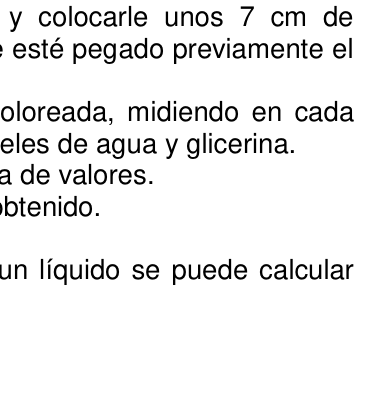
Topic: Fluid Mechanics, Newtonian Mechanics Metodi: Experimental Data Analysis, Error Propagation, Graph Linearization Competenze: Physical Reasoning, Experimental Data Analysis Objects: Projectile Fonte: Testo (PDF) — p.3
PE23. Scuola San Andrés Olivos, Buenos Aires.
Quando un oggetto cade in aria, prova una forza. di trascinamento che si oppone al movimento. Altri oggetti Le forze più grandi sperimentano forze più grandi. In questo . sperimentare, esamineranno come la velocità terminale di Un cono di carta che cade in aria dipende dal diametro del cono. (a) Taglia un settore di un cerchio di filtro di carta, come mostrato in Figura 1. P2.1.
(b) (i) Concinare i bordi retti del foglio per produrre un cono, come mostrato in Figura 1. 2.2. Fig. P1.1
OAF 2012 - 149 (ii) Misurare e registrare il diametro del cono. d= …cm
(c) (i) Metti un regalo verticalmente come si fa mostra qui sotto. (ii) Sgancia il cono da una distanza vicina.
- Sopra il regalo, Fig. 2.3.
Fai e registra le misure per determinare il tempo che ti prende a fare il Si può scendere la distanza dalla punta superiore della regola. h = …cm t = …s
(d) Calcola la percentuale di incertezza in t, mostrando il tuo lavoro Incertezza percentuale su t = …
(e) Calcolare la velocità terminale del cono. v = …cm s–1
(f) (i) Togliete la cinta dalla carta e tagliate una settore più grande come in Figura 1. 2.4. (ii) Ripetere (b), (c) (ii) e (e) cinque volte, registrando i risultati d, h, t e v in una tavola.
(g) Si suggerisce che v sia inversamente proporzionale a d. I risultati dei loro lavori misurazioni apoyan Questa è la mia . suggerimento? Spiegate chiaramente il vostro ragionamento, e esegue un grafico sul foglio di supporto.
h) (i) Suggerisce 4 fonti di errore o di limitazioni del procedimento
- il progetto di bilancio. (ii) Suggerisce 4 miglioramenti che si potrebbero fare all’esperimento. Potrebbe suggerire altri strumenti o procedure.
OAF 2012 - 150
Topic: Fluid Mechanics, Newtonian Mechanics Metodi: Experimental Data Analysis, Error Propagation, Graph Linearization Competenze: Physical Reasoning, Experimental Data Analysis Objects: Projectile Fonte: Testo (PDF) — p.3
PE23. St. Andrew ‘s School Olive trees, from Buenos Aires.
When an object falls into the air, it experiences a force. of drag that opposes movement. More items Bigger forces are experiencing bigger forces. In this one . Experiment, they’ll investigate how the terminal velocity of A paper cone falling into the air depends on the diameter of the cone. (a) Cut a section of a paper filter circle, as shown in Fig. P2.1.
(b) (i) Fence the straight edges of the paper to The resulting cone is a cone, as shown in Fig. 2.2. Fig. P1.1
The following points shall be added: (ii) Measure and record the diameter of the cone. d= …cm
(c) (i) Place a gift in a vertical shape as you are the following example. (ii) Release the cone from a close distance above the gift, Fig. 2.3.
Make and record measurements to determine the time it takes to You can drop the distance from the top of the rule. h = …cm t = …s
(d) Estimate the uncertainty percentage in t, showing your work The following shall be reported:
(e) Calculate the terminal velocity of the cone. v = …cm s–1
(f) (i) Take the tape off the paper and cut a sector larger than Fig. 2.4. (ii) Repeat (b), (c) (ii) and (e) five times, recording their results d, h, t and v in a board.
(g) It is suggested that v is inversely proportional to d. The results of their work measurements supporting This one . What’s your suggestion? Explain your reasoning clearly, and I’ll draw a graph on the attached paper.
(h) (i) Suggest 4 sources of error or limitations of the procedure The Commission has already taken a decision. (ii) Suggest 4 improvements that could be made to the experiment. You can . suggest other instruments or procedures.
The following points shall be added:
Topic: Fluid Mechanics, Newtonian Mechanics Metodi: Experimental Data Analysis, Error Propagation, Graph Linearization Competenze: Physical Reasoning, Experimental Data Analysis Objects: Projectile Fonte: Testo (PDF) — p.3
PE24. Liceo Militar General Espejo
Colegio Universitario Central Gral. José de San Martín Ciudad de Mendoza.
Péndulo Real.
Objetivo: Determinar el momento de inercia de una varilla delgada
Breve descripción
El momento de inercia representado, comúnmente por la letra “I”, es una medida
de la inercia rotacional de un cuerpo. Cuando un cuerpo gira en torno a uno de
los ejes principales de inercia, la inercia rotacional puede ser representada como
una magnitud escalar llamada momento de inercia. El momento de inercia refleja
la distribución de masa de un cuerpo o de un sistema de partículas en rotación,
respecto a un eje de giro. Sólo depende de la geometría del cuerpo y de la
posición del eje de giro; pero no depende de las fuerzas que intervienen en el
movimiento.
Dado un sistema de partículas y un eje arbitrario, el momento de inercia del
mismo se define como la suma de los productos de las masas de las partículas
por el cuadrado de la distancia r de cada partícula a dicho eje. Matemáticamente
se expresa como
Este concepto desempeña en el movimiento de rotación un papel análogo al de masa inercial en el caso del movimiento rectilíneo y uniforme. La masa es la resistencia que presenta un cuerpo a ser acelerado en traslación y el Momento de Inercia es la resistencia que presenta un cuerpo a ser acelerado en rotación. Para nuestra práctica nos valdremos de un método que basa en la idea del péndulo físico. Por ello recordemos que un péndulo físico se trata de Un cuerpo rígido que gira libremente en torno a un eje fijo de rotación, que no coincide con su centro de gravedad. Si las oscilaciones son pequeñas, el análisis de un péndulo real es tan sencillo como el de uno simple. La figura 1 muestra un cuerpo irregular que puede girar sin fricción alrededor de un eje que pasa por el punto O. En la posición de equilibrio, el centro de gravedad esta directamente abajo del pivote; en la posición mostrada en la figura, el cuerpo esta desplazado de la posición de equilibrio un ángulo. La distancia de O al centro de gravedad es d. Cuando el cuerpo se desplaza como se muestra el peso causa una torca de restitución.
Realizando el análisis teórico correspondiente podemos determinar una ecuación que resulta sumamente útil para la determinación experimental del momento de inercia de un cuerpo. Esa es:
OAF 2012 - 151
Donde T es el periodo del péndulo, I el momento de inercia, m la masa total del cuerpo y g la aceleración de la gravedad.
Consigna 1 a. Determine el momento de inercia de la varilla entregada, basándose en el método del péndulo físico. Considere que la varilla es perfectamente homogénea por lo que su centro de masa coincide con su centro geométrico. b. Describa el procedimiento utilizado para determinar dicho valor, y las consideraciones que tuvo para que la practica resulte exitosa.
Consigna 2 a. Determine el error correspondiente al momento de inercia calculado en el punto anterior b. Analíticamente el momento de inercia de una varilla delgada es que gira en torno a un eje que pasa por uno de sus extremos es:
Donde M es la masa total de la varilla y l su longitud.
Compare este valor con el obtenido experimentalmente en la consigna
1 a.
Topic: Rotational Dynamics, Oscillations & Waves Metodi: Experimental Data Analysis, Torque & Angular Momentum Analysis, Simple Harmonic Motion Analysis Competenze: Physical Reasoning, Experimental Data Analysis Objects: Rod, Pendulum Fonte: Testo (PDF) — p.3
PE24. Liceo Militare Generale Specchio
Gral Central University. José de San Martín Città di Mendoza.
Pendolo reale. Obiettivo: Determinare il momento di inerzia di un bastone sottile Breve descrizione Il momento di inerzia rappresentato, comunemente dalla lettera I, è una misura dell’inerzia rotazionale di un corpo. Quando un corpo gira intorno a uno di L’inerzia rotatoria può essere rappresentata come una grandezza scalare chiamata momento di inerzia. Il momento di inerzia riflette. la distribuzione di massa di un corpo o di un sistema di particelle in rotazione, per un’asse di rotazione. Dipende solo dalla geometria del corpo e dalla La posizione dell’asse di rotazione non dipende dalle forze che intervenono nel movimento. Dato un sistema di particelle e un asse arbitrario, il momento di inerzia del La stessa è definita come la somma dei prodotti delle masse delle particelle per il quadrato della distanza r di ciascuna particella a tale asse. Matematicamente. si esprime come
Questo concetto svolge un ruolo analogo al movimento di rotazione. massa inerziale nel caso del movimento rettilineo e uniforme. La massa è la resistenza che presenta un corpo da accelerare in traslazione e momento di inerzia è la resistenza che un corpo presenta ad essere accelerato in rotazione. Per la nostra pratica si utilizzerà un metodo basato sull’idea di un pendolo fisico. Ricordiamoci che un pendolo fisico è un corpo. rigido che gira liberamente attorno ad un’asse fissa di rotazione, che non coincide con il suo centro di gravità. Se le oscillazioni sono piccole, l’analisi di un Il pendolo reale è semplice come quello di un semplice. La figura 1 mostra un corpo irregolare che può girare senza attrito attorno ad un asse che passa attraverso il punto O. Nella posizione di equilibrio, il centro di gravità è direttamente Sotto il pivot; nella posizione mostrata nella figura, il corpo è spostato di posizione di equilibrio un angolo. La distanza da O al centro di gravità es d. Quando il corpo si muove come mostra il peso provoca un torco di restituzione.
Con l’analisi teorica corrispondente possiamo determinare un’equazione che è estremamente utile per la determinazione sperimentale del momento di inerzia di un corpo. Questo è:
OAF 2012 - 151
Dove T è il periodo del pendolo, I il momento di inerzia, m la massa totale di Il corpo e l’accelerazione della gravità.
Consigna 1 a. Determina il momento di inerzia della canna consegnata, basandosi su il metodo del pendolo fisico. Considera che il bastone è perfettamente. omogenea in modo che il suo centro di massa coincida con il suo centro geometrico. b. Descrive il metodo utilizzato per determinare tale valore e i seguenti: Le sue considerazioni hanno contribuito a farla avere successo.
Consigna 2 a. Determina l’errore corrispondente al momento di inerzia calcolato in il punto precedente b. L’analisi del momento di inerzia di un bastone sottile è che gira. intorno ad un asse che passa attraverso una delle sue estremità è:
Dove M è la massa totale del bastone e l la sua lunghezza. Compare questo valore con quello ottenuto sperimentalmente nella consigna 1 a.
Topic: Rotational Dynamics, Oscillations & Waves Metodi: Experimental Data Analysis, Torque & Angular Momentum Analysis, Simple Harmonic Motion Analysis Competenze: Physical Reasoning, Experimental Data Analysis Objects: Rod, Pendulum Fonte: Testo (PDF) — p.3
PE24. General Military High School Mirror
Gral Central High School. Joseph of San Martin The city of Mendoza.
The Royal Pendulum. Objective: Determine the moment of inertia of a thin rod Brief description The moment of inertia, commonly represented by the letter I, is a measure of the rotational inertia of a body. When a body spins around one of The main axes of inertia, rotational inertia can be represented as A scalar magnitude called moment of inertia. The moment of inertia reflects the mass distribution of a rotating body or particle system, with respect to a rotating axis. It only depends on the geometry of the body and the The position of the axis of rotation; but it does not depend on the forces involved in the The movement. Given a system of particles and an arbitrary axis, the moment of inertia of the It is defined as the sum of the products of the masses of the particles by the square of the distance r of each particle to that axis. Mathematically is expressed as
This concept plays a role in rotational motion analogous to that of the Inertial mass in the case of straight and uniform motion. The mass is the The resistance of a body to acceleration in translation and momentum Inertia is the resistance that a body presents to be accelerated in rotation. In practice we will use a method based on the idea of The physical pendulum. So let ‘s remember that a physical pendulum is a body . rigid that rotates freely around a fixed axis of rotation, which does not coincide with its center of gravity. If the oscillations are small, the analysis of a A real pendulum is as simple as a simple pendulum. Figure 1 shows a An irregular body that can rotate without friction around an axis passing through the point O. In the equilibrium position, the center of gravity is directly below the pivot; in the position shown in the figure, the body is displaced of the equilibrium position an angle. The distance from O to the center of gravity es d. When the body moves as shown the weight causes a twitch The Commission shall take the necessary measures to ensure that the measures are implemented.
By performing the corresponding theoretical analysis we can determine an equation The time of the test is very useful for experimental determination of the time of the test. inertia of a body. That ‘s it .
The following points shall be added:
Where T is the period of the pendulum, I is the moment of inertia, m is the total mass of the body and g the acceleration of gravity.
Consigna 1 a. Determine the moment of inertia of the delivered rod, based on The method of the physical pendulum. Consider that the rod is perfectly It ‘s homogeneous so its center of mass matches its center . It’s geometrical. b. Describe the procedure used to determine this value, and the The Commission has already taken into account the various considerations it took to make the practice successful.
Consigna 2 a. Determine the error corresponding to the moment of inertia calculated in the previous point b. Analytically the moment of inertia of a thin rod is that it spins. around an axis passing through one of its ends is:
Where M is the total mass of the rod and l its length. Compare this value with the experimental value in the consigna 1 a.
Topic: Rotational Dynamics, Oscillations & Waves Metodi: Experimental Data Analysis, Torque & Angular Momentum Analysis, Simple Harmonic Motion Analysis Competenze: Physical Reasoning, Experimental Data Analysis Objects: Rod, Pendulum Fonte: Testo (PDF) — p.3
PE25. Escuela Nacional Ernesto Sábato
Colegio Sagrada Familia Tandil, Buenos Aires.
Objetivos: Construir un péndulo simple. Determinar el período. Calcular la aceleración de la gravedad.
Breve descripción La fuerza de gravedad o peso es la fuerza con la cual el planeta Tierra atrae a los cuerpos cercanos hacia ella. No habiendo resistencia del aire, se encuentra que todos los cuerpos caen con la misma aceleración y, si la distancia recorrida no es demasiado grande, la aceleración es constante en toda la caída. La aceleración de un cuerpo que cae libremente se llama aceleración debida a la gravedad g. Un péndulo simple es un sistema mecánico que exhibe movimiento periódico. Se puede describir, como se ve en la Figura, como una partícula de masa m suspendida de un punto O y sostenida por una cuerda de longitud L cuya masa es despreciable. Desplazando la partícula un cierto ángulo pequeño en relación a su punto de equilibrio A, el cuerpo empieza a oscilar con una cierta amplitud x. El astrónomo y físico Galileo Galilei fue el primero en observar que el período es
OAF 2012 - 152 independiente de la amplitud, al menos para ángulos pequeños. Puede decirse que para amplitudes de movimiento menores a 10° el movimiento es armónico simple. Utilizando el método del péndulo simple se puede obtener g , a partir el período T,
Despejando:
Consigna 1 a) Realizar la construcción del péndulo. b) Determinar el período a partir de medir el tiempo para un número importante de oscilaciones. c) A partir del resultado anterior calcular la aceleración de la gravedad.
Elementos que pueden resultar de utilidad:
- Hilo tanza o alambre de acero.
- Cinta métrica.
- Cronómetro.
- Esfera de acero o tuerca metálica.
Nota: Para obtener resultados aceptables conviene utilizar una longitud para el péndulo no menor a 2 metros.
Topic: Oscillations & Waves, Gravitation Metodi: Experimental Data Analysis, Simple Harmonic Motion Analysis Competenze: Physical Reasoning, Experimental Data Analysis Objects: Pendulum Fonte: Testo (PDF) — p.3
PE25. Scuola nazionale Ernesto sabato
Scuola Sagrada Familia Tandil, Buenos Aires.
Obiettivi: • Costruire un semplice pendolo. Determinare il periodo. Calcolare l’accelerazione della gravità.
Breve descrizione La forza di gravità o peso è la forza con cui il pianeta Terra attira i corpi vicini a lei. Non avendo resistenza all’aria, si trova che tutti i corpi cadano con la stessa accelerazione e, se la distanza percorsa non è troppo grande, l’accelerazione è costante durante tutto il cadere. La L’accelerazione di un corpo che cade liberamente è chiamata accelerazione dovuta alla gravità g. Un semplice pendolo è un sistema. Meccanico che
- Essi lo mostrano. movimento
- Il giornale. Si può descrivere come si Vediamo la figura, come una particella di massa m sospesa da un punto O e sostenuta da una corda di lunghezza L di cui massa es
- Desprezioso. Spostando la particella un certo angolo piccolo rispetto al suo punto di equilibrio A, il corpo inizia a oscillare con una certa larghezza x. L’astronomo e fisico Galileo Galilei fu Il primo a osservare che il periodo è
OAF 2012 - 152 indipendentemente dalla larghezza, almeno per angoli piccoli. Si può dire che per amplitudini di movimento inferiori a 10° il movimento è armonico
-
semplice. Usando il metodo del semplice pendolo si può ottenere g , a partire dal periodo T,
-
Sgomberando:
Consigna 1 a) realizzare la costruzione del pendolo. b) Determinare il periodo a partire dal tempo di misura per un numero importante di oscillazioni. c) Calcolare l’accelerazione della gravità a partire dal risultato precedente.
Elementi che possono risultare utili:
- Felli di bronzo o fili di acciaio.
- Cintura metrica.
- Un cronometro.
- Una sfera di acciaio o un’ortiga metallica.
Nota: Per ottenere risultati accettabili è opportuno utilizzare una lunghezza per il pendolo non inferiore a 2 metri.
Topic: Oscillations & Waves, Gravitation Metodi: Experimental Data Analysis, Simple Harmonic Motion Analysis Competenze: Physical Reasoning, Experimental Data Analysis Objects: Pendulum Fonte: Testo (PDF) — p.3
PE25. Ernesto National School Saturday
Holy Family College . I’m going to Tandil, Buenos Aires.
Objectives: • Build a simple pendulum. Determine the period. Calculate the acceleration of gravity.
Brief description Gravity or gravity is the force by which the planet Earth attracts you. the bodies close to her. There is no air resistance, it is found All bodies fall at the same acceleration and, if the distance travelled It’s not too big, the acceleration is constant throughout the fall. La The acceleration of a body falling freely is called acceleration due to the The following is the list of the following: A simple pendulum is a system. Mechanical . That It shows . Movement The newspaper. It can be described as being You see in the Figure, like a particle of mass m suspended from a point O and held by a length string L whose Mass es I’m not a big fan of this. Moving the particle a certain way . small angle relative to its point In equilibrium A, the body starts to oscillating with a certain width x. The astronomer and physicist Galileo Galilei was The first to note that the period is
The following is the list of the countries of the European Union: independent of width, at least for small angles. You could say that for motion amplitudes less than 10° the motion is harmonic It’s simple. Using the simple pendulum method , g can be obtained from the period T,
Clearing:
Consigna 1 (a) To construct the pendulum. (b) Determine the period from measuring time for a number The key is to keep the fluctuations going. (c) From the previous result calculate the acceleration of gravity.
Elements that may be useful:
- Bronze yarn or steel wire.
- It’s a tape recorder.
- It’s a timekeeper.
- A steel ball or a metal nut.
Note: For acceptable results, a length for the pendulum not less than 2 metres.
Topic: Oscillations & Waves, Gravitation Metodi: Experimental Data Analysis, Simple Harmonic Motion Analysis Competenze: Physical Reasoning, Experimental Data Analysis Objects: Pendulum Fonte: Testo (PDF) — p.3
PE26. Escuela Nacional Ernesto Sábato
Colegio Sagrada Familia Tandil, Buenos Aires.
Objetivos:
Analizar las diferentes formas de conectar fuentes continuas,
específicamente pilas o baterías.
Analizar las diferentes formas de conectar lámparas en circuitos
sencillos.
Utilizar el multímetro para medir corriente y tensión.
Corroborar los valores obtenidos mediante la medición directa de los
parámetros anteriores, realizando los cálculos correspondientes
utilizando la ley de Ohm y leyes de Kircchoff.
Realizar las siguientes mediciones utilizando un multímetro y pilas de 1.5 V, como se indica a continuación.
- Construir el siguiente circuito utilizando una fuente de tensión continua y una lámpara incandescente. V V V
OAF 2012 - 153 a. Al conectar la fuente de tensión, ¿qué debería suceder con la lámpara? b. Si invertimos la polaridad de la fuente, ¿Qué sucede con la lámpara? c. Utilizando un multímetro, medir la intensidad de corriente y la diferencia de potencial en los lugares indicados con las letras A y V. ¿Cómo deberían ser los valores medidos? ¿Por qué?
- Ahora otra variación: Al circuito construido en el punto anterior, vamos a agregar otra lámpara. Existen dos formas de conectarla al circuito, configuración en serie y configuración en paralelo. Tratar de establecer cuales son las diferencias que se observan entre estas configuraciones (intensidad de corriente, diferencia de potencial)
Configuración en serie
a. ¿Qué sucede si abro en distintas partes el
circuito?
b. Utilizando
un
multímetro,
medir
la
intensidad de corriente que circula por el
circuito y la diferencia de potencial entre
los terminales de cada uno de los focos.
Configuración en paralelo
a. ¿Qué sucede si abro en distintas partes el
circuito?
b. Utilizando un multímetro, medir la intensidad
de corriente que circula por cada foco y la
diferencia de potencial entre los terminales
de cada foco.
Topic: Circuits Metodi: Experimental Data Analysis, Kirchhoff’s Laws Competenze: Physical Reasoning, Experimental Data Analysis Objects: Battery, Resistor Fonte: Testo (PDF) — p.3
PE26. Scuola nazionale Ernesto sabato
Scuola Sagrada Familia Tandil, Buenos Aires.
Obiettivi: analizzare i diversi modi di connettere fonti continue, specificamente batterie o batterie. Analizzare i diversi modi di connettere lampe in circuiti semplici. • Utilizzare il multimetro per misurare corrente e tensione. Confirmare i valori ottenuti mediante la misurazione diretta dei i parametri precedenti, effettuando i relativi calcoli usando la legge di Ohm e le leggi di Kircchoff.
Per effettuare le seguenti misurazioni utilizzando un multimetro e pile di 1.5 V, come indicato di seguito.
- Costruire il circuito successivo utilizzando una fonte di tensione continua e una lampada incandescente. V V V
OAF 2012 - 153 a. Con il collegamento della fonte di tensione, cosa? dovrebbe succedere alla lampada? b. Se invertiamo la polarità della fonte, Che succede alla lampada? c. Usando un Multimetro, Misurare la intensità di corrente e la differenza di Potenziale nei luoghi indicati con le lettere A e V. Come dovrebbero essere i valori misurati? - Perché?
- Ora un’altra variazione: al circuito costruito nel punto precedente, andiamo a aggiungere un’altra lampada. Ci sono due modi per collegarla al circuito, configurazione. in serie e in configurazione parallela. Cercare di stabilire quali sono le Le differenze osservate tra queste configurazioni (intensità di corrente, differenziazione di potenziale)
Configurazione in serie a. Cosa succede se aprisco in diverse parti il circuito? b. Usando un Multimetro, Misurare la intensidad de corriente que circula por el Circuito e differenza di potenziale tra i terminali di ciascuna foco.
Configurazione parallela a. Cosa succede se aprisco in diverse parti il circuito? b. Usando un multimetro, misurare l’intensità di corrente che circola da ogni foco e la differenze di potenziale tra i terminali di ogni foco.
Topic: Circuits Metodi: Experimental Data Analysis, Kirchhoff’s Laws Competenze: Physical Reasoning, Experimental Data Analysis Objects: Battery, Resistor Fonte: Testo (PDF) — p.3
PE26. Ernesto National School Saturday
Holy Family College . I’m going to Tandil, Buenos Aires.
Objectives: • Analyze the different ways of connecting continuous sources, specifically batteries or batteries. Analyze the different ways of connecting lamps in circuits It’s simple. • Use the multimeter to measure current and voltage. Confirm the values obtained by direct measurement of the previous parameters, by making the corresponding calculations using Ohm’s law and Kircchoff’s laws.
Perform the following measurements using a multimeter and 1.5 batteries V, as indicated below.
- Build the next circuit using a continuous voltage source and a a glowing lamp. V V V
The following is the list of the countries of the European Union: a. When you connect the voltage source, what? Should that happen with the lamp? b. If we reverse the polarity of the source, What about the lamp? c. Using un The following table shows the results of the calculations: measuring la current intensity and difference of The potential for the use of the letters A and V. What should the measured values be like? - Why? - I don’t know.
- Now another variation: To the circuit built at the previous point, let’s go to add another lamp. There are two ways to connect it to the circuit, configuration. in series and parallel configuration. Try to establish which ones are The difference between these configurations (current intensity, (d) the potential difference
Serial setup a. What happens if I open the door in different parts? The circuit? b. Using un The following table shows the results of the calculations: measuring la current intensity circulating through the The potential difference between the terminals of each of the focuses.
Parallel setting a. What happens if I open the door in different parts? The circuit? b. Using a multimeter, measure the intensity. The current flowing through each focus and the potential difference between terminals of each focus.
Topic: Circuits Metodi: Experimental Data Analysis, Kirchhoff’s Laws Competenze: Physical Reasoning, Experimental Data Analysis Objects: Battery, Resistor Fonte: Testo (PDF) — p.3
PE27. Escuela Técnica Philips Argentina Ciudad de Buenos Aires.
Objetivo: determinar el valor de la resistividad de una aleación de cromo-níquel- aluminio
Introducción Los materiales conductores presentan mayor o menor capacidad para conducir la corriente eléctrica de acuerdo a sus características moleculares. Esta capacidad puede cuantificarse mediante una magnitud que depende de la temperatura y se llama resistividad y se simboliza . En función de la geometría, la resistencia de un conductor de longitud y sección uniforme de área , puede escribirse como
Asumiendo que y son constantes para una temperatura dada.
Materiales
Fuente de tensión regulable
Alambre resistivo
Voltímetro
OAF 2012 - 154
Amperímetro
Cables de conexión
Terminales de conexión
Balanza digital
Procedimiento
Idee un método para determinar la resistencia de un tramo de alambre
resistivo de longitud
Realice un esquema del circuito eléctrico asociado al método diseñado
Mida la resistencia para diferentes longitudes de alambre resistivo
Determine la longitud de los diferentes tramos a partir de la medición de
su masa
Confeccione un gráfico apropiado que le permita obtener el valor de .
Datos La densidad lineal de masa del alambre provisto es
El diámetro del alambre es
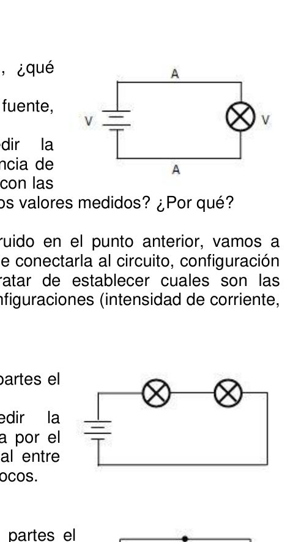
Topic: Circuits Metodi: Experimental Data Analysis, Graph Linearization Competenze: Physical Reasoning, Experimental Data Analysis Objects: Wire, Resistor Fonte: Testo (PDF) — p.3
PE27. Philips Technical School Argentina Città di Buenos Aires.
Obiettivo: determinare il valore di resistività di un’alleazione di cromo-nickel Alumini
Introduzione I materiali conduttori presentano maggiore o minore capacità di condurre la corrente elettrica secondo le sue caratteristiche molecolari. Questa è la mia . La capacità può essere quantificata con una magnitudo che dipende dalla la temperatura e si chiama resistenza e si simboleggia . In base alla geometria, la resistenza di un conduttore di lunghezza e sezione uniforme di area , può scrivere come
Supponendo che e siano costanti per una data temperatura.
Materiali Fonte di tensione regolabile Cable resistivo Voltímetro
OAF 2012 - 154 Amperimetro Cable di connessione Termini di connessione Balance digitale
Procedura Ideare un metodo per determinare la resistenza di un tratto di filo resistente di lunghezza realizzare un diagramma del circuito elettrico associato al metodo progettato Misurare la resistenza per diverse lunghezze di filo resistente Determina la lunghezza dei diversi tratti a partire dalla misurazione di la sua massa • Configgere un grafico appropriato che ti permetta di ottenere il valore di .
Datos La densità di massa lineare del filo fornito è
Il diametro del filo è
Topic: Circuits Metodi: Experimental Data Analysis, Graph Linearization Competenze: Physical Reasoning, Experimental Data Analysis Objects: Wire, Resistor Fonte: Testo (PDF) — p.3
PE27. Philips Technical School Argentina City of Buenos Aires.
Objective: to determine the resistivity value of a chromium-nickel alloy Aluminium
The first is the introduction. The conductive materials have a greater or lesser conductivity. the electric current according to its molecular characteristics. This one . The capacity can be quantified by a magnitude that depends on the temperature and it ‘s called resistivity and it ‘s symbolized . Based on geometry, The resistance of a conductor of length and uniform section of area , can Write yourself as
Assuming that y is constant for a given temperature.
Materials Adjustable voltage source Resistant wire Voltmeter
The following is the list of the Member States’ financial statements: Amperimeter Connecting cables Connection terminals Digital balance sheet
The procedure Develop a method for determining the strength of a wire strip length resistance Draw a diagram of the electrical circuit associated with the method designed Measure resistance for different resistant wire lengths Determine the length of the different sections from the measurement of its mass • Create an appropriate chart to obtain the value of .
Data from the report The linear mass density of the provided wire is
The diameter of the wire is
Topic: Circuits Metodi: Experimental Data Analysis, Graph Linearization Competenze: Physical Reasoning, Experimental Data Analysis Objects: Wire, Resistor Fonte: Testo (PDF) — p.3
PE28. Escuela Superior de Comercio Carlos Pellegrini Ciudad de Buenos Aires.
Fractales y bollos de papel.
Objetivo
Un fractal es un objeto geométrico cuya estructura básica, fragmentada o
irregular, se repite a diferentes escalas. El término fue propuesto por el
matemático Mandelbrot en 1975 y deriva del Latín fractus, que significa
quebrado o fracturado.
Estos objetos son muy útiles para modelizar varios fenómenos de la naturaleza.
Las hojas de papel arrugadas tienen propiedades de los modelos fractales. El
objetivo de este experimental será medir la “dimensión fractal” de los bollos de
papel, y su dependencia con la densidad.
Materiales
- Hojas de distintas densidades
- Balanza
- Regla
- Hoja milimetrada
- Tijeras
Comentarios generales:
- Antes de comenzar lea todas las instrucciones
- Agregue en el informe los comentarios que aclaren el procedimiento exacto que utilizó en cada paso. En lo posible incluya también un dibujo aclaratorio.
- Escriba en tablas los datos obtenidos en las mediciones junto con sus errores.
- Aclare cualquier cambio o desvío respecto de las instrucciones, junto con una breve explicación de su motivo.
- Trate de ser prolijo.
Introducción teórica
OAF 2012 - 155 Para familiarizarnos con la idea de fractal, miremos un ejemplo clásico de objeto fractal que es la estrella de Koch. Esta se contruye empezando con un triángulo equilátero, y cada iteración implica agregar otro triángulo equilátero en cada lado. De esta manera en la iteración número n el perímetro será: 4 3 n np D (en cada paso por cada lado se obtiene un perímetro un tercio más grande que el anterior). Iterando infinitamente este procedimiento se obtiene una figura que tiene la propiedad de encerrar finita área en infinito perímetro.
Para este tipo de figuras y objetos geométricos aparece un nuevo concepto de
dimensión, llamada “Dimensión Fractal” (d). Una manera de entender este
concepto es calculando para cada objeto la masa (M), en función del diámetro
(D) del objeto original
.
d
M
cte D
.
Este concepto se corresponde a las nociones naturales en rectas en R, áreas en
R2 y volúmenes en R3. En R, donde la masa es proporcional a la longitud, si una
línea de longitud D se triplica la nueva dimensión será Mtot=3Min=3.D1=31D1, y
por lo tanto la dimensión del espacio será 1. En R2, la masa de un objeto
dependerá de una constante y
2
D , y por lo tanto la dimensión fractal será 2 (por
ejemplo al triplicarse Mtot=9Min=9.D2=32.D2.) Sin embargo, para objetos fractales
pueden aparecer dimensiones no enteras. En el ejemplo de las estrella de Koch,
al triplicarse, se obtiene 4 veces el perímetro inicial. Por lo tanto
Pertot = 4Perin=4.D d =3 d.D d. Y la dimensión fractal de la estrella de Koch será
d= ln 4
1,2618…
ln3
Cuando se arruga un papel, que desestimando su grosor tiene dimensión 2, pasa a ocupar un lugar en el espacio, que tiene dimensión 3. Por lo tanto adquiere una dimensión fractal, no entera, que estará entre la dimensión del plano y la dimensión del espacio: 2<d<3 y que depende de la densidad del papel según la fórmula 0,11 . d c (1)
Parte 1
- Tome uno de los papeles y mida su área.
- Péselo para obtener M y calcule su densidad.
- Haga un bollo con el papel, presionando uniformemente, de forma esférica y mida su diámetro (D).
- Corte la hoja a la mitad y repita los puntos anteriores con mediciones, o cálculos de ser imposible. Prosiga los cortes y mida para al menos 10 tamaños distintos de papel.
- Haga un gráfico con los datos obtenidos, comparando log(M) vs log(D).
OAF 2012 - 156
6. Calcule a partir del gráfico la dimensión fractal del arrugado de papel.
Ayuda: si M = cte*Dd, entonces log(M) = log(cte) + d.log(D)
Parte 2
- Repita las mediciones de la parte 1 con papeles de diferentes densidades.
- Grafique la dimensión fractal de los bollos de papel en función de la densidad del papel
- Calcule c de la fórmula (1)
Parte 3: Confección de un informe (téngalo en cuenta al realizar la parte 1 y 2) Escriba un informe de la experiencia realizada que posea la siguiente información: Título Introducción (breve) Hipótesis Descripción del dispositivo experimental (texto y dibujo) Detalles acerca de cómo se realizaron las mediciones (texto y dibujo) Mediciones / Tablas Gráficos (en hoja milimetrada) Cálculos Cálculos de errores Resultados obtenidos Comentarios finales Conclusiones Y cualquier información que considere relevante
Topic: Order-of-Magnitude Estimation, Mathematics Metodi: Experimental Data Analysis, Graph Linearization, Dimensional Analysis Competenze: Physical Reasoning, Experimental Data Analysis Objects: — Fonte: Testo (PDF) — p.3
PE28. Scuola superiore di commercio Carlos Pellegrini Città di Buenos Aires.
Fractali e ciambelle di carta.
Obiettivo Un fractal è un oggetto geometrico la cui struttura di base, frammentaria o irregolare, ripetuta su diverse scale. Il termine è stato proposto dal matematico Mandelbrot nel 1975 e deriva dal latino fractus, che significa rotto o fracturato. Questi oggetti sono molto utili per modellare diversi fenomeni della natura. Le foglie di carta arrugginite hanno proprietà dei modelli fractali. El L’obiettivo di questo esperimento sarà di misurare la dimensione fractal delle ciocche di La densità della carta e la sua dipendenza dalla densità.
Materiali
- Foli di diverse densità
- Sbalzo .
- Regola .
- Carta di millimetro
- Scaglie .
Commenti generali:
- Prima di iniziare, leggi tutte le istruzioni.
- Aggiungere al rapporto le osservazioni che chiariscano la procedura Esatto che ha usato in ogni passo. Se possibile, includere anche un disegno
- Chiarazione.
- Scrivi in tavola i dati ottenuti dalle misurazioni insieme ai dati ottenuti. errori.
- Accertare qualsiasi modifica o deviazione rispetto alle istruzioni, insieme con una breve spiegazione del suo motivo.
- Cerca di essere prolico.
Introduzione teorica
OAF 2012 - 155 Per familiarizzare con l’idea di fractal, vediamo un esempio classico di oggetto. Fractal che è la stella di Koch. Questa si costruisce partendo da un triangolo E ogni iteration implica l’aggiunta di un altro triangolo equilaterale in ogni
- Un lato. In questo modo, nell’iterata n, il perimetro sarà: 4 3 n np D (en Ogni passo da ogni lato ottiene un perimetro un terzo più grande del diametro. precedente). Iterando infinitamente questa procedura si ottiene una figura che ha la proprietà di chiudere un’area finita in perimetro infinito.
Per questo tipo di figure e oggetti geometrici si presenta un nuovo concetto di dimensione, detta Dimensione fractal (d). Un modo per capire questo. Il concetto è calcolare per ogni oggetto la massa (M), in base al diametro (D) dell’oggetto originale . d M Cte D . Questo concetto corrisponde alle nozioni naturali in rettitudini in R, aree in R2 e volumi in R3. In R, dove la massa è proporzionale alla lunghezza, se una Linea di lunghezza D se si triplica la nuova dimensione sarà Mtot=3Min=3.D1=31D1, e Quindi la dimensione dello spazio sarà 1. In R2, la massa di un oggetto si baserà su una costante e 2 D , e quindi la dimensione fractal sarà 2 (per Per esempio, per gli oggetti fractali, le dimensioni non intere possono apparire. Nell’esempio delle stelle di Koch, Triplicando, si ottiene 4 volte il perimetro iniziale. Quindi Pertot = 4Perin=4.D d =3 d.D d. E la dimensione fractale della stella di Koch sarà d= ln 4 1,2618… ln3
Quando si arrugge un foglio, che disprezzando la sua spessura ha dimensione 2, passa a prendere un posto nello spazio, che ha Dimensione 3. Quindi acquista una dimensione fractal, no. L’intero, che sarà tra la dimensione del piano e la dimensione di spazio: 2<d<3 e che dipende dalla densità della carta secondo la formula 0,11 . d c (1)
Parte 1
- Prendi uno dei documenti e misura la sua area.
- Pesalo per ottenere M e calcola la densità.
- Faccia un
- Faglio con el carta,
- Sottolineando . uniformemente, in forma sferica e misurando il diametro (D).
- Taglia la foglia a metà e ripeta i punti precedenti con misurazioni, o calcoli di impossibilità. Prosegue taglie e misure per almeno 10 diverse dimensioni di carta.
- Fai un grafico con i dati ottenuti, confrontandoli. log(M) vs log(D).
OAF 2012 - 156 6. Calcola a partire dal grafico la dimensione fractale del ruggine di carta. Aiuto: se M = cte*Dd, allora log(M) = log(cte) + d.log(D) Parte 2
- Ripeti le misure della parte 1 con diversi documenti densità.
- Grafica la dimensione fractal dei bolli di carta in base alla densità della carta
- Calcolare c della formula (1)
Parte 3: Preparare un rapporto (tenete conto di questo quando si eseguono le parti 1 e 2) Scrivi un rapporto sull’esperienza che hai avuto: Informazioni: Titolo Introduzione (breve) ipotesi Descrizione del dispositivo sperimentale (testo e disegno) Dettagli su come le misure sono state effettuate (testo e disegno) Misure / tabelle Grafiche (in foglio in millimetri) Calcoli Calcoli errori Risultati ottenuti Commenti conclusivi Conclusioni E qualsiasi informazione che ritenga rilevante
Topic: Order-of-Magnitude Estimation, Mathematics Metodi: Experimental Data Analysis, Graph Linearization, Dimensional Analysis Competenze: Physical Reasoning, Experimental Data Analysis Objects: — Fonte: Testo (PDF) — p.3
PE28. The Carlos Pellegrini School of Commerce City of Buenos Aires.
Fractals and paper cupcakes.
The objective A fractal is a geometric object whose basic structure is fragmented or It’s irregular, repeated at different scales. The term was proposed by the Mandelbrot mathematician in 1975 and derived from the Latin fractus, which means broken or fractured. These objects are very useful for modeling various phenomena in nature. Wrinkle-formed paper sheets have properties of fractal models. El The objective of this experiment is to measure the fractal size of the bulbs of paper, and its dependence on density.
Materials
- Sheets of different densities
- Weigh it .
- Rule .
- Millimeter sheet .
- Scissors .
General comments:
- Before you start , read all the instructions .
- Add to the report the comments clarifying the procedure Exactly what he used at every step. If possible, include a drawing The Commission has not yet adopted a proposal.
- Write in tables the data obtained from the measurements together with their I’m not sure.
- Please clarify any changes or deviations from the instructions, together with with a brief explanation of why.
- Try to be prolific.
Theoretical introduction
The following points shall be added: To get familiar with the idea of fractal, let’s look at a classic example of an object. Fractal that is Koch’s star. This one is built starting with a triangle. Equilateral, and each iteration involves adding another equilateral triangle to each side. This way in iteration number n the perimeter will be: 4 3 n np D (en Every step on each side gets a perimeter one third larger than the (see also paragraphs 1 and 2). By repeating this procedure infinitely , we get a figure that It has the property of enclosing finite area in infinite perimeter.
For these types of figures and geometric objects a new concept of dimension, called Fractal dimension (d). One way to understand this. The concept is to calculate for each object the mass (M), based on the diameter (D) the original object . d M Ct D . This concept corresponds to natural notions in straight lines in R, areas in R2 and volumes in R3. In R, where mass is proportional to length, if a long line D is tripled the new dimension will be Mtot=3Min=3.D1=31D1, and So the dimension of space will be 1. In R2, the mass of an object It depends on a constant and 2 D , and therefore the fractal dimension will be 2 (for For example, when you tripled Mtot=9Min=9.D2=32.D2.) However, for fractal objects the dimensions may not be complete. In the example of Koch’s stars, When you triple it, you get 4 times the initial perimeter. Therefore Pertot = 4Perin = 4.D d = 3 d.D d And the fractal dimension of Koch’s star will be d= ln 4 1,2618… ln3
When you wrinkle a paper, you dismiss its thickness. dimension 2, it occupies a place in space, which has Dimension three. So it acquires a fractal dimension, not The whole, which will be between the dimension of the plane and the dimension. of space: 2<d<3 and which depends on the paper density according to the formula 0,11 . d c (1)
Part 1
- Take one of the papers and measure its area.
- Weigh it to get M and calculate its density.
- Do it . un
- I ‘m not . with el paper, pressing uniformly, spherically and measuring its diameter (D).
- Cut the sheet in half and repeat the previous points with measurements, or calculations of being impossible. The next step . cuts and sizes for at least 10 different sizes paper.
- Draw a graph with the data obtained, comparing The following table shows the results of the calculations:
The following points shall be added: 6. Calculate the fractal dimension of the paper wrinkle from the graph. Help: if M = cte*Dd, then log(M) = log(cte) + d.log(D) Part 2
- Repeat the measurements in Part 1 with different papers densities.
- Graph the fractal dimension of the paper balls according to the paper density
- Calculate c of the formula (1)
Part 3: Preparation of a report (take this into account when preparing Part 1 and 2) Write a report of the experience you have gained from the following: The following information: Title Introduction (short) Hypotheses Description of the experimental device (text and drawing) Details of how the measurements were made (text and drawing) Measurements / Tables Graphics (in millimetres) Calculations Error calculations • Results obtained Final comments Conclusions And any information you deem relevant
Topic: Order-of-Magnitude Estimation, Mathematics Metodi: Experimental Data Analysis, Graph Linearization, Dimensional Analysis Competenze: Physical Reasoning, Experimental Data Analysis Objects: — Fonte: Testo (PDF) — p.3
PE29. Colegio Nacional Dr. Arturo U. Illia
Colegio Mar del Plata de las Colinas
Instituto Albert Einstein Mar del Plata, Buenos Aires.
Objetivo Observar y estudiar la posición del centro de masa de un sistema de varias masas.
Materiales:
Plano inclinado– transportador – plomada – una “T” invertida con una tuerca fija
en uno de sus extremos – una tuerca móvil que desliza por la “T”
Esquema experimental:
Detalles:
El tope sirve para evitar que la
estructura deslice por el plano y
podamos ver sólo su rotación al
volcar.
Observe que el transportador junto con la plomada nos permite obtener el ángulo de inclinación del plano con la horizontal.
Figura - A
OAF 2012 - 157 Ubicación del centro de masa de un sistema: un sistema como la “T” y la tuerca fija tienen su centro de masa (CM) a una altura Yo. El agregado de la tuerca móvil hace que CM total del sistema cambie a una posición YCM dada por la expresión
[ 1 ]
Donde Yo y Mo son la posición del centro de masa y la masa de la “T” + la tuerca fija, mientras que Y y M son las posición y la masa de la tuerca móvil. Ambas posiciones son medidas respecto a la base de la estructura. Ver FIGURA-B
Figura – B
Vuelco de un cuerpo rígido. Un objeto apoyado sobre una base plana estará en equilibrio estable si la vertical que pasa por el centro de masa corta a la base de apoyo, si la vertical cae fuera de ella el cuerpo abandona la posición de equilibrio inicial mediante una rotación y vuelca alcanzando una nueva posición de equilibrio. En la FIGURA–C se observa un cuerpo que no vuelca, ya que la vertical que contiene el vector peso está dentro de la base de longitud B. En la FIGURA–D el cuerpo esta en el límite, superada esta posición rotará para terminar volcando.
Observe que cuando un cuerpo se encuentra en el limite de volcar, este ángulo limite ( L) del plano inclinada se relaciona con el cuerpo según la siguiente relación trigonométrica.
[ 2 ]
OAF 2012 - 158 Relacionado [1] y [2] obtenemos la siguiente expresión de nuestro sistema
[ 3 ]
Procedimiento:
a) Mida la base B de la estructura “T” con su error.
b) Varíe 5 (cinco) veces la posición de la tuerca móvil, de un extremo a
otro de la “T”, produciendo el vuelco de la estructura. Construya una
tabla de Y (posición de la tuerca móvil) en función del ángulo limite.
Indique unidades y errores cometidos.
c) Calcule las cotangente de todos los ángulos limites ( L) medidos en el
paso anterior, junto con su error. Recuerde que cotg( ) = 1 / tg( )
d) Construya un gráfico de cotangente de ángulo límite ( L) en función de
la posición Y de la tuerca móvil. Indique unidades, si las hay, y errores
cometidos.
e) Obtenga con su error la mejor pendiente y la ordenada al origen de la
relación lineal observada en el gráfico que construyó en el paso anterior.
f) Explique por qué los puntos del gráfico del paso d) representan una
función lineal.
g) ¿De qué variables físicas depende la pendiente y la ordenada al origen
de la gráfica obtenida en el paso d)?
h) Explique como obtendría la posición del centro de masa de la estructura
“T” + la tuerca fija.
i) Suponiendo conocida la masa de la estructura T + la tuerca fija,
explique como calcularía la masa de tuerca móvil de la estructura.
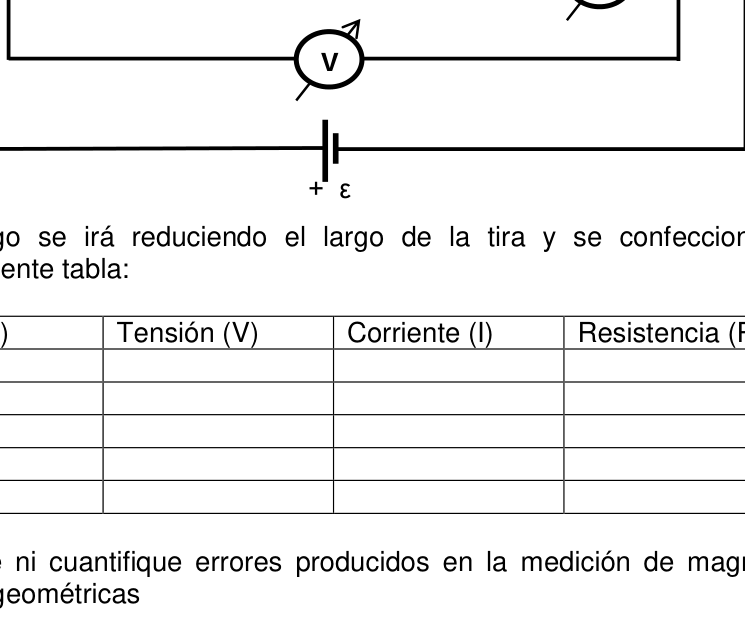
Topic: Rigid Body Statics Metodi: Experimental Data Analysis, Graph Linearization, Torque & Angular Momentum Analysis Competenze: Physical Reasoning, Experimental Data Analysis Objects: Inclined Plane Fonte: Testo (PDF) — p.3
PE29. Il Dr. Arturo U. Illia
La scuola Mar del Plata de las Colinas
L’Istituto Albert Einstein Mar del Plata, Buenos Aires.
Obiettivo Osservare e studiare la posizione del centro di massa di un sistema di vari
- Ma non è vero.
Materiali: Piano inclinato trasportatore piombo un T invertito con un’orticaria fissa su una delle sue estremità un’orticaria mobile che scivola lungo la T
Schema sperimentale: Dettagli: Il coppio serve a evitare che la struttura scivola sul piano e Possiamo vedere solo la sua rotazione al
- Voltare.
Si noti che il trasportatore Insieme al piumato ci permette di ottenere l’angolo di inclinazione di un piano con un piano orizzontale.
Figura - A
OAF 2012 - 157 Localizzazione del centro di massa di un sistema: un sistema come T e I punti di massa (CM) di un’orbita sono i punti di massa (CM). L’aggregazione della La punta mobile fa sì che il CM totale del sistema cambie a una posizione YCM data da l’espressione
[ 1 ]
Dove Io e Mo sono la posizione del centro di massa e la massa di T + la la nocciola fissa, mentre Y e M sono la posizione e la massa della nocciola mobile. Entrambe le posizioni sono misure relative alla base della struttura. Vedi Figura B
Figura B
Ho un corpo rigido. Un oggetto appoggiato su una base piatta sarà in equilibrio stabile se la verticale che passa attraverso il centro di massa corta alla base di supporto, se la verticale cade fuori di essa il corpo abbandona la posizione di equilibrio iniziale con una rotazione e un ritorno fino a una nuova posizione di equilibrio. La FIGURAC mostra un corpo che non si riversa, poiché la la verticale che contiene il vettore peso è all’interno della base di lunghezza B. En la FIGURAD il corpo è al limite, superato questa posizione ruoterà per finire per rovesciare.
Notate che quando un corpo è sul limite di un’inversione, questo angolo il limite (L) del piano inclinato si relaziona al corpo come segue Relazione trigonometrica.
[ 2 ]
OAF 2012 - 158 Relato [1] e [2] otteniamo la seguente espressione del nostro sistema
[ 3 ]
Procedura: a) Misurare la base B della struttura T con il suo errore. b) Varia 5 (cinque) volte la posizione della nocciola mobile, da un’estremità a un altro della T, producendo il rovesciamento della struttura. Costruisci una. tabella di Y (posizione della noce mobile) a seconda dell’angolo limite. Indicare unità e errori commessi. c) Calcolare il cotangente di tutti gli angoli limite (L) misurati nel passaggio precedente, insieme al suo errore. Ricorda che cotg() = 1 / tg() d) Costruire un grafico di cotangente di angolo limite (L) in base a la posizione Y della nocciolina mobile. Indicare le unità, se ci sono, e gli errori compiti. e) Ottieni con il tuo errore la migliore pendenza e la più ordinata all’origine della La relazione lineare osservata nel grafico che ha costruito nel passaggio precedente. (f) Spiega perché i punti del grafico del passaggio (d) rappresentano un funzione lineare. g) Su quali variabili fisiche dipende la pendenza e l’ordine di origine della grafica ottenuta in passo d)? h) Spiegare come si ottiene la posizione del centro di massa della struttura T + la noce fissa. (i) Supponendo che la massa della struttura T + la nocciola fissa sia nota, spiegare come calcolare la massa di noce mobile della struttura.
Topic: Rigid Body Statics Metodi: Experimental Data Analysis, Graph Linearization, Torque & Angular Momentum Analysis Competenze: Physical Reasoning, Experimental Data Analysis Objects: Inclined Plane Fonte: Testo (PDF) — p.3
PE29. National College Dr. - Arthur U. Illia
College Mar del Plata of the Hills
The Albert Einstein Institute The city of Mar del Plata, Buenos Aires.
The objective Observe and study the position of the center of mass of a system of several The masses.
Materials: Tilted plane conveyor plunged a T inverted with a fixed nut At one end of it, a moving nut slides along the T.
Experimental scheme: Details: The top is used to prevent the structure slides along the plane and We can only see its rotation at the Turn around.
Notice that the transporter Together with the plumbing allows us to obtain the angle of inclination the plane with the horizontal.
Figure - A
The following is the list of the Member States’ financial statements: Location of the center of mass of a system: a system such as T and Fixed nut have their center of mass (CM) at a height of I. The aggregate of the The mobile nut causes the total CM of the system to change to a YCM position given by the expression
[ 1 ]
Where I and Mo are the position of the center of mass and the mass of the T + the fixed nut, whereas Y and M are the position and mass of the moving nut. Both positions are measures with respect to the basis of the structure. See The following table shows the results of the evaluation:
Figure B
I’m flying a rigid body. An object resting on a flat base will be in stable equilibrium if the vertical passing through the centre of mass is short to the base If the vertical falls outside the support, the body leaves the position of The initial balance by rotation and rolling to a new position The balance. In the FIGURAC you see a body that does not roll over, as the body is not moving. The vertical containing the weight vector is within the base of length B. En la FIGURE D the body is at the limit, over this position will rotate to end up turning.
Notice that when a body is on the verge of a rollover, this angle The slope of the plane is bounded to the body as follows: The trigonometric ratio.
[ 2 ]
The following is the list of the Member States’ financial statements: Related [1] and [2] we get the following expression of our system
[ 3 ]
The procedure: (a) Measure the base B of the structure T with its error. (b) Vary 5 (five) times the position of the mobile nut from one end to Another of the T, producing the structure overturning. Build one . Table Y (position of the mobile nut) according to the limit angle. Indicate units and errors made. (c) Calculate the cotangents of all boundary angles (L) measured in the The previous step, along with your mistake. Remember that cotg() = 1 / tg() d) Construct a co-tangent graph of boundary angle (L) based on the position Y of the mobile nut. Indicate units, if any, and errors Committed. (e) Get the best and best guess at the origin of the problem by mistake. linear relationship observed in the graph you constructed in the previous step. (f) Explain why the d-step graph points represent a linear function. (g) What physical variables are the slope and the order of origin dependent on? of the graph obtained in step d)? (h) Explain how you would obtain the position of the center of mass of the structure T + the fixed nut. (i) Assuming the mass of the T structure + the fixed nut is known, explain how you would calculate the structure’s moving nut mass.
Topic: Rigid Body Statics Metodi: Experimental Data Analysis, Graph Linearization, Torque & Angular Momentum Analysis Competenze: Physical Reasoning, Experimental Data Analysis Objects: Inclined Plane Fonte: Testo (PDF) — p.3
PE30. Instituto de Educación Media Dr. Arturo Oñativia
Colegio Belgrano
Instituto Santa Rosa de Viterbo
Instituto Padre Gabriel Tommasini
Instituto de Educación Integral
Instituto Modelo
Colegio del Cerro Ciudad de Salta.
Determinación del coeficiente de rozamiento estático haciendo uso de imanes. 1 Introducción Un imán cilíndrico permanente se puede representar como un solenoide por el que circula una corriente eléctrica cerrada y constante. Así, el imán puede ser caracterizado mediante su momento magnético . La determinación del momento magnético de un material se suele realizar mediante el uso de magnetómetros, que son equipos cuyo principio de funcionamiento puede ser muy variado (desde la sencilla inducción magnética en una bobina detectora, hasta la interferencia cuántica superconductora), los cuales casi siempre involucran equipamiento electrónico sofisticado. En esta experiencia veremos cómo medir el momento magnético de un imán de dos maneras diferentes, utilizando materiales muy sencillos. Finalmente haremos uso de la determinación de dicha magnitud para obtener el coeficiente de rozamiento estático entre el imán y una superficie.
2 Materiales Disponibles
OAF 2012 - 159 Reglas, compás y transportador. Papel en blanco. Hilo fino. Tijera y cinta. Dos imanes cilíndricos idénticos.
2Desarrollo experimental 2.1 Atracción frontal entre imanes El módulo de la fuerza que ejerce un imán cilíndrico permanente de momento magnético sobre un segundo imán idéntico que se encuentra a una distancia del primero, a lo largo del eje de simetría del sistema (ver Figura 1) está dado por la relación:
Consideremos ahora una situación como la mostrada en la Figura 2, en la que se observa que el imán de abajo está obstaculizado por una regla fija de plastico. Con los materiales que tiene a su disposición, armar dicho sistema. Luego, aumentar paulatinamente la distancia entre los imanes levantando el imán número 1 y procurando no cambiar la orientación del mismo. Para un valor determinado de la distancia , el imán número 2 caerá. La determinación de dicho valor de permite, mediante la relación (1) y el balance de fuerzas correspondiente, determinar el valor del momento magnético de los imanes. Realizar 20 (veinte) mediciones del momento magnético y determinar su valor promedio y desviación estándar.
2.2 Atracción lateral entre imanes
El módulo de la fuerza que ejerce un imán de momento magnético sobre un segundo imán idéntico que se encuentra a una distancia lateral del primero (ver Figura 3) está dado por:
Consideremos ahora la situación esquematizada en la Figura 4. Sobre la pared, se pega una hoja de papel en la que se dibujo media circunferencia de radio . Además, se construyó un péndulo formado por un hilo inextensible y un imáncilíndrico. El péndulo tiene como punto de suspensión el centro de la circunferencia y tiene un largo . Se coloca un segundo imán sobre la circunferencia, de manera que su centro está contenido en ella, en una posición
OAF 2012 - 160 tal que la línea que une el centro del imán con el centro de la circunferencia forma un ángulo con la vertical. Luego, se coloca el péndulo en una posición tal que permanezca en equilibrio, bajo un ángulo con la vertical. a) Demostrar que la distancia entre los imanes está dada por la relación
b) Hacer un balance de las fuerzas que actúan sobre el imán del péndulo y demostrar, haciendo uso de la relación (2), que el momento magnético de los imanes está dado:
donde está dado por la relación (3), es el valor de la aceleración de la gravedad, la masa de los imanes y un parámetro dependientes de los ángulos y :
Construir el sistema de la Figura 4, manteniendo fijos y . Medir el ángulo
para diferentes valores del ángulo .Con lo anterior yhaciendo uso de las
relaciones (4) y (5),determinar diferentes valores del momento magnético de los
imanes para luego determinar su promedio y su varianza.
2.3 Determinación del coeficiente de rozamiento estático entre un imán y una superficie de papel. El módulo de la fuerza de repulsión lateral entre los imanes también está dada por la relación (2). Cuando colocamos los dos imanes sobre una superficie horizontal de papel, de manera tal que interactúen repulsivamente, al acercar lentamente uno de ellos hacia el otro, existe una distancia mínima entre ellos para la cual el imán que permanecía quiero es sacado de su posición de equilibrio. Teniendo en cuenta este hecho, determinar el coeficiente de rozamiento estático entre el imán y la superficie de papel, midiendo la distancia . Haga uso también del promedio del momento magnético de los imanes obtenidoenla experiencia anterior. Repita el experimento diez veces y determine el promedio y la varianza del coeficiente de rozamiento.
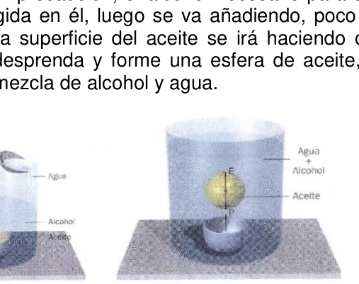
Topic: Magnetism Metodi: Experimental Data Analysis, Statistical Averaging Competenze: Physical Reasoning, Experimental Data Analysis Objects: Magnet, Magnetic Dipole Fonte: Testo (PDF) — p.3
PE30. Istituto di media educazione Dr. Arturo Oñativia
Collegio Belgrano
Istituto Santa Rosa di Viterbo
Instituto Padre Gabriel Tommasini
Istituto di istruzione integrale
Istituto Modello
Collegi del Cerro Città di Salta.
Determinazione del coefficiente di rottura statica utilizzando Magnete. 1 Introduzione Un magnete cilindrico permanente può essere rappresentato come un solenoide dal che circola un flusso elettrico chiuso e costante. Quindi, il magnete può essere Caratterizzato dal suo momento magnetico . La determinazione del Il momento magnetico di un materiale è generalmente realizzato con l’uso di Magnetometri, che sono apparecchiature il cui principio di funzionamento può essere molto variabile (da la semplice induzione magnetica in una bobina sensore, fino all’interferenza quantistica superconduttrice), che quasi sempre coinvolgono sofisticate apparecchiature elettroniche. In questa esperienza vedremo come misurare il momento magnetico di un magnete di in due modi diversi, usando materiali molto semplici. Finalmente lo faremo. uso della determinazione di tale magnitudine per ottenere il coefficiente di un’arricchimento statico tra il magnete e una superficie.
2 Materiali disponibili
OAF 2012 - 159 • Regola, compasso e trasportatore. • Papero bianco. • pelliccia sottile. • Tela e nastri. • Due magneti cilindrici identici.
2Sviluppo sperimentale 2.1 Attrattiva frontale tra i magneti Il modulo di forza esercitato da un magnete cilindrico Permanente momento magnetico su un secondo un magnete identico che si trova a una distanza da In primo luogo, lungo l’asse di simmetria del sistema (vedi La figura 1) è data dal rapporto:
Considerate ora una situazione come quella mostrata in La figura 2 mostra che il magnete di sotto è ostacolato da una regola plastica fissa. Con i materiali che ha a la sua disposizione, mettere in atto tale sistema. Poi, aumentare gradualmente la Distanza tra i magneti alzando il magnete La Commissione ha adottato una decisione che non modifica il punto di vista del Parlamento.
- Proprio così. Per un determinato valore di distanza , Il magnete numero due cadrà. La determinazione di tale Il valore di autorizzazione, mediante il rapporto (1) e il il rapporto di forza corrispondente, determinare il Valore del momento magnetico dei magneti. Fare 20 (venti) misurazioni del momento La capacità di calcolare il valore di una fonte di energia è di circa un milione di metri.
- la deviazione standard.
2.2 Attrattiva laterale tra i magneti
Il modulo di forza esercitato da un magnete di momento magnetico su un Seconda immagine identica che si trova a una distanza laterale dalla prima (vedi Figura 3) è data da:
Considerate ora la situazione delineata in Figura 4. Sul muro, si incolla un foglio di carta su cui si disegna una media radiocircumferenza . Inoltre, è stato costruito un pendolo formato da un filo inestensibile e un
- Non è cilindrico. Il pendolo ha come punto di sospensione il centro della
- Circumferenza e lunghezza . Si pone un secondo magnete sulla circonferenza, in modo che il suo centro sia contenuto in essa, in una posizione
OAF 2012 - 160 tale che la linea che collega il centro del magnete al centro della circonferenza forma un angolo con la verticale. Poi, si mette il pendolo in una posizione. che rimanga in equilibrio, sotto un angolo verticale. a) Dimostra che la distanza tra i magneti è data dal rapporto
b) Rilanciare le forze che agiscono sul pendolo e dimostrare, utilizzando il rapporto (2), che il momento magnetico dei magneti è dato:
dove è dato dal rapporto (3), è il valore dell’accelerazione di Gravità, massa dei magneti e parametro dipendente di angoli e:
Costruire il sistema di Fig. 4 mantenendo fissi e . Misurare l’ angolo Per i diversi valori dell’angolo. Relazioni (4) e (5),determinare diversi valori del momento magnetico dei Magnete per determinare la loro media e la loro varianza.
2.3 Determinazione del coefficiente di rottura statica tra un magnete e una superficie di carta. Il modulo di forza di respiro laterale tra i magneti è anche dato per il rapporto (2). Quando mettiamo i due magneti su una superficie La carta è orizzontale, in modo che interagiscono repulsivamente, avvicinandosi lentamente l’uno verso l’altro, esiste una distanza minima tra per cui l’immagine che è rimasto voglio è stato tolto dalla sua posizione di equilibrio. Considerando questo fatto, determinare il coefficiente di Raggiustamento statico tra il magnete e la superficie della carta, misurando la distanza . Usa anche la media del momento magnetico dei magneti La Commissione ha adottato una decisione che prevede che il Consiglio di sicurezza europeo non possa essere autorizzato a presentare proposte. Ripeti l’ esperimento dieci volte e determina la media e la variazione del coefficiente di rottura.
Topic: Magnetism Metodi: Experimental Data Analysis, Statistical Averaging Competenze: Physical Reasoning, Experimental Data Analysis Objects: Magnet, Magnetic Dipole Fonte: Testo (PDF) — p.3
PE30. The Institute of Middle Education Dr. Arturo Oñativia is a great writer.
Belgrano College
The Santa Rosa Institute of Viterbo
Father Gabriel Tommasini Institute is located in the city of
Institute of Comprehensive Education
Model Institute
College of the Hill . Salt City.
Determination of the static friction coefficient using The magnetic field. 1 Introduction to the text A permanent cylindrical magnet can be represented as a solenoid by the which circulates a closed and constant electric current. So, the magnet can be characterized by its magnetic momentum . The determination of the The magnetic moment of a material is usually achieved by using magnetometers, which are equipment whose principle of operation may be Very varied (from simple magnetic induction in a detector coil, to superconducting quantum interference), which almost always They involve sophisticated electronic equipment. In this experiment we’ll see how to measure the magnetic momentum of a magnet of Two different ways, using very simple materials. We ‘ll finally do it . use of the determination of this magnitude to obtain the coefficient of static friction between the magnet and a surface.
2 Materials Available
The following points shall be added: • Rules, compass and conveyor. • White paper. • Fine fur. • Scissors and tape. • Two identical cylindrical magnets.
2Experimental development 2.1 Frontal attraction between magnets The force module of a cylindrical magnet Permanent magnetic moment over a second An identical magnet located at a distance of First, along the system’s symmetry axis (see Figure 1) is given by the ratio:
Let us now consider a situation like that shown in Figure 2, which shows the magnet below It’s blocked by a fixed plastic rule. With the materials you have to The system is designed to be able to be used in the same way as the system. Then gradually increase the distance between the magnets lifting the magnet The Commission has also taken a number of measures to ensure that the I’m not. For a given value of distance , magnet number two will fall. The determination of the said The value of the permit, by the ratio (1) and The corresponding balance of forces, determine the The magnetic momentum of the magnets. Make 20 (twenty) measurements of the moment The magnetic field is the magnetic field and the magnetic field is the magnetic field. standard deviation.
2.2 Side attraction between magnets
The force module that a magnetic momentum exert on a magnet A second identical magnet located at a lateral distance from the first (see Figure 3) is given by:
Consider now the situation outlined in Figure 4. On the wall, You stick a sheet of paper on which you draw a radius of half a circle . In addition, a pendulum was built, made of an unextended thread and a It’s not cylindrical. The pendulum has as its point of suspension the centre of the It ‘s a long one . A second magnet is placed on the circumference, so that its center is contained in it, in a position
The following points shall be added: Such that the line connecting the center of the magnet to the center of the circumference It forms an angle with the vertical. Then, you put the pendulum in one position. so that it remains in equilibrium at an angle to the vertical. (a) Demonstrate that the distance between magnets is given by the relation
(b) To balance the forces acting on the pendulum magnet; and to demonstrate, by using the relation (2), that the magnetic momentum The magnets are given:
where is given by the ratio (3), is the acceleration value of gravity, mass of magnets and a dependent parameter of the angles and:
Build the system from Figure 4 , keeping fixed and . Measure the angle For different angles. The two main factors are the magnetic momentum of the magnetic moment. magnetic fields to determine their mean and variance.
2.3 Determination of the static friction coefficient between a magnet and a magnet a surface of paper. The modulus of lateral repulsion force between magnets is also given. by the ratio (2). When we put the two magnets on a surface The paper is made of horizontal paper, so that they interact repulsively, as they approach Slowly one of them towards the other, there is a minimum distance between They for which the magnet that remained I want is taken out of his position of The balance. In view of this, determine the coefficient of Static friction between the magnet and the paper surface, measuring the distance . Also use the magnetic momentum average of the magnets The Commission has also adopted a number of proposals for the Repeat the experiment ten times and determine the mean and variance of the coefficient of friction.
Topic: Magnetism Metodi: Experimental Data Analysis, Statistical Averaging Competenze: Physical Reasoning, Experimental Data Analysis Objects: Magnet, Magnetic Dipole Fonte: Testo (PDF) — p.3
PE31. EPET Nro. 4 Juan Agustín Larrús General Acha, La Pampa.
- Con los siguientes elementos determinar que tiempo tarda en calentar 2 litros de aguas a una temp. De 70 ºC.
OAF 2012 - 161
Materiales a utilizar
3 calentadores de agua eléctricos de distintas potencias
3 cubetas para agua. 1 de plástico, 1 de aluminio, y 1 hierro
1 Cronómetros
1 termómetro
-
Determinar el valor de la resistencia de los calentadores y la potencia de cada uno
Materiales a utilizar 1 multimetro -
determinar las perdidas al calentar el agua por la temp. Ambiente y el material de las cubetas
¿Cual de las cubetas será la que tiene menor perdida? -
si quisiéramos calentar 20 litros de agua en que cubeta nos conviene
¿Que tiempo tardaría en ocurrir eso? ¿Cual de los calentadores nos seria mas útil? y ¿que consumo en energía eléctrica tendríamos?
Topic: Thermodynamics, Circuits Metodi: Experimental Data Analysis, First Law of Thermodynamics Competenze: Physical Reasoning, Experimental Data Analysis Objects: Resistor, Container Fonte: Testo (PDF) — p.3
PE31. Il numero di EPET. 4 Juan Agustín Larrús Generale Acha, La Pampa.
- Con i seguenti elementi determinare quanto tempo ci vuole per riscaldare 2 litri
- Dalle acque a un tempo. De 70 ºC.
OAF 2012 - 161
Materiali da utilizzare 3 riscaldatori elettrici di diverse potenze Tre bacche d’acqua. 1 di plastica, 1 di alluminio e 1 di ferro 1 Cronometri 1 termometro
-
Determinare il valore della resistenza dei riscaldatori e la potenza di ciascun caldaio. Uno Materiali da utilizzare 1 multimetro
-
determinare le perdite per il riscaldamento dell’acqua a temp. Ambiente e materiale di cubicche Quale dei cubic è il più piccolo perduto?
-
Se volessimo riscaldare 20 litri di acqua in quel vaso che ci serve Quanto tempo ci vorrebbe per farlo? Quale dei caloriferenti ci sarebbe piaciuto di più? utile? e che consumo di energia elettrica avremmo?
Topic: Thermodynamics, Circuits Metodi: Experimental Data Analysis, First Law of Thermodynamics Competenze: Physical Reasoning, Experimental Data Analysis Objects: Resistor, Container Fonte: Testo (PDF) — p.3
PE31. The following information shall be provided: 4 Juan Agustín Larrús General Acha, the Pampa.
- With the following elements determine how long it takes to heat 2 liters of water at a time. De 70 ºC.
The following is the list of the countries of the European Union:
Materials to be used 3 electric water heaters of different power Three buckets of water. 1 plastic, 1 aluminum and 1 iron 1 Chronometer 1 thermometer
-
Determine the resistance value of the heaters and the power of each heaters. One . Materials to be used 1 multimeter
-
determine the losses by heating the water by temp. Environment and material of the buckets Which of the buckets will have the least loss?
-
If we wanted to heat 20 liters of water in which bucket we could use . How long would it take for that to happen? Which of the heaters would be more us? useful? And what electricity consumption would we have?
Topic: Thermodynamics, Circuits Metodi: Experimental Data Analysis, First Law of Thermodynamics Competenze: Physical Reasoning, Experimental Data Analysis Objects: Resistor, Container Fonte: Testo (PDF) — p.3
PE32. Instituto Politécnico Superior General San Martín Rosario, Santa Fe.
Determinación experimental de la resistencia de un material en función del largo y del ancho. Introducción teórica La intensidad de la corriente en los conductores, en general, depende de la intensidad del campo eléctrico. En la mayoría de los metales puros, la intensidad de corriente es directamente proporcional a la intensidad del campo. Se puede definir una propiedad del material llamada resistividad (ρ) que relaciona el campo eléctrico aplicado (E) con la corriente (I) por unidad de área transversal (A) (a la circulación) que se genera en un material.
La unidad de la resistividad, en el Sistema Internacional, resulta ser
El campo eléctrico en el interior del conductor establece una fuerza sobre cada portador de carga (generalmente electrones) y así se genera una circulación de cargas en el tiempo, lo que da origen a la corriente eléctrica. Este campo eléctrico puede ser generado por una diferencia de potencial que se establezca en el conductor tal como se muestra en la figura 1.
Figura 1
OAF 2012 - 162 Sea L la longitud de un trozo del conductor, podemos expresar el campo eléctrico en función de la diferencia de potencial aplicada y dicha longitud, ya que:
Δ
Donde Δ
Remplazando la expresión del campo eléctrico en la ecuación (1)
Δ
Δ
Podemos reordenar esta expresión de la siguiente manera:
Δ
La ecuación (4) expresa que la relación entre la diferencia de potencial que se aplica en un trozo de conductor y la corriente que se establece en el mismo depende de tres características específicas del mismo: la resistividad del material con el cual fue elaborado, el área transversal y su longitud. Esta relación es denominada Resistencia Eléctrica y se denota con la letra R. De este modo: Δ
Esta proporcionalidad directa entre la intensidad de la corriente en un conductor metálico (lineal) y la diferencia de potencial entre sus extremos se conoce con el nombre de Ley de Ohm. Las unidades de la resistencia eléctrica en el Sistema Internacional:
Desarrollo del Práctico En el presente trabajo práctico usaremos una tira de papel conductor el cual tendrá las siguientes dimensiones:
Primera Parte
Objetivo:
Determinación experimental de la relación existente entre la resistencia de un
conductor (R) y su área transversal (A)
Materiales: Fuente de tensión continua Área Transversal=A Espesor = H Longitud = L Ancho = W
OAF 2012 - 163 Papel resistivo Regla milimetrada Micrómetro Dos multímetros Cables
Protocolo de conexión y medición:
-
Se medirá indirectamente la resistencia de un trozo de papel resistivo de 30cm de longitud mediante Conexión Larga, conectando los instrumentos del siguiente modo:
-
Luego se irá reduciendo el ancho de la tira (para disminuir su área transversal) y se confeccionará la siguiente tabla:
Ancho (W) Área (A) Tensión (V) Corriente (I) Resistencia (R) 5cm
4cm
3cm
2cm
1cm
No propague ni cuantifique errores producidos en la medición de magnitudes eléctricas ni geométricas.
- Realice una gráfica Resistencia vs (1/Área)
- A partir de la gráfica obtenida, y mediante el criterio que mejor se adecue a la situación experimental, obtenga un valor de la resistividad del material y su correspondiente error.
Segunda Parte
Objetivo:
Determinación experimental de la relación existente entre la resistencia de un
conductor y su longitud.
Materiales: Fuente de tensión continua Papel resistivo Regla milimetrada Micrómetro Dos multímetros Cables
Protocolo de conexión y medición: A V
- ε
OAF 2012 - 164
-
Se medirá indirectamente la resistencia de un trozo de papel resistivo de 1cm de ancho mediante Conexión Larga, conectando los instrumentos del siguiente modo:
-
Luego se irá reduciendo el largo de la tira y se confeccionará la siguiente tabla:
Largo (W) Tensión (V) Corriente (I) Resistencia (R) 30 cm
25cm
20cm
15cm
10cm
No propague ni cuantifique errores producidos en la medición de magnitudes eléctricas ni geométricas
- Realice una gráfica Resistencia vs Longitud.
- A partir de la gráfica obtenida, y mediante el criterio que mejor se adecue a la situación experimental, obtenga un valor de la resistividad del material y su correspondiente error.
Conclusiones Elaborar una memoria del desarrollo del práctico incluyendo las siguientes cuestiones: Comparar los resultados obtenidos de resistividad para cada una de las experiencias anteriores. Identificar las fuentes de errores de cada una de las magnitudes medidas directa o indirectamente, teniendo en cuenta los instrumentos utilizados y los errores que podrían surgir en cada medición. Cuantifique el error producido en el Área (A) de la tira de papel, exprese el ΔA para una medición genérica y particularice para el primer dato de la tabla confeccionada en la primera parte del práctico, informando como sería el resultado de dicha medición indirecta ( ). Método utilizado para medir el espesor de la tira de papel (H) y error cometido.
Topic: Circuits Metodi: Experimental Data Analysis, Graph Linearization, Error Propagation Competenze: Physical Reasoning, Experimental Data Analysis Objects: Resistor Fonte: Testo (PDF) — p.3
PE32. Istituto Politetnico Superiore Generale San Martín Rosario, Santa Fe.
Determinazione sperimentale della resistenza di un materiale in funzione di lunghezza e larghezza. Introduzione teorica L’intensità del corrente nei conducenti, in generale, dipende dalla l’intensità del campo elettrico. Nella maggior parte dei metalli puri, l’intensità La velocità di corrente è direttamente proporzionale all’intensità del campo. Si può definire una proprietà del materiale chiamata resistività (ρ) che Relaziona il campo elettrico applicato (E) al corrente (I) per unità di area transversale (A) (a circolazione) generato in un materiale.
L’unità di resistività, nel Sistema Internazionale, si rivela essere
Il campo elettrico all’interno del conducente impone una forza su ogni Carriere di carica (generalmente elettroni) e così si genera una circolazione di cariche nel tempo, che danno origine al corrente elettrica. Questo campo L’energia elettrica può essere generata da una differenza di potenziale che si stabilisce sul conducente come mostrato in figura 1.
Figura 1
OAF 2012 - 162 Se L è la lunghezza di un pezzo del conduttore, possiamo esprimere il campo elettrico in funzione della differenza di potenziale applicata e di tale lunghezza, che:
Δ
Dove Δ Sostituendo l’espressione del campo elettrico nell’equazione (1)
Δ
Δ
Possiamo riordinare questa espressione come segue:
Δ
L’equazione (4) esprime che il rapporto tra la differenza di potenziale che si Applica in un pezzo di conduttore e il corrente che si stabilisce in esso La resistenza del materiale con cui è stato elaborato, l’area trasversale e la sua lunghezza. La relazione è denominata Resistenza Elettrica e viene indicata con la lettera R. De in questo modo: Δ
Questa diretta proporzionalità tra l’intensità del corrente in un conduttore La differenza di potenziale tra le loro estremità è nota con il Il nome è legge di Ohm. Le unità di resistenza elettrica nel Sistema Internazionale:
Sviluppo della pratica In questo lavoro pratico useremo una fascia di carta conduttrice che avrà le seguenti dimensioni:
Parte I Obiettivo: Determinazione sperimentale del rapporto esistente tra la resistenza di un il conducente (R) e la sua area trasversale (A)
Materiali: Fonte di tensione continua Area Trasversale = A Spessore = H L’esercizio di un’attività di lavoro Larghezza = W
OAF 2012 - 163 Papero resistente Regola di millimetro Micrometro • Due multimetro Cavi
Protocollo di connessione e di misurazione:
-
Indirectamente misurare la resistenza di un pezzo di carta resistente 30 cm di lunghezza con connessione lunga, collegando i strumenti del tipo seguente:
-
Poi si riduce la larghezza della striscia (per ridurre la sua superficie) transversale) e si compirà la seguente tabella:
Larghezza (W) Area (A) Tensione (V) Corrente (I) Resistenza (R) 5cm
4cm
3cm
2cm
1cm
Non diffondere né quantificare errori di misurazione di magnitudine elettrici e geometriche.
- Realizzare un grafico Resistenza vs (1/Area)
- La maggior parte dei dati sono stati utilizzati per la ricerca di un’unità di lavoro. Adatta alla situazione sperimentale, ottieni un valore di resistività Il materiale e il relativo errore.
Parte II Obiettivo: Determinazione sperimentale del rapporto esistente tra la resistenza di un il conducente e la sua lunghezza.
Materiali: Fonte di tensione continua Papero resistente Regola di millimetro Micrometro • Due multimetro Cavi
Protocollo di connessione e di misurazione: A V
- ε
OAF 2012 - 164
-
Indirectamente misurare la resistenza di un pezzo di carta resistente 1 cm di larghezza con collegamento lungo, collegando i strumenti del tipo seguente:
-
Poi si riduce la lunghezza della fascia e si confeziona la tabella seguente:
Largo (W) Tensione (V) Corrente (I) Resistenza (R) 30 cm
25cm
20cm
15cm
10cm
Non diffondere né quantificare errori di misurazione di magnitudine elettrici e geometrici
- Fate un grafico resistenza vs lunghezza.
- La maggior parte dei dati sono stati utilizzati per la ricerca di un’unità di lavoro. Adatta alla situazione sperimentale, ottieni un valore di resistività Il materiale e il relativo errore.
Conclusioni Preparare un memorandum di sviluppo del lavoro, includendo le seguenti: Questioni: confrontare i risultati ottenuti per ciascuna resistenza esperienze precedenti. Identificare le fonti di errore di ciascuna delle dimensioni misure dirette o indirette, tenendo conto degli strumenti I dati utilizzati e gli errori che potrebbero emergere in ogni misurazione. Calcolare l’errore nella zona (A) della striscia di carta, espresso il ΔA per una misurazione generica e particulare per il primo dato di La tabella di lavoro della prima parte del libro di lavoro, che indica come sarebbe risultato di tale misurazione indiretta (). Metodo utilizzato per misurare lo spessore della fascia di carta (H) e l’errore
- Commesso.
Topic: Circuits Metodi: Experimental Data Analysis, Graph Linearization, Error Propagation Competenze: Physical Reasoning, Experimental Data Analysis Objects: Resistor Fonte: Testo (PDF) — p.3
PE32. The French authorities have already confirmed that the Commission is not interested in the use of the information provided by the Commission. Rosario, Santa Fe.
Experimental determination of the resistance of a material by function the length and width. Theoretical introduction The intensity of current in conductors generally depends on the the intensity of the electric field. In most pure metals, the intensity The current is directly proportional to the intensity of the field. A property of the material called resistivity (ρ) can be defined as It relates the applied electric field (E) to the current (I) per unit area transverse (A) (to circulation) generated in a material.
The unit of resistance in the International System turns out to be
The electric field inside the driver establishes a force on each . The charge carrier (usually electrons) and thus generates a circulation of charges over time, which gives rise to electric current. This field . The electrical potential difference can be generated by a potential difference that is established in the driver as shown in Figure 1.
Figure 1
The following points shall be added: Whether L is the length of a piece of the conductor, we can express the field. Electrical power based on the difference in applied potential and the length of the current which:
Δ
Where Δ Replacing the expression of the electric field in equation (1)
Δ
Δ
We can rearrange this expression as follows:
Δ
The equation (4) expresses that the relationship between the potential difference that is It applies to a conductor and the current it sets in it The resistance of the material to the gas is determined by the three characteristics of the gas: the material with which it was made, the cross-sectional area and its length. This ratio is called Electrical Resistance and is denoted by the letter R. De This way: Δ
This direct proportionality between the current intensity in a conductor The difference in the potential between the metallic (linear) and the potential between the two extremes is known as the Ohm’s Law. The units of electrical resistance in the International System:
Development of the Practitioner In this practical work we will use a guide sheet which is shall have the following dimensions:
Part one The objective: Experimental determination of the relationship between the resistance of a driver (R) and its cross-sectional area (A)
Materials: Continuous voltage source Area Transversal = A The thickness = H Length = L Width = W
The following is the list of the Member States’ financial statements: Resistant paper Millimeter rule Micrometer Two multimeters Cables
Connection and measurement protocol:
-
The resistance of a piece of resistant paper will be indirectly measured. 30 cm long by Long Connection, connecting the instruments as follows:
-
Then you’ll be reducing the strip width (to reduce its area) transversal) and the following table shall be drawn up:
Width (W) Area (A) The following shall be added: Current (I) Resistance (R) 5cm
4cm
3cm
2cm
1cm
Do not propagate or quantify errors in the measurement of magnitude electrical or geometrical.
- Make a resistance vs. (1/Area) chart.
- The results of the analysis are based on the graph obtained and on the best possible criteria. The test results are based on the experimental situation, and the resistance value is given. the material and its corresponding error.
Part Two The objective: Experimental determination of the relationship between the resistance of a the driver and its length.
Materials: Continuous voltage source Resistant paper Millimeter rule Micrometer Two multimeters Cables
Connection and measurement protocol: A V
- ε
The following is the list of the Member States’ financial statements:
-
The resistance of a piece of resistant paper will be indirectly measured. 1 cm wide by Long Connection, connecting the instruments as follows:
-
Then the length of the strip will be reduced and the strip will be made. the following table:
Long (W) The following shall be added: Current (I) The following is the list of the types of vehicles used: 30 cm
25cm
20cm
15cm
10cm
Do not propagate or quantify errors in the measurement of magnitude Electrical or geometric
- Make a resistance vs. length chart.
- The results of the analysis are based on the graph obtained and on the best possible criteria. The test results are based on the experimental situation, and the resistance value is given. the material and its corresponding error.
Conclusions Develop a memoir of the development of the practice including the following: Questions: • Comparing the resistance results for each of the previous experience. Identify the sources of errors for each of the magnitudes measures, directly or indirectly, taking into account the instruments The following information is provided by the Commission in the form of a summary of the results of the measurements: Calculate the error in Area (A) of the paper strip, express the ΔA for a generic and particularized measurement for the first data of The table in the first part of the practical paper, stating the results of such indirect measurement (). Method used to measure the thickness of the strip of paper (H) and error I’m committed.
Topic: Circuits Metodi: Experimental Data Analysis, Graph Linearization, Error Propagation Competenze: Physical Reasoning, Experimental Data Analysis Objects: Resistor Fonte: Testo (PDF) — p.3
PE33. Escuela Industrial Superior Ciudad de Santa Fe.
Objetivos:
Determinar experimentalmente la velocidad inicial de un tiro horizontal
utilizando un proyectil.
Comparar la velocidad obtenida experimentalmente con resultados
teóricos obtenidos por otros métodos sin utilización de proyectil.
A
V
- ε
OAF 2012 - 165
Materiales: Rampa de lanzamiento. Esfera. Papel carbónico y papel común. Cinta métrica. Regla milimetrada. Cinta de papel.
Consigna 1: Instalar y sujetar con cinta de papel la rampa de lanzamiento sobre la mesa de trabajo, ubíquela estratégicamente de manera que luego pueda realizar mediciones sin demasiadas complicaciones. Utilizar la rampa, la esfera como proyectil y el resto de los materiales que crea convenientes para determinar la velocidad inicial de un tiro horizontal.
Consigna 2:
2.1. Determinar la velocidad calculada en la consigna 1, pero sin utilización del
proyectil.
2.2. Comparar los resultados y analizar las posibles causas.
Consigna 3: 3.1. Utilizando 2 rampas enfrentadas (en su parte inferior) determinar la pérdida de Energía potencial de un proyectil lanzado desde uno de los extremos más alto de la rampa. 3.2. Utilice este dato para reforzar y mejorar la consigna 2.2.
Consigna 4: Breve introducción: Cuando se tiene un cuerpo rígido como ser un cilindro, esfera, aro, etc. que rueda por un plano inclinado ocurre un movimiento roto-translacional, es decir que el cuerpo rota alrededor de un eje que pasa por su centro de masa y por otro lado el cuerpo se traslada, consideraremos para este caso que no hay deslizamiento del cuerpo sobre la superficie. Si bien existe rozamiento para que pueda rodar el cuerpo ésta fuerza no realiza trabajo. Por lo tanto en este tipo de movimiento, cuando se realiza el planteo energético aparece una “Energía Cinética Rotacional” que denominaremos ER = ICM 2, donde ICM es el momento de inercia del cuerpo rígido en [kg . m2] y es la velocidad angular de rotación en [rad/s]. Por lo tanto la variación de la energía mecánica será ahora la suma de: variación de energía cinética, variación de energía potencial (gravitatoria y elástica) y variación de energía rotacional. Podemos definir rápidamente al momento de inercia como la propiedad que tiene un cuerpo de permanecer en reposo o v=cte cuando gira sobre un eje rotacional, en este caso inercia rotacional. El momento de inercia entonces depende de la forma del cuerpo rígido que efectúa la rotación, así la siguiente tabla muestra valores para diferentes cuerpos:
Cuerpo Momento de Inercia ICM [kg . m2] Aro m.r2
Cilindro m.r2/ 2
OAF 2012 - 166
Esfera
2.m.r2/ 5
Siendo m=masa y r=radio.
Por otro lado sabemos que la relación que existe entre la velocidad tangencial y
la velocidad angular en rotación es: v = . r, de esta manera ya podemos
expresar nuestra energía rotacional en términos convenientes a nuestra práctica
experimental.
4.1. Teniendo en cuenta la descripción anterior y la energía rotacional, calcular
un nuevo valor de la velocidad inicial del tiro horizontal.
4.2. Compare este resultado con los obtenidos en las consignas 2.1 y 3.2.
Topic: Newtonian Mechanics, Rotational Dynamics Metodi: Experimental Data Analysis, Kinematic Equations, Energy Conservation Method Competenze: Physical Reasoning, Experimental Data Analysis Objects: Projectile, Sphere Fonte: Testo (PDF) — p.3
PE33. Scuola superiore industriale Città di Santa Fe.
Obiettivi: Determinare sperimentalmente la velocità iniziale di un tiro orizzontale usando un proiettile. confrontare la velocità ottenuta sperimentalmente con i risultati I risultati ottenuti con altri metodi non utilizzati per il proiettile. A V
- ε
OAF 2012 - 165
Materiali: • Rampaggio di lancio.
- Sfera. Carta carbonica e carta comune. • Cintura metrica. • Regola di millimetro. • Cappella di carta.
Consigna 1: Installare e appoggiare con cinta di carta il rampa di lancio sul tavolo di lavoro, lo realizzi strategicamente in modo che possa realizzare misurazioni senza troppe complicazioni. Utilizzare la rampa, la sfera come proiettile e il resto dei materiali che crea Le misure di cui al punto 1.2.1 sono state adottate per determinare la velocità iniziale di un tiro orizzontale.
Consigna 2: 2.1. Determinare la velocità calcolata in voce 1, ma senza utilizzare il proiettile. 2.2. Confrontare i risultati e analizzare le possibili cause.
Consigna 3: 3.1. Utilizzando 2 rampate in conflitto (in basso) per determinare la perdita Potenzialmente, un proiettile lanciato da una delle estremità più alto sul rallantamento. 3.2. Utilizza questo dato per rafforzare e migliorare la nota 2.2.
Consigna 4: Breve introduzione: Quando si ha un corpo rigido come un cilindro, una sfera, un anello, ecc. che Una ruota per un piano inclinato si verifica un movimento rotto-traslazionale, cioè che il corpo ruota attorno ad un asse che passa attraverso il suo centro di massa e per Se il corpo si sposta altrove, considereremo che non c’è. scivolamento del corpo sulla superficie. Mentre c’è un’arrestazione per questo Se il corpo può girare, questa forza non fa il lavoro. In questo tipo di movimento, quindi, quando si fa la messa a punto energetica si presenta una Rotational Kinetic Energy che chiameremo ER = ICM 2, dove ICM è il momento di inerzia del corpo rigido in [ kg . m2] y es la velocità angolare di rotazione in [rad/s]. La variazione dell’energia La meccanica sarà ora la somma di: variazione di energia cinetica, variazione di Potenza (gravità e elastica) e variazione di energia rotazionale. Possiamo definire rapidamente il momento di inerzia come la proprietà che ha un corpo di restare a riposo o v=cte quando si gira su un’asse rotazionale, in questo caso inerzia rotazionale. Il momento di inerzia dipende quindi dalla forma del corpo rigido che effettua la rotazione, così la seguente tabella mostra Valori per diversi organismi:
Corpo . Momento di inerzia ICM [ kg . m2]
- Sono io. m.r2
Cillico m.r2/ 2
OAF 2012 - 166 Sfera 2.m.r2/ 5 Essendo m = massa e r = radio. D’altra parte sappiamo che la relazione che esiste tra velocità tangenziale e velocità di velocità la velocità angolare in rotazione è: v = . R, in questo modo possiamo già Esprimere la nostra energia rotazionale in termini convenienti alla nostra pratica
- Esperienziale. 4.1. Considerando la descrizione precedente e l’energia rotazionale, calcolare un nuovo valore della velocità iniziale del tiro orizzontale. 4.2. Compare questo risultato con quelli ottenuti nelle voci 2.1 e 3.2.
Topic: Newtonian Mechanics, Rotational Dynamics Metodi: Experimental Data Analysis, Kinematic Equations, Energy Conservation Method Competenze: Physical Reasoning, Experimental Data Analysis Objects: Projectile, Sphere Fonte: Testo (PDF) — p.3
PE33. Higher Industrial School City of Santa Fe.
Objectives: Experimentally determine the initial speed of a horizontal shot using a projectile. Comparing experimental speed with results Theoretical results obtained by other methods without the use of projectiles. A V
- ε
The following is the list of the countries of the European Union:
Materials: • Launching ramp.
- The sphere. • Carbon paper and common paper. • Metric tape. • Millimeter rule. • Paper tape.
Consigns 1: Install and hold the launch ramp on the table with paper tape. I’m working, strategically doing it so I can do it later. measurements without too many complications. Use the ramp, the sphere as a projectile and the rest of the materials you create. suitable for determining the initial velocity of a horizontal shot.
Consigna 2: 2.1. Determine the speed calculated in heading 1, but without using the The projectile. 2.2. Compare the results and analyze the possible causes.
Consigna 3: 3.1. Using 2 facing ramps (at the bottom) determine the loss The potential energy of a projectile fired from one of the most extreme points High off the ramp. 3.2. Use this data to reinforce and improve the 2.2.
Consigns 4: Short introduction: When you have a rigid body like being a cylinder, sphere, ring, etc. That The wheel is tilted on a plane and there is a break-translational motion, i.e. The body rotates around an axis that passes through its center of mass and through it. Otherwise the body moves, we’ll consider for this case that there is no body sliding over the surface. While there is a rubbing to it I can rotate the body. This force does no work. Therefore, in this type of movement, when energy is applied It’s a rotational kinetic energy we’ll call ER = ICM 2, where ICM is the moment of inertia of the rigid body in [ kg . m2] y es la The speed of rotation shall be measured in [rad/s]. Therefore the variation in energy The sum of the following is now: kinetic energy variation, The potential energy (gravitational and elastic) and rotational energy variation. We can quickly define moment of inertia as the property that it has. a body to remain at rest or v=cte when rotating on a rotating axis, In this case, rotational inertia. The moment of inertia then depends on the The shape of the rigid body that makes the rotation, so the following table shows values for different bodies:
Body . The moment of inertia of the ICM [ kg . m2] I ‘m sorry . m.r2
Cylinder m.r2/ 2
The following is the list of the Member States’ financial statements: Sphere 2.m.r2/ 5 So m is mass and r is radio. On the other hand , we know that the relationship between tangential velocity and The angular rotational speed is: v = . R, this way we can already express our rotational energy in terms convenient to our practice It’s experimental. 4.1. Taking into account the above description and the rotational energy, calculate a new value of the initial horizontal shot speed. 4.2. Compare this result with the results obtained in sections 2.1 and 3.2.
Topic: Newtonian Mechanics, Rotational Dynamics Metodi: Experimental Data Analysis, Kinematic Equations, Energy Conservation Method Competenze: Physical Reasoning, Experimental Data Analysis Objects: Projectile, Sphere Fonte: Testo (PDF) — p.3
PE34. Colegio del Sol San Miguel de Tucumán.
Objetivo:
- Medir la densidad de una esfera de aceite de oliva.
Materiales:
- Un recipiente de vidrio grande
- Una cápsula de porcelana chica
- Alcohol
- Aceite de oliva
- Agua
- Papel milimetrado
- Pipeta
- balanza
Procedimiento: Se llena la cápsula de aceite de oliva y se coloca en el fondo del recipiente. En este último se coloca, con precaución, el alcohol necesario para que la cápsula quede totalmente sumergida en él, luego se va añadiendo, poco a poco, agua por la pared del vaso. La superficie del aceite se irá haciendo cada vez más convexa, hasta que se desprenda y forme una esfera de aceite, que quedará suspendida dentro de la mezcla de alcohol y agua.
NOTA: se puede aumentar el volumen de la gota inyectando más aceite con la pipeta.
Se Pide:
a) Medir la masa y el volumen del aceite que se va a colocar en la cápsula
de porcelana.
b) Elabore una estrategia de trabajo para medir los volúmenes y masas de
alcohol y agua introducidos en el recipiente.
c) Calcule la densidad del aceite de oliva con los datos obtenidos en a),
su error y acotar.
OAF 2012 - 167 d) Calcule el valor de la densidad del aceite usando los datos del apartado b), su error y acotar e) Compare los resultados obtenidos en c) y d) y explique. Redacte un informe con sus conclusiones.
Topic: Fluid Mechanics Metodi: Experimental Data Analysis, Hydrostatic Equilibrium, Error Propagation Competenze: Physical Reasoning, Experimental Data Analysis Objects: Droplet, Container Fonte: Testo (PDF) — p.3
PE34. La scuola del sole San Michele di Tucumán.
Obiettivo:
- Misurare la densità di una sfera di olio d’oliva.
Materiali:
- Un vascello grande .
- Una capsula di porcellana piccola .
- Alcol.
- Olio d’oliva .
- Acqua .
- Papero millimetrico .
- Pipetta
- Sbalzo
Procedura: Si riempie la capsula di olio d’oliva e si colloca sul fondo del recipiente. En L’alcol necessario per far salire la capsula si immerge completamente in esso, poi si aggiunge, poco a poco, acqua.
- Per il muro del bicchiere. La superficie dell’olio si farà sempre più. convexa, finché non si spoglia e forma una sfera di olio, che rimarrà sospeso all’interno del mix di alcol e acqua.
NOTA: si può aumentare il volume della goccia inieggendo più olio con la
- La pipetta.
Si chiede: a) Misurare la massa e il volume dell’ olio da inserire nella capsula di porcellana. b) elaborare una strategia di lavoro per misurare i volumi e le masse di Alcol e acqua introdotti nel recipiente. (c) Calcolare la densità dell’olio d’oliva con i dati ottenuti in (a) il suo errore e abbassare.
OAF 2012 - 167 d) Calcolare il valore della densità dell’olio utilizzando i dati di cui al paragrafo b) il suo errore e il suo accorcio e) Compare i risultati ottenuti in (c) e (d) e spiegare. Scrivi un rapporto con le tue conclusioni.
Topic: Fluid Mechanics Metodi: Experimental Data Analysis, Hydrostatic Equilibrium, Error Propagation Competenze: Physical Reasoning, Experimental Data Analysis Objects: Droplet, Container Fonte: Testo (PDF) — p.3
PE34. College of the Sun St. Michael of Tucumán.
The objective:
- Measure the density of an olive oil sphere.
Materials:
- A large glass container .
- A little porcelain capsule .
- Alcohol .
- Olive oil .
- Water .
- Millimeter paper .
- Pipeta .
- the balance
The procedure: The capsule is filled with olive oil and placed at the bottom of the container. En The latter is placed, with caution, the alcohol needed to make the capsule It’s completely submerged in it, then it’s added, little by little, water. through the glass wall. The oil surface will become increasingly . It’s convex until it shrinks and forms an oil sphere, which will stay. Suspended within the alcohol and water mixture.
NOTE: You can increase the volume of the droplet by injecting more oil with the I’m not going to lie.
It is asked: (a) Measure the mass and volume of oil to be placed in the capsule
- It’s a porcelain. (b) Develop a working strategy for measuring the volumes and masses of alcohol and water introduced into the container. (c) Calculate the olive oil density with the data obtained in (a) his mistake and shorten.
The following is the list of the countries of the European Union: (d) Calculate the oil density value using the data in paragraph (b) its error and shortening (e) Compare the results obtained in (c) and (d) and explain. Write a report with your findings.
Topic: Fluid Mechanics Metodi: Experimental Data Analysis, Hydrostatic Equilibrium, Error Propagation Competenze: Physical Reasoning, Experimental Data Analysis Objects: Droplet, Container Fonte: Testo (PDF) — p.3
PE35. Colegio Gobernador Juan José Silva Ciudad de Formosa.
Experimento de Oersted.
Objetivo:
Teoria: Una corriente eléctrica crea a su alrededor un campo magnético que se
puede poner de manifiesto con una aguja imanada.
Materiales: aguja magnética con limbo graduado, base aislada, borne aislado,
completar……
Procedimiento:
a) Armar el montaje apropiado, y el cable debe estar conectado a 12 v.
b) Montar la aguja imantada sobre la base aislada
c) Girar el limbo hasta señale 0 – 180 °, coincidente con los polos
geográficos.
d)
Conclusiones:
Esquema:
Topic: Magnetism, Electromagnetism Metodi: Experimental Data Analysis Competenze: Physical Reasoning, Experimental Data Analysis Objects: Wire, Magnet Fonte: Testo (PDF) — p.3
PE35. Colegio Governatore Juan José Silva Città di Formosa.
L’esperimento di Oersted. Obiettivo: Teoria: un corrente elettrica crea intorno a sé un campo magnetico che si può essere manifestato con un ago magnetico. Materiali: agghia magnetica con limbo graduato, base isolata, borno isolato, completare…… Procedura: a) Si deve montare il montaggio appropriato e il cavo deve essere connesso a 12 volt. b) Montare la ago magnetica sulla base isolata c) Rotare il limbo fino a 0 180 °, coincidente con i poli
- Geografici.
d)
Conclusioni: Schema:
Topic: Magnetism, Electromagnetism Metodi: Experimental Data Analysis Competenze: Physical Reasoning, Experimental Data Analysis Objects: Wire, Magnet Fonte: Testo (PDF) — p.3
PE35. College Governor Juan José Silva The city of Formosa.
The experiment by Oersted.
The objective:
Theory: An electric current creates a magnetic field around it that is
You can make it manifest with a magnetic needle.
Materials: magnetic needle with graduated limbo, insulated base, insulated bore,
The following information shall be provided:
The procedure:
(a) Set up the appropriate assembly, and the cable shall be connected to 12 V.
(b) Mount the magnetic needle on the isolated base
(c) Turn the limbo to 0 180 °, matching the poles
The geographical area.
d)
Conclusions:
Schedule:
Topic: Magnetism, Electromagnetism Metodi: Experimental Data Analysis Competenze: Physical Reasoning, Experimental Data Analysis Objects: Wire, Magnet Fonte: Testo (PDF) — p.3
PE36. Escuela Normal Juan Bautista Alberdi San Miguel de Tucumán.
Objetivo: Medición de Voltajes y Corrientes
1- Construya un circuito en serie y mida los voltajes en las tres resistencias
(como figura 1)
2- Mida la corriente que circula por el circuito.
3- Calcule la potencia que esta entregando la fuente (usando las
mediciones de los puntos anteriores) .
4- Construya un circuito (como figura 2) y mida las caídas de potencial en
las dos resistencias
5- Mida i, i1,i2
6- Calcule D = i –( i1 + i2) con su error experimental
Elementos provistos
2 multímetros digitales
1 fuente de Voltaje de 12 V 60 W
4 portapilas
4 resistencias de distintos valores
Hilos conductores
OAF 2012 - 168
Topic: Circuits Metodi: Experimental Data Analysis, Kirchhoff’s Laws Competenze: Physical Reasoning, Experimental Data Analysis Objects: Resistor, Battery Fonte: Testo (PDF) — p.3
PE36. Scuola Normale Juan Bautista Alberdi San Michele di Tucumán.
Obiettivo: Misura di Voltaggi e Correnti
1- Costruire un circuito in serie e misurare le tensioni nelle tre resistenze (come figura 1) 2- Misura il corrente che circola nel circuito. 3- Calcolare la potenza che viene fornita dalla fonte (usando le (cfr. le misure dei punti precedenti). 4- Costruire un circuito (come figura 2) e misurare le cascate di potenziale in Le due resistenze 5- Mida i, i1, i2 6- Calcola D = i ( i1 + i2) con il suo errore sperimentale
Elementi forniti 2 multimetro digitali 1 fonte di tensione di 12 V 60 W 4 portapiè 4 resistenze di valori diversi Fonti di conduttore
OAF 2012 - 168
Topic: Circuits Metodi: Experimental Data Analysis, Kirchhoff’s Laws Competenze: Physical Reasoning, Experimental Data Analysis Objects: Resistor, Battery Fonte: Testo (PDF) — p.3
PE36. The school is called the “School of the Holy Cross”. St. Michael of Tucumán.
Objective: Measurement of voltages and currents
1- Build a series circuit and measure the voltages at the three resistors (as shown in Figure 1) 2- Measure the current circulating through the circuit. 3- Calculate the power being delivered by the source (using the (a) the measurements of the above points . 4- Build a circuit (as in Figure 2) and measure potential drops in The two resistance . 5- Measures i, i1, i2 6- Calculate D = i (i1 + i2) with your experimental error
Elements provided 2 digital multimeters 1 voltage source of 12 V 60 W 4 portables 4 resistance of different values The following table summarizes the results of the calculations:
The following is the list of the Member States’ financial statements:
Topic: Circuits Metodi: Experimental Data Analysis, Kirchhoff’s Laws Competenze: Physical Reasoning, Experimental Data Analysis Objects: Resistor, Battery Fonte: Testo (PDF) — p.3
PE37. Escuela Hipólito Yrigoyen Ciudad de Buenos Aires.
Determinación de la distancia focal de una lente convergente.
Elementos utilizados:
Lente convergente
Lámina translúcida
Pantalla
Regla
Laser o linterna
Introducción: Para obtener la distancia focal en lentes delgadas, se aplica la fórmula de Descartes:
Donde : x es la distancia objeto- lente x’ es la distancia imagen- lente f es la distancia focal
En el centro óptico de la lente se coloca un par de ejes cartesianos x e y, resultando que si la imagen es real, se forma detrás de la lente, resultando x’ negativa y la imagen se recoge en una pantalla. En cambio si la imagen es virtual, se forma delante de la lente, resultando x’ positivo.
Procedimiento: Se disponen los elementos como muestra la figura.
a) Para diferentes posiciones del objeto x (lámina translúcida), se obtienen distintas posiciones de la imagen x’ (pantalla),: Hacer 5 mediciones: para x= 30cm, 35cm, 40cm, 45cm y 50cm. Confeccionar una tabla con los valores de x, x’ y f(calculada) . b) Importante: Determinar el error cometido en cada caso, teniendo en cuenta la apreciación de la regla y la indeterminación producida al mover la pantalla y ver la imagen con nitidez.
Topic: Geometric Optics Metodi: Experimental Data Analysis, Thin Lens & Mirror Equation, Error Propagation Competenze: Physical Reasoning, Experimental Data Analysis Objects: Lens, Screen Fonte: Testo (PDF) — p.3
PE37. Scuola Hippollito Yrigoyen Città di Buenos Aires.
Determinazione della distanza focale di una lente convergente.
Elementi utilizzati: Lente convergente Lamma translucente Scattoli Regola Laser o lampada
Introduzione: Per ottenere la distanza focale in lenti sottili, si applica formula di Descartes:
Dove: x è la distanza dell’oggetto-lente x è la distanza immagine-lente f è la distanza focale
Nel centro ottico della lente si collocano una coppia di assi cartesiani x e y, Risulta che se l’immagine è reale, si forma dietro la lente, risultando x Negativo e l’immagine viene raccolta su uno schermo. Ma se l’immagine è virtuale, si forma davanti alla lente, risultando x positivo.
Procedura: Gli elementi sono disposti come illustrato nella figura.
a) Per diverse posizioni dell’oggetto x (lamina translucida), si ottengono posizioni diverse dell’immagine x (screen),: Fare 5 misure: per x= 30cm, 35cm, 40cm, 45cm e 50cm. Confezionare una tabella con i valori di x, x e f(calcolato). b) Importante: determinare l’errore commesso in ogni caso, tenendo conto di La valutazione della regola e l’indeterminazione risultanti dal spostare lo schermo e vedere l’immagine con chiarezza.
Topic: Geometric Optics Metodi: Experimental Data Analysis, Thin Lens & Mirror Equation, Error Propagation Competenze: Physical Reasoning, Experimental Data Analysis Objects: Lens, Screen Fonte: Testo (PDF) — p.3
PE37. Hippolytus Yrigoyen School City of Buenos Aires.
Determination of the focal length of a converging lens.
Elements used: Converging lens Translucent foam Screen Rule Laser or flashlight
Introduction: To obtain the focal length in thin lenses, the following is applied: The Descartes formula:
Where: x is the distance of the object-lens x is the distance of the image-lens f is the focal length
In the optical center of the lens a pair of Cartesian axes x e y is placed, So if the image is real, it forms behind the lens, resulting in x negative and the image is captured on a screen. But if the image is virtual, is formed in front of the lens, resulting in x positive.
Procedure: The items are arranged as shown in the figure.
(a) For different positions of the object x (translucent sheet), they are obtained different positions of the image x (screen),: 5 measurements: For x = 30cm, 35cm, 40cm, 45cm and 50cm. Make a table with the values of x, x and f ((calculated). (b) Important: Determine the error made in each case, having in mind the The Commission considers that the assessment of the rule and the uncertainty produced by the Move the screen and see the image sharply.
Topic: Geometric Optics Metodi: Experimental Data Analysis, Thin Lens & Mirror Equation, Error Propagation Competenze: Physical Reasoning, Experimental Data Analysis Objects: Lens, Screen Fonte: Testo (PDF) — p.3
PE38. Escuela Técnica ORT – Sede Almagro Ciudad de Buenos Aires.
Objetivo: analizar el campo magnetico generado por una bobina y un iman.
Para una iman y una bobina el campo magnetico generado son similares bajo ciertas aproximaciones. Para analizarlos utilizaremos un sensor de efecto hall. Este sensor entrega a su slida niveles de tension proporcionales al campo magnetico que esta recibiendo.
Lista de materiales
- 1 bobina
- 1 iman
- 2 multimetros digitales.
- 1 fuente de tension
- Cables cocodrilo-cocodrilo.
- Hojas de papel milimetrado.
- sensor hall
OAF 2012 - 169 Parte 1: Dependecia del campo magnetico de una bobina con respecto a su eje central. El campo magnetico para una bobina sobre su eje central puede apriximarse por la siguiente ecuacion. B(z) = μ0.I.N / 2.z3 Siempre y cuando la distancia Z al a la bobina sea mucho mayor que el radio de la bobina. I es la corriente que cicula por la bobina y N el numero de vueltas de la bobina.
a. Conecte la bobina a la fuente de tension con un amperimetro en serie como indica la figura 1.
Figura 6
b. Conecte el sensor hall al voltimetro. c. Coloque el sensor hall enfrentado al eje central de la bobina a la distancia que considere necesaria. d. Mida (sin sacar el sensor del eje central de la bobina) para distintas distancias, del sensor a la bobina, la tension que indica el voltimetro. e. construya una tabla con los respectivos errores donde conste la tension medida del sensor hall y la distancia del sensor a la bobina. f. Convierta los valores medidos de tension en el sensor a niveles de campo magentico (2.5 G/mV ) g. Construya un grafico de campo magnetico en funcion de 1/z3. Marque las pendientes maxima minima y media, para el rango donde valga la aporximacion del campo para una bobina. h. Del grafico obtenga un valor para μ0 y estime su error.
Parte 2: Momento dipolar de un iman
Para un iman sobre su eje central el campo magnetico puede aproximarse por
B(z) = μ0.mb/ 2.z3 Siempre y cuando la distancia Z al imana sea mucho mayor
que el radio del iman. Done mb es el momento dipolar del iman.
a. Conecte el sensor hall al voltimetro.
b. Coloque el sensor hall enfrentado al eje central del iman a la distancia
que considere necesaria.
c. Mida (sin sacar el sensor del eje central del iman) para distintas
distancias , del sensor al iman, la tension que indica el voltimetro.
d. construya una tabla con los respectivos errores donde conste la tension
medida del sensor hall y la distancia del sensor al iman.
e. Convierta los valores medidos de tension en el sensor a niveles de
campo magentico (2.5 G/mV )
f. Construya un grafico de campo magnetico en funcion de 1/z3. Marque
las pendientes maxima minima y media, para el rango donde valga la
aporximacion del campo para una bobina.
g. Del grafico obtenga un valor para el momento dipolar del iman y estime
su error.
OAF 2012 - 170 Parte 3: Realización de un informe. Escriba un informe de la experiencia realizada que posea la siguiente información: • Título • Introducción (breve) • Descripción del dispositivo experimental (texto y dibujo) • Detalles acerca de cómo se realizaron las mediciones (texto y dibujo) • Mediciones / Tablas • Gráficos (En hoja milimetrada) • Cálculos • Cálculos de errores • Resultados obtenidos • Comentarios finales • Conclusiones
Topic: Magnetism, Electromagnetism Metodi: Experimental Data Analysis, Graph Linearization Competenze: Physical Reasoning, Experimental Data Analysis Objects: Coil, Magnet Fonte: Testo (PDF) — p.3
PE38. Scuola tecnica ORT Sede Almagro Città di Buenos Aires.
Obiettivo: analizzare il campo magnetico generato da una bobina e da un magnete.
Per un magnete e una bobina il campo magnetico generato sono simili sotto
- Ci sono alcuni approcci. Per analizzarli, useremo un sensore di effetto hall. Questo sensore fornisce al suo scivolo livelli di tensione proporzionati al campo. magnetico che sta ricevendo.
Lista dei materiali
- 1 bobina
- Un magnete .
- Due multimetri digitali.
- 1 sorgente di tensione
- Cable coccodrillo-coccodrillo.
- Foli di carta millimetrica.
- SENSORIA DELLE ARTE
OAF 2012 - 169 Parte 1: Dipendenza del campo magnetico di una bobina rispetto alla sua L’asse centrale. Il campo magnetico di una bobina sul suo asse centrale può essere accostato da la seguente equazione. B(z) = μ0.I.N / 2.z3 Finché la distanza Z al a la bobina è molto più grande del raggio della bobina. I è il corrente che cicla per la bobina e N il numero di giri della bobina.
a. Collegare la bobina alla fonte di tensione con un amperometro in serie come indicato nella figura 1.
Figura 6
b. Collegare il sensore del hall al voltometro. c. Posizionare il sensore hall rivolto all’asse centrale della bobina alla distanza che ritiene necessaria. d. Misura (senza togliere il sensore dall’asse centrale della bobina) per diverse Distanze, dal sensore alla bobina, la tensione indicata dal voltimetro. e. costruire un tabella con i rispettivi errori dove si constata la tensione misura del sensore hall e la distanza del sensore dalla bobina. f. Convertire i valori di tensione misurati sul sensore a livelli di campo magnesio (2,5 G/mV) g. Costruisci un grafico di campo magnetico a funzione di 1/z3. Marchio le pendenti massime minime e medie, per il raggio in cui vale la Apporximazione del campo per una bobina. h. Prendi dal grafico un valore per μ0 e stima il tuo errore.
Parte 2: Momento di un magnete Per un magnete sul suo asse centrale il campo magnetico può avvicinarsi per B (z) = μ0.mb/ 2.z3 Se la distanza Z dal magnete è molto maggiore che il raggio del magnete. Don mb è il momento dipolare del magnete.
a. Collegare il sensore del hall al voltometro. b. Metti il sensore hall in direzione verso l’asse centrale del magnete. che ritiene necessario. c. Mida (senza togliere il sensore dall’asse centrale del magnete) per diverse Distanze, dal sensore al magnete, la tensione indicata dal voltímetro. d. costruire un tabella con i rispettivi errori dove si constata la tensione misura del sensore hall e la distanza del sensore dal magnete. e. Convertire i valori di tensione misurati sul sensore a livelli di campo magnesio (2,5 G/mV) f. Costruisci un grafico di campo magnetico a funzione di 1/z3. Marchio le pendenti massime minime e medie, per il raggio in cui vale la Apporximazione del campo per una bobina. g. Prendi dal grafico un valore per il momento dipolar del magnete e stima il suo errore.
OAF 2012 - 170 Parte 3: Realizzazione di un rapporto. Scrivi un rapporto sull’esperienza che hai avuto: Informazioni: • Titolo • Introduzione (breve) • Descrizione del dispositivo sperimentale (testo e disegno) • Dettagli su come le misure sono state effettuate (testo e disegno) • Misure / tabelle • Grafica (in foglio in millimetri) • Calcoli • Calcoli di errori • Risultati ottenuti • Commenti conclusivi • Conclusioni
Topic: Magnetism, Electromagnetism Metodi: Experimental Data Analysis, Graph Linearization Competenze: Physical Reasoning, Experimental Data Analysis Objects: Coil, Magnet Fonte: Testo (PDF) — p.3
PE38. ORT Technical School Headquarters Almagro City of Buenos Aires.
Objective: to analyse the magnetic field generated by a coil and magnet.
For a magnet and a coil the magnetic field generated are similar below The Commission has already taken a number of measures. We’ll use a hall effect sensor to analyze them. This sensor delivers to your slide levels of voltage proportional to the field magnetic that you’re receiving.
List of materials
- One coil .
- One magnet .
- Two digital multimeters.
- One power source
- Cockroach-cockroach wires.
- It’s a sheet of millimeter paper.
- sensor hall .
The following is the list of the countries of the European Union: Part 1: Dependence of the magnetic field of a coil with respect to its the central axis. The magnetic field for a coil over its central axis can be approximated by The next equation. B(z) = μ0.I.N / 2.z3 As long as the distance Z to the coil is much larger than the radius of the coil. I ‘m the current that ‘s cycling . by the coil and N the number of turns of the coil.
a. Connect the coil to the voltage source with a serial amp. as shown in Figure 1.
Figure 6
b. Connect the sensor hall to the voltmeter. c. Place the sensor hall facing the central coil axis to the distance as you deem necessary. d. Measure (without removing the sensor from the centre axis of the coil) for different the distance from the sensor to the coil, the voltage indicated by the voltmeter. e. construct a table with the respective errors where the tension is measurement of the sensor hall and sensor distance to the coil. f. Convert the measured voltage values on the sensor to levels of Magnetic field (2.5 G/mV) g. Build a magnetic field graph functioning at 1/z3. Mark it . the minimum and average maximum slopes, for the range where the value is The field is approximated for a coil. h. Get a value for μ0 from the graph and estimate your error.
Part 2: The dipole moment of a magnet For a magnet on its central axis the magnetic field can approximate by B(z) = μ0.mb/ 2.z3 As long as the distance Z to the magnet is much greater than the magnetic radius. Done mb is the dipole moment of the magnet.
a. Connect the sensor hall to the voltmeter. b. Place the sensor hall facing the magnet ‘s central axis at a distance . which he considers necessary. c. Measurement (without removing the sensor from the centre axis of the magnet) for different Distances from the sensor to the magnet, voltage indicated by the voltmeter. d. construct a table with the respective errors where the tension is measurement of the sensor hall and the sensor distance to the magnet. e. Convert the measured voltage values on the sensor to levels of Magnetic field (2.5 G/mV) f. Build a magnetic field graph functioning at 1/z3. Mark it . the minimum and average maximum slopes, for the range where the value is The field is approximated for a coil. g. From the graph, get a value for the dipole moment of the magnet and estimate It’s your mistake.
The following points shall be added: Part 3: Preparation of a report. Write a report of the experience you have gained from the following: The following information: • Title • Introduction (short) • Description of the experimental device (text and drawing) • Details of how the measurements were made (text and drawing) • Measurements / Tables • Graphics (in millimetre sheet) • Calculations • Error calculations • Results obtained • Final comments • Conclusions
Topic: Magnetism, Electromagnetism Metodi: Experimental Data Analysis, Graph Linearization Competenze: Physical Reasoning, Experimental Data Analysis Objects: Coil, Magnet Fonte: Testo (PDF) — p.3
PE39. Instituto Leonardo Sworn Ciudad de Buenos Aires.
Objetivos:
Determinación del equivalente en agua del calorímetro y del calor especifico de
un sólido problema.
Fundamento: El calor específico de un cuerpo se define como el calor necesario para elevar en 1 ºC la temperatura de la unidad de masa del mismo Cuando un cuerpo de masa m inicialmente a una temperatura tB absorbe energía en forma de calor, su temperatura se incrementa hasta el valor tA. De acuerdo con la definición de calor específico, el calor absorbido Q está relacionado con el incremento de temperatura del modo siguiente:
Q = m c (tA - tB ) (1)
donde c es el calor específico. Si el cuerpo disminuyese su temperatura en lugar de aumentarla (tA<tB), el calor tendría signo negativo, y el cuerpo cedería energía en lugar de absorberla. Para la determinación de calores específicos se emplea el denominado método de las mezclas: consiste en mezclar dos cuerpos a diferentes temperaturas (por ejemplo, mezclar dos líquidos, o sumergir un sólido en un líquido) y medir la temperatura de equilibrio t. Si la temperatura del cuerpo inicialmente más caliente era tA y la del más frío era tB, el balance de energía cuando se ha alcanzado el equilibrio térmico nos da:
m1 c1 (t - tB) + m2 c2 (t- tA) =0 (2)
Si se miden las masas de los cuerpos que intervienen y las temperaturas tA, tB, y la de equilibrio t, conocido uno de los calores específicos puede determinarse el otro. En la práctica la mezcla se hace en un recipiente, que recibe el nombre de calorímetro, dotado de termómetro y agitador. Este recipiente junto con su equipo, que inicialmente está a la temperatura más baja, también absorbe parte del calor que cede el cuerpo más caliente. Suele denominarse equivalente en agua del calorímetro a una cantidad K que desempeña para este aparato el mismo papel que el producto m.c de la ecuación (1). La ecuación (2) debe
OAF 2012 - 171 modificarse para tener en cuenta el equivalente en agua del calorímetro del modo siguiente:
m1 c1 (t - tB) + K(t - tB ) +m2 c2 (t – tA) =0 (3)
Conociendo el valor de K, se deduce el calor específico del solido problema.
Consigna 1 Determinar la constante o equivalente en agua del calorímetro. Realizar adecuadamente las medidas de masa y temperaturas que se necesitan. Tomar la temperatura de equilibrio (con su error). Realizar los cálculos para determinar K del agua. Elementos que pueden resultar de utilidad: Calorímetro 2 Termómetro 2 Vaso de precipitados Agua destilada. Varilla agitadora Poxilina, para fijar el termómetro a la tapa del calorímetro. Mechero Trípode Balanza electrónica.
Consigna 2 Determinar el calor específico de un sólido problema. Elementos que pueden resultar de utilidad: Idem anterior. Sólido problema Hilo de algodón o piolín.
Realizar adecuadamente las medidas de masa y temperaturas que se necesitan. Suspender el sólido mediante un hilo dentro de un baño de agua hirviendo, cuidando que no haya ningún contacto con las paredes ni el fondo del recipiente (pues en este caso el sólido alcanza fácilmente temperaturas superiores a la de ebullición del agua).Dejar el sólido dentro del baño cuatro o cinco minutos. Una vez transcurridos cinco minutos se extrae el sólido del baño de agua hirviente (PRECAUCIÓN: LA OPERACIÓN HA DE HACERSE CON RAPIDEZ PERO CON CUIDADO PARA EVITAR QUEMADURAS) Tomar la temperatura de equilibrio (con su error). Realizar los cálculos para determinar el calor específico del aluminio.
Requerimientos: Al finalizar la experiencia debe entregar un informe que conste de: Planteo del problema. Valores obtenidos en mediciones, tablas, etc Fuentes de error. Resultado experimental obtenido. Conclusiones Comentarios que desee realizar referidos a dificultades relacionadas con la realización de la experiencia.
OAF 2012 - 172
Topic: Thermodynamics Metodi: Experimental Data Analysis, First Law of Thermodynamics Competenze: Physical Reasoning, Experimental Data Analysis Objects: Calorimeter Fonte: Testo (PDF) — p.3
PE39. Il Leonardo Sworn Institute Città di Buenos Aires.
Obiettivi: Determinazione dell’equivalente in acqua del calorifero e della calore specifica di un problema solido.
Fondamento: Il calore specifico di un corpo è definito come il calore necessario per elevare in 1 oC la temperatura dell’unità di massa di esso quando un corpo di massa M iniziale a una temperatura tB assorbe energia sotto forma di calore, il suo La temperatura aumenta fino al valore tA. Secondo la definizione di calore specifico, il calore assorbito Q è correlato all’aumento di temperatura come segue:
Q = m c (tA - tB ) (1)
dove c è il calore specifico. Se il corpo diminuisse la temperatura invece Se la temperatura fosse aumentata (tA<tB), il calore sarebbe negativo, e il corpo avrebbe ceduto energia. invece di assorbirla. Per la determinazione di calori specifici si utilizza il metodo denominato La combinazione di due corpi a temperature diverse (per Per esempio, mescolare due liquidi o immergere un solido in un liquido) e misurare la temperatura di equilibrio t. Se la temperatura corporea iniziale è superiore Il caldo era tA e il più freddo era tB, il bilancio di energia quando si è raggiunto l’equilibrio termico ci dà:
m1 c1 (t - tB) + m2 c2 (t- tA) =0 (2)
Se si misurano le masse dei corpi che intervenono e le temperature tA, tB, e La temperatura di equilibrio t, nota una delle calori specifiche può essere determinata Un altro. In pratica la miscela viene fatta in un recipiente, che prende il nome di calorimetro, dotato di termometro e agitatore. Questo contenitore insieme al suo Il computer, che è inizialmente al più basso livello di temperatura, assorbe anche parte del calore che il corpo più caldo dà. È spesso denominato equivalente in L’acqua del caloriometro a una quantità K che svolge per questo apparecchio il la stessa carta che il prodotto m.c dell’equazione (1). L’equazione (2) deve
OAF 2012 - 171 modificare per tenere conto dell’equivalente in acqua del calometro di in modo seguente:
m1 c1 (t - tB) + K(t - tB ) +m2 c2 (t – tA) =0 (3)
Conoscendo il valore di K, si deduce il calore specifico del problema solido.
Consigna 1 Determinare la costante o equivalente in acqua del calometro. effettuare adeguatamente le misure di massa e di temperatura che si
- Ne hanno bisogno. • Prendere la temperatura di equilibrio (con il suo errore). Fare i calcoli per determinare K dell’acqua. Elementi che possono risultare utili: Calorimetro 2 termometri 2 Vaso di precipitati • Acqua distillata. Valo agitatore Poxilin, per fissare il termometro alla copertura del calometro. Mechero Tripiede Balance elettronica.
Consigna 2 Determinare il calore specifico di un problema solido. Elementi che possono risultare utili: Come prima.
- Problema solido. • Felli di cotone o di cocco.
effettuare adeguatamente le misure di massa e di temperatura che si
- Ne hanno bisogno. Sospendere il solido con un filo all’interno di un bagno d’acqua Fufando, facendo in modo che non ci sia alcun contatto con i muri o il il fondo del recipiente (in questo caso il solido raggiunge facilmente Temperature superiori a quelle di scaldamento dell’acqua. dentro il bagno per quattro o cinque minuti. Una volta passati cinque minuti si estraggono i solidi dal bagno di acqua bollente (PRECAUTIVO: L’operazione deve essere eseguita rapidamente ma con (Carezza per evitare bruciature) • Prendere la temperatura di equilibrio (con il suo errore). effettuare i calcoli per determinare la calore specifica dell’alluminio.
Requisiti: Al termine dell’esperienza deve presentare un rapporto che contiene: • La presentazione del problema. Valori ottenuti in misurazioni, tabelle, ecc. • Fonti di errore. • Risultato sperimentale ottenuto. Conclusioni Commenti che desiderate fare su difficoltà correlate con la realizzazione dell’esperienza.
OAF 2012 - 172
Topic: Thermodynamics Metodi: Experimental Data Analysis, First Law of Thermodynamics Competenze: Physical Reasoning, Experimental Data Analysis Objects: Calorimeter Fonte: Testo (PDF) — p.3
PE39. The Leonardo Sworn Institute City of Buenos Aires.
Objectives: Determination of the water equivalent of the specific heat and heat meter of It’s a solid problem.
The basis: The specific heat of a body is defined as the heat required to raise in 1 oC the temperature of the unit of mass of the same when a body of mass m initially at a temperature tB absorbs energy in the form of heat, its The temperature is increased to tA. According to the definition of specific heat, the heat absorbed Q is related to the increase in temperature as follows:
Q = m c (tA - tB ) (1)
where c is the specific heat. If the body were to lower its temperature instead If you increase it (tA<tB), the heat would be negative, and the body would give up energy. Instead of absorbing it. The method is used to determine specific heat Mixing: mixing two bodies at different temperatures (for For example, mix two liquids, or submerge a solid in a liquid) and measure the The following conditions shall apply: If the body temperature initially exceeds The hot one was tA and the cold one was tB, the energy balance when you have it. The thermal balance is reached and we get:
m1 c1 (t - tB) + m2 c2 (t- tA) =0 (2)
If the masses of the bodies involved are measured and the temperatures tA, tB, and The equilibrium t, known one of the specific heat can be determined by the Another one. In practice the mixture is made in a container, which is called heat meter, with thermometer and shaker. This container along with your The equipment, which is initially at the lowest temperature, also absorbs part of the The heat that the warmest body gives. It is usually referred to as equivalent in The heat meter water to a K quantity is used for this device. The same paper as the product m.c of equation (1). The equation (2) must
The following points shall be added: The water equivalent of the heat meter of the as follows:
m1 c1 (t - tB) + K(t - tB ) +m2 c2 (t – tA) =0 (3)
Knowing the value of K, we deduce the specific heat of the solid problem.
Consigna 1 Determine the water constant or equivalent of the calorimeter. Properly carry out the mass and temperature measurements that are They need it. • Take the equilibrium temperature (with its error). • Perform the calculations to determine water K. Elements that may be useful: Calorimeter 2 thermometers 2 Glass of precipitate • Distilled water. A stirring rod Poxilin, to attach the thermometer to the cap of the thermometer. Mechero Tripod • Electronic balance sheet.
Consigna 2 Determine the specific heat of a solid problem. Elements that may be useful: • The above. Solid problem • Cotton wool or pollen.
Properly carry out the mass and temperature measurements that are They need it. Suspend the solid by a thread inside a water bath Boiling, making sure there’s no contact with the walls or the The bottom of the container (for in this case the solid reaches easily The water is heated to a temperature above boiling point. inside the bathroom for four or five minutes. Once five have passed minutes the solid is removed from the boiling water bath (RECALL: The operation must be done quickly but with Careful to prevent burns) • Take the equilibrium temperature (with its error). Perform calculations to determine the specific heat of aluminium.
Requirements: At the end of the experience you must submit a report on: • The problem is raised. Value obtained in measurements, tables, etc • sources of error. • Experimental result obtained. Conclusions Comments you wish to make on related difficulties The experience is the experience.
The following points shall be added:
Topic: Thermodynamics Metodi: Experimental Data Analysis, First Law of Thermodynamics Competenze: Physical Reasoning, Experimental Data Analysis Objects: Calorimeter Fonte: Testo (PDF) — p.3
PE40. Escuela Secundaria Superior Nro. 4 Villa Iris, Buenos Aires.
Determinación del peso específico de un líquido conociendo otro.
Materiales a utilizar:
Tubo en U de vidrio
Soporte tablero
Embudo
Regla graduada en mm
Agua destilada
Liquido no miscible en agua que se quiere determinar el peso específico
Introducción: Siendo el peso específico del agua 1g/Cm3, determinaremos el peso específico de la muestra. Recordemos que la relación entre la diferencia de niveles h1 y h2 respecto al plano de separación de los dos líquidos son inversamente proporcionales a los pesos específicos.
Pasos de la experiencia:
- Armamos sobre el tablero el tubo en U sostenido por soportes. Colocamos sobre el tablero un hoja de papel milimetrado para indicar las alturas de los líquidos.
- Con ayuda del embudo echamos el agua en una de la ramas del tubo de vidrio.
- Con ayuda del embudo echamos aceite en la rama derecha.
- Utilizando el papel milimetrado pueden establecer las diferencias de niveles respecto al plano de separación del agua y del líquido en estudio.
- Se retira la hoja de papel y con ayuda de la regla medimos las alturas.
- Repetimos los pasos 3,4,5 agregando el liquido en estudio y anotamos los valores.
- Anotamos los valores de h1 y h2 en un cuadro
- Qué se observa respecto al cociente h2/h1
- Si no son exactamente iguales hallamos el valor promedio (valor más probable)
Co el valor promedio de h2/h1 obtenido y el peso específico del agua calculamos el peso específico del liquido en estudio. 11. Calcular el error.
Topic: Fluid Mechanics Metodi: Experimental Data Analysis, Hydrostatic Equilibrium Competenze: Physical Reasoning, Experimental Data Analysis Objects: Manometer, Tube Fonte: Testo (PDF) — p.3
PE40. La scuola superiore Nro. 4 Villa Iris, Buenos Aires.
Determinazione del peso specifico di un liquido con un altro.
Materiali da utilizzare: Tubo in U di vetro Supporto del pannello Cammino Regola graduata in mm Acqua distillata Liquido non miscibile in acqua che serve a determinare il peso specifico
Introduzione: Se il peso specifico dell’acqua è 1g/cm3, determineremo il peso specifico del campione. Ricordiamo che il rapporto tra la differenza di livelli di h1 e h2 rispetto al piano di separazione dei due liquidi sono inversi proporzionati ai pesi specifici.
Passi dell’esperienza:
- Armatiamo sul tavolo il tubo in U sostenuto da supporti. Abbiamo messo sul tavolo una foglia di carta di millimetro per indicare le altezze dei liquidi.
- Con l’aiuto del funile , abbiamo gettato l’ acqua in uno dei rami del tubo . di vetro.
- Con l’aiuto del funile, mettiamo l’olio nel ramo destro.
- Usando il carta millimetrica possono stabilire le differenze di livelli rispetto al piano di separazione dell’acqua e del liquido in studio.
- Si toglie la foglia di carta e con l’aiuto della regola si misurano le altezze.
- Ripetiamo i passi 3,4,5 aggiungendo il liquido in studio e annotando i valori.
- Scriviamo i valori di h1 e h2 in un quadro
- Cosa si osserva per il coefficiente h2/h1
- Se non sono esattamente uguali troviamo il valore medio (valore più probabile)
Con il valore medio di h2/h1 ottenuto e il peso specifico di L’acqua, calcola il peso specifico del liquido in studio. 11. Calcolare l’errore.
Topic: Fluid Mechanics Metodi: Experimental Data Analysis, Hydrostatic Equilibrium Competenze: Physical Reasoning, Experimental Data Analysis Objects: Manometer, Tube Fonte: Testo (PDF) — p.3
PE40. High School No. 4 This is Villa Iris, Buenos Aires.
Determination of the specific weight of a liquid by knowing another.
Materials to be used: Glass U tube Board support Embedded Gradual rule in mm Distilled water Non-melting liquid in water to determine the specific weight
The Commission has also adopted a proposal for a directive on the protection of workers’ rights. If the specific weight of the water is 1 g/cm3, we will determine the specific weight. of the sample. The ratio of the difference in h1 and h2 levels The two liquids are inversely proportional to the separation plane. proportional to the specific weights.
Steps from experience:
- We put the U-tube on the board held by supports. We put a millimeter sheet of paper on the board to indicate the heights of the liquids.
- With the help of the funnel we pour the water into one of the tube branches. glass.
- With the help of the funnel, we pour oil into the right branch.
- Using millimeter paper they can establish the differences between levels with respect to the water and liquid separation plane in I’m going to study.
- The sheet of paper is removed and with the help of the rule we measure the heights.
- We repeat steps 3,4,5 adding the study liquid and recording the values.
- We write down the values of h1 and h2 in a table
- What is observed with respect to the h2/h1 ratio
- If they are not exactly the same we find the mean value (value plus (probable)
With the average value of h2/h1 obtained and the specific weight of the We calculate the specific weight of the fluid in the study. 11. Calculate the error.
Topic: Fluid Mechanics Metodi: Experimental Data Analysis, Hydrostatic Equilibrium Competenze: Physical Reasoning, Experimental Data Analysis Objects: Manometer, Tube Fonte: Testo (PDF) — p.3